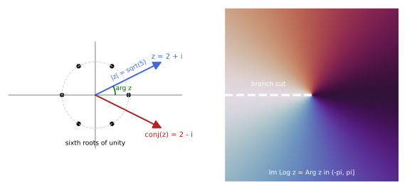
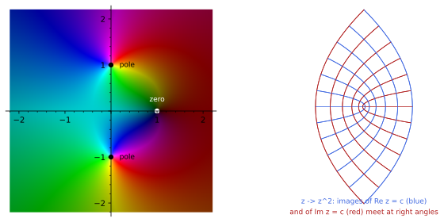
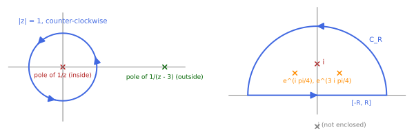
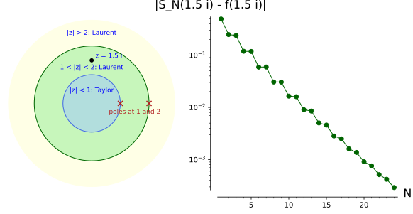
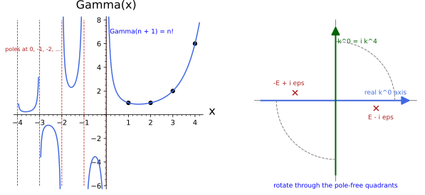

Complex analysis
Complex analysis is the calculus of functions of a complex variable that are differentiable in the complex sense. Such functions are far more rigid than differentiable functions of two real variables: once they are differentiable they are infinitely differentiable, equal to their Taylor series, determined on a whole domain by their values on any small piece of it, and their integrals around closed curves are computed by adding up a few numbers, the residues, attached to the points where the function fails to be defined. This chapter develops that rigidity in five sections. Complex numbers and functions sets up the field \mathbb{C}, modulus and argument, the exponential and the many-valued logarithm with its branches and branch cuts. Holomorphic functions defines the complex derivative, derives the Cauchy-Riemann equations and their consequences for harmonic functions and angle-preserving maps. Contour integration defines integrals along curves and proves the two theorems of Cauchy that drive everything else, with Liouville’s theorem as a first consequence. Series and residues treats Taylor and Laurent expansions, classifies isolated singularities and states the residue theorem, the tool that evaluates the real integrals of physics (Fourier transforms, propagators, dispersion relations) in a few lines. Analytic continuation and special functions extends functions beyond their original domain of definition, introduces the Gamma, Beta and zeta functions that appear in every dimensional regularisation and every loop integral, and explains Wick rotation as a deformation of a contour of integration. Each definition is followed by three examples of increasing complexity and three exercises of increasing difficulty with hidden solutions; each section closes with a proposition that collects its explicit computations, and the quoted theorems (Cauchy, Liouville, the residue theorem) are stated with their hypotheses and argued in the text. The reader who knows this material can skim the definitions and try the exercises; the conventions for the signature and for indices are fixed in Prerequisites and conventions, and the real analysis assumed here (limits, series, the Riemann integral, partial derivatives) is that of Real numbers, sequences and limits, Series, The Riemann integral and Calculus on \mathbb{R}^n.
Complex numbers and functions
The field \mathbb{C}, modulus and argument, the exponential and the logarithm, branches and branch cuts. The six notions of this section are the vocabulary of the chapter; the single proposition at its end, on the roots of unity, exercises all of them on explicit numbers.

figures/complex_plane.sage.
Interactive figure (drag to rotate or zoom); the static version is above.
Complex numbers
Definition 1 (Complex number) A complex number is a pair of real numbers written z = x + iy, with x = \operatorname{Re} z the real part, y = \operatorname{Im} z the imaginary part and i a symbol with i^2 = -1. Complex numbers are added componentwise and multiplied by expanding and using i^2 = -1: (x + iy)(u + iv) = (xu - yv) + i(xv + yu). With these operations the set \mathbb{C} of complex numbers is a field: every z \neq 0 has an inverse. The complex conjugate of z is \bar z = x - iy; conjugation respects sums and products, \overline{z + w} = \bar z + \bar w and \overline{zw} = \bar z \bar w. As a real vector space (Vector spaces) \mathbb{C} is \mathbb{R}^2 with basis 1, i, and z is the point (x, y) of the complex plane (Figure 1).
Veriphy. Recipe ideal_membership, certificate ideal_membership.sage; Test (kernel-checked, 3 instances); script ca-num-mul-inv-test.sage; Test (oracle, 3 instances); record KaluzaKlein.ComplexAnalysis.ComplexNumbers.conj_add_mul; Test (kernel-checked, 3 instances); script ca-num-coords-test.sage.
Lean.
/-- The product rule `(x + iy)(u + iv) = (xu - yv) + i(xv + yu)`, from `i² = -1`. -/
theorem mul_formula (x y u v : ℝ) :
((x : ℂ) + y * I) * (u + v * I) = (x * u - y * v) + (x * v + y * u) * IKaluzaKlein.ComplexAnalysis.ComplexNumbers.mul_formula in KaluzaKlein/PartI/ComplexAnalysis/ComplexNumbers.lean, namespace KaluzaKlein.ComplexAnalysis.ComplexNumbers
/-- `ℂ` is a field: every `z ≠ 0` has an inverse. -/
theorem mul_inv_of_ne_zero (z : ℂ) (hz : z ≠ 0) : ∃ w : ℂ, z * w = 1KaluzaKlein.ComplexAnalysis.ComplexNumbers.mul_inv_of_ne_zero in KaluzaKlein/PartI/ComplexAnalysis/ComplexNumbers.lean, namespace KaluzaKlein.ComplexAnalysis.ComplexNumbers
/-- Conjugation respects sums and products. -/
theorem conj_add_mul (z w : ℂ) : conj (z + w) = conj z + conj w ∧ conj (z * w) = conj z * conj wKaluzaKlein.ComplexAnalysis.ComplexNumbers.conj_add_mul in KaluzaKlein/PartI/ComplexAnalysis/ComplexNumbers.lean, namespace KaluzaKlein.ComplexAnalysis.ComplexNumbers
/-- As a real vector space `ℂ` is `ℝ²` with basis `1, i`: `x + iy` has coordinates `(x, y)`. -/
theorem coords_one_I (x y : ℝ) : ((x : ℂ) + y * I).re = x ∧ ((x : ℂ) + y * I).im = yKaluzaKlein.ComplexAnalysis.ComplexNumbers.coords_one_I in KaluzaKlein/PartI/ComplexAnalysis/ComplexNumbers.lean, namespace KaluzaKlein.ComplexAnalysis.ComplexNumbers
Sage. ideal_membership.sage: Gröbner cofactors expressing lhs - rhs through the relations used (i² = -1, (√k)² = k, the stated identities), checked by linear_combination; mul_inv_of_ne_zero at (1); (Complex.I, Complex.I_ne_zero); ((2 + Complex.I)) (3 checked by the kernel); conj_add_mul at (0, 0); (1, Complex.I); ((2 + Complex.I), (3 - Complex.I)) (2 checked by the kernel, 1 evaluated by Sage in exact or 128-bit interval arithmetic); coords_one_I at (0, 0); (1, 2); ((-3 / 2), (5 / 7)) (3 checked by the kernel).
The definition is best absorbed by computing. The first example multiplies and divides two concrete numbers, and shows the one trick that division needs: clearing the denominator with its conjugate.
Example 1 (A product and a quotient) (2 + i)(3 - i) = 6 - 2i + 3i - i^2 = 7 + i, and \dfrac{1}{2 + i} = \dfrac{2 - i}{(2 + i)(2 - i)} = \dfrac{2 - i}{5}: to divide, multiply numerator and denominator by the conjugate of the denominator, which makes the denominator real.
Veriphy. Recipe ideal_membership, certificate ideal_membership.sage.
Lean.
/-- `(2 + i)(3 - i) = 7 + i`. -/
theorem prod_example : (2 + I) * (3 - I) = 7 + IKaluzaKlein.ComplexAnalysis.ComplexNumbers.prod_example in KaluzaKlein/PartI/ComplexAnalysis/ComplexNumbers.lean, namespace KaluzaKlein.ComplexAnalysis.ComplexNumbers
/-- `1/(2 + i) = (2 - i)/5`: multiply by the conjugate. -/
theorem quot_example : 1 / (2 + I) = (2 - I) / 5KaluzaKlein.ComplexAnalysis.ComplexNumbers.quot_example in KaluzaKlein/PartI/ComplexAnalysis/ComplexNumbers.lean, namespace KaluzaKlein.ComplexAnalysis.ComplexNumbers
/-- `(2 + i)(2 - i) = 5` is real. -/
theorem conj_denominator : (2 + I) * (2 - I) = 5KaluzaKlein.ComplexAnalysis.ComplexNumbers.conj_denominator in KaluzaKlein/PartI/ComplexAnalysis/ComplexNumbers.lean, namespace KaluzaKlein.ComplexAnalysis.ComplexNumbers
Sage. ideal_membership.sage: Gröbner cofactors expressing lhs - rhs through the relations used (i² = -1, (√k)² = k, the stated identities), checked by linear_combination.
The next example looks at what the new symbol i buys. Negative numbers acquire square roots, and polynomials that were irreducible over the reals split into linear factors.
Example 2 (Square roots of negative numbers) (\pm 2i)^2 = -4, so -4 has the two square roots \pm 2i; more generally every non-zero complex number has exactly two square roots, w and -w (Definition 6 below says which one deserves the name \sqrt z). x^2 + 1 = (x + i)(x - i) factorises over \mathbb{C} though not over \mathbb{R}.
Veriphy. Recipe ideal_membership, certificate ideal_membership.sage; Test (kernel-checked, 3 instances); script ca-num-sqrt-roots-test.sage; Recipe sos, certificate sos.sage.
Lean.
/-- `(2i)² = -4` and `(-2i)² = -4`. -/
theorem sq_two_I : (2 * I) ^ 2 = -4 ∧ (-(2 * I)) ^ 2 = -4KaluzaKlein.ComplexAnalysis.ComplexNumbers.sq_two_I in KaluzaKlein/PartI/ComplexAnalysis/ComplexNumbers.lean, namespace KaluzaKlein.ComplexAnalysis.ComplexNumbers
/-- Every non-zero complex number has exactly two square roots, `w` and `-w ≠ w`. -/
theorem two_square_roots (z : ℂ) (hz : z ≠ 0) :
∃ w : ℂ, w ^ 2 = z ∧ w ≠ -w ∧ ∀ u : ℂ, u ^ 2 = z → u = w ∨ u = -wKaluzaKlein.ComplexAnalysis.ComplexNumbers.two_square_roots in KaluzaKlein/PartI/ComplexAnalysis/ComplexNumbers.lean, namespace KaluzaKlein.ComplexAnalysis.ComplexNumbers
/-- `x² + 1 = (x + i)(x - i)` over `ℂ`. -/
theorem sq_add_one_factor (x : ℂ) : x ^ 2 + 1 = (x + I) * (x - I)KaluzaKlein.ComplexAnalysis.ComplexNumbers.sq_add_one_factor in KaluzaKlein/PartI/ComplexAnalysis/ComplexNumbers.lean, namespace KaluzaKlein.ComplexAnalysis.ComplexNumbers
/-- Over `ℝ`, `x² + 1` has no zero (it is positive), so it does not factor into real linear factors. -/
theorem sq_add_one_pos (x : ℝ) : 0 < x ^ 2 + 1KaluzaKlein.ComplexAnalysis.ComplexNumbers.sq_add_one_pos in KaluzaKlein/PartI/ComplexAnalysis/ComplexNumbers.lean, namespace KaluzaKlein.ComplexAnalysis.ComplexNumbers
Sage. ideal_membership.sage: Gröbner cofactors expressing lhs - rhs through the relations used (i² = -1, (√k)² = k, the stated identities), checked by linear_combination; two_square_roots at (1); ((-4)); ((2 * Complex.I)) (3 checked by the kernel); sos.sage: a sum-of-squares decomposition.
The third example gives complex multiplication a geometric meaning that the chapter will use repeatedly. A complex number acts on the plane as a matrix of a very special shape, a rotation combined with a scaling.
Example 3 (Complex numbers as 2 \times 2 real matrices) The map x + iy \mapsto \begin{pmatrix} x & -y \\ y & x \end{pmatrix} turns sums into sums and products into matrix products (i becomes the rotation by 90^\circ, whose square is -1); the determinant of the matrix is x^2 + y^2 = |z|^2 and its transpose represents \bar z. Multiplication by a fixed z is thus a rotation-scaling of the plane, the geometric fact behind Definition 10.
Veriphy. Recipe matrix_from_goal, certificate la-matrix.sage; Test (kernel-checked, 3 instances); script ca-num-sq-norm-test.sage.
Lean.
/-- Sums go to sums. -/
theorem toMat_add (x y u v : ℝ) :
!![x, -y; y, x] + !![u, -v; v, u] = !![x + u, -(y + v); y + v, x + u]KaluzaKlein.ComplexAnalysis.ComplexNumbers.toMat_add in KaluzaKlein/PartI/ComplexAnalysis/ComplexNumbers.lean, namespace KaluzaKlein.ComplexAnalysis.ComplexNumbers
/-- Products go to products: the matrix of `(x + iy)(u + iv)`. -/
theorem toMat_mul (x y u v : ℝ) :
!![x, -y; y, x] * !![u, -v; v, u] = !![x * u - y * v, -(x * v + y * u); x * v + y * u, x * u - y * v]KaluzaKlein.ComplexAnalysis.ComplexNumbers.toMat_mul in KaluzaKlein/PartI/ComplexAnalysis/ComplexNumbers.lean, namespace KaluzaKlein.ComplexAnalysis.ComplexNumbers
/-- `i` becomes the rotation by `90°`, whose square is `-1`. -/
theorem toMat_I_sq : !![(0 : ℝ), -1; 1, 0] * !![(0 : ℝ), -1; 1, 0] = !![(-1 : ℝ), 0; 0, -1]KaluzaKlein.ComplexAnalysis.ComplexNumbers.toMat_I_sq in KaluzaKlein/PartI/ComplexAnalysis/ComplexNumbers.lean, namespace KaluzaKlein.ComplexAnalysis.ComplexNumbers
/-- The determinant is `x² + y² = |z|²`. -/
theorem toMat_det (x y : ℝ) : Matrix.det !![x, -y; y, x] = x ^ 2 + y ^ 2KaluzaKlein.ComplexAnalysis.ComplexNumbers.toMat_det in KaluzaKlein/PartI/ComplexAnalysis/ComplexNumbers.lean, namespace KaluzaKlein.ComplexAnalysis.ComplexNumbers
/-- `x² + y² = |x + iy|²`. -/
theorem sq_norm_eq (x y : ℝ) : ‖(x : ℂ) + y * I‖ ^ 2 = x ^ 2 + y ^ 2KaluzaKlein.ComplexAnalysis.ComplexNumbers.sq_norm_eq in KaluzaKlein/PartI/ComplexAnalysis/ComplexNumbers.lean, namespace KaluzaKlein.ComplexAnalysis.ComplexNumbers
/-- The transpose represents `z̄ = x - iy`. -/
theorem toMat_transpose (x y : ℝ) : Matrix.transpose !![x, -y; y, x] = !![x, -(-y); -y, x]KaluzaKlein.ComplexAnalysis.ComplexNumbers.toMat_transpose in KaluzaKlein/PartI/ComplexAnalysis/ComplexNumbers.lean, namespace KaluzaKlein.ComplexAnalysis.ComplexNumbers
Sage. la-matrix.sage: the matrix identity evaluated entry by entry; sq_norm_eq at (0, 0); (3, 4); ((1 / 2), (-2)) (3 checked by the kernel).
The first exercise is pure practice with the arithmetic rules. It also introduces Sage’s exact Gaussian rationals, which will serve as the computational ground for most of the chapter.
Exercise 1 (Products, quotients and conjugates) Compute (2 + i)(3 - i), (1 + i)/(1 - i) and (1 + i)^8, and check on these numbers that \overline{zw} = \bar z \bar w.
(2 + i)(3 - i) = 7 + i; (1 + i)/(1 - i) = (1 + i)^2/2 = i; (1 + i)^2 = 2i, so (1 + i)^8 = (2i)^4 = 16. Sage works in the Gaussian rationals \mathbb{Q}(i) exactly:
K.<i> = QuadraticField(-1) # the field Q(i), exact arithmetic with i^2 = -1
z, w = 2 + i, 3 - i
print("(2 + i)(3 - i) =", z*w)
print("(1 + i)/(1 - i) =", (1 + i)/(1 - i))
print("(1 + i)^8 =", (1 + i)^8)
print("conj(z w) == conj(z) conj(w):", (z*w).conjugate() == z.conjugate()*w.conjugate())
print("|z w| = |z| |w| (squared moduli, exact):", (z*w).norm() == z.norm()*w.norm(), " |z|^2 =", z.norm(), " |w|^2 =", w.norm())Output:
(2 + i)(3 - i) = i + 7
(1 + i)/(1 - i) = i
(1 + i)^8 = 16
conj(z w) == conj(z) conj(w): True
|z w| = |z| |w| (squared moduli, exact): True |z|^2 = 5 |w|^2 = 10Veriphy. Recipe ideal_membership, certificate ideal_membership.sage.
Lean.
/-- `(2 + i)(3 - i) = 7 + i`. -/
theorem prod_example : (2 + I) * (3 - I) = 7 + IKaluzaKlein.ComplexAnalysis.ComplexNumbers.prod_example in KaluzaKlein/PartI/ComplexAnalysis/ComplexNumbers.lean, namespace KaluzaKlein.ComplexAnalysis.ComplexNumbers
/-- `(1 + i)/(1 - i) = i`. -/
theorem quot_one_add_I : (1 + I) / (1 - I) = IKaluzaKlein.ComplexAnalysis.ComplexNumbers.quot_one_add_I in KaluzaKlein/PartI/ComplexAnalysis/ComplexNumbers.lean, namespace KaluzaKlein.ComplexAnalysis.ComplexNumbers
/-- `(1 + i)² = 2i`. -/
theorem one_add_I_sq : (1 + I) ^ 2 = 2 * IKaluzaKlein.ComplexAnalysis.ComplexNumbers.one_add_I_sq in KaluzaKlein/PartI/ComplexAnalysis/ComplexNumbers.lean, namespace KaluzaKlein.ComplexAnalysis.ComplexNumbers
/-- `(1 + i)⁸ = 16`. -/
theorem one_add_I_pow_eight : (1 + I) ^ 8 = 16KaluzaKlein.ComplexAnalysis.ComplexNumbers.one_add_I_pow_eight in KaluzaKlein/PartI/ComplexAnalysis/ComplexNumbers.lean, namespace KaluzaKlein.ComplexAnalysis.ComplexNumbers
/-- `conj((2 + i)(3 - i)) = conj(2 + i) conj(3 - i)`: both are `7 - i`. -/
theorem conj_prod_example : conj (7 + I) = (2 - I) * (3 + I)KaluzaKlein.ComplexAnalysis.ComplexNumbers.conj_prod_example in KaluzaKlein/PartI/ComplexAnalysis/ComplexNumbers.lean, namespace KaluzaKlein.ComplexAnalysis.ComplexNumbers
Sage. ideal_membership.sage: Gröbner cofactors expressing lhs - rhs through the relations used (i² = -1, (√k)² = k, the stated identities), checked by linear_combination.
The second exercise derives the small identities that convert between the Cartesian description (x, y) and the pair (z, \bar z). They are used silently in every later computation with real and imaginary parts.
Exercise 2 (Real and imaginary parts from the conjugate) Show that \operatorname{Re} z = \tfrac12(z + \bar z), \operatorname{Im} z = \tfrac1{2i}(z - \bar z), z \bar z = x^2 + y^2, and that z is real exactly when z = \bar z.
With z = x + iy: z + \bar z = 2x, z - \bar z = 2iy, and z\bar z = (x + iy)(x - iy) = x^2 - i^2 y^2 = x^2 + y^2. z = \bar z means 2iy = 0, that is, y = 0. These identities let one translate any statement about (x, y) into one about (z, \bar z), which is how the Cauchy-Riemann equations are written as \partial f/\partial \bar z = 0 in Exercise 29.
Veriphy. Recipe ideal_membership, certificate ca-num-ring.sage; Recipe ideal_membership, certificate ideal_membership.sage; Test (kernel-checked, 4 instances); script ca-num-real-conj-test.sage.
Lean.
/-- `conj (x + iy) = x - iy`. -/
theorem conj_coords (x y : ℝ) : conj ((x : ℂ) + y * I) = x - y * IKaluzaKlein.ComplexAnalysis.ComplexNumbers.conj_coords in KaluzaKlein/PartI/ComplexAnalysis/ComplexNumbers.lean, namespace KaluzaKlein.ComplexAnalysis.ComplexNumbers
/-- `Re z = (z + z̄)/2`. -/
theorem re_eq (x y : ℝ) : ((x : ℂ) + y * I + (x - y * I)) / 2 = xKaluzaKlein.ComplexAnalysis.ComplexNumbers.re_eq in KaluzaKlein/PartI/ComplexAnalysis/ComplexNumbers.lean, namespace KaluzaKlein.ComplexAnalysis.ComplexNumbers
/-- `Im z = (z - z̄)/(2i)`. -/
theorem im_eq (x y : ℝ) : ((x : ℂ) + y * I - (x - y * I)) / (2 * I) = yKaluzaKlein.ComplexAnalysis.ComplexNumbers.im_eq in KaluzaKlein/PartI/ComplexAnalysis/ComplexNumbers.lean, namespace KaluzaKlein.ComplexAnalysis.ComplexNumbers
/-- `z z̄ = x² + y²`. -/
theorem mul_conj_coords (x y : ℝ) : ((x : ℂ) + y * I) * (x - y * I) = x ^ 2 + y ^ 2KaluzaKlein.ComplexAnalysis.ComplexNumbers.mul_conj_coords in KaluzaKlein/PartI/ComplexAnalysis/ComplexNumbers.lean, namespace KaluzaKlein.ComplexAnalysis.ComplexNumbers
/-- `z` is real exactly when `z = z̄`. -/
theorem real_iff_conj (z : ℂ) : conj z = z ↔ z.im = 0KaluzaKlein.ComplexAnalysis.ComplexNumbers.real_iff_conj in KaluzaKlein/PartI/ComplexAnalysis/ComplexNumbers.lean, namespace KaluzaKlein.ComplexAnalysis.ComplexNumbers
Sage. ca-num-ring.sage: the expansion of lhs - rhs to the zero polynomial, checked by ring1; ideal_membership.sage: Gröbner cofactors expressing lhs - rhs through the relations used (i² = -1, (√k)² = k, the stated identities), checked by linear_combination; real_iff_conj at (0); (3); ((2 + Complex.I)); (Complex.I) (4 checked by the kernel).
The last exercise on this definition is structural rather than computational. It confirms that \mathbb{C} is a field and explains why inequalities between complex numbers never appear in this chapter.
Exercise 3 (The inverse and the impossibility of an order) Show that every z \neq 0 has an inverse, z^{-1} = \bar z/(z \bar z), and that \mathbb{C} cannot be given an order < compatible with its arithmetic in the way \mathbb{R} is (positive numbers closed under sums and products, every number positive, zero or negative).
z \cdot \bar z/(z \bar z) = 1, and z\bar z = x^2 + y^2 > 0 when z \neq 0. In an ordered field every non-zero square is positive; i^2 = -1 and 1^2 = 1 would both be positive, so -1 and 1 would be, and their sum 0 would be positive, a contradiction. Inequalities in this chapter therefore always concern real quantities such as the modulus.
Veriphy. Test (oracle, 3 instances); record KaluzaKlein.ComplexAnalysis.ComplexNumbers.inv_eq_conj_div; Test (kernel-checked, 3 instances); script ca-num-normsq-pos-test.sage; Test (kernel-checked, 3 instances); script ca-num-no-order-test.sage.
Lean.
/-- `z⁻¹ = z̄/(z z̄)` for `z ≠ 0`: `z · (z̄ · (z z̄)⁻¹) = 1`, with `z z̄ = |z|²` real and positive. -/
theorem inv_eq_conj_div (z : ℂ) (hz : z ≠ 0) : z * (conj z * (((normSq z)⁻¹ : ℝ) : ℂ)) = 1KaluzaKlein.ComplexAnalysis.ComplexNumbers.inv_eq_conj_div in KaluzaKlein/PartI/ComplexAnalysis/ComplexNumbers.lean, namespace KaluzaKlein.ComplexAnalysis.ComplexNumbers
/-- `z z̄ = x² + y² > 0` for `z ≠ 0`. -/
theorem normSq_pos_of_ne_zero (z : ℂ) (hz : z ≠ 0) : 0 < z.re ^ 2 + z.im ^ 2KaluzaKlein.ComplexAnalysis.ComplexNumbers.normSq_pos_of_ne_zero in KaluzaKlein/PartI/ComplexAnalysis/ComplexNumbers.lean, namespace KaluzaKlein.ComplexAnalysis.ComplexNumbers
/-- `ℂ` admits no order compatible with its arithmetic: there is no set `P` of "positive" numbers closed under sums
and products, not containing `0`, with every non-zero `a` or its negative in `P` (`i²` and `1²` would both be
positive, and so would their sum `0`). -/
theorem no_positive_cone (P : Set ℂ) :
¬ ((∀ a ∈ P, ∀ b ∈ P, a + b ∈ P) ∧ (∀ a ∈ P, ∀ b ∈ P, a * b ∈ P) ∧
(∀ a : ℂ, a ≠ 0 → a ∈ P ∨ -a ∈ P) ∧ (0 : ℂ) ∉ P)KaluzaKlein.ComplexAnalysis.ComplexNumbers.no_positive_cone in KaluzaKlein/PartI/ComplexAnalysis/ComplexNumbers.lean, namespace KaluzaKlein.ComplexAnalysis.ComplexNumbers
Sage. inv_eq_conj_div at (1); (Complex.I, Complex.I_ne_zero); ((2 + Complex.I)) (1 checked by the kernel, 2 evaluated by Sage in exact or 128-bit interval arithmetic); normSq_pos_of_ne_zero at (1); (Complex.I, Complex.I_ne_zero); ((2 + Complex.I)) (3 checked by the kernel); no_positive_cone at (∅); (Set.univ); ({z : ℂ | 0 < z.re}) (3 checked by the kernel).
Modulus
Having the arithmetic, we need a notion of size. The modulus measures the distance of a point from the origin and turns the complex plane into the metric space on which limits, continuity and open sets make sense.
Definition 2 (Modulus) The modulus (or absolute value) of z = x + iy is |z| = \sqrt{x^2 + y^2} = \sqrt{z \bar z}, the Euclidean length of the vector (x, y). It is multiplicative, |zw| = |z||w|, and satisfies the triangle inequality |z + w| \leq |z| + |w|; |z - w| is the distance between the points z and w, so \mathbb{C} is a metric space with the open discs D(z_0, r) = \{z : |z - z_0| < r\} as basic open sets (the topology of Topological spaces). A set is open, closed, compact or connected in \mathbb{C} exactly when it is so in \mathbb{R}^2; a domain is a non-empty open connected set.
Veriphy. Test (kernel-checked, 3 instances); script ca-num-modulus-test.sage; Test (oracle, 3 instances); record KaluzaKlein.ComplexAnalysis.Modulus.sq_norm_eq_mul_conj; Test (oracle, 3 instances); record KaluzaKlein.ComplexAnalysis.Modulus.norm_mul_eq; Test (oracle, 3 instances); record KaluzaKlein.ComplexAnalysis.Modulus.triangle; Test (kernel-checked, 3 instances); script ca-num-dist-test.sage; Test (kernel-checked, 3 instances); script ca-num-disc-open-test.sage; Test (kernel-checked, 3 instances); script ca-num-topology-test.sage.
Lean.
/-- `|x + iy| = √(x² + y²)`. -/
theorem modulus_formula (x y : ℝ) : ‖(x : ℂ) + y * I‖ = √(x ^ 2 + y ^ 2)KaluzaKlein.ComplexAnalysis.Modulus.modulus_formula in KaluzaKlein/PartI/ComplexAnalysis/Modulus.lean, namespace KaluzaKlein.ComplexAnalysis.Modulus
/-- `|z|² = z z̄`. -/
theorem sq_norm_eq_mul_conj (z : ℂ) : ((‖z‖ ^ 2 : ℝ) : ℂ) = z * conj zKaluzaKlein.ComplexAnalysis.Modulus.sq_norm_eq_mul_conj in KaluzaKlein/PartI/ComplexAnalysis/Modulus.lean, namespace KaluzaKlein.ComplexAnalysis.Modulus
/-- The modulus is multiplicative: `|zw| = |z||w|`. -/
theorem norm_mul_eq (z w : ℂ) : ‖z * w‖ = ‖z‖ * ‖w‖KaluzaKlein.ComplexAnalysis.Modulus.norm_mul_eq in KaluzaKlein/PartI/ComplexAnalysis/Modulus.lean, namespace KaluzaKlein.ComplexAnalysis.Modulus
/-- The triangle inequality `|z + w| ≤ |z| + |w|`. -/
theorem triangle (z w : ℂ) : ‖z + w‖ ≤ ‖z‖ + ‖w‖KaluzaKlein.ComplexAnalysis.Modulus.triangle in KaluzaKlein/PartI/ComplexAnalysis/Modulus.lean, namespace KaluzaKlein.ComplexAnalysis.Modulus
/-- `|z - w|` is the distance between `z` and `w`. -/
theorem dist_eq_norm_sub (z w : ℂ) : dist z w = ‖z - w‖KaluzaKlein.ComplexAnalysis.Modulus.dist_eq_norm_sub in KaluzaKlein/PartI/ComplexAnalysis/Modulus.lean, namespace KaluzaKlein.ComplexAnalysis.Modulus
/-- The open disc `D(z₀, r) = {z : |z - z₀| < r}` is open. -/
theorem disc_isOpen (z₀ : ℂ) (r : ℝ) : IsOpen {z : ℂ | ‖z - z₀‖ < r}KaluzaKlein.ComplexAnalysis.Modulus.disc_isOpen in KaluzaKlein/PartI/ComplexAnalysis/Modulus.lean, namespace KaluzaKlein.ComplexAnalysis.Modulus
/-- A set is open, closed, compact or connected in `ℂ` exactly when its image in `ℝ²` is. -/
theorem topology_as_R2 (s : Set ℂ) :
(IsOpen s ↔ IsOpen (equivRealProdCLM '' s)) ∧ (IsClosed s ↔ IsClosed (equivRealProdCLM '' s)) ∧
(IsCompact s ↔ IsCompact (equivRealProdCLM '' s)) ∧
(IsConnected s ↔ IsConnected (equivRealProdCLM '' s))KaluzaKlein.ComplexAnalysis.Modulus.topology_as_R2 in KaluzaKlein/PartI/ComplexAnalysis/Modulus.lean, namespace KaluzaKlein.ComplexAnalysis.Modulus
Sage. modulus_formula at (0, 0); (3, 4); (1, (-2)) (3 checked by the kernel); sq_norm_eq_mul_conj at (0); (1); ((2 + Complex.I)) (2 checked by the kernel, 1 evaluated by Sage in exact or 128-bit interval arithmetic); norm_mul_eq at (0, (2 + Complex.I)); ((3 + 4 * Complex.I), (1 - Complex.I)); (Complex.I, 2) (1 checked by the kernel, 2 evaluated by Sage in exact or 128-bit interval arithmetic); triangle at (0, 0); (1, Complex.I); ((3 + 4 * Complex.I), (-1 + 2 * Complex.I)) (1 checked by the kernel, 2 evaluated by Sage in exact or 128-bit interval arithmetic); dist_eq_norm_sub at (0, 0); (1, Complex.I); ((2 + Complex.I), 3) (3 checked by the kernel); disc_isOpen at (0, 0); (0, 1); (Complex.I, 2) (3 checked by the kernel); topology_as_R2 at (∅); (Set.univ); (Metric.ball 0 1) (3 checked by the kernel).
A few numerical values make the definition concrete. The first example also shows multiplicativity at work on the product computed in Example 1.
Example 4 (Some moduli) |3 + 4i| = 5, |i| = 1, |2 + i| = \sqrt 5 (Figure 1), and |(2 + i)(3 - i)| = |7 + i| = \sqrt{50} = \sqrt 5 \cdot \sqrt{10}, as multiplicativity requires.
Veriphy. Recipe transcendental_rewrite, certificate ca-num-sqrt.sage; Recipe ideal_membership, certificate ca-num-ring.sage.
Lean.
/-- `|3 + 4i| = 5`, `|i| = 1`, `|2 + i| = √5`. -/
theorem moduli_values : ‖(3 : ℂ) + 4 * I‖ = 5 ∧ ‖I‖ = 1 ∧ ‖(2 : ℂ) + I‖ = √5KaluzaKlein.ComplexAnalysis.Modulus.moduli_values in KaluzaKlein/PartI/ComplexAnalysis/Modulus.lean, namespace KaluzaKlein.ComplexAnalysis.Modulus
/-- `|(2 + i)(3 - i)| = |7 + i| = √50 = √5 √10`. -/
theorem norm_product_example :
‖(2 + I) * (3 - I)‖ = √50 ∧ ‖(7 : ℂ) + I‖ = √50 ∧ √50 = √5 * √10KaluzaKlein.ComplexAnalysis.Modulus.norm_product_example in KaluzaKlein/PartI/ComplexAnalysis/Modulus.lean, namespace KaluzaKlein.ComplexAnalysis.Modulus
/-- The squared form of multiplicativity is Lagrange's identity `(xu - yv)² + (xv + yu)² = (x² + y²)(u² + v²)`. -/
theorem lagrange_identity (x y u v : ℝ) :
(x * u - y * v) ^ 2 + (x * v + y * u) ^ 2 = (x ^ 2 + y ^ 2) * (u ^ 2 + v ^ 2)KaluzaKlein.ComplexAnalysis.Modulus.lagrange_identity in KaluzaKlein/PartI/ComplexAnalysis/Modulus.lean, namespace KaluzaKlein.ComplexAnalysis.Modulus
Sage. ca-num-sqrt.sage: the exact value of the square root, closed by Real.sqrt_sq / Real.sqrt_mul and norm_num; ca-num-ring.sage: the expansion of lhs - rhs to the zero polynomial, checked by ring1.
The second example singles out the set where the modulus equals one. It is at the same time a curve, a group under multiplication and the contour over which most of the chapter’s integrals will be taken.
Example 5 (The unit circle) \{z : |z| = 1\} is the unit circle; it is closed under multiplication and inversion (|zw| = |z||w|, |1/z| = 1/|z|) and so is a group, the group U(1) of phases. \{|z| < 1\} is the open unit disc, a domain; \{|z| \leq 1\} is compact.
Veriphy. Test (kernel-checked, 3 instances); script ca-num-circle-test.sage; Test (kernel-checked, 3 instances); script ca-num-norm-inv-test.sage; Test (kernel-checked, 3 instances); script ca-num-disc-domain-test.sage; Test (kernel-checked, 3 instances); script ca-num-disc-compact-test.sage.
Lean.
/-- The unit circle is closed under multiplication and inversion. -/
theorem circle_mul_inv (z w : ℂ) (hz : ‖z‖ = 1) (hw : ‖w‖ = 1) : ‖z * w‖ = 1 ∧ ‖z⁻¹‖ = 1KaluzaKlein.ComplexAnalysis.Modulus.circle_mul_inv in KaluzaKlein/PartI/ComplexAnalysis/Modulus.lean, namespace KaluzaKlein.ComplexAnalysis.Modulus
/-- `|1/z| = 1/|z|`. -/
theorem norm_one_div (z : ℂ) : ‖1 / z‖ = 1 / ‖z‖KaluzaKlein.ComplexAnalysis.Modulus.norm_one_div in KaluzaKlein/PartI/ComplexAnalysis/Modulus.lean, namespace KaluzaKlein.ComplexAnalysis.Modulus
/-- Open discs (the open unit disc among them) are domains: open and connected. -/
theorem disc_domain (c : ℂ) (r : ℝ) (hr : 0 < r) : IsOpen (ball c r) ∧ IsConnected (ball c r)KaluzaKlein.ComplexAnalysis.Modulus.disc_domain in KaluzaKlein/PartI/ComplexAnalysis/Modulus.lean, namespace KaluzaKlein.ComplexAnalysis.Modulus
/-- Closed discs (the closed unit disc among them) are compact. -/
theorem closed_disc_compact (c : ℂ) (r : ℝ) : IsCompact (closedBall c r)KaluzaKlein.ComplexAnalysis.Modulus.closed_disc_compact in KaluzaKlein/PartI/ComplexAnalysis/Modulus.lean, namespace KaluzaKlein.ComplexAnalysis.Modulus
Sage. circle_mul_inv at (1, 1, norm_one, norm_one); (Complex.I, (-1), Complex.norm_I); ((-Complex.I), Complex.I, Complex.norm_I) (3 checked by the kernel); norm_one_div at (0); (2); (Complex.I) (3 checked by the kernel); disc_domain at (0, 1, one_pos); (Complex.I, 2, two_pos); (1, (1 / 2)) (3 checked by the kernel); closed_disc_compact at (0, 0); (0, 1); (Complex.I, 2) (3 checked by the kernel).
The third example turns the triangle inequality around to bound a modulus from below. Lower bounds on denominators are what make large contours negligible later, so this small estimate deserves attention.
Example 6 (The reverse triangle inequality) From |z| = |(z - w) + w| \leq |z - w| + |w| and the same with z, w exchanged, \bigl||z| - |w|\bigr| \leq |z - w|. It gives lower bounds for denominators: on the circle |z| = 2, |z^2 + 1| \geq |z|^2 - 1 = 3, the kind of estimate that makes large arcs of contours negligible in Section 1.4.
Veriphy. Test (oracle, 3 instances); record KaluzaKlein.ComplexAnalysis.Modulus.reverse_triangle; Test (kernel-checked, 3 instances); script ca-num-lower-bound-test.sage.
Lean.
/-- The reverse triangle inequality `||z| - |w|| ≤ |z - w|`. -/
theorem reverse_triangle (z w : ℂ) : |‖z‖ - ‖w‖| ≤ ‖z - w‖KaluzaKlein.ComplexAnalysis.Modulus.reverse_triangle in KaluzaKlein/PartI/ComplexAnalysis/Modulus.lean, namespace KaluzaKlein.ComplexAnalysis.Modulus
/-- On the circle `|z| = 2`, `|z² + 1| ≥ |z|² - 1 = 3`. -/
theorem lower_bound_on_circle (z : ℂ) (hz : ‖z‖ = 2) : 3 ≤ ‖z ^ 2 + 1‖KaluzaKlein.ComplexAnalysis.Modulus.lower_bound_on_circle in KaluzaKlein/PartI/ComplexAnalysis/Modulus.lean, namespace KaluzaKlein.ComplexAnalysis.Modulus
Sage. reverse_triangle at (0, 0); ((3 + 4 * Complex.I), 1); (Complex.I, (-Complex.I)) (1 checked by the kernel, 2 evaluated by Sage in exact or 128-bit interval arithmetic); lower_bound_on_circle at (2); ((2 * Complex.I)); ((-2)) (3 checked by the kernel).
The first exercise proves the triangle inequality from the algebra of conjugates. The proof is two lines, but the case of equality is worth understanding geometrically.
Exercise 4 (The triangle inequality) Prove |z + w| \leq |z| + |w| from |z + w|^2 = (z + w)(\bar z + \bar w) and \operatorname{Re}(z \bar w) \leq | z||w|, and determine when equality holds.
|z + w|^2 = |z|^2 + |w|^2 + z\bar w + \bar z w = |z|^2 + |w|^2 + 2\operatorname{Re}(z\bar w) \leq |z|^2 + |w|^2 + 2|z||w| = (|z| + |w|)^2, using \operatorname{Re} u \leq |u| and |z \bar w| = |z||w|. Equality needs \operatorname{Re}(z\bar w) = |z\bar w|, that is, z\bar w \geq 0: z and w point in the same direction (one is a non-negative multiple of the other).
Veriphy. Test (oracle, 3 instances); record KaluzaKlein.ComplexAnalysis.Modulus.sq_norm_add; Test (oracle, 3 instances); record KaluzaKlein.ComplexAnalysis.Modulus.re_mul_conj_le; Test (oracle, 3 instances); record KaluzaKlein.ComplexAnalysis.Modulus.triangle; Test (kernel-checked, 3 instances); script ca-num-triangle-eq-test.sage.
Lean.
/-- `|z + w|² = |z|² + |w|² + 2 Re(z w̄)`. -/
theorem sq_norm_add (z w : ℂ) : ‖z + w‖ ^ 2 = ‖z‖ ^ 2 + ‖w‖ ^ 2 + 2 * (z * conj w).reKaluzaKlein.ComplexAnalysis.Modulus.sq_norm_add in KaluzaKlein/PartI/ComplexAnalysis/Modulus.lean, namespace KaluzaKlein.ComplexAnalysis.Modulus
/-- `Re(z w̄) ≤ |z||w|`. -/
theorem re_mul_conj_le (z w : ℂ) : (z * conj w).re ≤ ‖z‖ * ‖w‖KaluzaKlein.ComplexAnalysis.Modulus.re_mul_conj_le in KaluzaKlein/PartI/ComplexAnalysis/Modulus.lean, namespace KaluzaKlein.ComplexAnalysis.Modulus
/-- The triangle inequality `|z + w| ≤ |z| + |w|`. -/
theorem triangle (z w : ℂ) : ‖z + w‖ ≤ ‖z‖ + ‖w‖KaluzaKlein.ComplexAnalysis.Modulus.triangle in KaluzaKlein/PartI/ComplexAnalysis/Modulus.lean, namespace KaluzaKlein.ComplexAnalysis.Modulus
/-- Equality holds in the triangle inequality exactly when `z` and `w` point in the same direction. -/
theorem triangle_eq_iff (z w : ℂ) : ‖z + w‖ = ‖z‖ + ‖w‖ ↔ z = 0 ∨ w = 0 ∨ z.arg = w.argKaluzaKlein.ComplexAnalysis.Modulus.triangle_eq_iff in KaluzaKlein/PartI/ComplexAnalysis/Modulus.lean, namespace KaluzaKlein.ComplexAnalysis.Modulus
Sage. sq_norm_add at (0, 0); (1, Complex.I); ((2 + Complex.I), (1 - 3 * Complex.I)) (1 checked by the kernel, 2 evaluated by Sage in exact or 128-bit interval arithmetic); re_mul_conj_le at (0, 0); (1, Complex.I); ((2 + Complex.I), (1 - 3 * Complex.I)) (1 checked by the kernel, 2 evaluated by Sage in exact or 128-bit interval arithmetic); triangle at (0, 0); (1, Complex.I); ((3 + 4 * Complex.I), (-1 + 2 * Complex.I)) (1 checked by the kernel, 2 evaluated by Sage in exact or 128-bit interval arithmetic); triangle_eq_iff at (0, 1); (1, 1); (1, (-1)) (3 checked by the kernel).
The second exercise turns a condition on distances into a familiar curve. It is a first instance of translating a statement about moduli into a statement about coordinates.
Exercise 5 (A circle given by a ratio of distances) Show that the set \{z : |z - 1| = 2|z + 1|\} is a circle, and find its centre and radius.
Squaring, (x - 1)^2 + y^2 = 4\bigl((x + 1)^2 + y^2\bigr), that is, 3x^2 + 3y^2 + 10x + 3 = 0, or (x + \tfrac53)^2 + y^2 = \tfrac{16}9: the circle of centre -\tfrac53 and radius \tfrac43 (an Apollonius circle). Sage completes the square:
x, y = var("x y", domain="real")
eq = ((x - 1)^2 + y^2) - 4*((x + 1)^2 + y^2) # |z-1|^2 - 4 |z+1|^2 = 0
eq = (eq / (-3)).expand() # normalise the quadratic terms to x^2 + y^2
print("x^2 + y^2 + ... = 0 with:", eq, "= 0")
cx = -eq.coefficient(x, 1)/2
r2 = cx^2 - eq.subs(x=0, y=0)
print("centre:", (cx, 0), " radius:", sqrt(r2))
print("check: the circle equation reproduces the locus:", bool((((x - cx)^2 + y^2 - r2) - eq).expand() == 0))Output:
x^2 + y^2 + ... = 0 with: x^2 + y^2 + 10/3*x + 1 = 0
centre: (-5/3, 0) radius: 4/3
check: the circle equation reproduces the locus: TrueVeriphy. Test (kernel-checked, 3 instances); script ca-num-apollonius-test.sage; Recipe ideal_membership, certificate ca-num-ring.sage.
Lean.
/-- `|z - 1| = 2|z + 1|` exactly when `3x² + 3y² + 10x + 3 = 0`, the circle of centre `-5/3` and radius `4/3`. -/
theorem apollonius (x y : ℝ) :
‖(x : ℂ) + y * I - 1‖ = 2 * ‖(x : ℂ) + y * I + 1‖ ↔ (x + 5 / 3) ^ 2 + y ^ 2 = (4 / 3) ^ 2KaluzaKlein.ComplexAnalysis.Modulus.apollonius in KaluzaKlein/PartI/ComplexAnalysis/Modulus.lean, namespace KaluzaKlein.ComplexAnalysis.Modulus
/-- Completing the square: `3x² + 3y² + 10x + 3 = 3((x + 5/3)² + y² - 16/9)`. -/
theorem apollonius_square (x y : ℝ) :
3 * x ^ 2 + 3 * y ^ 2 + 10 * x + 3 = 3 * ((x + 5 / 3) ^ 2 + y ^ 2 - (4 / 3) ^ 2)KaluzaKlein.ComplexAnalysis.Modulus.apollonius_square in KaluzaKlein/PartI/ComplexAnalysis/Modulus.lean, namespace KaluzaKlein.ComplexAnalysis.Modulus
Sage. apollonius at (0, 0); ((-3), 0); (5, 0) (3 checked by the kernel); ca-num-ring.sage: the expansion of lhs - rhs to the zero polynomial, checked by ring1.
The third exercise connects the modulus to the Euclidean inner product of Bilinear forms. The parallelogram law is the identity that characterises norms coming from inner products.
Exercise 6 (The parallelogram law) Prove |z + w|^2 + |z - w|^2 = 2|z|^2 + 2|w|^2 and interpret it geometrically; then show that a modulus coming from an inner product must satisfy it, so that the modulus is the norm of the Euclidean inner product \langle z, w \rangle = \operatorname{Re}(z \bar w) on \mathbb{R}^2.
Expanding as in Exercise 4, the cross terms \pm 2\operatorname{Re}(z\bar w) cancel between |z + w|^2 and |z - w|^2, leaving 2|z|^2 + 2|w|^2: the sum of the squares of the diagonals of a parallelogram is the sum of the squares of its four sides. \operatorname{Re}(z\bar w) = xu + yv is the dot product of (x, y) and (u, v) (the Euclidean bilinear form of Bilinear forms), and \langle z, z \rangle = |z|^2.
Veriphy. Test (oracle, 3 instances); record KaluzaKlein.ComplexAnalysis.Modulus.parallelogram; Test (kernel-checked, 3 instances); script ca-num-dot-test.sage; Test (oracle, 3 instances); record KaluzaKlein.ComplexAnalysis.Modulus.inner_self_eq.
Lean.
/-- The parallelogram law `|z + w|² + |z - w|² = 2|z|² + 2|w|²`. -/
theorem parallelogram (z w : ℂ) : ‖z + w‖ ^ 2 + ‖z - w‖ ^ 2 = 2 * ‖z‖ ^ 2 + 2 * ‖w‖ ^ 2KaluzaKlein.ComplexAnalysis.Modulus.parallelogram in KaluzaKlein/PartI/ComplexAnalysis/Modulus.lean, namespace KaluzaKlein.ComplexAnalysis.Modulus
/-- `Re(z w̄) = xu + yv` is the Euclidean dot product. -/
theorem re_mul_conj_dot (x y u v : ℝ) :
(((x : ℂ) + y * I) * conj ((u : ℂ) + v * I)).re = x * u + y * vKaluzaKlein.ComplexAnalysis.Modulus.re_mul_conj_dot in KaluzaKlein/PartI/ComplexAnalysis/Modulus.lean, namespace KaluzaKlein.ComplexAnalysis.Modulus
/-- `⟨z, z⟩ = Re(z z̄) = |z|²`: the modulus is the norm of the Euclidean inner product. -/
theorem inner_self_eq (z : ℂ) : (z * conj z).re = ‖z‖ ^ 2KaluzaKlein.ComplexAnalysis.Modulus.inner_self_eq in KaluzaKlein/PartI/ComplexAnalysis/Modulus.lean, namespace KaluzaKlein.ComplexAnalysis.Modulus
Sage. parallelogram at (0, 0); (1, Complex.I); ((2 + Complex.I), (1 - 3 * Complex.I)) (1 checked by the kernel, 2 evaluated by Sage in exact or 128-bit interval arithmetic); re_mul_conj_dot at (0, 0, 0, 0); (1, 2, 3, 4); ((1 / 2), (-1), 2, 3) (3 checked by the kernel); inner_self_eq at (0); (1); ((2 + Complex.I)) (2 checked by the kernel, 1 evaluated by Sage in exact or 128-bit interval arithmetic).
Argument
The modulus is only half of the polar description of a complex number. The other half is the angle, and the subtlety that it is defined only up to multiples of 2\pi is the seed of every branch cut in this chapter.
Definition 3 (Argument) An argument of z \neq 0 is any real \theta with z = |z|(\cos\theta + i\sin\theta); the arguments of z form the set \arg z = \{\theta_0 + 2\pi k : k \in \mathbb{Z}\}, and the one in (-\pi, \pi] is the principal argument \operatorname{Arg} z. The expression z = r(\cos\theta + i\sin\theta) with r = |z| is the polar form; multiplication multiplies moduli and adds arguments, \arg(zw) = \arg z + \arg w as sets modulo 2\pi, which for the principal value holds only up to a multiple of 2\pi. The argument of 0 is undefined.
Veriphy. Test (kernel-checked, 4 instances); script ca-num-polar-test.sage; Test (kernel-checked, 3 instances); script ca-num-arguments-test.sage; Test (kernel-checked, 3 instances); script ca-num-arg-range-test.sage; Test (kernel-checked, 3 instances); script ca-num-arg-mul-test.sage.
Lean.
/-- The polar form `z = |z|(cos Arg z + i sin Arg z)`. -/
theorem polar_form (z : ℂ) : (‖z‖ : ℂ) * (Complex.cos (arg z) + Complex.sin (arg z) * I) = zKaluzaKlein.ComplexAnalysis.Argument.polar_form in KaluzaKlein/PartI/ComplexAnalysis/Argument.lean, namespace KaluzaKlein.ComplexAnalysis.Argument
/-- The arguments of `z ≠ 0` are exactly the `Arg z + 2πk`. -/
theorem arguments_iff (z : ℂ) (hz : z ≠ 0) (θ : ℝ) :
(‖z‖ : ℂ) * (Complex.cos θ + Complex.sin θ * I) = z ↔ ∃ k : ℤ, θ = arg z + 2 * π * kKaluzaKlein.ComplexAnalysis.Argument.arguments_iff in KaluzaKlein/PartI/ComplexAnalysis/Argument.lean, namespace KaluzaKlein.ComplexAnalysis.Argument
/-- The principal argument lies in `(-π, π]`. -/
theorem arg_mem_Ioc_claim (z : ℂ) : -π < arg z ∧ arg z ≤ πKaluzaKlein.ComplexAnalysis.Argument.arg_mem_Ioc_claim in KaluzaKlein/PartI/ComplexAnalysis/Argument.lean, namespace KaluzaKlein.ComplexAnalysis.Argument
/-- Multiplication adds arguments modulo `2π`. -/
theorem arg_mul_mod (z w : ℂ) (hz : z ≠ 0) (hw : w ≠ 0) :
(arg (z * w) : Real.Angle) = arg z + arg wKaluzaKlein.ComplexAnalysis.Argument.arg_mul_mod in KaluzaKlein/PartI/ComplexAnalysis/Argument.lean, namespace KaluzaKlein.ComplexAnalysis.Argument
Sage. polar_form at (0); (1); (Complex.I); ((-1)) (4 checked by the kernel); arguments_iff at (1, 0); (1, (2 * Real.pi)); (Complex.I, Complex.I_ne_zero, (Real.pi / 2)) (3 checked by the kernel); arg_mem_Ioc' at (0); (Complex.I); ((-1)) (3 checked by the kernel); arg_mul_mod at (1, 1); (Complex.I, Complex.I, Complex.I_ne_zero, Complex.I_ne_zero); ((-1), (-1)) (3 checked by the kernel).
The first example lists principal arguments of the simplest numbers and locates the discontinuity. Keep the picture of the negative real axis as the line across which the principal argument jumps.
Example 7 (Principal arguments) \operatorname{Arg} 1 = 0, \operatorname{Arg} i = \pi/2, \operatorname{Arg}(-1) = \pi, \operatorname{Arg}(-i) = -\pi/2, \operatorname{Arg}(2 + i) = \arctan\tfrac12 \approx 0.4636 (Figure 1). A number just below the negative real axis has principal argument near -\pi, one just above near +\pi: \operatorname{Arg} is discontinuous across the negative real axis.
Veriphy. Recipe transcendental_rewrite, certificate ca-num-rewrite.sage; Test (oracle, 3 instances); record KaluzaKlein.ComplexAnalysis.Argument.arg_eq_arctan; Test (kernel-checked, 3 instances); script ca-num-arg-below-test.sage; Test (kernel-checked, 3 instances); script ca-num-arg-above-test.sage.
Lean.
/-- `Arg 1 = 0`, `Arg i = π/2`, `Arg(-1) = π`, `Arg(-i) = -π/2`. -/
theorem arg_values : arg 1 = 0 ∧ arg I = π / 2 ∧ arg (-1) = π ∧ arg (-I) = -(π / 2)KaluzaKlein.ComplexAnalysis.Argument.arg_values in KaluzaKlein/PartI/ComplexAnalysis/Argument.lean, namespace KaluzaKlein.ComplexAnalysis.Argument
/-- On the right half-plane `Arg z = arctan(Im z / Re z)`; for instance `Arg(2 + i) = arctan(1/2)`. -/
theorem arg_eq_arctan (z : ℂ) (h : 0 < z.re) : arg z = Real.arctan (z.im / z.re)KaluzaKlein.ComplexAnalysis.Argument.arg_eq_arctan in KaluzaKlein/PartI/ComplexAnalysis/Argument.lean, namespace KaluzaKlein.ComplexAnalysis.Argument
/-- Just below the negative real axis the principal argument tends to `-π`. -/
theorem arg_tendsto_below (z : ℂ) (hre : z.re < 0) (him : z.im = 0) :
Tendsto arg (𝓝[{w : ℂ | w.im < 0}] z) (𝓝 (-π))KaluzaKlein.ComplexAnalysis.Argument.arg_tendsto_below in KaluzaKlein/PartI/ComplexAnalysis/Argument.lean, namespace KaluzaKlein.ComplexAnalysis.Argument
/-- Just above (and on) the negative real axis the principal argument tends to `π`. -/
theorem arg_tendsto_above (z : ℂ) (hre : z.re < 0) (him : z.im = 0) :
Tendsto arg (𝓝[{w : ℂ | 0 ≤ w.im}] z) (𝓝 π)KaluzaKlein.ComplexAnalysis.Argument.arg_tendsto_above in KaluzaKlein/PartI/ComplexAnalysis/Argument.lean, namespace KaluzaKlein.ComplexAnalysis.Argument
Sage. ca-num-rewrite.sage: both sides evaluated exactly with principal branches (Sage arg, log, exp), then the special-value rewrites; arg_eq_arctan at (1); ((2 + Complex.I)); ((3 + 4 * Complex.I)) (1 checked by the kernel, 2 evaluated by Sage in exact or 128-bit interval arithmetic); arg_tendsto_below at ((-1)); ((-4)); ((-1 / 2)) (3 checked by the kernel); arg_tendsto_above at ((-1)); ((-4)); ((-1 / 2)) (3 checked by the kernel).
The second example exploits the additivity of arguments to derive trigonometric identities at no cost. Powers of a number on the unit circle multiply its angle, which is de Moivre’s formula.
Example 8 (De Moivre’s formula) Multiplying polar forms n times, (\cos\theta + i\sin\theta)^n = \cos n\theta + i\sin n\theta. Expanding the left side for n = 3 and comparing real and imaginary parts gives \cos 3\theta = \cos^3\theta - 3\cos\theta\sin^2\theta and \sin 3\theta = 3\cos^2\theta\sin\theta - \sin^3\theta, the case n = 3 recorded in Proposition 1.
Veriphy. Test (oracle, 4 instances); record KaluzaKlein.ComplexAnalysis.Argument.de_moivre; Recipe ideal_membership, certificate ideal_membership.sage.
Lean.
/-- De Moivre's formula `(cos θ + i sin θ)ⁿ = cos nθ + i sin nθ`. -/
theorem de_moivre (n : ℕ) (θ : ℝ) :
(Complex.cos θ + Complex.sin θ * I) ^ n = Complex.cos (n * θ) + Complex.sin (n * θ) * IKaluzaKlein.ComplexAnalysis.Argument.de_moivre in KaluzaKlein/PartI/ComplexAnalysis/Argument.lean, namespace KaluzaKlein.ComplexAnalysis.Argument
/-- The case `n = 3`, real part: `cos 3θ = cos³θ - 3 cos θ sin²θ`. -/
theorem cos_three (θ : ℝ) : Real.cos (3 * θ) = Real.cos θ ^ 3 - 3 * Real.cos θ * Real.sin θ ^ 2KaluzaKlein.ComplexAnalysis.Argument.cos_three in KaluzaKlein/PartI/ComplexAnalysis/Argument.lean, namespace KaluzaKlein.ComplexAnalysis.Argument
/-- The case `n = 3`, imaginary part: `sin 3θ = 3 cos²θ sin θ - sin³θ`. -/
theorem sin_three (θ : ℝ) : Real.sin (3 * θ) = 3 * Real.cos θ ^ 2 * Real.sin θ - Real.sin θ ^ 3KaluzaKlein.ComplexAnalysis.Argument.sin_three in KaluzaKlein/PartI/ComplexAnalysis/Argument.lean, namespace KaluzaKlein.ComplexAnalysis.Argument
Sage. de_moivre at (0, 0); (3, 0); (2, Real.pi); (3, (1 / 2)) (2 checked by the kernel, 2 evaluated by Sage in exact or 128-bit interval arithmetic); ideal_membership.sage: Gröbner cofactors expressing lhs - rhs through the relations used (i² = -1, (√k)² = k, the stated identities), checked by linear_combination.
The third example is a warning. Additivity holds for the set of all arguments, but the single-valued principal argument can be off by 2\pi, a discrepancy that will recur for the logarithm.
Example 9 (Where the principal argument fails to add) \operatorname{Arg}(-1) + \operatorname{Arg}(-1) = 2\pi, but \operatorname{Arg}\bigl((-1)(-1)\bigr) = \operatorname{Arg} 1 = 0. The set-valued statement \arg(zw) = \arg z + \arg w is true (2\pi \equiv 0); the single-valued one is off by 2\pi. The same failure reappears for the logarithm in Example 14.
Veriphy. Recipe transcendental_rewrite, certificate ca-num-rewrite.sage.
Lean.
/-- `Arg(-1) + Arg(-1) = 2π`, while `Arg((-1)(-1)) = Arg 1 = 0`: the two differ by `2π ≡ 0` (the set-valued
statement holds, the single-valued one is off by `2π`). -/
theorem arg_sum_neg_one : arg (-1) + arg (-1) = 2 * π ∧ arg ((-1) * (-1)) = 0 ∧
arg (-1) + arg (-1) - arg ((-1) * (-1)) = 2 * πKaluzaKlein.ComplexAnalysis.Argument.arg_sum_neg_one in KaluzaKlein/PartI/ComplexAnalysis/Argument.lean, namespace KaluzaKlein.ComplexAnalysis.Argument
Sage. ca-num-rewrite.sage: both sides evaluated exactly with principal branches (Sage arg, log, exp), then the special-value rewrites.
The first exercise is a drill in reading off moduli and principal arguments by quadrant. The last item uses de Moivre’s formula to avoid expanding a tenth power.
Exercise 7 (Computing arguments) Find the modulus and principal argument of -1 - i, 1 - i\sqrt3, -2i and (1 + i)^{10}.
|-1 - i| = \sqrt2 with \operatorname{Arg} = -3\pi/4 (third quadrant); |1 - i\sqrt3| = 2 with \operatorname{Arg} = -\pi/3; |-2i| = 2 with \operatorname{Arg} = -\pi/2; 1 + i = \sqrt2\, e^{i\pi/4}, so (1 + i)^{10} = 2^5 e^{10 i\pi/4} = 32 e^{i\pi/2} = 32 i, modulus 32 and argument \pi/2:
for z in [-1 - I, 1 - I*sqrt(3), -2*I, (1 + I)^10]:
z = SR(z)
print("z =", z.expand(), " |z| =", abs(z).simplify_full(), " Arg z =", arg(z).simplify_full())
print("(1 + i)^10 = 32 i:", bool(SR((1 + I)^10).expand() == 32*I))Output:
z = -I - 1 |z| = sqrt(2) Arg z = -3/4*pi
z = -I*sqrt(3) + 1 |z| = 2 Arg z = -1/3*pi
z = -2*I |z| = 2 Arg z = -1/2*pi
z = 32*I |z| = 32 Arg z = 1/2*pi
(1 + i)^10 = 32 i: TrueVeriphy. Recipe transcendental_rewrite, certificate ca-num-sqrt.sage; Recipe ideal_membership, certificate ideal_membership.sage; Recipe transcendental_rewrite, certificate ca-num-rewrite.sage.
Lean.
/-- `|-1 - i| = √2` and `Arg(-1 - i) = -3π/4`. -/
theorem arg_neg_one_neg_I : ‖(-1 : ℂ) - I‖ = √2 ∧ arg (-1 - I) = -(3 * π / 4)KaluzaKlein.ComplexAnalysis.Argument.arg_neg_one_neg_I in KaluzaKlein/PartI/ComplexAnalysis/Argument.lean, namespace KaluzaKlein.ComplexAnalysis.Argument
/-- `|1 - i√3| = 2` and `Arg(1 - i√3) = -π/3`. -/
theorem arg_one_sub_sqrt_three : ‖(1 : ℂ) - √3 * I‖ = 2 ∧ arg (1 - √3 * I) = -(π / 3)KaluzaKlein.ComplexAnalysis.Argument.arg_one_sub_sqrt_three in KaluzaKlein/PartI/ComplexAnalysis/Argument.lean, namespace KaluzaKlein.ComplexAnalysis.Argument
/-- `|-2i| = 2` and `Arg(-2i) = -π/2`. -/
theorem arg_neg_two_I : ‖-(2 * I)‖ = 2 ∧ arg (-(2 * I)) = -(π / 2)KaluzaKlein.ComplexAnalysis.Argument.arg_neg_two_I in KaluzaKlein/PartI/ComplexAnalysis/Argument.lean, namespace KaluzaKlein.ComplexAnalysis.Argument
/-- `(1 + i)¹⁰ = 32i`, of modulus `32` and argument `π/2`. -/
theorem one_add_I_pow_ten : (1 + I) ^ 10 = 32 * I ∧ ‖32 * I‖ = 32 ∧ arg (32 * I) = π / 2KaluzaKlein.ComplexAnalysis.Argument.one_add_I_pow_ten in KaluzaKlein/PartI/ComplexAnalysis/Argument.lean, namespace KaluzaKlein.ComplexAnalysis.Argument
Sage. ca-num-sqrt.sage: the exact value of the square root, closed by Real.sqrt_sq / Real.sqrt_mul and norm_num; ideal_membership.sage: Gröbner cofactors expressing lhs - rhs through the relations used (i² = -1, (√k)² = k, the stated identities), checked by linear_combination; ca-num-rewrite.sage: both sides evaluated exactly with principal branches (Sage arg, log, exp), then the special-value rewrites.
The second exercise proves the addition rule for arguments from the addition formulas of trigonometry. It then asks for an explicit failure of the rule for principal values.
Exercise 8 (Arguments of products and quotients) Prove \arg(zw) = \arg z + \arg w and \arg(1/z) = -\arg z as sets modulo 2\pi from the addition formulas for sine and cosine, and give an example in which \operatorname{Arg}(z/w) \neq \operatorname{Arg} z - \operatorname{Arg} w.
r(\cos\theta + i\sin\theta)\, s(\cos\phi + i\sin\phi) = rs\bigl[(\cos\theta\cos\phi - \sin\theta\sin\phi) + i(\sin\theta\cos\phi + \cos\theta\sin\phi)\bigr] = rs\bigl(\cos(\theta + \phi) + i\sin(\theta + \phi)\bigr), so \theta + \phi is an argument of zw; every argument of zw differs from it by a multiple of 2\pi. For 1/z, 1/z = \bar z/|z|^2 = r^{-1}(\cos\theta - i\sin\theta) = r^{-1}(\cos(-\theta) + i\sin(-\theta)). Example: z = - 1, w = i: \operatorname{Arg}(z/w) = \operatorname{Arg}(i) = \pi/2, while \operatorname{Arg} z - \operatorname{Arg} w = \pi - \pi/2 = \pi/2; take instead z = -1, w = -i: z/w = -i has \operatorname{Arg} = -\pi/2 but \pi - (-\pi/2) = 3\pi/2.
Veriphy. Recipe ideal_membership, certificate ideal_membership.sage; Test (kernel-checked, 3 instances); script ca-num-arg-inv-test.sage; Recipe transcendental_rewrite, certificate ca-num-rewrite.sage.
Lean.
/-- The addition formula: `r(cos θ + i sin θ) s(cos φ + i sin φ) = rs(cos(θ + φ) + i sin(θ + φ))`. -/
theorem polar_mul (r s θ φ : ℝ) :
((r : ℂ) * (Complex.cos θ + Complex.sin θ * I)) * ((s : ℂ) * (Complex.cos φ + Complex.sin φ * I)) =
(r * s : ℂ) * (Complex.cos (θ + φ) + Complex.sin (θ + φ) * I)KaluzaKlein.ComplexAnalysis.Argument.polar_mul in KaluzaKlein/PartI/ComplexAnalysis/Argument.lean, namespace KaluzaKlein.ComplexAnalysis.Argument
/-- `arg(1/z) = -arg z` modulo `2π`. -/
theorem arg_inv_mod (z : ℂ) : (arg z⁻¹ : Real.Angle) = -arg zKaluzaKlein.ComplexAnalysis.Argument.arg_inv_mod in KaluzaKlein/PartI/ComplexAnalysis/Argument.lean, namespace KaluzaKlein.ComplexAnalysis.Argument
/-- A failure for principal values: `Arg((-1)/(-i)) = Arg(-i) = -π/2`, but `Arg(-1) - Arg(-i) = 3π/2`. -/
theorem arg_div_failure : arg ((-1) / (-I)) = -(π / 2) ∧ arg (-1) - arg (-I) = 3 * π / 2KaluzaKlein.ComplexAnalysis.Argument.arg_div_failure in KaluzaKlein/PartI/ComplexAnalysis/Argument.lean, namespace KaluzaKlein.ComplexAnalysis.Argument
/-- The first example of the solution: `Arg((-1)/i) = Arg(i) = π/2 = Arg(-1) - Arg(i)`. -/
theorem arg_div_example : arg ((-1) / I) = π / 2 ∧ arg (-1) - arg I = π / 2KaluzaKlein.ComplexAnalysis.Argument.arg_div_example in KaluzaKlein/PartI/ComplexAnalysis/Argument.lean, namespace KaluzaKlein.ComplexAnalysis.Argument
Sage. ideal_membership.sage: Gröbner cofactors expressing lhs - rhs through the relations used (i² = -1, (√k)² = k, the stated identities), checked by linear_combination; arg_inv_mod at (1); (Complex.I); ((-1)) (3 checked by the kernel); ca-num-rewrite.sage: both sides evaluated exactly with principal branches (Sage arg, log, exp), then the special-value rewrites.
The third exercise solves a polynomial equation by polar form alone. The same method gives all n-th roots of any complex number, and the roots always form a regular polygon centred at the origin.
Exercise 9 (Solving z^4 = -16) Write -16 in polar form and find all four solutions of z^4 = -16 in polar and in Cartesian form.
-16 = 16 e^{i\pi}, so z = 2 e^{i(\pi + 2\pi k)/4}, k = 0, 1, 2, 3: the arguments \pi/4, 3\pi/4, 5\pi/4, 7\pi/4 give z = \sqrt2(\pm 1 \pm i). The four roots lie on the circle of radius 2 at the corners of a square; Sage finds them as algebraic numbers:
z = var("z")
roots = [r for r, m in (z^4 + 16).roots(ring=QQbar)]
print("roots of z^4 + 16:", roots)
print("all have modulus 2:", all(abs(r) == 2 for r in roots))
polar = [2*exp(I*pi*(2*k + 1)/4) for k in range(4)]
print("polar form 2 e^{i pi (2k+1)/4}, k = 0..3, in Cartesian form:", [p.simplify_full() for p in polar])
print("they solve z^4 = -16:", all(bool((p^4).simplify_full() == -16) for p in polar))Output:
roots of z^4 + 16: [-1.414213562373095? - 1.414213562373095?*I, -1.414213562373095? + 1.414213562373095?*I, 1.414213562373095? - 1.414213562373095?*I, 1.414213562373095? + 1.414213562373095?*I]
all have modulus 2: True
polar form 2 e^{i pi (2k+1)/4}, k = 0..3, in Cartesian form: [(I + 1)*sqrt(2), (I - 1)*sqrt(2), -(I + 1)*sqrt(2), -(I - 1)*sqrt(2)]
they solve z^4 = -16: TrueVeriphy. Recipe transcendental_rewrite, certificate ca-num-rewrite.sage; Recipe ideal_membership, certificate ideal_membership.sage; Test (kernel-checked, 3 instances); script ca-num-root-norm-test.sage.
Lean.
/-- `-16 = 16 e^{iπ}`. -/
theorem neg_sixteen_polar : (-16 : ℂ) = 16 * Complex.exp (π * I)KaluzaKlein.ComplexAnalysis.Argument.neg_sixteen_polar in KaluzaKlein/PartI/ComplexAnalysis/Argument.lean, namespace KaluzaKlein.ComplexAnalysis.Argument
/-- The four solutions of `z⁴ = -16` are `√2(±1 ± i)`. -/
theorem roots_neg_sixteen (z : ℂ) :
z ^ 4 = -16 ↔ z = √2 * (1 + I) ∨ z = √2 * (-1 + I) ∨ z = √2 * (-1 - I) ∨ z = √2 * (1 - I)KaluzaKlein.ComplexAnalysis.Argument.roots_neg_sixteen in KaluzaKlein/PartI/ComplexAnalysis/Argument.lean, namespace KaluzaKlein.ComplexAnalysis.Argument
/-- A number whose `n`-th power has modulus `rⁿ` has modulus `r`: the four roots of `z⁴ = -16` (`|z⁴| = 16 = 2⁴`)
lie on the circle of radius `2`. -/
theorem roots_neg_sixteen_norm (z : ℂ) (n : ℕ) (r : ℝ) (hn : n ≠ 0) (hr : 0 ≤ r) (h : ‖z ^ n‖ = r ^ n) :
‖z‖ = rKaluzaKlein.ComplexAnalysis.Argument.roots_neg_sixteen_norm in KaluzaKlein/PartI/ComplexAnalysis/Argument.lean, namespace KaluzaKlein.ComplexAnalysis.Argument
Sage. ca-num-rewrite.sage: both sides evaluated exactly with principal branches (Sage arg, log, exp), then the special-value rewrites; ideal_membership.sage: Gröbner cofactors expressing lhs - rhs through the relations used (i² = -1, (√k)² = k, the stated identities), checked by linear_combination; roots_neg_sixteen_norm at (1, 1, 1, zero_le_one); (2, 4, 2); (Complex.I, 2, 1, zero_le_one) (3 checked by the kernel).
The complex exponential
The exponential is the most important function of the chapter. Defined by its power series, it ties the polar form to the arithmetic of \mathbb{C} through Euler’s formula and makes trigonometry a chapter of complex analysis.
Definition 4 (Complex exponential) The complex exponential is e^z = \exp z = \sum_{n \geq 0} z^n/n!, a series that converges absolutely for every z (compare the ratio test of Series); equivalently, by multiplying the series, e^{x + iy} = e^x(\cos y + i\sin y) (Euler’s formula). It satisfies e^{z + w} = e^z e^w, never vanishes, has |e^{x + iy}| = e^x and \arg e^{x + iy} \ni y, and is periodic with period 2\pi i. The polar form becomes z = r e^{i\theta}. The trigonometric and hyperbolic functions are defined from it: \cos z = \tfrac12(e^{iz} + e^{-iz}), \sin z = \tfrac1{2i}(e^{iz} - e^{-iz}), \cosh z = \tfrac12(e^z + e^{-z}), \sinh z = \tfrac12(e^z - e^{-z}).
Veriphy. Test (oracle, 3 instances); record KaluzaKlein.ComplexAnalysis.ComplexExponential.exp_series; Test (oracle, 3 instances); record KaluzaKlein.ComplexAnalysis.ComplexExponential.exp_series_abs; Test (oracle, 3 instances); record KaluzaKlein.ComplexAnalysis.ComplexExponential.euler_formula; Test (oracle, 3 instances); record KaluzaKlein.ComplexAnalysis.ComplexExponential.exp_add_claim; Test (oracle, 3 instances); record KaluzaKlein.ComplexAnalysis.ComplexExponential.exp_ne_zero_claim; Test (oracle, 3 instances); record KaluzaKlein.ComplexAnalysis.ComplexExponential.norm_exp_claim; Test (kernel-checked, 3 instances); script ca-num-arg-exp-test.sage; Test (oracle, 3 instances); record KaluzaKlein.ComplexAnalysis.ComplexExponential.exp_periodic_claim; Test (oracle, 3 instances); record KaluzaKlein.ComplexAnalysis.ComplexExponential.polar_exp; Test (oracle, 4 instances); record KaluzaKlein.ComplexAnalysis.ComplexExponential.cos_def_claim; Test (oracle, 4 instances); record KaluzaKlein.ComplexAnalysis.ComplexExponential.sin_def_claim; Test (oracle, 4 instances); record KaluzaKlein.ComplexAnalysis.ComplexExponential.cosh_def_claim; Test (oracle, 4 instances); record KaluzaKlein.ComplexAnalysis.ComplexExponential.sinh_def_claim.
Lean.
/-- `e^z = ∑ zⁿ/n!` for every `z`. -/
theorem exp_series (z : ℂ) : HasSum (fun n : ℕ => z ^ n / n.factorial) (Complex.exp z)KaluzaKlein.ComplexAnalysis.ComplexExponential.exp_series in KaluzaKlein/PartI/ComplexAnalysis/ComplexExponential.lean, namespace KaluzaKlein.ComplexAnalysis.ComplexExponential
/-- The exponential series converges absolutely. -/
theorem exp_series_abs (z : ℂ) : Summable (fun n : ℕ => ‖z ^ n / n.factorial‖)KaluzaKlein.ComplexAnalysis.ComplexExponential.exp_series_abs in KaluzaKlein/PartI/ComplexAnalysis/ComplexExponential.lean, namespace KaluzaKlein.ComplexAnalysis.ComplexExponential
/-- Euler's formula `e^{x + iy} = e^x (cos y + i sin y)`. -/
theorem euler_formula (x y : ℝ) :
Complex.exp (x + y * I) = Real.exp x * (Complex.cos y + Complex.sin y * I)KaluzaKlein.ComplexAnalysis.ComplexExponential.euler_formula in KaluzaKlein/PartI/ComplexAnalysis/ComplexExponential.lean, namespace KaluzaKlein.ComplexAnalysis.ComplexExponential
/-- The functional equation `e^{z + w} = e^z e^w`. -/
theorem exp_add_claim (z w : ℂ) : Complex.exp (z + w) = Complex.exp z * Complex.exp wKaluzaKlein.ComplexAnalysis.ComplexExponential.exp_add_claim in KaluzaKlein/PartI/ComplexAnalysis/ComplexExponential.lean, namespace KaluzaKlein.ComplexAnalysis.ComplexExponential
/-- The exponential never vanishes. -/
theorem exp_ne_zero_claim (z : ℂ) : Complex.exp z ≠ 0KaluzaKlein.ComplexAnalysis.ComplexExponential.exp_ne_zero_claim in KaluzaKlein/PartI/ComplexAnalysis/ComplexExponential.lean, namespace KaluzaKlein.ComplexAnalysis.ComplexExponential
/-- `|e^{x + iy}| = e^x`. -/
theorem norm_exp_claim (x y : ℝ) : ‖Complex.exp (x + y * I)‖ = Real.exp xKaluzaKlein.ComplexAnalysis.ComplexExponential.norm_exp_claim in KaluzaKlein/PartI/ComplexAnalysis/ComplexExponential.lean, namespace KaluzaKlein.ComplexAnalysis.ComplexExponential
/-- `y` is an argument of `e^{x + iy}`: `y = Arg e^{x+iy} + 2πk`. -/
theorem arg_exp_mem (x y : ℝ) : ∃ k : ℤ, y = arg (Complex.exp (x + y * I)) + 2 * π * kKaluzaKlein.ComplexAnalysis.ComplexExponential.arg_exp_mem in KaluzaKlein/PartI/ComplexAnalysis/ComplexExponential.lean, namespace KaluzaKlein.ComplexAnalysis.ComplexExponential
/-- The exponential is periodic with period `2πi`. -/
theorem exp_periodic_claim (z : ℂ) : Complex.exp (z + 2 * π * I) = Complex.exp zKaluzaKlein.ComplexAnalysis.ComplexExponential.exp_periodic_claim in KaluzaKlein/PartI/ComplexAnalysis/ComplexExponential.lean, namespace KaluzaKlein.ComplexAnalysis.ComplexExponential
/-- The polar form `z = r e^{iθ}` with `r = |z|`, `θ = Arg z`. -/
theorem polar_exp (z : ℂ) : (‖z‖ : ℂ) * Complex.exp (arg z * I) = zKaluzaKlein.ComplexAnalysis.ComplexExponential.polar_exp in KaluzaKlein/PartI/ComplexAnalysis/ComplexExponential.lean, namespace KaluzaKlein.ComplexAnalysis.ComplexExponential
/-- `cos z = (e^{iz} + e^{-iz})/2`. -/
theorem cos_def_claim (z : ℂ) : Complex.cos z = (Complex.exp (z * I) + Complex.exp (-z * I)) / 2KaluzaKlein.ComplexAnalysis.ComplexExponential.cos_def_claim in KaluzaKlein/PartI/ComplexAnalysis/ComplexExponential.lean, namespace KaluzaKlein.ComplexAnalysis.ComplexExponential
/-- `sin z = (e^{iz} - e^{-iz})/(2i)`, that is `2i sin z = e^{iz} - e^{-iz}`. -/
theorem sin_def_claim (z : ℂ) : 2 * I * Complex.sin z = Complex.exp (z * I) - Complex.exp (-z * I)KaluzaKlein.ComplexAnalysis.ComplexExponential.sin_def_claim in KaluzaKlein/PartI/ComplexAnalysis/ComplexExponential.lean, namespace KaluzaKlein.ComplexAnalysis.ComplexExponential
/-- `cosh z = (e^z + e^{-z})/2`. -/
theorem cosh_def_claim (z : ℂ) : Complex.cosh z = (Complex.exp z + Complex.exp (-z)) / 2KaluzaKlein.ComplexAnalysis.ComplexExponential.cosh_def_claim in KaluzaKlein/PartI/ComplexAnalysis/ComplexExponential.lean, namespace KaluzaKlein.ComplexAnalysis.ComplexExponential
/-- `sinh z = (e^z - e^{-z})/2`. -/
theorem sinh_def_claim (z : ℂ) : Complex.sinh z = (Complex.exp z - Complex.exp (-z)) / 2KaluzaKlein.ComplexAnalysis.ComplexExponential.sinh_def_claim in KaluzaKlein/PartI/ComplexAnalysis/ComplexExponential.lean, namespace KaluzaKlein.ComplexAnalysis.ComplexExponential
Sage. exp_series at (0); (1); (Complex.I) (3 evaluated by Sage in exact or 128-bit interval arithmetic); exp_series_abs at (0); (1); ((2 + Complex.I)) (3 evaluated by Sage in exact or 128-bit interval arithmetic); euler_formula at (0, 0); (1, Real.pi); ((1 / 2), 3) (1 checked by the kernel, 2 evaluated by Sage in exact or 128-bit interval arithmetic); exp_add' at (0, 0); (1, Complex.I); ((2 + Complex.I), (-1 + 3 * Complex.I)) (1 checked by the kernel, 2 evaluated by Sage in exact or 128-bit interval arithmetic); exp_ne_zero' at (0); (1); ((Real.pi * Complex.I)) (1 checked by the kernel, 2 evaluated by Sage in exact or 128-bit interval arithmetic); norm_exp' at (0, 0); (1, 2); ((-1), (1 / 2)) (1 checked by the kernel, 2 evaluated by Sage in exact or 128-bit interval arithmetic); arg_exp_mem at (0, 0); (0, (Real.pi / 2)); (0, Real.pi) (3 checked by the kernel); exp_periodic' at (0); (1); ((2 + Complex.I)) (1 checked by the kernel, 2 evaluated by Sage in exact or 128-bit interval arithmetic); polar_exp at (0); (1); ((2 + Complex.I)) (2 checked by the kernel, 1 evaluated by Sage in exact or 128-bit interval arithmetic); cos_def' at (0); (1); (Complex.I); ((2 + Complex.I)) (1 checked by the kernel, 3 evaluated by Sage in exact or 128-bit interval arithmetic); sin_def' at (0); (1); (Complex.I); ((2 + Complex.I)) (1 checked by the kernel, 3 evaluated by Sage in exact or 128-bit interval arithmetic); cosh_def' at (0); (1); (Complex.I); ((2 + Complex.I)) (1 checked by the kernel, 3 evaluated by Sage in exact or 128-bit interval arithmetic); sinh_def' at (0); (1); (Complex.I); ((2 + Complex.I)) (1 checked by the kernel, 3 evaluated by Sage in exact or 128-bit interval arithmetic).
The first example evaluates the exponential on the imaginary axis. The values show that the exponential wraps a line around a circle, which is the origin of its periodicity.
Example 10 (Euler’s identity) e^{i\pi} = \cos\pi + i\sin\pi = -1, e^{i\pi/2} = i, e^{2\pi i} = 1: the exponential wraps the imaginary axis around the unit circle, and e^{z + 2\pi i} = e^z for every z.
Veriphy. Recipe transcendental_rewrite, certificate ca-num-rewrite.sage; Test (oracle, 3 instances); record KaluzaKlein.ComplexAnalysis.ComplexExponential.exp_periodic_claim.
Lean.
/-- Euler's identity `e^{iπ} = -1`, and `e^{iπ/2} = i`, `e^{2πi} = 1`. -/
theorem euler_identity :
Complex.exp (π * I) = -1 ∧ Complex.exp (π / 2 * I) = I ∧ Complex.exp (2 * π * I) = 1KaluzaKlein.ComplexAnalysis.ComplexExponential.euler_identity in KaluzaKlein/PartI/ComplexAnalysis/ComplexExponential.lean, namespace KaluzaKlein.ComplexAnalysis.ComplexExponential
/-- `cos π = -1` and `sin π = 0`, so `cos π + i sin π = -1`. -/
theorem cos_sin_pi : Real.cos π = -1 ∧ Real.sin π = 0KaluzaKlein.ComplexAnalysis.ComplexExponential.cos_sin_pi in KaluzaKlein/PartI/ComplexAnalysis/ComplexExponential.lean, namespace KaluzaKlein.ComplexAnalysis.ComplexExponential
/-- The exponential is periodic with period `2πi`. -/
theorem exp_periodic_claim (z : ℂ) : Complex.exp (z + 2 * π * I) = Complex.exp zKaluzaKlein.ComplexAnalysis.ComplexExponential.exp_periodic_claim in KaluzaKlein/PartI/ComplexAnalysis/ComplexExponential.lean, namespace KaluzaKlein.ComplexAnalysis.ComplexExponential
Sage. ca-num-rewrite.sage: both sides evaluated exactly with principal branches (Sage arg, log, exp), then the special-value rewrites; exp_periodic' at (0); (1); ((2 + Complex.I)) (1 checked by the kernel, 2 evaluated by Sage in exact or 128-bit interval arithmetic).
The second example uses the exponential to write down all solutions of z^n = 1 at once. The picture is a regular polygon on the unit circle, drawn for n = 6 in Figure 1.
Example 11 (Roots of unity as exponentials) The solutions of z^n = 1 are \omega_k = e^{2\pi i k/n}, k = 0, \dots, n - 1, the n-th roots of unity; they form a regular n-gon on the unit circle (Figure 1 shows n = 6), and \omega_1^k = \omega_k, so they are the powers of a single one (Proposition 1).
Veriphy. Test (oracle, 3 instances); record KaluzaKlein.ComplexAnalysis.ComplexExponential.root_of_unity_pow; Test (kernel-checked, 3 instances); script ca-num-roots-iff-test.sage; Test (kernel-checked, 3 instances); script ca-num-root-norm-one-test.sage; Test (oracle, 3 instances); record KaluzaKlein.ComplexAnalysis.ComplexExponential.root_of_unity_powers.
Lean.
/-- `ω_k = e^{2πik/n}` satisfies `ω_kⁿ = 1`. -/
theorem root_of_unity_pow (n k : ℕ) (hn : n ≠ 0) : Complex.exp (((2 * π * k / n : ℝ) : ℂ) * I) ^ n = 1KaluzaKlein.ComplexAnalysis.ComplexExponential.root_of_unity_pow in KaluzaKlein/PartI/ComplexAnalysis/ComplexExponential.lean, namespace KaluzaKlein.ComplexAnalysis.ComplexExponential
/-- The solutions of `zⁿ = 1` are the `ω_k`, `k = 0, …, n - 1`. -/
theorem roots_of_unity_iff (n : ℕ) (hn : n ≠ 0) (z : ℂ) :
z ^ n = 1 ↔ ∃ k < n, Complex.exp (2 * π * I * (k / n)) = zKaluzaKlein.ComplexAnalysis.ComplexExponential.roots_of_unity_iff in KaluzaKlein/PartI/ComplexAnalysis/ComplexExponential.lean, namespace KaluzaKlein.ComplexAnalysis.ComplexExponential
/-- The roots of unity lie on the unit circle. -/
theorem root_of_unity_norm (n k : ℕ) : ‖Complex.exp (2 * π * I * k / n)‖ = 1KaluzaKlein.ComplexAnalysis.ComplexExponential.root_of_unity_norm in KaluzaKlein/PartI/ComplexAnalysis/ComplexExponential.lean, namespace KaluzaKlein.ComplexAnalysis.ComplexExponential
/-- They are the powers of one of them: `ω₁ᵏ = ω_k`. -/
theorem root_of_unity_powers (n k : ℕ) :
Complex.exp (((2 * π / n : ℝ) : ℂ) * I) ^ k = Complex.exp (((2 * π * k / n : ℝ) : ℂ) * I)KaluzaKlein.ComplexAnalysis.ComplexExponential.root_of_unity_powers in KaluzaKlein/PartI/ComplexAnalysis/ComplexExponential.lean, namespace KaluzaKlein.ComplexAnalysis.ComplexExponential
Sage. root_of_unity_pow at (1, 0); (6, 1); (4, 3) (1 checked by the kernel, 2 evaluated by Sage in exact or 128-bit interval arithmetic); roots_of_unity_iff at (1, 1); (2, (-1)); (3, 1) (3 checked by the kernel); root_of_unity_norm at (0, 0); (6, 1); (4, 3) (3 checked by the kernel); root_of_unity_powers at (1, 0); (6, 2); (4, 3) (1 checked by the kernel, 2 evaluated by Sage in exact or 128-bit interval arithmetic).
The third example evaluates cosine and sine at imaginary arguments. The result is that bounded real functions become unbounded in the plane, a fact Liouville’s theorem will later explain.
Example 12 (Trigonometric functions of a complex argument) \cos(iy) = \tfrac12(e^{-y} + e^{y}) = \cosh y and \sin(iy) = i\sinh y: on the imaginary axis the cosine grows without bound. |\cos z| is therefore not bounded by 1 on \mathbb{C}, which is why a bounded function like \cos x on \mathbb{R} has no bounded extension to the plane (Corollary 1).
Veriphy. Test (oracle, 3 instances); record KaluzaKlein.ComplexAnalysis.ComplexExponential.cos_sin_imaginary; Recipe ideal_membership, certificate ideal_membership.sage; Test (kernel-checked, 3 instances); script ca-num-cos-unbounded-test.sage.
Lean.
/-- `cos(iy) = cosh y` and `sin(iy) = i sinh y`. -/
theorem cos_sin_imaginary (y : ℂ) :
Complex.cos (y * I) = Complex.cosh y ∧ Complex.sin (y * I) = Complex.sinh y * IKaluzaKlein.ComplexAnalysis.ComplexExponential.cos_sin_imaginary in KaluzaKlein/PartI/ComplexAnalysis/ComplexExponential.lean, namespace KaluzaKlein.ComplexAnalysis.ComplexExponential
/-- `cosh y = (e^{-y} + e^y)/2` on the real line. -/
theorem cosh_real (y : ℝ) : Real.cosh y = (Real.exp (-y) + Real.exp y) / 2KaluzaKlein.ComplexAnalysis.ComplexExponential.cosh_real in KaluzaKlein/PartI/ComplexAnalysis/ComplexExponential.lean, namespace KaluzaKlein.ComplexAnalysis.ComplexExponential
/-- `|cos z|` is not bounded by `1`: on the imaginary axis it exceeds any bound. -/
theorem cos_unbounded (M : ℝ) : ∃ y : ℝ, M < ‖Complex.cos (y * I)‖KaluzaKlein.ComplexAnalysis.ComplexExponential.cos_unbounded in KaluzaKlein/PartI/ComplexAnalysis/ComplexExponential.lean, namespace KaluzaKlein.ComplexAnalysis.ComplexExponential
Sage. cos_sin_imaginary at (0); (1); ((2 + Complex.I)) (1 checked by the kernel, 2 evaluated by Sage in exact or 128-bit interval arithmetic); ideal_membership.sage: Gröbner cofactors expressing lhs - rhs through the relations used (i² = -1, (√k)² = k, the stated identities), checked by linear_combination; cos_unbounded at (0); ((-5)); (1) (3 checked by the kernel).
The first exercise computes a few values of the exponential in Cartesian form. It is a test of Euler’s formula and of the periodicity in the imaginary direction.
Exercise 10 (Values of the exponential) Compute e^{1 + i\pi}, e^{i\pi/2}, e^{\ln 2 + i\pi/3} and e^{3\pi i/2} in Cartesian form, and verify e^{z + 2\pi i} = e^z for z = 1 + i numerically.
e^{1 + i\pi} = -e; e^{i\pi/2} = i; e^{\ln 2 + i\pi/3} = 2(\tfrac12 + i\tfrac{\sqrt3}2) = 1 + i\sqrt3; e^{3\pi i/2} = -i:
vals = {"e^(1 + i pi)": exp(1 + I*pi), "e^(i pi/2)": exp(I*pi/2), "e^(ln 2 + i pi/3)": exp(log(2) + I*pi/3), "e^(3 pi i/2)": exp(3*pi*I/2)}
for k, v in vals.items():
print(k, "=", v.simplify_full())
z0 = 1 + I
print("e^(z + 2 pi i) == e^z for z = 1 + i (numerically):", abs(exp(z0 + 2*pi*I).n() - exp(z0).n()) < 1e-15)Output:
e^(1 + i pi) = -e
e^(i pi/2) = I
e^(ln 2 + i pi/3) = I*sqrt(3) + 1
e^(3 pi i/2) = -I
e^(z + 2 pi i) == e^z for z = 1 + i (numerically): TrueVeriphy. Recipe transcendental_rewrite, certificate ca-num-rewrite.sage; Recipe ideal_membership, certificate ideal_membership.sage.
Lean.
/-- `e^{1 + iπ} = -e`. -/
theorem exp_one_add_pi_I : Complex.exp (1 + π * I) = -Complex.exp 1KaluzaKlein.ComplexAnalysis.ComplexExponential.exp_one_add_pi_I in KaluzaKlein/PartI/ComplexAnalysis/ComplexExponential.lean, namespace KaluzaKlein.ComplexAnalysis.ComplexExponential
/-- `e^{iπ/2} = i`. -/
theorem exp_pi_div_two_I : Complex.exp (π / 2 * I) = IKaluzaKlein.ComplexAnalysis.ComplexExponential.exp_pi_div_two_I in KaluzaKlein/PartI/ComplexAnalysis/ComplexExponential.lean, namespace KaluzaKlein.ComplexAnalysis.ComplexExponential
/-- `e^{ln 2 + iπ/3} = 1 + i√3`. -/
theorem exp_log_two_add : Complex.exp (Real.log 2 + π / 3 * I) = 1 + √3 * IKaluzaKlein.ComplexAnalysis.ComplexExponential.exp_log_two_add in KaluzaKlein/PartI/ComplexAnalysis/ComplexExponential.lean, namespace KaluzaKlein.ComplexAnalysis.ComplexExponential
/-- `e^{3πi/2} = -i`. -/
theorem exp_three_pi_div_two : Complex.exp (3 * π / 2 * I) = -IKaluzaKlein.ComplexAnalysis.ComplexExponential.exp_three_pi_div_two in KaluzaKlein/PartI/ComplexAnalysis/ComplexExponential.lean, namespace KaluzaKlein.ComplexAnalysis.ComplexExponential
/-- `e^{z + 2πi} = e^z` at `z = 1 + i`. -/
theorem exp_periodic_example : Complex.exp (1 + I + 2 * π * I) = Complex.exp (1 + I)KaluzaKlein.ComplexAnalysis.ComplexExponential.exp_periodic_example in KaluzaKlein/PartI/ComplexAnalysis/ComplexExponential.lean, namespace KaluzaKlein.ComplexAnalysis.ComplexExponential
Sage. ca-num-rewrite.sage: both sides evaluated exactly with principal branches (Sage arg, log, exp), then the special-value rewrites; ideal_membership.sage: Gröbner cofactors expressing lhs - rhs through the relations used (i² = -1, (√k)² = k, the stated identities), checked by linear_combination.
The second exercise derives the addition formulas of trigonometry from the exponential. Nothing about the argument requires z and w to be real, which is the point.
Exercise 11 (Addition formulas from the exponential) Derive \cos(z + w) = \cos z\cos w - \sin z\sin w and \cos^2 z + \sin^2 z = 1 for complex z, w from the definitions in Definition 4 and e^{z + w} = e^z e^w.
\cos z\cos w - \sin z\sin w = \tfrac14(e^{iz} + e^{-iz})(e^{iw} + e^{-iw}) + \tfrac14(e^{iz} - e^{-iz})(e^{iw} - e^{-iw}) = \tfrac12(e^{i(z + w)} + e^{-i(z + w)}) = \cos(z + w). Setting w = -z and using \cos(-z) = \cos z, \sin(-z) = -\sin z gives \cos^2 z + \sin^2 z = \cos 0 = 1. The identities proved for real arguments in trigonometry thus hold verbatim for complex ones, a first instance of the identity theorem of Definition 17.
Veriphy. Test (oracle, 3 instances); record KaluzaKlein.ComplexAnalysis.ComplexExponential.cos_add_claim; Test (oracle, 3 instances); record KaluzaKlein.ComplexAnalysis.ComplexExponential.cos_sq_add_sin_sq_claim; Recipe ideal_membership, certificate ca-num-ring.sage.
Lean.
/-- `cos(z + w) = cos z cos w - sin z sin w` for complex `z, w`. -/
theorem cos_add_claim (z w : ℂ) : Complex.cos (z + w) = Complex.cos z * Complex.cos w - Complex.sin z * Complex.sin wKaluzaKlein.ComplexAnalysis.ComplexExponential.cos_add_claim in KaluzaKlein/PartI/ComplexAnalysis/ComplexExponential.lean, namespace KaluzaKlein.ComplexAnalysis.ComplexExponential
/-- `cos² z + sin² z = 1` for complex `z`. -/
theorem cos_sq_add_sin_sq_claim (z : ℂ) : Complex.cos z ^ 2 + Complex.sin z ^ 2 = 1KaluzaKlein.ComplexAnalysis.ComplexExponential.cos_sq_add_sin_sq_claim in KaluzaKlein/PartI/ComplexAnalysis/ComplexExponential.lean, namespace KaluzaKlein.ComplexAnalysis.ComplexExponential
/-- The computation of the solution, with `a = e^{iz}`, `b = e^{iw}`:
`¼(a + a⁻¹)(b + b⁻¹) + ¼(a - a⁻¹)(b - b⁻¹) = ½(ab + (ab)⁻¹)`. -/
theorem addition_core (a b : ℂ) (ha : a ≠ 0) (hb : b ≠ 0) :
(a + a⁻¹) * (b + b⁻¹) / 4 + (a - a⁻¹) * (b - b⁻¹) / 4 = (a * b + (a * b)⁻¹) / 2KaluzaKlein.ComplexAnalysis.ComplexExponential.addition_core in KaluzaKlein/PartI/ComplexAnalysis/ComplexExponential.lean, namespace KaluzaKlein.ComplexAnalysis.ComplexExponential
Sage. cos_add' at (0, 0); (1, Complex.I); ((2 + Complex.I), (1 / 2)) (1 checked by the kernel, 2 evaluated by Sage in exact or 128-bit interval arithmetic); cos_sq_add_sin_sq' at (0); ((1 + Complex.I)); (3) (1 checked by the kernel, 2 evaluated by Sage in exact or 128-bit interval arithmetic); ca-num-ring.sage: the expansion of lhs - rhs to the zero polynomial, checked by ring1.
The third exercise determines the image of the exponential and the preimages of a given value. Its answer explains why the inverse function, the logarithm, must be many-valued.
Exercise 12 (The image of the exponential) Show that e^z \neq 0 for every z, that every w \neq 0 equals e^z for some z, and find all solutions of e^z = -1 and of e^z = 1 + i.
e^z e^{-z} = e^0 = 1, so e^z has an inverse and is non-zero. Given w = |w| e^{i\theta} \neq 0, z = \ln|w| + i\theta satisfies e^z = w, and so does z + 2\pi i k. e^z = -1 = e^{i\pi} gives z = i\pi + 2\pi i k; e^z = 1 + i = \sqrt2 e^{i\pi/4} gives z = \tfrac12\ln 2 + i(\pi/4 + 2\pi k). The exponential is onto \mathbb{C}\setminus\{0\} and infinitely-many-to-one, which is why its inverse, the logarithm, is many-valued.
Veriphy. Test (oracle, 3 instances); record KaluzaKlein.ComplexAnalysis.ComplexExponential.exp_mul_exp_neg; Test (oracle, 3 instances); record KaluzaKlein.ComplexAnalysis.ComplexExponential.exp_surjective_claim; Test (kernel-checked, 3 instances); script ca-num-exp-neg-one-test.sage; Recipe ideal_membership, certificate ideal_membership.sage.
Lean.
/-- `e^z e^{-z} = 1`, so `e^z ≠ 0`. -/
theorem exp_mul_exp_neg (z : ℂ) : Complex.exp z * Complex.exp (-z) = 1KaluzaKlein.ComplexAnalysis.ComplexExponential.exp_mul_exp_neg in KaluzaKlein/PartI/ComplexAnalysis/ComplexExponential.lean, namespace KaluzaKlein.ComplexAnalysis.ComplexExponential
/-- Every `w ≠ 0` is `e^z` for `z = ln|w| + iθ`, `θ = Arg w`, and for every `z + 2πik`. -/
theorem exp_surjective_claim (w : ℂ) (hw : w ≠ 0) (k : ℤ) :
Complex.exp (Real.log ‖w‖ + arg w * I + 2 * π * I * k) = wKaluzaKlein.ComplexAnalysis.ComplexExponential.exp_surjective_claim in KaluzaKlein/PartI/ComplexAnalysis/ComplexExponential.lean, namespace KaluzaKlein.ComplexAnalysis.ComplexExponential
/-- The solutions of `e^z = -1` are `z = iπ + 2πik`. -/
theorem exp_eq_neg_one_iff (z : ℂ) : Complex.exp z = -1 ↔ ∃ k : ℤ, z = π * I + 2 * π * I * kKaluzaKlein.ComplexAnalysis.ComplexExponential.exp_eq_neg_one_iff in KaluzaKlein/PartI/ComplexAnalysis/ComplexExponential.lean, namespace KaluzaKlein.ComplexAnalysis.ComplexExponential
/-- The solutions of `e^z = 1 + i` are `z = ½ ln 2 + i(π/4 + 2πk)`. -/
theorem exp_eq_one_add_I_iff (z : ℂ) :
Complex.exp z = 1 + I ↔ ∃ k : ℤ, z = Real.log 2 / 2 + (π / 4 + 2 * π * k) * IKaluzaKlein.ComplexAnalysis.ComplexExponential.exp_eq_one_add_I_iff in KaluzaKlein/PartI/ComplexAnalysis/ComplexExponential.lean, namespace KaluzaKlein.ComplexAnalysis.ComplexExponential
Sage. exp_mul_exp_neg at (0); (1); ((2 + Complex.I)) (1 checked by the kernel, 2 evaluated by Sage in exact or 128-bit interval arithmetic); exp_surjective' at (1, 0); (Complex.I, Complex.I_ne_zero, 1); ((-2), (-1)) (1 checked by the kernel, 2 evaluated by Sage in exact or 128-bit interval arithmetic); exp_eq_neg_one_iff at (0); ((Real.pi * Complex.I)); ((3 * Real.pi * Complex.I)) (3 checked by the kernel); ideal_membership.sage: Gröbner cofactors expressing lhs - rhs through the relations used (i² = -1, (√k)² = k, the stated identities), checked by linear_combination.
The complex logarithm
Inverting the exponential is the first place where many-valuedness becomes unavoidable. The logarithm is defined as a set of values, and a principal choice is made so that formulas have a definite meaning.
Definition 5 (Complex logarithm) A logarithm of z \neq 0 is any w with e^w = z; the logarithms of z form the set \log z = \ln|z| + i\arg z = \{\ln|z| + i(\operatorname{Arg} z + 2\pi k) : k \in \mathbb{Z}\}. The principal logarithm is \operatorname{Log} z = \ln|z| + i\operatorname{Arg} z, with imaginary part in (-\pi, \pi]. Complex powers are defined through the logarithm, z^a = e^{a\log z} (many-valued in general), with the principal power e^{a \operatorname{Log} z}; for integer a all values agree, for a = 1/n there are n values, the n-th roots.
Veriphy. Test (kernel-checked, 3 instances); script ca-num-logs-test.sage; Test (kernel-checked, 4 instances); script ca-num-log-eq-test.sage; Test (oracle, 3 instances); record KaluzaKlein.ComplexAnalysis.ComplexLogarithm.cpow_eq; Test (oracle, 3 instances); record KaluzaKlein.ComplexAnalysis.ComplexLogarithm.int_power_values; Test (oracle, 3 instances); record KaluzaKlein.ComplexAnalysis.ComplexLogarithm.nth_root_values; Test (kernel-checked, 3 instances); script ca-num-nth-root-distinct-test.sage.
Lean.
/-- The logarithms of `z ≠ 0` (the solutions of `e^w = z`) are `Log z + 2πik`. -/
theorem logarithms_iff (z : ℂ) (hz : z ≠ 0) (w : ℂ) :
Complex.exp w = z ↔ ∃ k : ℤ, w = Complex.log z + 2 * π * I * kKaluzaKlein.ComplexAnalysis.ComplexLogarithm.logarithms_iff in KaluzaKlein/PartI/ComplexAnalysis/ComplexLogarithm.lean, namespace KaluzaKlein.ComplexAnalysis.ComplexLogarithm
/-- The principal logarithm is `Log z = ln|z| + i Arg z`, with imaginary part in `(-π, π]`. -/
theorem log_eq (z : ℂ) :
Complex.log z = Real.log ‖z‖ + arg z * I ∧ -π < (Complex.log z).im ∧ (Complex.log z).im ≤ πKaluzaKlein.ComplexAnalysis.ComplexLogarithm.log_eq in KaluzaKlein/PartI/ComplexAnalysis/ComplexLogarithm.lean, namespace KaluzaKlein.ComplexAnalysis.ComplexLogarithm
/-- The principal power `z^a = e^{a Log z}` for `z ≠ 0`. -/
theorem cpow_eq (z a : ℂ) (hz : z ≠ 0) : z ^ a = Complex.exp (a * Complex.log z)KaluzaKlein.ComplexAnalysis.ComplexLogarithm.cpow_eq in KaluzaKlein/PartI/ComplexAnalysis/ComplexLogarithm.lean, namespace KaluzaKlein.ComplexAnalysis.ComplexLogarithm
/-- For integer `a = n` all values `e^{n(Log z + 2πik)}` agree, with `zⁿ`. -/
theorem int_power_values (z : ℂ) (hz : z ≠ 0) (n k : ℤ) :
Complex.exp (n * (Complex.log z + 2 * π * I * k)) = z ^ nKaluzaKlein.ComplexAnalysis.ComplexLogarithm.int_power_values in KaluzaKlein/PartI/ComplexAnalysis/ComplexLogarithm.lean, namespace KaluzaKlein.ComplexAnalysis.ComplexLogarithm
/-- For `a = 1/n` every value `e^{(Log z + 2πik)/n}` is an `n`-th root of `z`. -/
theorem nth_root_values (z : ℂ) (hz : z ≠ 0) (n : ℕ) (hn : n ≠ 0) (k : ℤ) :
Complex.exp (((1 / n : ℝ) : ℂ) * (Complex.log z + 2 * π * I * k)) ^ n = zKaluzaKlein.ComplexAnalysis.ComplexLogarithm.nth_root_values in KaluzaKlein/PartI/ComplexAnalysis/ComplexLogarithm.lean, namespace KaluzaKlein.ComplexAnalysis.ComplexLogarithm
/-- The values for `k = 0, …, n - 1` are pairwise distinct, so there are exactly `n` of them. -/
theorem nth_root_values_distinct (z : ℂ) (n : ℕ) (hn : n ≠ 0) (j k : ℕ) (hj : j < n) (hk : k < n)
(h : Complex.exp (((1 / n : ℝ) : ℂ) * (Complex.log z + 2 * π * I * j)) =
Complex.exp (((1 / n : ℝ) : ℂ) * (Complex.log z + 2 * π * I * k))) :
j = kKaluzaKlein.ComplexAnalysis.ComplexLogarithm.nth_root_values_distinct in KaluzaKlein/PartI/ComplexAnalysis/ComplexLogarithm.lean, namespace KaluzaKlein.ComplexAnalysis.ComplexLogarithm
Sage. logarithms_iff at (1, 0); ((-1), (Real.pi * Complex.I)); (1, (2 * Real.pi * Complex.I)) (3 checked by the kernel); log_eq at (0); (1); (Complex.I); ((-1)) (4 checked by the kernel); cpow_eq at (1, 0); (Complex.I, (1 / 2), Complex.I_ne_zero); (2, Complex.I) (1 checked by the kernel, 2 evaluated by Sage in exact or 128-bit interval arithmetic); int_power_values at (1, 0, 0); (Complex.I, Complex.I_ne_zero, 2, 1); ((-1), 3, (-2)) (1 checked by the kernel, 2 evaluated by Sage in exact or 128-bit interval arithmetic); nth_root_values at (1, 1, 0); ((-8), 3, 1); (Complex.I, Complex.I_ne_zero, 2, 3) (1 checked by the kernel, 2 evaluated by Sage in exact or 128-bit interval arithmetic); nth_root_values_distinct at (1, 1, 0, 0, one_pos, one_pos); (Complex.I, 3, 2, 2); ((-8), 3, 1, 1) (3 checked by the kernel).
The first example computes principal logarithms of a few negative and imaginary numbers. The modulus gives the real part and the principal argument gives the imaginary part.
Example 13 (Logarithms of negative and imaginary numbers) \operatorname{Log}(-1) = i\pi (modulus 1, principal argument \pi), \operatorname{Log}(i) = i\pi/2, \operatorname{Log}(-e) = 1 + i\pi, and \log(-1) = \{i\pi(2k + 1)\}. The right panel of Figure 1 plots \operatorname{Im}\operatorname{Log} z.
Veriphy. Recipe transcendental_rewrite, certificate ca-num-rewrite.sage; Test (oracle, 3 instances); record KaluzaKlein.ComplexAnalysis.ComplexLogarithm.log_neg_pos; Test (kernel-checked, 4 instances); script ca-num-logs-neg-one-test.sage.
Lean.
/-- `Log(-1) = iπ` and `Log(i) = iπ/2`. -/
theorem log_neg_one_I : Complex.log (-1) = π * I ∧ Complex.log I = π / 2 * IKaluzaKlein.ComplexAnalysis.ComplexLogarithm.log_neg_one_I in KaluzaKlein/PartI/ComplexAnalysis/ComplexLogarithm.lean, namespace KaluzaKlein.ComplexAnalysis.ComplexLogarithm
/-- `Log(-x) = ln x + iπ` for `x > 0`; at `x = e`, `Log(-e) = 1 + iπ`. -/
theorem log_neg_pos (x : ℝ) (hx : 0 < x) : Complex.log (-(x : ℂ)) = Real.log x + π * IKaluzaKlein.ComplexAnalysis.ComplexLogarithm.log_neg_pos in KaluzaKlein/PartI/ComplexAnalysis/ComplexLogarithm.lean, namespace KaluzaKlein.ComplexAnalysis.ComplexLogarithm
/-- The logarithms of `-1` are `iπ(2k + 1)`. -/
theorem logs_neg_one (w : ℂ) : Complex.exp w = -1 ↔ ∃ k : ℤ, w = π * I * (2 * k + 1)KaluzaKlein.ComplexAnalysis.ComplexLogarithm.logs_neg_one in KaluzaKlein/PartI/ComplexAnalysis/ComplexLogarithm.lean, namespace KaluzaKlein.ComplexAnalysis.ComplexLogarithm
Sage. ca-num-rewrite.sage: both sides evaluated exactly with principal branches (Sage arg, log, exp), then the special-value rewrites; log_neg_pos at (1, one_pos); ((Real.exp 1), (Real.exp_pos 1)); (2, two_pos) (1 checked by the kernel, 2 evaluated by Sage in exact or 128-bit interval arithmetic); logs_neg_one at (0); ((Real.pi * Complex.I)); ((-(Real.pi * Complex.I))); ((3 * Real.pi * Complex.I)) (4 checked by the kernel).
The second example revisits the failure of additivity seen for the argument. The logarithm of a product is the sum of the logarithms only as sets, not for the principal values.
Example 14 (The logarithm of a product) \operatorname{Log}(-1) + \operatorname{Log}(-1) = 2\pi i, but \operatorname{Log}\bigl((-1)(-1)\bigr) = 0 (Proposition 1 records the check). The set identity \log(zw) = \log z + \log w holds; the principal values satisfy it only up to 2\pi i k. Any formula manipulation with complex logarithms must track which branch is meant.
Veriphy. Recipe transcendental_rewrite, certificate ca-num-rewrite.sage; Test (oracle, 3 instances); record KaluzaKlein.ComplexAnalysis.ComplexLogarithm.log_add_is_log; Test (kernel-checked, 3 instances); script ca-num-log-mul-mod-test.sage.
Lean.
/-- `Log(-1) + Log(-1) = 2πi`, but `Log((-1)(-1)) = 0`. -/
theorem log_sum_failure :
Complex.log (-1) + Complex.log (-1) = 2 * π * I ∧ Complex.log ((-1) * (-1)) = 0KaluzaKlein.ComplexAnalysis.ComplexLogarithm.log_sum_failure in KaluzaKlein/PartI/ComplexAnalysis/ComplexLogarithm.lean, namespace KaluzaKlein.ComplexAnalysis.ComplexLogarithm
/-- The set identity: `Log z + Log w` is a logarithm of `zw`. -/
theorem log_add_is_log (z w : ℂ) (hz : z ≠ 0) (hw : w ≠ 0) :
Complex.exp (Complex.log z + Complex.log w) = z * wKaluzaKlein.ComplexAnalysis.ComplexLogarithm.log_add_is_log in KaluzaKlein/PartI/ComplexAnalysis/ComplexLogarithm.lean, namespace KaluzaKlein.ComplexAnalysis.ComplexLogarithm
/-- The principal values satisfy additivity up to `2πik`. -/
theorem log_mul_mod (z w : ℂ) (hz : z ≠ 0) (hw : w ≠ 0) :
∃ k : ℤ, Complex.log (z * w) = Complex.log z + Complex.log w + 2 * π * I * kKaluzaKlein.ComplexAnalysis.ComplexLogarithm.log_mul_mod in KaluzaKlein/PartI/ComplexAnalysis/ComplexLogarithm.lean, namespace KaluzaKlein.ComplexAnalysis.ComplexLogarithm
Sage. ca-num-rewrite.sage: both sides evaluated exactly with principal branches (Sage arg, log, exp), then the special-value rewrites; log_add_is_log at (1, 1); (Complex.I, (-1), Complex.I_ne_zero); ((2 + Complex.I), 3) (1 checked by the kernel, 2 evaluated by Sage in exact or 128-bit interval arithmetic); log_mul_mod at (1, 1); ((-1), (-1)); (Complex.I, Complex.I, Complex.I_ne_zero, Complex.I_ne_zero) (3 checked by the kernel).
The third example computes a complex power of a complex number. The surprise is that i^i is real, and that it is not one number but infinitely many.
Example 15 (i^i) i^i = e^{i\log i} = e^{i(i\pi/2 + 2\pi i k)} = e^{-\pi/2 - 2\pi k}: all values are real, the principal one being e^{-\pi/2} \approx 0.2079. A complex power of a complex number is a set of numbers, and which member is meant is a matter of convention (the principal one unless stated otherwise).
Veriphy. Test (kernel-checked, 3 instances); script ca-num-i-pow-i-test.sage; Recipe ideal_membership, certificate ideal_membership.sage; Recipe certified_bound, certificate ca-num-exp-bound.sage.
Lean.
/-- All values of `i^i = e^{i log i}` are real: `e^{i(iπ/2 + 2πik)} = e^{-π/2 - 2πk}`. -/
theorem I_pow_I_values (k : ℤ) :
Complex.exp (I * (π / 2 * I + 2 * π * I * k)) = Real.exp (-(π / 2) - 2 * π * k)KaluzaKlein.ComplexAnalysis.ComplexLogarithm.I_pow_I_values in KaluzaKlein/PartI/ComplexAnalysis/ComplexLogarithm.lean, namespace KaluzaKlein.ComplexAnalysis.ComplexLogarithm
/-- The principal value `i^i = e^{-π/2}`. -/
theorem I_cpow_I : I ^ I = Real.exp (-(π / 2))KaluzaKlein.ComplexAnalysis.ComplexLogarithm.I_cpow_I in KaluzaKlein/PartI/ComplexAnalysis/ComplexLogarithm.lean, namespace KaluzaKlein.ComplexAnalysis.ComplexLogarithm
/-- `e^{-π/2} ≈ 0.2079`: `0.2078 < e^{-π/2} < 0.2079`. -/
theorem exp_neg_pi_div_two_approx : 0.2078 < Real.exp (-(π / 2)) ∧ Real.exp (-(π / 2)) < 0.2079KaluzaKlein.ComplexAnalysis.ComplexLogarithm.exp_neg_pi_div_two_approx in KaluzaKlein/PartI/ComplexAnalysis/ComplexLogarithm.lean, namespace KaluzaKlein.ComplexAnalysis.ComplexLogarithm
Sage. I_pow_I_values at (0); (1); ((-2)) (3 checked by the kernel); ideal_membership.sage: Gröbner cofactors expressing lhs - rhs through the relations used (i² = -1, (√k)² = k, the stated identities), checked by linear_combination; ca-num-exp-bound.sage: an interval enclosure of the exponential and the truncation order of the series bound.
The first exercise is practice with principal values, including the three cube roots of a negative number. It shows which root a computer algebra system returns and why.
Exercise 13 (Principal logarithms and powers) Compute \operatorname{Log}(1 + i), \operatorname{Log}(-e), the principal value of (-1)^{1/3} and of i^i, and all three values of (-8)^{1/3}.
\operatorname{Log}(1 + i) = \tfrac12\ln 2 + i\pi/4; \operatorname{Log}(-e) = 1 + i\pi; (-1)^{1/3} has principal value e^{i\pi/3} = \tfrac12 + i\tfrac{\sqrt3}2, not -1; i^i = e^{-\pi/2}; (-8)^{1/3} = 2e^{i(\pi + 2\pi k)/3} \in \{1 + i\sqrt3, -2, 1 - i\sqrt3\}, of which Sage’s principal value is the first:
print("Log(1 + i) =", log(1 + I).simplify_full(), " i.e. (1/2) ln 2 + i pi/4:", bool(log(1 + I) == log(2)/2 + I*pi/4))
print("Log(-e) =", log(-e).simplify_full())
print("principal (-1)^(1/3) =", ((-1)^(1/3)).simplify_full(), " numerically", ((-1)^(1/3)).n())
print("principal i^i =", (I^I).simplify_full(), "=", (I^I).n())
z = var("z")
print("all cube roots of -8:", [r for r, m in (z^3 + 8).roots(ring=QQbar)])
print("Sage's principal value (-8)^(1/3):", ((-8)^(1/3)).n(), " (not -2)")Output:
Log(1 + i) = log(I + 1) i.e. (1/2) ln 2 + i pi/4: True
Log(-e) = log(-e)
principal (-1)^(1/3) = (-1)^(1/3) numerically 0.500000000000000 + 0.866025403784439*I
principal i^i = e^(-1/2*pi) = 0.207879576350762
all cube roots of -8: [-2, 1.000000000000000? - 1.732050807568878?*I, 1.000000000000000? + 1.732050807568878?*I]
Sage's principal value (-8)^(1/3): 1.00000000000000 + 1.73205080756888*I (not -2)Veriphy. Recipe transcendental_rewrite, certificate ca-num-sqrt.sage; Recipe ideal_membership, certificate ideal_membership.sage; Test (oracle, 3 instances); record KaluzaKlein.ComplexAnalysis.ComplexLogarithm.log_neg_pos; Test (oracle, 3 instances); record KaluzaKlein.ComplexAnalysis.ComplexLogarithm.neg_one_cpow_third; Test (oracle, 3 instances); record KaluzaKlein.ComplexAnalysis.ComplexLogarithm.neg_eight_cpow_third.
Lean.
/-- `Log(1 + i) = ½ ln 2 + iπ/4`. -/
theorem log_one_add_I : Complex.log (1 + I) = Real.log 2 / 2 + π / 4 * IKaluzaKlein.ComplexAnalysis.ComplexLogarithm.log_one_add_I in KaluzaKlein/PartI/ComplexAnalysis/ComplexLogarithm.lean, namespace KaluzaKlein.ComplexAnalysis.ComplexLogarithm
/-- `Log(-x) = ln x + iπ` for `x > 0`; at `x = e`, `Log(-e) = 1 + iπ`. -/
theorem log_neg_pos (x : ℝ) (hx : 0 < x) : Complex.log (-(x : ℂ)) = Real.log x + π * IKaluzaKlein.ComplexAnalysis.ComplexLogarithm.log_neg_pos in KaluzaKlein/PartI/ComplexAnalysis/ComplexLogarithm.lean, namespace KaluzaKlein.ComplexAnalysis.ComplexLogarithm
/-- The principal value of `(-1)^{1/3}` is `e^{iπ/3} = ½ + i√3/2`, not `-1`. -/
theorem neg_one_cpow_third (n : ℕ) (hn : n ≠ 0) :
(-1 : ℂ) ^ (((1 / n : ℝ) : ℂ)) = Complex.exp (((π / n : ℝ) : ℂ) * I)KaluzaKlein.ComplexAnalysis.ComplexLogarithm.neg_one_cpow_third in KaluzaKlein/PartI/ComplexAnalysis/ComplexLogarithm.lean, namespace KaluzaKlein.ComplexAnalysis.ComplexLogarithm
/-- The principal value `i^i = e^{-π/2}`. -/
theorem I_cpow_I : I ^ I = Real.exp (-(π / 2))KaluzaKlein.ComplexAnalysis.ComplexLogarithm.I_cpow_I in KaluzaKlein/PartI/ComplexAnalysis/ComplexLogarithm.lean, namespace KaluzaKlein.ComplexAnalysis.ComplexLogarithm
/-- The three cube roots of `-8`: `z³ = -8` exactly for `z ∈ {1 + i√3, -2, 1 - i√3}`. -/
theorem cube_roots_neg_eight (z : ℂ) :
z ^ 3 = -8 ↔ z = 1 + √3 * I ∨ z = -2 ∨ z = 1 - √3 * IKaluzaKlein.ComplexAnalysis.ComplexLogarithm.cube_roots_neg_eight in KaluzaKlein/PartI/ComplexAnalysis/ComplexLogarithm.lean, namespace KaluzaKlein.ComplexAnalysis.ComplexLogarithm
/-- The principal value of `(-8)^{1/3}` is the first, `1 + i√3`. -/
theorem neg_eight_cpow_third (a : ℝ) (ha : 0 < a) :
(-((a : ℂ) ^ 3)) ^ (((1 / 3 : ℝ) : ℂ)) = a * Complex.exp (((π / 3 : ℝ) : ℂ) * I)KaluzaKlein.ComplexAnalysis.ComplexLogarithm.neg_eight_cpow_third in KaluzaKlein/PartI/ComplexAnalysis/ComplexLogarithm.lean, namespace KaluzaKlein.ComplexAnalysis.ComplexLogarithm
Sage. ca-num-sqrt.sage: the exact value of the square root, closed by Real.sqrt_sq / Real.sqrt_mul and norm_num; ideal_membership.sage: Gröbner cofactors expressing lhs - rhs through the relations used (i² = -1, (√k)² = k, the stated identities), checked by linear_combination; log_neg_pos at (1, one_pos); ((Real.exp 1), (Real.exp_pos 1)); (2, two_pos) (1 checked by the kernel, 2 evaluated by Sage in exact or 128-bit interval arithmetic); neg_one_cpow_third at (1); (3); (2) (3 evaluated by Sage in exact or 128-bit interval arithmetic); neg_eight_cpow_third at (1, one_pos); (2, two_pos); (3) (3 evaluated by Sage in exact or 128-bit interval arithmetic).
The second exercise characterises exactly when the principal logarithm is additive. The answer identifies the right half-plane as a region where no bookkeeping of branches is needed.
Exercise 14 (When does \operatorname{Log}(zw) = \operatorname{Log} z + \operatorname{Log} w?) Show that the principal logarithm is additive exactly when \operatorname{Arg} z + \operatorname{Arg} w \in (-\pi, \pi], and deduce that it is additive whenever \operatorname{Re} z > 0 and \operatorname{Re} w > 0.
\ln|zw| = \ln|z| + \ln|w| always, and \operatorname{Arg} z + \operatorname{Arg} w is an argument of zw; it is the principal one exactly when it lies in (-\pi, \pi]. If both real parts are positive, both principal arguments lie in (-\pi/2, \pi/2) and their sum in (-\pi, \pi). Hence \operatorname{Log} is additive on the right half-plane, where it is also continuous and, as Section 1.2 shows, holomorphic.
Veriphy. Test (kernel-checked, 3 instances); script ca-num-log-mul-iff-test.sage; Test (oracle, 3 instances); record KaluzaKlein.ComplexAnalysis.ComplexLogarithm.log_mul_right_half.
Lean.
/-- `Log(zw) = Log z + Log w` exactly when `Arg z + Arg w ∈ (-π, π]`. -/
theorem log_mul_iff (z w : ℂ) (hz : z ≠ 0) (hw : w ≠ 0) :
Complex.log (z * w) = Complex.log z + Complex.log w ↔ arg z + arg w ∈ Set.Ioc (-π) πKaluzaKlein.ComplexAnalysis.ComplexLogarithm.log_mul_iff in KaluzaKlein/PartI/ComplexAnalysis/ComplexLogarithm.lean, namespace KaluzaKlein.ComplexAnalysis.ComplexLogarithm
/-- On the right half-plane the principal logarithm is additive. -/
theorem log_mul_right_half (z w : ℂ) (hz : 0 < z.re) (hw : 0 < w.re) :
Complex.log (z * w) = Complex.log z + Complex.log wKaluzaKlein.ComplexAnalysis.ComplexLogarithm.log_mul_right_half in KaluzaKlein/PartI/ComplexAnalysis/ComplexLogarithm.lean, namespace KaluzaKlein.ComplexAnalysis.ComplexLogarithm
Sage. log_mul_iff at (1, 1); ((-1), (-1)); (1, (-1)) (3 checked by the kernel); log_mul_right_half at (1, 1); ((2 + Complex.I), (1 + 3 * Complex.I)); (1, (5 - Complex.I)) (1 checked by the kernel, 2 evaluated by Sage in exact or 128-bit interval arithmetic).
The third exercise counts the values of the square root defined through the logarithm. It then watches the principal root jump across the negative real axis, numerically.
Exercise 15 (The two square roots as two branches) Show that z^{1/2} = e^{\frac12\log z} takes exactly two values, \pm\sqrt{|z|}\, e^{i\operatorname{Arg}(z)/2}, and that the principal one maps \mathbb{C}\setminus(-\infty, 0] onto the right half-plane; compute the principal square roots of -1 + 0.01 i and -1 - 0.01 i to see what happens across the negative real axis.
\tfrac12\log z = \tfrac12\ln|z| + \tfrac i2(\operatorname{Arg} z + 2\pi k), and e^{i\pi k} is \pm1 according to the parity of k, so only two values arise. The principal root has argument \tfrac12\operatorname{Arg} z \in (-\pi/2, \pi/2], so it lies in the right half-plane (or on the positive imaginary axis for negative z). The two nearby points have principal roots near +i and -i respectively: the principal square root jumps by a sign across its branch cut:
for z in [CC(-1, 0.01), CC(-1, -0.01)]:
print("z =", z, " principal sqrt(z) =", z.sqrt(), " Arg z/2 =", z.arg()/2)
z0 = CC(-1, 0.01)
branches = [exp((z0.log() + 2*pi*I*k)/2) for k in (0, 1)]
print("the two values of z^(1/2) from log z + 2 pi i k, k = 0, 1:", branches)
print("they are negatives of each other:", abs(branches[0] + branches[1]) < 1e-12)Output:
z = -1.00000000000000 + 0.0100000000000000*I principal sqrt(z) = 0.00499993750273421 + 1.00001249960940*I Arg z/2 = 1.56579649345156
z = -1.00000000000000 - 0.0100000000000000*I principal sqrt(z) = 0.00499993750273421 - 1.00001249960940*I Arg z/2 = -1.56579649345156
the two values of z^(1/2) from log z + 2 pi i k, k = 0, 1: [0.00499993750273419 + 1.00001249960940*I, e^(I*pi + 0.0000249987500832774 + 1.56579649345156*I)]
they are negatives of each other: abs(e^(I*pi + 0.0000249987500832774 + 1.56579649345156*I) + 0.00499993750273419 + 1.00001249960940*I) < (1.00000000000000e-12)Veriphy. Test (oracle, 3 instances); record KaluzaKlein.ComplexAnalysis.ComplexLogarithm.sqrt_values; Test (oracle, 3 instances); record KaluzaKlein.ComplexAnalysis.ComplexLogarithm.sqrt_right_half; Test (oracle, 3 instances); record KaluzaKlein.ComplexAnalysis.ComplexLogarithm.sqrt_sq_eq; Test (oracle, 3 instances); record KaluzaKlein.ComplexAnalysis.ComplexLogarithm.sqrt_im_sign; Test (oracle, 3 instances); record KaluzaKlein.ComplexAnalysis.ComplexLogarithm.sqrt_near_I.
Lean.
/-- The values `e^{½(Log z + 2πik)}` of `z^{1/2}` are `±e^{½ Log z}` according to the parity of `k`. -/
theorem sqrt_values (z : ℂ) (k : ℤ) :
Complex.exp ((Complex.log z + 2 * π * I * k) / 2) = (-1) ^ k * Complex.exp (Complex.log z / 2)KaluzaKlein.ComplexAnalysis.ComplexLogarithm.sqrt_values in KaluzaKlein/PartI/ComplexAnalysis/ComplexLogarithm.lean, namespace KaluzaKlein.ComplexAnalysis.ComplexLogarithm
/-- The principal square root maps the slit plane into the right half-plane. -/
theorem sqrt_right_half (z : ℂ) (hz : z ∈ slitPlane) : 0 < (z ^ (1 / 2 : ℂ)).reKaluzaKlein.ComplexAnalysis.ComplexLogarithm.sqrt_right_half in KaluzaKlein/PartI/ComplexAnalysis/ComplexLogarithm.lean, namespace KaluzaKlein.ComplexAnalysis.ComplexLogarithm
/-- The principal square root is a square root: `(z^{1/2})² = z`. -/
theorem sqrt_sq_eq (z : ℂ) : (z ^ (1 / 2 : ℂ)) ^ 2 = zKaluzaKlein.ComplexAnalysis.ComplexLogarithm.sqrt_sq_eq in KaluzaKlein/PartI/ComplexAnalysis/ComplexLogarithm.lean, namespace KaluzaKlein.ComplexAnalysis.ComplexLogarithm
/-- The principal square root of a point above the negative axis lies above the real axis, of a point below it
below: across the cut the root jumps from near `i` to near `-i`. -/
theorem sqrt_im_sign (z : ℂ) :
(0 < z.im → 0 < (z ^ (1 / 2 : ℂ)).im) ∧ (z.im < 0 → (z ^ (1 / 2 : ℂ)).im < 0)KaluzaKlein.ComplexAnalysis.ComplexLogarithm.sqrt_im_sign in KaluzaKlein/PartI/ComplexAnalysis/ComplexLogarithm.lean, namespace KaluzaKlein.ComplexAnalysis.ComplexLogarithm
/-- Near the cut: a square root `w` of `-1 + εi` in the closed upper half-plane is within `|ε|` of `i`. -/
theorem sqrt_near_I (w : ℂ) (ε : ℝ) (hw : w ^ 2 = -1 + ε * I) (him : 0 ≤ w.im) : ‖w - I‖ ≤ |ε|KaluzaKlein.ComplexAnalysis.ComplexLogarithm.sqrt_near_I in KaluzaKlein/PartI/ComplexAnalysis/ComplexLogarithm.lean, namespace KaluzaKlein.ComplexAnalysis.ComplexLogarithm
Sage. sqrt_values at (1, 0); (Complex.I, 1); ((-4), 3) (1 checked by the kernel, 2 evaluated by Sage in exact or 128-bit interval arithmetic); sqrt_right_half at (1); ((-1 + Complex.I)); ((-4 - Complex.I)) (1 checked by the kernel, 2 evaluated by Sage in exact or 128-bit interval arithmetic); sqrt_sq_eq at (0); (1); ((2 + Complex.I)) (2 checked by the kernel, 1 evaluated by Sage in exact or 128-bit interval arithmetic); sqrt_im_sign at (0); ((-1 + Complex.I / 100)); ((-1 - Complex.I / 100)) (1 checked by the kernel, 2 evaluated by Sage in exact or 128-bit interval arithmetic); sqrt_near_I at (Complex.I, 0); ((1 + Real.sqrt 2 * Complex.I), (2 * Real.sqrt 2)); ((2 + Real.sqrt 5 * Complex.I), (4 * Real.sqrt 5)) (1 checked by the kernel, 2 evaluated by Sage in exact or 128-bit interval arithmetic).
Branches
The repeated appearance of a choice among many values deserves a name. A branch is a continuous selection of one value, and a branch cut is the price paid for it.
Definition 6 (Branch) Let F be a many-valued function such as \log or z^{1/n}. A branch of F on a domain D is a continuous function f : D \to \mathbb{C} with f(z) \in F(z) for every z \in D. A branch point is a point around which no branch exists on any punctured neighbourhood (circling it once changes the value), and a branch cut is a curve removed from the plane so that a branch exists on the remainder; the principal branch of \log and of z^a uses the cut (-\infty, 0], with branch point 0. The branch of \sqrt z on \mathbb{C}\setminus(-\infty, 0] with \sqrt 1 = 1 is the principal square root.
Veriphy. Test (kernel-checked, 3 instances); script ca-num-log-branches-test.sage; Test (kernel-checked, 3 instances); script ca-num-no-log-branch-test.sage; Test (kernel-checked, 3 instances); script ca-num-root-branch-test.sage.
Lean.
/-- On the slit plane `ℂ ∖ (-∞, 0]` every `Log z + 2πik` is a branch of `log` (`k = 0`: the principal branch). -/
theorem log_branches (k : ℤ) : IsBranch logSet slitPlane (fun z => Complex.log z + 2 * π * I * k)KaluzaKlein.ComplexAnalysis.Branches.log_branches in KaluzaKlein/PartI/ComplexAnalysis/Branches.lean, namespace KaluzaKlein.ComplexAnalysis.Branches
/-- `0` is a branch point of `log`: no continuous `f` on `ℂ ∖ {0}` has `e^{f z} = z` everywhere (following `ln|z| + iθ`
once around the circle would have to increase it by `2πi`). -/
theorem no_log_branch (f : ℂ → ℂ) (hf : ContinuousOn f {0}ᶜ) : ¬ ∀ z : ℂ, z ≠ 0 → Complex.exp (f z) = zKaluzaKlein.ComplexAnalysis.Branches.no_log_branch in KaluzaKlein/PartI/ComplexAnalysis/Branches.lean, namespace KaluzaKlein.ComplexAnalysis.Branches
/-- The principal `n`-th root `z^{1/n}` is a branch of `z^{1/n}` on the slit plane, with `1^{1/n} = 1`
(`n = 2`: the principal square root). -/
theorem root_branch (n : ℕ) (hn : n ≠ 0) :
IsBranch (rootSet n) slitPlane (fun z => z ^ (1 / n : ℂ)) ∧ (1 : ℂ) ^ (1 / n : ℂ) = 1KaluzaKlein.ComplexAnalysis.Branches.root_branch in KaluzaKlein/PartI/ComplexAnalysis/Branches.lean, namespace KaluzaKlein.ComplexAnalysis.Branches
Sage. log_branches at (0); (1); ((-2)) (3 checked by the kernel); no_log_branch at ((fun _ => 0), continuousOn_const); ((fun z => z), continuousOn_id); ((fun z => z + 1)) (3 checked by the kernel); root_branch at (1); (2); (3) (3 checked by the kernel).
The first example lists the branches of the logarithm on the slit plane and explains why none exists on the punctured plane. A loop around the origin changes the value, so the origin is a branch point.
Example 16 (Branches of the logarithm) On \mathbb{C}\setminus(-\infty, 0] every function \operatorname{Log} z + 2\pi i k is a branch of \log; there is no branch on \mathbb{C}\setminus\{0\}, since following \ln|z| + i\theta once around the unit circle increases it by 2\pi i (the origin is a branch point). A different cut, such as [0, +\infty) with \arg z \in (0, 2\pi), gives another family of branches, continuous across the negative axis and discontinuous across the positive one.
Veriphy. Test (kernel-checked, 3 instances); script ca-num-log-branches-test.sage; Test (kernel-checked, 3 instances); script ca-num-no-log-branch-test.sage; Test (kernel-checked, 3 instances); script ca-num-logpos-branch-test.sage; Test (kernel-checked, 3 instances); script ca-num-logpos-im-test.sage.
Lean.
/-- On the slit plane `ℂ ∖ (-∞, 0]` every `Log z + 2πik` is a branch of `log` (`k = 0`: the principal branch). -/
theorem log_branches (k : ℤ) : IsBranch logSet slitPlane (fun z => Complex.log z + 2 * π * I * k)KaluzaKlein.ComplexAnalysis.Branches.log_branches in KaluzaKlein/PartI/ComplexAnalysis/Branches.lean, namespace KaluzaKlein.ComplexAnalysis.Branches
/-- `0` is a branch point of `log`: no continuous `f` on `ℂ ∖ {0}` has `e^{f z} = z` everywhere (following `ln|z| + iθ`
once around the circle would have to increase it by `2πi`). -/
theorem no_log_branch (f : ℂ → ℂ) (hf : ContinuousOn f {0}ᶜ) : ¬ ∀ z : ℂ, z ≠ 0 → Complex.exp (f z) = zKaluzaKlein.ComplexAnalysis.Branches.no_log_branch in KaluzaKlein/PartI/ComplexAnalysis/Branches.lean, namespace KaluzaKlein.ComplexAnalysis.Branches
/-- `log₊ + 2πik` is a branch of `log` off the cut `[0, ∞)` (continuous across the negative axis); `k = 0` is
`log₊` itself. -/
theorem logPos_branch (k : ℤ) : IsBranch logSet {z | -z ∈ slitPlane} (fun z => logPos z + 2 * π * I * k)KaluzaKlein.ComplexAnalysis.Branches.logPos_branch in KaluzaKlein/PartI/ComplexAnalysis/Branches.lean, namespace KaluzaKlein.ComplexAnalysis.Branches
/-- The imaginary part of `log₊` lies in `(0, 2π)` off the cut. -/
theorem logPos_im (z : ℂ) (hz : -z ∈ slitPlane) : 0 < (logPos z).im ∧ (logPos z).im < 2 * πKaluzaKlein.ComplexAnalysis.Branches.logPos_im in KaluzaKlein/PartI/ComplexAnalysis/Branches.lean, namespace KaluzaKlein.ComplexAnalysis.Branches
Sage. log_branches at (0); (1); ((-2)) (3 checked by the kernel); no_log_branch at ((fun _ => 0), continuousOn_const); ((fun z => z), continuousOn_id); ((fun z => z + 1)) (3 checked by the kernel); logPos_branch at (0); (1); ((-1)) (3 checked by the kernel); logPos_im at ((-1)); (Complex.I); ((-Complex.I)) (3 checked by the kernel).
The second example does the same for the square root, where a loop changes the sign. Two loops restore the value, which is the first glimpse of a two-sheeted Riemann surface.
Example 17 (The square root and its sign flip) Going once around 0 along z = e^{i\theta}, the continuous choice \sqrt z = e^{i\theta/2} returns to e^{i\pi} = -1 instead of 1: 0 is a branch point of \sqrt z. Two circuits restore the value, which is why the two branches of the square root are swapped by a loop and why the natural domain of \sqrt z is a two-sheeted surface glued along the cut (a Riemann surface).
Veriphy. Recipe transcendental_rewrite, certificate ca-num-rewrite.sage; Test (kernel-checked, 3 instances); script ca-num-no-sqrt-branch-test.sage.
Lean.
/-- Along `z = e^{iθ}` the continuous choice `√z = e^{iθ/2}` returns to `e^{iπ} = -1` after one turn and to `1`
after two. -/
theorem sqrt_monodromy : Complex.exp ((2 * π : ℝ) / 2 * I) = -1 ∧ Complex.exp ((4 * π : ℝ) / 2 * I) = 1KaluzaKlein.ComplexAnalysis.Branches.sqrt_monodromy in KaluzaKlein/PartI/ComplexAnalysis/Branches.lean, namespace KaluzaKlein.ComplexAnalysis.Branches
/-- `0` is a branch point of `√z`: no continuous `f` on `ℂ ∖ {0}` has `f(z)² = z` everywhere. -/
theorem no_sqrt_branch (f : ℂ → ℂ) (hf : ContinuousOn f {0}ᶜ) : ¬ ∀ z : ℂ, z ≠ 0 → f z ^ 2 = zKaluzaKlein.ComplexAnalysis.Branches.no_sqrt_branch in KaluzaKlein/PartI/ComplexAnalysis/Branches.lean, namespace KaluzaKlein.ComplexAnalysis.Branches
Sage. ca-num-rewrite.sage: both sides evaluated exactly with principal branches (Sage arg, log, exp), then the special-value rewrites; no_sqrt_branch at ((fun _ => 1), continuousOn_const); ((fun z => z), continuousOn_id); ((fun z => -z)) (3 checked by the kernel).
The third example has two branch points and shows that the cut may join them or run from each to infinity. Both choices give a branch, and the application decides between them.
Example 18 (A function with two branch points) \sqrt{z^2 - 1} = \sqrt{z - 1}\sqrt{z + 1} has branch points \pm 1. Circling both at once multiplies the value by (-1)(-1) = 1, so a branch exists on \mathbb{C}\setminus[-1, 1] (the cut joins the branch points) as well as on \mathbb{C}\setminus\bigl((-\infty, -1] \cup [1, \infty)\bigr); which cut is used depends on where one needs the function continuous (Exercise 18).
Veriphy. Recipe ideal_membership, certificate ideal_membership.sage; Test (kernel-checked, 3 instances); script ca-num-fout-branch-test.sage; Test (kernel-checked, 3 instances); script ca-num-sqrt-outer-test.sage.
Lean.
/-- `√(z² - 1) = √(z - 1) √(z + 1)` as many-valued functions: a product of square roots of `z - 1` and `z + 1` is a
square root of `z² - 1`. -/
theorem sqrt_product (z a b : ℂ) (ha : a ^ 2 = z - 1) (hb : b ^ 2 = z + 1) : (a * b) ^ 2 = z ^ 2 - 1KaluzaKlein.ComplexAnalysis.Branches.sqrt_product in KaluzaKlein/PartI/ComplexAnalysis/Branches.lean, namespace KaluzaKlein.ComplexAnalysis.Branches
/-- `f` is a branch of `√(z² - 1)` on `ℂ ∖ [-1, 1]`: at every point off the segment it is continuous and squares
to `z² - 1`. -/
theorem fOut_branch_at (z : ℂ) (hz : ¬ (z.im = 0 ∧ |z.re| ≤ 1)) :
ContinuousAt fOut z ∧ fOut z ^ 2 = z ^ 2 - 1KaluzaKlein.ComplexAnalysis.Branches.fOut_branch_at in KaluzaKlein/PartI/ComplexAnalysis/Branches.lean, namespace KaluzaKlein.ComplexAnalysis.Branches
/-- A branch of `√(z² - c)` where `c - z²` avoids the cut: `i (c - z²)^{1/2}`; for `c = 1` a branch of `√(z² - 1)` on
`ℂ ∖ ((-∞, -1] ∪ [1, ∞))`. -/
theorem sqrt_branch_outer_cuts (c : ℂ) :
IsBranch (fun z => {w | w ^ 2 = z ^ 2 - c}) {z | c - z ^ 2 ∈ slitPlane}
(fun z => I * (c - z ^ 2) ^ (1 / 2 : ℂ))KaluzaKlein.ComplexAnalysis.Branches.sqrt_branch_outer_cuts in KaluzaKlein/PartI/ComplexAnalysis/Branches.lean, namespace KaluzaKlein.ComplexAnalysis.Branches
Sage. ideal_membership.sage: Gröbner cofactors expressing lhs - rhs through the relations used (i² = -1, (√k)² = k, the stated identities), checked by linear_combination; fOut_branch_at at (2); ((-3)); ((2 * Complex.I)) (3 checked by the kernel); sqrt_branch_outer_cuts at (0); (1); (Complex.I) (3 checked by the kernel).
The first exercise measures the jumps of the principal square root and logarithm numerically. It also confirms that there is no jump across the positive real axis.
Exercise 16 (The jump across the cut) Evaluate the principal \sqrt{z} and the principal \operatorname{Log} z at z = -4 \pm 10^{-6} i and show numerically that the square root jumps by 4i and the logarithm by 2\pi i across the negative real axis, while both are continuous across the positive one.
Above the cut \operatorname{Arg} \approx \pi, below \approx -\pi, so \sqrt{-4 \pm i\epsilon} \to \pm 2i and \operatorname{Log}(-4 \pm i\epsilon) \to \ln 4 \pm i\pi; at +4 \pm i\epsilon both functions return 2 and \ln 4 up to O(\epsilon):
eps = 1e-6
for x0 in (-4, 4):
above, below = CC(x0, eps), CC(x0, -eps)
print("x0 =", x0, ": sqrt above - sqrt below =", above.sqrt() - below.sqrt(), " Log above - Log below =", above.log() - below.log())
print("jump of sqrt across the cut is 4i (to 1e-5):", abs(CC(-4, eps).sqrt() - CC(-4, -eps).sqrt() - 4*I) < 1e-5)
print("jump of Log across the cut is 2 pi i (to 1e-5):", abs(CC(-4, eps).log() - CC(-4, -eps).log() - 2*pi*I) < 1e-5)
print("no jump across the positive axis (to 1e-5):", abs(CC(4, eps).sqrt() - CC(4, -eps).sqrt()) < 1e-5 and abs(CC(4, eps).log() - CC(4, -eps).log()) < 1e-5)Output:
x0 = -4 : sqrt above - sqrt below = 4.00000000000003*I Log above - Log below = 6.28318480717959*I
x0 = 4 : sqrt above - sqrt below = 4.99999999999996e-7*I Log above - Log below = 4.99999999999990e-7*I
jump of sqrt across the cut is 4i (to 1e-5): True
jump of Log across the cut is 2 pi i (to 1e-5): abs(-2*I*pi + 6.28318480717959*I) < 0.0000100000000000000
no jump across the positive axis (to 1e-5): TrueVeriphy. Test (kernel-checked, 3 instances); script ca-num-log-jump-test.sage; Test (kernel-checked, 3 instances); script ca-num-sqrt-jump-test.sage; Test (oracle, 3 instances); record KaluzaKlein.ComplexAnalysis.Branches.sqrt_neg_sq; Test (kernel-checked, 3 instances); script ca-num-positive-axis-test.sage.
Lean.
/-- The principal `Log` just above and just below a negative real `x` tends to `ln|x| + iπ` and `ln|x| - iπ`: it
jumps by `2πi`. -/
theorem log_jump (x : ℝ) (hx : x < 0) :
Tendsto Complex.log (𝓝[{z : ℂ | 0 ≤ z.im}] x) (𝓝 (Real.log |x| + π * I)) ∧
Tendsto Complex.log (𝓝[{z : ℂ | z.im < 0}] x) (𝓝 (Real.log |x| - π * I))KaluzaKlein.ComplexAnalysis.Branches.log_jump in KaluzaKlein/PartI/ComplexAnalysis/Branches.lean, namespace KaluzaKlein.ComplexAnalysis.Branches
/-- The principal `√` just above and just below a negative real `x` tends to `±i√|x|`: it jumps by `2i√|x|`
(by `4i` at `x = -4`). -/
theorem sqrt_jump (x : ℝ) (hx : x < 0) :
Tendsto (fun z : ℂ => z ^ (1 / 2 : ℂ)) (𝓝[{z : ℂ | 0 ≤ z.im}] x) (𝓝 (√|x| * I)) ∧
Tendsto (fun z : ℂ => z ^ (1 / 2 : ℂ)) (𝓝[{z : ℂ | z.im < 0}] x) (𝓝 (-(√|x| * I)))KaluzaKlein.ComplexAnalysis.Branches.sqrt_jump in KaluzaKlein/PartI/ComplexAnalysis/Branches.lean, namespace KaluzaKlein.ComplexAnalysis.Branches
/-- On the negative axis the principal root takes the value from above: `(-a²)^{1/2} = ai` for `a > 0`
(at `a = 2`: `(-4)^{1/2} = 2i`). -/
theorem sqrt_neg_sq (a : ℝ) (ha : 0 < a) : (-(a : ℂ) ^ 2) ^ (1 / 2 : ℂ) = a * IKaluzaKlein.ComplexAnalysis.Branches.sqrt_neg_sq in KaluzaKlein/PartI/ComplexAnalysis/Branches.lean, namespace KaluzaKlein.ComplexAnalysis.Branches
/-- Across the positive axis both are continuous: `Log` and `√` are continuous at every `x > 0`. -/
theorem continuous_positive_axis (x : ℝ) (hx : 0 < x) :
ContinuousAt Complex.log x ∧ ContinuousAt (fun z : ℂ => z ^ (1 / 2 : ℂ)) xKaluzaKlein.ComplexAnalysis.Branches.continuous_positive_axis in KaluzaKlein/PartI/ComplexAnalysis/Branches.lean, namespace KaluzaKlein.ComplexAnalysis.Branches
Sage. log_jump at ((-4)); ((-1)); ((-1 / 2)) (3 checked by the kernel); sqrt_jump at ((-4)); ((-1)); ((-1 / 2)) (3 checked by the kernel); sqrt_neg_sq at (1, one_pos); (2, two_pos); ((1 / 2)) (1 checked by the kernel, 2 evaluated by Sage in exact or 128-bit interval arithmetic); continuous_positive_axis at (4); (1); ((1 / 2)) (3 checked by the kernel).
The second exercise constructs a branch of the logarithm with a different cut. Comparing it with the principal branch shows where two branches agree and where they differ by 2\pi i.
Exercise 17 (A branch of the logarithm on the slit plane) Define a branch of \log on \mathbb{C}\setminus[0, +\infty) with \log(-1) = i\pi, give its values at i and -i, and compare them with the principal values.
Take \arg z \in (0, 2\pi) and set \log z = \ln|z| + i\arg z; it is continuous off the positive real axis and has \log(-1) = i\pi. Then \log i = i\pi/2 (same as the principal value) and \log(-i) = 3\pi i/2, whereas \operatorname{Log}(-i) = -i\pi/2: the two branches agree in the upper half-plane and differ by 2\pi i in the lower one.
Veriphy. Test (kernel-checked, 3 instances); script ca-num-logpos-branch-test.sage; Recipe transcendental_rewrite, certificate ca-num-rewrite.sage; Test (kernel-checked, 3 instances); script ca-num-logpos-vs-log-test.sage.
Lean.
/-- `log₊ + 2πik` is a branch of `log` off the cut `[0, ∞)` (continuous across the negative axis); `k = 0` is
`log₊` itself. -/
theorem logPos_branch (k : ℤ) : IsBranch logSet {z | -z ∈ slitPlane} (fun z => logPos z + 2 * π * I * k)KaluzaKlein.ComplexAnalysis.Branches.logPos_branch in KaluzaKlein/PartI/ComplexAnalysis/Branches.lean, namespace KaluzaKlein.ComplexAnalysis.Branches
/-- `log₊(-1) = iπ`, `log₊(i) = iπ/2 = Log i`, `log₊(-i) = 3πi/2`, whereas `Log(-i) = -iπ/2`. -/
theorem logPos_values :
logPos (-1) = π * I ∧ logPos I = π / 2 * I ∧ logPos (-I) = 3 * π / 2 * I ∧
Complex.log (-I) = -(π / 2) * IKaluzaKlein.ComplexAnalysis.Branches.logPos_values in KaluzaKlein/PartI/ComplexAnalysis/Branches.lean, namespace KaluzaKlein.ComplexAnalysis.Branches
/-- The two branches agree in the upper half-plane and differ by `2πi` in the lower one. -/
theorem logPos_vs_log (z : ℂ) :
(0 < z.im → logPos z = Complex.log z) ∧ (z.im < 0 → logPos z = Complex.log z + 2 * π * I)KaluzaKlein.ComplexAnalysis.Branches.logPos_vs_log in KaluzaKlein/PartI/ComplexAnalysis/Branches.lean, namespace KaluzaKlein.ComplexAnalysis.Branches
Sage. logPos_branch at (0); (1); ((-1)) (3 checked by the kernel); ca-num-rewrite.sage: both sides evaluated exactly with principal branches (Sage arg, log, exp), then the special-value rewrites; logPos_vs_log at (1); (Complex.I); ((-Complex.I)) (3 checked by the kernel).
The third exercise builds a branch of \sqrt{z^2 - 1} that looks like z at infinity. Such branches are the ones used in dispersion relations, where the discontinuity across the cut carries the physics.
Exercise 18 (A branch of \sqrt{z^2 - 1} behaving like z at infinity) Show that f(z) = z\sqrt{1 - 1/z^2}, with the principal square root, is a branch of \sqrt{z^2 - 1} on \mathbb{C}\setminus[-1, 1], that f(z) = z + O(1/z) as |z| \to \infty, and compute its values just above and just below the cut at z = 0.
1 - 1/z^2 lies on (-\infty, 0] exactly when 1/z^2 \geq 1, that is, z \in [-1, 1]; off that segment the principal root is continuous, and f(z)^2 = z^2 - 1. For large |z|, \sqrt{1 - 1/z^2} = 1 - \tfrac1{2z^2} + \dots, so f(z) = z - \tfrac1{2z} + \dots. At z = \pm i\epsilon, 1 - 1/z^2 = 1 + 1/\epsilon^2 > 0, so f(\pm i\epsilon) = \pm i\epsilon\sqrt{1 + 1/\epsilon^2} \to \pm i: the branch jumps from i to -i across the cut at 0, by the amount 2i that makes the discontinuity integrals of Section 1.4 work.
Veriphy. Test (oracle, 3 instances); record KaluzaKlein.ComplexAnalysis.Branches.fOut_sq; Test (oracle, 3 instances); record KaluzaKlein.ComplexAnalysis.Branches.fOut_slit; Test (kernel-checked, 3 instances); script ca-num-fout-branch-test.sage; Test (oracle, 3 instances); record KaluzaKlein.ComplexAnalysis.Branches.fOut_asymptotic; Test (oracle, 3 instances); record KaluzaKlein.ComplexAnalysis.Branches.fOut_imaginary.
Lean.
/-- `f(z)² = z² - 1` for `z ≠ 0`. -/
theorem fOut_sq (z : ℂ) (hz : z ≠ 0) : fOut z ^ 2 = z ^ 2 - 1KaluzaKlein.ComplexAnalysis.Branches.fOut_sq in KaluzaKlein/PartI/ComplexAnalysis/Branches.lean, namespace KaluzaKlein.ComplexAnalysis.Branches
/-- `1 - 1/z²` lies on the cut `(-∞, 0]` only for `z ∈ [-1, 1]`: off that segment `f` is continuous. -/
theorem fOut_slit (z : ℂ) (hz : ¬ (z.im = 0 ∧ |z.re| ≤ 1)) : 1 - 1 / z ^ 2 ∈ slitPlaneKaluzaKlein.ComplexAnalysis.Branches.fOut_slit in KaluzaKlein/PartI/ComplexAnalysis/Branches.lean, namespace KaluzaKlein.ComplexAnalysis.Branches
/-- `f` is a branch of `√(z² - 1)` on `ℂ ∖ [-1, 1]`: at every point off the segment it is continuous and squares
to `z² - 1`. -/
theorem fOut_branch_at (z : ℂ) (hz : ¬ (z.im = 0 ∧ |z.re| ≤ 1)) :
ContinuousAt fOut z ∧ fOut z ^ 2 = z ^ 2 - 1KaluzaKlein.ComplexAnalysis.Branches.fOut_branch_at in KaluzaKlein/PartI/ComplexAnalysis/Branches.lean, namespace KaluzaKlein.ComplexAnalysis.Branches
/-- `f(z) = z + O(1/z)`: `|f(z) - z| ≤ 1/|z|` for every `z ≠ 0`. -/
theorem fOut_asymptotic (z : ℂ) (hz : z ≠ 0) : ‖fOut z - z‖ ≤ 1 / ‖z‖KaluzaKlein.ComplexAnalysis.Branches.fOut_asymptotic in KaluzaKlein/PartI/ComplexAnalysis/Branches.lean, namespace KaluzaKlein.ComplexAnalysis.Branches
/-- Just above and below the cut at `0`: `f(±iε) = ±i√(ε² + 1)`, which tends to `±i` (a jump of `2i`). -/
theorem fOut_imaginary (ε : ℝ) (hε : 0 < ε) :
fOut (ε * I) = √(ε ^ 2 + 1) * I ∧ fOut (-(ε * I)) = -(√(ε ^ 2 + 1) * I)KaluzaKlein.ComplexAnalysis.Branches.fOut_imaginary in KaluzaKlein/PartI/ComplexAnalysis/Branches.lean, namespace KaluzaKlein.ComplexAnalysis.Branches
Sage. fOut_sq at (1); (2); (Complex.I, Complex.I_ne_zero) (1 checked by the kernel, 2 evaluated by Sage in exact or 128-bit interval arithmetic); fOut_slit at (2); (Complex.I); ((1 + Complex.I)) (1 checked by the kernel, 2 evaluated by Sage in exact or 128-bit interval arithmetic); fOut_branch_at at (2); ((-3)); ((2 * Complex.I)) (3 checked by the kernel); fOut_asymptotic at (1); (2); ((1 + Complex.I)) (1 checked by the kernel, 2 evaluated by Sage in exact or 128-bit interval arithmetic); fOut_imaginary at (1, one_pos); (2, two_pos); ((1 / 2)) (3 evaluated by Sage in exact or 128-bit interval arithmetic).
Worked computations
The section closes with explicit facts about roots of unity, moduli and logarithms. Each item is a small computation, and together they exercise every definition of the section.
Proposition 1 (Sixth roots of unity) The six numbers \omega_k = e^{2\pi i k/6}, k = 0, \dots, 5, satisfy \omega_k^6 = 1; their sum is 0 and their product is -1; they are the six roots of z^6 - 1 in \mathbb{C}, and exactly two of them, \pm1, are real. De Moivre’s formula holds for n = 3, |2 + i| = \sqrt 5 with |z|^2 = z\bar z, and \operatorname{Log}(-1) = i\pi with \operatorname{Log}(-1) + \operatorname{Log}(-1) \neq \operatorname{Log}\bigl((-1)^2\bigr).
Veriphy. Test (kernel-checked, 4 instances); script ca-num-omega-pow-test.sage; Recipe ideal_membership, certificate ideal_membership.sage; Test (kernel-checked, 3 instances); script ca-num-real-roots-test.sage; Recipe transcendental_rewrite, certificate ca-num-sqrt.sage; Recipe transcendental_rewrite, certificate ca-num-rewrite.sage.
Lean.
/-- `ω_k = e^{2πik/6} = ωᵏ`. -/
theorem ω_pow_eq (k : ℕ) : Complex.exp (2 * π * I * k / 6) = ω ^ kKaluzaKlein.ComplexAnalysis.NumbersWorked.ω_pow_eq in KaluzaKlein/PartI/ComplexAnalysis/NumbersWorked.lean, namespace KaluzaKlein.ComplexAnalysis.NumbersWorked
/-- `ω⁶ = 1`, hence `ω_k⁶ = 1` for every `k`. -/
theorem ω_pow_six : ω ^ 6 = 1KaluzaKlein.ComplexAnalysis.NumbersWorked.ω_pow_six in KaluzaKlein/PartI/ComplexAnalysis/NumbersWorked.lean, namespace KaluzaKlein.ComplexAnalysis.NumbersWorked
/-- The sum of the six roots is `0`. -/
theorem sum_roots : ∑ k ∈ range 6, ω ^ k = 0KaluzaKlein.ComplexAnalysis.NumbersWorked.sum_roots in KaluzaKlein/PartI/ComplexAnalysis/NumbersWorked.lean, namespace KaluzaKlein.ComplexAnalysis.NumbersWorked
/-- The product of the six roots is `-1`. -/
theorem prod_roots : ∏ k ∈ range 6, ω ^ k = -1KaluzaKlein.ComplexAnalysis.NumbersWorked.prod_roots in KaluzaKlein/PartI/ComplexAnalysis/NumbersWorked.lean, namespace KaluzaKlein.ComplexAnalysis.NumbersWorked
/-- The six roots are the roots of `z⁶ - 1`: `z⁶ - 1 = ∏ₖ (z - ωᵏ)`. -/
theorem factor_six (z : ℂ) : z ^ 6 - 1 = ∏ k ∈ range 6, (z - ω ^ k)KaluzaKlein.ComplexAnalysis.NumbersWorked.factor_six in KaluzaKlein/PartI/ComplexAnalysis/NumbersWorked.lean, namespace KaluzaKlein.ComplexAnalysis.NumbersWorked
/-- The explicit sixth roots: `ω⁰ … ω⁵ = 1, ½ + i√3/2, -½ + i√3/2, -1, -½ - i√3/2, ½ - i√3/2`. -/
theorem ω_pow_values :
ω ^ 2 = -1 / 2 + √3 / 2 * I ∧ ω ^ 3 = -1 ∧ ω ^ 4 = -1 / 2 - √3 / 2 * I ∧ ω ^ 5 = 1 / 2 - √3 / 2 * IKaluzaKlein.ComplexAnalysis.NumbersWorked.ω_pow_values in KaluzaKlein/PartI/ComplexAnalysis/NumbersWorked.lean, namespace KaluzaKlein.ComplexAnalysis.NumbersWorked
/-- Exactly two of the sixth roots are real: `ωᵏ` is real for `k ∈ {0, 3}` (the values `±1`) and not for
`k ∈ {1, 2, 4, 5}` (imaginary part `±√3/2 ≠ 0`). -/
theorem real_roots (k : ℕ) (hk : k < 6) : (ω ^ k).im = 0 ↔ k = 0 ∨ k = 3KaluzaKlein.ComplexAnalysis.NumbersWorked.real_roots in KaluzaKlein/PartI/ComplexAnalysis/NumbersWorked.lean, namespace KaluzaKlein.ComplexAnalysis.NumbersWorked
/-- De Moivre's formula for `n = 3`, from `cos 3θ = 4cos³θ - 3cos θ`, `sin 3θ = 3 sin θ - 4 sin³θ`, `sin² + cos² = 1`
and `i² = -1`. -/
theorem de_moivre_three (θ : ℝ) :
(Complex.cos θ + Complex.sin θ * I) ^ 3 = Complex.cos (3 * θ) + Complex.sin (3 * θ) * IKaluzaKlein.ComplexAnalysis.NumbersWorked.de_moivre_three in KaluzaKlein/PartI/ComplexAnalysis/NumbersWorked.lean, namespace KaluzaKlein.ComplexAnalysis.NumbersWorked
/-- `|2 + i| = √5` and `|z|² = z z̄`: `(2 + i)(2 - i) = 5 = |2 + i|²`. -/
theorem norm_two_add_I : ‖(2 : ℂ) + I‖ = √5 ∧ (2 + I) * (starRingEnd ℂ (2 + I)) = ((‖(2 : ℂ) + I‖ ^ 2 : ℝ) : ℂ)KaluzaKlein.ComplexAnalysis.NumbersWorked.norm_two_add_I in KaluzaKlein/PartI/ComplexAnalysis/NumbersWorked.lean, namespace KaluzaKlein.ComplexAnalysis.NumbersWorked
/-- `Log(-1) = iπ` and `Log(-1) + Log(-1) ≠ Log((-1)²)`. -/
theorem log_neg_one_values :
Complex.log (-1) = π * I ∧ Complex.log (-1) + Complex.log (-1) ≠ Complex.log ((-1) ^ 2)KaluzaKlein.ComplexAnalysis.NumbersWorked.log_neg_one_values in KaluzaKlein/PartI/ComplexAnalysis/NumbersWorked.lean, namespace KaluzaKlein.ComplexAnalysis.NumbersWorked
Sage. ω_pow_eq at (0); (1); (2); (5) (4 checked by the kernel); ideal_membership.sage: Gröbner cofactors expressing lhs - rhs through the relations used (i² = -1, (√k)² = k, the stated identities), checked by linear_combination; real_roots at (0); (3); (1) (3 checked by the kernel); ca-num-sqrt.sage: the exact value of the square root, closed by Real.sqrt_sq / Real.sqrt_mul and norm_num; ca-num-rewrite.sage: both sides evaluated exactly with principal branches (Sage arg, log, exp), then the special-value rewrites.
The first example explains the vanishing sum by a geometric series. The argument is the same for any n, and it is the finite analogue of Fourier orthogonality.
Example 19 (Why the sum vanishes) With \omega = e^{2\pi i/6}, the roots are 1, \omega, \dots, \omega^5, and (1 + \omega + \dots + \omega^5)(1 - \omega) = 1 - \omega^6 = 0 with \omega \neq 1, so the sum is zero. The argument works for every n \geq 2 (Exercise 20).
Veriphy. Test (kernel-checked, 3 instances); script ca-num-geom-sum-test.sage; Recipe ideal_membership, certificate ideal_membership.sage; Recipe infeasibility, certificate ca-num-infeasible.sage.
Lean.
/-- `(1 + ω + … + ω^{n-1})(1 - ω) = 1 - ωⁿ` for every `ω` and `n`. -/
theorem geom_sum_identity (x : ℂ) (n : ℕ) : (∑ k ∈ range n, x ^ k) * (1 - x) = 1 - x ^ nKaluzaKlein.ComplexAnalysis.NumbersWorked.geom_sum_identity in KaluzaKlein/PartI/ComplexAnalysis/NumbersWorked.lean, namespace KaluzaKlein.ComplexAnalysis.NumbersWorked
/-- `ω⁶ = 1`, hence `ω_k⁶ = 1` for every `k`. -/
theorem ω_pow_six : ω ^ 6 = 1KaluzaKlein.ComplexAnalysis.NumbersWorked.ω_pow_six in KaluzaKlein/PartI/ComplexAnalysis/NumbersWorked.lean, namespace KaluzaKlein.ComplexAnalysis.NumbersWorked
/-- `ω ≠ 1`, so the sum of the sixth roots vanishes. -/
theorem ω_ne_one : ω ≠ 1KaluzaKlein.ComplexAnalysis.NumbersWorked.ω_ne_one in KaluzaKlein/PartI/ComplexAnalysis/NumbersWorked.lean, namespace KaluzaKlein.ComplexAnalysis.NumbersWorked
/-- The sum of the six roots is `0`. -/
theorem sum_roots : ∑ k ∈ range 6, ω ^ k = 0KaluzaKlein.ComplexAnalysis.NumbersWorked.sum_roots in KaluzaKlein/PartI/ComplexAnalysis/NumbersWorked.lean, namespace KaluzaKlein.ComplexAnalysis.NumbersWorked
Sage. geom_sum_identity at (0, 0); (Complex.I, 3); (2, 4) (3 checked by the kernel); ideal_membership.sage: Gröbner cofactors expressing lhs - rhs through the relations used (i² = -1, (√k)² = k, the stated identities), checked by linear_combination; ca-num-infeasible.sage: a Nullstellensatz certificate (1 in the ideal of the hypotheses with i² = -1, (√3)² = 3).
The second example explains the product in two ways, through the constant term of the polynomial and through the exponent sum. Both are instances of Vieta’s relations.
Example 20 (Why the product is -1) The product of the roots of the monic polynomial z^6 - 1 is (-1)^6 \cdot (-1) = -1 (the constant term, up to sign); directly, \prod_k \omega^k = \omega^{0 + 1 + \dots + 5} = \omega^{15} = \omega^3 = e^{i\pi} = -1.
Veriphy. Recipe ideal_membership, certificate ca-num-ring.sage; Recipe transcendental_rewrite, certificate ca-num-rewrite.sage; Recipe ideal_membership, certificate ideal_membership.sage.
Lean.
/-- Vieta: the product of the roots of the monic `z⁶ - 1` is `(-1)⁶ · (-1) = -1`. -/
theorem vieta_product : ((-1 : ℂ) ^ 6) * (-1) = -1KaluzaKlein.ComplexAnalysis.NumbersWorked.vieta_product in KaluzaKlein/PartI/ComplexAnalysis/NumbersWorked.lean, namespace KaluzaKlein.ComplexAnalysis.NumbersWorked
/-- Directly: `∏ ωᵏ = ω^{0 + 1 + ⋯ + 5} = ω¹⁵ = ω³ = e^{iπ} = -1`. -/
theorem prod_exponents : ∑ k ∈ range 6, k = 15 ∧ ω ^ 15 = ω ^ 3 ∧ ω ^ 3 = Complex.exp (π * I) ∧
Complex.exp (π * I) = -1KaluzaKlein.ComplexAnalysis.NumbersWorked.prod_exponents in KaluzaKlein/PartI/ComplexAnalysis/NumbersWorked.lean, namespace KaluzaKlein.ComplexAnalysis.NumbersWorked
/-- The product of the six roots is `-1`. -/
theorem prod_roots : ∏ k ∈ range 6, ω ^ k = -1KaluzaKlein.ComplexAnalysis.NumbersWorked.prod_roots in KaluzaKlein/PartI/ComplexAnalysis/NumbersWorked.lean, namespace KaluzaKlein.ComplexAnalysis.NumbersWorked
Sage. ca-num-ring.sage: the expansion of lhs - rhs to the zero polynomial, checked by ring1; ca-num-rewrite.sage: both sides evaluated exactly with principal branches (Sage arg, log, exp), then the special-value rewrites; ideal_membership.sage: Gröbner cofactors expressing lhs - rhs through the relations used (i² = -1, (√k)² = k, the stated identities), checked by linear_combination.
The third example factorises z^6 - 1 over the rationals and over the complex numbers. The number of factors depends on the field, a theme taken up in Exercise 21.
Example 21 (The factorisation of z^6 - 1) Over \mathbb{Q}, z^6 - 1 = (z - 1)(z + 1)(z^2 + z + 1)(z^2 - z + 1); the quadratic factors have the four non-real roots \omega^{\pm 2} and \omega^{\pm 1}. Over \mathbb{C} every factor splits into linear ones, z^6 - 1 = \prod_k (z - \omega_k), as the fundamental theorem of algebra (Exercise 53) guarantees for any polynomial.
Veriphy. Recipe ideal_membership, certificate ca-num-ring.sage; Test (kernel-checked, 3 instances); script ca-num-quadratic-irred-test.sage; Recipe ideal_membership, certificate ideal_membership.sage.
Lean.
/-- Over `ℚ`: `z⁶ - 1 = (z - 1)(z + 1)(z² + z + 1)(z² - z + 1)`. -/
theorem factor_rat : (X ^ 6 - 1 : ℚ[X]) = (X - 1) * (X + 1) * (X ^ 2 + X + 1) * (X ^ 2 - X + 1)KaluzaKlein.ComplexAnalysis.NumbersWorked.factor_rat in KaluzaKlein/PartI/ComplexAnalysis/NumbersWorked.lean, namespace KaluzaKlein.ComplexAnalysis.NumbersWorked
/-- A rational quadratic `X² + bX + c` with negative discriminant `b² < 4c` has no rational root and is irreducible over
`ℚ`; this covers the factors `X² ± X + 1` (discriminant `-3`). -/
theorem quadratic_irreducible (b c : ℚ) (h : b ^ 2 < 4 * c) : Irreducible (X ^ 2 + C b * X + C c : ℚ[X])KaluzaKlein.ComplexAnalysis.NumbersWorked.quadratic_irreducible in KaluzaKlein/PartI/ComplexAnalysis/NumbersWorked.lean, namespace KaluzaKlein.ComplexAnalysis.NumbersWorked
/-- The non-real roots: `z² - z + 1` has the roots `ω, ω⁵ = ω⁻¹` and `z² + z + 1` the roots `ω², ω⁴`. -/
theorem quadratic_roots :
ω ^ 2 - ω + 1 = 0 ∧ (ω ^ 5) ^ 2 - ω ^ 5 + 1 = 0 ∧ (ω ^ 2) ^ 2 + ω ^ 2 + 1 = 0 ∧
(ω ^ 4) ^ 2 + ω ^ 4 + 1 = 0KaluzaKlein.ComplexAnalysis.NumbersWorked.quadratic_roots in KaluzaKlein/PartI/ComplexAnalysis/NumbersWorked.lean, namespace KaluzaKlein.ComplexAnalysis.NumbersWorked
/-- The six roots are the roots of `z⁶ - 1`: `z⁶ - 1 = ∏ₖ (z - ωᵏ)`. -/
theorem factor_six (z : ℂ) : z ^ 6 - 1 = ∏ k ∈ range 6, (z - ω ^ k)KaluzaKlein.ComplexAnalysis.NumbersWorked.factor_six in KaluzaKlein/PartI/ComplexAnalysis/NumbersWorked.lean, namespace KaluzaKlein.ComplexAnalysis.NumbersWorked
Sage. ca-num-ring.sage: the expansion of lhs - rhs to the zero polynomial, checked by ring1; quadratic_irreducible at (0, 1); (1, 1); ((-1), 1) (3 checked by the kernel); ideal_membership.sage: Gröbner cofactors expressing lhs - rhs through the relations used (i² = -1, (√k)² = k, the stated identities), checked by linear_combination.
The first exercise repeats the computation for the cube roots of unity by hand and in Sage. The relation \omega^2 = \bar\omega is a useful habit for later computations.
Exercise 19 (Cube roots of unity) Find the three cube roots of unity in Cartesian form, verify that they sum to zero and that \omega^2 = \bar\omega = 1/\omega for \omega = e^{2\pi i/3}.
1, \omega = -\tfrac12 + i\tfrac{\sqrt3}2, \omega^2 = -\tfrac12 - i\tfrac{\sqrt3}2; the sum is 1 - \tfrac12 - \tfrac12 = 0, and \omega^2 = \bar\omega because |\omega| = 1 gives \bar\omega = 1/\omega = \omega^{3 - 1}:
w = exp(2*pi*I/3)
roots = [SR(1), w, w^2]
print("cube roots of unity:", [r.simplify_full() for r in roots])
print("sum is 0:", bool(sum(roots).simplify_full() == 0))
print("omega^2 == conj(omega):", bool((w^2 - conjugate(w)).simplify_full() == 0), " omega^2 == 1/omega:", bool((w^2 - 1/w).simplify_full() == 0))
z = var("z")
print("roots of z^3 - 1 over QQbar:", [r for r, m in (z^3 - 1).roots(ring=QQbar)])Output:
cube roots of unity: [1, 1/2*I*sqrt(3) - 1/2, -1/2*I*sqrt(3) - 1/2]
sum is 0: True
omega^2 == conj(omega): True omega^2 == 1/omega: True
roots of z^3 - 1 over QQbar: [1, -0.500000000000000? - 0.866025403784439?*I, -0.500000000000000? + 0.866025403784439?*I]Veriphy. Recipe ideal_membership, certificate ideal_membership.sage.
Lean.
/-- `ω₃ = e^{2πi/3} = -½ + i√3/2`. -/
theorem cube_root_eq : Complex.exp (2 * π * I / 3) = -1 / 2 + √3 / 2 * IKaluzaKlein.ComplexAnalysis.NumbersWorked.cube_root_eq in KaluzaKlein/PartI/ComplexAnalysis/NumbersWorked.lean, namespace KaluzaKlein.ComplexAnalysis.NumbersWorked
/-- The cube roots `1, ω, ω²` with `ω = -½ + i√3/2`: `ω³ = 1`, `ω² = -½ - i√3/2`, `1 + ω + ω² = 0`. -/
theorem cube_roots_values :
(-1 / 2 + √3 / 2 * I : ℂ) ^ 3 = 1 ∧ (-1 / 2 + √3 / 2 * I : ℂ) ^ 2 = -1 / 2 - √3 / 2 * I ∧
1 + (-1 / 2 + √3 / 2 * I : ℂ) + (-1 / 2 + √3 / 2 * I) ^ 2 = 0KaluzaKlein.ComplexAnalysis.NumbersWorked.cube_roots_values in KaluzaKlein/PartI/ComplexAnalysis/NumbersWorked.lean, namespace KaluzaKlein.ComplexAnalysis.NumbersWorked
/-- `ω² = ω̄ = 1/ω` for `ω = -½ + i√3/2`. -/
theorem cube_root_conj :
(-1 / 2 + √3 / 2 * I : ℂ) ^ 2 = starRingEnd ℂ (-1 / 2 + √3 / 2 * I) ∧
(-1 / 2 + √3 / 2 * I : ℂ) ^ 2 = 1 / (-1 / 2 + √3 / 2 * I)KaluzaKlein.ComplexAnalysis.NumbersWorked.cube_root_conj in KaluzaKlein/PartI/ComplexAnalysis/NumbersWorked.lean, namespace KaluzaKlein.ComplexAnalysis.NumbersWorked
Sage. ideal_membership.sage: Gröbner cofactors expressing lhs - rhs through the relations used (i² = -1, (√k)² = k, the stated identities), checked by linear_combination.
The second exercise generalises the vanishing sum to arbitrary powers of the roots. The result is the discrete orthogonality relation behind the discrete Fourier transform.
Exercise 20 (Sums of powers of the roots) Prove that for n \geq 2 and \omega = e^{2\pi i/n}, \sum_{k=0}^{n-1} \omega^{km} equals n if n divides m and 0 otherwise.
If n \mid m then \omega^m = 1 and every term is 1. Otherwise \omega^m \neq 1 and the geometric sum is (1 - \omega^{mn})/(1 - \omega^m) = 0 since \omega^{mn} = (\omega^n)^m = 1. This orthogonality of the discrete exponentials is the finite version of \int_0^{2\pi} e^{i(m - n)\theta}\,d\theta = 2\pi\delta_{mn} in Exercise 57.
Veriphy. Test (oracle, 4 instances); record KaluzaKlein.ComplexAnalysis.NumbersWorked.discrete_orthogonality.
Lean.
/-- Discrete orthogonality: for `n ≥ 2` and `ω = e^{2πi/n}`, `∑_{k<n} ω^{km}` is `n` if `n ∣ m` and `0` otherwise. -/
theorem discrete_orthogonality (n m : ℕ) (hn : 2 ≤ n) :
∑ k ∈ range n, Complex.exp (((2 * π / n : ℝ) : ℂ) * I) ^ (k * m) = if n ∣ m then (n : ℂ) else 0KaluzaKlein.ComplexAnalysis.NumbersWorked.discrete_orthogonality in KaluzaKlein/PartI/ComplexAnalysis/NumbersWorked.lean, namespace KaluzaKlein.ComplexAnalysis.NumbersWorked
Sage. discrete_orthogonality at (2, 0, le_rfl); (6, 1); (6, 6); (4, 2) (4 evaluated by Sage in exact or 128-bit interval arithmetic).
The third exercise factorises the same polynomial over three fields. The exercise makes precise the sense in which the complex numbers are the field where every polynomial splits.
Exercise 21 (Factorising z^6 - 1 over three fields) Factorise z^6 - 1 over \mathbb{Q}, over \mathbb{Q}(i) and over \mathbb{Q}(\omega) with \omega^2 + \omega + 1 = 0, and explain the number of factors each time.
Over \mathbb{Q} there are four factors (Example 21). Adjoining i does not help: no sixth root of unity other than \pm1 lies in \mathbb{Q}(i), so the factorisation is the same. Adjoining \omega adjoins all six roots (\omega^k and -\omega^k), and the polynomial splits into six linear factors:
R.<z> = QQ[]
print("over QQ: ", (z^6 - 1).factor())
Ki.<i> = QuadraticField(-1)
print("over QQ(i): ", (z^6 - 1).change_ring(Ki).factor())
Kw.<w> = NumberField(z^2 + z + 1)
Fw = (z^6 - 1).change_ring(Kw).factor()
print("over QQ(omega): ", Fw)
print("number of linear factors over QQ, QQ(i), QQ(omega):", [sum(1 for f, m in F if f.degree() == 1) for F in ((z^6 - 1).factor(), (z^6 - 1).change_ring(Ki).factor(), Fw)])Output:
over QQ: (z - 1) * (z + 1) * (z^2 - z + 1) * (z^2 + z + 1)
over QQ(i): (z - 1) * (z + 1) * (z^2 - z + 1) * (z^2 + z + 1)
over QQ(omega): (z - 1) * (z - w - 1) * (z + w) * (z - w) * (z + w + 1) * (z + 1)
number of linear factors over QQ, QQ(i), QQ(omega): [2, 2, 6]Veriphy. Recipe ideal_membership, certificate ca-num-ring.sage; Test (oracle, 3 instances); record KaluzaKlein.ComplexAnalysis.NumbersWorked.no_root_gaussian; Recipe ideal_membership, certificate ideal_membership.sage.
Lean.
/-- Over `ℚ`: `z⁶ - 1 = (z - 1)(z + 1)(z² + z + 1)(z² - z + 1)`. -/
theorem factor_rat : (X ^ 6 - 1 : ℚ[X]) = (X - 1) * (X + 1) * (X ^ 2 + X + 1) * (X ^ 2 - X + 1)KaluzaKlein.ComplexAnalysis.NumbersWorked.factor_rat in KaluzaKlein/PartI/ComplexAnalysis/NumbersWorked.lean, namespace KaluzaKlein.ComplexAnalysis.NumbersWorked
/-- Over `ℚ(i)` nothing changes: `z² + z + 1` and `z² - z + 1` have no root `a + bi` with `a, b ∈ ℚ`. -/
theorem no_root_gaussian (a b : ℚ) :
((a : ℂ) + b * I) ^ 2 + (a + b * I) + 1 ≠ 0 ∧ ((a : ℂ) + b * I) ^ 2 - (a + b * I) + 1 ≠ 0KaluzaKlein.ComplexAnalysis.NumbersWorked.no_root_gaussian in KaluzaKlein/PartI/ComplexAnalysis/NumbersWorked.lean, namespace KaluzaKlein.ComplexAnalysis.NumbersWorked
/-- Over `ℚ(ω)` with `ω² + ω + 1 = 0`, `z⁶ - 1` splits into six linear factors `(z ∓ 1)(z ∓ ω)(z ∓ ω²)`. -/
theorem split_over_eisenstein {K : Type*} [Field K] (ω₃ z : K) (h : ω₃ ^ 2 + ω₃ + 1 = 0) :
z ^ 6 - 1 = (z - 1) * (z + 1) * (z - ω₃) * (z + ω₃) * (z - ω₃ ^ 2) * (z + ω₃ ^ 2)KaluzaKlein.ComplexAnalysis.NumbersWorked.split_over_eisenstein in KaluzaKlein/PartI/ComplexAnalysis/NumbersWorked.lean, namespace KaluzaKlein.ComplexAnalysis.NumbersWorked
Sage. ca-num-ring.sage: the expansion of lhs - rhs to the zero polynomial, checked by ring1; no_root_gaussian at (0, 0); (1, 2); ((-1 / 2), (1 / 2)) (3 evaluated by Sage in exact or 128-bit interval arithmetic); ideal_membership.sage: Gröbner cofactors expressing lhs - rhs through the relations used (i² = -1, (√k)² = k, the stated identities), checked by linear_combination.
Holomorphic functions
The complex derivative, the Cauchy-Riemann equations, harmonic functions and conformal maps. A function of a complex variable is differentiable when its difference quotient has a limit that does not depend on the direction of approach; this single requirement, written out in real and imaginary parts, is the pair of Cauchy-Riemann equations, and it forces the real and imaginary parts to be harmonic and the map to preserve angles.

figures/domain_colouring.sage.
Interactive figure (drag to rotate or zoom); the static version is above.
The complex derivative
Definition 7 (Complex derivative) A function f : D \to \mathbb{C} on an open set D is complex differentiable at z_0 \in D if the limit f'(z_0) = \lim_{h \to 0} \frac{f(z_0 + h) - f(z_0)}{h}, \qquad h \in \mathbb{C}, exists; f'(z_0) is the complex derivative. The limit is over complex h, so the quotient must approach the same value along every direction. The sum, product, quotient and chain rules hold with the same proofs as in Continuity and differentiability, and (z^n)' = n z^{n-1}, (e^z)' = e^z.
Veriphy. Test (kernel-checked, 3 instances); script ca-holo-rules-test.sage; Test (kernel-checked, 3 instances); script ca-holo-chain-test.sage; Test (kernel-checked, 3 instances); script ca-holo-deriv-pow-test.sage; Test (kernel-checked, 3 instances); script ca-holo-deriv-exp-test.sage.
Lean.
/-- The sum, product and quotient rules for the complex derivative. -/
theorem rules (f g : ℂ → ℂ) (f' g' z : ℂ) (hf : HasDerivAt f f' z) (hg : HasDerivAt g g' z) :
HasDerivAt (fun w => f w + g w) (f' + g') z ∧
HasDerivAt (fun w => f w * g w) (f' * g z + f z * g') z ∧
(g z ≠ 0 → HasDerivAt (fun w => f w / g w) ((f' * g z - f z * g') / g z ^ 2) z)KaluzaKlein.ComplexAnalysis.ComplexDerivative.rules in KaluzaKlein/PartI/ComplexAnalysis/ComplexDerivative.lean, namespace KaluzaKlein.ComplexAnalysis.ComplexDerivative
/-- The chain rule for the complex derivative. -/
theorem chain (f g : ℂ → ℂ) (f' g' z : ℂ) (hf : HasDerivAt f f' z) (hg : HasDerivAt g g' (f z)) :
HasDerivAt (fun w => g (f w)) (g' * f') zKaluzaKlein.ComplexAnalysis.ComplexDerivative.chain in KaluzaKlein/PartI/ComplexAnalysis/ComplexDerivative.lean, namespace KaluzaKlein.ComplexAnalysis.ComplexDerivative
/-- `(zⁿ)' = n zⁿ⁻¹`. -/
theorem deriv_pow (n : ℕ) (z : ℂ) : deriv (fun w : ℂ => w ^ n) z = n * z ^ (n - 1)KaluzaKlein.ComplexAnalysis.ComplexDerivative.deriv_pow in KaluzaKlein/PartI/ComplexAnalysis/ComplexDerivative.lean, namespace KaluzaKlein.ComplexAnalysis.ComplexDerivative
/-- `(eᶻ)' = eᶻ`. -/
theorem deriv_exp (z : ℂ) : deriv Complex.exp z = Complex.exp zKaluzaKlein.ComplexAnalysis.ComplexDerivative.deriv_exp in KaluzaKlein/PartI/ComplexAnalysis/ComplexDerivative.lean, namespace KaluzaKlein.ComplexAnalysis.ComplexDerivative
Sage. Sum, product, quotient rules at f = id, g = 2 and f = g = id (ca-holo-rules-test.sage); The chain rule at f = g = id (z = 0) and f = w + 1, g = 2w (z = 1, i) (ca-holo-chain-test.sage); (z^n)’ = n z^(n-1) at n = 0, 2, 3 (ca-holo-deriv-pow-test.sage); (e^z)’ = e^z at 0, 1, i (ca-holo-deriv-exp-test.sage).
The first example computes a derivative straight from the limit. The quotient simplifies to an expression without any dependence on the direction of h, which is the whole point.
Example 22 (z^2 from the definition) \dfrac{(z + h)^2 - z^2}{h} = 2z + h \to 2z whatever the direction of h: (z^2)' = 2z. Likewise (z^n)' = n z^{n-1} by the binomial theorem.
Veriphy. Recipe ideal_membership, certificate ca-holo-ring.sage; Test (kernel-checked, 3 instances); script ca-holo-deriv-sq-test.sage; Test (kernel-checked, 3 instances); script ca-holo-deriv-pow-test.sage.
Lean.
/-- `((z + h)² - z²)/h = 2z + h`. -/
theorem diffQuot_sq (z h : ℂ) (hh : h ≠ 0) : ((z + h) ^ 2 - z ^ 2) / h = 2 * z + hKaluzaKlein.ComplexAnalysis.ComplexDerivative.diffQuot_sq in KaluzaKlein/PartI/ComplexAnalysis/ComplexDerivative.lean, namespace KaluzaKlein.ComplexAnalysis.ComplexDerivative
/-- `(z²)' = 2z`. -/
theorem deriv_sq (z : ℂ) : deriv (fun w : ℂ => w ^ 2) z = 2 * zKaluzaKlein.ComplexAnalysis.ComplexDerivative.deriv_sq in KaluzaKlein/PartI/ComplexAnalysis/ComplexDerivative.lean, namespace KaluzaKlein.ComplexAnalysis.ComplexDerivative
/-- `(zⁿ)' = n zⁿ⁻¹`. -/
theorem deriv_pow (n : ℕ) (z : ℂ) : deriv (fun w : ℂ => w ^ n) z = n * z ^ (n - 1)KaluzaKlein.ComplexAnalysis.ComplexDerivative.deriv_pow in KaluzaKlein/PartI/ComplexAnalysis/ComplexDerivative.lean, namespace KaluzaKlein.ComplexAnalysis.ComplexDerivative
Sage. Gröbner cofactors of the identity (modulo i² = -1 or s² = 2 where needed); (z^2)’ = 2z at 0, 1 + i, i (ca-holo-deriv-sq-test.sage); (z^n)’ = n z^(n-1) at n = 0, 2, 3 (ca-holo-deriv-pow-test.sage).
The second example is the simplest function for which the limit fails. Conjugation is smooth as a map of the plane, so the failure shows how much stronger complex differentiability is than real differentiability.
Example 23 (\bar z is not complex differentiable) \dfrac{\overline{z + h} - \bar z}{h} = \dfrac{\bar h}{h} equals 1 for real h and -1 for imaginary h; the limit does not exist at any point. Conjugation is a perfectly smooth map of \mathbb{R}^2 (a reflection), so complex differentiability is strictly stronger than real differentiability.
Veriphy. Recipe ideal_membership, certificate ca-holo-ring.sage; Test (kernel-checked, 3 instances); script ca-holo-conj-test.sage.
Lean.
/-- The difference quotient of `z̄` is `h̄/h`. -/
theorem conj_diffQuot (z h : ℂ) (hh : h ≠ 0) : (conj (z + h) - conj z) / h = conj h / hKaluzaKlein.ComplexAnalysis.ComplexDerivative.conj_diffQuot in KaluzaKlein/PartI/ComplexAnalysis/ComplexDerivative.lean, namespace KaluzaKlein.ComplexAnalysis.ComplexDerivative
/-- `h̄/h = 1` for real `h = t ≠ 0` and `h̄/h = -1` for imaginary `h = t i`. -/
theorem conj_quot_axes (t : ℝ) (ht : t ≠ 0) : conj (t : ℂ) / t = 1 ∧ conj ((t : ℂ) * I) / (t * I) = -1KaluzaKlein.ComplexAnalysis.ComplexDerivative.conj_quot_axes in KaluzaKlein/PartI/ComplexAnalysis/ComplexDerivative.lean, namespace KaluzaKlein.ComplexAnalysis.ComplexDerivative
/-- Conjugation is real differentiable (a reflection of `ℝ²`) but complex differentiable nowhere. -/
theorem conj_not_differentiableAt (z : ℂ) :
DifferentiableAt ℝ (fun w : ℂ => conj w) z ∧ ¬ DifferentiableAt ℂ (fun w : ℂ => conj w) zKaluzaKlein.ComplexAnalysis.ComplexDerivative.conj_not_differentiableAt in KaluzaKlein/PartI/ComplexAnalysis/ComplexDerivative.lean, namespace KaluzaKlein.ComplexAnalysis.ComplexDerivative
Sage. Gröbner cofactors of the identity (modulo i² = -1 or s² = 2 where needed); Conjugation is real but not complex differentiable at 0, 1, i (ca-holo-conj-test.sage).
The third example differentiates the exponential from its series. The derivatives of the trigonometric functions follow by the chain rule, with the same formulas as on the real line.
Example 24 (The exponential) From the series, e^{z + h} - e^z = e^z(e^h - 1) = e^z(h + h^2/2 + \dots), so (e^{z+h} - e^z)/h \to e^z: (e^z)' = e^z, and by the chain rule (\cos z)' = -\sin z, (\sin z)' = \cos z.
Veriphy. Recipe ideal_membership, certificate ca-holo-ring.sage; Test (kernel-checked, 3 instances); script ca-holo-deriv-exp-test.sage; Test (kernel-checked, 3 instances); script ca-holo-deriv-trig-test.sage.
Lean.
/-- `e^{z + h} - e^z = e^z (e^h - 1)`. -/
theorem exp_diff (z h : ℂ) : Complex.exp (z + h) - Complex.exp z = Complex.exp z * (Complex.exp h - 1)KaluzaKlein.ComplexAnalysis.ComplexDerivative.exp_diff in KaluzaKlein/PartI/ComplexAnalysis/ComplexDerivative.lean, namespace KaluzaKlein.ComplexAnalysis.ComplexDerivative
/-- `(eᶻ)' = eᶻ`. -/
theorem deriv_exp (z : ℂ) : deriv Complex.exp z = Complex.exp zKaluzaKlein.ComplexAnalysis.ComplexDerivative.deriv_exp in KaluzaKlein/PartI/ComplexAnalysis/ComplexDerivative.lean, namespace KaluzaKlein.ComplexAnalysis.ComplexDerivative
/-- `(cos z)' = -sin z` and `(sin z)' = cos z`. -/
theorem deriv_cos_sin (z : ℂ) : deriv Complex.cos z = -Complex.sin z ∧ deriv Complex.sin z = Complex.cos zKaluzaKlein.ComplexAnalysis.ComplexDerivative.deriv_cos_sin in KaluzaKlein/PartI/ComplexAnalysis/ComplexDerivative.lean, namespace KaluzaKlein.ComplexAnalysis.ComplexDerivative
Sage. Gröbner cofactors of the identity (modulo i² = -1 or s² = 2 where needed); (e^z)’ = e^z at 0, 1, i (ca-holo-deriv-exp-test.sage); (cos z)’ = -sin z, (sin z)’ = cos z at 0, 1, i (ca-holo-deriv-trig-test.sage).
The first exercise applies the limit definition to two more functions. Watch how the direction of h drops out of the quotient as soon as \bar h never appears.
Exercise 22 (A derivative from the definition) Compute (z^3)' and (1/z)' (z \neq 0) directly from the limit of the difference quotient.
\bigl((z + h)^3 - z^3\bigr)/h = 3z^2 + 3zh + h^2 \to 3z^2. \bigl(1/(z + h) - 1/z\bigr)/h = -1/\bigl(z(z + h)\bigr) \to -1/z^2. Neither limit depends on the direction of h, as the quotients are polynomial or rational in h without any \bar h.
Veriphy. Recipe ideal_membership, certificate ca-holo-ring.sage; Test (kernel-checked, 3 instances); script ca-holo-deriv-cube-test.sage; Test (kernel-checked, 3 instances); script ca-holo-deriv-inv-test.sage.
Lean.
/-- `((z + h)³ - z³)/h = 3z² + 3zh + h²`. -/
theorem diffQuot_cube (z h : ℂ) (hh : h ≠ 0) : ((z + h) ^ 3 - z ^ 3) / h = 3 * z ^ 2 + 3 * z * h + h ^ 2KaluzaKlein.ComplexAnalysis.ComplexDerivative.diffQuot_cube in KaluzaKlein/PartI/ComplexAnalysis/ComplexDerivative.lean, namespace KaluzaKlein.ComplexAnalysis.ComplexDerivative
/-- `(1/(z + h) - 1/z)/h = -1/(z (z + h))`. -/
theorem diffQuot_inv (z h : ℂ) (hz : z ≠ 0) (hzh : z + h ≠ 0) (hh : h ≠ 0) :
(1 / (z + h) - 1 / z) / h = -1 / (z * (z + h))KaluzaKlein.ComplexAnalysis.ComplexDerivative.diffQuot_inv in KaluzaKlein/PartI/ComplexAnalysis/ComplexDerivative.lean, namespace KaluzaKlein.ComplexAnalysis.ComplexDerivative
/-- `(z³)' = 3z²`. -/
theorem deriv_cube (z : ℂ) : deriv (fun w : ℂ => w ^ 3) z = 3 * z ^ 2KaluzaKlein.ComplexAnalysis.ComplexDerivative.deriv_cube in KaluzaKlein/PartI/ComplexAnalysis/ComplexDerivative.lean, namespace KaluzaKlein.ComplexAnalysis.ComplexDerivative
/-- `(1/z)' = -1/z² = -(1/z)²` for `z ≠ 0`. -/
theorem deriv_inv (z : ℂ) (hz : z ≠ 0) : deriv recip z = -(recip z) ^ 2KaluzaKlein.ComplexAnalysis.ComplexDerivative.deriv_inv in KaluzaKlein/PartI/ComplexAnalysis/ComplexDerivative.lean, namespace KaluzaKlein.ComplexAnalysis.ComplexDerivative
Sage. Gröbner cofactors of the identity (modulo i² = -1 or s² = 2 where needed); (z^3)’ = 3z^2 at 0, 1 + i, i (ca-holo-deriv-cube-test.sage); (1/z)’ = -(1/z)^2 at 1, i, -2 (ca-holo-deriv-inv-test.sage).
The second exercise examines functions in which \bar z does appear. A function may be differentiable at an isolated point, which is not yet holomorphy.
Exercise 23 (Functions of z and \bar z) Show that f(z) = |z|^2 = z\bar z is complex differentiable at z = 0 and nowhere else, and that \operatorname{Re} z is complex differentiable nowhere.
\bigl(|z + h|^2 - |z|^2\bigr)/h = \bar z + \bar h + z\bar h/h. At z = 0 this is \bar h \to 0, so f'(0) = 0. For z \neq 0 the term z\bar h/h takes the values z (real h) and -z (imaginary h), so the limit fails. For \operatorname{Re} z the quotient is \operatorname{Re}(h)/h, equal to 1 or 0 along the two axes.
Veriphy. Recipe ideal_membership, certificate ca-holo-ring.sage; Test (kernel-checked, 3 instances); script ca-holo-normsq-test.sage; Test (kernel-checked, 3 instances); script ca-holo-re-quot-test.sage; Test (kernel-checked, 3 instances); script ca-holo-re-test.sage.
Lean.
/-- The difference quotient of `|z|² = z̄ z` is `z̄ + h̄ + z h̄/h`. -/
theorem normSq_diffQuot (z h : ℂ) (hh : h ≠ 0) :
(conj (z + h) * (z + h) - conj z * z) / h = conj z + conj h + z * conj h / hKaluzaKlein.ComplexAnalysis.ComplexDerivative.normSq_diffQuot in KaluzaKlein/PartI/ComplexAnalysis/ComplexDerivative.lean, namespace KaluzaKlein.ComplexAnalysis.ComplexDerivative
/-- `|z|² = z z̄` is complex differentiable at `z` exactly when `z = 0`, with derivative `0` there. -/
theorem normSq_differentiableAt_iff (z : ℂ) :
(DifferentiableAt ℂ (fun w : ℂ => w * conj w) z ↔ z = 0) ∧ HasDerivAt (fun w : ℂ => w * conj w) 0 0KaluzaKlein.ComplexAnalysis.ComplexDerivative.normSq_differentiableAt_iff in KaluzaKlein/PartI/ComplexAnalysis/ComplexDerivative.lean, namespace KaluzaKlein.ComplexAnalysis.ComplexDerivative
/-- The quotient of `Re`: `Re(h)/h` is `1` along the real axis and `0` along the imaginary axis. -/
theorem re_quot_axes (t : ℝ) (ht : t ≠ 0) :
((t : ℂ).re : ℂ) / t = 1 ∧ (((t : ℂ) * I).re : ℂ) / (t * I) = 0KaluzaKlein.ComplexAnalysis.ComplexDerivative.re_quot_axes in KaluzaKlein/PartI/ComplexAnalysis/ComplexDerivative.lean, namespace KaluzaKlein.ComplexAnalysis.ComplexDerivative
/-- `Re z` is complex differentiable nowhere. -/
theorem re_not_differentiableAt (z : ℂ) : ¬ DifferentiableAt ℂ (fun w : ℂ => (w.re : ℂ)) zKaluzaKlein.ComplexAnalysis.ComplexDerivative.re_not_differentiableAt in KaluzaKlein/PartI/ComplexAnalysis/ComplexDerivative.lean, namespace KaluzaKlein.ComplexAnalysis.ComplexDerivative
Sage. Gröbner cofactors of the identity (modulo i² = -1 or s² = 2 where needed); |z|^2 is complex differentiable at 0 only: z = 0, 1, i (ca-holo-normsq-test.sage); Re(h)/h along the axes at t = 1, 2, -1/2 (ca-holo-re-quot-test.sage); Re z is complex differentiable nowhere: z = 0, 1, i (ca-holo-re-test.sage).
The third exercise differentiates the rational function of the figure with the quotient rule. The zeros of the derivative are the points where the map ceases to preserve angles.
Exercise 24 (The quotient rule on a rational function) Differentiate f(z) = (z - 1)/(z^2 + 1) (the function of Figure 2), find where f' = 0, and check the result with Sage.
f' = \dfrac{(z^2 + 1) - 2z(z - 1)}{(z^2 + 1)^2} = \dfrac{-z^2 + 2z + 1}{(z^2 + 1)^2}, which vanishes at z = 1 \pm \sqrt2; at these two real points the map is not conformal (Definition 10):
z = var("z")
f = (z - 1)/(z^2 + 1)
fp = diff(f, z).factor()
print("f'(z) =", fp)
print("numerator -z^2 + 2z + 1 (quotient rule):", bool((fp*(z^2 + 1)^2).simplify_full() == -z^2 + 2*z + 1))
print("zeros of f':", solve(fp == 0, z))Output:
f'(z) = -(z^2 - 2*z - 1)/(z^2 + 1)^2
numerator -z^2 + 2z + 1 (quotient rule): True
zeros of f': [
z == -sqrt(2) + 1,
z == sqrt(2) + 1
]Veriphy. Test (kernel-checked, 3 instances); script ca-holo-deriv-rational-test.sage; Recipe ideal_membership, certificate ca-holo-ring.sage; Test (kernel-checked, 3 instances); script ca-holo-not-conformal-test.sage.
Lean.
/-- The quotient rule: `((z - 1)/(z² + 1))' = (-z² + 2z + 1)/(z² + 1)²`. -/
theorem deriv_rational (z : ℂ) (hz : z ^ 2 + 1 ≠ 0) : deriv ratFun z = ratDeriv zKaluzaKlein.ComplexAnalysis.ComplexDerivative.deriv_rational in KaluzaKlein/PartI/ComplexAnalysis/ComplexDerivative.lean, namespace KaluzaKlein.ComplexAnalysis.ComplexDerivative
/-- The numerator `-z² + 2z + 1` vanishes at `1 + s` and `1 - s` for `s² = 2`, that is at `1 ± √2`. -/
theorem numerator_roots (s : ℂ) (hs : s ^ 2 = 2) :
-(1 + s) ^ 2 + 2 * (1 + s) + 1 = 0 ∧ -(1 - s) ^ 2 + 2 * (1 - s) + 1 = 0KaluzaKlein.ComplexAnalysis.ComplexDerivative.numerator_roots in KaluzaKlein/PartI/ComplexAnalysis/ComplexDerivative.lean, namespace KaluzaKlein.ComplexAnalysis.ComplexDerivative
/-- The numerator factors as `-(z - (1 + s))(z - (1 - s))` with `s² = 2`: its only zeros are `1 ± √2`. -/
theorem numerator_factor (z s : ℂ) (hs : s ^ 2 = 2) :
-z ^ 2 + 2 * z + 1 = -((z - (1 + s)) * (z - (1 - s)))KaluzaKlein.ComplexAnalysis.ComplexDerivative.numerator_factor in KaluzaKlein/PartI/ComplexAnalysis/ComplexDerivative.lean, namespace KaluzaKlein.ComplexAnalysis.ComplexDerivative
/-- At a zero of `f'` a holomorphic map is not conformal (its real derivative vanishes): `(z - 1)/(z² + 1)` at
`1 ± √2`, `z²` at `0`. -/
theorem not_conformalAt_of_deriv_eq_zero (f : ℂ → ℂ) (z : ℂ) (hf : DifferentiableAt ℂ f z) (h : deriv f z = 0) :
¬ ConformalAt f zKaluzaKlein.ComplexAnalysis.ConformalMaps.not_conformalAt_of_deriv_eq_zero in KaluzaKlein/PartI/ComplexAnalysis/ConformalMaps.lean, namespace KaluzaKlein.ComplexAnalysis.ConformalMaps
Sage. The quotient rule for (z - 1)/(z^2 + 1) at 0, 1, 2i (ca-holo-deriv-rational-test.sage); Gröbner cofactors of the identity (modulo i² = -1 or s² = 2 where needed); No conformality at a zero of f’: z^2 and z^3 at 0, a constant at i (ca-holo-not-conformal-test.sage).
Holomorphic functions
Differentiability at a single point is of little use. The useful notion is differentiability on an open set, which is what holomorphy means and what the rest of the chapter assumes.
Definition 8 (Holomorphic function) A function is holomorphic on an open set D if it is complex differentiable at every point of D; it is holomorphic at a point if it is holomorphic on some neighbourhood of it. A function holomorphic on all of \mathbb{C} is entire. Sums, products and compositions of holomorphic functions are holomorphic, and so are quotients away from the zeros of the denominator.
Veriphy. Test (kernel-checked, 3 instances); script ca-holo-closure-test.sage; Test (kernel-checked, 3 instances); script ca-holo-comp-test.sage.
Lean.
/-- Sums and products of holomorphic functions are holomorphic, and so are quotients off the zeros of the
denominator. -/
theorem closure_ops (f g : ℂ → ℂ) (U : Set ℂ) (hf : DifferentiableOn ℂ f U) (hg : DifferentiableOn ℂ g U) :
DifferentiableOn ℂ (fun z => f z + g z) U ∧ DifferentiableOn ℂ (fun z => f z * g z) U ∧
((∀ z ∈ U, g z ≠ 0) → DifferentiableOn ℂ (fun z => f z / g z) U)KaluzaKlein.ComplexAnalysis.HolomorphicFunctions.closure_ops in KaluzaKlein/PartI/ComplexAnalysis/HolomorphicFunctions.lean, namespace KaluzaKlein.ComplexAnalysis.HolomorphicFunctions
/-- Compositions of holomorphic functions are holomorphic. -/
theorem comp_holo (f g : ℂ → ℂ) (U V : Set ℂ) (hf : DifferentiableOn ℂ f U) (hg : DifferentiableOn ℂ g V)
(hUV : Set.MapsTo f U V) : DifferentiableOn ℂ (fun z => g (f z)) UKaluzaKlein.ComplexAnalysis.HolomorphicFunctions.comp_holo in KaluzaKlein/PartI/ComplexAnalysis/HolomorphicFunctions.lean, namespace KaluzaKlein.ComplexAnalysis.HolomorphicFunctions
Sage. Closure under +, ×, ÷ for polynomial f, g on ℂ and on the unit disc (ca-holo-closure-test.sage); Composition of polynomials (ca-holo-comp-test.sage).
The first example lists the entire functions met so far and the domains of rational functions. The picture to keep is a plane with a finite number of punctures.
Example 25 (Polynomials and the exponential) Every polynomial is entire, and so are e^z, \cos z, \sin z, \cosh z, \sinh z (compositions of polynomials with the exponential). A rational function p/q is holomorphic on \mathbb{C} minus the zeros of q: (z - 1)/(z^2 + 1) is holomorphic on \mathbb{C}\setminus\{i, -i\} (Figure 2).
Veriphy. Test (kernel-checked, 3 instances); script ca-holo-polynomial-test.sage; Test (kernel-checked, 3 instances); script ca-holo-exp-family-test.sage; Recipe ideal_membership, certificate ca-holo-ring.sage; Test (kernel-checked, 3 instances); script ca-holo-sq-add-one-test.sage; Test (kernel-checked, 3 instances); script ca-holo-rational-test.sage.
Lean.
/-- Every polynomial is entire. -/
theorem polynomial_entire (p : Polynomial ℂ) : Differentiable ℂ (fun z => p.eval z)KaluzaKlein.ComplexAnalysis.HolomorphicFunctions.polynomial_entire in KaluzaKlein/PartI/ComplexAnalysis/HolomorphicFunctions.lean, namespace KaluzaKlein.ComplexAnalysis.HolomorphicFunctions
/-- `e^{az}`, `cos az`, `sin az`, `cosh az`, `sinh az` are entire, for every `a` (`a = 1`: the functions of the
text). -/
theorem exp_family_entire (a : ℂ) :
Differentiable ℂ (fun z => Complex.exp (a * z)) ∧ Differentiable ℂ (fun z => Complex.cos (a * z)) ∧
Differentiable ℂ (fun z => Complex.sin (a * z)) ∧ Differentiable ℂ (fun z => Complex.cosh (a * z)) ∧
Differentiable ℂ (fun z => Complex.sinh (a * z))KaluzaKlein.ComplexAnalysis.HolomorphicFunctions.exp_family_entire in KaluzaKlein/PartI/ComplexAnalysis/HolomorphicFunctions.lean, namespace KaluzaKlein.ComplexAnalysis.HolomorphicFunctions
/-- `z² + 1 = (z - i)(z + i)`. -/
theorem sq_add_one_factor (z : ℂ) : z ^ 2 + 1 = (z - I) * (z + I)KaluzaKlein.ComplexAnalysis.HolomorphicFunctions.sq_add_one_factor in KaluzaKlein/PartI/ComplexAnalysis/HolomorphicFunctions.lean, namespace KaluzaKlein.ComplexAnalysis.HolomorphicFunctions
/-- The zeros of `z² + 1` are `i` and `-i`. -/
theorem sq_add_one_eq_zero_iff (z : ℂ) : z ^ 2 + 1 = 0 ↔ z = I ∨ z = -IKaluzaKlein.ComplexAnalysis.HolomorphicFunctions.sq_add_one_eq_zero_iff in KaluzaKlein/PartI/ComplexAnalysis/HolomorphicFunctions.lean, namespace KaluzaKlein.ComplexAnalysis.HolomorphicFunctions
/-- `(z - 1)/(z² + 1)` is holomorphic at every `z ≠ ±i`. -/
theorem rational_differentiableAt (z : ℂ) (h1 : z ≠ I) (h2 : z ≠ -I) :
DifferentiableAt ℂ (fun w : ℂ => (w - 1) / (w ^ 2 + 1)) zKaluzaKlein.ComplexAnalysis.HolomorphicFunctions.rational_differentiableAt in KaluzaKlein/PartI/ComplexAnalysis/HolomorphicFunctions.lean, namespace KaluzaKlein.ComplexAnalysis.HolomorphicFunctions
Sage. The polynomials 0, X, X^2 + 1 are entire (ca-holo-polynomial-test.sage); E^{az}, cos az, sin az, cosh az, sinh az entire at a = 0, 1, i (ca-holo-exp-family-test.sage); Gröbner cofactors of the identity (modulo i² = -1 or s² = 2 where needed); Z^2 + 1 = 0 iff z = ±i, at z = 0, i, -i (ca-holo-sq-add-one-test.sage); (z - 1)/(z^2 + 1) differentiable at z = 0, 1, 2i (ca-holo-rational-test.sage).
The second example is the principal logarithm, holomorphic off its cut with the expected derivative. Holomorphy fails on the cut because continuity already does.
Example 26 (The principal logarithm) \operatorname{Log} z is holomorphic on the slit plane \mathbb{C}\setminus(-\infty, 0] with \operatorname{Log}' z = 1/z (differentiate e^{\operatorname{Log} z} = z with the chain rule). It is not even continuous on the cut, so it is not holomorphic there; every other branch of \log is holomorphic off its own cut with the same derivative 1/z.
Veriphy. Test (kernel-checked, 3 instances); script ca-holo-log-deriv-test.sage; Test (kernel-checked, 3 instances); script ca-holo-log-limit-test.sage; Test (kernel-checked, 3 instances); script ca-holo-log-cut-test.sage; Test (kernel-checked, 3 instances); script ca-holo-branch-test.sage.
Lean.
/-- `Log` is holomorphic on the slit plane with `Log' z = 1/z`. -/
theorem log_hasDerivAt (z : ℂ) (hz : z ∈ slitPlane) : HasDerivAt Complex.log z⁻¹ zKaluzaKlein.ComplexAnalysis.HolomorphicFunctions.log_hasDerivAt in KaluzaKlein/PartI/ComplexAnalysis/HolomorphicFunctions.lean, namespace KaluzaKlein.ComplexAnalysis.HolomorphicFunctions
/-- At a point `x < 0` of the cut, `Log` tends to `log |x| - πi` from below, while `Log x = log |x| + πi`. -/
theorem log_limit_below (x : ℝ) (hx : x < 0) :
Tendsto Complex.log (𝓝[{z : ℂ | z.im < 0}] (x : ℂ)) (𝓝 (Real.log ‖(x : ℂ)‖ - π * I)) ∧
(Complex.log x).im = πKaluzaKlein.ComplexAnalysis.HolomorphicFunctions.log_limit_below in KaluzaKlein/PartI/ComplexAnalysis/HolomorphicFunctions.lean, namespace KaluzaKlein.ComplexAnalysis.HolomorphicFunctions
/-- `Log` is not continuous at any point of the cut `(-∞, 0)`, hence not holomorphic there. -/
theorem log_not_continuousAt (x : ℝ) (hx : x < 0) : ¬ ContinuousAt Complex.log (x : ℂ)KaluzaKlein.ComplexAnalysis.HolomorphicFunctions.log_not_continuousAt in KaluzaKlein/PartI/ComplexAnalysis/HolomorphicFunctions.lean, namespace KaluzaKlein.ComplexAnalysis.HolomorphicFunctions
/-- The other branches `Log z + 2πik` have the same derivative `1/z`. -/
theorem branch_hasDerivAt (k : ℤ) (z : ℂ) (hz : z ∈ slitPlane) :
HasDerivAt (fun w => Complex.log w + 2 * π * I * k) z⁻¹ zKaluzaKlein.ComplexAnalysis.HolomorphicFunctions.branch_hasDerivAt in KaluzaKlein/PartI/ComplexAnalysis/HolomorphicFunctions.lean, namespace KaluzaKlein.ComplexAnalysis.HolomorphicFunctions
Sage. Log’ z = 1/z at z = 1, i, 2 + i (ca-holo-log-deriv-test.sage); The one-sided limit of Log at x = -1, -2, -1/2 (ca-holo-log-limit-test.sage); Log is discontinuous at x = -1, -2, -1/2 (ca-holo-log-cut-test.sage); (Log z + 2πik)’ = 1/z at (k, z) = (0, 1), (1, i), (-2, 2 + i) (ca-holo-branch-test.sage).
The third example collects the smooth functions that are nowhere holomorphic. They all involve \bar z, and the Cauchy-Riemann equations will turn this observation into a criterion.
Example 27 (Smooth but nowhere holomorphic) \bar z, \operatorname{Re} z, |z| and |z|^2 are nowhere holomorphic (Exercise 23): a function that is holomorphic depends on z alone, not on \bar z, a slogan made precise by the Cauchy-Riemann equations.
Veriphy. Test (kernel-checked, 3 instances); script ca-holo-conj-test.sage; Test (kernel-checked, 3 instances); script ca-holo-re-test.sage; Test (kernel-checked, 3 instances); script ca-holo-abs-test.sage; Test (kernel-checked, 3 instances); script ca-holo-nowhere-test.sage.
Lean.
/-- Conjugation is real differentiable (a reflection of `ℝ²`) but complex differentiable nowhere. -/
theorem conj_not_differentiableAt (z : ℂ) :
DifferentiableAt ℝ (fun w : ℂ => conj w) z ∧ ¬ DifferentiableAt ℂ (fun w : ℂ => conj w) zKaluzaKlein.ComplexAnalysis.ComplexDerivative.conj_not_differentiableAt in KaluzaKlein/PartI/ComplexAnalysis/ComplexDerivative.lean, namespace KaluzaKlein.ComplexAnalysis.ComplexDerivative
/-- `Re z` is complex differentiable nowhere. -/
theorem re_not_differentiableAt (z : ℂ) : ¬ DifferentiableAt ℂ (fun w : ℂ => (w.re : ℂ)) zKaluzaKlein.ComplexAnalysis.ComplexDerivative.re_not_differentiableAt in KaluzaKlein/PartI/ComplexAnalysis/ComplexDerivative.lean, namespace KaluzaKlein.ComplexAnalysis.ComplexDerivative
/-- `|z|` is not complex differentiable at any `z ≠ 0` (else `|z|² = |z| |z|` would be). -/
theorem abs_not_differentiableAt (z : ℂ) (hz : z ≠ 0) : ¬ DifferentiableAt ℂ (fun w : ℂ => (‖w‖ : ℂ)) zKaluzaKlein.ComplexAnalysis.HolomorphicFunctions.abs_not_differentiableAt in KaluzaKlein/PartI/ComplexAnalysis/HolomorphicFunctions.lean, namespace KaluzaKlein.ComplexAnalysis.HolomorphicFunctions
/-- `z̄`, `Re z`, `|z|` and `|z|²` are holomorphic at no point. -/
theorem nowhere_holomorphic (z : ℂ) :
¬ HolomorphicAt (fun w => conj w) z ∧ ¬ HolomorphicAt (fun w => (w.re : ℂ)) z ∧
¬ HolomorphicAt (fun w => (‖w‖ : ℂ)) z ∧ ¬ HolomorphicAt (fun w => w * conj w) zKaluzaKlein.ComplexAnalysis.HolomorphicFunctions.nowhere_holomorphic in KaluzaKlein/PartI/ComplexAnalysis/HolomorphicFunctions.lean, namespace KaluzaKlein.ComplexAnalysis.HolomorphicFunctions
Sage. Conjugation is real but not complex differentiable at 0, 1, i (ca-holo-conj-test.sage); Re z is complex differentiable nowhere: z = 0, 1, i (ca-holo-re-test.sage); |z| is not complex differentiable at z = 1, i, 1 + i (ca-holo-abs-test.sage); Conj, Re, |·|, |·|^2 are holomorphic at none of 0, 1, i (ca-holo-nowhere-test.sage).
The first exercise proves the sum and product rules from the definition. The product rule requires continuity, which differentiability provides.
Exercise 25 (Closure under the algebraic operations) Using only the limit definition, show that if f and g are holomorphic on D then so are f + g and fg, with (fg)' = f'g + fg'.
The sum rule is immediate from the sum of limits. For the product, f(z + h)g(z + h) - f(z)g(z) = \bigl(f(z + h) - f(z)\bigr)g(z + h) + f(z)\bigl(g(z + h) - g(z)\bigr); dividing by h and using the continuity of g at z (differentiable implies continuous, since f(z + h) - f(z) = h \cdot quotient \to 0) gives f'g + fg'.
Veriphy. Recipe ideal_membership, certificate ca-holo-ring.sage; Test (kernel-checked, 3 instances); script ca-holo-continuity-test.sage; Test (kernel-checked, 3 instances); script ca-holo-add-mul-test.sage; Test (kernel-checked, 3 instances); script ca-holo-rules-test.sage.
Lean.
/-- `f(z + h) g(z + h) - f(z) g(z) = (f(z + h) - f(z)) g(z + h) + f(z) (g(z + h) - g(z))`. -/
theorem product_split (a b c d : ℂ) : a * b - c * d = (a - c) * b + c * (b - d)KaluzaKlein.ComplexAnalysis.HolomorphicFunctions.product_split in KaluzaKlein/PartI/ComplexAnalysis/HolomorphicFunctions.lean, namespace KaluzaKlein.ComplexAnalysis.HolomorphicFunctions
/-- Differentiable implies continuous: `f(z + h) - f(z) → 0` as `h → 0`. -/
theorem tendsto_of_hasDerivAt (f : ℂ → ℂ) (f' z : ℂ) (hf : HasDerivAt f f' z) :
Tendsto (fun h => f (z + h) - f z) (𝓝 0) (𝓝 0)KaluzaKlein.ComplexAnalysis.HolomorphicFunctions.tendsto_of_hasDerivAt in KaluzaKlein/PartI/ComplexAnalysis/HolomorphicFunctions.lean, namespace KaluzaKlein.ComplexAnalysis.HolomorphicFunctions
/-- If `f`, `g` are holomorphic on an open `D`, so are `f + g` and `fg`, with `(fg)' = f'g + fg'`. -/
theorem holo_add_mul (f g : ℂ → ℂ) (U : Set ℂ) (hU : IsOpen U) (hf : DifferentiableOn ℂ f U)
(hg : DifferentiableOn ℂ g U) :
DifferentiableOn ℂ (fun z => f z + g z) U ∧ DifferentiableOn ℂ (fun z => f z * g z) U ∧
∀ z ∈ U, deriv (fun w => f w * g w) z = deriv f z * g z + f z * deriv g zKaluzaKlein.ComplexAnalysis.HolomorphicFunctions.holo_add_mul in KaluzaKlein/PartI/ComplexAnalysis/HolomorphicFunctions.lean, namespace KaluzaKlein.ComplexAnalysis.HolomorphicFunctions
/-- The sum, product and quotient rules for the complex derivative. -/
theorem rules (f g : ℂ → ℂ) (f' g' z : ℂ) (hf : HasDerivAt f f' z) (hg : HasDerivAt g g' z) :
HasDerivAt (fun w => f w + g w) (f' + g') z ∧
HasDerivAt (fun w => f w * g w) (f' * g z + f z * g') z ∧
(g z ≠ 0 → HasDerivAt (fun w => f w / g w) ((f' * g z - f z * g') / g z ^ 2) z)KaluzaKlein.ComplexAnalysis.ComplexDerivative.rules in KaluzaKlein/PartI/ComplexAnalysis/ComplexDerivative.lean, namespace KaluzaKlein.ComplexAnalysis.ComplexDerivative
Sage. Gröbner cofactors of the identity (modulo i² = -1 or s² = 2 where needed); F(z + h) - f(z) → 0 for f = w, 3w (ca-holo-continuity-test.sage); Sum and product rule on ℂ and the unit disc (ca-holo-add-mul-test.sage); Sum, product, quotient rules at f = id, g = 2 and f = g = id (ca-holo-rules-test.sage).
The second exercise finds domains of holomorphy of a rational and of a trigonometric function. Cancelling common factors matters, since a removable singularity is not a genuine one.
Exercise 26 (The domain of holomorphy of a rational function) Find the largest open set on which f(z) = \dfrac{z^2 + 1}{z^4 - 1} is holomorphic, after cancelling common factors, and the set on which g(z) = \tan z is.
z^4 - 1 = (z^2 + 1)(z^2 - 1), so f = 1/(z^2 - 1) is holomorphic on \mathbb{C}\setminus\{1, -1\} (the apparent singularities at \pm i are removable, Definition 15). \tan z = \sin z/\cos z is holomorphic where \cos z \neq 0, that is, away from z = \pi/2 + k\pi (\cos z = 0 forces e^{2iz} = -1, so z is real):
z = var("z")
f = (z^2 + 1)/(z^4 - 1)
print("simplified:", f.simplify_rational())
print("poles after cancellation:", [r for r, m in (z^2 - 1).roots(ring=QQbar)])
print("cos z = 0 solutions:", solve(cos(z) == 0, z, to_poly_solve=True))
x, y = var("x y", domain="real")
c = cos(x + I*y).expand()
print("|cos(x + i y)|^2 = cos^2 x + sinh^2 y:", bool((c.real_part()^2 + c.imag_part()^2 - (cos(x)^2 + sinh(y)^2)).simplify_full().trig_simplify() == 0), " so zeros need sinh y = 0 and cos x = 0")Output:
simplified: 1/(z^2 - 1)
poles after cancellation: [-1, 1]
cos z = 0 solutions: [z == 1/2*pi]
|cos(x + i y)|^2 = cos^2 x + sinh^2 y: True so zeros need sinh y = 0 and cos x = 0Veriphy. Recipe ideal_membership, certificate ca-holo-ring.sage; Test (kernel-checked, 3 instances); script ca-holo-sq-sub-one-test.sage; Test (kernel-checked, 3 instances); script ca-holo-cancelled-test.sage; Test (kernel-checked, 3 instances); script ca-holo-cos-zero-test.sage; Test (kernel-checked, 3 instances); script ca-holo-cos-real-test.sage; Test (kernel-checked, 3 instances); script ca-holo-tan-test.sage.
Lean.
/-- `z⁴ - 1 = (z² + 1)(z² - 1)`. -/
theorem quartic_factor (z : ℂ) : z ^ 4 - 1 = (z ^ 2 + 1) * (z ^ 2 - 1)KaluzaKlein.ComplexAnalysis.HolomorphicFunctions.quartic_factor in KaluzaKlein/PartI/ComplexAnalysis/HolomorphicFunctions.lean, namespace KaluzaKlein.ComplexAnalysis.HolomorphicFunctions
/-- After cancelling, `(z² + 1)/(z⁴ - 1) = 1/(z² - 1)`. -/
theorem rational_cancel (z : ℂ) (h : z ^ 4 - 1 ≠ 0) : (z ^ 2 + 1) / (z ^ 4 - 1) = 1 / (z ^ 2 - 1)KaluzaKlein.ComplexAnalysis.HolomorphicFunctions.rational_cancel in KaluzaKlein/PartI/ComplexAnalysis/HolomorphicFunctions.lean, namespace KaluzaKlein.ComplexAnalysis.HolomorphicFunctions
/-- `z² - 1 = (z - 1)(z + 1)`. -/
theorem sq_sub_one_factor (z : ℂ) : z ^ 2 - 1 = (z - 1) * (z + 1)KaluzaKlein.ComplexAnalysis.HolomorphicFunctions.sq_sub_one_factor in KaluzaKlein/PartI/ComplexAnalysis/HolomorphicFunctions.lean, namespace KaluzaKlein.ComplexAnalysis.HolomorphicFunctions
/-- The zeros of `z² - 1` are `1` and `-1`. -/
theorem sq_sub_one_eq_zero_iff (z : ℂ) : z ^ 2 - 1 = 0 ↔ z = 1 ∨ z = -1KaluzaKlein.ComplexAnalysis.HolomorphicFunctions.sq_sub_one_eq_zero_iff in KaluzaKlein/PartI/ComplexAnalysis/HolomorphicFunctions.lean, namespace KaluzaKlein.ComplexAnalysis.HolomorphicFunctions
/-- `1/(z² - 1)` is holomorphic on `ℂ ∖ {1, -1}`. -/
theorem cancelled_differentiableAt (z : ℂ) (h1 : z ≠ 1) (h2 : z ≠ -1) :
DifferentiableAt ℂ (fun w : ℂ => 1 / (w ^ 2 - 1)) zKaluzaKlein.ComplexAnalysis.HolomorphicFunctions.cancelled_differentiableAt in KaluzaKlein/PartI/ComplexAnalysis/HolomorphicFunctions.lean, namespace KaluzaKlein.ComplexAnalysis.HolomorphicFunctions
/-- `cos z = 0` exactly at `z = π/2 + kπ`. -/
theorem cos_eq_zero_iff_claim (z : ℂ) : Complex.cos z = 0 ↔ ∃ k : ℤ, z = π / 2 + k * πKaluzaKlein.ComplexAnalysis.HolomorphicFunctions.cos_eq_zero_iff_claim in KaluzaKlein/PartI/ComplexAnalysis/HolomorphicFunctions.lean, namespace KaluzaKlein.ComplexAnalysis.HolomorphicFunctions
/-- `cos z = 0` forces `e^{2iz} = -1`. -/
theorem cos_zero_exp (z : ℂ) (h : Complex.cos z = 0) : Complex.exp (2 * I * z) = -1KaluzaKlein.ComplexAnalysis.HolomorphicFunctions.cos_zero_exp in KaluzaKlein/PartI/ComplexAnalysis/HolomorphicFunctions.lean, namespace KaluzaKlein.ComplexAnalysis.HolomorphicFunctions
/-- The zeros of `cos` are real. -/
theorem cos_zero_real (z : ℂ) (h : Complex.cos z = 0) : z.im = 0KaluzaKlein.ComplexAnalysis.HolomorphicFunctions.cos_zero_real in KaluzaKlein/PartI/ComplexAnalysis/HolomorphicFunctions.lean, namespace KaluzaKlein.ComplexAnalysis.HolomorphicFunctions
/-- `tan z = sin z/cos z` is holomorphic where `cos z ≠ 0`. -/
theorem tan_differentiableAt (z : ℂ) (h : Complex.cos z ≠ 0) : DifferentiableAt ℂ Complex.tan zKaluzaKlein.ComplexAnalysis.HolomorphicFunctions.tan_differentiableAt in KaluzaKlein/PartI/ComplexAnalysis/HolomorphicFunctions.lean, namespace KaluzaKlein.ComplexAnalysis.HolomorphicFunctions
Sage. Gröbner cofactors of the identity (modulo i² = -1 or s² = 2 where needed); Z^2 - 1 = 0 iff z = ±1 at z = 0, 1, -1 (ca-holo-sq-sub-one-test.sage); 1/(z^2 - 1) differentiable at z = 0, i, 2 (ca-holo-cancelled-test.sage); The zeros of cos at z = 0, π/2, 3π/2 (ca-holo-cos-zero-test.sage); The zeros π/2 + kπ of cos are real, k = 0, 1, -1 (ca-holo-cos-real-test.sage); Tan differentiable at z = 0, π, 2π (ca-holo-tan-test.sage).
The third exercise uses the Cauchy-Riemann equations, stated next, to show that holomorphic functions of constant modulus are constant. Read the theorem first and then return to it.
Exercise 27 (Holomorphic functions with constant modulus) Show that a holomorphic function on a domain with |f| constant is itself constant. (Use the Cauchy-Riemann equations of Theorem 1 once you have read them.)
If |f| = 0 then f = 0. Otherwise u^2 + v^2 = c > 0; differentiating, u u_x + v v_x = 0 and u u_y + v v_y = 0. With u_y = -v_x and v_y = u_x the second reads -u v_x + v u_x = 0. The two equations form a linear system in (u_x, v_x) with determinant u^2 + v^2 = c \neq 0, so u_x = v_x = 0, hence also u_y = v_y = 0, and f is constant on the (connected) domain.
Veriphy. Recipe ideal_membership, certificate ca-holo-ring.sage; Test (kernel-checked, 3 instances); script ca-holo-const-norm-test.sage.
Lean.
/-- The linear system `u u_x + v v_x = 0`, `v u_x - u v_x = 0` has determinant `u² + v²`: `(u² + v²) u_x = 0` and
`(u² + v²) v_x = 0`. -/
theorem cr_system (u v a b : ℝ) (h1 : u * a + v * b = 0) (h2 : v * a - u * b = 0) :
(u ^ 2 + v ^ 2) * a = 0 ∧ (u ^ 2 + v ^ 2) * b = 0KaluzaKlein.ComplexAnalysis.HolomorphicFunctions.cr_system in KaluzaKlein/PartI/ComplexAnalysis/HolomorphicFunctions.lean, namespace KaluzaKlein.ComplexAnalysis.HolomorphicFunctions
/-- A holomorphic function of constant modulus on a connected open set is constant. -/
theorem const_of_norm_const (f : ℂ → ℂ) (U : Set ℂ) (hU : IsOpen U) (hc : IsPreconnected U)
(hf : DifferentiableOn ℂ f U) (c : ℝ) (h : ∀ z ∈ U, ‖f z‖ = c) : ∃ w, ∀ z ∈ U, f z = wKaluzaKlein.ComplexAnalysis.HolomorphicFunctions.const_of_norm_const in KaluzaKlein/PartI/ComplexAnalysis/HolomorphicFunctions.lean, namespace KaluzaKlein.ComplexAnalysis.HolomorphicFunctions
Sage. Gröbner cofactors of the identity (modulo i² = -1 or s² = 2 where needed); Constant-modulus holomorphic functions 0, 1, i (ca-holo-const-norm-test.sage).
The Cauchy-Riemann equations
The direction-independence of the complex derivative can be written as a pair of partial differential equations. These are the Cauchy-Riemann equations, the computational criterion for holomorphy.
Theorem 1 (Cauchy-Riemann equations) Write f(x + iy) = u(x, y) + iv(x, y) with u, v real. If f is complex differentiable at z_0 then the partial derivatives of u and v exist there and satisfy the Cauchy-Riemann equations \frac{\partial u}{\partial x} = \frac{\partial v}{\partial y}, \qquad \frac{\partial u}{\partial y} = -\frac{\partial v}{\partial x}, with f'(z_0) = u_x + iv_x. Conversely, if u, v are continuously differentiable on an open set and satisfy the Cauchy-Riemann equations there, then f is holomorphic on it. The equations say that the real Jacobian of (x, y) \mapsto (u, v) has the form \begin{pmatrix} a & -b \\ b & a \end{pmatrix}, the matrix of multiplication by a + ib = f' (Example 3).
Veriphy. Test (kernel-checked, 3 instances); script ca-holo-cr-iff-test.sage; Test (kernel-checked, 3 instances); script ca-holo-deriv-fderiv-test.sage; Test (kernel-checked, 3 instances); script ca-holo-partials-test.sage; Recipe ideal_membership, certificate ca-holo-ring.sage.
Lean.
/-- The Cauchy-Riemann equations: a real differentiable `f` is complex differentiable at `z` iff
`u_x = v_y` and `u_y = -v_x` there, with `u_x + i v_x = L 1`, `u_y + i v_y = L i`. -/
theorem cr_iff (f : ℂ → ℂ) (z : ℂ) (hf : DifferentiableAt ℝ f z) :
DifferentiableAt ℂ f z ↔
((fderiv ℝ f z 1).re = (fderiv ℝ f z I).im ∧ (fderiv ℝ f z I).re = -(fderiv ℝ f z 1).im)KaluzaKlein.ComplexAnalysis.CauchyRiemann.cr_iff in KaluzaKlein/PartI/ComplexAnalysis/CauchyRiemann.lean, namespace KaluzaKlein.ComplexAnalysis.CauchyRiemann
/-- `f'(z) = u_x + i v_x`: the complex derivative is the real derivative in the direction `1`. -/
theorem deriv_eq_fderiv_one (f : ℂ → ℂ) (z : ℂ) (h : DifferentiableAt ℂ f z) :
deriv f z = fderiv ℝ f z 1KaluzaKlein.ComplexAnalysis.CauchyRiemann.deriv_eq_fderiv_one in KaluzaKlein/PartI/ComplexAnalysis/CauchyRiemann.lean, namespace KaluzaKlein.ComplexAnalysis.CauchyRiemann
/-- If `f` is complex differentiable at `z`, its partial derivatives exist: `f_x = f'` and `f_y = f' i` (that is
`u_y + i v_y = i(u_x + i v_x)`: `u_y = -v_x`, `v_y = u_x`). -/
theorem partials (f : ℂ → ℂ) (z : ℂ) (h : DifferentiableAt ℂ f z) :
HasDerivAt (fun t : ℝ => f (z + t)) (deriv f z) 0 ∧
HasDerivAt (fun t : ℝ => f (z + t * I)) (deriv f z * I) 0KaluzaKlein.ComplexAnalysis.CauchyRiemann.partials in KaluzaKlein/PartI/ComplexAnalysis/CauchyRiemann.lean, namespace KaluzaKlein.ComplexAnalysis.CauchyRiemann
/-- Multiplication by `a + ib` acts on `(x, y)` by the matrix `(a, -b; b, a)`. -/
theorem mul_parts (a b x y : ℝ) :
((a : ℂ) + b * I) * ((x : ℂ) + y * I) = ((a * x - b * y : ℝ) : ℂ) + ((b * x + a * y : ℝ) : ℂ) * IKaluzaKlein.ComplexAnalysis.CauchyRiemann.mul_parts in KaluzaKlein/PartI/ComplexAnalysis/CauchyRiemann.lean, namespace KaluzaKlein.ComplexAnalysis.CauchyRiemann
Sage. The Cauchy-Riemann criterion for w^2 (at 0 and 1 + i) and conj w (ca-holo-cr-iff-test.sage); F’ = u_x + i v_x for w, w^2, exp (ca-holo-deriv-fderiv-test.sage); F_x = f’, f_y = i f’ for w, w^2, exp (ca-holo-partials-test.sage); Gröbner cofactors of the identity (modulo i² = -1 or s² = 2 where needed).
The first example checks the equations on z^2 and reads off the Jacobian. The matrix has the rotation-scaling shape of Example 3, with 2z as the multiplier.
Example 28 (z^2) z^2 = (x^2 - y^2) + i\,2xy: u_x = 2x = v_y and u_y = -2y = -v_x. The Jacobian \begin{pmatrix} 2x & -2y \\ 2y & 2x \end{pmatrix} is 2z as a matrix, with determinant 4(x^2 + y^2) = |2z|^2 (Proposition 2).
Veriphy. Recipe ideal_membership, certificate ca-holo-ring.sage; Recipe derivative, certificate ca-holo-deriv.sage; Recipe matrix_from_goal, certificate ca-holo-matrix.sage; Test (kernel-checked, 4 instances); script ca-holo-sq-jac-norm-test.sage.
Lean.
/-- `z² = (x² - y²) + i 2xy`. -/
theorem sq_parts (x y : ℝ) : ((x : ℂ) + y * I) ^ 2 = ((x ^ 2 - y ^ 2 : ℝ) : ℂ) + ((2 * x * y : ℝ) : ℂ) * IKaluzaKlein.ComplexAnalysis.CauchyRiemann.sq_parts in KaluzaKlein/PartI/ComplexAnalysis/CauchyRiemann.lean, namespace KaluzaKlein.ComplexAnalysis.CauchyRiemann
/-- `u_x = 2x` for `u = x² - y²`. -/
theorem sq_ux (x y : ℝ) : deriv (fun x => x ^ 2 - y ^ 2) x = 2 * xKaluzaKlein.ComplexAnalysis.CauchyRiemann.sq_ux in KaluzaKlein/PartI/ComplexAnalysis/CauchyRiemann.lean, namespace KaluzaKlein.ComplexAnalysis.CauchyRiemann
/-- `v_y = 2x` for `v = 2xy`. -/
theorem sq_vy (x y : ℝ) : deriv (fun y => 2 * x * y) y = 2 * xKaluzaKlein.ComplexAnalysis.CauchyRiemann.sq_vy in KaluzaKlein/PartI/ComplexAnalysis/CauchyRiemann.lean, namespace KaluzaKlein.ComplexAnalysis.CauchyRiemann
/-- `u_y = -2y` for `u = x² - y²`. -/
theorem sq_uy (x y : ℝ) : deriv (fun y => x ^ 2 - y ^ 2) y = -2 * yKaluzaKlein.ComplexAnalysis.CauchyRiemann.sq_uy in KaluzaKlein/PartI/ComplexAnalysis/CauchyRiemann.lean, namespace KaluzaKlein.ComplexAnalysis.CauchyRiemann
/-- `v_x = 2y` for `v = 2xy`. -/
theorem sq_vx (x y : ℝ) : deriv (fun x => 2 * x * y) x = 2 * yKaluzaKlein.ComplexAnalysis.CauchyRiemann.sq_vx in KaluzaKlein/PartI/ComplexAnalysis/CauchyRiemann.lean, namespace KaluzaKlein.ComplexAnalysis.CauchyRiemann
/-- The Jacobian `(2x, -2y; 2y, 2x)` of `z²` has determinant `4(x² + y²)`. -/
theorem sq_jac_det (x y : ℝ) : !![2 * x, -2 * y; 2 * y, 2 * x].det = 4 * (x ^ 2 + y ^ 2)KaluzaKlein.ComplexAnalysis.CauchyRiemann.sq_jac_det in KaluzaKlein/PartI/ComplexAnalysis/CauchyRiemann.lean, namespace KaluzaKlein.ComplexAnalysis.CauchyRiemann
/-- `4(x² + y²) = |2z|²`. -/
theorem sq_jac_det_norm (x y : ℝ) : 4 * (x ^ 2 + y ^ 2) = ‖2 * ((x : ℂ) + y * I)‖ ^ 2KaluzaKlein.ComplexAnalysis.CauchyRiemann.sq_jac_det_norm in KaluzaKlein/PartI/ComplexAnalysis/CauchyRiemann.lean, namespace KaluzaKlein.ComplexAnalysis.CauchyRiemann
/-- `2z = 2x + i 2y`: the Jacobian of `z²` is the matrix of multiplication by `2z` (`mul_parts`). -/
theorem two_z_parts (x y : ℝ) : 2 * ((x : ℂ) + y * I) = ((2 * x : ℝ) : ℂ) + ((2 * y : ℝ) : ℂ) * IKaluzaKlein.ComplexAnalysis.CauchyRiemann.two_z_parts in KaluzaKlein/PartI/ComplexAnalysis/CauchyRiemann.lean, namespace KaluzaKlein.ComplexAnalysis.CauchyRiemann
Sage. Gröbner cofactors of the identity (modulo i² = -1 or s² = 2 where needed); The derivative, computed symbolically and checked against the stated value; The matrix identity evaluated entrywise (modulo cos² + sin² = 1); 4(x^2 + y^2) = |2z|^2 at sampled x, y (ca-holo-sq-jac-norm-test.sage).
The second example checks the equations on the exponential. Reassembling u_x + iv_x recovers the derivative found from the series in Example 24.
Example 29 (e^z) e^z = e^x\cos y + i\,e^x\sin y: u_x = e^x\cos y = v_y and u_y = -e^x\sin y = -v_x, and f' = u_x + iv_x = e^x\cos y + ie^x\sin y = e^z, recovering Example 24.
Veriphy. Test (kernel-checked, 4 instances); script ca-holo-exp-parts-test.sage; Test (kernel-checked, 3 instances); script ca-holo-deriv-exp-test.sage; Recipe derivative, certificate ca-holo-deriv.sage.
Lean.
/-- `eᶻ = eˣ cos y + i eˣ sin y`. -/
theorem exp_parts (x y : ℝ) :
Complex.exp ((x : ℂ) + y * I) = ((Real.exp x * Real.cos y : ℝ) : ℂ) + ((Real.exp x * Real.sin y : ℝ) : ℂ) * IKaluzaKlein.ComplexAnalysis.CauchyRiemann.exp_parts in KaluzaKlein/PartI/ComplexAnalysis/CauchyRiemann.lean, namespace KaluzaKlein.ComplexAnalysis.CauchyRiemann
/-- `(eᶻ)' = eᶻ`. -/
theorem deriv_exp (z : ℂ) : deriv Complex.exp z = Complex.exp zKaluzaKlein.ComplexAnalysis.ComplexDerivative.deriv_exp in KaluzaKlein/PartI/ComplexAnalysis/ComplexDerivative.lean, namespace KaluzaKlein.ComplexAnalysis.ComplexDerivative
/-- `u_x = eˣ cos y`. -/
theorem exp_ux (x y : ℝ) : deriv (fun x => Real.exp x * Real.cos y) x = Real.exp x * Real.cos yKaluzaKlein.ComplexAnalysis.CauchyRiemann.exp_ux in KaluzaKlein/PartI/ComplexAnalysis/CauchyRiemann.lean, namespace KaluzaKlein.ComplexAnalysis.CauchyRiemann
/-- `v_y = eˣ cos y`. -/
theorem exp_vy (x y : ℝ) : deriv (fun y => Real.exp x * Real.sin y) y = Real.exp x * Real.cos yKaluzaKlein.ComplexAnalysis.CauchyRiemann.exp_vy in KaluzaKlein/PartI/ComplexAnalysis/CauchyRiemann.lean, namespace KaluzaKlein.ComplexAnalysis.CauchyRiemann
/-- `u_y = -eˣ sin y`. -/
theorem exp_uy (x y : ℝ) : deriv (fun y => Real.exp x * Real.cos y) y = -(Real.exp x * Real.sin y)KaluzaKlein.ComplexAnalysis.CauchyRiemann.exp_uy in KaluzaKlein/PartI/ComplexAnalysis/CauchyRiemann.lean, namespace KaluzaKlein.ComplexAnalysis.CauchyRiemann
/-- `v_x = eˣ sin y`. -/
theorem exp_vx (x y : ℝ) : deriv (fun x => Real.exp x * Real.sin y) x = Real.exp x * Real.sin yKaluzaKlein.ComplexAnalysis.CauchyRiemann.exp_vx in KaluzaKlein/PartI/ComplexAnalysis/CauchyRiemann.lean, namespace KaluzaKlein.ComplexAnalysis.CauchyRiemann
Sage. E^{x+iy} = e^x cos y + i e^x sin y at sampled x, y (ca-holo-exp-parts-test.sage); (e^z)’ = e^z at 0, 1, i (ca-holo-deriv-exp-test.sage); The derivative, computed symbolically and checked against the stated value.
The third example shows the equations failing for conjugation. The Jacobian is a reflection, whose determinant is negative, and no complex number multiplies like that.
Example 30 (\bar z fails) \bar z = x - iy has u_x = 1 \neq -1 = v_y: the first Cauchy-Riemann equation fails everywhere, in agreement with Example 23. The Jacobian \operatorname{diag}(1, -1) is a reflection, not a rotation-scaling.
Veriphy. Recipe ideal_membership, certificate ca-holo-ring.sage; Recipe derivative, certificate ca-holo-deriv.sage; Recipe matrix_from_goal, certificate ca-holo-matrix.sage; Test (kernel-checked, 4 instances); script ca-holo-conj-jac-test.sage; Test (kernel-checked, 3 instances); script ca-holo-conj-test.sage.
Lean.
/-- `z̄ = x - iy`. -/
theorem conj_parts (x y : ℝ) : conj ((x : ℂ) + y * I) = (x : ℂ) - y * IKaluzaKlein.ComplexAnalysis.CauchyRiemann.conj_parts in KaluzaKlein/PartI/ComplexAnalysis/CauchyRiemann.lean, namespace KaluzaKlein.ComplexAnalysis.CauchyRiemann
/-- `u_x = 1` for `u = x`. -/
theorem conj_ux (x : ℝ) : deriv (fun x : ℝ => x) x = 1KaluzaKlein.ComplexAnalysis.CauchyRiemann.conj_ux in KaluzaKlein/PartI/ComplexAnalysis/CauchyRiemann.lean, namespace KaluzaKlein.ComplexAnalysis.CauchyRiemann
/-- `v_y = -1` for `v = -y`. -/
theorem conj_vy (y : ℝ) : deriv (fun y : ℝ => -y) y = -1KaluzaKlein.ComplexAnalysis.CauchyRiemann.conj_vy in KaluzaKlein/PartI/ComplexAnalysis/CauchyRiemann.lean, namespace KaluzaKlein.ComplexAnalysis.CauchyRiemann
/-- The Jacobian `diag(1, -1)` of `z̄` has determinant `-1` (a reflection). -/
theorem conj_jac_det : !![(1 : ℝ), 0; 0, -1].det = -1KaluzaKlein.ComplexAnalysis.CauchyRiemann.conj_jac_det in KaluzaKlein/PartI/ComplexAnalysis/CauchyRiemann.lean, namespace KaluzaKlein.ComplexAnalysis.CauchyRiemann
/-- `diag(1, -1)` is not a rotation-scaling `(a, -b; b, a)`. -/
theorem conj_jac_not_rotation (a b : ℝ) : !![(1 : ℝ), 0; 0, -1] ≠ !![a, -b; b, a]KaluzaKlein.ComplexAnalysis.CauchyRiemann.conj_jac_not_rotation in KaluzaKlein/PartI/ComplexAnalysis/CauchyRiemann.lean, namespace KaluzaKlein.ComplexAnalysis.CauchyRiemann
/-- Conjugation is real differentiable (a reflection of `ℝ²`) but complex differentiable nowhere. -/
theorem conj_not_differentiableAt (z : ℂ) :
DifferentiableAt ℝ (fun w : ℂ => conj w) z ∧ ¬ DifferentiableAt ℂ (fun w : ℂ => conj w) zKaluzaKlein.ComplexAnalysis.ComplexDerivative.conj_not_differentiableAt in KaluzaKlein/PartI/ComplexAnalysis/ComplexDerivative.lean, namespace KaluzaKlein.ComplexAnalysis.ComplexDerivative
Sage. Gröbner cofactors of the identity (modulo i² = -1 or s² = 2 where needed); The derivative, computed symbolically and checked against the stated value; The matrix identity evaluated entrywise (modulo cos² + sin² = 1); Diag(1, -1) is no rotation-scaling (a, -b; b, a) (ca-holo-conj-jac-test.sage); Conjugation is real but not complex differentiable at 0, 1, i (ca-holo-conj-test.sage).
The first exercise automates the check in Sage for three functions. The method, substituting z = x + iy and separating parts, is the one of Example 37.
Exercise 28 (Checking the equations in Sage) Verify the Cauchy-Riemann equations for z^3, 1/z and \cos z with Sage, and read off f' as u_x + iv_x.
Substitute z = x + iy, separate real and imaginary parts, and differentiate; u_x + iv_x reassembles to 3z^2, -1/z^2 and -\sin z:
x, y, z = var("x y z"); assume(x, "real"); assume(y, "real")
def check(f):
g = f.subs(z=x + I*y).expand()
u, v = g.real_part().simplify_full(), g.imag_part().simplify_full()
cr = bool((diff(u, x) - diff(v, y)).simplify_full() == 0) and bool((diff(u, y) + diff(v, x)).simplify_full() == 0)
fp = (diff(u, x) + I*diff(v, x)).simplify_full()
return cr, fp
for f in (z^3, 1/z, cos(z)):
cr, fp = check(f)
print("f =", f, ": Cauchy-Riemann hold:", cr, " u_x + i v_x =", fp, " equals f'(z):", bool((fp - diff(f, z).subs(z=x + I*y)).simplify_full() == 0))Output:
f = z^3 : Cauchy-Riemann hold: True u_x + i v_x = 3*x^2 + 6*I*x*y - 3*y^2 equals f'(z): True
f = 1/z : Cauchy-Riemann hold: True u_x + i v_x = -(x^2 - 2*I*x*y - y^2)/(x^4 + 2*x^2*y^2 + y^4) equals f'(z): True
f = cos(z) : Cauchy-Riemann hold: True u_x + i v_x = -cosh(y)*sin(x) - I*cos(x)*sinh(y) equals f'(z): TrueVeriphy. Recipe ideal_membership, certificate ca-holo-ring.sage; Recipe derivative, certificate ca-holo-deriv.sage; Test (kernel-checked, 4 instances); script ca-holo-cube-vy-test.sage; Test (kernel-checked, 4 instances); script ca-holo-cube-uy-test.sage; Test (kernel-checked, 4 instances); script ca-holo-cube-vx-test.sage; Test (kernel-checked, 3 instances); script ca-holo-inv-vy-test.sage; Test (kernel-checked, 3 instances); script ca-holo-inv-uy-test.sage; Test (kernel-checked, 4 instances); script ca-holo-cos-parts-test.sage; Test (kernel-checked, 4 instances); script ca-holo-cos-vy-test.sage; Test (kernel-checked, 4 instances); script ca-holo-cos-uy-test.sage; Test (kernel-checked, 4 instances); script ca-holo-cos-deriv-test.sage.
Lean.
/-- `u + iv = x³ - 3xy² + i(3x²y - y³) = (x + iy)³ = z³`. -/
theorem cube_parts (x y : ℝ) :
((x : ℂ) + y * I) ^ 3 = ((x ^ 3 - 3 * x * y ^ 2 : ℝ) : ℂ) + ((3 * x ^ 2 * y - y ^ 3 : ℝ) : ℂ) * IKaluzaKlein.ComplexAnalysis.HarmonicFunctions.cube_parts in KaluzaKlein/PartI/ComplexAnalysis/HarmonicFunctions.lean, namespace KaluzaKlein.ComplexAnalysis.HarmonicFunctions
/-- `u_x = 3x² - 3y²` for `u = x³ - 3xy²`. -/
theorem cube_ux (x y : ℝ) : deriv (fun x => x ^ 3 - 3 * x * y ^ 2) x = 3 * x ^ 2 - 3 * y ^ 2KaluzaKlein.ComplexAnalysis.HarmonicFunctions.cube_ux in KaluzaKlein/PartI/ComplexAnalysis/HarmonicFunctions.lean, namespace KaluzaKlein.ComplexAnalysis.HarmonicFunctions
/-- `v_y = 3x² - 3y²` for `v = 3x²y - y³`. -/
theorem cube_vy (x y : ℝ) : deriv (fun y => 3 * x ^ 2 * y - y ^ 3) y = 3 * x ^ 2 - 3 * y ^ 2KaluzaKlein.ComplexAnalysis.HarmonicFunctions.cube_vy in KaluzaKlein/PartI/ComplexAnalysis/HarmonicFunctions.lean, namespace KaluzaKlein.ComplexAnalysis.HarmonicFunctions
/-- `u_y = -6xy` for `u = x³ - 3xy²`. -/
theorem cube_uy (x y : ℝ) : deriv (fun y => x ^ 3 - 3 * x * y ^ 2) y = -6 * x * yKaluzaKlein.ComplexAnalysis.HarmonicFunctions.cube_uy in KaluzaKlein/PartI/ComplexAnalysis/HarmonicFunctions.lean, namespace KaluzaKlein.ComplexAnalysis.HarmonicFunctions
/-- `v_x = 6xy` for `v = 3x²y - y³`. -/
theorem cube_vx (x y : ℝ) : deriv (fun x => 3 * x ^ 2 * y - y ^ 3) x = 6 * x * yKaluzaKlein.ComplexAnalysis.HarmonicFunctions.cube_vx in KaluzaKlein/PartI/ComplexAnalysis/HarmonicFunctions.lean, namespace KaluzaKlein.ComplexAnalysis.HarmonicFunctions
/-- `u_x + i v_x = 3(x² - y²) + 6ixy = 3z²`. -/
theorem cube_deriv_parts (x y : ℝ) :
((3 * (x ^ 2 - y ^ 2) : ℝ) : ℂ) + ((6 * x * y : ℝ) : ℂ) * I = 3 * ((x : ℂ) + y * I) ^ 2KaluzaKlein.ComplexAnalysis.HolomorphicWorked.cube_deriv_parts in KaluzaKlein/PartI/ComplexAnalysis/HolomorphicWorked.lean, namespace KaluzaKlein.ComplexAnalysis.HolomorphicWorked
/-- `1/z = x/(x² + y²) - i y/(x² + y²)`: the product with `z` is `1`. -/
theorem inv_parts (x y : ℝ) (h : x ^ 2 + y ^ 2 ≠ 0) :
((x : ℂ) + y * I) * (((x / (x ^ 2 + y ^ 2) : ℝ) : ℂ) + ((-y / (x ^ 2 + y ^ 2) : ℝ) : ℂ) * I) = 1KaluzaKlein.ComplexAnalysis.CauchyRiemann.inv_parts in KaluzaKlein/PartI/ComplexAnalysis/CauchyRiemann.lean, namespace KaluzaKlein.ComplexAnalysis.CauchyRiemann
/-- `u_x = (y² - x²)/(x² + y²)²` for `u = x/(x² + y²)`. -/
theorem inv_ux (x y : ℝ) (h : x ^ 2 + y ^ 2 ≠ 0) :
deriv (fun x => x / (x ^ 2 + y ^ 2)) x = (y ^ 2 - x ^ 2) / (x ^ 2 + y ^ 2) ^ 2KaluzaKlein.ComplexAnalysis.CauchyRiemann.inv_ux in KaluzaKlein/PartI/ComplexAnalysis/CauchyRiemann.lean, namespace KaluzaKlein.ComplexAnalysis.CauchyRiemann
/-- `v_y = (y² - x²)/(x² + y²)²` for `v = -y/(x² + y²)`. -/
theorem inv_vy (x y : ℝ) (h : x ^ 2 + y ^ 2 ≠ 0) :
deriv (fun y => -y / (x ^ 2 + y ^ 2)) y = (y ^ 2 - x ^ 2) / (x ^ 2 + y ^ 2) ^ 2KaluzaKlein.ComplexAnalysis.CauchyRiemann.inv_vy in KaluzaKlein/PartI/ComplexAnalysis/CauchyRiemann.lean, namespace KaluzaKlein.ComplexAnalysis.CauchyRiemann
/-- `u_y = -2xy/(x² + y²)²` for `u = x/(x² + y²)`. -/
theorem inv_uy (x y : ℝ) (h : x ^ 2 + y ^ 2 ≠ 0) :
deriv (fun y => x / (x ^ 2 + y ^ 2)) y = -2 * x * y / (x ^ 2 + y ^ 2) ^ 2KaluzaKlein.ComplexAnalysis.CauchyRiemann.inv_uy in KaluzaKlein/PartI/ComplexAnalysis/CauchyRiemann.lean, namespace KaluzaKlein.ComplexAnalysis.CauchyRiemann
/-- `v_x = 2xy/(x² + y²)²` for `v = -y/(x² + y²)`. -/
theorem inv_vx (x y : ℝ) (h : x ^ 2 + y ^ 2 ≠ 0) :
deriv (fun x => -y / (x ^ 2 + y ^ 2)) x = 2 * x * y / (x ^ 2 + y ^ 2) ^ 2KaluzaKlein.ComplexAnalysis.CauchyRiemann.inv_vx in KaluzaKlein/PartI/ComplexAnalysis/CauchyRiemann.lean, namespace KaluzaKlein.ComplexAnalysis.CauchyRiemann
/-- `u_x + i v_x = -1/z²`: its product with `z²` is `-1`. -/
theorem inv_deriv_parts (x y : ℝ) (h : x ^ 2 + y ^ 2 ≠ 0) :
((x : ℂ) + y * I) ^ 2 *
((((y ^ 2 - x ^ 2) / (x ^ 2 + y ^ 2) ^ 2 : ℝ) : ℂ) + (((2 * x * y) / (x ^ 2 + y ^ 2) ^ 2 : ℝ) : ℂ) * I) = -1KaluzaKlein.ComplexAnalysis.CauchyRiemann.inv_deriv_parts in KaluzaKlein/PartI/ComplexAnalysis/CauchyRiemann.lean, namespace KaluzaKlein.ComplexAnalysis.CauchyRiemann
/-- `cos z = cos x cosh y - i sin x sinh y`. -/
theorem cos_parts (x y : ℝ) :
Complex.cos ((x : ℂ) + y * I) =
((Real.cos x * Real.cosh y : ℝ) : ℂ) + ((-(Real.sin x * Real.sinh y) : ℝ) : ℂ) * IKaluzaKlein.ComplexAnalysis.CauchyRiemann.cos_parts in KaluzaKlein/PartI/ComplexAnalysis/CauchyRiemann.lean, namespace KaluzaKlein.ComplexAnalysis.CauchyRiemann
/-- `u_x = -sin x cosh y` for `u = cos x cosh y`. -/
theorem cos_ux (x y : ℝ) : deriv (fun x => Real.cos x * Real.cosh y) x = -(Real.sin x * Real.cosh y)KaluzaKlein.ComplexAnalysis.CauchyRiemann.cos_ux in KaluzaKlein/PartI/ComplexAnalysis/CauchyRiemann.lean, namespace KaluzaKlein.ComplexAnalysis.CauchyRiemann
/-- `v_y = -sin x cosh y` for `v = -sin x sinh y`. -/
theorem cos_vy (x y : ℝ) : deriv (fun y => -(Real.sin x * Real.sinh y)) y = -(Real.sin x * Real.cosh y)KaluzaKlein.ComplexAnalysis.CauchyRiemann.cos_vy in KaluzaKlein/PartI/ComplexAnalysis/CauchyRiemann.lean, namespace KaluzaKlein.ComplexAnalysis.CauchyRiemann
/-- `u_y = cos x sinh y` for `u = cos x cosh y`. -/
theorem cos_uy (x y : ℝ) : deriv (fun y => Real.cos x * Real.cosh y) y = Real.cos x * Real.sinh yKaluzaKlein.ComplexAnalysis.CauchyRiemann.cos_uy in KaluzaKlein/PartI/ComplexAnalysis/CauchyRiemann.lean, namespace KaluzaKlein.ComplexAnalysis.CauchyRiemann
/-- `v_x = -cos x sinh y` for `v = -sin x sinh y`. -/
theorem cos_vx (x y : ℝ) : deriv (fun x => -(Real.sin x * Real.sinh y)) x = -(Real.cos x * Real.sinh y)KaluzaKlein.ComplexAnalysis.CauchyRiemann.cos_vx in KaluzaKlein/PartI/ComplexAnalysis/CauchyRiemann.lean, namespace KaluzaKlein.ComplexAnalysis.CauchyRiemann
/-- `u_x + i v_x = -sin x cosh y - i cos x sinh y = -sin z`. -/
theorem cos_deriv_parts (x y : ℝ) :
-Complex.sin ((x : ℂ) + y * I) =
((-(Real.sin x * Real.cosh y) : ℝ) : ℂ) + ((-(Real.cos x * Real.sinh y) : ℝ) : ℂ) * IKaluzaKlein.ComplexAnalysis.CauchyRiemann.cos_deriv_parts in KaluzaKlein/PartI/ComplexAnalysis/CauchyRiemann.lean, namespace KaluzaKlein.ComplexAnalysis.CauchyRiemann
Sage. Gröbner cofactors of the identity (modulo i² = -1 or s² = 2 where needed); The derivative, computed symbolically and checked against the stated value; V_y = 3x^2 - 3y^2 for v = 3x^2 y - y^3 at sampled x, y (ca-holo-cube-vy-test.sage); U_y = -6xy for u = x^3 - 3xy^2 at sampled x, y (ca-holo-cube-uy-test.sage); V_x = 6xy for v = 3x^2 y - y^3 at sampled x, y (ca-holo-cube-vx-test.sage); The partial derivative vy of the parts of 1/z at (x, y) = (1, 0), (1, 2), (-1/2, 3) (ca-holo-inv-vy-test.sage); The partial derivative uy of the parts of 1/z at (x, y) = (1, 0), (1, 2), (-1/2, 3) (ca-holo-inv-uy-test.sage); Cos(x + iy) = cos x cosh y - i sin x sinh y at sampled x, y (ca-holo-cos-parts-test.sage); V_y = -sin x cosh y for v = -sin x sinh y at sampled x, y (ca-holo-cos-vy-test.sage); U_y = cos x sinh y for u = cos x cosh y at sampled x, y (ca-holo-cos-uy-test.sage); -sin(x + iy) = u_x + i v_x at sampled x, y (ca-holo-cos-deriv-test.sage).
The second exercise rewrites the equations with the Wirtinger derivatives. The slogan that a holomorphic function does not depend on \bar z becomes a literal statement.
Exercise 29 (The Wirtinger form) Define the operators \partial_z = \tfrac12(\partial_x - i\partial_y) and \partial_{\bar z} = \tfrac12(\partial_x + i\partial_y). Show that the Cauchy-Riemann equations are equivalent to \partial_{\bar z} f = 0, and that then f' = \partial_z f. Check both on f = z^2 and on f = z\bar z.
\partial_{\bar z}(u + iv) = \tfrac12\bigl[(u_x - v_y) + i(u_y + v_x)\bigr], which vanishes exactly when both Cauchy-Riemann equations hold; then \partial_z f = \tfrac12\bigl[(u_x + v_y) + i(v_x - u_y)\bigr] = u_x + iv_x = f'. Treating z and \bar z as independent variables, \partial_{\bar z}(z^2) = 0 and \partial_z(z^2) = 2z, while \partial_{\bar z}(z\bar z) = z \neq 0 except at the origin (Exercise 23).
Veriphy. Recipe ideal_membership, certificate ca-holo-ring.sage; Test (kernel-checked, 4 instances); script ca-holo-wirtinger-test.sage.
Lean.
/-- `∂_z̄ f = ½[(u_x - v_y) + i(u_y + v_x)]`. -/
theorem wirtinger_bar (a b c d : ℝ) :
(1 / 2 : ℂ) * (((a : ℂ) + c * I) + I * ((b : ℂ) + d * I)) =
(1 / 2) * (((a - d : ℝ) : ℂ) + ((b + c : ℝ) : ℂ) * I)KaluzaKlein.ComplexAnalysis.CauchyRiemann.wirtinger_bar in KaluzaKlein/PartI/ComplexAnalysis/CauchyRiemann.lean, namespace KaluzaKlein.ComplexAnalysis.CauchyRiemann
/-- `∂_z̄ f = 0` exactly when both Cauchy-Riemann equations `u_x = v_y`, `u_y = -v_x` hold. -/
theorem wirtinger_bar_zero_iff (a b c d : ℝ) :
(1 / 2 : ℂ) * (((a : ℂ) + c * I) + I * ((b : ℂ) + d * I)) = 0 ↔ a = d ∧ b = -cKaluzaKlein.ComplexAnalysis.CauchyRiemann.wirtinger_bar_zero_iff in KaluzaKlein/PartI/ComplexAnalysis/CauchyRiemann.lean, namespace KaluzaKlein.ComplexAnalysis.CauchyRiemann
/-- Under the Cauchy-Riemann equations `∂_z f = ½[(u_x + v_y) + i(v_x - u_y)] = u_x + i v_x = f'`. -/
theorem wirtinger_z (a b c d : ℝ) (h1 : a = d) (h2 : b = -c) :
(1 / 2 : ℂ) * (((a : ℂ) + c * I) - I * ((b : ℂ) + d * I)) = (a : ℂ) + c * IKaluzaKlein.ComplexAnalysis.CauchyRiemann.wirtinger_z in KaluzaKlein/PartI/ComplexAnalysis/CauchyRiemann.lean, namespace KaluzaKlein.ComplexAnalysis.CauchyRiemann
/-- `∂_z̄(z²) = 0` (`u_x = 2x`, `u_y = -2y`, `v_x = 2y`, `v_y = 2x`). -/
theorem wirtinger_sq_bar (x y : ℝ) :
(1 / 2 : ℂ) * ((((2 * x : ℝ) : ℂ) + ((2 * y : ℝ) : ℂ) * I) + I * (((-2 * y : ℝ) : ℂ) + ((2 * x : ℝ) : ℂ) * I)) = 0KaluzaKlein.ComplexAnalysis.CauchyRiemann.wirtinger_sq_bar in KaluzaKlein/PartI/ComplexAnalysis/CauchyRiemann.lean, namespace KaluzaKlein.ComplexAnalysis.CauchyRiemann
/-- `∂_z(z²) = 2z`. -/
theorem wirtinger_sq (x y : ℝ) :
(1 / 2 : ℂ) * ((((2 * x : ℝ) : ℂ) + ((2 * y : ℝ) : ℂ) * I) - I * (((-2 * y : ℝ) : ℂ) + ((2 * x : ℝ) : ℂ) * I)) =
2 * ((x : ℂ) + y * I)KaluzaKlein.ComplexAnalysis.CauchyRiemann.wirtinger_sq in KaluzaKlein/PartI/ComplexAnalysis/CauchyRiemann.lean, namespace KaluzaKlein.ComplexAnalysis.CauchyRiemann
/-- `∂_z̄(z z̄) = z` (`u = x² + y²`, `v = 0`: `u_x = 2x`, `u_y = 2y`, `v_x = v_y = 0`), non-zero off the origin. -/
theorem wirtinger_normSq_bar (x y : ℝ) :
(1 / 2 : ℂ) * ((((2 * x : ℝ) : ℂ) + ((0 : ℝ) : ℂ) * I) + I * (((2 * y : ℝ) : ℂ) + ((0 : ℝ) : ℂ) * I)) =
(x : ℂ) + y * IKaluzaKlein.ComplexAnalysis.CauchyRiemann.wirtinger_normSq_bar in KaluzaKlein/PartI/ComplexAnalysis/CauchyRiemann.lean, namespace KaluzaKlein.ComplexAnalysis.CauchyRiemann
Sage. Gröbner cofactors of the identity (modulo i² = -1 or s² = 2 where needed); ∂_z̄ f = 0 iff Cauchy-Riemann, at sampled partials (ca-holo-wirtinger-test.sage).
The third exercise draws two rigidity consequences from the equations. Real-valued holomorphic functions and holomorphic functions with vanishing derivative are both constant.
Exercise 30 (Holomorphic functions with real values) Prove that a holomorphic function on a domain whose values are all real is constant, and that a holomorphic function whose derivative vanishes identically is constant.
If v = 0 then u_x = v_y = 0 and u_y = -v_x = 0, so u is constant on the connected open set (a function with vanishing gradient is constant along every path, Calculus on \mathbb{R}^n). If f' = u_x + iv_x = 0 then u_x = v_x = 0 and, by the equations, u_y = v_y = 0, so both u and v are constant.
Veriphy. Test (kernel-checked, 3 instances); script ca-holo-real-const-test.sage; Test (kernel-checked, 3 instances); script ca-holo-deriv-zero-test.sage.
Lean.
/-- A holomorphic function with real values on a connected open set is constant. -/
theorem real_valued_const (f : ℂ → ℂ) (U : Set ℂ) (hU : IsOpen U) (hc : IsPreconnected U)
(hf : DifferentiableOn ℂ f U) (hr : ∀ w ∈ U, (f w).im = 0) : ∀ z ∈ U, ∀ w ∈ U, f z = f wKaluzaKlein.ComplexAnalysis.CauchyRiemann.real_valued_const in KaluzaKlein/PartI/ComplexAnalysis/CauchyRiemann.lean, namespace KaluzaKlein.ComplexAnalysis.CauchyRiemann
/-- A holomorphic function with vanishing derivative on a connected open set is constant. -/
theorem deriv_zero_const (f : ℂ → ℂ) (U : Set ℂ) (hU : IsOpen U) (hc : IsPreconnected U)
(hf : DifferentiableOn ℂ f U) (hd : ∀ z ∈ U, deriv f z = 0) : ∀ z ∈ U, ∀ w ∈ U, f z = f wKaluzaKlein.ComplexAnalysis.CauchyRiemann.deriv_zero_const in KaluzaKlein/PartI/ComplexAnalysis/CauchyRiemann.lean, namespace KaluzaKlein.ComplexAnalysis.CauchyRiemann
Sage. Real-valued holomorphic functions 0, 1, -2 are constant (ca-holo-real-const-test.sage); Functions with f’ = 0: the constants 0, 1, i (ca-holo-deriv-zero-test.sage).
Harmonic functions
The Cauchy-Riemann equations have a consequence for each of u and v separately. Both satisfy Laplace’s equation, the equation of electrostatics and of steady heat flow in the plane.
Definition 9 (Harmonic function) A twice continuously differentiable real function u on an open subset of \mathbb{R}^2 is harmonic if it satisfies Laplace’s equation \Delta u = u_{xx} + u_{yy} = 0. If f = u + iv is holomorphic then u and v are harmonic (differentiate the Cauchy-Riemann equations and use u_{xy} = u_{yx}), and v is called a harmonic conjugate of u; on a disc every harmonic u has a harmonic conjugate, unique up to an additive constant.
Veriphy. Test (kernel-checked, 3 instances); script ca-holo-re-im-harmonic-test.sage; Test (kernel-checked, 3 instances); script ca-holo-conj-exists-test.sage; Test (kernel-checked, 3 instances); script ca-holo-conj-unique-test.sage.
Lean.
/-- The real and imaginary parts of a holomorphic function on an open set are harmonic there. -/
theorem re_im_harmonic (f : ℂ → ℂ) (U : Set ℂ) (hU : IsOpen U) (hf : DifferentiableOn ℂ f U) (z : ℂ) (hz : z ∈ U) :
HarmonicAt (fun w => (f w).re) z ∧ HarmonicAt (fun w => (f w).im) zKaluzaKlein.ComplexAnalysis.HarmonicFunctions.re_im_harmonic in KaluzaKlein/PartI/ComplexAnalysis/HarmonicFunctions.lean, namespace KaluzaKlein.ComplexAnalysis.HarmonicFunctions
/-- On a disc every harmonic function is the real part of a holomorphic function: it has a harmonic conjugate. -/
theorem conjugate_exists (u : ℂ → ℝ) (c : ℂ) (R : ℝ) (hu : HarmonicOnNhd u (ball c R)) :
∃ F : ℂ → ℂ, DifferentiableOn ℂ F (ball c R) ∧ ∀ z ∈ ball c R, (F z).re = u zKaluzaKlein.ComplexAnalysis.HarmonicFunctions.conjugate_exists in KaluzaKlein/PartI/ComplexAnalysis/HarmonicFunctions.lean, namespace KaluzaKlein.ComplexAnalysis.HarmonicFunctions
/-- Two harmonic conjugates of `u` on a connected open set differ by a constant. -/
theorem conjugate_unique (u v₁ v₂ : ℂ → ℝ) (U : Set ℂ) (hU : IsOpen U) (hc : IsPreconnected U)
(h₁ : DifferentiableOn ℂ (fun z => (u z : ℂ) + v₁ z * I) U)
(h₂ : DifferentiableOn ℂ (fun z => (u z : ℂ) + v₂ z * I) U) :
∀ z ∈ U, ∀ w ∈ U, v₁ z - v₂ z = v₁ w - v₂ wKaluzaKlein.ComplexAnalysis.HarmonicFunctions.conjugate_unique in KaluzaKlein/PartI/ComplexAnalysis/HarmonicFunctions.lean, namespace KaluzaKlein.ComplexAnalysis.HarmonicFunctions
Sage. Re and Im of w, w^2, w^3 + w are harmonic (ca-holo-re-im-harmonic-test.sage); Harmonic conjugates of Re z and Im z on discs (ca-holo-conj-exists-test.sage); Conjugates Im z, Im z + c of Re z differ by constants (ca-holo-conj-unique-test.sage).
The first example checks harmonicity on the parts of z^2 and gives a non-example. The function x^2 + y^2 is smooth and positive but is the real part of nothing holomorphic.
Example 31 (x^2 - y^2 and 2xy) u = x^2 - y^2 has u_{xx} + u_{yy} = 2 - 2 = 0, and its harmonic conjugate is v = 2xy, the imaginary part of z^2 (Proposition 2). x^2 + y^2 is not harmonic (\Delta = 4): it is the real part of no holomorphic function.
Veriphy. Recipe derivative, certificate ca-holo-deriv.sage; Recipe ideal_membership, certificate ca-holo-ring.sage; Test (kernel-checked, 3 instances); script ca-holo-normsq-not-re-test.sage.
Lean.
/-- `u_xx = 2` for `u = x² - y²`. -/
theorem sq_uxx (x y : ℝ) : deriv (fun x => deriv (fun x => x ^ 2 - y ^ 2) x) x = 2KaluzaKlein.ComplexAnalysis.HarmonicFunctions.sq_uxx in KaluzaKlein/PartI/ComplexAnalysis/HarmonicFunctions.lean, namespace KaluzaKlein.ComplexAnalysis.HarmonicFunctions
/-- `u_yy = -2` for `u = x² - y²`. -/
theorem sq_uyy (x y : ℝ) : deriv (fun y => deriv (fun y => x ^ 2 - y ^ 2) y) y = -2KaluzaKlein.ComplexAnalysis.HarmonicFunctions.sq_uyy in KaluzaKlein/PartI/ComplexAnalysis/HarmonicFunctions.lean, namespace KaluzaKlein.ComplexAnalysis.HarmonicFunctions
/-- `Δ(x² - y²) = 2 - 2 = 0`. -/
theorem sq_laplacian (x y : ℝ) :
deriv (fun x => deriv (fun x => x ^ 2 - y ^ 2) x) x + deriv (fun y => deriv (fun y => x ^ 2 - y ^ 2) y) y = 0KaluzaKlein.ComplexAnalysis.HarmonicFunctions.sq_laplacian in KaluzaKlein/PartI/ComplexAnalysis/HarmonicFunctions.lean, namespace KaluzaKlein.ComplexAnalysis.HarmonicFunctions
/-- `z² = (x² - y²) + i 2xy`. -/
theorem sq_parts (x y : ℝ) : ((x : ℂ) + y * I) ^ 2 = ((x ^ 2 - y ^ 2 : ℝ) : ℂ) + ((2 * x * y : ℝ) : ℂ) * IKaluzaKlein.ComplexAnalysis.CauchyRiemann.sq_parts in KaluzaKlein/PartI/ComplexAnalysis/CauchyRiemann.lean, namespace KaluzaKlein.ComplexAnalysis.CauchyRiemann
/-- `u_xx = 2` for `u = x² + y²`. -/
theorem normSq_uxx (x y : ℝ) : deriv (fun x => deriv (fun x => x ^ 2 + y ^ 2) x) x = 2KaluzaKlein.ComplexAnalysis.HarmonicFunctions.normSq_uxx in KaluzaKlein/PartI/ComplexAnalysis/HarmonicFunctions.lean, namespace KaluzaKlein.ComplexAnalysis.HarmonicFunctions
/-- `u_yy = 2` for `u = x² + y²`. -/
theorem normSq_uyy (x y : ℝ) : deriv (fun y => deriv (fun y => x ^ 2 + y ^ 2) y) y = 2KaluzaKlein.ComplexAnalysis.HarmonicFunctions.normSq_uyy in KaluzaKlein/PartI/ComplexAnalysis/HarmonicFunctions.lean, namespace KaluzaKlein.ComplexAnalysis.HarmonicFunctions
/-- `Δ(x² + y²) = 4`. -/
theorem normSq_laplacian (x y : ℝ) :
deriv (fun x => deriv (fun x => x ^ 2 + y ^ 2) x) x + deriv (fun y => deriv (fun y => x ^ 2 + y ^ 2) y) y = 4KaluzaKlein.ComplexAnalysis.HarmonicFunctions.normSq_laplacian in KaluzaKlein/PartI/ComplexAnalysis/HarmonicFunctions.lean, namespace KaluzaKlein.ComplexAnalysis.HarmonicFunctions
/-- `x² + y² + c` is the real part of no entire function (its circle average over `|z| = 1` is `1 + c`, its value at
the centre `c`, against the mean value property). -/
theorem normSq_not_re (c : ℝ) :
¬ ∃ f : ℂ → ℂ, Differentiable ℂ f ∧ ∀ z, (f z).re = z.re ^ 2 + z.im ^ 2 + cKaluzaKlein.ComplexAnalysis.HarmonicFunctions.normSq_not_re in KaluzaKlein/PartI/ComplexAnalysis/HarmonicFunctions.lean, namespace KaluzaKlein.ComplexAnalysis.HarmonicFunctions
Sage. The derivative, computed symbolically and checked against the stated value; Gröbner cofactors of the identity (modulo i² = -1 or s² = 2 where needed); X^2 + y^2 + c is the real part of no entire function, c = 0, 1, -3/2 (ca-holo-normsq-not-re-test.sage).
The second example takes the parts of the exponential. Any entire function supplies harmonic functions on the whole plane in this way.
Example 32 (e^x\cos y) u = e^x\cos y has u_{xx} = e^x\cos y and u_{yy} = -e^x\cos y, so it is harmonic, with conjugate e^x\sin y: together they are e^z. More generally the real part of any entire function is a harmonic function on the whole plane.
Veriphy. Recipe derivative, certificate ca-holo-deriv.sage; Recipe ideal_membership, certificate ca-holo-ring.sage; Test (kernel-checked, 4 instances); script ca-holo-exp-parts-test.sage; Test (kernel-checked, 3 instances); script ca-holo-entire-re-test.sage.
Lean.
/-- `u_xx = eˣ cos y` for `u = eˣ cos y`. -/
theorem exp_uxx (x y : ℝ) :
deriv (fun x => deriv (fun x => Real.exp x * Real.cos y) x) x = Real.exp x * Real.cos yKaluzaKlein.ComplexAnalysis.HarmonicFunctions.exp_uxx in KaluzaKlein/PartI/ComplexAnalysis/HarmonicFunctions.lean, namespace KaluzaKlein.ComplexAnalysis.HarmonicFunctions
/-- `u_yy = -eˣ cos y` for `u = eˣ cos y`. -/
theorem exp_uyy (x y : ℝ) :
deriv (fun y => deriv (fun y => Real.exp x * Real.cos y) y) y = -(Real.exp x * Real.cos y)KaluzaKlein.ComplexAnalysis.HarmonicFunctions.exp_uyy in KaluzaKlein/PartI/ComplexAnalysis/HarmonicFunctions.lean, namespace KaluzaKlein.ComplexAnalysis.HarmonicFunctions
/-- `Δ(eˣ cos y) = 0`. -/
theorem exp_laplacian (x y : ℝ) :
deriv (fun x => deriv (fun x => Real.exp x * Real.cos y) x) x +
deriv (fun y => deriv (fun y => Real.exp x * Real.cos y) y) y = 0KaluzaKlein.ComplexAnalysis.HarmonicFunctions.exp_laplacian in KaluzaKlein/PartI/ComplexAnalysis/HarmonicFunctions.lean, namespace KaluzaKlein.ComplexAnalysis.HarmonicFunctions
/-- `eᶻ = eˣ cos y + i eˣ sin y`. -/
theorem exp_parts (x y : ℝ) :
Complex.exp ((x : ℂ) + y * I) = ((Real.exp x * Real.cos y : ℝ) : ℂ) + ((Real.exp x * Real.sin y : ℝ) : ℂ) * IKaluzaKlein.ComplexAnalysis.CauchyRiemann.exp_parts in KaluzaKlein/PartI/ComplexAnalysis/CauchyRiemann.lean, namespace KaluzaKlein.ComplexAnalysis.CauchyRiemann
/-- The real part of an entire function is harmonic on the whole plane. -/
theorem entire_re_harmonic (f : ℂ → ℂ) (hf : Differentiable ℂ f) (z : ℂ) : HarmonicAt (fun w => (f w).re) zKaluzaKlein.ComplexAnalysis.HarmonicFunctions.entire_re_harmonic in KaluzaKlein/PartI/ComplexAnalysis/HarmonicFunctions.lean, namespace KaluzaKlein.ComplexAnalysis.HarmonicFunctions
Sage. The derivative, computed symbolically and checked against the stated value; Gröbner cofactors of the identity (modulo i² = -1 or s² = 2 where needed); E^{x+iy} = e^x cos y + i e^x sin y at sampled x, y (ca-holo-exp-parts-test.sage); Re of the entire w, exp, w^2 is harmonic (ca-holo-entire-re-test.sage).
The third example is the logarithmic potential, harmonic on the punctured plane. Its conjugate is the angle, which exists locally but not globally, mirroring the branch point of the logarithm.
Example 33 (\ln|z| and the angle) u = \ln\sqrt{x^2 + y^2} is harmonic on \mathbb{R}^2\setminus\{0\} (it is the real part of any branch of \log z), the two-dimensional Coulomb potential of a point charge. Its conjugate \arg z exists on every disc not containing 0 but not on the whole punctured plane: the branch point obstructs a global conjugate, the harmonic counterpart of Example 16.
Veriphy. Test (kernel-checked, 4 instances); script ca-holo-log-re-test.sage; Test (kernel-checked, 3 instances); script ca-holo-log-harmonic-test.sage; Test (kernel-checked, 3 instances); script ca-holo-log-conj-disc-test.sage; Test (kernel-checked, 3 instances); script ca-holo-no-global-log-test.sage.
Lean.
/-- `ln |z| = ln √(x² + y²)` is the real part of every branch `Log z + 2πik` of `log z`. -/
theorem log_re_eq (k : ℤ) (x y : ℝ) :
(Complex.log ((x : ℂ) + y * I) + 2 * π * I * k).re = Real.log (Real.sqrt (x ^ 2 + y ^ 2))KaluzaKlein.ComplexAnalysis.HarmonicFunctions.log_re_eq in KaluzaKlein/PartI/ComplexAnalysis/HarmonicFunctions.lean, namespace KaluzaKlein.ComplexAnalysis.HarmonicFunctions
/-- `ln |z|` is harmonic on `ℂ ∖ {0}`. -/
theorem log_norm_harmonic (z : ℂ) (hz : z ≠ 0) : HarmonicAt (fun w : ℂ => Real.log ‖w‖) zKaluzaKlein.ComplexAnalysis.HarmonicFunctions.log_norm_harmonic in KaluzaKlein/PartI/ComplexAnalysis/HarmonicFunctions.lean, namespace KaluzaKlein.ComplexAnalysis.HarmonicFunctions
/-- On every disc `|z - z₀| < |z₀|` (not containing `0`) `ln |z|` has a conjugate: it is the real part of the
holomorphic `Log(z/z₀) + Log z₀`. -/
theorem log_conjugate_disc (z₀ : ℂ) :
∃ F : ℂ → ℂ, DifferentiableOn ℂ F (ball z₀ ‖z₀‖) ∧ ∀ z ∈ ball z₀ ‖z₀‖, (F z).re = Real.log ‖z‖KaluzaKlein.ComplexAnalysis.HarmonicFunctions.log_conjugate_disc in KaluzaKlein/PartI/ComplexAnalysis/HarmonicFunctions.lean, namespace KaluzaKlein.ComplexAnalysis.HarmonicFunctions
/-- `ln |z - c|` has no harmonic conjugate on the whole punctured plane `ℂ ∖ {c}`: a holomorphic `F` there with
`Re F = ln |z - c|` would differ from `Log(z - c)` by a constant on the slit plane, and so jump by `2πi` across the
cut, against its continuity. -/
theorem no_global_log_conjugate (c : ℂ) :
¬ ∃ F : ℂ → ℂ, DifferentiableOn ℂ F {c}ᶜ ∧ ∀ z ≠ c, (F z).re = Real.log ‖z - c‖KaluzaKlein.ComplexAnalysis.HarmonicFunctions.no_global_log_conjugate in KaluzaKlein/PartI/ComplexAnalysis/HarmonicFunctions.lean, namespace KaluzaKlein.ComplexAnalysis.HarmonicFunctions
Sage. Re(Log z + 2πik) = ln √(x^2 + y^2) at sampled k, x, y (ca-holo-log-re-test.sage); Ln|z| harmonic at z = 1, i, -2 (ca-holo-log-harmonic-test.sage); Ln|z| has a conjugate on the discs around 0, 1, i (ca-holo-log-conj-disc-test.sage); Ln|z - c| has no conjugate on C minus {c}, c = 0, 1, i (ca-holo-no-global-log-test.sage).
The first exercise constructs a harmonic conjugate by integrating the Cauchy-Riemann equations. The resulting holomorphic function is recognisable at the end.
Exercise 31 (Finding a harmonic conjugate) Show that u = x^3 - 3xy^2 is harmonic, find its harmonic conjugate v with v(0, 0) = 0 by integrating the Cauchy-Riemann equations, and identify u + iv.
u_{xx} = 6x, u_{yy} = -6x. From v_y = u_x = 3x^2 - 3y^2, v = 3x^2 y - y^3 + c(x); then v_x = 6xy + c'(x) must equal -u_y = 6xy, so c is constant, zero by the normalisation. u + iv = x^3 - 3xy^2 + i(3x^2 y - y^3) = (x + iy)^3 = z^3:
x, y = var("x y", domain="real")
u = x^3 - 3*x*y^2
print("Laplacian of u:", (diff(u, x, 2) + diff(u, y, 2)).simplify_full())
v = integrate(diff(u, x), y) # v_y = u_x
c = var("c")
cx = integrate(-diff(u, y) - diff(v, x), x) # v_x = -u_y fixes the x-dependent constant
v = v + cx
print("v =", v, " v(0,0) =", v.subs(x=0, y=0))
print("Cauchy-Riemann hold:", bool(diff(u, x) == diff(v, y)) and bool(diff(u, y) == -diff(v, x)))
print("u + i v == (x + i y)^3:", bool(((u + I*v) - (x + I*y)^3).expand() == 0))Output:
Laplacian of u: 0
v = 3*x^2*y - y^3 v(0,0) = 0
Cauchy-Riemann hold: True
u + i v == (x + i y)^3: TrueVeriphy. Test (kernel-checked, 3 instances); script ca-holo-cube-uxx-test.sage; Recipe derivative, certificate ca-holo-deriv.sage; Recipe ideal_membership, certificate ca-holo-ring.sage; Test (kernel-checked, 4 instances); script ca-holo-cube-vy-test.sage; Test (kernel-checked, 4 instances); script ca-holo-cube-vx-test.sage; Test (kernel-checked, 4 instances); script ca-holo-cube-uy-test.sage.
Lean.
/-- `u_xx = 6x`. -/
theorem cube_uxx (x y : ℝ) : deriv (fun x => deriv (fun x => x ^ 3 - 3 * x * y ^ 2) x) x = 6 * xKaluzaKlein.ComplexAnalysis.HarmonicFunctions.cube_uxx in KaluzaKlein/PartI/ComplexAnalysis/HarmonicFunctions.lean, namespace KaluzaKlein.ComplexAnalysis.HarmonicFunctions
/-- `u_yy = -6x`. -/
theorem cube_uyy (x y : ℝ) : deriv (fun y => deriv (fun y => x ^ 3 - 3 * x * y ^ 2) y) y = -6 * xKaluzaKlein.ComplexAnalysis.HarmonicFunctions.cube_uyy in KaluzaKlein/PartI/ComplexAnalysis/HarmonicFunctions.lean, namespace KaluzaKlein.ComplexAnalysis.HarmonicFunctions
/-- `Δ(x³ - 3xy²) = 6x - 6x = 0`. -/
theorem cube_laplacian (x y : ℝ) :
deriv (fun x => deriv (fun x => x ^ 3 - 3 * x * y ^ 2) x) x +
deriv (fun y => deriv (fun y => x ^ 3 - 3 * x * y ^ 2) y) y = 0KaluzaKlein.ComplexAnalysis.HarmonicFunctions.cube_laplacian in KaluzaKlein/PartI/ComplexAnalysis/HarmonicFunctions.lean, namespace KaluzaKlein.ComplexAnalysis.HarmonicFunctions
/-- `v_y = 3x² - 3y²` for `v = 3x²y - y³`. -/
theorem cube_vy (x y : ℝ) : deriv (fun y => 3 * x ^ 2 * y - y ^ 3) y = 3 * x ^ 2 - 3 * y ^ 2KaluzaKlein.ComplexAnalysis.HarmonicFunctions.cube_vy in KaluzaKlein/PartI/ComplexAnalysis/HarmonicFunctions.lean, namespace KaluzaKlein.ComplexAnalysis.HarmonicFunctions
/-- `v_x = 6xy` for `v = 3x²y - y³`. -/
theorem cube_vx (x y : ℝ) : deriv (fun x => 3 * x ^ 2 * y - y ^ 3) x = 6 * x * yKaluzaKlein.ComplexAnalysis.HarmonicFunctions.cube_vx in KaluzaKlein/PartI/ComplexAnalysis/HarmonicFunctions.lean, namespace KaluzaKlein.ComplexAnalysis.HarmonicFunctions
/-- `u_x = 3x² - 3y²` for `u = x³ - 3xy²`. -/
theorem cube_ux (x y : ℝ) : deriv (fun x => x ^ 3 - 3 * x * y ^ 2) x = 3 * x ^ 2 - 3 * y ^ 2KaluzaKlein.ComplexAnalysis.HarmonicFunctions.cube_ux in KaluzaKlein/PartI/ComplexAnalysis/HarmonicFunctions.lean, namespace KaluzaKlein.ComplexAnalysis.HarmonicFunctions
/-- `u_y = -6xy` for `u = x³ - 3xy²`. -/
theorem cube_uy (x y : ℝ) : deriv (fun y => x ^ 3 - 3 * x * y ^ 2) y = -6 * x * yKaluzaKlein.ComplexAnalysis.HarmonicFunctions.cube_uy in KaluzaKlein/PartI/ComplexAnalysis/HarmonicFunctions.lean, namespace KaluzaKlein.ComplexAnalysis.HarmonicFunctions
/-- The normalisation `v(0, 0) = 3·0²·0 - 0³ = 0`. -/
theorem cube_v_origin : (3 : ℝ) * 0 ^ 2 * 0 - 0 ^ 3 = 0KaluzaKlein.ComplexAnalysis.HarmonicFunctions.cube_v_origin in KaluzaKlein/PartI/ComplexAnalysis/HarmonicFunctions.lean, namespace KaluzaKlein.ComplexAnalysis.HarmonicFunctions
/-- `u + iv = x³ - 3xy² + i(3x²y - y³) = (x + iy)³ = z³`. -/
theorem cube_parts (x y : ℝ) :
((x : ℂ) + y * I) ^ 3 = ((x ^ 3 - 3 * x * y ^ 2 : ℝ) : ℂ) + ((3 * x ^ 2 * y - y ^ 3 : ℝ) : ℂ) * IKaluzaKlein.ComplexAnalysis.HarmonicFunctions.cube_parts in KaluzaKlein/PartI/ComplexAnalysis/HarmonicFunctions.lean, namespace KaluzaKlein.ComplexAnalysis.HarmonicFunctions
Sage. U_xx = 6x for u = x^3 - 3xy^2 at (x, y) = (0, 0), (1, -2), (-1/2, 3) (ca-holo-cube-uxx-test.sage); The derivative, computed symbolically and checked against the stated value; Gröbner cofactors of the identity (modulo i² = -1 or s² = 2 where needed); V_y = 3x^2 - 3y^2 for v = 3x^2 y - y^3 at sampled x, y (ca-holo-cube-vy-test.sage); V_x = 6xy for v = 3x^2 y - y^3 at sampled x, y (ca-holo-cube-vx-test.sage); U_y = -6xy for u = x^3 - 3xy^2 at sampled x, y (ca-holo-cube-uy-test.sage).
The second exercise derives the mean value property from Cauchy’s integral formula, which is stated in the next section. The maximum principle follows in one sentence.
Exercise 32 (The mean value property) Assuming Cauchy’s integral formula (Theorem 3), show that a harmonic function on a disc equals at the centre the average of its values on any concentric circle inside the disc, and deduce that it cannot have a strict local maximum.
Let f = u + iv be holomorphic on the disc with u the given function. With z = z_0 + re^{i\theta}, dz = i re^{i\theta}d\theta, the integral formula reads f(z_0) = \frac1{2\pi}\int_0^{2\pi} f(z_0 + re^{i\theta})\, d\theta; its real part is the mean value property. If u(z_0) were strictly larger than all nearby values, the average over a small circle would be strictly smaller than u(z_0), contradicting the property.
Veriphy. Test (kernel-checked, 3 instances); script ca-holo-circle-param-test.sage; Test (kernel-checked, 3 instances); script ca-holo-mean-value-holo-test.sage; Test (kernel-checked, 3 instances); script ca-holo-mean-value-test.sage; Test (kernel-checked, 3 instances); script ca-holo-no-max-test.sage.
Lean.
/-- `z = z₀ + r e^{iθ}` has `dz/dθ = i r e^{iθ}`. -/
theorem circle_param_deriv (z₀ : ℂ) (r θ : ℝ) :
HasDerivAt (fun θ : ℝ => z₀ + r * Complex.exp (θ * I)) (I * r * Complex.exp (θ * I)) θKaluzaKlein.ComplexAnalysis.HarmonicFunctions.circle_param_deriv in KaluzaKlein/PartI/ComplexAnalysis/HarmonicFunctions.lean, namespace KaluzaKlein.ComplexAnalysis.HarmonicFunctions
/-- Cauchy's integral formula on a circle as an average: `f(z₀) = (1/2π) ∫₀^{2π} f(z₀ + r e^{iθ}) dθ`. -/
theorem holomorphic_mean_value (f : ℂ → ℂ) (z₀ : ℂ) (r : ℝ) (hf : DiffContOnCl ℂ f (ball z₀ |r|)) :
circleAverage f z₀ r = f z₀KaluzaKlein.ComplexAnalysis.HarmonicFunctions.holomorphic_mean_value in KaluzaKlein/PartI/ComplexAnalysis/HarmonicFunctions.lean, namespace KaluzaKlein.ComplexAnalysis.HarmonicFunctions
/-- The mean value property of harmonic functions (the real part of the previous one). -/
theorem harmonic_mean_value (u : ℂ → ℝ) (z₀ : ℂ) (r : ℝ) (hu : HarmonicOnNhd u (closedBall z₀ |r|)) :
circleAverage u z₀ r = u z₀KaluzaKlein.ComplexAnalysis.HarmonicFunctions.harmonic_mean_value in KaluzaKlein/PartI/ComplexAnalysis/HarmonicFunctions.lean, namespace KaluzaKlein.ComplexAnalysis.HarmonicFunctions
/-- A harmonic function on an open set has no strict local maximum. -/
theorem no_strict_local_max (u : ℂ → ℝ) (U : Set ℂ) (hU : IsOpen U) (hu : HarmonicOnNhd u U) (z₀ : ℂ)
(hz : z₀ ∈ U) : ¬ ∃ ε > 0, ∀ z, z ≠ z₀ → dist z z₀ < ε → u z < u z₀KaluzaKlein.ComplexAnalysis.HarmonicFunctions.no_strict_local_max in KaluzaKlein/PartI/ComplexAnalysis/HarmonicFunctions.lean, namespace KaluzaKlein.ComplexAnalysis.HarmonicFunctions
Sage. Dz/dθ = i r e^{iθ} at sampled centres, radii, angles (ca-holo-circle-param-test.sage); F(z0) is the circle average for f = w, exp, w^2 (ca-holo-mean-value-holo-test.sage); The mean value property for Re z, Im z, Re z^2 (ca-holo-mean-value-test.sage); Re z, Im z, Re z^2 have no strict local maximum at 0, 1/2, i (ca-holo-no-max-test.sage).
The third exercise rewrites the Laplacian in polar coordinates with the chain rule of Calculus on \mathbb{R}^n. The functions r^n\cos n\theta are then seen to be harmonic for every n.
Exercise 33 (Laplace’s equation in polar coordinates) Using the chain rule of Calculus on \mathbb{R}^n, show that in polar coordinates \Delta u = u_{rr} + \tfrac1r u_r + \tfrac1{r^2}u_{\theta\theta}, and verify that r^n\cos n\theta is harmonic for every integer n.
With x = r\cos\theta, y = r\sin\theta one has u_x = \cos\theta\, u_r - \tfrac{\sin\theta}r u_\theta and u_y = \sin\theta\, u_r + \tfrac{\cos\theta}r u_\theta; applying the same operators again and adding, the cross terms cancel and the stated form results. For u = r^n\cos n\theta: u_{rr} + \tfrac1r u_r = n(n - 1)r^{n-2}\cos n\theta + nr^{n-2}\cos n\theta = n^2 r^{n-2}\cos n\theta, and \tfrac1{r^2}u_{\theta\theta} = -n^2 r^{n-2}\cos n\theta; the sum is zero. Indeed r^n\cos n\theta = \operatorname{Re} z^n.
Veriphy. Recipe ideal_membership, certificate ca-holo-ring.sage; Test (kernel-checked, 3 instances); script ca-holo-rn-derivs-test.sage; Test (kernel-checked, 4 instances); script ca-holo-rn-cos-re-test.sage.
Lean.
/-- Inverting the first-order chain rule: `r u_x = r cos θ u_r - sin θ u_θ` and `r u_y = r sin θ u_r + cos θ u_θ`. -/
theorem polar_first (c s r p q : ℝ) (hcs : c ^ 2 + s ^ 2 = 1) :
r * p = r * c * (c * p + s * q) - s * (-r * s * p + r * c * q) ∧
r * q = r * s * (c * p + s * q) + c * (-r * s * p + r * c * q)KaluzaKlein.ComplexAnalysis.HarmonicFunctions.polar_first in KaluzaKlein/PartI/ComplexAnalysis/HarmonicFunctions.lean, namespace KaluzaKlein.ComplexAnalysis.HarmonicFunctions
/-- The cross terms cancel: `r²(u_rr + u_r/r + u_θθ/r²) = r²(u_xx + u_yy)`. -/
theorem polar_laplacian (c s r p q a b d : ℝ) (hcs : c ^ 2 + s ^ 2 = 1) :
r ^ 2 * (c ^ 2 * a + 2 * c * s * b + s ^ 2 * d) + r * (c * p + s * q) +
(r ^ 2 * (s ^ 2 * a - 2 * s * c * b + c ^ 2 * d) - r * (c * p + s * q)) = r ^ 2 * (a + d)KaluzaKlein.ComplexAnalysis.HarmonicFunctions.polar_laplacian in KaluzaKlein/PartI/ComplexAnalysis/HarmonicFunctions.lean, namespace KaluzaKlein.ComplexAnalysis.HarmonicFunctions
/-- The derivatives of `u = rⁿ cos nθ` (`n ∈ ℤ`, `r ≠ 0`): `u_r = n rⁿ⁻¹ cos nθ`, `u_rr = n(n - 1) rⁿ⁻² cos nθ`,
`u_θθ = -n² rⁿ cos nθ`. -/
theorem rn_cos_derivs (n : ℤ) (r θ : ℝ) (hr : r ≠ 0) :
deriv (fun r => r ^ n * Real.cos (n * θ)) r = n * r ^ (n - 1) * Real.cos (n * θ) ∧
deriv (fun r => deriv (fun r => r ^ n * Real.cos (n * θ)) r) r =
n * (n - 1) * r ^ (n - 2) * Real.cos (n * θ) ∧
deriv (fun θ => deriv (fun θ => r ^ n * Real.cos (n * θ)) θ) θ = -(n ^ 2 * r ^ n * Real.cos (n * θ))KaluzaKlein.ComplexAnalysis.HarmonicFunctions.rn_cos_derivs in KaluzaKlein/PartI/ComplexAnalysis/HarmonicFunctions.lean, namespace KaluzaKlein.ComplexAnalysis.HarmonicFunctions
/-- With these derivatives, `u_rr + u_r/r + u_θθ/r² = 0`: `rⁿ cos nθ` is harmonic for every integer `n`. -/
theorem rn_cos_laplacian (n : ℤ) (r θ : ℝ) (hr : r ≠ 0) :
n * (n - 1) * r ^ (n - 2) * Real.cos (n * θ) + (1 / r) * (n * r ^ (n - 1) * Real.cos (n * θ)) +
(1 / r ^ 2) * (-(n ^ 2 * r ^ n * Real.cos (n * θ))) = 0KaluzaKlein.ComplexAnalysis.HarmonicFunctions.rn_cos_laplacian in KaluzaKlein/PartI/ComplexAnalysis/HarmonicFunctions.lean, namespace KaluzaKlein.ComplexAnalysis.HarmonicFunctions
/-- Indeed `rⁿ cos nθ = Re zⁿ` for `z = r e^{iθ}`. -/
theorem rn_cos_eq_re (n : ℕ) (r θ : ℝ) :
(((r : ℂ) * Complex.exp (θ * I)) ^ n).re = r ^ n * Real.cos (n * θ)KaluzaKlein.ComplexAnalysis.HarmonicFunctions.rn_cos_eq_re in KaluzaKlein/PartI/ComplexAnalysis/HarmonicFunctions.lean, namespace KaluzaKlein.ComplexAnalysis.HarmonicFunctions
Sage. Gröbner cofactors of the identity (modulo i² = -1 or s² = 2 where needed); The r and θ derivatives of r^n cos nθ at (n, r, θ) = (0, 1, 0), (2, 2, 1), (-1, 1/2, -1) (ca-holo-rn-derivs-test.sage); R^n cos nθ = Re (r e{iθ})n at sampled n, r, θ (ca-holo-rn-cos-re-test.sage).
Conformal maps
The matrix form of the Cauchy-Riemann equations says that a holomorphic map acts locally as a rotation-scaling. Such maps preserve angles, which is the geometric content of holomorphy.
Definition 10 (Conformal map) A map f between open subsets of the plane is conformal at z_0 if it preserves the angle (including its orientation) between any two smooth curves through z_0. A holomorphic f with f'(z_0) \neq 0 is conformal at z_0: to first order it multiplies displacements by the complex number f'(z_0), a rotation by \arg f'(z_0) combined with a scaling by |f'(z_0)|. Conversely a continuously differentiable orientation-preserving conformal map is holomorphic with non-vanishing derivative. A bijective holomorphic map with holomorphic inverse between two domains is a conformal equivalence.
Veriphy. Test (kernel-checked, 3 instances); script ca-holo-conformal-test.sage; Test (kernel-checked, 3 instances); script ca-holo-angle-test.sage; Test (kernel-checked, 3 instances); script ca-holo-rotation-scaling-test.sage; Test (kernel-checked, 3 instances); script ca-holo-conformal-iff-test.sage; Recipe matrix_from_goal, certificate ca-holo-matrix.sage.
Lean.
/-- A holomorphic map with `f'(z₀) ≠ 0` is conformal at `z₀`. -/
theorem conformal_of_deriv_ne_zero (f : ℂ → ℂ) (z : ℂ) (h : DifferentiableAt ℂ f z) (h' : deriv f z ≠ 0) :
ConformalAt f zKaluzaKlein.ComplexAnalysis.ConformalMaps.conformal_of_deriv_ne_zero in KaluzaKlein/PartI/ComplexAnalysis/ConformalMaps.lean, namespace KaluzaKlein.ComplexAnalysis.ConformalMaps
/-- Multiplication by `a ≠ 0` (the first-order action of a holomorphic map with `f' = a`) preserves the angle
between any two displacements. -/
theorem mul_preserves_angle (a : ℂ) (ha : a ≠ 0) (u v : ℂ) :
InnerProductGeometry.angle (a * u) (a * v) = InnerProductGeometry.angle u vKaluzaKlein.ComplexAnalysis.ConformalMaps.mul_preserves_angle in KaluzaKlein/PartI/ComplexAnalysis/ConformalMaps.lean, namespace KaluzaKlein.ComplexAnalysis.ConformalMaps
/-- `f' h = |f'| (e^{i arg f'} h)`: a rotation by `arg f'` followed by a scaling by `|f'|`. -/
theorem rotation_scaling (a h : ℂ) : a * h = (‖a‖ : ℂ) * (Complex.exp (arg a * I) * h)KaluzaKlein.ComplexAnalysis.ConformalMaps.rotation_scaling in KaluzaKlein/PartI/ComplexAnalysis/ConformalMaps.lean, namespace KaluzaKlein.ComplexAnalysis.ConformalMaps
/-- Conversely, a conformal map is holomorphic or antiholomorphic (holomorphic after `z ↦ z̄`), with non-zero real
derivative; the antiholomorphic ones reverse orientation (the reflection `z̄` has determinant `-1`), so an
orientation-preserving conformal map is holomorphic. -/
theorem conformal_iff (f : ℂ → ℂ) (z : ℂ) :
ConformalAt f z ↔
(DifferentiableAt ℂ f z ∨ DifferentiableAt ℂ (f ∘ conj) (conj z)) ∧ fderiv ℝ f z ≠ 0KaluzaKlein.ComplexAnalysis.ConformalMaps.conformal_iff in KaluzaKlein/PartI/ComplexAnalysis/ConformalMaps.lean, namespace KaluzaKlein.ComplexAnalysis.ConformalMaps
/-- The Jacobian `diag(1, -1)` of `z̄` has determinant `-1` (a reflection). -/
theorem conj_jac_det : !![(1 : ℝ), 0; 0, -1].det = -1KaluzaKlein.ComplexAnalysis.CauchyRiemann.conj_jac_det in KaluzaKlein/PartI/ComplexAnalysis/CauchyRiemann.lean, namespace KaluzaKlein.ComplexAnalysis.CauchyRiemann
Sage. W, exp, w^2 are conformal where f’ ≠ 0 (ca-holo-conformal-test.sage); Multiplication by a ≠ 0 preserves angles, a = 1, i, 2 + i (ca-holo-angle-test.sage); A h = |a| e^{i arg a} h at (0, 0), (1 + i, 2), (i, i) (ca-holo-rotation-scaling-test.sage); Conformal iff holomorphic or antiholomorphic, for w, conj w, exp (ca-holo-conformal-iff-test.sage); The matrix identity evaluated entrywise (modulo cos² + sin² = 1).
The first example is the map z^2 of the figure, which preserves angles away from the origin and doubles them there. The parabolas in the right panel of Figure 2 are its images of the grid.
Example 34 (z \mapsto z^2) The grid lines \operatorname{Re} z = c and \operatorname{Im} z = c are mapped by z^2 to the two families of parabolas u = c^2 - t^2, v = 2ct and u = t^2 - c^2, v = 2tc of Figure 2, which cross at right angles wherever z \neq 0. At z = 0, where f' = 0, angles are doubled: the two half-axes, at angle \pi, are both sent to the positive real axis.
Veriphy. Recipe ideal_membership, certificate ca-holo-ring.sage; Recipe derivative, certificate ca-holo-deriv.sage; Test (kernel-checked, 3 instances); script ca-holo-tangent-ne-zero-test.sage; Test (kernel-checked, 3 instances); script ca-holo-deriv-sq-test.sage.
Lean.
/-- The vertical line `Re z = c` goes to the parabola `u = c² - t²`, `v = 2ct`. -/
theorem image_vertical (c t : ℝ) : ((c : ℂ) + t * I) ^ 2 = ((c ^ 2 - t ^ 2 : ℝ) : ℂ) + ((2 * c * t : ℝ) : ℂ) * IKaluzaKlein.ComplexAnalysis.ConformalMaps.image_vertical in KaluzaKlein/PartI/ComplexAnalysis/ConformalMaps.lean, namespace KaluzaKlein.ComplexAnalysis.ConformalMaps
/-- The horizontal line `Im z = c` goes to the parabola `u = t² - c²`, `v = 2tc`. -/
theorem image_horizontal (t c : ℝ) :
((t : ℂ) + c * I) ^ 2 = ((t ^ 2 - c ^ 2 : ℝ) : ℂ) + ((2 * t * c : ℝ) : ℂ) * IKaluzaKlein.ComplexAnalysis.ConformalMaps.image_horizontal in KaluzaKlein/PartI/ComplexAnalysis/ConformalMaps.lean, namespace KaluzaKlein.ComplexAnalysis.ConformalMaps
/-- `u_y = -2y` for `u = x² - y²`. -/
theorem sq_uy (x y : ℝ) : deriv (fun y => x ^ 2 - y ^ 2) y = -2 * yKaluzaKlein.ComplexAnalysis.CauchyRiemann.sq_uy in KaluzaKlein/PartI/ComplexAnalysis/CauchyRiemann.lean, namespace KaluzaKlein.ComplexAnalysis.CauchyRiemann
/-- `v_y = 2x` for `v = 2xy`. -/
theorem sq_vy (x y : ℝ) : deriv (fun y => 2 * x * y) y = 2 * xKaluzaKlein.ComplexAnalysis.CauchyRiemann.sq_vy in KaluzaKlein/PartI/ComplexAnalysis/CauchyRiemann.lean, namespace KaluzaKlein.ComplexAnalysis.CauchyRiemann
/-- `u_x = 2x` for `u = x² - y²`. -/
theorem sq_ux (x y : ℝ) : deriv (fun x => x ^ 2 - y ^ 2) x = 2 * xKaluzaKlein.ComplexAnalysis.CauchyRiemann.sq_ux in KaluzaKlein/PartI/ComplexAnalysis/CauchyRiemann.lean, namespace KaluzaKlein.ComplexAnalysis.CauchyRiemann
/-- `v_x = 2y` for `v = 2xy`. -/
theorem sq_vx (x y : ℝ) : deriv (fun x => 2 * x * y) x = 2 * yKaluzaKlein.ComplexAnalysis.CauchyRiemann.sq_vx in KaluzaKlein/PartI/ComplexAnalysis/CauchyRiemann.lean, namespace KaluzaKlein.ComplexAnalysis.CauchyRiemann
/-- At the image of `a + ib` the two parabolas have tangents `(-2b, 2a)` and `(2a, 2b)` (the derivatives
`CauchyRiemann.sq_uy`, `sq_vy`, `sq_ux`, `sq_vx`), which are orthogonal. -/
theorem parabolas_orthogonal (a b : ℝ) : (-2 * b) * (2 * a) + (2 * a) * (2 * b) = 0KaluzaKlein.ComplexAnalysis.ConformalMaps.parabolas_orthogonal in KaluzaKlein/PartI/ComplexAnalysis/ConformalMaps.lean, namespace KaluzaKlein.ComplexAnalysis.ConformalMaps
/-- The tangents are non-zero away from `z = 0`. -/
theorem parabola_tangent_ne_zero (a b : ℝ) (h : a ≠ 0 ∨ b ≠ 0) : 0 < (-2 * b) ^ 2 + (2 * a) ^ 2KaluzaKlein.ComplexAnalysis.ConformalMaps.parabola_tangent_ne_zero in KaluzaKlein/PartI/ComplexAnalysis/ConformalMaps.lean, namespace KaluzaKlein.ComplexAnalysis.ConformalMaps
/-- `(z²)' = 2z`. -/
theorem deriv_sq (z : ℂ) : deriv (fun w : ℂ => w ^ 2) z = 2 * zKaluzaKlein.ComplexAnalysis.ComplexDerivative.deriv_sq in KaluzaKlein/PartI/ComplexAnalysis/ComplexDerivative.lean, namespace KaluzaKlein.ComplexAnalysis.ComplexDerivative
/-- At `0` the two half-axes `t > 0` and `-t < 0` (at angle `π`) are both sent to `t²` on the positive real axis. -/
theorem half_axes (t : ℝ) : (t : ℂ) ^ 2 = ((t ^ 2 : ℝ) : ℂ) ∧ (-(t : ℂ)) ^ 2 = ((t ^ 2 : ℝ) : ℂ)KaluzaKlein.ComplexAnalysis.ConformalMaps.half_axes in KaluzaKlein/PartI/ComplexAnalysis/ConformalMaps.lean, namespace KaluzaKlein.ComplexAnalysis.ConformalMaps
Sage. Gröbner cofactors of the identity (modulo i² = -1 or s² = 2 where needed); The derivative, computed symbolically and checked against the stated value; The parabola tangents are non-zero off 0 (ca-holo-tangent-ne-zero-test.sage); (z^2)’ = 2z at 0, 1 + i, i (ca-holo-deriv-sq-test.sage).
The second example is a Möbius transformation that maps the real line to the unit circle. These maps are the conformal equivalences of the disc and the half-plane.
Example 35 (A Möbius transformation) f(z) = \dfrac{z - i}{z + i} is holomorphic on \mathbb{C}\setminus\{-i\} with f'(z) = 2i/(z + i)^2 \neq 0. For real x, |x - i| = |x + i|, so |f(x)| = 1: the real axis is mapped into the unit circle, and the upper half-plane (closer to i than to -i) onto the open unit disc, conformally (Exercise 35). Maps of the form (az + b)/(cz + d) with ad - bc \neq 0 are the Möbius transformations; they send circles and lines to circles and lines.
Veriphy. Test (kernel-checked, 3 instances); script ca-holo-cayley-holo-test.sage; Test (kernel-checked, 3 instances); script ca-holo-mobius-deriv-test.sage; Test (kernel-checked, 3 instances); script ca-holo-mobius-ne-zero-test.sage; Test (kernel-checked, 3 instances); script ca-holo-equidistant-test.sage; Test (kernel-checked, 3 instances); script ca-holo-real-axis-test.sage; Test (kernel-checked, 3 instances); script ca-holo-cayley-disc-test.sage; Recipe ideal_membership, certificate ca-holo-ring.sage; Test (kernel-checked, 3 instances); script ca-holo-inversion-test.sage; Test (kernel-checked, 3 instances); script ca-holo-affine-test.sage.
Lean.
/-- `f(z) = (z - i)/(z + i)` is holomorphic on `ℂ ∖ {-i}`. -/
theorem cayley_differentiableAt (z : ℂ) (hz : z + I ≠ 0) : DifferentiableAt ℂ cayley zKaluzaKlein.ComplexAnalysis.ConformalMaps.cayley_differentiableAt in KaluzaKlein/PartI/ComplexAnalysis/ConformalMaps.lean, namespace KaluzaKlein.ComplexAnalysis.ConformalMaps
/-- `f(z) = (z - i)/(z + i)` has `f'(z) = 2i/(z + i)²`. -/
theorem mobius_deriv (z : ℂ) (hz : z + I ≠ 0) : deriv cayley z = cayleyDeriv zKaluzaKlein.ComplexAnalysis.ConformalMaps.mobius_deriv in KaluzaKlein/PartI/ComplexAnalysis/ConformalMaps.lean, namespace KaluzaKlein.ComplexAnalysis.ConformalMaps
/-- `f'(z) = 2i/(z + i)² ≠ 0`. -/
theorem mobius_deriv_ne_zero (z : ℂ) (hz : z + I ≠ 0) : cayleyDeriv z ≠ 0KaluzaKlein.ComplexAnalysis.ConformalMaps.mobius_deriv_ne_zero in KaluzaKlein/PartI/ComplexAnalysis/ConformalMaps.lean, namespace KaluzaKlein.ComplexAnalysis.ConformalMaps
/-- For real `x`, `|x - i|² = x² + 1 = |x + i|²`. -/
theorem real_axis_equidistant (x : ℝ) :
Complex.normSq ((x : ℂ) - I) = x ^ 2 + 1 ∧ Complex.normSq ((x : ℂ) + I) = x ^ 2 + 1KaluzaKlein.ComplexAnalysis.ConformalMaps.real_axis_equidistant in KaluzaKlein/PartI/ComplexAnalysis/ConformalMaps.lean, namespace KaluzaKlein.ComplexAnalysis.ConformalMaps
/-- So `|f(x)| = 1`: the real axis goes into the unit circle. -/
theorem real_axis_to_circle (x : ℝ) : ‖((x : ℂ) - I) / ((x : ℂ) + I)‖ = 1KaluzaKlein.ComplexAnalysis.ConformalMaps.real_axis_to_circle in KaluzaKlein/PartI/ComplexAnalysis/ConformalMaps.lean, namespace KaluzaKlein.ComplexAnalysis.ConformalMaps
/-- The Cayley map sends the upper half-plane into the unit disc. -/
theorem cayley_disc (z : ℂ) (hz : 0 < z.im) : ‖(z - I) / (z + I)‖ < 1KaluzaKlein.ComplexAnalysis.ConformalMaps.cayley_disc in KaluzaKlein/PartI/ComplexAnalysis/ConformalMaps.lean, namespace KaluzaKlein.ComplexAnalysis.ConformalMaps
/-- A Möbius map with `c ≠ 0` is a composition of affine maps and the inversion `w ↦ 1/w`:
`(az + b)/(cz + d) = a/c + (bc - ad)/(c (cz + d))`. -/
theorem mobius_decomposition (a b c d z : ℂ) (hc : c ≠ 0) (hz : c * z + d ≠ 0) :
(a * z + b) / (c * z + d) = a / c + (b * c - a * d) / (c * (c * z + d))KaluzaKlein.ComplexAnalysis.ConformalMaps.mobius_decomposition in KaluzaKlein/PartI/ComplexAnalysis/ConformalMaps.lean, namespace KaluzaKlein.ComplexAnalysis.ConformalMaps
/-- The inversion maps generalised circles to generalised circles: `gcircle A B C (1/z) = gcircle C B̄ A z / |z|²`. -/
theorem inversion_gcircle (A : ℝ) (B : ℂ) (C : ℝ) (z : ℂ) (hz : z ≠ 0) :
gcircle A B C z⁻¹ = gcircle C (conj B) A z / Complex.normSq zKaluzaKlein.ComplexAnalysis.ConformalMaps.inversion_gcircle in KaluzaKlein/PartI/ComplexAnalysis/ConformalMaps.lean, namespace KaluzaKlein.ComplexAnalysis.ConformalMaps
/-- Affine maps `z ↦ az + b` map generalised circles to generalised circles. -/
theorem affine_gcircle (A : ℝ) (B : ℂ) (C : ℝ) (a b z : ℂ) :
gcircle A B C (a * z + b) =
gcircle (A * Complex.normSq a) (A * conj a * b + B * conj a)
(A * Complex.normSq b + 2 * (B * conj b).re + C) zKaluzaKlein.ComplexAnalysis.ConformalMaps.affine_gcircle in KaluzaKlein/PartI/ComplexAnalysis/ConformalMaps.lean, namespace KaluzaKlein.ComplexAnalysis.ConformalMaps
Sage. The Cayley map is holomorphic at 0, 1, i (ca-holo-cayley-holo-test.sage); F’(z) = 2i/(z + i)^2 at 0, 1, i (ca-holo-mobius-deriv-test.sage); 2i/(z + i)^2 ≠ 0 at z = 0, 1, i (ca-holo-mobius-ne-zero-test.sage); |x - i|^2 = |x + i|^2 = x^2 + 1 at sampled x (ca-holo-equidistant-test.sage); |f(x)| = 1 for the Cayley map at x = 0, 1, -3/2 (ca-holo-real-axis-test.sage); |f(z)| < 1 at z = i, 1 + i, -3 + 2i (ca-holo-cayley-disc-test.sage); Gröbner cofactors of the identity (modulo i² = -1 or s² = 2 where needed); 1/z maps generalised circles to generalised circles (ca-holo-inversion-test.sage); Affine maps send generalised circles to generalised circles (ca-holo-affine-test.sage).
The third example is the exponential, conformal everywhere. It turns the rectangular grid into the polar grid, which explains why polar coordinates are orthogonal.
Example 36 (The exponential as a conformal map) e^z has (e^z)' = e^z \neq 0 everywhere, so it is conformal everywhere; it maps horizontal lines \operatorname{Im} z = y_0 to rays of argument y_0 and vertical lines \operatorname{Re} z = x_0 to circles of radius e^{x_0}: the rectangular grid becomes the polar grid, which is orthogonal too. The strip 0 < \operatorname{Im} z < \pi is mapped onto the upper half-plane.
Veriphy. Test (kernel-checked, 3 instances); script ca-holo-exp-conformal-test.sage; Test (kernel-checked, 3 instances); script ca-holo-exp-ray-test.sage; Test (kernel-checked, 4 instances); script ca-holo-exp-circle-test.sage; Test (kernel-checked, 3 instances); script ca-holo-exp-strip-test.sage.
Lean.
/-- `(eᶻ)' = eᶻ ≠ 0`: the exponential is conformal everywhere. -/
theorem exp_conformal (z : ℂ) : deriv Complex.exp z = Complex.exp z ∧ Complex.exp z ≠ 0 ∧ ConformalAt Complex.exp zKaluzaKlein.ComplexAnalysis.ConformalMaps.exp_conformal in KaluzaKlein/PartI/ComplexAnalysis/ConformalMaps.lean, namespace KaluzaKlein.ComplexAnalysis.ConformalMaps
/-- The horizontal line `Im z = y₀` goes to the ray of argument `y₀` (`-π < y₀ ≤ π`). -/
theorem exp_horizontal_ray (x y₀ : ℝ) (h₁ : -π < y₀) (h₂ : y₀ ≤ π) : arg (Complex.exp ((x : ℂ) + y₀ * I)) = y₀KaluzaKlein.ComplexAnalysis.ConformalMaps.exp_horizontal_ray in KaluzaKlein/PartI/ComplexAnalysis/ConformalMaps.lean, namespace KaluzaKlein.ComplexAnalysis.ConformalMaps
/-- The vertical line `Re z = x₀` goes to the circle of radius `e^{x₀}`. -/
theorem exp_vertical_circle (x₀ y : ℝ) : ‖Complex.exp ((x₀ : ℂ) + y * I)‖ = Real.exp x₀KaluzaKlein.ComplexAnalysis.ConformalMaps.exp_vertical_circle in KaluzaKlein/PartI/ComplexAnalysis/ConformalMaps.lean, namespace KaluzaKlein.ComplexAnalysis.ConformalMaps
/-- The strip `0 < Im z < π` is mapped onto the upper half-plane: `w` is an image iff `Im w > 0`. -/
theorem exp_strip_onto (w : ℂ) :
(∃ z : ℂ, 0 < z.im ∧ z.im < π ∧ Complex.exp z = w) ↔ 0 < w.imKaluzaKlein.ComplexAnalysis.ConformalMaps.exp_strip_onto in KaluzaKlein/PartI/ComplexAnalysis/ConformalMaps.lean, namespace KaluzaKlein.ComplexAnalysis.ConformalMaps
Sage. Exp is conformal with (e^z)’ = e^z ≠ 0 at 0, 1, i (ca-holo-exp-conformal-test.sage); Arg e^{x + iy0} = y0 at (0, 0), (1, 1), (-1, 3) (ca-holo-exp-ray-test.sage); |e^{x0 + iy}| = e^{x0} at sampled x0, y (ca-holo-exp-circle-test.sage); W = i, 1 + i, -1 + 2i are images of the strip (ca-holo-exp-strip-test.sage).
The first exercise verifies conformality of z^2 at one point by computing tangent vectors. Both tangents are rotated by the same angle and scaled by the same factor.
Exercise 34 (Angles under z^2) Take the curves \gamma_1(t) = 1 + i + t and \gamma_2(t) = 1 + i + it through z_0 = 1 + i. Compute the tangent vectors of their images under f(z) = z^2 at f(z_0), check that they are orthogonal and that both are rotated by \arg f'(z_0) = \pi/4 and scaled by |f'(z_0)| = 2\sqrt2.
(f\circ\gamma_k)'(0) = f'(z_0)\gamma_k'(0) by the chain rule, with f'(z_0) = 2(1 + i) = 2\sqrt2\,e^{i\pi/4}: the images of the tangents 1 and i are 2 + 2i and -2 + 2i, orthogonal (dot product -4 + 4 = 0) and each obtained from the original by the same rotation-scaling:
t = var("t", domain="real")
z0 = 1 + I
g1, g2 = z0 + t, z0 + I*t
f = lambda z: z^2
T1 = diff(f(g1), t).subs(t=0); T2 = diff(f(g2), t).subs(t=0)
print("image tangents:", T1.expand(), ",", T2.expand())
v1, v2 = vector([T1.real(), T1.imag()]), vector([T2.real(), T2.imag()])
print("orthogonal (dot product 0):", v1*v2 == 0)
fp = 2*z0
print("f'(z0) =", fp, " |f'| =", abs(fp).simplify_full(), " arg f' =", arg(fp))
print("T1 == f'(z0) * 1 and T2 == f'(z0) * i:", bool(T1 == fp) and bool(T2 == fp*I))Output:
image tangents: 2*I + 2 , 2*I - 2
orthogonal (dot product 0): 0 == 0
f'(z0) = 2*I + 2 |f'| = 2*sqrt(2) arg f' = 1/4*pi
T1 == f'(z0) * 1 and T2 == f'(z0) * i: TrueVeriphy. Test (kernel-checked, 3 instances); script ca-holo-curve-tangents-test.sage; Test (kernel-checked, 3 instances); script ca-holo-deriv-sq-test.sage; Recipe ideal_membership, certificate ca-holo-ring.sage; Test (kernel-checked, 3 instances); script ca-holo-norm-arg-test.sage.
Lean.
/-- `(f ∘ γ₁)'(0) = f'(z₀) γ₁'(0)` and `(f ∘ γ₂)'(0) = f'(z₀) γ₂'(0)` for `f = z²`, `γ₁ = z₀ + t`, `γ₂ = z₀ + it`. -/
theorem curve_tangents (z₀ : ℂ) :
HasDerivAt (fun t : ℝ => ((z₀ : ℂ) + t) ^ 2) (2 * z₀ * 1) 0 ∧
HasDerivAt (fun t : ℝ => ((z₀ : ℂ) + t * I) ^ 2) (2 * z₀ * I) 0KaluzaKlein.ComplexAnalysis.ConformalMaps.curve_tangents in KaluzaKlein/PartI/ComplexAnalysis/ConformalMaps.lean, namespace KaluzaKlein.ComplexAnalysis.ConformalMaps
/-- `(z²)' = 2z`. -/
theorem deriv_sq (z : ℂ) : deriv (fun w : ℂ => w ^ 2) z = 2 * zKaluzaKlein.ComplexAnalysis.ComplexDerivative.deriv_sq in KaluzaKlein/PartI/ComplexAnalysis/ComplexDerivative.lean, namespace KaluzaKlein.ComplexAnalysis.ComplexDerivative
/-- At `z₀ = 1 + i`: `f'(z₀) = 2(1 + i)` sends the tangents `1` and `i` to `2 + 2i` and `-2 + 2i`. -/
theorem tangent_images : 2 * (1 + I) * 1 = 2 + 2 * I ∧ 2 * (1 + I) * I = -2 + 2 * IKaluzaKlein.ComplexAnalysis.ConformalMaps.tangent_images in KaluzaKlein/PartI/ComplexAnalysis/ConformalMaps.lean, namespace KaluzaKlein.ComplexAnalysis.ConformalMaps
/-- The images `(2, 2)` and `(-2, 2)` are orthogonal: `2·(-2) + 2·2 = 0`. -/
theorem tangent_images_orthogonal : (2 : ℝ) * (-2) + 2 * 2 = 0KaluzaKlein.ComplexAnalysis.ConformalMaps.tangent_images_orthogonal in KaluzaKlein/PartI/ComplexAnalysis/ConformalMaps.lean, namespace KaluzaKlein.ComplexAnalysis.ConformalMaps
/-- `2(1 + i) = 2√2 e^{iπ/4}`. -/
theorem polar_form : 2 * (1 + I) = ((2 * Real.sqrt 2 : ℝ) : ℂ) * Complex.exp (↑(π / 4) * I)KaluzaKlein.ComplexAnalysis.ConformalMaps.polar_form in KaluzaKlein/PartI/ComplexAnalysis/ConformalMaps.lean, namespace KaluzaKlein.ComplexAnalysis.ConformalMaps
/-- For `a > 0`: `|a(1 + i)| = a√2` and `arg(a(1 + i)) = π/4` (at `a = 2`: `|f'(z₀)| = 2√2`, `arg f'(z₀) = π/4`). -/
theorem norm_arg_diag (a : ℝ) (ha : 0 < a) :
‖(a : ℂ) * (1 + I)‖ = a * Real.sqrt 2 ∧ arg ((a : ℂ) * (1 + I)) = π / 4KaluzaKlein.ComplexAnalysis.ConformalMaps.norm_arg_diag in KaluzaKlein/PartI/ComplexAnalysis/ConformalMaps.lean, namespace KaluzaKlein.ComplexAnalysis.ConformalMaps
Sage. (f∘γ)‘(0) = f’(z0) γ’(0) for f = z^2 at z0 = 0, 1 + i, i (ca-holo-curve-tangents-test.sage); (z^2)’ = 2z at 0, 1 + i, i (ca-holo-deriv-sq-test.sage); Gröbner cofactors of the identity (modulo i² = -1 or s² = 2 where needed); |a(1 + i)| = a√2 and arg = π/4 at a = 1, 2, 1/2 (ca-holo-norm-arg-test.sage).
The second exercise proves that the Cayley map is a conformal equivalence between the half-plane and the disc. The inverse map is found by solving a linear equation.
Exercise 35 (The Cayley map of the half-plane onto the disc) Show that f(z) = (z - i)/(z + i) maps the upper half-plane bijectively onto the unit disc, find the inverse map, and compute the images of i, 0, 1 and \infty (as a limit).
|z - i| < |z + i| exactly when z is closer to i than to -i, that is, \operatorname{Im} z > 0, so f maps the half-plane into the disc; solving w = (z - i)/(z + i) gives z = i(1 + w)/(1 - w), which is defined for |w| < 1 and maps the disc back into the half-plane (\operatorname{Im} z = (1 - |w|^2)/|1 - w|^2 > 0). f(i) = 0, f(0) = -1, f(1) = (1 - i)/(1 + i) = -i, f(z) \to 1 as |z| \to \infty:
z, w = var("z w")
f = (z - I)/(z + I)
x = var("x", domain="real")
print("|f(x)|^2 for real x:", (f.subs(z=x)*conjugate(f.subs(z=x))).simplify_full())
inv = solve(w == f, z)[0].rhs()
print("inverse:", inv.simplify_full())
print("f(inverse(w)) == w:", bool((f.subs(z=inv) - w).simplify_full() == 0))
for p in (I, 0, 1):
print("f(%s) = %s" % (p, f.subs(z=p).simplify_full()))
print("limit at infinity:", limit(f, z=oo))
print("Im inverse(w) for w = 1/2:", (inv.subs(w=1/2)).imag_part(), " > 0")Output:
|f(x)|^2 for real x: 1
inverse: -(I*w + I)/(w - 1)
f(inverse(w)) == w: True
f(I) = 0
f(0) = -1
f(1) = -I
limit at infinity: 1
Im inverse(w) for w = 1/2: 3 > 0Veriphy. Recipe ideal_membership, certificate ca-holo-ring.sage; Test (kernel-checked, 3 instances); script ca-holo-cayley-disc-test.sage; Test (kernel-checked, 3 instances); script ca-holo-cayley-im-test.sage; Test (kernel-checked, 3 instances); script ca-holo-mobius-infty-test.sage.
Lean.
/-- `|z + i|² - |z - i|² = 4 Im z`, so `|z - i| < |z + i|` exactly when `Im z > 0`. -/
theorem cayley_normSq_diff (x y : ℝ) : (x ^ 2 + (y + 1) ^ 2) - (x ^ 2 + (y - 1) ^ 2) = 4 * yKaluzaKlein.ComplexAnalysis.ConformalMaps.cayley_normSq_diff in KaluzaKlein/PartI/ComplexAnalysis/ConformalMaps.lean, namespace KaluzaKlein.ComplexAnalysis.ConformalMaps
/-- The Cayley map sends the upper half-plane into the unit disc. -/
theorem cayley_disc (z : ℂ) (hz : 0 < z.im) : ‖(z - I) / (z + I)‖ < 1KaluzaKlein.ComplexAnalysis.ConformalMaps.cayley_disc in KaluzaKlein/PartI/ComplexAnalysis/ConformalMaps.lean, namespace KaluzaKlein.ComplexAnalysis.ConformalMaps
/-- With `z = i(1 + w)/(1 - w)`: `z - i = 2iw/(1 - w)`. -/
theorem cayley_inv_num (w : ℂ) (h1 : 1 - w ≠ 0) : I * (1 + w) / (1 - w) - I = 2 * I * w / (1 - w)KaluzaKlein.ComplexAnalysis.ConformalMaps.cayley_inv_num in KaluzaKlein/PartI/ComplexAnalysis/ConformalMaps.lean, namespace KaluzaKlein.ComplexAnalysis.ConformalMaps
/-- With `z = i(1 + w)/(1 - w)`: `z + i = 2i/(1 - w)`. -/
theorem cayley_inv_den (w : ℂ) (h1 : 1 - w ≠ 0) : I * (1 + w) / (1 - w) + I = 2 * I / (1 - w)KaluzaKlein.ComplexAnalysis.ConformalMaps.cayley_inv_den in KaluzaKlein/PartI/ComplexAnalysis/ConformalMaps.lean, namespace KaluzaKlein.ComplexAnalysis.ConformalMaps
/-- The inverse `z = i(1 + w)/(1 - w)`: `f(z(w)) = w`. -/
theorem cayley_right_inv (w : ℂ) (hw : w ≠ 1) : (I * (1 + w) / (1 - w) - I) / (I * (1 + w) / (1 - w) + I) = wKaluzaKlein.ComplexAnalysis.ConformalMaps.cayley_right_inv in KaluzaKlein/PartI/ComplexAnalysis/ConformalMaps.lean, namespace KaluzaKlein.ComplexAnalysis.ConformalMaps
/-- `1 + f(z) = 2z/(z + i)`. -/
theorem cayley_one_add (z : ℂ) (hz : z + I ≠ 0) : 1 + (z - I) / (z + I) = 2 * z / (z + I)KaluzaKlein.ComplexAnalysis.ConformalMaps.cayley_one_add in KaluzaKlein/PartI/ComplexAnalysis/ConformalMaps.lean, namespace KaluzaKlein.ComplexAnalysis.ConformalMaps
/-- `1 - f(z) = 2i/(z + i)`. -/
theorem cayley_one_sub (z : ℂ) (hz : z + I ≠ 0) : 1 - (z - I) / (z + I) = 2 * I / (z + I)KaluzaKlein.ComplexAnalysis.ConformalMaps.cayley_one_sub in KaluzaKlein/PartI/ComplexAnalysis/ConformalMaps.lean, namespace KaluzaKlein.ComplexAnalysis.ConformalMaps
/-- `z(f(z)) = z`. -/
theorem cayley_left_inv (z : ℂ) (hz : z + I ≠ 0) : I * (1 + (z - I) / (z + I)) / (1 - (z - I) / (z + I)) = zKaluzaKlein.ComplexAnalysis.ConformalMaps.cayley_left_inv in KaluzaKlein/PartI/ComplexAnalysis/ConformalMaps.lean, namespace KaluzaKlein.ComplexAnalysis.ConformalMaps
/-- `Im z = (1 - |w|²)/|1 - w|² > 0` for `|w| < 1`: the inverse maps the disc into the half-plane. -/
theorem cayley_inv_im (w : ℂ) (hw : ‖w‖ < 1) : 0 < (I * (1 + w) / (1 - w)).imKaluzaKlein.ComplexAnalysis.ConformalMaps.cayley_inv_im in KaluzaKlein/PartI/ComplexAnalysis/ConformalMaps.lean, namespace KaluzaKlein.ComplexAnalysis.ConformalMaps
/-- `f(i) = 0`, `f(0) = -1`, `f(1) = (1 - i)/(1 + i) = -i`. -/
theorem cayley_values : (I - I) / (I + I) = 0 ∧ (0 - I) / (0 + I) = -1 ∧ (1 - I) / (1 + I) = -IKaluzaKlein.ComplexAnalysis.ConformalMaps.cayley_values in KaluzaKlein/PartI/ComplexAnalysis/ConformalMaps.lean, namespace KaluzaKlein.ComplexAnalysis.ConformalMaps
/-- `(z - a)/(z + b) → 1` as `|z| → ∞` (for the Cayley map `a = b = i`). -/
theorem tendsto_mobius_infty (a b : ℂ) :
Tendsto (fun z : ℂ => (z - a) / (z + b)) (Bornology.cobounded ℂ) (𝓝 1)KaluzaKlein.ComplexAnalysis.ConformalMaps.tendsto_mobius_infty in KaluzaKlein/PartI/ComplexAnalysis/ConformalMaps.lean, namespace KaluzaKlein.ComplexAnalysis.ConformalMaps
Sage. Gröbner cofactors of the identity (modulo i² = -1 or s² = 2 where needed); |f(z)| < 1 at z = i, 1 + i, -3 + 2i (ca-holo-cayley-disc-test.sage); Im z(w) > 0 at w = 0, 1/2, i/2 (ca-holo-cayley-im-test.sage); (z - a)/(z + b) → 1 at infinity, (a, b) = (0, 0), (i, i), (1, 2) (ca-holo-mobius-infty-test.sage).
The third exercise generalises the angle doubling at a critical point. The order of vanishing of the derivative is the factor by which angles are multiplied.
Exercise 36 (Angle multiplication at a critical point) Show that if f is holomorphic near z_0 with f'(z_0) = \dots = f^{(n-1)}(z_0) = 0 and f^{(n)}(z_0) \neq 0 (assume the Taylor expansion of Definition 13), then f multiplies the angles between curves through z_0 by n.
f(z) - f(z_0) = c(z - z_0)^n\bigl(1 + O(z - z_0)\bigr) with c = f^{(n)}(z_0)/n! \neq 0. Along a curve leaving z_0 in the direction e^{i\alpha}, f(z) - f(z_0) \approx c\,t^n e^{in\alpha} leaves f(z_0) in the direction \arg c + n\alpha. Two curves at angle \beta - \alpha are mapped to curves at angle n(\beta - \alpha): z^2 at the origin doubles angles (Example 34), z^3 triples them.
Veriphy. Test (kernel-checked, 4 instances); script ca-holo-ray-power-test.sage; Test (kernel-checked, 3 instances); script ca-holo-critical-test.sage; Test (kernel-checked, 4 instances); script ca-holo-angle-mult-test.sage.
Lean.
/-- Along the ray `z₀ + t e^{iα}`, `(z - z₀)ⁿ = tⁿ e^{inα}`. -/
theorem ray_power (n : ℕ) (t α : ℝ) :
((t : ℂ) * Complex.exp (α * I)) ^ n = ((t ^ n : ℝ) : ℂ) * Complex.exp (((n * α : ℝ) : ℂ) * I)KaluzaKlein.ComplexAnalysis.ConformalMaps.ray_power in KaluzaKlein/PartI/ComplexAnalysis/ConformalMaps.lean, namespace KaluzaKlein.ComplexAnalysis.ConformalMaps
/-- If `f(z) - f(z₀) = (z - z₀)ⁿ g(z)` with `g` continuous at `z₀` (the Taylor expansion, `g(z₀) = f⁽ⁿ⁾(z₀)/n!`),
then along the ray `z₀ + t e^{iα}` the displacement `(f(z) - f(z₀))/tⁿ` tends to `g(z₀) e^{inα}`: the image curve
leaves `f(z₀)` in the direction `arg g(z₀) + nα`, so angles between curves are multiplied by `n`. -/
theorem critical_direction (f g : ℂ → ℂ) (z₀ : ℂ) (n : ℕ) (α : ℝ)
(hfg : ∀ z, f z - f z₀ = (z - z₀) ^ n * g z) (hg : ContinuousAt g z₀) :
Tendsto (fun t : ℝ => (f (z₀ + t * Complex.exp (α * I)) - f z₀) / (t : ℂ) ^ n) (𝓝[≠] 0)
(𝓝 (g z₀ * Complex.exp (((n * α : ℝ) : ℂ) * I)))KaluzaKlein.ComplexAnalysis.ConformalMaps.critical_direction in KaluzaKlein/PartI/ComplexAnalysis/ConformalMaps.lean, namespace KaluzaKlein.ComplexAnalysis.ConformalMaps
/-- Two directions `α`, `β` are sent to `nα`, `nβ`: `e^{inβ} = e^{in(β - α)} e^{inα}`, the angle `n(β - α)`. -/
theorem angle_multiplied (n : ℕ) (α β : ℝ) :
Complex.exp (((n * β : ℝ) : ℂ) * I) = Complex.exp (((n * (β - α) : ℝ) : ℂ) * I) * Complex.exp (((n * α : ℝ) : ℂ) * I)KaluzaKlein.ComplexAnalysis.ConformalMaps.angle_multiplied in KaluzaKlein/PartI/ComplexAnalysis/ConformalMaps.lean, namespace KaluzaKlein.ComplexAnalysis.ConformalMaps
Sage. (t e{iα})n = t^n e^{inα} at sampled n, t, α (ca-holo-ray-power-test.sage); Directions at a critical point for z^2, z^3 at 0 and 2(z - 1)^2 at 1 (ca-holo-critical-test.sage); E^{inβ} = e^{in(β - α)} e^{inα} at sampled n, α, β (ca-holo-angle-mult-test.sage).
Worked computations
The section closes with explicit instances of the Cauchy-Riemann equations. They cover the Cauchy-Riemann equations, harmonicity, the Jacobian and the zeros and poles of the plotted function.
Proposition 2 (Cauchy-Riemann checks) z^2 = (x^2 - y^2) + i\,2xy, z^3 and e^z = e^x\cos y + ie^x\sin y satisfy the Cauchy-Riemann equations and \bar z violates them; x^2 - y^2 and e^x\cos y are harmonic; the Jacobian of z \mapsto z^2 has determinant |2z|^2 = 4(x^2 + y^2) and orthogonal columns of equal length; and (z - 1)/(z^2 + 1) has its zero at 1 and its poles at \pm i.
Veriphy. Recipe ideal_membership, certificate ca-holo-ring.sage; Recipe derivative, certificate ca-holo-deriv.sage; Test (kernel-checked, 4 instances); script ca-holo-cube-vy-test.sage; Test (kernel-checked, 4 instances); script ca-holo-cube-uy-test.sage; Test (kernel-checked, 4 instances); script ca-holo-cube-vx-test.sage; Test (kernel-checked, 4 instances); script ca-holo-exp-parts-test.sage; Recipe matrix_from_goal, certificate ca-holo-matrix.sage; Test (kernel-checked, 4 instances); script ca-holo-sq-jac-norm-test.sage; Test (kernel-checked, 3 instances); script ca-holo-rational-zero-test.sage; Test (kernel-checked, 3 instances); script ca-holo-sq-add-one-test.sage.
Lean.
/-- `z² = (x² - y²) + i 2xy`. -/
theorem sq_parts (x y : ℝ) : ((x : ℂ) + y * I) ^ 2 = ((x ^ 2 - y ^ 2 : ℝ) : ℂ) + ((2 * x * y : ℝ) : ℂ) * IKaluzaKlein.ComplexAnalysis.CauchyRiemann.sq_parts in KaluzaKlein/PartI/ComplexAnalysis/CauchyRiemann.lean, namespace KaluzaKlein.ComplexAnalysis.CauchyRiemann
/-- `u_x = 2x` for `u = x² - y²`. -/
theorem sq_ux (x y : ℝ) : deriv (fun x => x ^ 2 - y ^ 2) x = 2 * xKaluzaKlein.ComplexAnalysis.CauchyRiemann.sq_ux in KaluzaKlein/PartI/ComplexAnalysis/CauchyRiemann.lean, namespace KaluzaKlein.ComplexAnalysis.CauchyRiemann
/-- `v_y = 2x` for `v = 2xy`. -/
theorem sq_vy (x y : ℝ) : deriv (fun y => 2 * x * y) y = 2 * xKaluzaKlein.ComplexAnalysis.CauchyRiemann.sq_vy in KaluzaKlein/PartI/ComplexAnalysis/CauchyRiemann.lean, namespace KaluzaKlein.ComplexAnalysis.CauchyRiemann
/-- `u_y = -2y` for `u = x² - y²`. -/
theorem sq_uy (x y : ℝ) : deriv (fun y => x ^ 2 - y ^ 2) y = -2 * yKaluzaKlein.ComplexAnalysis.CauchyRiemann.sq_uy in KaluzaKlein/PartI/ComplexAnalysis/CauchyRiemann.lean, namespace KaluzaKlein.ComplexAnalysis.CauchyRiemann
/-- `v_x = 2y` for `v = 2xy`. -/
theorem sq_vx (x y : ℝ) : deriv (fun x => 2 * x * y) x = 2 * yKaluzaKlein.ComplexAnalysis.CauchyRiemann.sq_vx in KaluzaKlein/PartI/ComplexAnalysis/CauchyRiemann.lean, namespace KaluzaKlein.ComplexAnalysis.CauchyRiemann
/-- `u + iv = x³ - 3xy² + i(3x²y - y³) = (x + iy)³ = z³`. -/
theorem cube_parts (x y : ℝ) :
((x : ℂ) + y * I) ^ 3 = ((x ^ 3 - 3 * x * y ^ 2 : ℝ) : ℂ) + ((3 * x ^ 2 * y - y ^ 3 : ℝ) : ℂ) * IKaluzaKlein.ComplexAnalysis.HarmonicFunctions.cube_parts in KaluzaKlein/PartI/ComplexAnalysis/HarmonicFunctions.lean, namespace KaluzaKlein.ComplexAnalysis.HarmonicFunctions
/-- `u_x = 3x² - 3y²` for `u = x³ - 3xy²`. -/
theorem cube_ux (x y : ℝ) : deriv (fun x => x ^ 3 - 3 * x * y ^ 2) x = 3 * x ^ 2 - 3 * y ^ 2KaluzaKlein.ComplexAnalysis.HarmonicFunctions.cube_ux in KaluzaKlein/PartI/ComplexAnalysis/HarmonicFunctions.lean, namespace KaluzaKlein.ComplexAnalysis.HarmonicFunctions
/-- `v_y = 3x² - 3y²` for `v = 3x²y - y³`. -/
theorem cube_vy (x y : ℝ) : deriv (fun y => 3 * x ^ 2 * y - y ^ 3) y = 3 * x ^ 2 - 3 * y ^ 2KaluzaKlein.ComplexAnalysis.HarmonicFunctions.cube_vy in KaluzaKlein/PartI/ComplexAnalysis/HarmonicFunctions.lean, namespace KaluzaKlein.ComplexAnalysis.HarmonicFunctions
/-- `u_y = -6xy` for `u = x³ - 3xy²`. -/
theorem cube_uy (x y : ℝ) : deriv (fun y => x ^ 3 - 3 * x * y ^ 2) y = -6 * x * yKaluzaKlein.ComplexAnalysis.HarmonicFunctions.cube_uy in KaluzaKlein/PartI/ComplexAnalysis/HarmonicFunctions.lean, namespace KaluzaKlein.ComplexAnalysis.HarmonicFunctions
/-- `v_x = 6xy` for `v = 3x²y - y³`. -/
theorem cube_vx (x y : ℝ) : deriv (fun x => 3 * x ^ 2 * y - y ^ 3) x = 6 * x * yKaluzaKlein.ComplexAnalysis.HarmonicFunctions.cube_vx in KaluzaKlein/PartI/ComplexAnalysis/HarmonicFunctions.lean, namespace KaluzaKlein.ComplexAnalysis.HarmonicFunctions
/-- `eᶻ = eˣ cos y + i eˣ sin y`. -/
theorem exp_parts (x y : ℝ) :
Complex.exp ((x : ℂ) + y * I) = ((Real.exp x * Real.cos y : ℝ) : ℂ) + ((Real.exp x * Real.sin y : ℝ) : ℂ) * IKaluzaKlein.ComplexAnalysis.CauchyRiemann.exp_parts in KaluzaKlein/PartI/ComplexAnalysis/CauchyRiemann.lean, namespace KaluzaKlein.ComplexAnalysis.CauchyRiemann
/-- `u_x = eˣ cos y`. -/
theorem exp_ux (x y : ℝ) : deriv (fun x => Real.exp x * Real.cos y) x = Real.exp x * Real.cos yKaluzaKlein.ComplexAnalysis.CauchyRiemann.exp_ux in KaluzaKlein/PartI/ComplexAnalysis/CauchyRiemann.lean, namespace KaluzaKlein.ComplexAnalysis.CauchyRiemann
/-- `v_y = eˣ cos y`. -/
theorem exp_vy (x y : ℝ) : deriv (fun y => Real.exp x * Real.sin y) y = Real.exp x * Real.cos yKaluzaKlein.ComplexAnalysis.CauchyRiemann.exp_vy in KaluzaKlein/PartI/ComplexAnalysis/CauchyRiemann.lean, namespace KaluzaKlein.ComplexAnalysis.CauchyRiemann
/-- `u_y = -eˣ sin y`. -/
theorem exp_uy (x y : ℝ) : deriv (fun y => Real.exp x * Real.cos y) y = -(Real.exp x * Real.sin y)KaluzaKlein.ComplexAnalysis.CauchyRiemann.exp_uy in KaluzaKlein/PartI/ComplexAnalysis/CauchyRiemann.lean, namespace KaluzaKlein.ComplexAnalysis.CauchyRiemann
/-- `v_x = eˣ sin y`. -/
theorem exp_vx (x y : ℝ) : deriv (fun x => Real.exp x * Real.sin y) x = Real.exp x * Real.sin yKaluzaKlein.ComplexAnalysis.CauchyRiemann.exp_vx in KaluzaKlein/PartI/ComplexAnalysis/CauchyRiemann.lean, namespace KaluzaKlein.ComplexAnalysis.CauchyRiemann
/-- `u_x = 1` for `u = x`. -/
theorem conj_ux (x : ℝ) : deriv (fun x : ℝ => x) x = 1KaluzaKlein.ComplexAnalysis.CauchyRiemann.conj_ux in KaluzaKlein/PartI/ComplexAnalysis/CauchyRiemann.lean, namespace KaluzaKlein.ComplexAnalysis.CauchyRiemann
/-- `v_y = -1` for `v = -y`. -/
theorem conj_vy (y : ℝ) : deriv (fun y : ℝ => -y) y = -1KaluzaKlein.ComplexAnalysis.CauchyRiemann.conj_vy in KaluzaKlein/PartI/ComplexAnalysis/CauchyRiemann.lean, namespace KaluzaKlein.ComplexAnalysis.CauchyRiemann
/-- `Δ(x² - y²) = 2 - 2 = 0`. -/
theorem sq_laplacian (x y : ℝ) :
deriv (fun x => deriv (fun x => x ^ 2 - y ^ 2) x) x + deriv (fun y => deriv (fun y => x ^ 2 - y ^ 2) y) y = 0KaluzaKlein.ComplexAnalysis.HarmonicFunctions.sq_laplacian in KaluzaKlein/PartI/ComplexAnalysis/HarmonicFunctions.lean, namespace KaluzaKlein.ComplexAnalysis.HarmonicFunctions
/-- `Δ(eˣ cos y) = 0`. -/
theorem exp_laplacian (x y : ℝ) :
deriv (fun x => deriv (fun x => Real.exp x * Real.cos y) x) x +
deriv (fun y => deriv (fun y => Real.exp x * Real.cos y) y) y = 0KaluzaKlein.ComplexAnalysis.HarmonicFunctions.exp_laplacian in KaluzaKlein/PartI/ComplexAnalysis/HarmonicFunctions.lean, namespace KaluzaKlein.ComplexAnalysis.HarmonicFunctions
/-- The Jacobian `(2x, -2y; 2y, 2x)` of `z²` has determinant `4(x² + y²)`. -/
theorem sq_jac_det (x y : ℝ) : !![2 * x, -2 * y; 2 * y, 2 * x].det = 4 * (x ^ 2 + y ^ 2)KaluzaKlein.ComplexAnalysis.CauchyRiemann.sq_jac_det in KaluzaKlein/PartI/ComplexAnalysis/CauchyRiemann.lean, namespace KaluzaKlein.ComplexAnalysis.CauchyRiemann
/-- `4(x² + y²) = |2z|²`. -/
theorem sq_jac_det_norm (x y : ℝ) : 4 * (x ^ 2 + y ^ 2) = ‖2 * ((x : ℂ) + y * I)‖ ^ 2KaluzaKlein.ComplexAnalysis.CauchyRiemann.sq_jac_det_norm in KaluzaKlein/PartI/ComplexAnalysis/CauchyRiemann.lean, namespace KaluzaKlein.ComplexAnalysis.CauchyRiemann
/-- The columns `(2x, 2y)` and `(-2y, 2x)` of the Jacobian of `z²` are orthogonal and of equal length. -/
theorem sq_jac_columns (x y : ℝ) :
(2 * x) * (-2 * y) + (2 * y) * (2 * x) = 0 ∧ (2 * x) ^ 2 + (2 * y) ^ 2 = (-2 * y) ^ 2 + (2 * x) ^ 2KaluzaKlein.ComplexAnalysis.HolomorphicWorked.sq_jac_columns in KaluzaKlein/PartI/ComplexAnalysis/HolomorphicWorked.lean, namespace KaluzaKlein.ComplexAnalysis.HolomorphicWorked
/-- `(z - 1)/(z² + 1)` vanishes at `z = 1`. -/
theorem rational_zero : ((1 : ℂ) - 1) / (1 ^ 2 + 1) = 0KaluzaKlein.ComplexAnalysis.HolomorphicWorked.rational_zero in KaluzaKlein/PartI/ComplexAnalysis/HolomorphicWorked.lean, namespace KaluzaKlein.ComplexAnalysis.HolomorphicWorked
/-- Its only zero is `1`: off the poles `±i`, `(z - 1)/(z² + 1) = 0` iff `z = 1`. -/
theorem rational_eq_zero_iff (z : ℂ) (h : z ^ 2 + 1 ≠ 0) : (z - 1) / (z ^ 2 + 1) = 0 ↔ z = 1KaluzaKlein.ComplexAnalysis.HolomorphicWorked.rational_eq_zero_iff in KaluzaKlein/PartI/ComplexAnalysis/HolomorphicWorked.lean, namespace KaluzaKlein.ComplexAnalysis.HolomorphicWorked
/-- The zeros of `z² + 1` are `i` and `-i`. -/
theorem sq_add_one_eq_zero_iff (z : ℂ) : z ^ 2 + 1 = 0 ↔ z = I ∨ z = -IKaluzaKlein.ComplexAnalysis.HolomorphicFunctions.sq_add_one_eq_zero_iff in KaluzaKlein/PartI/ComplexAnalysis/HolomorphicFunctions.lean, namespace KaluzaKlein.ComplexAnalysis.HolomorphicFunctions
Sage. Gröbner cofactors of the identity (modulo i² = -1 or s² = 2 where needed); The derivative, computed symbolically and checked against the stated value; V_y = 3x^2 - 3y^2 for v = 3x^2 y - y^3 at sampled x, y (ca-holo-cube-vy-test.sage); U_y = -6xy for u = x^3 - 3xy^2 at sampled x, y (ca-holo-cube-uy-test.sage); V_x = 6xy for v = 3x^2 y - y^3 at sampled x, y (ca-holo-cube-vx-test.sage); E^{x+iy} = e^x cos y + i e^x sin y at sampled x, y (ca-holo-exp-parts-test.sage); The matrix identity evaluated entrywise (modulo cos² + sin² = 1); 4(x^2 + y^2) = |2z|^2 at sampled x, y (ca-holo-sq-jac-norm-test.sage); (z - 1)/(z^2 + 1) = 0 iff z = 1, at z = 1, 0, 2 (ca-holo-rational-zero-test.sage); Z^2 + 1 = 0 iff z = ±i, at z = 0, i, -i (ca-holo-sq-add-one-test.sage).
The first example tests z^3 by substituting z = x + iy and separating real and imaginary parts. The same method decides holomorphy for any explicit function of z and \bar z.
Example 37 (Separating real and imaginary parts) For f(z) = z^3, (x + iy)^3 = (x^3 - 3xy^2) + i(3x^2y - y^3), so u = x^3 - 3xy^2 and v = 3x^2y - y^3. Then u_x = 3x^2 - 3y^2 = v_y and u_y = -6xy = -v_x: the Cauchy-Riemann equations hold everywhere, and f'(z) = u_x + iv_x = 3(x^2 - y^2) + 6ixy = 3z^2. For g(z) = |z|^2 = x^2 + y^2 instead, u_x = 2x, v_y = 0, u_y = 2y, v_x = 0, and the equations hold only at z = 0.
Veriphy. Recipe ideal_membership, certificate ca-holo-ring.sage; Recipe derivative, certificate ca-holo-deriv.sage; Test (kernel-checked, 4 instances); script ca-holo-cube-vy-test.sage; Test (kernel-checked, 4 instances); script ca-holo-cube-uy-test.sage; Test (kernel-checked, 4 instances); script ca-holo-cube-vx-test.sage; Test (kernel-checked, 3 instances); script ca-holo-deriv-cube-test.sage; Test (kernel-checked, 4 instances); script ca-holo-normsq-cr-test.sage.
Lean.
/-- `u + iv = x³ - 3xy² + i(3x²y - y³) = (x + iy)³ = z³`. -/
theorem cube_parts (x y : ℝ) :
((x : ℂ) + y * I) ^ 3 = ((x ^ 3 - 3 * x * y ^ 2 : ℝ) : ℂ) + ((3 * x ^ 2 * y - y ^ 3 : ℝ) : ℂ) * IKaluzaKlein.ComplexAnalysis.HarmonicFunctions.cube_parts in KaluzaKlein/PartI/ComplexAnalysis/HarmonicFunctions.lean, namespace KaluzaKlein.ComplexAnalysis.HarmonicFunctions
/-- `u_x = 3x² - 3y²` for `u = x³ - 3xy²`. -/
theorem cube_ux (x y : ℝ) : deriv (fun x => x ^ 3 - 3 * x * y ^ 2) x = 3 * x ^ 2 - 3 * y ^ 2KaluzaKlein.ComplexAnalysis.HarmonicFunctions.cube_ux in KaluzaKlein/PartI/ComplexAnalysis/HarmonicFunctions.lean, namespace KaluzaKlein.ComplexAnalysis.HarmonicFunctions
/-- `v_y = 3x² - 3y²` for `v = 3x²y - y³`. -/
theorem cube_vy (x y : ℝ) : deriv (fun y => 3 * x ^ 2 * y - y ^ 3) y = 3 * x ^ 2 - 3 * y ^ 2KaluzaKlein.ComplexAnalysis.HarmonicFunctions.cube_vy in KaluzaKlein/PartI/ComplexAnalysis/HarmonicFunctions.lean, namespace KaluzaKlein.ComplexAnalysis.HarmonicFunctions
/-- `u_y = -6xy` for `u = x³ - 3xy²`. -/
theorem cube_uy (x y : ℝ) : deriv (fun y => x ^ 3 - 3 * x * y ^ 2) y = -6 * x * yKaluzaKlein.ComplexAnalysis.HarmonicFunctions.cube_uy in KaluzaKlein/PartI/ComplexAnalysis/HarmonicFunctions.lean, namespace KaluzaKlein.ComplexAnalysis.HarmonicFunctions
/-- `v_x = 6xy` for `v = 3x²y - y³`. -/
theorem cube_vx (x y : ℝ) : deriv (fun x => 3 * x ^ 2 * y - y ^ 3) x = 6 * x * yKaluzaKlein.ComplexAnalysis.HarmonicFunctions.cube_vx in KaluzaKlein/PartI/ComplexAnalysis/HarmonicFunctions.lean, namespace KaluzaKlein.ComplexAnalysis.HarmonicFunctions
/-- `u_x + i v_x = 3(x² - y²) + 6ixy = 3z²`. -/
theorem cube_deriv_parts (x y : ℝ) :
((3 * (x ^ 2 - y ^ 2) : ℝ) : ℂ) + ((6 * x * y : ℝ) : ℂ) * I = 3 * ((x : ℂ) + y * I) ^ 2KaluzaKlein.ComplexAnalysis.HolomorphicWorked.cube_deriv_parts in KaluzaKlein/PartI/ComplexAnalysis/HolomorphicWorked.lean, namespace KaluzaKlein.ComplexAnalysis.HolomorphicWorked
/-- `(z³)' = 3z²`. -/
theorem deriv_cube (z : ℂ) : deriv (fun w : ℂ => w ^ 3) z = 3 * z ^ 2KaluzaKlein.ComplexAnalysis.ComplexDerivative.deriv_cube in KaluzaKlein/PartI/ComplexAnalysis/ComplexDerivative.lean, namespace KaluzaKlein.ComplexAnalysis.ComplexDerivative
/-- `u_x = 2x` for `u = x² + y²`. -/
theorem normSq_ux (x y : ℝ) : deriv (fun x => x ^ 2 + y ^ 2) x = 2 * xKaluzaKlein.ComplexAnalysis.HarmonicFunctions.normSq_ux in KaluzaKlein/PartI/ComplexAnalysis/HarmonicFunctions.lean, namespace KaluzaKlein.ComplexAnalysis.HarmonicFunctions
/-- `u_y = 2y` for `u = x² + y²`. -/
theorem normSq_uy (x y : ℝ) : deriv (fun y => x ^ 2 + y ^ 2) y = 2 * yKaluzaKlein.ComplexAnalysis.HarmonicFunctions.normSq_uy in KaluzaKlein/PartI/ComplexAnalysis/HarmonicFunctions.lean, namespace KaluzaKlein.ComplexAnalysis.HarmonicFunctions
/-- For `|z|² = x² + y²` (`v = 0`): `v_x = v_y = 0`. -/
theorem zero_partial (y : ℝ) : deriv (fun _ : ℝ => (0 : ℝ)) y = 0KaluzaKlein.ComplexAnalysis.HolomorphicWorked.zero_partial in KaluzaKlein/PartI/ComplexAnalysis/HolomorphicWorked.lean, namespace KaluzaKlein.ComplexAnalysis.HolomorphicWorked
/-- For `|z|²` the equations `u_x = v_y`, `u_y = -v_x` read `2x = 0`, `2y = 0`: they hold only at `z = 0`. -/
theorem normSq_cr_iff (x y : ℝ) : (2 * x = 0 ∧ 2 * y = -0) ↔ (x = 0 ∧ y = 0)KaluzaKlein.ComplexAnalysis.HolomorphicWorked.normSq_cr_iff in KaluzaKlein/PartI/ComplexAnalysis/HolomorphicWorked.lean, namespace KaluzaKlein.ComplexAnalysis.HolomorphicWorked
Sage. Gröbner cofactors of the identity (modulo i² = -1 or s² = 2 where needed); The derivative, computed symbolically and checked against the stated value; V_y = 3x^2 - 3y^2 for v = 3x^2 y - y^3 at sampled x, y (ca-holo-cube-vy-test.sage); U_y = -6xy for u = x^3 - 3xy^2 at sampled x, y (ca-holo-cube-uy-test.sage); V_x = 6xy for v = 3x^2 y - y^3 at sampled x, y (ca-holo-cube-vx-test.sage); (z^3)’ = 3z^2 at 0, 1 + i, i (ca-holo-deriv-cube-test.sage); The Cauchy-Riemann equations of |z|^2 hold only at 0 (ca-holo-normsq-cr-test.sage).
The second example reads the Jacobian of z^2 as a complex number. Orthogonal columns of equal length are the matrix form of conformality.
Example 38 (The Jacobian as a complex number) For z^2 the Jacobian is \begin{pmatrix} 2x & -2y \\ 2y & 2x \end{pmatrix}, the matrix of multiplication by 2z in the sense of Example 3; its columns (2x, 2y) and (-2y, 2x) are orthogonal and of equal length 2|z|, which is the matrix form of conformality.
Veriphy. Recipe ideal_membership, certificate ca-holo-ring.sage; Test (kernel-checked, 4 instances); script ca-holo-column-length-test.sage.
Lean.
/-- Multiplication by `a + ib` acts on `(x, y)` by the matrix `(a, -b; b, a)`. -/
theorem mul_parts (a b x y : ℝ) :
((a : ℂ) + b * I) * ((x : ℂ) + y * I) = ((a * x - b * y : ℝ) : ℂ) + ((b * x + a * y : ℝ) : ℂ) * IKaluzaKlein.ComplexAnalysis.CauchyRiemann.mul_parts in KaluzaKlein/PartI/ComplexAnalysis/CauchyRiemann.lean, namespace KaluzaKlein.ComplexAnalysis.CauchyRiemann
/-- `2z = 2x + i 2y`: the Jacobian of `z²` is the matrix of multiplication by `2z` (`mul_parts`). -/
theorem two_z_parts (x y : ℝ) : 2 * ((x : ℂ) + y * I) = ((2 * x : ℝ) : ℂ) + ((2 * y : ℝ) : ℂ) * IKaluzaKlein.ComplexAnalysis.CauchyRiemann.two_z_parts in KaluzaKlein/PartI/ComplexAnalysis/CauchyRiemann.lean, namespace KaluzaKlein.ComplexAnalysis.CauchyRiemann
/-- The columns `(2x, 2y)` and `(-2y, 2x)` of the Jacobian of `z²` are orthogonal and of equal length. -/
theorem sq_jac_columns (x y : ℝ) :
(2 * x) * (-2 * y) + (2 * y) * (2 * x) = 0 ∧ (2 * x) ^ 2 + (2 * y) ^ 2 = (-2 * y) ^ 2 + (2 * x) ^ 2KaluzaKlein.ComplexAnalysis.HolomorphicWorked.sq_jac_columns in KaluzaKlein/PartI/ComplexAnalysis/HolomorphicWorked.lean, namespace KaluzaKlein.ComplexAnalysis.HolomorphicWorked
/-- The common length of the columns is `2|z|`: `(2x)² + (2y)² = (2|z|)²`. -/
theorem sq_jac_column_length (x y : ℝ) : (2 * x) ^ 2 + (2 * y) ^ 2 = (2 * ‖(x : ℂ) + y * I‖) ^ 2KaluzaKlein.ComplexAnalysis.HolomorphicWorked.sq_jac_column_length in KaluzaKlein/PartI/ComplexAnalysis/HolomorphicWorked.lean, namespace KaluzaKlein.ComplexAnalysis.HolomorphicWorked
Sage. Gröbner cofactors of the identity (modulo i² = -1 or s² = 2 where needed); (2x)^2 + (2y)^2 = (2|z|)^2 at sampled x, y (ca-holo-column-length-test.sage).
The third example explains how to read the colours of the figure. The winding of the hue around a point counts zeros and poles, a visual argument principle.
Example 39 (Reading the domain colouring) In Figure 2 the hue runs once through the colour circle around the zero at 1 (counter-clockwise) and once in the opposite sense around each pole: the winding of the hue counts zeros positively and poles negatively, the argument principle in pictorial form.
Veriphy. Recipe ideal_membership, certificate ca-holo-ring.sage; Test (kernel-checked, 3 instances); script ca-holo-circle-inv-test.sage; Test (kernel-checked, 3 instances); script ca-holo-winding-test.sage.
Lean.
/-- `f'/f = 1/(z - 1) - 1/(z - i) - 1/(z + i)` for `f = (z - 1)/(z² + 1)` (cleared of denominators, with
`f' = (-z² + 2z + 1)/(z² + 1)²`): the logarithmic derivative has residue `+1` at the zero and `-1` at each pole. -/
theorem log_deriv_partial (z : ℂ) :
(-z ^ 2 + 2 * z + 1) * ((z - 1) * (z - I) * (z + I)) =
((z - I) * (z + I) - (z - 1) * (z + I) - (z - 1) * (z - I)) * ((z ^ 2 + 1) * (z - 1))KaluzaKlein.ComplexAnalysis.HolomorphicWorked.log_deriv_partial in KaluzaKlein/PartI/ComplexAnalysis/HolomorphicWorked.lean, namespace KaluzaKlein.ComplexAnalysis.HolomorphicWorked
/-- `∮ dz/(z - a)` over the circle `C(c, r)` (`r > 0`) is `2πi` if `a` is inside and `0` if `a` is outside the
closed disc. -/
theorem circleIntegral_sub_inv (a c : ℂ) (r : ℝ) (h0 : 0 < r) :
(dist a c < r → (∮ z in C(c, r), (z - a)⁻¹) = 2 * π * I) ∧
(r < dist a c → (∮ z in C(c, r), (z - a)⁻¹) = 0)KaluzaKlein.ComplexAnalysis.HolomorphicWorked.circleIntegral_sub_inv in KaluzaKlein/PartI/ComplexAnalysis/HolomorphicWorked.lean, namespace KaluzaKlein.ComplexAnalysis.HolomorphicWorked
/-- The argument principle for `f = (z - 1)/(z² + 1)` on circles of radius `r < 1`: `(2πi)⁻¹ ∮ f'/f` is `+1` around
the zero `1` and `-1` around each pole `±i` (the hue winds once, in opposite senses). -/
theorem winding_numbers (r : ℝ) (h0 : 0 < r) (h1 : r < 1) :
(2 * π * I)⁻¹ * (∮ z in C(1, r), ((z - 1)⁻¹ - (z - I)⁻¹ - (z - -I)⁻¹)) = 1 ∧
(2 * π * I)⁻¹ * (∮ z in C(I, r), ((z - 1)⁻¹ - (z - I)⁻¹ - (z - -I)⁻¹)) = -1 ∧
(2 * π * I)⁻¹ * (∮ z in C(-I, r), ((z - 1)⁻¹ - (z - I)⁻¹ - (z - -I)⁻¹)) = -1KaluzaKlein.ComplexAnalysis.HolomorphicWorked.winding_numbers in KaluzaKlein/PartI/ComplexAnalysis/HolomorphicWorked.lean, namespace KaluzaKlein.ComplexAnalysis.HolomorphicWorked
Sage. Gröbner cofactors of the identity (modulo i² = -1 or s² = 2 where needed); ∮ dz/(z - a) is 2πi inside and 0 outside, for a = 0, 2, i (ca-holo-circle-inv-test.sage); Winding numbers +1, -1, -1 around 1, i, -i on circles of radius 1/2, 1/4, 9/10 (ca-holo-winding-test.sage).
The first exercise computes the Jacobian of the exponential and identifies it as a rotation-scaling. The rotation angle and the scale factor are the argument and the modulus of e^z.
Exercise 37 (The Jacobian of the exponential) Compute the real Jacobian of (x, y) \mapsto (e^x\cos y, e^x\sin y), check that it is e^{2x} times a rotation matrix, and identify the rotation angle.
J = e^x\begin{pmatrix} \cos y & -\sin y \\ \sin y & \cos y \end{pmatrix}, with \det J = e^{2x} = |e^z|^2 and J^{\mathsf T}J = e^{2x}\,\mathbf 1: a rotation by y = \arg e^z scaled by e^x = |e^z|, as Definition 10 predicts from f' = e^z:
x, y = var("x y", domain="real")
u, v = exp(x)*cos(y), exp(x)*sin(y)
J = jacobian([u, v], [x, y])
print("J =\n", J)
print("det J =", J.det().simplify_full())
print("J^T J = e^(2x) * identity:", bool(((J.transpose()*J) - exp(2*x)*identity_matrix(2)).simplify_full() == 0))
R = matrix([[cos(y), -sin(y)], [sin(y), cos(y)]])
print("J == e^x * rotation(y):", bool((J - exp(x)*R).simplify_full() == 0))Output:
J =
[ cos(y)*e^x -e^x*sin(y)]
[ e^x*sin(y) cos(y)*e^x]
det J = e^(2*x)
J^T J = e^(2x) * identity: True
J == e^x * rotation(y): TrueVeriphy. Recipe derivative, certificate ca-holo-deriv.sage; Recipe matrix_from_goal, certificate ca-holo-matrix.sage; Test (kernel-checked, 3 instances); script ca-holo-exp-two-mul-test.sage; Test (kernel-checked, 4 instances); script ca-holo-exp-norm-sq-test.sage; Test (kernel-checked, 3 instances); script ca-holo-exp-ray-test.sage; Test (kernel-checked, 4 instances); script ca-holo-exp-circle-test.sage.
Lean.
/-- `u_x = eˣ cos y`. -/
theorem exp_ux (x y : ℝ) : deriv (fun x => Real.exp x * Real.cos y) x = Real.exp x * Real.cos yKaluzaKlein.ComplexAnalysis.CauchyRiemann.exp_ux in KaluzaKlein/PartI/ComplexAnalysis/CauchyRiemann.lean, namespace KaluzaKlein.ComplexAnalysis.CauchyRiemann
/-- `u_y = -eˣ sin y`. -/
theorem exp_uy (x y : ℝ) : deriv (fun y => Real.exp x * Real.cos y) y = -(Real.exp x * Real.sin y)KaluzaKlein.ComplexAnalysis.CauchyRiemann.exp_uy in KaluzaKlein/PartI/ComplexAnalysis/CauchyRiemann.lean, namespace KaluzaKlein.ComplexAnalysis.CauchyRiemann
/-- `v_x = eˣ sin y`. -/
theorem exp_vx (x y : ℝ) : deriv (fun x => Real.exp x * Real.sin y) x = Real.exp x * Real.sin yKaluzaKlein.ComplexAnalysis.CauchyRiemann.exp_vx in KaluzaKlein/PartI/ComplexAnalysis/CauchyRiemann.lean, namespace KaluzaKlein.ComplexAnalysis.CauchyRiemann
/-- `v_y = eˣ cos y`. -/
theorem exp_vy (x y : ℝ) : deriv (fun y => Real.exp x * Real.sin y) y = Real.exp x * Real.cos yKaluzaKlein.ComplexAnalysis.CauchyRiemann.exp_vy in KaluzaKlein/PartI/ComplexAnalysis/CauchyRiemann.lean, namespace KaluzaKlein.ComplexAnalysis.CauchyRiemann
/-- `J = eˣ (cos y, -sin y; sin y, cos y)`: the Jacobian of `eᶻ` is `eˣ` times the rotation by `y`. -/
theorem exp_jac_factor (x y : ℝ) :
!![Real.exp x * Real.cos y, -(Real.exp x * Real.sin y); Real.exp x * Real.sin y, Real.exp x * Real.cos y] =
!![Real.exp x, 0; 0, Real.exp x] * !![Real.cos y, -Real.sin y; Real.sin y, Real.cos y]KaluzaKlein.ComplexAnalysis.HolomorphicWorked.exp_jac_factor in KaluzaKlein/PartI/ComplexAnalysis/HolomorphicWorked.lean, namespace KaluzaKlein.ComplexAnalysis.HolomorphicWorked
/-- `det J = e^{2x}` (as `(eˣ)²`). -/
theorem exp_jac_det (x y : ℝ) :
!![Real.exp x * Real.cos y, -(Real.exp x * Real.sin y); Real.exp x * Real.sin y, Real.exp x * Real.cos y].det =
Real.exp x ^ 2KaluzaKlein.ComplexAnalysis.HolomorphicWorked.exp_jac_det in KaluzaKlein/PartI/ComplexAnalysis/HolomorphicWorked.lean, namespace KaluzaKlein.ComplexAnalysis.HolomorphicWorked
/-- `e^{2x} = (eˣ)²`. -/
theorem exp_two_mul (x : ℝ) : Real.exp (2 * x) = Real.exp x ^ 2KaluzaKlein.ComplexAnalysis.HolomorphicWorked.exp_two_mul in KaluzaKlein/PartI/ComplexAnalysis/HolomorphicWorked.lean, namespace KaluzaKlein.ComplexAnalysis.HolomorphicWorked
/-- `|eᶻ|² = e^{2x}`. -/
theorem exp_norm_sq (x y : ℝ) : ‖Complex.exp ((x : ℂ) + y * I)‖ ^ 2 = Real.exp (2 * x)KaluzaKlein.ComplexAnalysis.HolomorphicWorked.exp_norm_sq in KaluzaKlein/PartI/ComplexAnalysis/HolomorphicWorked.lean, namespace KaluzaKlein.ComplexAnalysis.HolomorphicWorked
/-- `Jᵀ J = e^{2x} 1`. -/
theorem exp_jac_gram (x y : ℝ) :
!![Real.exp x * Real.cos y, -(Real.exp x * Real.sin y); Real.exp x * Real.sin y, Real.exp x * Real.cos y].transpose *
!![Real.exp x * Real.cos y, -(Real.exp x * Real.sin y); Real.exp x * Real.sin y, Real.exp x * Real.cos y] =
!![Real.exp x ^ 2, 0; 0, Real.exp x ^ 2]KaluzaKlein.ComplexAnalysis.HolomorphicWorked.exp_jac_gram in KaluzaKlein/PartI/ComplexAnalysis/HolomorphicWorked.lean, namespace KaluzaKlein.ComplexAnalysis.HolomorphicWorked
/-- The horizontal line `Im z = y₀` goes to the ray of argument `y₀` (`-π < y₀ ≤ π`). -/
theorem exp_horizontal_ray (x y₀ : ℝ) (h₁ : -π < y₀) (h₂ : y₀ ≤ π) : arg (Complex.exp ((x : ℂ) + y₀ * I)) = y₀KaluzaKlein.ComplexAnalysis.ConformalMaps.exp_horizontal_ray in KaluzaKlein/PartI/ComplexAnalysis/ConformalMaps.lean, namespace KaluzaKlein.ComplexAnalysis.ConformalMaps
/-- The vertical line `Re z = x₀` goes to the circle of radius `e^{x₀}`. -/
theorem exp_vertical_circle (x₀ y : ℝ) : ‖Complex.exp ((x₀ : ℂ) + y * I)‖ = Real.exp x₀KaluzaKlein.ComplexAnalysis.ConformalMaps.exp_vertical_circle in KaluzaKlein/PartI/ComplexAnalysis/ConformalMaps.lean, namespace KaluzaKlein.ComplexAnalysis.ConformalMaps
Sage. The derivative, computed symbolically and checked against the stated value; The matrix identity evaluated entrywise (modulo cos² + sin² = 1); E^{2x} = (ex)2 at sampled x (ca-holo-exp-two-mul-test.sage); |e{x+iy}|2 = e^{2x} at sampled x, y (ca-holo-exp-norm-sq-test.sage); Arg e^{x + iy0} = y0 at (0, 0), (1, 1), (-1, 3) (ca-holo-exp-ray-test.sage); |e^{x0 + iy}| = e^{x0} at sampled x0, y (ca-holo-exp-circle-test.sage).
The second exercise proves in general that both parts of a holomorphic function are harmonic. Products of parts of f are handled by looking at f^2.
Exercise 38 (Both parts of a holomorphic function are harmonic) Prove from the Cauchy-Riemann equations that u and v are harmonic whenever f = u + iv is holomorphic with u, v twice continuously differentiable, and that uv and u^2 - v^2 are harmonic too.
u_{xx} = (v_y)_x = v_{yx} = v_{xy} = (-u_y)_y = -u_{yy}, using the symmetry of mixed partials, so \Delta u = 0; similarly \Delta v = 0. uv = \tfrac12\operatorname{Im}(f^2) and u^2 - v^2 = \operatorname{Re}(f^2) are the parts of the holomorphic function f^2, hence harmonic.
Veriphy. Test (kernel-checked, 3 instances); script ca-holo-re-im-harmonic-test.sage; Recipe ideal_membership, certificate ca-holo-ring.sage; Test (kernel-checked, 3 instances); script ca-holo-products-harmonic-test.sage.
Lean.
/-- The real and imaginary parts of a holomorphic function on an open set are harmonic there. -/
theorem re_im_harmonic (f : ℂ → ℂ) (U : Set ℂ) (hU : IsOpen U) (hf : DifferentiableOn ℂ f U) (z : ℂ) (hz : z ∈ U) :
HarmonicAt (fun w => (f w).re) z ∧ HarmonicAt (fun w => (f w).im) zKaluzaKlein.ComplexAnalysis.HarmonicFunctions.re_im_harmonic in KaluzaKlein/PartI/ComplexAnalysis/HarmonicFunctions.lean, namespace KaluzaKlein.ComplexAnalysis.HarmonicFunctions
/-- `z² = (x² - y²) + i 2xy`. -/
theorem sq_parts (x y : ℝ) : ((x : ℂ) + y * I) ^ 2 = ((x ^ 2 - y ^ 2 : ℝ) : ℂ) + ((2 * x * y : ℝ) : ℂ) * IKaluzaKlein.ComplexAnalysis.CauchyRiemann.sq_parts in KaluzaKlein/PartI/ComplexAnalysis/CauchyRiemann.lean, namespace KaluzaKlein.ComplexAnalysis.CauchyRiemann
/-- `uv = ½ Im f²` and `u² - v² = Re f²` are harmonic, as parts of the holomorphic `f²`. -/
theorem products_harmonic (f : ℂ → ℂ) (U : Set ℂ) (hU : IsOpen U) (hf : DifferentiableOn ℂ f U) (z : ℂ) (hz : z ∈ U) :
HarmonicAt (fun w => (f w).re * (f w).im) z ∧ HarmonicAt (fun w => (f w).re ^ 2 - (f w).im ^ 2) zKaluzaKlein.ComplexAnalysis.HolomorphicWorked.products_harmonic in KaluzaKlein/PartI/ComplexAnalysis/HolomorphicWorked.lean, namespace KaluzaKlein.ComplexAnalysis.HolomorphicWorked
Sage. Re and Im of w, w^2, w^3 + w are harmonic (ca-holo-re-im-harmonic-test.sage); Gröbner cofactors of the identity (modulo i² = -1 or s² = 2 where needed); Uv and u^2 - v^2 harmonic for f = w, w^2, w^3 + w (ca-holo-products-harmonic-test.sage).
The third exercise differentiates the inverse of a holomorphic map. The derivative of the logarithm follows once more, this time from the inverse function rule.
Exercise 39 (The derivative of the inverse) Let f be holomorphic and injective near z_0 with f'(z_0) \neq 0 and continuous inverse g. Show that g is complex differentiable at w_0 = f(z_0) with g'(w_0) = 1/f'(z_0), and apply it to \operatorname{Log} as the inverse of e^z on a strip.
With w = f(z), \dfrac{g(w) - g(w_0)}{w - w_0} = \dfrac{z - z_0}{f(z) - f(z_0)} \to \dfrac1{f'(z_0)} as w \to w_0, since z \to z_0 by continuity of g. For f = e^z on -\pi < \operatorname{Im} z < \pi the inverse is \operatorname{Log}, and \operatorname{Log}' w = 1/e^{z} = 1/w, confirming Example 26.
Veriphy. Test (kernel-checked, 3 instances); script ca-holo-inverse-deriv-test.sage; Test (kernel-checked, 3 instances); script ca-holo-log-exp-test.sage; Test (kernel-checked, 3 instances); script ca-holo-log-inverse-test.sage.
Lean.
/-- The derivative of the inverse: if `f'(z₀) ≠ 0` and `g` is a continuous local inverse at `w₀ = f(z₀)`, then
`g'(w₀) = 1/f'(z₀)`. -/
theorem inverse_deriv (f g : ℂ → ℂ) (f' w₀ : ℂ) (hg : ContinuousAt g w₀) (hf : HasDerivAt f f' (g w₀))
(hf' : f' ≠ 0) (hfg : ∀ᶠ w in 𝓝 w₀, f (g w) = w) : HasDerivAt g f'⁻¹ w₀KaluzaKlein.ComplexAnalysis.HolomorphicWorked.inverse_deriv in KaluzaKlein/PartI/ComplexAnalysis/HolomorphicWorked.lean, namespace KaluzaKlein.ComplexAnalysis.HolomorphicWorked
/-- `Log` inverts `eᶻ` on the strip `-π < Im z < π`. -/
theorem log_exp_strip (z : ℂ) (h₁ : -π < z.im) (h₂ : z.im < π) : Complex.log (Complex.exp z) = zKaluzaKlein.ComplexAnalysis.HolomorphicWorked.log_exp_strip in KaluzaKlein/PartI/ComplexAnalysis/HolomorphicWorked.lean, namespace KaluzaKlein.ComplexAnalysis.HolomorphicWorked
/-- By the inverse rule `Log' w = 1/e^{Log w} = 1/w` on the slit plane. -/
theorem log_deriv_by_inverse (w : ℂ) (hw : w ∈ slitPlane) : HasDerivAt Complex.log w⁻¹ wKaluzaKlein.ComplexAnalysis.HolomorphicWorked.log_deriv_by_inverse in KaluzaKlein/PartI/ComplexAnalysis/HolomorphicWorked.lean, namespace KaluzaKlein.ComplexAnalysis.HolomorphicWorked
Sage. The inverse rule for f = g = id at 0, 1, i (ca-holo-inverse-deriv-test.sage); Log e^z = z at z = 0, i, 1 + 2i (ca-holo-log-exp-test.sage); Log’ w = 1/w by the inverse rule at w = 1, i, 2 + i (ca-holo-log-inverse-test.sage).
Contour integration
Contour integrals, Cauchy’s theorem, Cauchy’s integral formula and Liouville’s theorem. Integrating a holomorphic function along a curve depends only on the endpoints when the function has a primitive, and Cauchy’s theorem says that it always does locally; the integral formula then expresses a holomorphic function inside a closed curve by its values on the curve, from which infinite differentiability, the Taylor series of Section 1.4 and Liouville’s theorem follow.

figures/contours_poles.sage.
Contours
Definition 11 (Contour) A contour is a continuous, piecewise continuously differentiable map \gamma : [a, b] \to \mathbb{C}, together with its orientation (the direction of increasing t); its image is also called the contour. It is closed if \gamma(a) = \gamma(b) and simple if it does not cross itself except possibly at the endpoints. A simple closed contour separates the plane into a bounded interior and an unbounded exterior (the Jordan curve theorem), and it is positively oriented if the interior lies to the left as one travels along it (counter-clockwise for a circle). The reversed contour -\gamma is t \mapsto \gamma(a + b - t), and the length of \gamma is L(\gamma) = \int_a^b |\gamma'(t)|\,dt.
Veriphy. Test (oracle, 4 instances); record KaluzaKlein.ComplexAnalysis.Contours.length_reverse; Test (kernel-checked, 3 instances); script ca-contour-circle-separates-test.sage.
Lean.
theorem length_reverse (γ : ℝ → ℂ) (a b : ℝ) : length (reverse γ a b) a b = length γ a bKaluzaKlein.ComplexAnalysis.Contours.length_reverse in KaluzaKlein/PartI/ComplexAnalysis/Contours.lean, namespace KaluzaKlein.ComplexAnalysis.Contours
theorem circle_separates (z₀ : ℂ) (r : ℝ) :
(sphere z₀ r)ᶜ = ball z₀ r ∪ (closedBall z₀ r)ᶜ ∧ Bornology.IsBounded (ball z₀ r) ∧
¬ Bornology.IsBounded (closedBall z₀ r)ᶜKaluzaKlein.ComplexAnalysis.Contours.circle_separates in KaluzaKlein/PartI/ComplexAnalysis/Contours.lean, namespace KaluzaKlein.ComplexAnalysis.Contours
Sage. length_reverse: Sage integrates |gamma’| for the path and its reversal exactly; circle_separates: the complement of the circle at explicit centres and radii, from mathlib’s balls.
The first example is the circle, the contour used most often in this chapter. Its parametrisation by the exponential makes every integral over it an integral over an angle.
Example 40 (The circle) \gamma(t) = z_0 + re^{it}, t \in [0, 2\pi], is the positively oriented circle of centre z_0 and radius r (Figure 3, left); \gamma'(t) = ire^{it}, |\gamma'| = r and L = 2\pi r. The clockwise circle is z_0 + re^{-it}.
Veriphy. Test (oracle, 3 instances); record KaluzaKlein.ComplexAnalysis.Contours.circle_deriv; Test (oracle, 3 instances); record KaluzaKlein.ComplexAnalysis.Contours.circle_norm_deriv; Test (oracle, 3 instances); record KaluzaKlein.ComplexAnalysis.Contours.circle_length; Test (oracle, 3 instances); record KaluzaKlein.ComplexAnalysis.Contours.circle_clockwise; Test (oracle, 3 instances); record KaluzaKlein.ComplexAnalysis.Contours.circle_left_normal.
Lean.
theorem circle_deriv (z₀ : ℂ) (r t : ℝ) : deriv (circleMap z₀ r) t = I * r * exp (t * I)KaluzaKlein.ComplexAnalysis.Contours.circle_deriv in KaluzaKlein/PartI/ComplexAnalysis/Contours.lean, namespace KaluzaKlein.ComplexAnalysis.Contours
theorem circle_norm_deriv (z₀ : ℂ) (r : ℝ) (hr : 0 ≤ r) (t : ℝ) : ‖deriv (circleMap z₀ r) t‖ = rKaluzaKlein.ComplexAnalysis.Contours.circle_norm_deriv in KaluzaKlein/PartI/ComplexAnalysis/Contours.lean, namespace KaluzaKlein.ComplexAnalysis.Contours
theorem circle_length (z₀ : ℂ) (r : ℝ) (hr : 0 ≤ r) : length (circleMap z₀ r) 0 (2 * π) = 2 * π * rKaluzaKlein.ComplexAnalysis.Contours.circle_length in KaluzaKlein/PartI/ComplexAnalysis/Contours.lean, namespace KaluzaKlein.ComplexAnalysis.Contours
theorem circle_clockwise (z₀ : ℂ) (r t : ℝ) :
reverse (circleMap z₀ r) 0 (2 * π) t = z₀ + r * exp (-(t * I))KaluzaKlein.ComplexAnalysis.Contours.circle_clockwise in KaluzaKlein/PartI/ComplexAnalysis/Contours.lean, namespace KaluzaKlein.ComplexAnalysis.Contours
theorem circle_left_normal (z₀ : ℂ) (r t : ℝ) : I * deriv (circleMap z₀ r) t = -(circleMap z₀ r t - z₀)KaluzaKlein.ComplexAnalysis.Contours.circle_left_normal in KaluzaKlein/PartI/ComplexAnalysis/Contours.lean, namespace KaluzaKlein.ComplexAnalysis.Contours
Sage. circle_deriv: Sage differentiates z0 + r e^(it) exactly; circle_norm_deriv: Sage computes |d/dt (z0 + r e^(it))| exactly; circle_length: Sage integrates the speed of the circle exactly; circle_clockwise: Sage evaluates the reversed circle and z0 + r e^(-it) exactly; circle_left_normal: Sage evaluates i times the velocity and the inward radius exactly.
The second example is the segment, and polygons built from segments. Corners are allowed, since the definition asks only for piecewise differentiability.
Example 41 (Segments and polygons) \gamma(t) = z_1 + t(z_2 - z_1), t \in [0, 1], is the segment from z_1 to z_2, of length |z_2 - z_1|; the boundary of a square traversed counter-clockwise is a simple closed contour made of four segments, piecewise differentiable with corners at the vertices.
Veriphy. Test (oracle, 3 instances); record KaluzaKlein.ComplexAnalysis.Contours.seg_length; Recipe ideal_membership, certificate ca-contour-ideal.sage.
Lean.
theorem seg_length (z₁ z₂ : ℂ) : length (seg z₁ z₂) 0 1 = ‖z₂ - z₁‖KaluzaKlein.ComplexAnalysis.Contours.seg_length in KaluzaKlein/PartI/ComplexAnalysis/Contours.lean, namespace KaluzaKlein.ComplexAnalysis.Contours
theorem square_closes (h x : ℂ) (hx : x ^ 2 = -1) : h + x * h + x ^ 2 * h + x ^ 3 * h = 0KaluzaKlein.ComplexAnalysis.Contours.square_closes in KaluzaKlein/PartI/ComplexAnalysis/Contours.lean, namespace KaluzaKlein.ComplexAnalysis.Contours
Sage. seg_length: Sage integrates the constant speed of the segment exactly; square_closes: the Gröbner cofactor of x² + 1 (h(1 + x)).
The third example is the semicircular contour of the right panel of Figure 3. It is the contour that converts integrals over the real line into residue computations.
Example 42 (The semicircular contour) The segment [-R, R] followed by the arc C_R : t \mapsto Re^{it}, t \in [0, \pi], is a positively oriented simple closed contour (Figure 3, right); as R \to \infty it sweeps out the upper half-plane, which is how it evaluates integrals over the real line in Section 1.4.
Veriphy. Test (oracle, 3 instances); record KaluzaKlein.ComplexAnalysis.Contours.semicircle_closed; Test (oracle, 3 instances); record KaluzaKlein.ComplexAnalysis.Contours.semicircle_left; Test (oracle, 3 instances); record KaluzaKlein.ComplexAnalysis.Contours.circle_left_normal; Test (kernel-checked, 3 instances); script ca-contour-upper-half-plane-exhausted-test.sage.
Lean.
theorem semicircle_closed (R : ℝ) : seg (-R) R 1 = circleMap 0 R 0 ∧ circleMap 0 R π = seg (-R) R 0KaluzaKlein.ComplexAnalysis.Contours.semicircle_closed in KaluzaKlein/PartI/ComplexAnalysis/Contours.lean, namespace KaluzaKlein.ComplexAnalysis.Contours
theorem semicircle_left (R t : ℝ) : (I * deriv (seg (-R) R) t).im = 2 * RKaluzaKlein.ComplexAnalysis.Contours.semicircle_left in KaluzaKlein/PartI/ComplexAnalysis/Contours.lean, namespace KaluzaKlein.ComplexAnalysis.Contours
theorem circle_left_normal (z₀ : ℂ) (r t : ℝ) : I * deriv (circleMap z₀ r) t = -(circleMap z₀ r t - z₀)KaluzaKlein.ComplexAnalysis.Contours.circle_left_normal in KaluzaKlein/PartI/ComplexAnalysis/Contours.lean, namespace KaluzaKlein.ComplexAnalysis.Contours
theorem upper_half_plane_exhausted (z : ℂ) (hz : 0 < z.im) : ∃ R : ℝ, 0 < z.im ∧ ‖z‖ < RKaluzaKlein.ComplexAnalysis.Contours.upper_half_plane_exhausted in KaluzaKlein/PartI/ComplexAnalysis/Contours.lean, namespace KaluzaKlein.ComplexAnalysis.Contours
Sage. semicircle_closed: Sage evaluates the endpoints of the segment and of the arc exactly; semicircle_left: Sage evaluates Im(i (R - (-R))); circle_left_normal: Sage evaluates i times the velocity and the inward radius exactly; upper_half_plane_exhausted: the witness |z| + 1, checked by norm_num.
The first exercise asks for explicit parametrisations and their orientations. Checking which side the interior lies on is the habit to acquire.
Exercise 40 (Parametrising contours) Write parametrisations of the unit circle traversed clockwise starting at 1, of the boundary of the square with vertices \pm1 \pm i traversed counter-clockwise, and of the ellipse x^2/4 + y^2 = 1 counter-clockwise.
e^{-it}, t \in [0, 2\pi]; the square is the four segments 1 + i \to -1 + i \to -1 - i \to 1 - i \to 1 + i, for instance (1 - 2t) + i on the first; the ellipse is 2\cos t + i\sin t, t \in [0, 2\pi]. The interior is on the left in the last two cases, so they are positively oriented; the first is negatively oriented.
Veriphy. Test (oracle, 3 instances); record KaluzaKlein.ComplexAnalysis.Contours.circle_clockwise; Test (kernel-checked, 4 instances); script ca-contour-square-first-side-test.sage; Recipe ideal_membership, certificate ca-contour-ideal.sage.
Lean.
theorem circle_clockwise (z₀ : ℂ) (r t : ℝ) :
reverse (circleMap z₀ r) 0 (2 * π) t = z₀ + r * exp (-(t * I))KaluzaKlein.ComplexAnalysis.Contours.circle_clockwise in KaluzaKlein/PartI/ComplexAnalysis/Contours.lean, namespace KaluzaKlein.ComplexAnalysis.Contours
theorem square_first_side (t : ℝ) : seg (1 + I) (-1 + I) t = (1 - 2 * t) + IKaluzaKlein.ComplexAnalysis.Contours.square_first_side in KaluzaKlein/PartI/ComplexAnalysis/Contours.lean, namespace KaluzaKlein.ComplexAnalysis.Contours
theorem square_closes (h x : ℂ) (hx : x ^ 2 = -1) : h + x * h + x ^ 2 * h + x ^ 3 * h = 0KaluzaKlein.ComplexAnalysis.Contours.square_closes in KaluzaKlein/PartI/ComplexAnalysis/Contours.lean, namespace KaluzaKlein.ComplexAnalysis.Contours
theorem ellipse_identity (c s : ℝ) (h : c ^ 2 + s ^ 2 = 1) : (2 * c) ^ 2 + 4 * s ^ 2 = 4KaluzaKlein.ComplexAnalysis.Contours.ellipse_identity in KaluzaKlein/PartI/ComplexAnalysis/Contours.lean, namespace KaluzaKlein.ComplexAnalysis.Contours
theorem ellipse_ccw_identity (c s : ℝ) (h : c ^ 2 + s ^ 2 = 1) : 2 * c * c + s * (2 * s) = 2KaluzaKlein.ComplexAnalysis.Contours.ellipse_ccw_identity in KaluzaKlein/PartI/ComplexAnalysis/Contours.lean, namespace KaluzaKlein.ComplexAnalysis.Contours
Sage. circle_clockwise: Sage evaluates the reversed circle and z0 + r e^(-it) exactly; square_first_side: the segment from 1 + i to -1 + i at t, by ring; square_closes: the Gröbner cofactor of x² + 1 (h(1 + x)); ellipse_identity: the cofactor 4 of c² + s² = 1; ellipse_ccw_identity: the cofactor 2 of c² + s² = 1.
The second exercise computes lengths from the definition. The parabolic arc produces an integral that Sage evaluates in closed form.
Exercise 41 (Lengths) Compute the lengths of the circle of radius r, of the segment from 0 to 1 + i and of the parabolic arc \gamma(t) = t + it^2, t \in [0, 1].
2\pi r; \sqrt2; \int_0^1 \sqrt{1 + 4t^2}\,dt = \tfrac{\sqrt5}{2} + \tfrac14\operatorname{arcsinh} 2:
t = var("t", domain="real"); r = var("r", domain="positive")
def length(g, a, b):
gp = diff(g, t)
return integrate(sqrt((gp.real_part())^2 + (gp.imag_part())^2), t, a, b)
print("circle r e^{it}:", length(r*exp(I*t), 0, 2*pi))
print("segment (1 + i) t:", length((1 + I)*t, 0, 1))
L = length(t + I*t^2, 0, 1)
print("parabola t + i t^2:", L, "=", L.n())Output:
circle r e^{it}: 2*pi*r
segment (1 + i) t: sqrt(2)
parabola t + i t^2: 1/2*sqrt(5) + 1/4*arcsinh(2) = 1.47894285754460Veriphy. Test (oracle, 3 instances); record KaluzaKlein.ComplexAnalysis.Contours.circle_length; Test (oracle, 3 instances); record KaluzaKlein.ComplexAnalysis.Contours.seg_diag_length; Test (oracle, 3 instances); record KaluzaKlein.ComplexAnalysis.Contours.parabola_speed; Test (oracle, 4 instances); record KaluzaKlein.ComplexAnalysis.Contours.sqrt_integral.
Lean.
theorem circle_length (z₀ : ℂ) (r : ℝ) (hr : 0 ≤ r) : length (circleMap z₀ r) 0 (2 * π) = 2 * π * rKaluzaKlein.ComplexAnalysis.Contours.circle_length in KaluzaKlein/PartI/ComplexAnalysis/Contours.lean, namespace KaluzaKlein.ComplexAnalysis.Contours
theorem seg_diag_length (a : ℝ) : length (seg 0 (a + a * I)) 0 1 = Real.sqrt 2 * |a|KaluzaKlein.ComplexAnalysis.Contours.seg_diag_length in KaluzaKlein/PartI/ComplexAnalysis/Contours.lean, namespace KaluzaKlein.ComplexAnalysis.Contours
theorem parabola_speed (t : ℝ) : ‖deriv parabola t‖ = Real.sqrt (1 + 4 * t ^ 2)KaluzaKlein.ComplexAnalysis.Contours.parabola_speed in KaluzaKlein/PartI/ComplexAnalysis/Contours.lean, namespace KaluzaKlein.ComplexAnalysis.Contours
theorem sqrt_integral (b : ℝ) :
∫ t in (0 : ℝ)..b, Real.sqrt (1 + 4 * t ^ 2) = b * Real.sqrt (1 + 4 * b ^ 2) / 2 + Real.arsinh (2 * b) / 4KaluzaKlein.ComplexAnalysis.Contours.sqrt_integral in KaluzaKlein/PartI/ComplexAnalysis/Contours.lean, namespace KaluzaKlein.ComplexAnalysis.Contours
Sage. circle_length: Sage integrates the speed of the circle exactly; seg_diag_length: Sage integrates the speed of the segment from 0 to a + ai exactly; parabola_speed: Sage computes |d/dt (t + i t^2)| exactly; sqrt_integral: Sage integrates sqrt(1 + 4t^2) over [0, b] exactly.
The third exercise proves the invariance of length under reparametrisation and reversal. The semicircular contour of Example 42 is treated as an application.
Exercise 42 (Reparametrisation) Show that the length of a contour does not change under a reparametrisation t = \phi(s) with \phi' > 0, nor under reversal, and that the semicircular contour of Example 42 has length 2R + \pi R.
\int |(\gamma\circ\phi)'(s)|\,ds = \int |\gamma'(\phi(s))|\,\phi'(s)\,ds = \int |\gamma'(t)|\,dt by the substitution rule of The Riemann integral; reversal is \phi(s) = a + b - s with |\phi'| = 1. The segment has length 2R and the half-circle \pi R.
Veriphy. Test (oracle, 3 instances); record KaluzaKlein.ComplexAnalysis.Contours.length_comp; Test (oracle, 4 instances); record KaluzaKlein.ComplexAnalysis.Contours.length_reverse; Test (oracle, 3 instances); record KaluzaKlein.ComplexAnalysis.Contours.semicircle_length.
Lean.
theorem length_comp (γ : ℝ → ℂ) (φ φ' : ℝ → ℝ) (c d : ℝ) (hγ : Differentiable ℝ γ)
(hγ' : Continuous (deriv γ)) (hφ : ∀ s, HasDerivAt φ (φ' s) s) (hφ'c : Continuous φ')
(hpos : ∀ s, 0 < φ' s) : length (γ ∘ φ) c d = length γ (φ c) (φ d)KaluzaKlein.ComplexAnalysis.Contours.length_comp in KaluzaKlein/PartI/ComplexAnalysis/Contours.lean, namespace KaluzaKlein.ComplexAnalysis.Contours
theorem length_reverse (γ : ℝ → ℂ) (a b : ℝ) : length (reverse γ a b) a b = length γ a bKaluzaKlein.ComplexAnalysis.Contours.length_reverse in KaluzaKlein/PartI/ComplexAnalysis/Contours.lean, namespace KaluzaKlein.ComplexAnalysis.Contours
theorem semicircle_length (R : ℝ) (hR : 0 ≤ R) :
length (seg (-R) R) 0 1 + length (circleMap 0 R) 0 π = 2 * R + π * RKaluzaKlein.ComplexAnalysis.Contours.semicircle_length in KaluzaKlein/PartI/ComplexAnalysis/Contours.lean, namespace KaluzaKlein.ComplexAnalysis.Contours
Sage. length_comp: Sage computes both lengths in ball arithmetic; length_reverse: Sage integrates |gamma’| for the path and its reversal exactly; semicircle_length: Sage integrates the speeds of the segment and of the arc exactly.
Contour integrals
With contours defined, we can integrate along them. The contour integral is the natural generalisation of the Riemann integral, and the existence of a primitive makes it depend only on the endpoints.
Definition 12 (Contour integral) The contour integral of a continuous f along \gamma : [a, b] \to \mathbb{C} is \int_\gamma f(z)\,dz = \int_a^b f\bigl(\gamma(t)\bigr)\,\gamma'(t)\,dt, a complex number computed as two real Riemann integrals (The Riemann integral). It is unchanged by orientation-preserving reparametrisation, changes sign under reversal, \int_{-\gamma} f = -\int_\gamma f, and obeys the ML estimate \bigl|\int_\gamma f\,dz\bigr| \leq M L(\gamma) when |f| \leq M on \gamma. If f = F' for a holomorphic F (a primitive) on an open set containing \gamma, then \int_\gamma f\,dz = F(\gamma(b)) - F(\gamma(a)), which vanishes for closed \gamma. A closed contour integral is written \oint_\gamma.
Veriphy. Test (oracle, 3 instances); record KaluzaKlein.ComplexAnalysis.ContourIntegrals.cint_re_im; Test (oracle, 3 instances); record KaluzaKlein.ComplexAnalysis.ContourIntegrals.cint_comp; Test (oracle, 3 instances); record KaluzaKlein.ComplexAnalysis.ContourIntegrals.cint_reverse; Test (oracle, 3 instances); record KaluzaKlein.ComplexAnalysis.ContourIntegrals.cint_ML; Test (oracle, 3 instances); record KaluzaKlein.ComplexAnalysis.ContourIntegrals.cint_primitive; Test (oracle, 3 instances); record KaluzaKlein.ComplexAnalysis.ContourIntegrals.cint_primitive_closed.
Lean.
theorem cint_re_im (f : ℂ → ℂ) (γ : ℝ → ℂ) (a b : ℝ)
(h : IntervalIntegrable (fun t => f (γ t) * deriv γ t) volume a b) :
cint f γ a b = ((∫ t in a..b, (f (γ t) * deriv γ t).re : ℝ) : ℂ) +
((∫ t in a..b, (f (γ t) * deriv γ t).im : ℝ) : ℂ) * IKaluzaKlein.ComplexAnalysis.ContourIntegrals.cint_re_im in KaluzaKlein/PartI/ComplexAnalysis/ContourIntegrals.lean, namespace KaluzaKlein.ComplexAnalysis.ContourIntegrals
theorem cint_comp (f : ℂ → ℂ) (γ : ℝ → ℂ) (φ φ' : ℝ → ℝ) (c d : ℝ) (hf : Continuous f)
(hγ : Differentiable ℝ γ) (hγ' : Continuous (deriv γ)) (hφ : ∀ s, HasDerivAt φ (φ' s) s)
(hφ'c : Continuous φ') : cint f (γ ∘ φ) c d = cint f γ (φ c) (φ d)KaluzaKlein.ComplexAnalysis.ContourIntegrals.cint_comp in KaluzaKlein/PartI/ComplexAnalysis/ContourIntegrals.lean, namespace KaluzaKlein.ComplexAnalysis.ContourIntegrals
theorem cint_reverse (f : ℂ → ℂ) (γ : ℝ → ℂ) (a b : ℝ) : cint f (reverse γ a b) a b = -cint f γ a bKaluzaKlein.ComplexAnalysis.ContourIntegrals.cint_reverse in KaluzaKlein/PartI/ComplexAnalysis/ContourIntegrals.lean, namespace KaluzaKlein.ComplexAnalysis.ContourIntegrals
theorem cint_ML (f : ℂ → ℂ) (γ : ℝ → ℂ) (a b M : ℝ) (hab : a ≤ b)
(hM : ∀ t ∈ Set.Icc a b, ‖f (γ t)‖ ≤ M) (hγ : IntervalIntegrable (fun t => ‖deriv γ t‖) volume a b) :
‖cint f γ a b‖ ≤ M * length γ a bKaluzaKlein.ComplexAnalysis.ContourIntegrals.cint_ML in KaluzaKlein/PartI/ComplexAnalysis/ContourIntegrals.lean, namespace KaluzaKlein.ComplexAnalysis.ContourIntegrals
theorem cint_primitive (f F : ℂ → ℂ) (γ : ℝ → ℂ) (a b : ℝ)
(hF : ∀ t ∈ Set.uIcc a b, HasDerivAt F (f (γ t)) (γ t))
(hγ : ∀ t ∈ Set.uIcc a b, HasDerivAt γ (deriv γ t) t)
(hc : ContinuousOn (fun t => f (γ t) * deriv γ t) (Set.uIcc a b)) :
cint f γ a b = F (γ b) - F (γ a)KaluzaKlein.ComplexAnalysis.ContourIntegrals.cint_primitive in KaluzaKlein/PartI/ComplexAnalysis/ContourIntegrals.lean, namespace KaluzaKlein.ComplexAnalysis.ContourIntegrals
theorem cint_primitive_closed (f F : ℂ → ℂ) (γ : ℝ → ℂ) (a b : ℝ)
(hF : ∀ t ∈ Set.uIcc a b, HasDerivAt F (f (γ t)) (γ t))
(hγ : ∀ t ∈ Set.uIcc a b, HasDerivAt γ (deriv γ t) t)
(hc : ContinuousOn (fun t => f (γ t) * deriv γ t) (Set.uIcc a b)) (hclosed : γ a = γ b) :
cint f γ a b = 0KaluzaKlein.ComplexAnalysis.ContourIntegrals.cint_primitive_closed in KaluzaKlein/PartI/ComplexAnalysis/ContourIntegrals.lean, namespace KaluzaKlein.ComplexAnalysis.ContourIntegrals
Sage. cint_re_im: Sage integrates the integrand and its real and imaginary parts exactly; cint_comp: Sage integrates along gamma o phi and along gamma exactly; cint_reverse: Sage integrates along the path and its reversal exactly; cint_ML: Sage encloses |integral| and M L(gamma) in ball arithmetic; cint_primitive: Sage integrates f along the path and evaluates F at the endpoints exactly; cint_primitive_closed: Sage integrates f around closed paths exactly.
The first example is the computation on which everything else rests. Only 1/z has a non-zero integral around the circle, because only 1/z lacks a single-valued primitive.
Example 43 (Powers of z around the circle) On \gamma(t) = e^{it}, \oint z^n\,dz = \int_0^{2\pi} e^{int}\,ie^{it}\,dt = i\int_0^{2\pi} e^{i(n+1)t}\,dt, which is 2\pi i for n = -1 and 0 for every other integer n (Proposition 3): for n \neq -1, z^n has the primitive z^{n+1}/(n + 1) on \mathbb{C}\setminus\{0\}, while 1/z has none there (its would-be primitive \log z is many-valued).
Veriphy. Test (oracle, 4 instances); record KaluzaKlein.ComplexAnalysis.ContourIntegrals.circle_param_zpow; Test (oracle, 6 instances); record KaluzaKlein.ComplexAnalysis.ContourIntegrals.circle_zpow; Test (oracle, 4 instances); record KaluzaKlein.ComplexAnalysis.ContourIntegrals.zpow_primitive; Test (oracle, 3 instances); record KaluzaKlein.ComplexAnalysis.ContourIntegrals.no_primitive_inv.
Lean.
theorem circle_param_zpow (n : ℤ) :
(∮ z in C(0, 1), z ^ n) = I * ∫ t in (0 : ℝ)..2 * π, exp ((n + 1) * t * I)KaluzaKlein.ComplexAnalysis.ContourIntegrals.circle_param_zpow in KaluzaKlein/PartI/ComplexAnalysis/ContourIntegrals.lean, namespace KaluzaKlein.ComplexAnalysis.ContourIntegrals
theorem circle_zpow (n : ℤ) (R : ℝ) (hR : 0 < R) :
(∮ z in C(0, R), z ^ n) = if n = -1 then 2 * π * I else 0KaluzaKlein.ComplexAnalysis.ContourIntegrals.circle_zpow in KaluzaKlein/PartI/ComplexAnalysis/ContourIntegrals.lean, namespace KaluzaKlein.ComplexAnalysis.ContourIntegrals
theorem zpow_primitive (n : ℤ) (hn : n ≠ -1) (z : ℂ) (hz : z ≠ 0) :
HasDerivAt (fun w : ℂ => w ^ (n + 1) / (n + 1)) (z ^ n) zKaluzaKlein.ComplexAnalysis.ContourIntegrals.zpow_primitive in KaluzaKlein/PartI/ComplexAnalysis/ContourIntegrals.lean, namespace KaluzaKlein.ComplexAnalysis.ContourIntegrals
theorem no_primitive_inv (c : ℂ) (R : ℝ) (hR : 0 < R) :
¬ ∃ F : ℂ → ℂ, ∀ z ∈ sphere c R, HasDerivAt F (z - c)⁻¹ zKaluzaKlein.ComplexAnalysis.ContourIntegrals.no_primitive_inv in KaluzaKlein/PartI/ComplexAnalysis/ContourIntegrals.lean, namespace KaluzaKlein.ComplexAnalysis.ContourIntegrals
Sage. circle_param_zpow: Sage integrates both parametrised forms exactly; circle_zpow: Sage integrates (R e(it))n i R e^(it) over [0, 2 pi] exactly; zpow_primitive: Sage differentiates w^(n+1)/(n+1) exactly; no_primitive_inv: Sage evaluates the circle integral of 1/(z - c), which is not 0, so no primitive exists on the circle.
The second example uses a primitive to evaluate an integral without choosing a path. Any path from 0 to 1 + i gives the same answer.
Example 44 (Using a primitive) \int_\gamma z^2\,dz from 0 to 1 + i equals (1 + i)^3/3 = (-2 + 2i)/3 along the straight segment, along the parabola t + it^2, or along any other path, since z^3/3 is a primitive on all of \mathbb{C} (Proposition 3 checks the segment).
Veriphy. Test (kernel-checked, 4 instances); script ca-contour-cube-one-add-test.sage; Test (oracle, 4 instances); record KaluzaKlein.ComplexAnalysis.ContourIntegrals.cint_sq.
Lean.
theorem cube_one_add (x : ℂ) : (1 + x) ^ 3 = -2 + 2 * x + (3 + x) * (x ^ 2 + 1)KaluzaKlein.ComplexAnalysis.ContourIntegrals.cube_one_add in KaluzaKlein/PartI/ComplexAnalysis/ContourIntegrals.lean, namespace KaluzaKlein.ComplexAnalysis.ContourIntegrals
theorem cint_sq (γ : ℝ → ℂ) (a b : ℝ) (hγ : ContDiff ℝ 1 γ) :
cint (fun z => z ^ 2) γ a b = (γ b ^ 3 - γ a ^ 3) / 3KaluzaKlein.ComplexAnalysis.ContourIntegrals.cint_sq in KaluzaKlein/PartI/ComplexAnalysis/ContourIntegrals.lean, namespace KaluzaKlein.ComplexAnalysis.ContourIntegrals
Sage. cube_one_add: the polynomial identity at explicit points, by ring; cint_sq: Sage integrates z^2 along the path exactly.
The third example shows path dependence for a non-holomorphic integrand. The two paths give different values, so no primitive can exist.
Example 45 (A path-dependent integral) \int \bar z\,dz from 0 to 1 + i is \int_0^1 (t - it)(1 + i)\,dt = 1 along the segment but \int_0^1 (t - it^2)(1 + 2it)\,dt = 1 + \tfrac i3 along the parabola t + it^2: \bar z has no primitive, in keeping with its failure to be holomorphic (Exercise 43).
Veriphy. Test (oracle, 3 instances); record KaluzaKlein.ComplexAnalysis.ContourIntegrals.cint_conj_seg; Test (oracle, 3 instances); record KaluzaKlein.ComplexAnalysis.ContourIntegrals.cint_conj_parabola; Test (oracle, 3 instances); record KaluzaKlein.ComplexAnalysis.ContourIntegrals.conj_no_primitive.
Lean.
theorem cint_conj_seg (w : ℂ) : cint (starRingEnd ℂ) (seg 0 w) 0 1 = ((‖w‖ ^ 2 / 2 : ℝ) : ℂ)KaluzaKlein.ComplexAnalysis.ContourIntegrals.cint_conj_seg in KaluzaKlein/PartI/ComplexAnalysis/ContourIntegrals.lean, namespace KaluzaKlein.ComplexAnalysis.ContourIntegrals
theorem cint_conj_parabola (c : ℝ) :
cint (starRingEnd ℂ) (parabolaC c) 0 1 = (1 + c ^ 2) / 2 + I * c / 3KaluzaKlein.ComplexAnalysis.ContourIntegrals.cint_conj_parabola in KaluzaKlein/PartI/ComplexAnalysis/ContourIntegrals.lean, namespace KaluzaKlein.ComplexAnalysis.ContourIntegrals
theorem conj_no_primitive (F : ℂ → ℂ) : ¬ ∀ z, HasDerivAt F (starRingEnd ℂ z) zKaluzaKlein.ComplexAnalysis.ContourIntegrals.conj_no_primitive in KaluzaKlein/PartI/ComplexAnalysis/ContourIntegrals.lean, namespace KaluzaKlein.ComplexAnalysis.ContourIntegrals
Sage. cint_conj_seg: Sage integrates conj(z) along the segment from 0 to w exactly; cint_conj_parabola: Sage integrates conj(z) along t + i c t^2 exactly; conj_no_primitive: at a point p, Sage shows F’(p) differs from conj(p), so F is not a primitive of conj.
The first exercise compares the integrals of z and \bar z along two paths. Sage performs the four parametrised integrals exactly.
Exercise 43 (Path dependence for \bar z and independence for z) Compute \int \bar z\,dz and \int z\,dz from 0 to 1 + i along the segment and along the parabola t + it^2, and compare.
For z both paths give (1 + i)^2/2 = i (primitive z^2/2); for \bar z they give 1 and 1 + i/3:
t = var("t", domain="real")
paths = {"segment": (1 + I)*t, "parabola": t + I*t^2}
for name, g in paths.items():
gp = diff(g, t)
Iz = integrate(g*gp, t, 0, 1)
Izb = integrate(conjugate(g)*gp, t, 0, 1)
print("%-8s: integral of z dz = %s, integral of conj(z) dz = %s" % (name, Iz.simplify_full(), Izb.simplify_full()))
print("primitive check for z: (1 + i)^2/2 =", (SR(1 + I)^2/2).simplify_full())Output:
segment : integral of z dz = I, integral of conj(z) dz = 1
parabola: integral of z dz = I, integral of conj(z) dz = 1/3*I + 1
primitive check for z: (1 + i)^2/2 = IVeriphy. Test (oracle, 4 instances); record KaluzaKlein.ComplexAnalysis.ContourIntegrals.cint_id; Test (kernel-checked, 4 instances); script ca-contour-sq-one-add-test.sage; Test (oracle, 3 instances); record KaluzaKlein.ComplexAnalysis.ContourIntegrals.cint_conj_seg; Test (oracle, 3 instances); record KaluzaKlein.ComplexAnalysis.ContourIntegrals.cint_conj_parabola.
Lean.
theorem cint_id (γ : ℝ → ℂ) (a b : ℝ) (hγ : ContDiff ℝ 1 γ) :
cint (fun z => z) γ a b = (γ b ^ 2 - γ a ^ 2) / 2KaluzaKlein.ComplexAnalysis.ContourIntegrals.cint_id in KaluzaKlein/PartI/ComplexAnalysis/ContourIntegrals.lean, namespace KaluzaKlein.ComplexAnalysis.ContourIntegrals
theorem sq_one_add (x : ℂ) : (1 + x) ^ 2 = 2 * x + (x ^ 2 + 1)KaluzaKlein.ComplexAnalysis.ContourIntegrals.sq_one_add in KaluzaKlein/PartI/ComplexAnalysis/ContourIntegrals.lean, namespace KaluzaKlein.ComplexAnalysis.ContourIntegrals
theorem cint_conj_seg (w : ℂ) : cint (starRingEnd ℂ) (seg 0 w) 0 1 = ((‖w‖ ^ 2 / 2 : ℝ) : ℂ)KaluzaKlein.ComplexAnalysis.ContourIntegrals.cint_conj_seg in KaluzaKlein/PartI/ComplexAnalysis/ContourIntegrals.lean, namespace KaluzaKlein.ComplexAnalysis.ContourIntegrals
theorem cint_conj_parabola (c : ℝ) :
cint (starRingEnd ℂ) (parabolaC c) 0 1 = (1 + c ^ 2) / 2 + I * c / 3KaluzaKlein.ComplexAnalysis.ContourIntegrals.cint_conj_parabola in KaluzaKlein/PartI/ComplexAnalysis/ContourIntegrals.lean, namespace KaluzaKlein.ComplexAnalysis.ContourIntegrals
Sage. cint_id: Sage integrates z along the path exactly; sq_one_add: the polynomial identity at explicit points, by ring; cint_conj_seg: Sage integrates conj(z) along the segment from 0 to w exactly; cint_conj_parabola: Sage integrates conj(z) along t + i c t^2 exactly.
The second exercise applies the ML estimate to a concrete integral. The bound is crude, but the technique is the one that discards arcs at infinity.
Exercise 44 (An ML estimate) Bound \bigl|\oint_{|z| = 2} e^z/(z^2 + 1)\,dz\bigr| with the ML estimate, and compare with the exact value 2\pi i\sin 1 that Theorem 4 will give.
On |z| = 2, |e^z| = e^{\operatorname{Re} z} \leq e^2 and |z^2 + 1| \geq |z|^2 - 1 = 3 (Example 6), so M = e^2/3, L = 4\pi and the bound is 4\pi e^2/3 \approx 30.9; the exact modulus is 2\pi\sin 1 \approx 5. 29. The estimate is crude but it is all one needs to discard large arcs.
Veriphy. Test (oracle, 3 instances); record KaluzaKlein.ComplexAnalysis.ContourIntegrals.ml_bound; Recipe certified_bound, certificate ca-contour-bound.sage; Test (oracle, 3 instances); record KaluzaKlein.ComplexAnalysis.ContourIntegrals.ml_exact.
Lean.
theorem ml_bound (R : ℝ) (hR : 1 < R) :
‖∮ z in C(0, R), exp z / (z ^ 2 + 1)‖ ≤ 2 * π * R * (Real.exp R / (R ^ 2 - 1))KaluzaKlein.ComplexAnalysis.ContourIntegrals.ml_bound in KaluzaKlein/PartI/ComplexAnalysis/ContourIntegrals.lean, namespace KaluzaKlein.ComplexAnalysis.ContourIntegrals
theorem ml_bound_value : 30.9 < 4 * π * Real.exp 2 / 3 ∧ 4 * π * Real.exp 2 / 3 < 31KaluzaKlein.ComplexAnalysis.ContourIntegrals.ml_bound_value in KaluzaKlein/PartI/ComplexAnalysis/ContourIntegrals.lean, namespace KaluzaKlein.ComplexAnalysis.ContourIntegrals
theorem ml_exact (R : ℝ) (hR : 1 < R) : (∮ z in C(0, R), exp z / (z ^ 2 + 1)) = 2 * π * I * sin 1KaluzaKlein.ComplexAnalysis.ContourIntegrals.ml_exact in KaluzaKlein/PartI/ComplexAnalysis/ContourIntegrals.lean, namespace KaluzaKlein.ComplexAnalysis.ContourIntegrals
theorem ml_exact_value : 5.17 < 2 * π * Real.sin 1 ∧ 2 * π * Real.sin 1 < 5.3KaluzaKlein.ComplexAnalysis.ContourIntegrals.ml_exact_value in KaluzaKlein/PartI/ComplexAnalysis/ContourIntegrals.lean, namespace KaluzaKlein.ComplexAnalysis.ContourIntegrals
Sage. ml_bound: Sage encloses |circle integral| in ball arithmetic and compares with the bound; ml_bound_value: decimal enclosures of e and π (mathlib’s d9 and d4 lemmas); ml_exact: Sage encloses the circle integral in ball arithmetic; ml_exact_value: series enclosures of sin 1 and decimal enclosures of π.
The third exercise repeats the circle computation and adds the integral of \bar z. On the unit circle \bar z coincides with 1/z, which explains the non-zero result.
Exercise 45 (Circle integrals of z^n and of \bar z^n) Evaluate \oint_{|z|=1} z^n\,dz for n = -2, \dots, 2 by parametrisation, and \oint_{|z| = 1}\bar z\,dz; explain the last result using \bar z = 1/z on the circle.
Only n = -1 survives, with value 2\pi i. On the unit circle \bar z = 1/z, so \oint\bar z\,dz = \oint dz/z = 2\pi i, a non-zero closed integral of a non-holomorphic function:
t = var("t", domain="real")
g = exp(I*t); gp = I*exp(I*t)
for n in range(-2, 3):
print("n = %2d: integral of z^n dz = %s" % (n, integrate(g^n*gp, t, 0, 2*pi)))
print("integral of conj(z) dz =", integrate(conjugate(g)*gp, t, 0, 2*pi), " (conj(z) = 1/z on the circle)")Output:
n = -2: integral of z^n dz = 0
n = -1: integral of z^n dz = 2*I*pi
n = 0: integral of z^n dz = 0
n = 1: integral of z^n dz = 0
n = 2: integral of z^n dz = 0
integral of conj(z) dz = 2*I*pi (conj(z) = 1/z on the circle)Veriphy. Test (oracle, 6 instances); record KaluzaKlein.ComplexAnalysis.ContourIntegrals.circle_zpow; Test (oracle, 3 instances); record KaluzaKlein.ComplexAnalysis.ContourIntegrals.circle_conj; Test (oracle, 3 instances); record KaluzaKlein.ComplexAnalysis.ContourIntegrals.conj_mul_self.
Lean.
theorem circle_zpow (n : ℤ) (R : ℝ) (hR : 0 < R) :
(∮ z in C(0, R), z ^ n) = if n = -1 then 2 * π * I else 0KaluzaKlein.ComplexAnalysis.ContourIntegrals.circle_zpow in KaluzaKlein/PartI/ComplexAnalysis/ContourIntegrals.lean, namespace KaluzaKlein.ComplexAnalysis.ContourIntegrals
theorem circle_conj (R : ℝ) (hR : 0 < R) : (∮ z in C(0, R), (starRingEnd ℂ) z) = 2 * π * I * R ^ 2KaluzaKlein.ComplexAnalysis.ContourIntegrals.circle_conj in KaluzaKlein/PartI/ComplexAnalysis/ContourIntegrals.lean, namespace KaluzaKlein.ComplexAnalysis.ContourIntegrals
theorem conj_mul_self (z : ℂ) (hz : ‖z‖ = 1) : (starRingEnd ℂ) z * z = 1KaluzaKlein.ComplexAnalysis.ContourIntegrals.conj_mul_self in KaluzaKlein/PartI/ComplexAnalysis/ContourIntegrals.lean, namespace KaluzaKlein.ComplexAnalysis.ContourIntegrals
Sage. circle_zpow: Sage integrates (R e(it))n i R e^(it) over [0, 2 pi] exactly; circle_conj: Sage integrates conj(R e^(it)) i R e^(it) exactly; conj_mul_self: Sage computes conj(z) z exactly at points of the unit circle.
Cauchy’s theorem
The vanishing of closed integrals of functions with a primitive is now promoted to a theorem about all holomorphic functions. Cauchy’s theorem is the central result of complex analysis.
Theorem 2 (Cauchy’s theorem) Let \gamma be a simple closed contour and f holomorphic on an open set containing \gamma and its interior. Then \oint_\gamma f(z)\,dz = 0. More generally, if f is holomorphic on a domain D and \gamma can be continuously deformed within D to another closed contour \gamma' (or to a point), then \oint_\gamma f\,dz = \oint_{\gamma'} f\,dz (or 0): closed contour integrals of holomorphic functions depend only on the deformation class of the contour within the domain of holomorphy. Equivalently, a holomorphic function on a disc has a primitive there.
Veriphy. Test (oracle, 4 instances); record KaluzaKlein.ComplexAnalysis.CauchyTheorem.cauchy_disc; Test (oracle, 3 instances); record KaluzaKlein.ComplexAnalysis.CauchyTheorem.cauchy_rect; Test (oracle, 3 instances); record KaluzaKlein.ComplexAnalysis.CauchyTheorem.cauchy_annulus; Test (kernel-checked, 3 instances); script ca-contour-primitive-on-disc-test.sage.
Lean.
theorem cauchy_disc (f : ℂ → ℂ) (c : ℂ) (R : ℝ) (hR : 0 ≤ R) (hf : DifferentiableOn ℂ f (closedBall c R)) :
(∮ z in C(c, R), f z) = 0KaluzaKlein.ComplexAnalysis.CauchyTheorem.cauchy_disc in KaluzaKlein/PartI/ComplexAnalysis/CauchyTheorem.lean, namespace KaluzaKlein.ComplexAnalysis.CauchyTheorem
theorem cauchy_rect (f : ℂ → ℂ) (z w : ℂ)
(hf : DifferentiableOn ℂ f (Set.uIcc z.re w.re ×ℂ Set.uIcc z.im w.im)) :
(∫ x : ℝ in z.re..w.re, f (x + z.im * I)) - (∫ x : ℝ in z.re..w.re, f (x + w.im * I)) +
I • (∫ y : ℝ in z.im..w.im, f (w.re + y * I)) - I • (∫ y : ℝ in z.im..w.im, f (z.re + y * I)) = 0KaluzaKlein.ComplexAnalysis.CauchyTheorem.cauchy_rect in KaluzaKlein/PartI/ComplexAnalysis/CauchyTheorem.lean, namespace KaluzaKlein.ComplexAnalysis.CauchyTheorem
theorem cauchy_annulus (f : ℂ → ℂ) (c : ℂ) (r R : ℝ) (h0 : 0 < r) (hle : r ≤ R)
(hf : DifferentiableOn ℂ f (closedBall c R \ ball c r)) :
(∮ z in C(c, R), f z) = ∮ z in C(c, r), f zKaluzaKlein.ComplexAnalysis.CauchyTheorem.cauchy_annulus in KaluzaKlein/PartI/ComplexAnalysis/CauchyTheorem.lean, namespace KaluzaKlein.ComplexAnalysis.CauchyTheorem
theorem primitive_on_disc (f : ℂ → ℂ) (c : ℂ) (r : ℝ) (hf : DifferentiableOn ℂ f (ball c r)) :
∃ F : ℂ → ℂ, ∀ z ∈ ball c r, HasDerivAt F (f z) zKaluzaKlein.ComplexAnalysis.CauchyTheorem.primitive_on_disc in KaluzaKlein/PartI/ComplexAnalysis/CauchyTheorem.lean, namespace KaluzaKlein.ComplexAnalysis.CauchyTheorem
Sage. cauchy_disc: Sage encloses the circle integral in ball arithmetic; cauchy_rect: Sage encloses the four side integrals in ball arithmetic; cauchy_annulus: Sage encloses both circle integrals in ball arithmetic; primitive_on_disc: explicit primitives on discs.
The first example applies the theorem to entire functions, where the hypothesis is automatic. Every closed contour integral of a polynomial or of the exponential vanishes.
Example 46 (Entire functions) \oint_\gamma e^z\,dz = \oint_\gamma \cos z\,dz = \oint_\gamma p(z)\,dz = 0 for every closed contour \gamma and polynomial p: entire functions have entire primitives (e^z, \sin z, the term-by-term primitive of p).
Veriphy. Test (oracle, 3 instances); record KaluzaKlein.ComplexAnalysis.CauchyTheorem.entire_closed_integrals; Test (oracle, 3 instances); record KaluzaKlein.ComplexAnalysis.CauchyTheorem.entire_primitives.
Lean.
theorem entire_closed_integrals (p : Polynomial ℂ) (γ : ℝ → ℂ) (a b : ℝ) (hγ : ContDiff ℝ 1 γ)
(hclosed : γ a = γ b) :
cint exp γ a b = 0 ∧ cint cos γ a b = 0 ∧ cint (fun z => p.eval z) γ a b = 0KaluzaKlein.ComplexAnalysis.CauchyTheorem.entire_closed_integrals in KaluzaKlein/PartI/ComplexAnalysis/CauchyTheorem.lean, namespace KaluzaKlein.ComplexAnalysis.CauchyTheorem
theorem entire_primitives (z : ℂ) : HasDerivAt exp (exp z) z ∧ HasDerivAt sin (cos z) zKaluzaKlein.ComplexAnalysis.CauchyTheorem.entire_primitives in KaluzaKlein/PartI/ComplexAnalysis/CauchyTheorem.lean, namespace KaluzaKlein.ComplexAnalysis.CauchyTheorem
Sage. entire_closed_integrals: Sage encloses the three closed integrals in ball arithmetic; entire_primitives: Sage differentiates exp and sin exactly.
The second example contrasts a contour that does not enclose the singularity with one that does. The hypothesis of the theorem concerns the interior of the contour, not only the contour itself.
Example 47 (A pole outside the contour) 1/(z - 3) is holomorphic on the disc |z| < 3, which contains the unit circle and its interior, so \oint_{|z|=1} dz/(z - 3) = 0 (Figure 3, Proposition 3). The same integral over |z| = 4 is 2\pi i: the value depends on whether the contour encloses the singularity.
Veriphy. Test (oracle, 4 instances); record KaluzaKlein.ComplexAnalysis.CauchyTheorem.circle_inv_sub.
Lean.
theorem circle_inv_sub (w : ℂ) (R : ℝ) (hR : 0 ≤ R) (hw : ‖w‖ ≠ R) :
(∮ z in C(0, R), (z - w)⁻¹) = if ‖w‖ < R then 2 * π * I else 0KaluzaKlein.ComplexAnalysis.CauchyTheorem.circle_inv_sub in KaluzaKlein/PartI/ComplexAnalysis/CauchyTheorem.lean, namespace KaluzaKlein.ComplexAnalysis.CauchyTheorem
Sage. circle_inv_sub: Sage encloses the circle integral of 1/(z - w) in ball arithmetic.
The third example illustrates the deformation form of the theorem. The integral of 1/z is the same over every contour that winds once around the origin.
Example 48 (Deforming a contour) \oint dz/z is 2\pi i over any circle around the origin, of any radius, and over the boundary of any square containing 0, since each of these contours deforms into the unit circle within \mathbb{C}\setminus\{0\}; only the point 0 obstructs shrinking the contour to a point.
Veriphy. Test (oracle, 3 instances); record KaluzaKlein.ComplexAnalysis.CauchyTheorem.circle_inv_any; Test (oracle, 3 instances); record KaluzaKlein.ComplexAnalysis.CauchyTheorem.square_inv.
Lean.
theorem circle_inv_any (c : ℂ) (R : ℝ) (h : ‖c‖ < R) : (∮ z in C(c, R), z⁻¹) = 2 * π * IKaluzaKlein.ComplexAnalysis.CauchyTheorem.circle_inv_any in KaluzaKlein/PartI/ComplexAnalysis/CauchyTheorem.lean, namespace KaluzaKlein.ComplexAnalysis.CauchyTheorem
theorem square_inv (s : ℝ) (hs : 0 < s) : squareInt (fun z => z⁻¹) s = 2 * π * IKaluzaKlein.ComplexAnalysis.CauchyTheorem.square_inv in KaluzaKlein/PartI/ComplexAnalysis/CauchyTheorem.lean, namespace KaluzaKlein.ComplexAnalysis.CauchyTheorem
Sage. circle_inv_any: Sage encloses the circle integral of 1/z in ball arithmetic; square_inv: Sage integrates 1/z along the four sides of the square exactly.
The first exercise asks for two vanishing results without computation. The second one shows that winding around a singularity is not by itself an obstruction.
Exercise 46 (Closed integrals of polynomials and of 1/z^2) Show without computing that \oint_\gamma (z^5 - 3z + 2)\,dz = 0 for every closed \gamma, and that \oint_\gamma dz/z^2 = 0 for every closed \gamma not passing through 0, even one that winds around 0.
The polynomial is entire, so Cauchy’s theorem applies; or note that z^6/6 - 3z^2/2 + 2z is a primitive. 1/z^2 has the single-valued primitive -1/z on \mathbb{C}\setminus\{0\}, so every closed integral vanishes regardless of winding; the obstruction for 1/z is specifically that its primitive \log z is many-valued.
Veriphy. Test (oracle, 3 instances); record KaluzaKlein.ComplexAnalysis.CauchyTheorem.poly5_primitive; Test (oracle, 3 instances); record KaluzaKlein.ComplexAnalysis.CauchyTheorem.cint_poly5_closed; Test (oracle, 3 instances); record KaluzaKlein.ComplexAnalysis.CauchyTheorem.inv_sq_primitive; Test (oracle, 3 instances); record KaluzaKlein.ComplexAnalysis.CauchyTheorem.cint_inv_sq_closed.
Lean.
theorem poly5_primitive (z : ℂ) :
HasDerivAt (fun z : ℂ => z ^ 6 / 6 - 3 * z ^ 2 / 2 + 2 * z) (z ^ 5 - 3 * z + 2) zKaluzaKlein.ComplexAnalysis.CauchyTheorem.poly5_primitive in KaluzaKlein/PartI/ComplexAnalysis/CauchyTheorem.lean, namespace KaluzaKlein.ComplexAnalysis.CauchyTheorem
theorem cint_poly5_closed (γ : ℝ → ℂ) (a b : ℝ) (hγ : ContDiff ℝ 1 γ) (hclosed : γ a = γ b) :
cint (fun z => z ^ 5 - 3 * z + 2) γ a b = 0KaluzaKlein.ComplexAnalysis.CauchyTheorem.cint_poly5_closed in KaluzaKlein/PartI/ComplexAnalysis/CauchyTheorem.lean, namespace KaluzaKlein.ComplexAnalysis.CauchyTheorem
theorem inv_sq_primitive (z : ℂ) (hz : z ≠ 0) : HasDerivAt (fun z : ℂ => -z⁻¹) ((z ^ 2)⁻¹) zKaluzaKlein.ComplexAnalysis.CauchyTheorem.inv_sq_primitive in KaluzaKlein/PartI/ComplexAnalysis/CauchyTheorem.lean, namespace KaluzaKlein.ComplexAnalysis.CauchyTheorem
theorem cint_inv_sq_closed (γ : ℝ → ℂ) (a b : ℝ) (hγ : ContDiff ℝ 1 γ) (h0 : ∀ t, γ t ≠ 0)
(hclosed : γ a = γ b) : cint (fun z => (z ^ 2)⁻¹) γ a b = 0KaluzaKlein.ComplexAnalysis.CauchyTheorem.cint_inv_sq_closed in KaluzaKlein/PartI/ComplexAnalysis/CauchyTheorem.lean, namespace KaluzaKlein.ComplexAnalysis.CauchyTheorem
Sage. poly5_primitive: Sage differentiates z^6/6 - 3z^2/2 + 2z exactly; cint_poly5_closed: Sage integrates z^5 - 3z + 2 around closed paths exactly; inv_sq_primitive: Sage differentiates -1/z exactly; cint_inv_sq_closed: Sage integrates 1/z^2 around closed paths winding around 0 exactly.
The second exercise evaluates an integral over a square by deforming it to a circle. The justification is that the deformation avoids the only singularity.
Exercise 47 (From a square to a circle) Evaluate \oint_\gamma \dfrac{dz}{z} over the boundary \gamma of the square with vertices \pm 2 \pm 2i by deforming it to a circle, and explain why the deformation is allowed.
The square can be shrunk radially onto the unit circle without crossing 0, the only point where 1/z is not holomorphic, so the integral equals \oint_{|z|=1} dz/z = 2\pi i. A direct computation over the four sides would give four arctangent integrals adding up to the same 2\pi i.
Veriphy. Test (oracle, 3 instances); record KaluzaKlein.ComplexAnalysis.CauchyTheorem.square_inv; Test (oracle, 3 instances); record KaluzaKlein.ComplexAnalysis.CauchyTheorem.square_side.
Lean.
theorem square_inv (s : ℝ) (hs : 0 < s) : squareInt (fun z => z⁻¹) s = 2 * π * IKaluzaKlein.ComplexAnalysis.CauchyTheorem.square_inv in KaluzaKlein/PartI/ComplexAnalysis/CauchyTheorem.lean, namespace KaluzaKlein.ComplexAnalysis.CauchyTheorem
theorem square_side (s : ℝ) (hs : 0 < s) :
cint (fun z => z⁻¹) (seg (s * (1 - I)) (s * (1 + I))) 0 1 = π / 2 * IKaluzaKlein.ComplexAnalysis.CauchyTheorem.square_side in KaluzaKlein/PartI/ComplexAnalysis/CauchyTheorem.lean, namespace KaluzaKlein.ComplexAnalysis.CauchyTheorem
Sage. square_inv: Sage integrates 1/z along the four sides of the square exactly; square_side: Sage integrates 1/z along the right side of the square exactly.
The third exercise analyses a wrong answer produced by a symbolic integrator. The error is a branch cut crossed by the primitive, exactly the issue of Definition 6.
Exercise 48 (A wrong answer from a symbolic integrator) Sage’s symbolic integrate of the parametrised form of \oint_{|z| = 1} dz/(z - 3) returns -2\pi i, whereas Cauchy’s theorem gives 0 and numerical integration agrees. Find the error.
The integrator uses the primitive \log(e^{it} - 3) and evaluates it at the endpoints t = 0, 2\pi with the principal branch. The point e^{it} - 3 starts at -2, on the cut, and circles it: the principal argument is near +\pi just after t = 0 and near -\pi just before t = 2\pi, so the endpoint difference is -2\pi i instead of the 0 that a branch continuous along the path would give. A primitive must be single-valued and continuous along the whole contour to be used; Definition 6 is not a formality:
t = var("t", domain="real"); z = var("z")
sym = integrate(I*exp(I*t)/(exp(I*t) - 3), t, 0, 2*pi)
print("symbolic integrate:", sym, " (wrong)")
re_, im_ = numerical_integral(lambda s: (I*exp(I*s)/(exp(I*s) - 3)).real(), 0, 2*pi)[0], numerical_integral(lambda s: (I*exp(I*s)/(exp(I*s) - 3)).imag(), 0, 2*pi)[0]
print("numerical integral:", CC(re_, im_), " (correct: 0)")
print("Taylor series of 1/(z - 3) at 0:", (1/(z - 3)).series(z == 0, 5))
# the culprit: the principal log of e^{it} - 3 jumps at t = 0 (the point -2 lies on the cut)
print("Log(e^{it} - 3) just after t = 0 and just before t = 2 pi:", CC(exp(I*0.001) - 3).log(), CC(exp(I*(2*pi - 0.001)) - 3).log())Output:
symbolic integrate: -2*I*pi (wrong)
numerical integral: -3.79051268536870e-17 + 9.45807172737496e-17*I (correct: 0)
Taylor series of 1/(z - 3) at 0: (-1/3) + (-1/9)*z + (-1/27)*z^2 + (-1/81)*z^3 + (-1/243)*z^4 + Order(z^5)
Log(e^{it} - 3) just after t = 0 and just before t = 2 pi: 0.693147555559773 + 3.14109265383979*I 0.693147555559773 - 3.14109265383979*IVeriphy. Test (oracle, 4 instances); record KaluzaKlein.ComplexAnalysis.CauchyTheorem.circle_inv_sub; Test (kernel-checked, 3 instances); script ca-contour-log-jump-start-test.sage; Test (kernel-checked, 3 instances); script ca-contour-log-jump-end-test.sage.
Lean.
theorem circle_inv_sub (w : ℂ) (R : ℝ) (hR : 0 ≤ R) (hw : ‖w‖ ≠ R) :
(∮ z in C(0, R), (z - w)⁻¹) = if ‖w‖ < R then 2 * π * I else 0KaluzaKlein.ComplexAnalysis.CauchyTheorem.circle_inv_sub in KaluzaKlein/PartI/ComplexAnalysis/CauchyTheorem.lean, namespace KaluzaKlein.ComplexAnalysis.CauchyTheorem
theorem log_jump_start (a : ℝ) (ha : 1 < a) :
Tendsto (fun t : ℝ => log (exp (t * I) - a)) (𝓝[>] 0) (𝓝 (Real.log (a - 1) + π * I))KaluzaKlein.ComplexAnalysis.CauchyTheorem.log_jump_start in KaluzaKlein/PartI/ComplexAnalysis/CauchyTheorem.lean, namespace KaluzaKlein.ComplexAnalysis.CauchyTheorem
theorem log_jump_end (a : ℝ) (ha : 1 < a) :
Tendsto (fun t : ℝ => log (exp (t * I) - a)) (𝓝[<] (2 * π)) (𝓝 (Real.log (a - 1) - π * I))KaluzaKlein.ComplexAnalysis.CauchyTheorem.log_jump_end in KaluzaKlein/PartI/ComplexAnalysis/CauchyTheorem.lean, namespace KaluzaKlein.ComplexAnalysis.CauchyTheorem
Sage. circle_inv_sub: Sage encloses the circle integral of 1/(z - w) in ball arithmetic; log_jump_start: the one-sided limit of the principal logarithm at a = 3, 2, 3/2, from mathlib’s limits of log at the cut; log_jump_end: the one-sided limit of the principal logarithm at a = 3, 2, 3/2, from mathlib’s limits of log at the cut.
Cauchy’s integral formula
Cauchy’s theorem applied to f(z)/(z - z_0) gives a formula for the values of a holomorphic function inside a contour. Differentiating under the integral gives all derivatives at once.
Theorem 3 (Cauchy’s integral formula) Let \gamma be a positively oriented simple closed contour and f holomorphic on an open set containing \gamma and its interior. Then for every z_0 in the interior f(z_0) = \frac1{2\pi i}\oint_\gamma \frac{f(z)}{z - z_0}\,dz, \qquad f^{(n)}(z_0) = \frac{n!}{2\pi i}\oint_\gamma \frac{f(z)}{(z - z_0)^{n+1}}\,dz. In particular a holomorphic function is infinitely complex differentiable, and on a disc of radius r about z_0 on which |f| \leq M it satisfies the Cauchy estimates |f^{(n)}(z_0)| \leq n!\,M/r^n.
Veriphy. Test (oracle, 3 instances); record KaluzaKlein.ComplexAnalysis.CauchyIntegralFormula.cif; Test (oracle, 4 instances); record KaluzaKlein.ComplexAnalysis.CauchyIntegralFormula.cif_deriv; Test (kernel-checked, 3 instances); script ca-contour-holo-iteratedderiv-differentiable-test.sage; Test (oracle, 4 instances); record KaluzaKlein.ComplexAnalysis.CauchyIntegralFormula.cauchy_estimate.
Lean.
theorem cif (f : ℂ → ℂ) (c w : ℂ) (R : ℝ) (hf : DifferentiableOn ℂ f (closedBall c R)) (hw : w ∈ ball c R) :
2 * π * I * f w = ∮ z in C(c, R), f z / (z - w)KaluzaKlein.ComplexAnalysis.CauchyIntegralFormula.cif in KaluzaKlein/PartI/ComplexAnalysis/CauchyIntegralFormula.lean, namespace KaluzaKlein.ComplexAnalysis.CauchyIntegralFormula
theorem cif_deriv (f : ℂ → ℂ) (c : ℂ) (R : ℝ) (n : ℕ) (hR : 0 < R) (hf : DifferentiableOn ℂ f (closedBall c R)) :
2 * π * I * iteratedDeriv n f c = n.factorial * ∮ z in C(c, R), f z / (z - c) ^ (n + 1)KaluzaKlein.ComplexAnalysis.CauchyIntegralFormula.cif_deriv in KaluzaKlein/PartI/ComplexAnalysis/CauchyIntegralFormula.lean, namespace KaluzaKlein.ComplexAnalysis.CauchyIntegralFormula
theorem holo_iteratedDeriv_differentiable (f : ℂ → ℂ) (U : Set ℂ) (hU : IsOpen U)
(hf : DifferentiableOn ℂ f U) (n : ℕ) : DifferentiableOn ℂ (iteratedDeriv n f) UKaluzaKlein.ComplexAnalysis.CauchyIntegralFormula.holo_iteratedDeriv_differentiable in KaluzaKlein/PartI/ComplexAnalysis/CauchyIntegralFormula.lean, namespace KaluzaKlein.ComplexAnalysis.CauchyIntegralFormula
theorem cauchy_estimate (f : ℂ → ℂ) (c : ℂ) (R M : ℝ) (n : ℕ) (hR : 0 < R)
(hf : DifferentiableOn ℂ f (closedBall c R)) (hM : ∀ z ∈ sphere c R, ‖f z‖ ≤ M) :
‖iteratedDeriv n f c‖ ≤ n.factorial * M / R ^ nKaluzaKlein.ComplexAnalysis.CauchyIntegralFormula.cauchy_estimate in KaluzaKlein/PartI/ComplexAnalysis/CauchyIntegralFormula.lean, namespace KaluzaKlein.ComplexAnalysis.CauchyIntegralFormula
Sage. cif: Sage encloses (2 pi i)^-1 times the circle integral of f(z)/(z - w) in ball arithmetic; cif_deriv: Sage differentiates f exactly and encloses n!/(2 pi i) times the circle integral in ball arithmetic; holo_iteratedDeriv_differentiable: the n-th derivative of exp is exp, differentiable everywhere; cauchy_estimate: Sage computes |f^(n)(c)| exactly and compares it with n! M / R^n in interval arithmetic.
The first example evaluates the two circle integrals of the proposition at the end of this section. Both are instances of the formula with f = e^z and z_0 = 0.
Example 49 (e^z/z) \oint_{|z|=1} e^z/z\,dz = 2\pi i\,e^0 = 2\pi i and \oint_{|z|=1} e^z/z^2\,dz = 2\pi i\,(e^z)'(0) = 2\pi i (Proposition 3): the integrand is f(z)/(z - 0)^{n+1} with f = e^z.
Veriphy. Test (oracle, 3 instances); record KaluzaKlein.ComplexAnalysis.CauchyIntegralFormula.cif_exp.
Lean.
theorem cif_exp (R : ℝ) (hR : 0 < R) :
(∮ z in C(0, R), exp z / z) = 2 * π * I ∧ (∮ z in C(0, R), exp z / z ^ 2) = 2 * π * IKaluzaKlein.ComplexAnalysis.CauchyIntegralFormula.cif_exp in KaluzaKlein/PartI/ComplexAnalysis/CauchyIntegralFormula.lean, namespace KaluzaKlein.ComplexAnalysis.CauchyIntegralFormula
Sage. cif_exp: Sage encloses both circle integrals in ball arithmetic.
The second example specialises the formula to a circle and reads it as an average. The mean value property of harmonic functions follows by taking real parts.
Example 50 (The mean value property) With \gamma(t) = z_0 + re^{it}, dz/(z - z_0) = i\,dt and the formula reads f(z_0) = \frac1{2\pi}\int_0^{2\pi} f(z_0 + re^{it})\,dt: the value at the centre is the average over any circle, for the function and hence for its harmonic real and imaginary parts (Exercise 32).
Veriphy. Test (oracle, 3 instances); record KaluzaKlein.ComplexAnalysis.CauchyIntegralFormula.circle_dz_over; Test (oracle, 3 instances); record KaluzaKlein.ComplexAnalysis.CauchyIntegralFormula.mean_value; Test (oracle, 3 instances); record KaluzaKlein.ComplexAnalysis.CauchyIntegralFormula.mean_value_re.
Lean.
theorem circle_dz_over (c : ℂ) (r t : ℝ) : deriv (circleMap c r) t = I * (circleMap c r t - c)KaluzaKlein.ComplexAnalysis.CauchyIntegralFormula.circle_dz_over in KaluzaKlein/PartI/ComplexAnalysis/CauchyIntegralFormula.lean, namespace KaluzaKlein.ComplexAnalysis.CauchyIntegralFormula
theorem mean_value (f : ℂ → ℂ) (c : ℂ) (r : ℝ) (hr : 0 < r) (hf : DifferentiableOn ℂ f (closedBall c r)) :
f c = ((2 * π)⁻¹ : ℝ) • ∫ t in (0 : ℝ)..2 * π, f (circleMap c r t)KaluzaKlein.ComplexAnalysis.CauchyIntegralFormula.mean_value in KaluzaKlein/PartI/ComplexAnalysis/CauchyIntegralFormula.lean, namespace KaluzaKlein.ComplexAnalysis.CauchyIntegralFormula
theorem mean_value_re (f : ℂ → ℂ) (c : ℂ) (r : ℝ) (hr : 0 < r) (hf : DifferentiableOn ℂ f (closedBall c r)) :
(f c).re = (2 * π)⁻¹ * ∫ t in (0 : ℝ)..2 * π, (f (circleMap c r t)).reKaluzaKlein.ComplexAnalysis.CauchyIntegralFormula.mean_value_re in KaluzaKlein/PartI/ComplexAnalysis/CauchyIntegralFormula.lean, namespace KaluzaKlein.ComplexAnalysis.CauchyIntegralFormula
Sage. circle_dz_over: Sage evaluates gamma’(t)/(gamma(t) - c) for the circle exactly; mean_value: Sage encloses the average of f over the circle in ball arithmetic; mean_value_re: Sage encloses the average of Re f over the circle in ball arithmetic.
The third example draws the qualitative conclusion from the formula. Boundary values control all the derivatives inside, and the Cauchy estimates make this control quantitative.
Example 51 (Derivatives from boundary values) The formula for f^{(n)} shows that the boundary values of a holomorphic function determine all its derivatives inside; a holomorphic function that is small on a circle has small derivatives at the centre, which is what the Cauchy estimates quantify and what Corollary 1 exploits.
Veriphy. Test (oracle, 3 instances); record KaluzaKlein.ComplexAnalysis.CauchyIntegralFormula.derivs_from_boundary; Test (oracle, 4 instances); record KaluzaKlein.ComplexAnalysis.CauchyIntegralFormula.cauchy_estimate.
Lean.
theorem derivs_from_boundary (f g : ℂ → ℂ) (c : ℂ) (R : ℝ) (n : ℕ) (hR : 0 < R)
(hf : DifferentiableOn ℂ f (closedBall c R)) (hg : DifferentiableOn ℂ g (closedBall c R))
(hfg : ∀ z ∈ sphere c R, f z = g z) : iteratedDeriv n f c = iteratedDeriv n g cKaluzaKlein.ComplexAnalysis.CauchyIntegralFormula.derivs_from_boundary in KaluzaKlein/PartI/ComplexAnalysis/CauchyIntegralFormula.lean, namespace KaluzaKlein.ComplexAnalysis.CauchyIntegralFormula
theorem cauchy_estimate (f : ℂ → ℂ) (c : ℂ) (R M : ℝ) (n : ℕ) (hR : 0 < R)
(hf : DifferentiableOn ℂ f (closedBall c R)) (hM : ∀ z ∈ sphere c R, ‖f z‖ ≤ M) :
‖iteratedDeriv n f c‖ ≤ n.factorial * M / R ^ nKaluzaKlein.ComplexAnalysis.CauchyIntegralFormula.cauchy_estimate in KaluzaKlein/PartI/ComplexAnalysis/CauchyIntegralFormula.lean, namespace KaluzaKlein.ComplexAnalysis.CauchyIntegralFormula
Sage. derivs_from_boundary: Sage differentiates two expressions of the same function exactly; cauchy_estimate: Sage computes |f^(n)(c)| exactly and compares it with n! M / R^n in interval arithmetic.
The first exercise applies the formula to an integrand with a single simple pole. The answer depends on whether the pole lies inside the contour.
Exercise 49 (An integral by the formula) Evaluate \oint_{|z| = 4} \dfrac{\cos z}{z - \pi}\,dz and \oint_{|z| = 1} \dfrac{\cos z}{z - \pi}\,dz.
\pi lies inside |z| = 4, so the first is 2\pi i\cos\pi = -2\pi i; it lies outside |z| = 1, where the integrand is holomorphic, so the second is 0. Sage computes the first as a residue (Definition 16) and checks it numerically:
z = var("z"); t = var("t", domain="real")
f = cos(z)/(z - pi)
print("residue at pi:", f.residue(z == pi), " so the integral over |z| = 4 is", 2*pi*I*f.residue(z == pi))
def contour(R):
g = R*exp(I*t); h = f.subs(z=g)*I*g
return CC(numerical_integral(lambda s: h.subs(t=s).real(), 0, 2*pi)[0], numerical_integral(lambda s: h.subs(t=s).imag(), 0, 2*pi)[0])
print("numerical, |z| = 4:", contour(4))
print("numerical, |z| = 1:", contour(1))Output:
residue at pi: -1 so the integral over |z| = 4 is -2*I*pi
numerical, |z| = 4: -1.65170545535106e-14 - 6.28318530717974*I
numerical, |z| = 1: -1.16417887110475e-16 + 1.36850066074662e-16*IVeriphy. Test (oracle, 3 instances); record KaluzaKlein.ComplexAnalysis.CauchyIntegralFormula.cos_div_inside; Test (oracle, 3 instances); record KaluzaKlein.ComplexAnalysis.CauchyIntegralFormula.cos_div_outside.
Lean.
theorem cos_div_inside (R : ℝ) (hR : π < R) : (∮ z in C(0, R), cos z / (z - π)) = -(2 * π * I)KaluzaKlein.ComplexAnalysis.CauchyIntegralFormula.cos_div_inside in KaluzaKlein/PartI/ComplexAnalysis/CauchyIntegralFormula.lean, namespace KaluzaKlein.ComplexAnalysis.CauchyIntegralFormula
theorem cos_div_outside (R : ℝ) (hR0 : 0 ≤ R) (hR : R < π) : (∮ z in C(0, R), cos z / (z - π)) = 0KaluzaKlein.ComplexAnalysis.CauchyIntegralFormula.cos_div_outside in KaluzaKlein/PartI/ComplexAnalysis/CauchyIntegralFormula.lean, namespace KaluzaKlein.ComplexAnalysis.CauchyIntegralFormula
Sage. cos_div_inside: Sage encloses the circle integral in ball arithmetic; cos_div_outside: Sage encloses the circle integral in ball arithmetic.
The second exercise applies the derivative formula to poles of order three and two. Sage evaluates both integrals through residues, which the next section defines.
Exercise 50 (The derivative formula) Evaluate \oint_{|z| = 1} \dfrac{e^{2z}}{z^3}\,dz and \oint_{|z| = 2} \dfrac{z^2}{(z - 1)^2}\,dz.
With n = 2, f = e^{2z}: \frac{2\pi i}{2!}f''(0) = \pi i \cdot 4 = 4\pi i. With n = 1, f = z^2, z_0 = 1: 2\pi i\,f'(1) = 4\pi i:
z = var("z")
f1 = exp(2*z)/z^3
print("integral of e^{2z}/z^3 over |z| = 1: 2 pi i * Res =", 2*pi*I*f1.residue(z == 0), " formula 2 pi i/2! * (e^{2z})''(0) =", 2*pi*I/2*diff(exp(2*z), z, 2).subs(z=0))
f2 = z^2/(z - 1)^2
print("integral of z^2/(z - 1)^2 over |z| = 2: 2 pi i * Res =", 2*pi*I*f2.residue(z == 1), " formula 2 pi i * (z^2)'(1) =", 2*pi*I*diff(z^2, z).subs(z=1))Output:
integral of e^{2z}/z^3 over |z| = 1: 2 pi i * Res = 4*I*pi formula 2 pi i/2! * (e^{2z})''(0) = 4*I*pi
integral of z^2/(z - 1)^2 over |z| = 2: 2 pi i * Res = 4*I*pi formula 2 pi i * (z^2)'(1) = 4*I*piVeriphy. Test (oracle, 3 instances); record KaluzaKlein.ComplexAnalysis.CauchyIntegralFormula.exp2_div_cube; Test (oracle, 3 instances); record KaluzaKlein.ComplexAnalysis.CauchyIntegralFormula.sq_div_sq.
Lean.
theorem exp2_div_cube (R : ℝ) (hR : 0 < R) : (∮ z in C(0, R), exp (2 * z) / z ^ 3) = 4 * π * IKaluzaKlein.ComplexAnalysis.CauchyIntegralFormula.exp2_div_cube in KaluzaKlein/PartI/ComplexAnalysis/CauchyIntegralFormula.lean, namespace KaluzaKlein.ComplexAnalysis.CauchyIntegralFormula
theorem sq_div_sq (R : ℝ) (hR : 1 < R) : (∮ z in C(0, R), z ^ 2 / (z - 1) ^ 2) = 4 * π * IKaluzaKlein.ComplexAnalysis.CauchyIntegralFormula.sq_div_sq in KaluzaKlein/PartI/ComplexAnalysis/CauchyIntegralFormula.lean, namespace KaluzaKlein.ComplexAnalysis.CauchyIntegralFormula
Sage. exp2_div_cube: Sage encloses the circle integral in ball arithmetic; sq_div_sq: Sage encloses the circle integral in ball arithmetic.
The third exercise derives the Cauchy estimates and tests their sharpness on the exponential. The bound is weak, but it is what Liouville’s theorem needs.
Exercise 51 (The Cauchy estimates) Derive |f^{(n)}(z_0)| \leq n!\,M/r^n from the derivative formula and the ML estimate, and apply it to f = e^z at z_0 = 0 with r = 1 and n = 10 to bound 1 = f^{(10)}(0) (how good is the bound?).
On the circle |z - z_0| = r the integrand has modulus at most M/r^{n+1} and the length is 2\pi r, so |f^{(n)}(z_0)| \leq \frac{n!}{2\pi}\cdot\frac{M}{r^{n+1}}\cdot 2\pi r = n!\,M/r^n. For e^z on |z| = 1, M = e and the bound is 10!\,e \approx 9.9\times 10^6 for a quantity equal to 1: the estimate is far from sharp but suffices for Corollary 1.
Veriphy. Test (oracle, 4 instances); record KaluzaKlein.ComplexAnalysis.CauchyIntegralFormula.cauchy_estimate; Test (oracle, 4 instances); record KaluzaKlein.ComplexAnalysis.CauchyIntegralFormula.exp_norm_le_on_circle; Test (kernel-checked, 3 instances); script ca-contour-iteratedderiv-exp-zero-test.sage; Test (oracle, 3 instances); record KaluzaKlein.ComplexAnalysis.CauchyIntegralFormula.exp_estimate; Recipe certified_bound, certificate ca-contour-bound.sage.
Lean.
theorem cauchy_estimate (f : ℂ → ℂ) (c : ℂ) (R M : ℝ) (n : ℕ) (hR : 0 < R)
(hf : DifferentiableOn ℂ f (closedBall c R)) (hM : ∀ z ∈ sphere c R, ‖f z‖ ≤ M) :
‖iteratedDeriv n f c‖ ≤ n.factorial * M / R ^ nKaluzaKlein.ComplexAnalysis.CauchyIntegralFormula.cauchy_estimate in KaluzaKlein/PartI/ComplexAnalysis/CauchyIntegralFormula.lean, namespace KaluzaKlein.ComplexAnalysis.CauchyIntegralFormula
theorem exp_norm_le_on_circle (z : ℂ) (hz : ‖z‖ = 1) : ‖exp z‖ ≤ Real.exp 1KaluzaKlein.ComplexAnalysis.CauchyIntegralFormula.exp_norm_le_on_circle in KaluzaKlein/PartI/ComplexAnalysis/CauchyIntegralFormula.lean, namespace KaluzaKlein.ComplexAnalysis.CauchyIntegralFormula
theorem iteratedDeriv_exp_zero (n : ℕ) : iteratedDeriv n exp 0 = 1KaluzaKlein.ComplexAnalysis.CauchyIntegralFormula.iteratedDeriv_exp_zero in KaluzaKlein/PartI/ComplexAnalysis/CauchyIntegralFormula.lean, namespace KaluzaKlein.ComplexAnalysis.CauchyIntegralFormula
theorem exp_estimate (n : ℕ) : ‖iteratedDeriv n exp 0‖ ≤ n.factorial * Real.exp 1KaluzaKlein.ComplexAnalysis.CauchyIntegralFormula.exp_estimate in KaluzaKlein/PartI/ComplexAnalysis/CauchyIntegralFormula.lean, namespace KaluzaKlein.ComplexAnalysis.CauchyIntegralFormula
theorem exp_estimate_value : 9860000 < (Nat.factorial 10 : ℝ) * Real.exp 1 ∧
(Nat.factorial 10 : ℝ) * Real.exp 1 < 9870000KaluzaKlein.ComplexAnalysis.CauchyIntegralFormula.exp_estimate_value in KaluzaKlein/PartI/ComplexAnalysis/CauchyIntegralFormula.lean, namespace KaluzaKlein.ComplexAnalysis.CauchyIntegralFormula
Sage. cauchy_estimate: Sage computes |f^(n)(c)| exactly and compares it with n! M / R^n in interval arithmetic; exp_norm_le_on_circle: Sage compares |e^z| with e at points of the unit circle in interval arithmetic; iteratedDeriv_exp_zero: the n-th derivative of exp at 0; exp_estimate: Sage compares |exp^(n)(0)| = 1 with n! e in interval arithmetic; exp_estimate_value: a decimal enclosure of e.
Liouville’s theorem
The Cauchy estimates have an immediate consequence for functions holomorphic on the whole plane. Growth at infinity controls the degree, and boundedness forces constancy.
Corollary 1 (Liouville’s theorem) A bounded entire function is constant. More generally an entire function with |f(z)| \leq C(1 + |z|)^n for all z is a polynomial of degree at most n. (From the Cauchy estimates with r \to \infty: every derivative of order > n vanishes.)
Veriphy. Test (kernel-checked, 3 instances); script ca-contour-liouville-test.sage; Test (oracle, 3 instances); record KaluzaKlein.ComplexAnalysis.LiouvilleTheorem.liouville_poly; Test (oracle, 3 instances); record KaluzaKlein.ComplexAnalysis.LiouvilleTheorem.iteratedDeriv_eq_zero_of_growth.
Lean.
theorem liouville (f : ℂ → ℂ) (hf : Differentiable ℂ f) (hb : ∃ M, ∀ z, ‖f z‖ ≤ M) (z w : ℂ) : f z = f wKaluzaKlein.ComplexAnalysis.LiouvilleTheorem.liouville in KaluzaKlein/PartI/ComplexAnalysis/LiouvilleTheorem.lean, namespace KaluzaKlein.ComplexAnalysis.LiouvilleTheorem
theorem liouville_poly (f : ℂ → ℂ) (hf : Differentiable ℂ f) (n : ℕ) (C : ℝ)
(hb : ∀ z, ‖f z‖ ≤ C * (1 + ‖z‖) ^ n) :
∃ p : ℂ[X], p.natDegree ≤ n ∧ ∀ z, f z = p.eval zKaluzaKlein.ComplexAnalysis.LiouvilleTheorem.liouville_poly in KaluzaKlein/PartI/ComplexAnalysis/LiouvilleTheorem.lean, namespace KaluzaKlein.ComplexAnalysis.LiouvilleTheorem
theorem iteratedDeriv_eq_zero_of_growth (f : ℂ → ℂ) (hf : Differentiable ℂ f) (n : ℕ) (C : ℝ)
(hb : ∀ z, ‖f z‖ ≤ C * (1 + ‖z‖) ^ n) (k : ℕ) (hk : n < k) : iteratedDeriv k f 0 = 0KaluzaKlein.ComplexAnalysis.LiouvilleTheorem.iteratedDeriv_eq_zero_of_growth in KaluzaKlein/PartI/ComplexAnalysis/LiouvilleTheorem.lean, namespace KaluzaKlein.ComplexAnalysis.LiouvilleTheorem
Sage. liouville: the bounded entire functions are the constants; liouville_poly: Sage checks that f is a polynomial of degree at most n; iteratedDeriv_eq_zero_of_growth: Sage differentiates polynomials of degree at most n exactly.
The first example applies the theorem to the elementary entire functions. Their unboundedness, observed directly in Example 12, is now seen as necessary.
Example 52 (e^z, \cos z, \sin z are unbounded) They are entire and non-constant, so by Liouville’s theorem they cannot be bounded: indeed |e^x| \to \infty and \cos(iy) = \cosh y \to \infty (Example 12). A bounded non-constant function on \mathbb{R} like \cos x extends to an entire function only at the price of unboundedness off the real axis.
Veriphy. Test (oracle, 4 instances); record KaluzaKlein.ComplexAnalysis.LiouvilleTheorem.exp_unbounded; Test (oracle, 4 instances); record KaluzaKlein.ComplexAnalysis.LiouvilleTheorem.cos_unbounded; Test (oracle, 4 instances); record KaluzaKlein.ComplexAnalysis.LiouvilleTheorem.sin_unbounded; Test (oracle, 3 instances); record KaluzaKlein.ComplexAnalysis.LiouvilleTheorem.cos_imag_axis.
Lean.
theorem exp_unbounded (M : ℝ) : ∃ z : ℂ, M < ‖exp z‖KaluzaKlein.ComplexAnalysis.LiouvilleTheorem.exp_unbounded in KaluzaKlein/PartI/ComplexAnalysis/LiouvilleTheorem.lean, namespace KaluzaKlein.ComplexAnalysis.LiouvilleTheorem
theorem cos_unbounded (M : ℝ) : ∃ z : ℂ, M < ‖cos z‖KaluzaKlein.ComplexAnalysis.LiouvilleTheorem.cos_unbounded in KaluzaKlein/PartI/ComplexAnalysis/LiouvilleTheorem.lean, namespace KaluzaKlein.ComplexAnalysis.LiouvilleTheorem
theorem sin_unbounded (M : ℝ) : ∃ z : ℂ, M < ‖sin z‖KaluzaKlein.ComplexAnalysis.LiouvilleTheorem.sin_unbounded in KaluzaKlein/PartI/ComplexAnalysis/LiouvilleTheorem.lean, namespace KaluzaKlein.ComplexAnalysis.LiouvilleTheorem
theorem cos_imag_axis (y : ℝ) : cos (y * I) = Real.cosh yKaluzaKlein.ComplexAnalysis.LiouvilleTheorem.cos_imag_axis in KaluzaKlein/PartI/ComplexAnalysis/LiouvilleTheorem.lean, namespace KaluzaKlein.ComplexAnalysis.LiouvilleTheorem
Sage. exp_unbounded: Sage evaluates the function at an explicit witness in interval arithmetic; cos_unbounded: Sage evaluates the function at an explicit witness in interval arithmetic; sin_unbounded: Sage evaluates the function at an explicit witness in interval arithmetic; cos_imag_axis: Sage compares cos(iy) and cosh y exactly.
The second example is the classical proof of the fundamental theorem of algebra. A polynomial without zeros would have a bounded entire reciprocal.
Example 53 (The fundamental theorem of algebra) If a non-constant polynomial p had no zero, 1/p would be entire and bounded (it tends to 0 at infinity), hence constant: a contradiction. So every non-constant polynomial has a complex root, and by repeated division p(z) = c\prod_k (z - z_k) (Exercise 53).
Veriphy. Test (kernel-checked, 3 instances); script ca-contour-inv-poly-tendsto-zero-test.sage; Test (kernel-checked, 3 instances); script ca-contour-fta-test.sage; Test (oracle, 4 instances); record KaluzaKlein.ComplexAnalysis.LiouvilleTheorem.poly_factors.
Lean.
theorem inv_poly_tendsto_zero (p : ℂ[X]) (hp : 0 < p.natDegree) :
Tendsto (fun z => (p.eval z)⁻¹) (cocompact ℂ) (𝓝 0)KaluzaKlein.ComplexAnalysis.LiouvilleTheorem.inv_poly_tendsto_zero in KaluzaKlein/PartI/ComplexAnalysis/LiouvilleTheorem.lean, namespace KaluzaKlein.ComplexAnalysis.LiouvilleTheorem
theorem fta (p : ℂ[X]) (hp : 0 < p.natDegree) : ∃ z, p.eval z = 0KaluzaKlein.ComplexAnalysis.LiouvilleTheorem.fta in KaluzaKlein/PartI/ComplexAnalysis/LiouvilleTheorem.lean, namespace KaluzaKlein.ComplexAnalysis.LiouvilleTheorem
theorem poly_factors (p : ℂ[X]) : C p.leadingCoeff * (p.roots.map (fun a => X - C a)).prod = pKaluzaKlein.ComplexAnalysis.LiouvilleTheorem.poly_factors in KaluzaKlein/PartI/ComplexAnalysis/LiouvilleTheorem.lean, namespace KaluzaKlein.ComplexAnalysis.LiouvilleTheorem
Sage. inv_poly_tendsto_zero: |p| tends to infinity, so 1/p tends to 0; fta: explicit roots, checked by simp; poly_factors: Sage factors the polynomial over the algebraic numbers.
The third example illustrates the growth version of the theorem. In particular no entire function can behave like the square root at infinity.
Example 54 (Entire functions of polynomial growth) f entire with |f(z)| \leq C|z|^2 for large |z| is a polynomial of degree at most 2; an entire function bounded by a constant times \sqrt{|z|} is constant. There is no entire function behaving like \sqrt z at infinity (the square root has a branch point, Example 17).
Veriphy. Test (oracle, 3 instances); record KaluzaKlein.ComplexAnalysis.LiouvilleTheorem.growth_eventually; Test (kernel-checked, 3 instances); script ca-contour-const-of-sqrt-growth-test.sage.
Lean.
theorem growth_eventually (f : ℂ → ℂ) (hf : Differentiable ℂ f) (n : ℕ) (C R : ℝ)
(hb : ∀ z, R ≤ ‖z‖ → ‖f z‖ ≤ C * ‖z‖ ^ n) :
∃ p : ℂ[X], p.natDegree ≤ n ∧ ∀ z, f z = p.eval zKaluzaKlein.ComplexAnalysis.LiouvilleTheorem.growth_eventually in KaluzaKlein/PartI/ComplexAnalysis/LiouvilleTheorem.lean, namespace KaluzaKlein.ComplexAnalysis.LiouvilleTheorem
theorem const_of_sqrt_growth (f : ℂ → ℂ) (hf : Differentiable ℂ f) (C : ℝ)
(hb : ∀ z, ‖f z‖ ≤ C * Real.sqrt ‖z‖) (z w : ℂ) : f z = f wKaluzaKlein.ComplexAnalysis.LiouvilleTheorem.const_of_sqrt_growth in KaluzaKlein/PartI/ComplexAnalysis/LiouvilleTheorem.lean, namespace KaluzaKlein.ComplexAnalysis.LiouvilleTheorem
Sage. growth_eventually: Sage checks that f is a polynomial of degree at most n; const_of_sqrt_growth: the only entire functions bounded by C sqrt|z| (zero at 0) are 0.
The first exercise examines the growth of the sine along lines. Boundedness on each horizontal line does not contradict the theorem, which needs a bound on the whole plane.
Exercise 52 (Boundedness on lines) Show that \sin z is bounded on every horizontal line but unbounded on every vertical line, and reconcile this with Liouville’s theorem.
|\sin(x + iy)|^2 = \sin^2 x + \sinh^2 y (expand \sin(x + iy) = \sin x\cosh y + i\cos x\sinh y and use \cosh^2 - \sinh^2 = 1). For fixed y it is at most 1 + \sinh^2 y; for fixed x it grows like e^{2|y|}/4. Boundedness on lines, or on any half-plane, does not contradict Liouville, which needs a bound on the whole plane.
Veriphy. Test (oracle, 3 instances); record KaluzaKlein.ComplexAnalysis.LiouvilleTheorem.norm_sin_sq; Recipe ideal_membership, certificate ca-contour-ideal.sage; Test (oracle, 4 instances); record KaluzaKlein.ComplexAnalysis.LiouvilleTheorem.sin_lines; Test (oracle, 3 instances); record KaluzaKlein.ComplexAnalysis.LiouvilleTheorem.sin_vertical_unbounded.
Lean.
theorem norm_sin_sq (x y : ℝ) : ‖sin (x + y * I)‖ ^ 2 = Real.sin x ^ 2 + Real.sinh y ^ 2KaluzaKlein.ComplexAnalysis.LiouvilleTheorem.norm_sin_sq in KaluzaKlein/PartI/ComplexAnalysis/LiouvilleTheorem.lean, namespace KaluzaKlein.ComplexAnalysis.LiouvilleTheorem
theorem sq_identity (s c S C : ℝ) (h1 : c ^ 2 + s ^ 2 = 1) (h2 : C ^ 2 - S ^ 2 = 1) :
(s * C) ^ 2 + (c * S) ^ 2 = s ^ 2 + S ^ 2KaluzaKlein.ComplexAnalysis.LiouvilleTheorem.sq_identity in KaluzaKlein/PartI/ComplexAnalysis/LiouvilleTheorem.lean, namespace KaluzaKlein.ComplexAnalysis.LiouvilleTheorem
theorem sin_lines (x y : ℝ) :
Real.sinh y ^ 2 ≤ ‖sin (x + y * I)‖ ^ 2 ∧ ‖sin (x + y * I)‖ ^ 2 ≤ 1 + Real.sinh y ^ 2KaluzaKlein.ComplexAnalysis.LiouvilleTheorem.sin_lines in KaluzaKlein/PartI/ComplexAnalysis/LiouvilleTheorem.lean, namespace KaluzaKlein.ComplexAnalysis.LiouvilleTheorem
theorem sin_vertical_unbounded (x M : ℝ) : ∃ y : ℝ, M < ‖sin (x + y * I)‖KaluzaKlein.ComplexAnalysis.LiouvilleTheorem.sin_vertical_unbounded in KaluzaKlein/PartI/ComplexAnalysis/LiouvilleTheorem.lean, namespace KaluzaKlein.ComplexAnalysis.LiouvilleTheorem
Sage. norm_sin_sq: Sage compares |sin(x + iy)|^2 with sin^2 x + sinh^2 y in interval arithmetic; sq_identity: the cofactors s² and S² of c² + s² = 1 and C² − S² = 1; sin_lines: Sage compares |sin(x + iy)|^2 with sinh^2 y and 1 + sinh^2 y in interval arithmetic; sin_vertical_unbounded: Sage evaluates |sin(x + iy)| at the witness y = |M| + 1 in interval arithmetic.
The second exercise completes the proof of the fundamental theorem of algebra. The bound on 1/p uses compactness of discs, from Compact and connected spaces.
Exercise 53 (Factorising a polynomial completely) Complete the argument of Example 53: show that 1/p is bounded when p has no zeros, and that a polynomial of degree n has exactly n roots counted with multiplicity.
For p(z) = a_n z^n + \dots + a_0 with a_n \neq 0, |p(z)| \geq |a_n||z|^n - \sum_{k<n}|a_k||z|^k \geq \tfrac12|a_n||z|^n for |z| \geq R large, so |1/p| \leq 2/(|a_n|R^n) there; on the compact disc |z| \leq R the continuous function 1/p is bounded (Compact and connected spaces). Hence 1/p is bounded, entire if p has no zero, thus constant, which is absurd for n \geq 1. Given a root z_1, p(z) = (z - z_1)q(z) with \deg q = n - 1 by polynomial division, and induction on the degree gives n roots with multiplicity.
Veriphy. Test (oracle, 3 instances); record KaluzaKlein.ComplexAnalysis.LiouvilleTheorem.poly_lower_bound; Test (kernel-checked, 3 instances); script ca-contour-fta-test.sage; Test (oracle, 4 instances); record KaluzaKlein.ComplexAnalysis.LiouvilleTheorem.card_roots; Test (oracle, 3 instances); record KaluzaKlein.ComplexAnalysis.LiouvilleTheorem.factor_root.
Lean.
theorem poly_lower_bound (p : ℂ[X]) (hp : 0 < p.natDegree) (z : ℂ)
(hz : max 1 (2 * (∑ k ∈ Finset.range p.natDegree, ‖p.coeff k‖) / ‖p.leadingCoeff‖) ≤ ‖z‖) :
‖p.leadingCoeff‖ * ‖z‖ ^ p.natDegree / 2 ≤ ‖p.eval z‖KaluzaKlein.ComplexAnalysis.LiouvilleTheorem.poly_lower_bound in KaluzaKlein/PartI/ComplexAnalysis/LiouvilleTheorem.lean, namespace KaluzaKlein.ComplexAnalysis.LiouvilleTheorem
theorem fta (p : ℂ[X]) (hp : 0 < p.natDegree) : ∃ z, p.eval z = 0KaluzaKlein.ComplexAnalysis.LiouvilleTheorem.fta in KaluzaKlein/PartI/ComplexAnalysis/LiouvilleTheorem.lean, namespace KaluzaKlein.ComplexAnalysis.LiouvilleTheorem
theorem card_roots (p : ℂ[X]) : p.roots.card = p.natDegreeKaluzaKlein.ComplexAnalysis.LiouvilleTheorem.card_roots in KaluzaKlein/PartI/ComplexAnalysis/LiouvilleTheorem.lean, namespace KaluzaKlein.ComplexAnalysis.LiouvilleTheorem
theorem factor_root (p : ℂ[X]) (z : ℂ) (hz : p.IsRoot z) :
(X - C z) * (p /ₘ (X - C z)) = p ∧ (p /ₘ (X - C z)).natDegree = p.natDegree - 1KaluzaKlein.ComplexAnalysis.LiouvilleTheorem.factor_root in KaluzaKlein/PartI/ComplexAnalysis/LiouvilleTheorem.lean, namespace KaluzaKlein.ComplexAnalysis.LiouvilleTheorem
Sage. poly_lower_bound: Sage computes the radius and compares both sides at points beyond it in interval arithmetic; fta: explicit roots, checked by simp; card_roots: Sage counts the roots with multiplicity over the algebraic numbers; factor_root: Sage divides by z - root over the algebraic numbers.
The third exercise proves the growth version of the theorem using the Taylor series of the next section. Only finitely many Taylor coefficients can survive the estimates.
Exercise 54 (Growth and degree) Prove the general form of Liouville’s theorem: an entire f with |f(z)| \leq C(1 + |z|)^n is a polynomial of degree at most n. (Apply the Cauchy estimates on circles of radius r \to \infty and use the Taylor series of Definition 13.)
On |z| = r, |f| \leq C(1 + r)^n, so |f^{(k)}(0)| \leq k!\,C(1 + r)^n/r^k \to 0 as r \to \infty for k > n. Hence all Taylor coefficients f^{(k)}(0)/k! with k > n vanish, and the Taylor series of f at 0, which converges to f on the whole plane, is a polynomial of degree at most n. For n = 0 this is the bounded case.
Veriphy. Test (oracle, 3 instances); record KaluzaKlein.ComplexAnalysis.LiouvilleTheorem.growth_estimate; Test (oracle, 3 instances); record KaluzaKlein.ComplexAnalysis.LiouvilleTheorem.iteratedDeriv_eq_zero_of_growth; Test (oracle, 3 instances); record KaluzaKlein.ComplexAnalysis.LiouvilleTheorem.liouville_poly; Test (kernel-checked, 3 instances); script ca-contour-liouville-test.sage.
Lean.
theorem growth_estimate (f : ℂ → ℂ) (hf : Differentiable ℂ f) (n : ℕ) (C : ℝ)
(hb : ∀ z, ‖f z‖ ≤ C * (1 + ‖z‖) ^ n) (k : ℕ) (r : ℝ) (hr : 0 < r) :
‖iteratedDeriv k f 0‖ ≤ k.factorial * (C * (1 + r) ^ n) / r ^ kKaluzaKlein.ComplexAnalysis.LiouvilleTheorem.growth_estimate in KaluzaKlein/PartI/ComplexAnalysis/LiouvilleTheorem.lean, namespace KaluzaKlein.ComplexAnalysis.LiouvilleTheorem
theorem iteratedDeriv_eq_zero_of_growth (f : ℂ → ℂ) (hf : Differentiable ℂ f) (n : ℕ) (C : ℝ)
(hb : ∀ z, ‖f z‖ ≤ C * (1 + ‖z‖) ^ n) (k : ℕ) (hk : n < k) : iteratedDeriv k f 0 = 0KaluzaKlein.ComplexAnalysis.LiouvilleTheorem.iteratedDeriv_eq_zero_of_growth in KaluzaKlein/PartI/ComplexAnalysis/LiouvilleTheorem.lean, namespace KaluzaKlein.ComplexAnalysis.LiouvilleTheorem
theorem liouville_poly (f : ℂ → ℂ) (hf : Differentiable ℂ f) (n : ℕ) (C : ℝ)
(hb : ∀ z, ‖f z‖ ≤ C * (1 + ‖z‖) ^ n) :
∃ p : ℂ[X], p.natDegree ≤ n ∧ ∀ z, f z = p.eval zKaluzaKlein.ComplexAnalysis.LiouvilleTheorem.liouville_poly in KaluzaKlein/PartI/ComplexAnalysis/LiouvilleTheorem.lean, namespace KaluzaKlein.ComplexAnalysis.LiouvilleTheorem
theorem liouville (f : ℂ → ℂ) (hf : Differentiable ℂ f) (hb : ∃ M, ∀ z, ‖f z‖ ≤ M) (z w : ℂ) : f z = f wKaluzaKlein.ComplexAnalysis.LiouvilleTheorem.liouville in KaluzaKlein/PartI/ComplexAnalysis/LiouvilleTheorem.lean, namespace KaluzaKlein.ComplexAnalysis.LiouvilleTheorem
Sage. growth_estimate: Sage computes |f^(k)(0)| exactly and compares with k! C (1 + r)^n / r^k in interval arithmetic; iteratedDeriv_eq_zero_of_growth: Sage differentiates polynomials of degree at most n exactly; liouville_poly: Sage checks that f is a polynomial of degree at most n; liouville: the bounded entire functions are the constants.
Worked computations
The section closes with explicit circle integrals of powers of z, of 1/(z - 3) and of e^z/z and e^z/z^2. They are the computations behind Example 43, Example 47 and Example 49.
Proposition 3 (Circle integrals) \oint_{|z|=1} z^n\,dz = 2\pi i for n = -1 and 0 for n \in \{-3, \dots, 3\}\setminus\{-1\}; \oint_{|z|=1} dz/(z - 3) = 0 (the Taylor series of 1/(z - 3) on |z| < 3 has no 1/z term, and the parametrised integral vanishes numerically); the residues of e^z/z and e^z/z^2 at 0 are both 1, so that both circle integrals equal 2\pi i, the parametrised integral of e^z/z agreeing to 10^{-9}; and \int_0^{1+i} z^2\,dz = (1 + i)^3/3 along the segment.
Veriphy. Test (oracle, 7 instances); record KaluzaKlein.ComplexAnalysis.ContourWorked.prp_zpow; Test (oracle, 4 instances); record KaluzaKlein.ComplexAnalysis.CauchyTheorem.circle_inv_sub; Test (oracle, 4 instances); record KaluzaKlein.ComplexAnalysis.ContourWorked.inv_sub_three_series; Test (oracle, 3 instances); record KaluzaKlein.ComplexAnalysis.ContourWorked.exp_div_residue; Test (oracle, 3 instances); record KaluzaKlein.ComplexAnalysis.ContourWorked.exp_div_sq_residue; Test (oracle, 3 instances); record KaluzaKlein.ComplexAnalysis.CauchyIntegralFormula.cif_exp; Test (oracle, 3 instances); record KaluzaKlein.ComplexAnalysis.ContourWorked.param_exp_div; Test (oracle, 3 instances); record KaluzaKlein.ComplexAnalysis.ContourWorked.cint_sq_seg.
Lean.
theorem prp_zpow (n : ℤ) (_hn : n ∈ Finset.Icc (-3 : ℤ) 3) :
(∮ z in C(0, 1), z ^ n) = if n = -1 then 2 * π * I else 0KaluzaKlein.ComplexAnalysis.ContourWorked.prp_zpow in KaluzaKlein/PartI/ComplexAnalysis/ContourWorked.lean, namespace KaluzaKlein.ComplexAnalysis.ContourWorked
theorem circle_inv_sub (w : ℂ) (R : ℝ) (hR : 0 ≤ R) (hw : ‖w‖ ≠ R) :
(∮ z in C(0, R), (z - w)⁻¹) = if ‖w‖ < R then 2 * π * I else 0KaluzaKlein.ComplexAnalysis.CauchyTheorem.circle_inv_sub in KaluzaKlein/PartI/ComplexAnalysis/CauchyTheorem.lean, namespace KaluzaKlein.ComplexAnalysis.CauchyTheorem
theorem inv_sub_three_series (z : ℂ) (hz : ‖z‖ < 3) :
HasSum (fun k : ℕ => -(z ^ k / 3 ^ (k + 1))) (1 / (z - 3))KaluzaKlein.ComplexAnalysis.ContourWorked.inv_sub_three_series in KaluzaKlein/PartI/ComplexAnalysis/ContourWorked.lean, namespace KaluzaKlein.ComplexAnalysis.ContourWorked
theorem exp_div_residue (a : ℂ) : Tendsto (fun z => z * (exp (a * z) / z)) (𝓝[≠] 0) (𝓝 1)KaluzaKlein.ComplexAnalysis.ContourWorked.exp_div_residue in KaluzaKlein/PartI/ComplexAnalysis/ContourWorked.lean, namespace KaluzaKlein.ComplexAnalysis.ContourWorked
theorem exp_div_sq_residue (a : ℂ) :
Tendsto (fun z => (z ^ 2 * (exp (a * z) / z ^ 2) - 1) / z) (𝓝[≠] 0) (𝓝 a)KaluzaKlein.ComplexAnalysis.ContourWorked.exp_div_sq_residue in KaluzaKlein/PartI/ComplexAnalysis/ContourWorked.lean, namespace KaluzaKlein.ComplexAnalysis.ContourWorked
theorem cif_exp (R : ℝ) (hR : 0 < R) :
(∮ z in C(0, R), exp z / z) = 2 * π * I ∧ (∮ z in C(0, R), exp z / z ^ 2) = 2 * π * IKaluzaKlein.ComplexAnalysis.CauchyIntegralFormula.cif_exp in KaluzaKlein/PartI/ComplexAnalysis/CauchyIntegralFormula.lean, namespace KaluzaKlein.ComplexAnalysis.CauchyIntegralFormula
theorem param_exp_div (r : ℝ) (hr : 0 < r) : I * ∫ t in (0 : ℝ)..2 * π, exp (circleMap 0 r t) = 2 * π * IKaluzaKlein.ComplexAnalysis.ContourWorked.param_exp_div in KaluzaKlein/PartI/ComplexAnalysis/ContourWorked.lean, namespace KaluzaKlein.ComplexAnalysis.ContourWorked
theorem cint_sq_seg (w : ℂ) : cint (fun z => z ^ 2) (seg 0 w) 0 1 = w ^ 3 / 3KaluzaKlein.ComplexAnalysis.ContourWorked.cint_sq_seg in KaluzaKlein/PartI/ComplexAnalysis/ContourWorked.lean, namespace KaluzaKlein.ComplexAnalysis.ContourWorked
Sage. prp_zpow: Sage integrates (e(it))n i e^(it) over [0, 2 pi] exactly, n = -3, …, 3; circle_inv_sub: Sage encloses the circle integral of 1/(z - w) in ball arithmetic; inv_sub_three_series: Sage sums the geometric series exactly; exp_div_residue: Sage computes the residue of e^(az)/z at 0 exactly; exp_div_sq_residue: Sage computes the residue of e(az)/z2 at 0 exactly; cif_exp: Sage encloses both circle integrals in ball arithmetic; param_exp_div: Sage encloses i times the integral of exp(r e^(it)) in ball arithmetic; cint_sq_seg: Sage integrates z^2 along the segment from 0 to w exactly.
The first example evaluates the circle integrals directly from the parametrisation of the circle. For the powers of z this is an elementary integral, and for e^z/z the Taylor series of the exponential reduces it to the same computation.
Example 55 (Integrating along the parametrised circle) With z = e^{it}, dz = ie^{it}dt, \oint_{|z|=1} z^n\,dz = i\int_0^{2\pi} e^{i(n+1)t}\,dt, which is 2\pi i for n = -1 and 0 otherwise. For e^z/z, \oint_{|z|=1} \frac{e^z}{z}\,dz = i\int_0^{2\pi} e^{e^{it}}\,dt = i\sum_{k \geq 0}\frac{1}{k!}\int_0^{2\pi} e^{ikt}\,dt = 2\pi i, the uniformly convergent series being integrated term by term: only k = 0 survives, in agreement with the residue 1 of e^z/z at 0.
Veriphy. Test (oracle, 4 instances); record KaluzaKlein.ComplexAnalysis.ContourIntegrals.circle_param_zpow; Test (oracle, 4 instances); record KaluzaKlein.ComplexAnalysis.ContourWorked.integral_exp_int; Test (oracle, 3 instances); record KaluzaKlein.ComplexAnalysis.ContourWorked.exp_circle_series; Test (oracle, 3 instances); record KaluzaKlein.ComplexAnalysis.ContourWorked.param_exp_div; Test (oracle, 3 instances); record KaluzaKlein.ComplexAnalysis.ContourWorked.exp_div_residue.
Lean.
theorem circle_param_zpow (n : ℤ) :
(∮ z in C(0, 1), z ^ n) = I * ∫ t in (0 : ℝ)..2 * π, exp ((n + 1) * t * I)KaluzaKlein.ComplexAnalysis.ContourIntegrals.circle_param_zpow in KaluzaKlein/PartI/ComplexAnalysis/ContourIntegrals.lean, namespace KaluzaKlein.ComplexAnalysis.ContourIntegrals
theorem integral_exp_int (k : ℤ) :
∫ t in (0 : ℝ)..2 * π, exp (k * t * I) = if k = 0 then (2 * π : ℂ) else 0KaluzaKlein.ComplexAnalysis.ContourWorked.integral_exp_int in KaluzaKlein/PartI/ComplexAnalysis/ContourWorked.lean, namespace KaluzaKlein.ComplexAnalysis.ContourWorked
theorem exp_circle_series (t : ℝ) :
HasSum (fun k : ℕ => exp (k * t * I) / k.factorial) (exp (exp (t * I)))KaluzaKlein.ComplexAnalysis.ContourWorked.exp_circle_series in KaluzaKlein/PartI/ComplexAnalysis/ContourWorked.lean, namespace KaluzaKlein.ComplexAnalysis.ContourWorked
theorem param_exp_div (r : ℝ) (hr : 0 < r) : I * ∫ t in (0 : ℝ)..2 * π, exp (circleMap 0 r t) = 2 * π * IKaluzaKlein.ComplexAnalysis.ContourWorked.param_exp_div in KaluzaKlein/PartI/ComplexAnalysis/ContourWorked.lean, namespace KaluzaKlein.ComplexAnalysis.ContourWorked
theorem exp_div_residue (a : ℂ) : Tendsto (fun z => z * (exp (a * z) / z)) (𝓝[≠] 0) (𝓝 1)KaluzaKlein.ComplexAnalysis.ContourWorked.exp_div_residue in KaluzaKlein/PartI/ComplexAnalysis/ContourWorked.lean, namespace KaluzaKlein.ComplexAnalysis.ContourWorked
Sage. circle_param_zpow: Sage integrates both parametrised forms exactly; integral_exp_int: Sage integrates e^(ikt) over [0, 2 pi] exactly; exp_circle_series: Sage sums the series of e^(ikt)/k! exactly; param_exp_div: Sage encloses i times the integral of exp(r e^(it)) in ball arithmetic; exp_div_residue: Sage computes the residue of e^(az)/z at 0 exactly.
The second example reads the circle integrals as orthogonality relations. The Laurent coefficients of the next section are Fourier coefficients in disguise.
Example 56 (Circle integrals as Fourier orthogonality) \oint_{|z|=1} z^n\,dz = i\int_0^{2\pi} e^{i(n+1)t}\,dt is 2\pi i times the Kronecker delta \delta_{n, -1}: the vanishing of the circle integrals of z^n is the orthogonality of the exponentials e^{imt} on [0, 2\pi], and the coefficient extraction of Definition 14 is a Fourier coefficient computation.
Veriphy. Test (oracle, 6 instances); record KaluzaKlein.ComplexAnalysis.ContourIntegrals.circle_zpow; Test (oracle, 5 instances); record KaluzaKlein.ComplexAnalysis.ContourWorked.fourier_orth.
Lean.
theorem circle_zpow (n : ℤ) (R : ℝ) (hR : 0 < R) :
(∮ z in C(0, R), z ^ n) = if n = -1 then 2 * π * I else 0KaluzaKlein.ComplexAnalysis.ContourIntegrals.circle_zpow in KaluzaKlein/PartI/ComplexAnalysis/ContourIntegrals.lean, namespace KaluzaKlein.ComplexAnalysis.ContourIntegrals
theorem fourier_orth (m n : ℤ) :
∫ t in (0 : ℝ)..2 * π, exp (m * t * I) * exp (-(n * t * I)) = if m = n then (2 * π : ℂ) else 0KaluzaKlein.ComplexAnalysis.ContourWorked.fourier_orth in KaluzaKlein/PartI/ComplexAnalysis/ContourWorked.lean, namespace KaluzaKlein.ComplexAnalysis.ContourWorked
Sage. circle_zpow: Sage integrates (R e(it))n i R e^(it) over [0, 2 pi] exactly; fourier_orth: Sage integrates e^(imt) e^(-int) over [0, 2 pi] exactly.
The third example repeats the segment integral of the proposition by hand. It is the primitive computation of Example 44 with all steps shown.
Example 57 (The segment integral) \int_0^1 \bigl((1 + i)t\bigr)^2(1 + i)\,dt = (1 + i)^3\int_0^1 t^2\,dt = (1 + i)^3/3 = (-2 + 2i)/3, matching F(1 + i) - F(0) for the primitive F = z^3/3 (Example 44).
Veriphy. Test (kernel-checked, 3 instances); script ca-contour-seg-integrand-test.sage; Recipe definite_integral, certificate ca-contour-integral.sage; Test (kernel-checked, 4 instances); script ca-contour-cube-one-add-test.sage; Test (oracle, 3 instances); record KaluzaKlein.ComplexAnalysis.ContourWorked.cint_sq_seg.
Lean.
theorem seg_integrand (x t : ℂ) : ((1 + x) * t) ^ 2 * (1 + x) = (1 + x) ^ 3 * t ^ 2KaluzaKlein.ComplexAnalysis.ContourWorked.seg_integrand in KaluzaKlein/PartI/ComplexAnalysis/ContourWorked.lean, namespace KaluzaKlein.ComplexAnalysis.ContourWorked
theorem t_sq_integral : ∫ t in (0 : ℝ)..1, t ^ 2 = 1 / 3KaluzaKlein.ComplexAnalysis.ContourWorked.t_sq_integral in KaluzaKlein/PartI/ComplexAnalysis/ContourWorked.lean, namespace KaluzaKlein.ComplexAnalysis.ContourWorked
theorem cube_one_add (x : ℂ) : (1 + x) ^ 3 = -2 + 2 * x + (3 + x) * (x ^ 2 + 1)KaluzaKlein.ComplexAnalysis.ContourIntegrals.cube_one_add in KaluzaKlein/PartI/ComplexAnalysis/ContourIntegrals.lean, namespace KaluzaKlein.ComplexAnalysis.ContourIntegrals
theorem cint_sq_seg (w : ℂ) : cint (fun z => z ^ 2) (seg 0 w) 0 1 = w ^ 3 / 3KaluzaKlein.ComplexAnalysis.ContourWorked.cint_sq_seg in KaluzaKlein/PartI/ComplexAnalysis/ContourWorked.lean, namespace KaluzaKlein.ComplexAnalysis.ContourWorked
Sage. seg_integrand: the polynomial identity at explicit points, by ring; t_sq_integral: the antiderivative t³/3; cube_one_add: the polynomial identity at explicit points, by ring; cint_sq_seg: Sage integrates z^2 along the segment from 0 to w exactly.
The first exercise evaluates a circle integral of a sum of powers by linearity. Only the coefficient of 1/z matters, which anticipates the residue theorem.
Exercise 55 (A sum of powers) Evaluate \oint_{|z|=1}\Bigl(3z^2 + \dfrac2z + \dfrac1{z^2} + \dfrac{5}{z^3}\Bigr)dz by linearity and Proposition 3, and confirm with Sage.
Only the 2/z term contributes: 2 \cdot 2\pi i = 4\pi i. This is the residue theorem in its simplest form, the coefficient of 1/z times 2\pi i:
t = var("t", domain="real"); z = var("z")
f = 3*z^2 + 2/z + 1/z^2 + 5/z^3
g = exp(I*t)
val = integrate(f.subs(z=g)*I*g, t, 0, 2*pi)
print("parametrised integral:", val)
print("2 pi i * residue at 0:", 2*pi*I*f.residue(z == 0))
print("equal to 4 pi i:", bool(val == 4*pi*I))Output:
parametrised integral: 4*I*pi
2 pi i * residue at 0: 4*I*pi
equal to 4 pi i: TrueVeriphy. Test (oracle, 3 instances); record KaluzaKlein.ComplexAnalysis.ContourWorked.circle_rational.
Lean.
theorem circle_rational (R : ℝ) (hR : 0 < R) :
(∮ z in C(0, R), (3 * z ^ 2 + 2 / z + 1 / z ^ 2 + 5 / z ^ 3)) = 4 * π * IKaluzaKlein.ComplexAnalysis.ContourWorked.circle_rational in KaluzaKlein/PartI/ComplexAnalysis/ContourWorked.lean, namespace KaluzaKlein.ComplexAnalysis.ContourWorked
Sage. circle_rational: Sage integrates the rational function around |z| = R exactly.
The second exercise shows that the radius of the circle never matters. For n = -1 this is the deformation form of Cauchy’s theorem.
Exercise 56 (Independence of the radius) Show by direct parametrisation that \oint_{|z| = r} z^n\,dz does not depend on r > 0 for any integer n, and explain the result for n \leq -2 and for n = -1 by Theorem 2.
\oint_{|z|=r} z^n\,dz = ir^{n+1}\int_0^{2\pi} e^{i(n+1)t}\,dt, which is 0 for n \neq -1 (whatever r) and 2\pi i for n = -1 (the factor r^0 = 1). For n \neq -1 the function has a primitive on \mathbb{C}\setminus\{0\}; for n = -1 the circles of different radii deform into one another within \mathbb{C}\setminus\{0\}, so the integrals agree even though they are non-zero.
Veriphy. Test (oracle, 4 instances); record KaluzaKlein.ComplexAnalysis.ContourWorked.circle_zpow_radius; Test (oracle, 6 instances); record KaluzaKlein.ComplexAnalysis.ContourIntegrals.circle_zpow; Test (oracle, 3 instances); record KaluzaKlein.ComplexAnalysis.CauchyTheorem.cauchy_annulus.
Lean.
theorem circle_zpow_radius (n : ℤ) (r : ℝ) (hr : 0 < r) :
(∮ z in C(0, r), z ^ n) = I * (r : ℂ) ^ (n + 1) * ∫ t in (0 : ℝ)..2 * π, exp ((n + 1) * t * I)KaluzaKlein.ComplexAnalysis.ContourWorked.circle_zpow_radius in KaluzaKlein/PartI/ComplexAnalysis/ContourWorked.lean, namespace KaluzaKlein.ComplexAnalysis.ContourWorked
theorem circle_zpow (n : ℤ) (R : ℝ) (hR : 0 < R) :
(∮ z in C(0, R), z ^ n) = if n = -1 then 2 * π * I else 0KaluzaKlein.ComplexAnalysis.ContourIntegrals.circle_zpow in KaluzaKlein/PartI/ComplexAnalysis/ContourIntegrals.lean, namespace KaluzaKlein.ComplexAnalysis.ContourIntegrals
theorem cauchy_annulus (f : ℂ → ℂ) (c : ℂ) (r R : ℝ) (h0 : 0 < r) (hle : r ≤ R)
(hf : DifferentiableOn ℂ f (closedBall c R \ ball c r)) :
(∮ z in C(c, R), f z) = ∮ z in C(c, r), f zKaluzaKlein.ComplexAnalysis.CauchyTheorem.cauchy_annulus in KaluzaKlein/PartI/ComplexAnalysis/CauchyTheorem.lean, namespace KaluzaKlein.ComplexAnalysis.CauchyTheorem
Sage. circle_zpow_radius: Sage integrates both sides exactly; circle_zpow: Sage integrates (R e(it))n i R e^(it) over [0, 2 pi] exactly; cauchy_annulus: Sage encloses both circle integrals in ball arithmetic.
The third exercise derives the orthogonality of the exponentials from the circle integrals. The coefficient formula at the end is the one used for Laurent series.
Exercise 57 (Orthogonality of the Fourier modes) Deduce from Proposition 3 that \int_0^{2\pi} e^{imt}e^{-int}\,dt = 2\pi\delta_{mn} for integers m, n, and use it to extract the coefficients of a trigonometric polynomial p(t) = \sum_{|k| \leq N} c_k e^{ikt}.
With z = e^{it}, e^{i(m - n)t}\,dt = z^{m - n}\,dz/(iz) = -i z^{m - n - 1}\,dz, whose circle integral is -i\cdot 2\pi i\,\delta_{m - n - 1, -1} = 2\pi\delta_{mn}. Multiplying p by e^{-int} and integrating kills every term except k = n: c_n = \frac1{2\pi}\int_0^{2\pi} p(t)e^{-int}\,dt, the Fourier coefficient formula in the form that Definition 14 uses for the Laurent coefficients.
Veriphy. Test (oracle, 5 instances); record KaluzaKlein.ComplexAnalysis.ContourWorked.fourier_orth; Test (oracle, 4 instances); record KaluzaKlein.ComplexAnalysis.ContourWorked.fourier_via_circle; Test (oracle, 3 instances); record KaluzaKlein.ComplexAnalysis.ContourWorked.fourier_coeff.
Lean.
theorem fourier_orth (m n : ℤ) :
∫ t in (0 : ℝ)..2 * π, exp (m * t * I) * exp (-(n * t * I)) = if m = n then (2 * π : ℂ) else 0KaluzaKlein.ComplexAnalysis.ContourWorked.fourier_orth in KaluzaKlein/PartI/ComplexAnalysis/ContourWorked.lean, namespace KaluzaKlein.ComplexAnalysis.ContourWorked
theorem fourier_via_circle (m n : ℤ) :
∫ t in (0 : ℝ)..2 * π, exp (((m - n : ℤ) : ℂ) * t * I) = -I * ∮ z in C(0, 1), z ^ (m - n - 1)KaluzaKlein.ComplexAnalysis.ContourWorked.fourier_via_circle in KaluzaKlein/PartI/ComplexAnalysis/ContourWorked.lean, namespace KaluzaKlein.ComplexAnalysis.ContourWorked
theorem fourier_coeff (N : ℕ) (c : ℤ → ℂ) (n : ℤ) (hn : n ∈ Finset.Icc (-(N : ℤ)) N) :
∫ t in (0 : ℝ)..2 * π,
(∑ k ∈ Finset.Icc (-(N : ℤ)) N, c k * exp (k * t * I)) * exp (-(n * t * I)) = 2 * π * c nKaluzaKlein.ComplexAnalysis.ContourWorked.fourier_coeff in KaluzaKlein/PartI/ComplexAnalysis/ContourWorked.lean, namespace KaluzaKlein.ComplexAnalysis.ContourWorked
Sage. fourier_orth: Sage integrates e^(imt) e^(-int) over [0, 2 pi] exactly; fourier_via_circle: Sage integrates both sides exactly; fourier_coeff: Sage integrates the trigonometric polynomial against e^(-int) exactly.
Series and residues
Taylor and Laurent series, poles, the residue theorem and real integrals computed by residues. Cauchy’s integral formula expands a holomorphic function in a power series on every disc where it is holomorphic, and in a two-sided series on every annulus; the coefficient of 1/(z - z_0) in the latter, the residue, is all that a closed contour integral sees, and the residue theorem turns the evaluation of integrals into algebra.

figures/laurent_series.sage.
Interactive figure (drag to rotate or zoom); the static version is above.
Taylor series
Definition 13 (Taylor series) A power series about z_0 is \sum_{n \geq 0} a_n (z - z_0)^n; it converges absolutely for |z - z_0| < R and diverges for |z - z_0| > R, where R \in [0, \infty] is the radius of convergence, 1/R = \limsup | a_n|^{1/n} (the root test of Series). Inside the disc of convergence the sum is holomorphic and may be differentiated term by term. Conversely, if f is holomorphic on the disc |z - z_0| < R, then on that disc f(z) = \sum_{n \geq 0} \frac{f^{(n)}(z_0)}{n!}(z - z_0)^n, its Taylor series, with coefficients given by Cauchy’s integral formula; the radius of convergence is at least the distance from z_0 to the nearest point where f fails to be holomorphic.
Veriphy. Test (oracle, 4 instances); record KaluzaKlein.ComplexAnalysis.TaylorSeries.summable_norm_of_lt_radius; Test (oracle, 4 instances); record KaluzaKlein.ComplexAnalysis.TaylorSeries.not_summable_of_radius_lt; Test (oracle, 4 instances); record KaluzaKlein.ComplexAnalysis.TaylorSeries.radius_eq_liminf; Test (oracle, 4 instances); record KaluzaKlein.ComplexAnalysis.TaylorSeries.differentiableOn_sum; Test (oracle, 4 instances); record KaluzaKlein.ComplexAnalysis.TaylorSeries.hasSum_deriv; Test (oracle, 4 instances); record KaluzaKlein.ComplexAnalysis.TaylorSeries.hasSum_taylor; Test (oracle, 4 instances); record KaluzaKlein.ComplexAnalysis.TaylorSeries.le_radius_taylor; Test (oracle, 4 instances); record KaluzaKlein.ComplexAnalysis.TaylorSeries.coeff_eq_circleIntegral.
Lean.
/-- Inside the radius of convergence the power series converges absolutely. -/
theorem summable_norm_of_lt_radius (a : ℕ → ℂ) (z : ℂ) (h : (‖z‖₊ : ℝ≥0∞) < radius a) :
Summable (fun n => ‖a n * z ^ n‖)KaluzaKlein.ComplexAnalysis.TaylorSeries.summable_norm_of_lt_radius in KaluzaKlein/PartI/ComplexAnalysis/TaylorSeries.lean, namespace KaluzaKlein.ComplexAnalysis.TaylorSeries
/-- Outside the radius of convergence the power series diverges. -/
theorem not_summable_of_radius_lt (a : ℕ → ℂ) (z : ℂ) (h : radius a < (‖z‖₊ : ℝ≥0∞)) :
¬ Summable (fun n => a n * z ^ n)KaluzaKlein.ComplexAnalysis.TaylorSeries.not_summable_of_radius_lt in KaluzaKlein/PartI/ComplexAnalysis/TaylorSeries.lean, namespace KaluzaKlein.ComplexAnalysis.TaylorSeries
/-- The root test: `R = liminf 1 / |aₙ|^(1/n)`, i.e. `1/R = limsup |aₙ|^(1/n)`. -/
theorem radius_eq_liminf (a : ℕ → ℂ) :
radius a = liminf (fun n => 1 / ((‖a n‖₊ ^ (1 / (n : ℝ)) : ℝ≥0) : ℝ≥0∞)) atTopKaluzaKlein.ComplexAnalysis.TaylorSeries.radius_eq_liminf in KaluzaKlein/PartI/ComplexAnalysis/TaylorSeries.lean, namespace KaluzaKlein.ComplexAnalysis.TaylorSeries
/-- Inside the disc of convergence the sum is holomorphic. -/
theorem differentiableOn_sum (a : ℕ → ℂ) :
DifferentiableOn ℂ (fun z => ∑' n, a n * z ^ n) (Metric.eball 0 (radius a))KaluzaKlein.ComplexAnalysis.TaylorSeries.differentiableOn_sum in KaluzaKlein/PartI/ComplexAnalysis/TaylorSeries.lean, namespace KaluzaKlein.ComplexAnalysis.TaylorSeries
/-- Inside the disc of convergence the sum may be differentiated term by term. -/
theorem hasSum_deriv (a : ℕ → ℂ) (z : ℂ) (hz : (‖z‖₊ : ℝ≥0∞) < radius a) :
HasSum (fun n => a n * (n * z ^ (n - 1))) (deriv (fun w => ∑' n, a n * w ^ n) z)KaluzaKlein.ComplexAnalysis.TaylorSeries.hasSum_deriv in KaluzaKlein/PartI/ComplexAnalysis/TaylorSeries.lean, namespace KaluzaKlein.ComplexAnalysis.TaylorSeries
/-- A function holomorphic on the disc `|z - c| < r` equals its Taylor series there. -/
theorem hasSum_taylor (f : ℂ → ℂ) (c : ℂ) (r : ℝ) (hf : DifferentiableOn ℂ f (Metric.ball c r)) (z : ℂ)
(hz : z ∈ Metric.ball c r) :
HasSum (fun n => iteratedDeriv n f c / (Nat.factorial n : ℂ) * (z - c) ^ n) (f z)KaluzaKlein.ComplexAnalysis.TaylorSeries.hasSum_taylor in KaluzaKlein/PartI/ComplexAnalysis/TaylorSeries.lean, namespace KaluzaKlein.ComplexAnalysis.TaylorSeries
/-- The radius of convergence of the Taylor series is at least the radius of any disc of holomorphy. -/
theorem le_radius_taylor (f : ℂ → ℂ) (c : ℂ) (r : ℝ) (hf : DifferentiableOn ℂ f (Metric.ball c r)) :
ENNReal.ofReal r ≤ radius (fun n => iteratedDeriv n f c / (Nat.factorial n : ℂ))KaluzaKlein.ComplexAnalysis.TaylorSeries.le_radius_taylor in KaluzaKlein/PartI/ComplexAnalysis/TaylorSeries.lean, namespace KaluzaKlein.ComplexAnalysis.TaylorSeries
/-- `aₙ = f⁽ⁿ⁾(c)/n! = (2πi)⁻¹ ∮ f(z)/(z - c)^(n+1) dz` for `f` holomorphic on the closed disc. -/
theorem coeff_eq_circleIntegral (f : ℂ → ℂ) (c : ℂ) (R : ℝ) (hR : 0 < R)
(hf : DifferentiableOn ℂ f (closedBall c R)) (n : ℕ) :
(2 * π * I)⁻¹ * ∮ z in C(c, R), f z / (z - c) ^ (n + 1) = iteratedDeriv n f c / (Nat.factorial n : ℂ)KaluzaKlein.ComplexAnalysis.TaylorSeries.coeff_eq_circleIntegral in KaluzaKlein/PartI/ComplexAnalysis/TaylorSeries.lean, namespace KaluzaKlein.ComplexAnalysis.TaylorSeries
Sage. Sage sums |a_n z^n| exactly and finds a finite value; Sage finds |a_n z^n| does not tend to 0 (limit +oo or positive); Sage compares the ratio-test radius lim |a_n/a_(n+1)| with lim |a_n|^(-1/n); Sage differentiates the closed form of the sum at an interior point and compares with the sum of the derivatives; Sage sums the differentiated series exactly and differentiates the closed form; Sage checks the coefficient formula against the derivatives f^(k)(c)/k!, k <= 8, and sums the series exactly; Sage computes the radius lim |c_n/c_(n+1)| of the Taylor coefficients and compares; Arb’s rigorous circle integrals compared with the exact coefficients f^(n)(c)/n!.
The first example lists the series that every later computation draws on. The three radii of convergence are explained by the location of the nearest singularity, or its absence.
Example 58 (The standard series) e^z = \sum z^n/n! and \cos z, \sin z converge everywhere (R = \infty: entire functions); 1/(1 - z) = \sum z^n and \operatorname{Log}(1 + z) = \sum_{n \geq 1} (-1)^{n+1}z^n/n converge for |z| < 1, the distance from 0 to the singularity at z = 1 and to the branch point at z = -1 respectively.
Veriphy. Test (oracle, 4 instances); record KaluzaKlein.ComplexAnalysis.TaylorSeries.hasSum_exp; Test (oracle, 4 instances); record KaluzaKlein.ComplexAnalysis.TaylorSeries.hasSum_cos_sin; Test (kernel-checked, 4 instances); script ca-res-entire-test.sage; Test (oracle, 4 instances); record KaluzaKlein.ComplexAnalysis.TaylorSeries.hasSum_geometric; Test (oracle, 5 instances); record KaluzaKlein.ComplexAnalysis.TaylorSeries.summable_geometric_iff; Test (oracle, 4 instances); record KaluzaKlein.ComplexAnalysis.TaylorSeries.hasSum_log; Test (oracle, 4 instances); record KaluzaKlein.ComplexAnalysis.TaylorSeries.not_summable_log.
Lean.
/-- `e^z = ∑ zⁿ/n!`, absolutely convergent for every `z` (`R = ∞`). -/
theorem hasSum_exp (z : ℂ) :
HasSum (fun n => z ^ n / (Nat.factorial n : ℂ)) (exp z) ∧
Summable (fun n => ‖z ^ n / (Nat.factorial n : ℂ)‖)KaluzaKlein.ComplexAnalysis.TaylorSeries.hasSum_exp in KaluzaKlein/PartI/ComplexAnalysis/TaylorSeries.lean, namespace KaluzaKlein.ComplexAnalysis.TaylorSeries
/-- `cos z` and `sin z` equal their series for every `z`. -/
theorem hasSum_cos_sin (z : ℂ) :
HasSum (fun n : ℕ => (-1) ^ n * z ^ (2 * n) / (Nat.factorial (2 * n) : ℂ)) (cos z) ∧
HasSum (fun n : ℕ => (-1) ^ n * z ^ (2 * n + 1) / (Nat.factorial (2 * n + 1) : ℂ)) (sin z)KaluzaKlein.ComplexAnalysis.TaylorSeries.hasSum_cos_sin in KaluzaKlein/PartI/ComplexAnalysis/TaylorSeries.lean, namespace KaluzaKlein.ComplexAnalysis.TaylorSeries
/-- `exp`, `cos` and `sin` are entire. -/
theorem entire (z : ℂ) :
DifferentiableAt ℂ exp z ∧ DifferentiableAt ℂ cos z ∧ DifferentiableAt ℂ sin zKaluzaKlein.ComplexAnalysis.TaylorSeries.entire in KaluzaKlein/PartI/ComplexAnalysis/TaylorSeries.lean, namespace KaluzaKlein.ComplexAnalysis.TaylorSeries
/-- `1/(1 - z) = ∑ zⁿ` for `|z| < 1`. -/
theorem hasSum_geometric (z : ℂ) (hz : ‖z‖ < 1) : HasSum (fun n => z ^ n) (1 / (1 - z))KaluzaKlein.ComplexAnalysis.TaylorSeries.hasSum_geometric in KaluzaKlein/PartI/ComplexAnalysis/TaylorSeries.lean, namespace KaluzaKlein.ComplexAnalysis.TaylorSeries
/-- The geometric series converges exactly on `|z| < 1`: its radius is `1`. -/
theorem summable_geometric_iff (z : ℂ) : Summable (fun n => z ^ n) ↔ ‖z‖ < 1KaluzaKlein.ComplexAnalysis.TaylorSeries.summable_geometric_iff in KaluzaKlein/PartI/ComplexAnalysis/TaylorSeries.lean, namespace KaluzaKlein.ComplexAnalysis.TaylorSeries
/-- `Log (1 + z) = ∑_{n ≥ 1} (-1)^(n+1) zⁿ/n` for `|z| < 1`. -/
theorem hasSum_log (z : ℂ) (hz : ‖z‖ < 1) :
HasSum (fun n : ℕ => (-1) ^ (n + 1) * z ^ n / n) (log (1 + z))KaluzaKlein.ComplexAnalysis.TaylorSeries.hasSum_log in KaluzaKlein/PartI/ComplexAnalysis/TaylorSeries.lean, namespace KaluzaKlein.ComplexAnalysis.TaylorSeries
/-- The logarithmic series diverges for `|z| > 1`: its radius is `1`. -/
theorem not_summable_log (z : ℂ) (hz : 1 < ‖z‖) :
¬ Summable (fun n : ℕ => (-1) ^ (n + 1) * z ^ n / n)KaluzaKlein.ComplexAnalysis.TaylorSeries.not_summable_log in KaluzaKlein/PartI/ComplexAnalysis/TaylorSeries.lean, namespace KaluzaKlein.ComplexAnalysis.TaylorSeries
Sage. Sage sums the exponential series exactly; Sage sums both series exactly; the instance compares the pair through (cos series - cos z) + i (sin series - sin z); kernel-checked instances, each proved by fun_prop at the point; Sage sums the geometric series exactly; Sage decides convergence (finite sum, or terms not tending to 0) and compares with |z| < 1, as 1/0 flags; Sage sums the logarithmic series exactly; Sage finds |z|^n/n -> +oo.
The second example explains a radius of convergence that is invisible from the real line. The function is smooth and bounded on \mathbb{R}, yet its series stops converging at |x| = 1 because of poles off the axis.
Example 59 (Why 1/(1 + x^2) has radius 1) 1/(1 + z^2) = \sum (-1)^n z^{2n} has radius of convergence 1, although the function is smooth and bounded on the whole real line: the poles at \pm i (Figure 2) are at distance 1 from the origin. The complex plane explains a phenomenon that is mysterious in real analysis.
Veriphy. Test (oracle, 4 instances); record KaluzaKlein.ComplexAnalysis.TaylorSeries.hasSum_inv_one_add_sq; Test (oracle, 5 instances); record KaluzaKlein.ComplexAnalysis.TaylorSeries.summable_inv_one_add_sq_iff; Test (oracle, 4 instances); record KaluzaKlein.ComplexAnalysis.TaylorSeries.one_add_sq_factor; Test (kernel-checked, 4 instances); script ca-res-pole-norm-test.sage; Test (kernel-checked, 4 instances); script ca-res-real-bounded-test.sage.
Lean.
/-- `1/(1 + z²) = ∑ (-1)ⁿ z²ⁿ` for `|z| < 1`. -/
theorem hasSum_inv_one_add_sq (z : ℂ) (hz : ‖z‖ < 1) :
HasSum (fun n : ℕ => (-1) ^ n * z ^ (2 * n)) (1 / (1 + z ^ 2))KaluzaKlein.ComplexAnalysis.TaylorSeries.hasSum_inv_one_add_sq in KaluzaKlein/PartI/ComplexAnalysis/TaylorSeries.lean, namespace KaluzaKlein.ComplexAnalysis.TaylorSeries
/-- The series of `1/(1 + z²)` converges exactly on `|z| < 1`: its radius is `1`. -/
theorem summable_inv_one_add_sq_iff (z : ℂ) :
Summable (fun n : ℕ => (-1) ^ n * z ^ (2 * n)) ↔ ‖z‖ < 1KaluzaKlein.ComplexAnalysis.TaylorSeries.summable_inv_one_add_sq_iff in KaluzaKlein/PartI/ComplexAnalysis/TaylorSeries.lean, namespace KaluzaKlein.ComplexAnalysis.TaylorSeries
/-- `1 + z² = (z - i)(z + i)`: the poles of `1/(1 + z²)` are `±i`. -/
theorem one_add_sq_factor (z : ℂ) : 1 + z ^ 2 = (z - I) * (z + I)KaluzaKlein.ComplexAnalysis.TaylorSeries.one_add_sq_factor in KaluzaKlein/PartI/ComplexAnalysis/TaylorSeries.lean, namespace KaluzaKlein.ComplexAnalysis.TaylorSeries
/-- The zeros `±ic` of `c² + z²` lie at distance `|c|` from the origin; for `c = 1` the poles `±i` of `1/(1 + z²)`
are at distance `1`. -/
theorem pole_norm (c z : ℂ) (h : c ^ 2 + z ^ 2 = 0) : ‖z‖ = ‖c‖KaluzaKlein.ComplexAnalysis.TaylorSeries.pole_norm in KaluzaKlein/PartI/ComplexAnalysis/TaylorSeries.lean, namespace KaluzaKlein.ComplexAnalysis.TaylorSeries
/-- On the real line `1/(1 + x²)` is smooth, positive and bounded by `1`. -/
theorem real_smooth_bounded (x : ℝ) :
ContDiffAt ℝ ⊤ (fun x : ℝ => 1 / (1 + x ^ 2)) x ∧ 0 < 1 / (1 + x ^ 2) ∧ 1 / (1 + x ^ 2) ≤ 1KaluzaKlein.ComplexAnalysis.TaylorSeries.real_smooth_bounded in KaluzaKlein/PartI/ComplexAnalysis/TaylorSeries.lean, namespace KaluzaKlein.ComplexAnalysis.TaylorSeries
Sage. Sage sums the series exactly; Sage decides convergence of the terms and compares with |z| < 1, as 1/0 flags; Sage evaluates both sides exactly at the instance; kernel-checked instances at c = 1 (the poles ±i of 1/(1 + z^2)), c = 2 and c = 0; kernel-checked instances.
The third example recovers the coefficients from the integral formula. It identifies the Taylor coefficients with circle integrals, which is the form that generalises to Laurent series.
Example 60 (Coefficients as circle integrals) a_n = f^{(n)}(z_0)/n! = \frac1{2\pi i}\oint \frac{f(z)}{(z - z_0)^{n+1}}\,dz by Theorem 3; for f = e^z and z_0 = 0 the integrals of e^z/z and e^z/z^2 in Proposition 3 give a_0 = a_1 = 1.
Veriphy. Test (oracle, 4 instances); record KaluzaKlein.ComplexAnalysis.TaylorSeries.coeff_eq_circleIntegral; Test (oracle, 4 instances); record KaluzaKlein.ComplexAnalysis.TaylorSeries.exp_circle.
Lean.
/-- `aₙ = f⁽ⁿ⁾(c)/n! = (2πi)⁻¹ ∮ f(z)/(z - c)^(n+1) dz` for `f` holomorphic on the closed disc. -/
theorem coeff_eq_circleIntegral (f : ℂ → ℂ) (c : ℂ) (R : ℝ) (hR : 0 < R)
(hf : DifferentiableOn ℂ f (closedBall c R)) (n : ℕ) :
(2 * π * I)⁻¹ * ∮ z in C(c, R), f z / (z - c) ^ (n + 1) = iteratedDeriv n f c / (Nat.factorial n : ℂ)KaluzaKlein.ComplexAnalysis.TaylorSeries.coeff_eq_circleIntegral in KaluzaKlein/PartI/ComplexAnalysis/TaylorSeries.lean, namespace KaluzaKlein.ComplexAnalysis.TaylorSeries
/-- For `e^z` at `0`: `∮ e^z/z dz = ∮ e^z/z² dz = 2πi`, so `a₀ = a₁ = 1`. -/
theorem exp_circle (R : ℝ) (hR : 0 < R) :
(∮ z in C(0, R), exp z / z) = 2 * π * I ∧ (∮ z in C(0, R), exp z / z ^ 2) = 2 * π * IKaluzaKlein.ComplexAnalysis.TaylorSeries.exp_circle in KaluzaKlein/PartI/ComplexAnalysis/TaylorSeries.lean, namespace KaluzaKlein.ComplexAnalysis.TaylorSeries
Sage. Arb’s rigorous circle integrals compared with the exact coefficients f^(n)(c)/n!; Arb’s rigorous circle integrals of both, compared with 2πi.
The first exercise obtains the standard series from Sage and reads off their radii. The last series has a finite radius for a reason that the second exercise examines.
Exercise 58 (Series from Sage) Obtain the Taylor series of e^z, \operatorname{Log}(1 + z) and 1/(1 + z^2) about 0 to order 6 with Sage’s taylor, and state the radius of convergence of each.
\infty, 1 and 1 respectively; the ratio of successive coefficients of the first tends to 0, the second has |a_n|^{1/n} \to 1, and the third has the poles at \pm i:
z = var("z")
for f in (exp(z), log(1 + z), 1/(1 + z^2)):
print("f =", f, ": ", taylor(f, z, 0, 6))
print("1/(1 + z^2): coefficients (-1)^n z^{2n}, |a_n|^{1/n} -> 1, radius 1 (poles at +-i):", [r for r, m in (z^2 + 1).roots(ring=QQbar)])
print("e^z: ratio of coefficients a_{n+1}/a_n = 1/(n+1) -> 0, radius infinite:", [1/factorial(n + 1)*factorial(n) for n in range(5)])Output:
f = e^z : 1/720*z^6 + 1/120*z^5 + 1/24*z^4 + 1/6*z^3 + 1/2*z^2 + z + 1
f = log(z + 1) : -1/6*z^6 + 1/5*z^5 - 1/4*z^4 + 1/3*z^3 - 1/2*z^2 + z
f = 1/(z^2 + 1) : -z^6 + z^4 - z^2 + 1
1/(1 + z^2): coefficients (-1)^n z^{2n}, |a_n|^{1/n} -> 1, radius 1 (poles at +-i): [-1*I, 1*I]
e^z: ratio of coefficients a_{n+1}/a_n = 1/(n+1) -> 0, radius infinite: [1, 1/2, 1/3, 1/4, 1/5]Veriphy. Test (oracle, 4 instances); record KaluzaKlein.ComplexAnalysis.TaylorSeries.hasSum_exp; Test (oracle, 4 instances); record KaluzaKlein.ComplexAnalysis.TaylorSeries.exp_ratio; Test (oracle, 4 instances); record KaluzaKlein.ComplexAnalysis.TaylorSeries.hasSum_log; Test (oracle, 4 instances); record KaluzaKlein.ComplexAnalysis.TaylorSeries.log_root; Test (oracle, 4 instances); record KaluzaKlein.ComplexAnalysis.TaylorSeries.not_summable_log; Test (oracle, 4 instances); record KaluzaKlein.ComplexAnalysis.TaylorSeries.hasSum_inv_one_add_sq; Test (oracle, 5 instances); record KaluzaKlein.ComplexAnalysis.TaylorSeries.summable_inv_one_add_sq_iff.
Lean.
/-- `e^z = ∑ zⁿ/n!`, absolutely convergent for every `z` (`R = ∞`). -/
theorem hasSum_exp (z : ℂ) :
HasSum (fun n => z ^ n / (Nat.factorial n : ℂ)) (exp z) ∧
Summable (fun n => ‖z ^ n / (Nat.factorial n : ℂ)‖)KaluzaKlein.ComplexAnalysis.TaylorSeries.hasSum_exp in KaluzaKlein/PartI/ComplexAnalysis/TaylorSeries.lean, namespace KaluzaKlein.ComplexAnalysis.TaylorSeries
/-- The ratio of successive terms of the exponential series tends to `0` (`R = ∞`). -/
theorem exp_ratio (z : ℂ) (hz : z ≠ 0) :
Tendsto (fun n : ℕ => ‖z ^ (n + 1) / (Nat.factorial (n + 1) : ℂ)‖ / ‖z ^ n / (Nat.factorial n : ℂ)‖) atTop
(𝓝 0)KaluzaKlein.ComplexAnalysis.TaylorSeries.exp_ratio in KaluzaKlein/PartI/ComplexAnalysis/TaylorSeries.lean, namespace KaluzaKlein.ComplexAnalysis.TaylorSeries
/-- `Log (1 + z) = ∑_{n ≥ 1} (-1)^(n+1) zⁿ/n` for `|z| < 1`. -/
theorem hasSum_log (z : ℂ) (hz : ‖z‖ < 1) :
HasSum (fun n : ℕ => (-1) ^ (n + 1) * z ^ n / n) (log (1 + z))KaluzaKlein.ComplexAnalysis.TaylorSeries.hasSum_log in KaluzaKlein/PartI/ComplexAnalysis/TaylorSeries.lean, namespace KaluzaKlein.ComplexAnalysis.TaylorSeries
/-- The `n`-th root of the `n`-th term of the logarithmic series tends to `|z|` (`|aₙ|^(1/n) → 1`, `R = 1`). -/
theorem log_root (z : ℂ) :
Tendsto (fun n : ℕ => ‖(-1) ^ (n + 1) * z ^ n / n‖ ^ ((1 : ℝ) / n)) atTop (𝓝 ‖z‖)KaluzaKlein.ComplexAnalysis.TaylorSeries.log_root in KaluzaKlein/PartI/ComplexAnalysis/TaylorSeries.lean, namespace KaluzaKlein.ComplexAnalysis.TaylorSeries
/-- The logarithmic series diverges for `|z| > 1`: its radius is `1`. -/
theorem not_summable_log (z : ℂ) (hz : 1 < ‖z‖) :
¬ Summable (fun n : ℕ => (-1) ^ (n + 1) * z ^ n / n)KaluzaKlein.ComplexAnalysis.TaylorSeries.not_summable_log in KaluzaKlein/PartI/ComplexAnalysis/TaylorSeries.lean, namespace KaluzaKlein.ComplexAnalysis.TaylorSeries
/-- `1/(1 + z²) = ∑ (-1)ⁿ z²ⁿ` for `|z| < 1`. -/
theorem hasSum_inv_one_add_sq (z : ℂ) (hz : ‖z‖ < 1) :
HasSum (fun n : ℕ => (-1) ^ n * z ^ (2 * n)) (1 / (1 + z ^ 2))KaluzaKlein.ComplexAnalysis.TaylorSeries.hasSum_inv_one_add_sq in KaluzaKlein/PartI/ComplexAnalysis/TaylorSeries.lean, namespace KaluzaKlein.ComplexAnalysis.TaylorSeries
/-- The series of `1/(1 + z²)` converges exactly on `|z| < 1`: its radius is `1`. -/
theorem summable_inv_one_add_sq_iff (z : ℂ) :
Summable (fun n : ℕ => (-1) ^ n * z ^ (2 * n)) ↔ ‖z‖ < 1KaluzaKlein.ComplexAnalysis.TaylorSeries.summable_inv_one_add_sq_iff in KaluzaKlein/PartI/ComplexAnalysis/TaylorSeries.lean, namespace KaluzaKlein.ComplexAnalysis.TaylorSeries
Sage. Sage sums the exponential series exactly; Sage computes the limit of the ratio; Sage sums the logarithmic series exactly; Sage computes lim (|z|n/n)(1/n); Sage finds |z|^n/n -> +oo; Sage sums the series exactly; Sage decides convergence of the terms and compares with |z| < 1, as 1/0 flags.
The second exercise asks for radii of convergence from the geometry alone. Locating the nearest singularity is faster than any test on the coefficients.
Exercise 59 (Radii from singularities) Without computing coefficients, find the radius of convergence of the Taylor series about z_0 = 0 and about z_0 = 1 of f(z) = 1/(z^2 + 4), and about z_0 = 1 of \operatorname{Log} z.
The poles are at \pm 2i: distance 2 from 0 and \sqrt5 from 1, so R = 2 and R = \sqrt5. The principal logarithm is holomorphic on the slit plane, and the nearest point of the cut to 1 is 0, at distance 1: R = 1, in agreement with the series of \operatorname{Log}(1 + z) in Example 58.
Veriphy. Test (oracle, 4 instances); record KaluzaKlein.ComplexAnalysis.TaylorSeries.hasSum_inv_sq_add_four; Test (oracle, 5 instances); record KaluzaKlein.ComplexAnalysis.TaylorSeries.summable_inv_sq_add_four_iff; Test (oracle, 5 instances); record KaluzaKlein.ComplexAnalysis.TaylorSeries.norm_add_mul_I; Test (oracle, 4 instances); record KaluzaKlein.ComplexAnalysis.TaylorSeries.hasSum_taylor_at_one; Test (oracle, 4 instances); record KaluzaKlein.ComplexAnalysis.TaylorSeries.hasSum_log_at_one; Test (oracle, 4 instances); record KaluzaKlein.ComplexAnalysis.TaylorSeries.not_summable_log.
Lean.
/-- `1/(z² + 4) = ∑ (-1)ⁿ z²ⁿ/4ⁿ⁺¹` for `|z| < 2`. -/
theorem hasSum_inv_sq_add_four (z : ℂ) (hz : ‖z‖ < 2) :
HasSum (fun n : ℕ => (-1) ^ n * z ^ (2 * n) / 4 ^ (n + 1)) (1 / (z ^ 2 + 4))KaluzaKlein.ComplexAnalysis.TaylorSeries.hasSum_inv_sq_add_four in KaluzaKlein/PartI/ComplexAnalysis/TaylorSeries.lean, namespace KaluzaKlein.ComplexAnalysis.TaylorSeries
/-- The series of `1/(z² + 4)` about `0` converges exactly on `|z| < 2`: its radius is `2`. -/
theorem summable_inv_sq_add_four_iff (z : ℂ) :
Summable (fun n : ℕ => (-1) ^ n * z ^ (2 * n) / 4 ^ (n + 1)) ↔ ‖z‖ < 2KaluzaKlein.ComplexAnalysis.TaylorSeries.summable_inv_sq_add_four_iff in KaluzaKlein/PartI/ComplexAnalysis/TaylorSeries.lean, namespace KaluzaKlein.ComplexAnalysis.TaylorSeries
/-- `|a + bi| = √(a² + b²)`: the poles `±2i` are at distance `2` from `0` and `√5` from `1`. -/
theorem norm_add_mul_I (a b : ℝ) : ‖(a : ℂ) + b * I‖ = Real.sqrt (a ^ 2 + b ^ 2)KaluzaKlein.ComplexAnalysis.TaylorSeries.norm_add_mul_I in KaluzaKlein/PartI/ComplexAnalysis/TaylorSeries.lean, namespace KaluzaKlein.ComplexAnalysis.TaylorSeries
/-- The Taylor series of `1/(z² + 4)` about `1` converges on `|z - 1| < √5`, the distance to `±2i`. -/
theorem hasSum_taylor_at_one (z : ℂ) (hz : ‖z - 1‖ < Real.sqrt 5) :
HasSum (fun n => iteratedDeriv n (fun w : ℂ => 1 / (w ^ 2 + 4)) 1 / (Nat.factorial n : ℂ) * (z - 1) ^ n)
(1 / (z ^ 2 + 4))KaluzaKlein.ComplexAnalysis.TaylorSeries.hasSum_taylor_at_one in KaluzaKlein/PartI/ComplexAnalysis/TaylorSeries.lean, namespace KaluzaKlein.ComplexAnalysis.TaylorSeries
/-- `Log z = ∑ (-1)^(n+1) (z - 1)ⁿ/n` on `|z - 1| < 1`, the distance from `1` to the cut. -/
theorem hasSum_log_at_one (z : ℂ) (hz : ‖z - 1‖ < 1) :
HasSum (fun n : ℕ => (-1) ^ (n + 1) * (z - 1) ^ n / n) (log z)KaluzaKlein.ComplexAnalysis.TaylorSeries.hasSum_log_at_one in KaluzaKlein/PartI/ComplexAnalysis/TaylorSeries.lean, namespace KaluzaKlein.ComplexAnalysis.TaylorSeries
/-- The logarithmic series diverges for `|z| > 1`: its radius is `1`. -/
theorem not_summable_log (z : ℂ) (hz : 1 < ‖z‖) :
¬ Summable (fun n : ℕ => (-1) ^ (n + 1) * z ^ n / n)KaluzaKlein.ComplexAnalysis.TaylorSeries.not_summable_log in KaluzaKlein/PartI/ComplexAnalysis/TaylorSeries.lean, namespace KaluzaKlein.ComplexAnalysis.TaylorSeries
Sage. Sage sums the series exactly; Sage decides convergence of the terms and compares with |z| < 2, as 1/0 flags; Sage evaluates both sides exactly; Sage checks the coefficient formula against taylor() to order 8 and sums the series exactly; Sage finds |z|^n/n -> +oo.
The third exercise derives the Taylor expansion from the integral formula. The geometric series does the work, and the Cauchy estimates reappear as bounds on the coefficients.
Exercise 60 (The Taylor expansion from the integral formula) Derive the Taylor series of f on |z - z_0| < r by expanding \frac1{w - z} = \frac1{(w - z_0)}\cdot\frac1{1 - (z - z_0)/(w - z_0)} in Cauchy’s formula over |w - z_0| = r, and deduce |a_n| \leq M/r^n when |f| \leq M on the circle.
For |z - z_0| < r = |w - z_0| the geometric series \sum_n (z - z_0)^n/(w - z_0)^{n+1} converges uniformly in w on the circle, so it may be integrated term by term: f(z) = \sum_n (z - z_0)^n\cdot\frac1{2\pi i}\oint \frac{f(w)\,dw}{(w - z_0)^{n+1}}, which identifies a_n with the circle integral. The ML estimate on the integral gives |a_n| \leq \frac1{2\pi}\cdot\frac{M}{r^{n+1}}\cdot 2\pi r = M/r^n.
Veriphy. Test (oracle, 4 instances); record KaluzaKlein.ComplexAnalysis.TaylorSeries.hasSum_cauchy_kernel; Test (oracle, 4 instances); record KaluzaKlein.ComplexAnalysis.TaylorSeries.coeff_eq_circleIntegral; Test (oracle, 4 instances); record KaluzaKlein.ComplexAnalysis.TaylorSeries.cauchy_estimate; Test (oracle, 3 instances); record KaluzaKlein.ComplexAnalysis.TaylorSeries.ml_arith.
Lean.
/-- The geometric expansion of the Cauchy kernel: `1/(w - z) = ∑ (z - c)ⁿ/(w - c)ⁿ⁺¹` for `|z - c| < |w - c|`. -/
theorem hasSum_cauchy_kernel (c w z : ℂ) (h : ‖z - c‖ < ‖w - c‖) :
HasSum (fun n : ℕ => (z - c) ^ n / (w - c) ^ (n + 1)) (1 / (w - z))KaluzaKlein.ComplexAnalysis.TaylorSeries.hasSum_cauchy_kernel in KaluzaKlein/PartI/ComplexAnalysis/TaylorSeries.lean, namespace KaluzaKlein.ComplexAnalysis.TaylorSeries
/-- `aₙ = f⁽ⁿ⁾(c)/n! = (2πi)⁻¹ ∮ f(z)/(z - c)^(n+1) dz` for `f` holomorphic on the closed disc. -/
theorem coeff_eq_circleIntegral (f : ℂ → ℂ) (c : ℂ) (R : ℝ) (hR : 0 < R)
(hf : DifferentiableOn ℂ f (closedBall c R)) (n : ℕ) :
(2 * π * I)⁻¹ * ∮ z in C(c, R), f z / (z - c) ^ (n + 1) = iteratedDeriv n f c / (Nat.factorial n : ℂ)KaluzaKlein.ComplexAnalysis.TaylorSeries.coeff_eq_circleIntegral in KaluzaKlein/PartI/ComplexAnalysis/TaylorSeries.lean, namespace KaluzaKlein.ComplexAnalysis.TaylorSeries
/-- The Cauchy estimate: `|aₙ| ≤ M/rⁿ` when `|f| ≤ M` on the circle `|z - c| = r`. -/
theorem cauchy_estimate (f : ℂ → ℂ) (c : ℂ) (r M : ℝ) (hr : 0 < r) (hf : DiffContOnCl ℂ f (ball c r))
(hM : ∀ z ∈ sphere c r, ‖f z‖ ≤ M) (n : ℕ) :
‖iteratedDeriv n f c / (Nat.factorial n : ℂ)‖ ≤ M / r ^ nKaluzaKlein.ComplexAnalysis.TaylorSeries.cauchy_estimate in KaluzaKlein/PartI/ComplexAnalysis/TaylorSeries.lean, namespace KaluzaKlein.ComplexAnalysis.TaylorSeries
/-- The ML estimate: `(1/2π) (M/rⁿ⁺¹) (2πr) = M/rⁿ`. -/
theorem ml_arith (M r : ℝ) (hr : r ≠ 0) (n : ℕ) :
1 / (2 * π) * (M / r ^ (n + 1)) * (2 * π * r) = M / r ^ nKaluzaKlein.ComplexAnalysis.TaylorSeries.ml_arith in KaluzaKlein/PartI/ComplexAnalysis/TaylorSeries.lean, namespace KaluzaKlein.ComplexAnalysis.TaylorSeries
Sage. Sage sums the series exactly; Arb’s rigorous circle integrals compared with the exact coefficients f^(n)(c)/n!; Sage computes |f^(n)(c)/n!| exactly and compares with M/r^n, M the maximum of |f| on the circle; Sage evaluates both sides exactly at the instance.
Laurent series
Taylor series describe a function near a point where it is holomorphic. Near a singular point, or on a ring between two singularities, one needs negative powers as well, and the resulting two-sided expansion is unique on each annulus.
Definition 14 (Laurent series) If f is holomorphic on the annulus r < |z - z_0| < R, then there it equals its Laurent series f(z) = \sum_{n \in \mathbb{Z}} a_n (z - z_0)^n, \qquad a_n = \frac1{2\pi i}\oint_{|z - z_0| = \rho} \frac{f(z)}{(z - z_0)^{n+1}}\,dz \quad (r < \rho < R), converging absolutely on the annulus; the coefficients are unique, and the part with n < 0 is the principal part. The same function has different Laurent series on different annuli about the same point.
Veriphy. Test (oracle, 5 instances); record KaluzaKlein.ComplexAnalysis.LaurentSeries.circle_zpow; Test (oracle, 5 instances); record KaluzaKlein.ComplexAnalysis.LaurentSeries.laurent_coeff; Test (oracle, 4 instances); record KaluzaKlein.ComplexAnalysis.LaurentSeries.coeff_indep_radius.
Lean.
/-- Orthogonality on circles: `∮ (z - c)ⁿ dz = 2πi` for `n = -1` and `0` for every other integer `n`. -/
theorem circle_zpow (c : ℂ) (ρ : ℝ) (hρ : ρ ≠ 0) (n : ℤ) :
(∮ z in C(c, ρ), (z - c) ^ n) = if n = -1 then 2 * π * I else 0KaluzaKlein.ComplexAnalysis.LaurentSeries.circle_zpow in KaluzaKlein/PartI/ComplexAnalysis/LaurentSeries.lean, namespace KaluzaKlein.ComplexAnalysis.LaurentSeries
/-- The coefficient formula, hence uniqueness: if `f = ∑ bₙ (z - c)ⁿ` converges absolutely on the circle
`|z - c| = ρ`, then `(2πi)⁻¹ ∮ (z - c)^(-m-1) f(z) dz = bₘ`. -/
theorem laurent_coeff (c : ℂ) (ρ : ℝ) (hρ : 0 < ρ) (b : ℤ → ℂ) (hb : Summable (fun n => ‖b n‖ * ρ ^ n))
(m : ℤ) :
(2 * π * I)⁻¹ * (∮ z in C(c, ρ), (z - c) ^ (-m - 1) * ∑' n, b n * (z - c) ^ n) = b mKaluzaKlein.ComplexAnalysis.LaurentSeries.laurent_coeff in KaluzaKlein/PartI/ComplexAnalysis/LaurentSeries.lean, namespace KaluzaKlein.ComplexAnalysis.LaurentSeries
/-- The coefficient integrals do not depend on the radius `ρ` of the circle inside an annulus of holomorphy. -/
theorem coeff_indep_radius (f : ℂ → ℂ) (c : ℂ) (r R : ℝ) (hr : 0 < r) (hrR : r ≤ R)
(hc : ContinuousOn f (closedBall c R \ ball c r))
(hd : ∀ z ∈ ball c R \ closedBall c r, DifferentiableAt ℂ f z) (n : ℤ) :
(∮ z in C(c, R), f z * (z - c) ^ (-n - 1)) = ∮ z in C(c, r), f z * (z - c) ^ (-n - 1)KaluzaKlein.ComplexAnalysis.LaurentSeries.coeff_indep_radius in KaluzaKlein/PartI/ComplexAnalysis/LaurentSeries.lean, namespace KaluzaKlein.ComplexAnalysis.LaurentSeries
Sage. Arb’s rigorous circle integrals compared with 2πi δ(n, -1); Arb’s rigorous circle integrals of (z - c)^(-m-1) f for explicit Laurent series, compared with b_m; Arb’s rigorous circle integrals of f (z - c)^(-n-1) on two radii of the annulus 1 < |z| < 2 of 1/((z - 1)(z - 2)).
The first example is the function of the figure, expanded on its three regions. Partial fractions and the geometric series, expanded in whichever variable is small, produce all three expansions.
Example 61 (Three expansions of one function) f(z) = \dfrac1{(z - 1)(z - 2)} = \dfrac1{z - 2} - \dfrac1{z - 1} (Figure 4). On |z| < 1 both terms are geometric series in z: f = \sum_n (1 - 2^{-n-1}) z^n, a Taylor series. On 1 < |z| < 2 expand 1/(z - 2) in z/2 and 1/(z - 1) in 1/z: f = -\sum_{n \geq 0} z^n/2^{n+1} - \sum_{n \geq 1} z^{-n}, with infinitely many negative powers. On |z| > 2 both are expanded in 1/z: f = \sum_{n \geq 2}(2^{n-1} - 1)z^{-n}.
Veriphy. Test (oracle, 4 instances); record KaluzaKlein.ComplexAnalysis.LaurentSeries.partial_fractions; Test (oracle, 4 instances); record KaluzaKlein.ComplexAnalysis.LaurentSeries.taylor_region; Test (oracle, 4 instances); record KaluzaKlein.ComplexAnalysis.LaurentSeries.annulus_region; Test (oracle, 4 instances); record KaluzaKlein.ComplexAnalysis.LaurentSeries.outer_region.
Lean.
/-- Partial fractions: `1/((z - 1)(z - 2)) = 1/(z - 2) - 1/(z - 1)`. -/
theorem partial_fractions (z : ℂ) (h1 : z - 1 ≠ 0) (h2 : z - 2 ≠ 0) :
1 / ((z - 1) * (z - 2)) = 1 / (z - 2) - 1 / (z - 1)KaluzaKlein.ComplexAnalysis.LaurentSeries.partial_fractions in KaluzaKlein/PartI/ComplexAnalysis/LaurentSeries.lean, namespace KaluzaKlein.ComplexAnalysis.LaurentSeries
/-- On `|z| < 1`: `1/((z - 1)(z - 2)) = ∑ (1 - 2^(-n-1)) zⁿ`, a Taylor series. -/
theorem taylor_region (z : ℂ) (hz : ‖z‖ < 1) :
HasSum (fun n : ℕ => (1 - (1 / 2 : ℂ) ^ (n + 1)) * z ^ n) (1 / ((z - 1) * (z - 2)))KaluzaKlein.ComplexAnalysis.LaurentSeries.taylor_region in KaluzaKlein/PartI/ComplexAnalysis/LaurentSeries.lean, namespace KaluzaKlein.ComplexAnalysis.LaurentSeries
/-- On `1 < |z| < 2`: `1/((z - 1)(z - 2)) = -∑_{n ≥ 0} zⁿ/2ⁿ⁺¹ - ∑_{n ≥ 1} z⁻ⁿ`. -/
theorem annulus_region (z : ℂ) (hz1 : 1 < ‖z‖) (hz2 : ‖z‖ < 2) :
HasSum (fun n : ℕ => -(z ^ n / 2 ^ (n + 1)) - z⁻¹ ^ (n + 1)) (1 / ((z - 1) * (z - 2)))KaluzaKlein.ComplexAnalysis.LaurentSeries.annulus_region in KaluzaKlein/PartI/ComplexAnalysis/LaurentSeries.lean, namespace KaluzaKlein.ComplexAnalysis.LaurentSeries
/-- On `|z| > 2`: `1/((z - 1)(z - 2)) = ∑_{n ≥ 2} (2ⁿ⁻¹ - 1) z⁻ⁿ`. -/
theorem outer_region (z : ℂ) (hz : 2 < ‖z‖) :
HasSum (fun n : ℕ => (2 ^ (n + 1) - 1) * z⁻¹ ^ (n + 2)) (1 / ((z - 1) * (z - 2)))KaluzaKlein.ComplexAnalysis.LaurentSeries.outer_region in KaluzaKlein/PartI/ComplexAnalysis/LaurentSeries.lean, namespace KaluzaKlein.ComplexAnalysis.LaurentSeries
Sage. Sage evaluates both sides exactly at the instance; Sage sums the series exactly; Sage sums the series exactly; for z = 1.5i, Arb bounds the partial sum to N = 200 against the tail.
The second example has a principal part with infinitely many terms at a single point. The substitution of 1/z into the exponential series is the whole computation.
Example 62 (e^{1/z}) Substituting 1/z into the exponential series, e^{1/z} = \sum_{n \geq 0} z^{-n}/n! on 0 < |z| < \infty: the principal part is infinite, and a_{-1} = 1. The partial sums shown in the interactive version of Figure 4 are the analogous sums for the function of Example 61.
Veriphy. Test (oracle, 4 instances); record KaluzaKlein.ComplexAnalysis.LaurentSeries.exp_inv_laurent.
Lean.
/-- `e^{1/z} = ∑_{n ≥ 0} z⁻ⁿ/n!` on `0 < |z|`: the coefficient of `z⁻¹` is `1`, and every coefficient of the
principal part is non-zero (the principal part is infinite). -/
theorem exp_inv_laurent (z : ℂ) :
HasSum (fun n : ℕ => z⁻¹ ^ n / (Nat.factorial n : ℂ)) (exp z⁻¹) ∧ z⁻¹ ^ 1 / (Nat.factorial 1 : ℂ) = z⁻¹ ∧
∀ n : ℕ, (Nat.factorial n : ℂ)⁻¹ ≠ 0KaluzaKlein.ComplexAnalysis.LaurentSeries.exp_inv_laurent in KaluzaKlein/PartI/ComplexAnalysis/LaurentSeries.lean, namespace KaluzaKlein.ComplexAnalysis.LaurentSeries
Sage. Sage sums the series exactly.
The third example divides one series by another. The leading term of the result is a simple pole, and the next terms are found by matching coefficients.
Example 63 (1/\sin z) From \sin z = z - z^3/6 + z^5/120 - \dots, \dfrac1{\sin z} = \dfrac1z\cdot\dfrac1{1 - z^2/6 + z^4/120 - \dots} = \dfrac1z + \dfrac z6 + \dfrac{7z^3}{360} + \dots on 0 < |z| < \pi (the next zeros of \sin are at \pm\pi). The principal part is 1/z (Proposition 4 checks the three terms).
Veriphy. Recipe calc_derivation, certificate ca-res-ring.sage; Test (oracle, 5 instances); record KaluzaKlein.ComplexAnalysis.LaurentSeries.sin_ne_zero_of_lt_pi; Test (oracle, 4 instances); record KaluzaKlein.ComplexAnalysis.LaurentSeries.csc_residue.
Lean.
/-- Matching coefficients in `sin z · (1/z + z/6 + 7z³/360) = 1 + O(z⁶)`. -/
theorem cosecant_coeffs (z : ℂ) :
(1 - z ^ 2 / 6 + z ^ 4 / 120) * (1 + z ^ 2 / 6 + 7 * z ^ 4 / 360) = 1 - z ^ 6 / 540 + 7 * z ^ 8 / 43200KaluzaKlein.ComplexAnalysis.LaurentSeries.cosecant_coeffs in KaluzaKlein/PartI/ComplexAnalysis/LaurentSeries.lean, namespace KaluzaKlein.ComplexAnalysis.LaurentSeries
/-- `sin z ≠ 0` on `0 < |z| < π`: the punctured disc on which the expansion of `1/sin z` holds. -/
theorem sin_ne_zero_of_lt_pi (z : ℂ) (h0 : z ≠ 0) (hπ : ‖z‖ < π) : sin z ≠ 0KaluzaKlein.ComplexAnalysis.LaurentSeries.sin_ne_zero_of_lt_pi in KaluzaKlein/PartI/ComplexAnalysis/LaurentSeries.lean, namespace KaluzaKlein.ComplexAnalysis.LaurentSeries
/-- `1/sin z` has a simple pole at each `kπ` with residue `(-1)ᵏ`; for `k = 0` the residue is `1`. -/
theorem csc_residue (k : ℤ) :
Tendsto (fun z => (z - k * π) * (1 / sin z)) (𝓝[≠] ((k : ℂ) * π)) (𝓝 ((-1) ^ k))KaluzaKlein.ComplexAnalysis.LaurentSeries.csc_residue in KaluzaKlein/PartI/ComplexAnalysis/LaurentSeries.lean, namespace KaluzaKlein.ComplexAnalysis.LaurentSeries
Sage. the identity simplified to 0 before the calc step; Arb encloses |sin z| away from 0; Sage computes lim (z - kπ)/sin z symbolically.
The first exercise verifies the three expansions numerically at one point of each region. Using an expansion outside its annulus gives divergence, which the computation makes visible.
Exercise 61 (Checking the three expansions) Evaluate the partial sums to order 20 of the three expansions of Example 61 at z = 0.5, z = 1. 5i and z = 3, compare with f, and observe what happens when an expansion is used outside its annulus.
Each expansion reproduces f to the expected geometric accuracy on its own region; the Taylor series evaluated at z = 3 grows without bound:
z = var("z")
f = 1/((z - 1)*(z - 2))
N = 20
S_in = lambda w: sum((1 - 2^(-n - 1))*w^n for n in range(N + 1)) # |z| < 1
S_mid = lambda w: sum(-w^n/2^(n + 1) for n in range(N + 1)) + sum(-w^(-n) for n in range(1, N + 1)) # 1 < |z| < 2
S_out = lambda w: sum((2^(n - 1) - 1)*w^(-n) for n in range(2, N + 1)) # |z| > 2
for name, S, w in [("Taylor |z|<1", S_in, 0.5), ("annulus 1<|z|<2", S_mid, 1.5*I), ("outer |z|>2", S_out, 3)]:
print("%-18s at z = %s: partial sum %s, f = %s, error %.2e" % (name, w, CC(S(w)), CC(f.subs(z=w)), abs(CC(S(w)) - CC(f.subs(z=w)))))
print("Taylor series used at z = 3 (outside its disc):", CC(S_in(3)), " while f(3) =", f.subs(z=3))Output:
Taylor |z|<1 at z = 0.500000000000000: partial sum 1.33333237965917, f = 1.33333333333333, error 9.54e-07
annulus 1<|z|<2 at z = 1.50000000000000*I: partial sum -0.0129710423520302 + 0.222160754560811*I, f = -0.0123076923076923 + 0.221538461538462*I, error 9.10e-04
outer |z|>2 at z = 3: partial sum 0.499699271483577, f = 0.500000000000000, error 3.01e-04
Taylor series used at z = 3 (outside its disc): 5.23017161411490e9 while f(3) = 1/2Veriphy. Recipe sum_induction, certificate ca-res-sum.sage; Test (oracle, 4 instances); record KaluzaKlein.ComplexAnalysis.LaurentSeries.taylor_error; Test (oracle, 4 instances); record KaluzaKlein.ComplexAnalysis.LaurentSeries.annulus_error; Test (oracle, 4 instances); record KaluzaKlein.ComplexAnalysis.LaurentSeries.outer_error; Test (oracle, 4 instances); record KaluzaKlein.ComplexAnalysis.LaurentSeries.taylor_diverges.
Lean.
/-- The telescoping sum `∑_{n < N} (qⁿ - qⁿ⁺¹) = 1 - q^N`. -/
theorem geom_telescope (q : ℂ) (N : ℕ) : ∑ n ∈ Finset.range N, (q ^ n - q ^ (n + 1)) = 1 - q ^ NKaluzaKlein.ComplexAnalysis.LaurentSeries.geom_telescope in KaluzaKlein/PartI/ComplexAnalysis/LaurentSeries.lean, namespace KaluzaKlein.ComplexAnalysis.LaurentSeries
/-- The error of the Taylor partial sums: `f - S_N = z^N/(1 - z) - (z/2)^N/(2 - z)`, geometric on `|z| < 1`. -/
theorem taylor_error (z : ℂ) (N : ℕ) (h1 : z - 1 ≠ 0) (h2 : z - 2 ≠ 0) :
1 / ((z - 1) * (z - 2)) - ∑ n ∈ Finset.range N, (1 - (1 / 2 : ℂ) ^ (n + 1)) * z ^ n =
z ^ N / (1 - z) - (z / 2) ^ N / (2 - z)KaluzaKlein.ComplexAnalysis.LaurentSeries.taylor_error in KaluzaKlein/PartI/ComplexAnalysis/LaurentSeries.lean, namespace KaluzaKlein.ComplexAnalysis.LaurentSeries
/-- The error of the annulus partial sums: `f - S_N = -(z/2)^N/(2 - z) - z^(-N)/(z - 1)`, written with
`+ z^(-N)/(1 - z)` for the last term. -/
theorem annulus_error (z : ℂ) (N : ℕ) (h0 : z ≠ 0) (h1 : z - 1 ≠ 0) (h2 : z - 2 ≠ 0) :
1 / ((z - 1) * (z - 2)) - ∑ n ∈ Finset.range N, (-(z ^ n * (1 / 2) ^ (n + 1)) - z⁻¹ ^ (n + 1)) =
-(z / 2) ^ N / (2 - z) + z⁻¹ ^ N / (1 - z)KaluzaKlein.ComplexAnalysis.LaurentSeries.annulus_error in KaluzaKlein/PartI/ComplexAnalysis/LaurentSeries.lean, namespace KaluzaKlein.ComplexAnalysis.LaurentSeries
/-- The error of the outer partial sums: `f - S_N = 2 (2/z)^N/(z(z - 2)) - z^(-N)/(z(z - 1))`. -/
theorem outer_error (z : ℂ) (N : ℕ) (h0 : z ≠ 0) (h1 : z - 1 ≠ 0) (h2 : z - 2 ≠ 0) :
1 / ((z - 1) * (z - 2)) - ∑ n ∈ Finset.range N, (2 ^ (n + 1) - 1) * z⁻¹ ^ (n + 2) =
2 * (2 * z⁻¹) ^ N / (z * (z - 2)) - z⁻¹ ^ N / (z * (z - 1))KaluzaKlein.ComplexAnalysis.LaurentSeries.outer_error in KaluzaKlein/PartI/ComplexAnalysis/LaurentSeries.lean, namespace KaluzaKlein.ComplexAnalysis.LaurentSeries
/-- Used outside its annulus (`|z| ≥ 1`), the Taylor series diverges: its terms do not tend to `0`. -/
theorem taylor_diverges (z : ℂ) (hz : 1 ≤ ‖z‖) :
¬ Summable (fun n : ℕ => (1 - (1 / 2 : ℂ) ^ (n + 1)) * z ^ n)KaluzaKlein.ComplexAnalysis.LaurentSeries.taylor_diverges in KaluzaKlein/PartI/ComplexAnalysis/LaurentSeries.lean, namespace KaluzaKlein.ComplexAnalysis.LaurentSeries
Sage. the closed form checked, induction step by ring1; Sage evaluates the partial sum to N exactly (the exercise: N = 20 at z = 0.5); Sage evaluates the partial sum to N exactly (the exercise: N = 20 at z = 1.5i); Sage evaluates the partial sum to N exactly (the exercise: N = 20 at z = 3); Sage finds the terms do not tend to 0.
The second exercise expands e^{1/z} with Sage and multiplies two Laurent series. The product of principal parts is where the coefficient of 1/z becomes interesting.
Exercise 62 (Laurent series with Sage) Obtain the Laurent series of e^{1/z} and of z^2 e^{1/z} about 0 with Sage’s series, and find the coefficient of 1/z in each.
e^{1/z} has a_{-1} = 1; z^2 e^{1/z} = z^2 + z + \tfrac12 + \tfrac1{6z} + \dots has a_{-1} = 1/6, the term z^2 \cdot z^{-3}/3!:
z, w = var("z w")
expw = taylor(exp(w), w, 0, 6)
for pre in (1, z^2):
f = pre*exp(1/z)
s = (pre*expw.subs(w=1/z)).expand()
print("f =", f)
print(" Laurent series (terms to w^6):", s)
print(" coefficient of 1/z (residue):", s.coefficient(z, -1))
print("warning: Sage's exp(1/z).residue(z == 0) returns", exp(1/z).residue(z == 0), "(wrong; the series above shows 1)")Output:
f = e^(1/z)
Laurent series (terms to w^6): 1/z + 1/2/z^2 + 1/6/z^3 + 1/24/z^4 + 1/120/z^5 + 1/720/z^6 + 1
coefficient of 1/z (residue): 1
f = z^2*e^(1/z)
Laurent series (terms to w^6): z^2 + z + 1/6/z + 1/24/z^2 + 1/120/z^3 + 1/720/z^4 + 1/2
coefficient of 1/z (residue): 1/6
warning: Sage's exp(1/z).residue(z == 0) returns 0 (wrong; the series above shows 1)Veriphy. Test (oracle, 4 instances); record KaluzaKlein.ComplexAnalysis.LaurentSeries.exp_inv_laurent; Test (oracle, 3 instances); record KaluzaKlein.ComplexAnalysis.LaurentSeries.sq_mul_exp_inv.
Lean.
/-- `e^{1/z} = ∑_{n ≥ 0} z⁻ⁿ/n!` on `0 < |z|`: the coefficient of `z⁻¹` is `1`, and every coefficient of the
principal part is non-zero (the principal part is infinite). -/
theorem exp_inv_laurent (z : ℂ) :
HasSum (fun n : ℕ => z⁻¹ ^ n / (Nat.factorial n : ℂ)) (exp z⁻¹) ∧ z⁻¹ ^ 1 / (Nat.factorial 1 : ℂ) = z⁻¹ ∧
∀ n : ℕ, (Nat.factorial n : ℂ)⁻¹ ≠ 0KaluzaKlein.ComplexAnalysis.LaurentSeries.exp_inv_laurent in KaluzaKlein/PartI/ComplexAnalysis/LaurentSeries.lean, namespace KaluzaKlein.ComplexAnalysis.LaurentSeries
/-- `z² e^{1/z} = z² + z + 1/2 + 1/(6z) + …`: the coefficient of `1/z` is `1/6 = z² · z⁻³/3!`. -/
theorem sq_mul_exp_inv (z : ℂ) (hz : z ≠ 0) :
HasSum (fun n : ℕ => z ^ 2 * (z⁻¹ ^ n / (Nat.factorial n : ℂ))) (z ^ 2 * exp z⁻¹) ∧
z ^ 2 * (z⁻¹ ^ 0 / (Nat.factorial 0 : ℂ)) = z ^ 2 ∧ z ^ 2 * (z⁻¹ ^ 1 / (Nat.factorial 1 : ℂ)) = z ∧
z ^ 2 * (z⁻¹ ^ 2 / (Nat.factorial 2 : ℂ)) = 1 / 2 ∧
z ^ 2 * (z⁻¹ ^ 3 / (Nat.factorial 3 : ℂ)) = 1 / 6 * z⁻¹KaluzaKlein.ComplexAnalysis.LaurentSeries.sq_mul_exp_inv in KaluzaKlein/PartI/ComplexAnalysis/LaurentSeries.lean, namespace KaluzaKlein.ComplexAnalysis.LaurentSeries
Sage. Sage sums the series exactly.
The third exercise proves the uniqueness of the Laurent coefficients from the circle integrals. The orthogonality of Exercise 57 is exactly what is needed.
Exercise 63 (Uniqueness of the coefficients) Show that if f(z) = \sum_{n \in \mathbb{Z}} b_n (z - z_0)^n on an annulus, with the series converging uniformly on each circle inside it, then b_n equals the coefficient a_n of Definition 14.
Multiply by (z - z_0)^{-m-1} and integrate over a circle in the annulus, exchanging sum and integral by uniform convergence: \oint f(z)(z - z_0)^{-m-1}\,dz = \sum_n b_n\oint (z - z_0)^{n-m-1}\,dz = 2\pi i\,b_m by Proposition 3 (only n = m survives). Hence b_m = a_m: however a Laurent expansion is found, by partial fractions, substitution or division, it is the Laurent expansion.
Veriphy. Test (oracle, 5 instances); record KaluzaKlein.ComplexAnalysis.LaurentSeries.circle_zpow; Test (oracle, 5 instances); record KaluzaKlein.ComplexAnalysis.LaurentSeries.laurent_coeff.
Lean.
/-- Orthogonality on circles: `∮ (z - c)ⁿ dz = 2πi` for `n = -1` and `0` for every other integer `n`. -/
theorem circle_zpow (c : ℂ) (ρ : ℝ) (hρ : ρ ≠ 0) (n : ℤ) :
(∮ z in C(c, ρ), (z - c) ^ n) = if n = -1 then 2 * π * I else 0KaluzaKlein.ComplexAnalysis.LaurentSeries.circle_zpow in KaluzaKlein/PartI/ComplexAnalysis/LaurentSeries.lean, namespace KaluzaKlein.ComplexAnalysis.LaurentSeries
/-- The coefficient formula, hence uniqueness: if `f = ∑ bₙ (z - c)ⁿ` converges absolutely on the circle
`|z - c| = ρ`, then `(2πi)⁻¹ ∮ (z - c)^(-m-1) f(z) dz = bₘ`. -/
theorem laurent_coeff (c : ℂ) (ρ : ℝ) (hρ : 0 < ρ) (b : ℤ → ℂ) (hb : Summable (fun n => ‖b n‖ * ρ ^ n))
(m : ℤ) :
(2 * π * I)⁻¹ * (∮ z in C(c, ρ), (z - c) ^ (-m - 1) * ∑' n, b n * (z - c) ^ n) = b mKaluzaKlein.ComplexAnalysis.LaurentSeries.laurent_coeff in KaluzaKlein/PartI/ComplexAnalysis/LaurentSeries.lean, namespace KaluzaKlein.ComplexAnalysis.LaurentSeries
Sage. Arb’s rigorous circle integrals compared with 2πi δ(n, -1); Arb’s rigorous circle integrals of (z - c)^(-m-1) f for explicit Laurent series, compared with b_m.
Isolated singularities
A point where a function is not defined but around which it is holomorphic is classified by its principal part. Three cases arise, from the harmless to the wild, and the classification decides what the residue theorem can do.
Definition 15 (Isolated singularity) A point z_0 is an isolated singularity of f if f is holomorphic on a punctured disc 0 < |z - z_0| < r but not defined (or not holomorphic) at z_0. According to the principal part of the Laurent series on the punctured disc, the singularity is removable (no negative powers: f extends holomorphically to z_0), a pole of order m (finitely many, the lowest being a_{-m}(z - z_0)^{-m} with a_{-m} \neq 0; then |f(z)| \to \infty as z \to z_0), or essential (infinitely many). A function holomorphic on a domain except for poles is meromorphic; a simple pole is one of order 1.
Veriphy. Test (kernel-checked, 3 instances); script ca-res-removable-test.sage; Test (oracle, 4 instances); record KaluzaKlein.ComplexAnalysis.IsolatedSingularities.isPoleOfOrder_iff; Test (oracle, 3 instances); record KaluzaKlein.ComplexAnalysis.IsolatedSingularities.tendsto_norm_of_pole.
Lean.
/-- Riemann's theorem: a function holomorphic and bounded on a punctured neighbourhood of `c` extends
holomorphically to `c` (the singularity is removable). -/
theorem removable_of_bounded (f : ℂ → ℂ) (s : Set ℂ) (c : ℂ) (hs : s ∈ 𝓝 c)
(hd : DifferentiableOn ℂ f (s \ {c})) (hb : BddAbove (norm ∘ f '' (s \ {c}))) :
DifferentiableOn ℂ (update f c (limUnder (𝓝[≠] c) f)) sKaluzaKlein.ComplexAnalysis.IsolatedSingularities.removable_of_bounded in KaluzaKlein/PartI/ComplexAnalysis/IsolatedSingularities.lean, namespace KaluzaKlein.ComplexAnalysis.IsolatedSingularities
/-- A pole of order `m` means that `(z - c)ᵐ f(z)` has a removable singularity with non-zero value at `c`. -/
theorem isPoleOfOrder_iff (f : ℂ → ℂ) (c : ℂ) (m : ℕ) :
IsPoleOfOrder f c m ↔
∃ g : ℂ → ℂ, AnalyticAt ℂ g c ∧ g c ≠ 0 ∧ ∀ᶠ z in 𝓝[≠] c, (z - c) ^ m * f z = g zKaluzaKlein.ComplexAnalysis.IsolatedSingularities.isPoleOfOrder_iff in KaluzaKlein/PartI/ComplexAnalysis/IsolatedSingularities.lean, namespace KaluzaKlein.ComplexAnalysis.IsolatedSingularities
/-- At a pole of order `m ≥ 1`, `|f(z)| → ∞` as `z → z₀`. -/
theorem tendsto_norm_of_pole (g : ℂ → ℂ) (c : ℂ) (m : ℕ) (hm : 0 < m) (hg : ContinuousAt g c)
(hgc : g c ≠ 0) : Tendsto (fun z => ‖g z / (z - c) ^ m‖) (𝓝[≠] c) atTopKaluzaKlein.ComplexAnalysis.IsolatedSingularities.tendsto_norm_of_pole in KaluzaKlein/PartI/ComplexAnalysis/IsolatedSingularities.lean, namespace KaluzaKlein.ComplexAnalysis.IsolatedSingularities
Sage. kernel-checked instances (constant functions on the unit disc), each proved at the instance by the removable singularity theorem; Sage checks, for poles of known order, that lim (z - c)^m f is finite and non-zero (both sides of the equivalence hold); Sage computes the limit of the reciprocal |(z - c)^m/g| -> 0 along a ray into c.
The first example is a removable singularity, the apparent division by zero in \sin z/z. Its Laurent series has no negative powers, so the function extends across the point.
Example 64 (\sin z/z) \dfrac{\sin z}z = 1 - \dfrac{z^2}6 + \dfrac{z^4}{120} - \dots has no principal part: the singularity at 0 is removable, and setting the value 1 at 0 makes the function entire. Removable singularities are artefacts of how the formula is written.
Veriphy. Test (oracle, 4 instances); record KaluzaKlein.ComplexAnalysis.IsolatedSingularities.sinc_series; Test (oracle, 5 instances); record KaluzaKlein.ComplexAnalysis.IsolatedSingularities.sinc_limit; Test (kernel-checked, 3 instances); script ca-res-sinc-entire-test.sage.
Lean.
/-- `sin z/z = 1 - z²/6 + z⁴/120 - …` on `z ≠ 0`: no principal part. -/
theorem sinc_series (z : ℂ) (hz : z ≠ 0) :
HasSum (fun n : ℕ => (-1) ^ n * z ^ (2 * n) / (Nat.factorial (2 * n + 1) : ℂ)) (sin z / z)KaluzaKlein.ComplexAnalysis.IsolatedSingularities.sinc_series in KaluzaKlein/PartI/ComplexAnalysis/IsolatedSingularities.lean, namespace KaluzaKlein.ComplexAnalysis.IsolatedSingularities
/-- `sin(az)/z → a` as `z → 0`; for `a = 1` the removable singularity of `sin z/z` has the value `1`. -/
theorem sinc_limit (a : ℂ) : Tendsto (fun z => sin (a * z) / z) (𝓝[≠] 0) (𝓝 a)KaluzaKlein.ComplexAnalysis.IsolatedSingularities.sinc_limit in KaluzaKlein/PartI/ComplexAnalysis/IsolatedSingularities.lean, namespace KaluzaKlein.ComplexAnalysis.IsolatedSingularities
/-- Setting the value `1` at `0` makes `sin z/z` entire. -/
theorem sinc_entire (z : ℂ) : DifferentiableAt ℂ (update (fun z => sin z / z) 0 1) zKaluzaKlein.ComplexAnalysis.IsolatedSingularities.sinc_entire in KaluzaKlein/PartI/ComplexAnalysis/IsolatedSingularities.lean, namespace KaluzaKlein.ComplexAnalysis.IsolatedSingularities
Sage. Sage sums the series exactly; Sage computes the limit symbolically; kernel-checked instances, proved at the point by the removable singularity theorem (dslope).
The second example contains poles of several orders. The order can be read from the Laurent series or from the power of (z - z_0) that cancels the singularity.
Example 65 (Poles of rational functions) 1/((z - 1)(z - 2)) has simple poles at 1 and 2; (z^2 + 1)/\bigl(z(z - 1)^2\bigr) has a simple pole at 0 and a pole of order 2 at 1; 1/\sin z has simple poles at k\pi (Example 63). A pole of order m at z_0 means (z - z_0)^m f(z) has a removable singularity with non-zero value there.
Veriphy. Test (oracle, 4 instances); record KaluzaKlein.ComplexAnalysis.IsolatedSingularities.two_simple_poles; Test (oracle, 3 instances); record KaluzaKlein.ComplexAnalysis.IsolatedSingularities.rational_poles; Test (oracle, 4 instances); record KaluzaKlein.ComplexAnalysis.IsolatedSingularities.csc_simple_pole; Test (oracle, 4 instances); record KaluzaKlein.ComplexAnalysis.IsolatedSingularities.isPoleOfOrder_iff.
Lean.
/-- `1/((z - a)(z - b))`, `a ≠ b`, has simple poles at `a` and `b` (the text: `a = 1`, `b = 2`). -/
theorem two_simple_poles (a b : ℂ) (hab : a ≠ b) :
IsPoleOfOrder (fun z => 1 / ((z - a) * (z - b))) a 1 ∧
IsPoleOfOrder (fun z => 1 / ((z - a) * (z - b))) b 1KaluzaKlein.ComplexAnalysis.IsolatedSingularities.two_simple_poles in KaluzaKlein/PartI/ComplexAnalysis/IsolatedSingularities.lean, namespace KaluzaKlein.ComplexAnalysis.IsolatedSingularities
/-- `(z² + 1)/(z (z - a)²)`, `a ≠ 0`, `a² ≠ -1`, has a simple pole at `0` and a pole of order `2` at `a`
(the text: `a = 1`). -/
theorem rational_poles (a : ℂ) (ha : a ≠ 0) (ha' : a ^ 2 + 1 ≠ 0) :
IsPoleOfOrder (fun z => (z ^ 2 + 1) / (z * (z - a) ^ 2)) 0 1 ∧
IsPoleOfOrder (fun z => (z ^ 2 + 1) / (z * (z - a) ^ 2)) a 2KaluzaKlein.ComplexAnalysis.IsolatedSingularities.rational_poles in KaluzaKlein/PartI/ComplexAnalysis/IsolatedSingularities.lean, namespace KaluzaKlein.ComplexAnalysis.IsolatedSingularities
/-- `1/sin z` has a simple pole at every `kπ`. -/
theorem csc_simple_pole (k : ℤ) : IsPoleOfOrder (fun z => 1 / sin z) ((k : ℂ) * π) 1KaluzaKlein.ComplexAnalysis.IsolatedSingularities.csc_simple_pole in KaluzaKlein/PartI/ComplexAnalysis/IsolatedSingularities.lean, namespace KaluzaKlein.ComplexAnalysis.IsolatedSingularities
/-- A pole of order `m` means that `(z - c)ᵐ f(z)` has a removable singularity with non-zero value at `c`. -/
theorem isPoleOfOrder_iff (f : ℂ → ℂ) (c : ℂ) (m : ℕ) :
IsPoleOfOrder f c m ↔
∃ g : ℂ → ℂ, AnalyticAt ℂ g c ∧ g c ≠ 0 ∧ ∀ᶠ z in 𝓝[≠] c, (z - c) ^ m * f z = g zKaluzaKlein.ComplexAnalysis.IsolatedSingularities.isPoleOfOrder_iff in KaluzaKlein/PartI/ComplexAnalysis/IsolatedSingularities.lean, namespace KaluzaKlein.ComplexAnalysis.IsolatedSingularities
Sage. Sage computes lim (z - a) f and lim (z - b) f, finite and non-zero, and compares with 1/(a - b) and 1/(b - a); Sage computes lim z f and lim (z - a)^2 f, finite and non-zero, and compares with 1/a^2 and (a^2 + 1)/a; Sage computes lim (z - kπ)/sin z, finite and non-zero; Sage checks, for poles of known order, that lim (z - c)^m f is finite and non-zero (both sides of the equivalence hold).
The third example is an essential singularity, where the function has no limit of any kind. Near such a point the function takes every value with at most one exception, a statement explored in Exercise 66.
Example 66 (e^{1/z}) The principal part of e^{1/z} at 0 is infinite (Example 62), so the singularity is essential. Along the positive real axis e^{1/x} \to \infty, along the negative one e^{1/x} \to 0, and along the imaginary axis e^{-i/y} runs around the unit circle: no limit of any kind exists.
Veriphy. Test (oracle, 4 instances); record KaluzaKlein.ComplexAnalysis.LaurentSeries.exp_inv_laurent; Test (oracle, 3 instances); record KaluzaKlein.ComplexAnalysis.IsolatedSingularities.exp_div_pos_axis; Test (oracle, 3 instances); record KaluzaKlein.ComplexAnalysis.IsolatedSingularities.exp_div_neg_axis; Test (oracle, 4 instances); record KaluzaKlein.ComplexAnalysis.IsolatedSingularities.exp_inv_imag_axis; Test (oracle, 4 instances); record KaluzaKlein.ComplexAnalysis.IsolatedSingularities.exp_inv_no_limit.
Lean.
/-- `e^{1/z} = ∑_{n ≥ 0} z⁻ⁿ/n!` on `0 < |z|`: the coefficient of `z⁻¹` is `1`, and every coefficient of the
principal part is non-zero (the principal part is infinite). -/
theorem exp_inv_laurent (z : ℂ) :
HasSum (fun n : ℕ => z⁻¹ ^ n / (Nat.factorial n : ℂ)) (exp z⁻¹) ∧ z⁻¹ ^ 1 / (Nat.factorial 1 : ℂ) = z⁻¹ ∧
∀ n : ℕ, (Nat.factorial n : ℂ)⁻¹ ≠ 0KaluzaKlein.ComplexAnalysis.LaurentSeries.exp_inv_laurent in KaluzaKlein/PartI/ComplexAnalysis/LaurentSeries.lean, namespace KaluzaKlein.ComplexAnalysis.LaurentSeries
/-- Along the positive real axis `e^{a/x} → ∞` (`a > 0`; the text: `a = 1`). -/
theorem exp_div_pos_axis (a : ℝ) (ha : 0 < a) :
Tendsto (fun x : ℝ => Real.exp (a / x)) (𝓝[>] 0) atTopKaluzaKlein.ComplexAnalysis.IsolatedSingularities.exp_div_pos_axis in KaluzaKlein/PartI/ComplexAnalysis/IsolatedSingularities.lean, namespace KaluzaKlein.ComplexAnalysis.IsolatedSingularities
/-- Along the negative real axis `e^{a/x} → 0` (`a > 0`). -/
theorem exp_div_neg_axis (a : ℝ) (ha : 0 < a) :
Tendsto (fun x : ℝ => Real.exp (a / x)) (𝓝[<] 0) (𝓝 0)KaluzaKlein.ComplexAnalysis.IsolatedSingularities.exp_div_neg_axis in KaluzaKlein/PartI/ComplexAnalysis/IsolatedSingularities.lean, namespace KaluzaKlein.ComplexAnalysis.IsolatedSingularities
/-- Along the imaginary axis `|e^{1/(iy)}| = |e^{-i/y}| = 1`: the values run around the unit circle. -/
theorem exp_inv_imag_axis (y : ℝ) : ‖exp (1 / (y * I))‖ = 1KaluzaKlein.ComplexAnalysis.IsolatedSingularities.exp_inv_imag_axis in KaluzaKlein/PartI/ComplexAnalysis/IsolatedSingularities.lean, namespace KaluzaKlein.ComplexAnalysis.IsolatedSingularities
/-- `e^{a/z}`, `a ≠ 0`, has no limit at `0`, neither finite nor infinite (the text: `a = 1`). -/
theorem exp_inv_no_limit (a : ℂ) (ha : a ≠ 0) :
(¬ ∃ L, Tendsto (fun z => exp (a / z)) (𝓝[≠] 0) (𝓝 L)) ∧
¬ Tendsto (fun z => exp (a / z)) (𝓝[≠] 0) (Bornology.cobounded ℂ)KaluzaKlein.ComplexAnalysis.IsolatedSingularities.exp_inv_no_limit in KaluzaKlein/PartI/ComplexAnalysis/IsolatedSingularities.lean, namespace KaluzaKlein.ComplexAnalysis.IsolatedSingularities
Sage. Sage sums the series exactly; Sage computes the one-sided limit of the reciprocal e^(-a/x) -> 0; Sage computes the one-sided limit; Sage evaluates the modulus exactly; y = 0 is kernel-checked (1/0 = 0 in Lean); Sage computes the two one-sided limits along the ray z = a x (e^(1/x)): +oo from the right, 0 from the left, which differ.
The first exercise classifies three singularities by their series. The Sage series command shows the principal part directly, which is the quickest way to decide.
Exercise 64 (Classifying singularities with series) Classify the singularity at 0 of \dfrac{\sin z}{z}, \dfrac{1 - \cos z}{z^4} and z\,e^{1/z}, giving the order of any pole, using Sage’s series.
Removable; a pole of order 2 (the series starts \tfrac1{2z^2} - \tfrac1{24} + \dots); essential (the terms z^{1-n}/n! continue for ever):
z, w = var("z w")
for f in (sin(z)/z, (1 - cos(z))/z^4):
print("f =", f, ": ", f.series(z == 0, 3))
ess = (z*taylor(exp(w), w, 0, 6).subs(w=1/z)).expand()
print("f = z e^{1/z}: ", ess, "+ ... (the terms z^{1-n}/n! never stop)")
print("sin z/z: no negative powers, removable with value", limit(sin(z)/z, z=0))
print("(1 - cos z)/z^4: lowest power z^-2, pole of order 2; residue", ((1 - cos(z))/z^4).residue(z == 0))
print("z e^{1/z}: essential; coefficient of 1/z is", ess.coefficient(z, -1))Output:
f = sin(z)/z : 1 + (-1/6)*z^2 + Order(z^3)
f = -(cos(z) - 1)/z^4 : 1/2*z^(-2) + (-1/24) + 1/720*z^2 + Order(z^3)
f = z e^{1/z}: z + 1/2/z + 1/6/z^2 + 1/24/z^3 + 1/120/z^4 + 1/720/z^5 + 1 + ... (the terms z^{1-n}/n! never stop)
sin z/z: no negative powers, removable with value 1
(1 - cos z)/z^4: lowest power z^-2, pole of order 2; residue 0
z e^{1/z}: essential; coefficient of 1/z is 1/2Veriphy. Test (oracle, 4 instances); record KaluzaKlein.ComplexAnalysis.IsolatedSingularities.sinc_series; Test (oracle, 4 instances); record KaluzaKlein.ComplexAnalysis.IsolatedSingularities.one_sub_cos_series; Test (oracle, 4 instances); record KaluzaKlein.ComplexAnalysis.IsolatedSingularities.one_sub_cos_order_two; Test (oracle, 3 instances); record KaluzaKlein.ComplexAnalysis.IsolatedSingularities.mul_exp_inv.
Lean.
/-- `sin z/z = 1 - z²/6 + z⁴/120 - …` on `z ≠ 0`: no principal part. -/
theorem sinc_series (z : ℂ) (hz : z ≠ 0) :
HasSum (fun n : ℕ => (-1) ^ n * z ^ (2 * n) / (Nat.factorial (2 * n + 1) : ℂ)) (sin z / z)KaluzaKlein.ComplexAnalysis.IsolatedSingularities.sinc_series in KaluzaKlein/PartI/ComplexAnalysis/IsolatedSingularities.lean, namespace KaluzaKlein.ComplexAnalysis.IsolatedSingularities
/-- `(1 - cos z)/z⁴ = 1/(2z²) - ∑ (-1)ⁿ z²ⁿ/(2n + 4)!` on `z ≠ 0`: the series starts `1/(2z²) - 1/24 + …`. -/
theorem one_sub_cos_series (z : ℂ) (hz : z ≠ 0) :
HasSum (fun n : ℕ => (-1) ^ n * z ^ (2 * n) / (Nat.factorial (2 * n + 4) : ℂ))
(1 / (2 * z ^ 2) - (1 - cos z) / z ^ 4)KaluzaKlein.ComplexAnalysis.IsolatedSingularities.one_sub_cos_series in KaluzaKlein/PartI/ComplexAnalysis/IsolatedSingularities.lean, namespace KaluzaKlein.ComplexAnalysis.IsolatedSingularities
/-- `z² · (1 - cos(az))/z⁴ → a²/2`: a pole of order `2` with leading coefficient `a²/2` (the text: `a = 1`). -/
theorem one_sub_cos_order_two (a : ℂ) :
Tendsto (fun z => z ^ 2 * ((1 - cos (a * z)) / z ^ 4)) (𝓝[≠] 0) (𝓝 (a ^ 2 / 2))KaluzaKlein.ComplexAnalysis.IsolatedSingularities.one_sub_cos_order_two in KaluzaKlein/PartI/ComplexAnalysis/IsolatedSingularities.lean, namespace KaluzaKlein.ComplexAnalysis.IsolatedSingularities
/-- `z e^{1/z} = ∑ z^(1-n)/n!` on `z ≠ 0`, with every coefficient non-zero: an essential singularity. -/
theorem mul_exp_inv (z : ℂ) :
HasSum (fun n : ℕ => z * (z⁻¹ ^ n / (Nat.factorial n : ℂ))) (z * exp z⁻¹) ∧
∀ n : ℕ, (Nat.factorial n : ℂ)⁻¹ ≠ 0KaluzaKlein.ComplexAnalysis.IsolatedSingularities.mul_exp_inv in KaluzaKlein/PartI/ComplexAnalysis/IsolatedSingularities.lean, namespace KaluzaKlein.ComplexAnalysis.IsolatedSingularities
Sage. Sage sums the series exactly; Arb bounds the partial sum to N = 40 against the closed form, within the tail bound 2|z|^80/84! plus 1e-30 for rounding; Sage computes the limit symbolically.
The second exercise finds the order of a pole by combining factors. Orders of poles add under multiplication and cancel against orders of zeros.
Exercise 65 (Orders of poles) Find the order of the pole at 0 of \dfrac1{z^2\sin z}, of \dfrac{\sin z}{z^3}, and of \dfrac{e^z - 1}{z^2}, and the order of the pole of \dfrac1{(z^2 + 1)^3} at i.
\sin z has a simple zero at 0, so 1/(z^2\sin z) has a pole of order 3; \sin z/z^3 = z^{-2} - 1/6 + \dots has order 2; (e^z - 1)/z^2 = z^{-1} + 1/2 + \dots has order 1. (z^2 + 1)^3 = (z - i)^3(z + i)^3 and (z + i)^{-3} is holomorphic near i, so the pole has order 3.
Veriphy. Test (oracle, 4 instances); record KaluzaKlein.ComplexAnalysis.IsolatedSingularities.order_csc_sq; Test (oracle, 4 instances); record KaluzaKlein.ComplexAnalysis.IsolatedSingularities.order_sin_cube; Test (oracle, 4 instances); record KaluzaKlein.ComplexAnalysis.IsolatedSingularities.order_exp_sub_one; Test (oracle, 3 instances); record KaluzaKlein.ComplexAnalysis.IsolatedSingularities.sq_add_sq_cube; Test (oracle, 3 instances); record KaluzaKlein.ComplexAnalysis.IsolatedSingularities.order_cube_at_I.
Lean.
/-- `1/(z² sin(az))`, `a ≠ 0`, has a pole of order `3` at `0` (the text: `a = 1`). -/
theorem order_csc_sq (a : ℂ) (ha : a ≠ 0) : IsPoleOfOrder (fun z => 1 / (z ^ 2 * sin (a * z))) 0 3KaluzaKlein.ComplexAnalysis.IsolatedSingularities.order_csc_sq in KaluzaKlein/PartI/ComplexAnalysis/IsolatedSingularities.lean, namespace KaluzaKlein.ComplexAnalysis.IsolatedSingularities
/-- `sin(az)/z³ = a z⁻² - …`, `a ≠ 0`, has a pole of order `2` at `0`. -/
theorem order_sin_cube (a : ℂ) (ha : a ≠ 0) : IsPoleOfOrder (fun z => sin (a * z) / z ^ 3) 0 2KaluzaKlein.ComplexAnalysis.IsolatedSingularities.order_sin_cube in KaluzaKlein/PartI/ComplexAnalysis/IsolatedSingularities.lean, namespace KaluzaKlein.ComplexAnalysis.IsolatedSingularities
/-- `(e^{az} - 1)/z² = a z⁻¹ + …`, `a ≠ 0`, has a simple pole at `0`. -/
theorem order_exp_sub_one (a : ℂ) (ha : a ≠ 0) : IsPoleOfOrder (fun z => (exp (a * z) - 1) / z ^ 2) 0 1KaluzaKlein.ComplexAnalysis.IsolatedSingularities.order_exp_sub_one in KaluzaKlein/PartI/ComplexAnalysis/IsolatedSingularities.lean, namespace KaluzaKlein.ComplexAnalysis.IsolatedSingularities
/-- `(z² + b²)³ = (z - ib)³ (z + ib)³`. -/
theorem sq_add_sq_cube (z b : ℂ) : (z ^ 2 + b ^ 2) ^ 3 = (z - I * b) ^ 3 * (z + I * b) ^ 3KaluzaKlein.ComplexAnalysis.IsolatedSingularities.sq_add_sq_cube in KaluzaKlein/PartI/ComplexAnalysis/IsolatedSingularities.lean, namespace KaluzaKlein.ComplexAnalysis.IsolatedSingularities
/-- `1/(z² + b²)³`, `b ≠ 0`, has a pole of order `3` at `ib` (the text: `b = 1`, the pole at `i`). -/
theorem order_cube_at_I (b : ℂ) (hb : b ≠ 0) :
IsPoleOfOrder (fun z => 1 / (z ^ 2 + b ^ 2) ^ 3) (I * b) 3KaluzaKlein.ComplexAnalysis.IsolatedSingularities.order_cube_at_I in KaluzaKlein/PartI/ComplexAnalysis/IsolatedSingularities.lean, namespace KaluzaKlein.ComplexAnalysis.IsolatedSingularities
Sage. Sage computes lim z^3 f = 1/a, finite and non-zero; Sage computes lim z^2 f = a, finite and non-zero; Sage computes lim z f = a, finite and non-zero; Sage evaluates both sides exactly at the instance; Sage computes lim (z - ib)^3 f = 1/(2ib)^3, finite and non-zero.
The third exercise explores the wild behaviour at an essential singularity. The equation e^{1/z} = w has infinitely many solutions in every punctured neighbourhood of 0.
Exercise 66 (Values near an essential singularity) Show that for every w \neq 0 and every \epsilon > 0 the equation e^{1/z} = w has infinitely many solutions with 0 < |z| < \epsilon, and that w = 0 is never attained.
e^{1/z} = w means 1/z \in \log w = \{\operatorname{Log} w + 2\pi i k\}, so z_k = 1/(\operatorname{Log} w + 2\pi i k), and |z_k| \to 0 as k \to \pm\infty: infinitely many solutions lie in every punctured disc. The exponential never vanishes (Exercise 12), so 0 is the one exceptional value. This is Picard’s theorem for this function.
Veriphy. Test (oracle, 4 instances); record KaluzaKlein.ComplexAnalysis.IsolatedSingularities.casorati; Test (kernel-checked, 3 instances); script ca-res-exp-inv-ne-zero-test.sage.
Lean.
/-- `e^{1/z} = w` has infinitely many solutions in every punctured disc `0 < |z| < ε`, for every `w ≠ 0`. -/
theorem casorati (w : ℂ) (hw : w ≠ 0) (ε : ℝ) (hε : 0 < ε) :
Set.Infinite {z : ℂ | 0 < ‖z‖ ∧ ‖z‖ < ε ∧ exp z⁻¹ = w}KaluzaKlein.ComplexAnalysis.IsolatedSingularities.casorati in KaluzaKlein/PartI/ComplexAnalysis/IsolatedSingularities.lean, namespace KaluzaKlein.ComplexAnalysis.IsolatedSingularities
/-- `e^{1/z}` never takes the value `0`: `0` is the one exceptional value. -/
theorem exp_inv_ne_zero (z : ℂ) : exp z⁻¹ ≠ 0KaluzaKlein.ComplexAnalysis.IsolatedSingularities.exp_inv_ne_zero in KaluzaKlein/PartI/ComplexAnalysis/IsolatedSingularities.lean, namespace KaluzaKlein.ComplexAnalysis.IsolatedSingularities
Sage. Sage verifies exactly that z_k = 1/(Log w + 2πik), k = K..K+39, solve e^(1/z) = w with |z_k| < ε (40 distinct solutions); kernel-checked instances.
Residues
Of all the Laurent coefficients, one has a special role. The coefficient of 1/(z - z_0) is the only one that a closed contour integral around z_0 detects, and it can be computed without finding the whole series.
Definition 16 (Residue) The residue of f at an isolated singularity z_0 is the coefficient a_{-1} of its Laurent series on a punctured disc about z_0, \operatorname{Res}_{z = z_0} f = \frac1{2\pi i}\oint f(z)\,dz over a small positively oriented circle. At a simple pole \operatorname{Res}_{z_0} f = \lim_{z \to z_0}(z - z_0)f(z), and if f = g/h with g(z_0) \neq 0, h(z_0) = 0, h'(z_0) \neq 0, then \operatorname{Res}_{z_0} f = g(z_0)/h'(z_0); at a pole of order m, \operatorname{Res}_{z = z_0} f = \frac1{(m - 1)!}\lim_{z \to z_0}\frac{d^{m-1}}{dz^{m-1}}\Bigl[(z - z_0)^m f(z)\Bigr].
Veriphy. Test (oracle, 3 instances); record KaluzaKlein.ComplexAnalysis.Residues.residue_eq_coeff; Test (oracle, 3 instances); record KaluzaKlein.ComplexAnalysis.Residues.simple_pole; Test (oracle, 4 instances); record KaluzaKlein.ComplexAnalysis.Residues.quotient_rule; Test (oracle, 4 instances); record KaluzaKlein.ComplexAnalysis.Residues.pole_order_residue.
Lean.
/-- The residue is the coefficient `a₋₁` of a Laurent series converging absolutely on the circle. -/
theorem residue_eq_coeff (c : ℂ) (ρ : ℝ) (hρ : 0 < ρ) (b : ℤ → ℂ) (hb : Summable (fun n => ‖b n‖ * ρ ^ n)) :
residue (fun z => ∑' n, b n * (z - c) ^ n) c ρ = b (-1)KaluzaKlein.ComplexAnalysis.Residues.residue_eq_coeff in KaluzaKlein/PartI/ComplexAnalysis/Residues.lean, namespace KaluzaKlein.ComplexAnalysis.Residues
/-- At a simple pole, `f = r/(z - z₀) + g` near `z₀` with `g` holomorphic: the residue is `r = lim (z - z₀) f(z)`. -/
theorem simple_pole (f g : ℂ → ℂ) (z₀ r : ℂ) (ρ : ℝ) (hρ : 0 < ρ) (hg : DifferentiableOn ℂ g (closedBall z₀ ρ))
(hf : ∀ z ∈ closedBall z₀ ρ, z ≠ z₀ → f z = r / (z - z₀) + g z) :
residue f z₀ ρ = r ∧ Tendsto (fun z => (z - z₀) * f z) (𝓝[≠] z₀) (𝓝 r)KaluzaKlein.ComplexAnalysis.Residues.simple_pole in KaluzaKlein/PartI/ComplexAnalysis/Residues.lean, namespace KaluzaKlein.ComplexAnalysis.Residues
/-- The quotient rule at a simple pole: `Res g/h = g(z₀)/h'(z₀)` when `h(z₀) = 0 ≠ h'(z₀)`. -/
theorem quotient_rule (g h : ℂ → ℂ) (z₀ d : ℂ) (hh : h z₀ = 0) (hd : HasDerivAt h d z₀) (hd0 : d ≠ 0)
(hg : ContinuousAt g z₀) : Tendsto (fun z => (z - z₀) * (g z / h z)) (𝓝[≠] z₀) (𝓝 (g z₀ / d))KaluzaKlein.ComplexAnalysis.Residues.quotient_rule in KaluzaKlein/PartI/ComplexAnalysis/Residues.lean, namespace KaluzaKlein.ComplexAnalysis.Residues
/-- At a pole of order `m + 1`, `f = φ/(z - c)^(m+1)` with `φ` holomorphic:
`Res f = φ^(m)(c)/m! = (1/m!) lim dᵐ/dzᵐ [(z - c)^(m+1) f(z)]`. -/
theorem pole_order_residue (phi : ℂ → ℂ) (c : ℂ) (ρ : ℝ) (hρ : 0 < ρ)
(hphi : DifferentiableOn ℂ phi (closedBall c ρ)) (m : ℕ) :
residue (fun z => phi z / (z - c) ^ (m + 1)) c ρ = iteratedDeriv m phi c / (Nat.factorial m : ℂ)KaluzaKlein.ComplexAnalysis.Residues.pole_order_residue in KaluzaKlein/PartI/ComplexAnalysis/Residues.lean, namespace KaluzaKlein.ComplexAnalysis.Residues
Sage. Arb’s rigorous circle integrals of explicit Laurent series, compared with b(-1); Arb’s rigorous circle integrals of r/(z - z0) + g compared with r; Sage computes the limit symbolically; Arb’s rigorous circle integrals of φ/(z - c)^(m+1) compared with the exact derivatives.
The first example computes residues at simple poles with the limit formula. The two residues of the figure’s function sum to zero, which the third example explains.
Example 67 (Simple poles) For f = 1/((z - 1)(z - 2)): \operatorname{Res}_1 f = \lim_{z \to 1} 1/(z - 2) = -1 and \operatorname{Res}_2 f = 1 (Proposition 4), the coefficients of the partial fractions. For 1/(1 + z^2) = 1/((z - i)(z + i)), \operatorname{Res}_i = 1/(2i) = -i/2, or by the quotient rule g/h' = 1/(2z)|_{z = i}.
Veriphy. Test (oracle, 3 instances); record KaluzaKlein.ComplexAnalysis.Residues.partial_fraction_ab; Test (oracle, 3 instances); record KaluzaKlein.ComplexAnalysis.Residues.residue_two_poles; Test (oracle, 3 instances); record KaluzaKlein.ComplexAnalysis.Residues.residue_inv_sq_add_sq; Recipe ideal_membership, certificate ideal_membership.sage.
Lean.
/-- Partial fractions with the residues as coefficients: `1/((z - a)(z - b)) = (a - b)⁻¹/(z - a) + (b - a)⁻¹/(z - b)`. -/
theorem partial_fraction_ab (a b z : ℂ) (hab : a - b ≠ 0) (ha : z - a ≠ 0) (hb : z - b ≠ 0) :
1 / ((z - a) * (z - b)) = 1 / (a - b) / (z - a) + 1 / (b - a) / (z - b)KaluzaKlein.ComplexAnalysis.Residues.partial_fraction_ab in KaluzaKlein/PartI/ComplexAnalysis/Residues.lean, namespace KaluzaKlein.ComplexAnalysis.Residues
/-- `1/((z - a)(z - b))` has residue `1/(a - b)` at `a` and `1/(b - a)` at `b` (the text: `-1` at `1`, `1` at `2`),
both as small circle integrals and as limits. -/
theorem residue_two_poles (a b : ℂ) (hab : a ≠ b) (ρ : ℝ) (hρ : 0 < ρ) (hρa : ρ < ‖a - b‖) :
residue (fun z => 1 / ((z - a) * (z - b))) a ρ = 1 / (a - b) ∧
Tendsto (fun z => (z - a) * (1 / ((z - a) * (z - b)))) (𝓝[≠] a) (𝓝 (1 / (a - b))) ∧
residue (fun z => 1 / ((z - a) * (z - b))) b ρ = 1 / (b - a) ∧
Tendsto (fun z => (z - b) * (1 / ((z - a) * (z - b)))) (𝓝[≠] b) (𝓝 (1 / (b - a)))KaluzaKlein.ComplexAnalysis.Residues.residue_two_poles in KaluzaKlein/PartI/ComplexAnalysis/Residues.lean, namespace KaluzaKlein.ComplexAnalysis.Residues
/-- `1/(z² + c²)` has residue `1/(2ic)` at `ic` by the quotient rule `g/h' = 1/(2z)` (the text: `c = 1`, `1/(2i)`). -/
theorem residue_inv_sq_add_sq (c : ℂ) (hc : c ≠ 0) :
Tendsto (fun z => (z - I * c) * (1 / (z ^ 2 + c ^ 2))) (𝓝[≠] (I * c)) (𝓝 (1 / (2 * (I * c))))KaluzaKlein.ComplexAnalysis.Residues.residue_inv_sq_add_sq in KaluzaKlein/PartI/ComplexAnalysis/Residues.lean, namespace KaluzaKlein.ComplexAnalysis.Residues
/-- `1/(2i) = -i/2`. -/
theorem inv_two_I : 1 / (2 * I) = -I / 2KaluzaKlein.ComplexAnalysis.Residues.inv_two_I in KaluzaKlein/PartI/ComplexAnalysis/Residues.lean, namespace KaluzaKlein.ComplexAnalysis.Residues
Sage. Sage evaluates both sides exactly at the instance; Arb’s rigorous small circle integrals around a and b compared with 1/(a - b) and 1/(b - a); Sage computes the limit symbolically; Gröbner cofactors for the linear_combination.
The second example uses the quotient rule at a transcendental zero and the higher-order formula. For an essential singularity the residue is read directly from the series.
Example 68 (The quotient rule and higher poles) \operatorname{Res}_0 \dfrac1{\sin z} = \dfrac1{\cos 0} = 1 (quotient rule with h = \sin). For \dfrac{e^z}{z^2}, a pole of order 2: \operatorname{Res}_0 = \dfrac{d}{dz}e^z\big|_0 = 1, as in Example 49. For e^{1/z} the residue at the essential singularity is a_{-1} = 1, read from the series.
Veriphy. Test (oracle, 3 instances); record KaluzaKlein.ComplexAnalysis.Residues.csc_circle_residue; Test (oracle, 4 instances); record KaluzaKlein.ComplexAnalysis.Residues.exp_div_sq_residue; Test (oracle, 4 instances); record KaluzaKlein.ComplexAnalysis.Residues.exp_inv_residue.
Lean.
/-- `Res₀ 1/sin z = 1/cos 0 = 1`, as the integral over any circle `|z| = ρ < π`. -/
theorem csc_circle_residue (ρ : ℝ) (hρ : 0 < ρ) (hρπ : ρ < π) : residue (fun z => 1 / sin z) 0 ρ = 1KaluzaKlein.ComplexAnalysis.Residues.csc_circle_residue in KaluzaKlein/PartI/ComplexAnalysis/Residues.lean, namespace KaluzaKlein.ComplexAnalysis.Residues
/-- `Res₀ e^{az}/z² = (d/dz) e^{az} |₀ = a`, a pole of order `2` (the text: `a = 1`). -/
theorem exp_div_sq_residue (a : ℂ) (ρ : ℝ) (hρ : 0 < ρ) : residue (fun z => exp (a * z) / z ^ 2) 0 ρ = aKaluzaKlein.ComplexAnalysis.Residues.exp_div_sq_residue in KaluzaKlein/PartI/ComplexAnalysis/Residues.lean, namespace KaluzaKlein.ComplexAnalysis.Residues
/-- `Res₀ e^{a/z} = a`, read from the series `e^{a/z} = ∑ aⁿ z⁻ⁿ/n!` (the text: `a = 1`). -/
theorem exp_inv_residue (a : ℂ) (ρ : ℝ) (hρ : 0 < ρ) : residue (fun z => exp (a / z)) 0 ρ = aKaluzaKlein.ComplexAnalysis.Residues.exp_inv_residue in KaluzaKlein/PartI/ComplexAnalysis/Residues.lean, namespace KaluzaKlein.ComplexAnalysis.Residues
Sage. Arb’s rigorous circle integrals of 1/sin z over |z| = ρ < π; Arb’s rigorous circle integrals.
The third example looks at the point at infinity. The sum of all residues of a rational function, including the one at infinity, vanishes, which gives a check on any residue computation.
Example 69 (The residue at infinity) For a function holomorphic for |z| > R, the residue at infinity is \operatorname{Res}_\infty f = -\frac1{2\pi i}\oint_{|z| = \rho} f\,dz for \rho > R, the coefficient -a_{-1} of the Laurent series at infinity. For f = 1/((z - 1)(z - 2)) = z^{-2} + \dots it is 0, and indeed -1 + 1 + 0 = 0: the residues of a rational function, including infinity, always sum to zero (Exercise 72).
Veriphy. Test (oracle, 3 instances); record KaluzaKlein.ComplexAnalysis.Residues.residue_infinity_series; Test (oracle, 3 instances); record KaluzaKlein.ComplexAnalysis.Residues.residue_infinity_two_poles.
Lean.
/-- The Laurent series at infinity `∑_{n ≥ 2} (2ⁿ⁻¹ - 1) z⁻ⁿ` of `1/((z - 1)(z - 2))` has no `1/z` term:
`Res_∞ = -a₋₁ = 0` on every circle `|z| = ρ > 2`. -/
theorem residue_infinity_series (ρ : ℝ) (hρ : 2 < ρ) :
-residue (fun z => ∑' n : ℕ, (2 ^ (n + 1) - 1) * (z - 0) ^ (-((n : ℤ) + 2))) 0 ρ = 0KaluzaKlein.ComplexAnalysis.Residues.residue_infinity_series in KaluzaKlein/PartI/ComplexAnalysis/Residues.lean, namespace KaluzaKlein.ComplexAnalysis.Residues
/-- For `ρ > |a|, |b|` the large circle integral of `1/((z - a)(z - b))` vanishes: the residue at infinity is `0`,
and `1/(a - b) + 1/(b - a) + 0 = 0`. -/
theorem residue_infinity_two_poles (a b : ℂ) (hab : a ≠ b) (ρ : ℝ) (ha : ‖a‖ < ρ) (hb : ‖b‖ < ρ) :
-residue (fun z => 1 / ((z - a) * (z - b))) 0 ρ = 0KaluzaKlein.ComplexAnalysis.Residues.residue_infinity_two_poles in KaluzaKlein/PartI/ComplexAnalysis/Residues.lean, namespace KaluzaKlein.ComplexAnalysis.Residues
Sage. Arb’s rigorous circle integrals of 1/((z - 1)(z - 2)), the sum of the series on |z| > 2; Arb’s rigorous circle integrals over a circle enclosing both poles.
The first exercise computes residues at a simple and at a double pole with Sage. The formula for the double pole involves a derivative, which the solution carries out by hand as well.
Exercise 67 (Residues of a rational function) Compute the residues of f(z) = \dfrac{z^2 + 1}{z(z - 1)^2} at 0 and at 1, by the formulas of Definition 16 and with Sage’s residue.
At 0 (simple): \lim_{z \to 0} (z^2 + 1)/(z - 1)^2 = 1. At 1 (order 2): \dfrac{d}{dz}\dfrac{z^2 + 1}{z}\Big|_1 = \Bigl(1 - \dfrac1{z^2}\Bigr)\Big|_1 = 0. The residue at infinity is -1 (the function behaves as 1/z), and 1 + 0 - 1 = 0:
z = var("z")
f = (z^2 + 1)/(z*(z - 1)^2)
r0 = limit(z*f, z=0)
r1 = limit(diff((z - 1)^2*f, z), z=1)
print("by the formulas: Res_0 =", r0, " Res_1 =", r1)
print("by Sage: Res_0 =", f.residue(z == 0), " Res_1 =", f.residue(z == 1))
rinf = -(f.subs(z=1/z)/z^2).residue(z == 0) # residue at infinity
print("Res_infinity =", rinf, " sum of all residues:", r0 + r1 + rinf)Output:
by the formulas: Res_0 = 1 Res_1 = 0
by Sage: Res_0 = 1 Res_1 = 0
Res_infinity = -1 sum of all residues: 0Veriphy. Test (oracle, 3 instances); record KaluzaKlein.ComplexAnalysis.Residues.rational_partial_fractions; Test (oracle, 3 instances); record KaluzaKlein.ComplexAnalysis.Residues.rational_residues; Test (oracle, 4 instances); record KaluzaKlein.ComplexAnalysis.Residues.rational_deriv; Test (oracle, 3 instances); record KaluzaKlein.ComplexAnalysis.Residues.rational_residue_infinity.
Lean.
/-- Partial fractions of `(z² + 1)/(z (z - a)²)`: residue `1/a²` at `0` and `1 - 1/a²` at `a` (the text: `a = 1`). -/
theorem rational_partial_fractions (a z : ℂ) (ha : a ≠ 0) (hz : z ≠ 0) (hza : z - a ≠ 0) :
(z ^ 2 + 1) / (z * (z - a) ^ 2) = 1 / a ^ 2 / z + (1 - 1 / a ^ 2) / (z - a) + (a ^ 2 + 1) / a / (z - a) ^ 2KaluzaKlein.ComplexAnalysis.Residues.rational_partial_fractions in KaluzaKlein/PartI/ComplexAnalysis/Residues.lean, namespace KaluzaKlein.ComplexAnalysis.Residues
/-- The residues of `(z² + 1)/(z (z - a)²)` on small circles: `1/a²` at `0` (also `lim z f(z)`) and `1 - 1/a²`
at `a` (the text: `a = 1`: `1` and `0`). -/
theorem rational_residues (a : ℂ) (ha : a ≠ 0) (ρ : ℝ) (hρ : 0 < ρ) (hρa : ρ < ‖a‖) :
residue (fun z => (z ^ 2 + 1) / (z * (z - a) ^ 2)) 0 ρ = 1 / a ^ 2 ∧
Tendsto (fun z => (z - 0) * ((z ^ 2 + 1) / (z * (z - a) ^ 2))) (𝓝[≠] 0) (𝓝 (1 / a ^ 2)) ∧
residue (fun z => (z ^ 2 + 1) / (z * (z - a) ^ 2)) a ρ = 1 - 1 / a ^ 2KaluzaKlein.ComplexAnalysis.Residues.rational_residues in KaluzaKlein/PartI/ComplexAnalysis/Residues.lean, namespace KaluzaKlein.ComplexAnalysis.Residues
/-- The order-`2` formula at `a`: `(d/dz) (z² + 1)/z |_a = 1 - 1/a²` (the text: `0` at `a = 1`). -/
theorem rational_deriv (a : ℂ) (ha : a ≠ 0) : deriv (fun z : ℂ => (z ^ 2 + 1) / z) a = 1 - 1 / a ^ 2KaluzaKlein.ComplexAnalysis.Residues.rational_deriv in KaluzaKlein/PartI/ComplexAnalysis/Residues.lean, namespace KaluzaKlein.ComplexAnalysis.Residues
/-- `Res_∞ (z² + 1)/(z (z - a)²) = -1` (the function behaves as `1/z`), and the three residues sum to `0`. -/
theorem rational_residue_infinity (a : ℂ) (ha : a ≠ 0) (ρ : ℝ) (hρ : ‖a‖ < ρ) :
-residue (fun z => (z ^ 2 + 1) / (z * (z - a) ^ 2)) 0 ρ = -1 ∧
1 / a ^ 2 + (1 - 1 / a ^ 2) + -1 = (0 : ℂ)KaluzaKlein.ComplexAnalysis.Residues.rational_residue_infinity in KaluzaKlein/PartI/ComplexAnalysis/Residues.lean, namespace KaluzaKlein.ComplexAnalysis.Residues
Sage. Sage evaluates both sides exactly at the instance; Arb’s rigorous small circle integrals compared with 1/a^2 and 1 - 1/a^2; Sage differentiates symbolically; Arb’s rigorous circle integrals over a circle enclosing 0 and a.
The second exercise derives the general formula for a pole of order m from the Laurent series. The derivative of order m - 1 isolates exactly the coefficient a_{-1}.
Exercise 68 (The formula for a pole of order m) Derive the formula for \operatorname{Res}_{z_0} f at a pole of order m from the Laurent series, and the quotient rule g(z_0)/h'(z_0) at a simple pole.
(z - z_0)^m f(z) = a_{-m} + \dots + a_{-1}(z - z_0)^{m-1} + a_0 (z - z_0)^m + \dots is holomorphic near z_0; its (m - 1)-st derivative at z_0 is (m - 1)!\,a_{-1}. For f = g/h with a simple zero of h, (z - z_0)f(z) = g(z)\cdot\dfrac{z - z_0}{h(z) - h(z_0)} \to g(z_0)/h'(z_0).
Veriphy. Test (oracle, 4 instances); record KaluzaKlein.ComplexAnalysis.Residues.pole_order_residue; Test (oracle, 4 instances); record KaluzaKlein.ComplexAnalysis.Residues.quotient_rule.
Lean.
/-- At a pole of order `m + 1`, `f = φ/(z - c)^(m+1)` with `φ` holomorphic:
`Res f = φ^(m)(c)/m! = (1/m!) lim dᵐ/dzᵐ [(z - c)^(m+1) f(z)]`. -/
theorem pole_order_residue (phi : ℂ → ℂ) (c : ℂ) (ρ : ℝ) (hρ : 0 < ρ)
(hphi : DifferentiableOn ℂ phi (closedBall c ρ)) (m : ℕ) :
residue (fun z => phi z / (z - c) ^ (m + 1)) c ρ = iteratedDeriv m phi c / (Nat.factorial m : ℂ)KaluzaKlein.ComplexAnalysis.Residues.pole_order_residue in KaluzaKlein/PartI/ComplexAnalysis/Residues.lean, namespace KaluzaKlein.ComplexAnalysis.Residues
/-- The quotient rule at a simple pole: `Res g/h = g(z₀)/h'(z₀)` when `h(z₀) = 0 ≠ h'(z₀)`. -/
theorem quotient_rule (g h : ℂ → ℂ) (z₀ d : ℂ) (hh : h z₀ = 0) (hd : HasDerivAt h d z₀) (hd0 : d ≠ 0)
(hg : ContinuousAt g z₀) : Tendsto (fun z => (z - z₀) * (g z / h z)) (𝓝[≠] z₀) (𝓝 (g z₀ / d))KaluzaKlein.ComplexAnalysis.Residues.quotient_rule in KaluzaKlein/PartI/ComplexAnalysis/Residues.lean, namespace KaluzaKlein.ComplexAnalysis.Residues
Sage. Arb’s rigorous circle integrals of φ/(z - c)^(m+1) compared with the exact derivatives; Sage computes the limit symbolically.
The third exercise applies the quotient rule to the poles of 1/(1 + z^4). Writing the roots as exponentials keeps the computation short and shows that the residues come in conjugate pairs.
Exercise 69 (Residues of 1/(1 + z^4)) Find the four poles of 1/(1 + z^4) and their residues with the quotient rule, and show that the two residues in the upper half-plane sum to -\dfrac{i}{2\sqrt2}.
The poles are z_k = e^{i\pi(2k + 1)/4}, and \operatorname{Res}_{z_k} = 1/(4z_k^3) = -z_k/4 (since z_k^4 = - 1). In the upper half-plane, -\tfrac14(e^{i\pi/4} + e^{3i\pi/4}) = -\tfrac14\cdot 2i\sin(\pi/4)\cdot e^{i\pi/2}/i; more simply, e^{i\pi/4} + e^{3i\pi/4} = i\sqrt2, so the sum is -i\sqrt2/4 = -i/(2\sqrt2). Then 2\pi i\cdot(-i/(2\sqrt2)) = \pi/\sqrt2, the integral of Proposition 4.
Veriphy. Test (oracle, 5 instances); record KaluzaKlein.ComplexAnalysis.Residues.fourth_root; Recipe ideal_membership, certificate ideal_membership.sage; Test (oracle, 4 instances); record KaluzaKlein.ComplexAnalysis.Residues.quotient_fourth; Test (oracle, 4 instances); record KaluzaKlein.ComplexAnalysis.Residues.exp_reflect.
Lean.
/-- The poles of `1/(1 + z⁴)`: `z_k = e^{iπ(2k+1)/4}` satisfies `z_k⁴ = -1`. -/
theorem fourth_root (k : ℕ) : exp (((2 * k + 1) * π / 4 : ℝ) * I) ^ 4 = -1KaluzaKlein.ComplexAnalysis.Residues.fourth_root in KaluzaKlein/PartI/ComplexAnalysis/Residues.lean, namespace KaluzaKlein.ComplexAnalysis.Residues
/-- At a root `w⁴ = -1`: `Res = 1/(4w³) = -w/4`. -/
theorem residue_fourth (w : ℂ) (hw : w ^ 4 = -1) : 1 / (4 * w ^ 3) = -w / 4KaluzaKlein.ComplexAnalysis.Residues.residue_fourth in KaluzaKlein/PartI/ComplexAnalysis/Residues.lean, namespace KaluzaKlein.ComplexAnalysis.Residues
/-- The quotient rule at a root `w⁴ = -1`: `(z - w)/(1 + z⁴) → 1/(4w³)`. -/
theorem quotient_fourth (w : ℂ) (hw : w ^ 4 = -1) :
Tendsto (fun z => (z - w) * (1 / (1 + z ^ 4))) (𝓝[≠] w) (𝓝 (1 / (4 * w ^ 3)))KaluzaKlein.ComplexAnalysis.Residues.quotient_fourth in KaluzaKlein/PartI/ComplexAnalysis/Residues.lean, namespace KaluzaKlein.ComplexAnalysis.Residues
/-- `e^{iθ} + e^{i(π - θ)} = 2i sin θ`. -/
theorem exp_reflect (θ : ℝ) : exp (θ * I) + exp (((π - θ : ℝ)) * I) = 2 * Real.sin θ * IKaluzaKlein.ComplexAnalysis.Residues.exp_reflect in KaluzaKlein/PartI/ComplexAnalysis/Residues.lean, namespace KaluzaKlein.ComplexAnalysis.Residues
/-- The two residues in the upper half-plane sum to `-i/(2√2)`. -/
theorem upper_residue_sum :
-(1 / 4) * (exp ((π / 4 : ℝ) * I) + exp ((3 * π / 4 : ℝ) * I)) = -I / (2 * (Real.sqrt 2 : ℂ))KaluzaKlein.ComplexAnalysis.Residues.upper_residue_sum in KaluzaKlein/PartI/ComplexAnalysis/Residues.lean, namespace KaluzaKlein.ComplexAnalysis.Residues
/-- `2πi · (-i/(2√2)) = π/√2`. -/
theorem two_pi_I_upper : 2 * π * I * (-I / (2 * (Real.sqrt 2 : ℂ))) = π / (Real.sqrt 2 : ℂ)KaluzaKlein.ComplexAnalysis.Residues.two_pi_I_upper in KaluzaKlein/PartI/ComplexAnalysis/Residues.lean, namespace KaluzaKlein.ComplexAnalysis.Residues
Sage. Sage evaluates z_k^4 exactly; Gröbner cofactors for the linear_combination; Sage computes the limit symbolically at the four roots; Sage encloses both sides in 128-bit complex intervals and finds them equal.
The residue theorem
Cauchy’s theorem for a function with finitely many isolated singularities inside the contour is the residue theorem. The contour is shrunk onto small circles around the singularities, each contributing 2\pi i times its residue.
Theorem 4 (Residue theorem) Let \gamma be a positively oriented simple closed contour and f holomorphic on an open set containing \gamma and its interior except at finitely many points z_1, \dots, z_k inside \gamma. Then \oint_\gamma f(z)\,dz = 2\pi i\sum_{j = 1}^k \operatorname{Res}_{z = z_j} f.
Veriphy. Test (oracle, 4 instances); record KaluzaKlein.ComplexAnalysis.ResidueTheorem.residue_theorem_circle.
Lean.
/-- The residue theorem on a circle: for `f = ∑ᵢ cᵢ/(z - wᵢ)^(kᵢ+1) + g` with the poles `wᵢ` inside the circle and
`g` holomorphic on the closed disc, `∮ f = 2πi ∑ Res`, where the residue at `wᵢ` collects the `cᵢ` with `kᵢ = 0`. -/
theorem residue_theorem_circle {ι : Type*} (s : Finset ι) (C : ℂ) (ρ : ℝ) (hρ : 0 < ρ) (w c : ι → ℂ) (k : ι → ℕ)
(hw : ∀ i ∈ s, w i ∈ ball C ρ) (g : ℂ → ℂ) (hg : DifferentiableOn ℂ g (closedBall C ρ)) :
(∮ z in C(C, ρ), ((∑ i ∈ s, c i / (z - w i) ^ (k i + 1)) + g z)) =
2 * π * I * ∑ i ∈ s, if k i = 0 then c i else 0KaluzaKlein.ComplexAnalysis.ResidueTheorem.residue_theorem_circle in KaluzaKlein/PartI/ComplexAnalysis/ResidueTheorem.lean, namespace KaluzaKlein.ComplexAnalysis.ResidueTheorem
Sage. Arb’s rigorous circle integrals of explicit sums of principal parts plus a holomorphic g, compared with 2πi times the sum of residues.
The first example is the integral of the figure’s function over a circle enclosing both poles. The two residues cancel, so the integral vanishes, as the behaviour at infinity also predicts.
Example 70 (Both poles enclosed) \oint_{|z| = 3}\dfrac{dz}{(z - 1)(z - 2)} = 2\pi i(-1 + 1) = 0, while \oint_{|z| = 1.5} encloses only z = 1 and equals -2\pi i. The first result also follows from the Laurent series at infinity, f = z^{-2} + \dots, which has no 1/z term.
Veriphy. Test (oracle, 3 instances); record KaluzaKlein.ComplexAnalysis.ResidueTheorem.two_poles_both; Test (oracle, 3 instances); record KaluzaKlein.ComplexAnalysis.ResidueTheorem.two_poles_one; Test (oracle, 4 instances); record KaluzaKlein.ComplexAnalysis.LaurentSeries.outer_region.
Lean.
/-- A circle enclosing both poles of `1/((z - a)(z - b))`: `∮ = 2πi (1/(a - b) + 1/(b - a)) = 0`
(the text: `|z| = 3`, `a = 1`, `b = 2`). -/
theorem two_poles_both (a b : ℂ) (hab : a ≠ b) (ρ : ℝ) (ha : ‖a‖ < ρ) (hb : ‖b‖ < ρ) :
(∮ z in C(0, ρ), 1 / ((z - a) * (z - b))) = 0KaluzaKlein.ComplexAnalysis.ResidueTheorem.two_poles_both in KaluzaKlein/PartI/ComplexAnalysis/ResidueTheorem.lean, namespace KaluzaKlein.ComplexAnalysis.ResidueTheorem
/-- A circle enclosing only the pole `a`: `∮ = 2πi/(a - b)` (the text: `|z| = 1.5`, `-2πi`). -/
theorem two_poles_one (a b : ℂ) (hab : a ≠ b) (ρ : ℝ) (ha : ‖a‖ < ρ) (hb : ρ < ‖b‖) :
(∮ z in C(0, ρ), 1 / ((z - a) * (z - b))) = 2 * π * I / (a - b)KaluzaKlein.ComplexAnalysis.ResidueTheorem.two_poles_one in KaluzaKlein/PartI/ComplexAnalysis/ResidueTheorem.lean, namespace KaluzaKlein.ComplexAnalysis.ResidueTheorem
/-- On `|z| > 2`: `1/((z - 1)(z - 2)) = ∑_{n ≥ 2} (2ⁿ⁻¹ - 1) z⁻ⁿ`. -/
theorem outer_region (z : ℂ) (hz : 2 < ‖z‖) :
HasSum (fun n : ℕ => (2 ^ (n + 1) - 1) * z⁻¹ ^ (n + 2)) (1 / ((z - 1) * (z - 2)))KaluzaKlein.ComplexAnalysis.LaurentSeries.outer_region in KaluzaKlein/PartI/ComplexAnalysis/LaurentSeries.lean, namespace KaluzaKlein.ComplexAnalysis.LaurentSeries
Sage. Arb’s rigorous circle integrals; Arb’s rigorous circle integrals (the text: |z| = 1.5, -2πi); Sage sums the series exactly.
The second example is the prototype of a real integral evaluated by residues. The semicircular contour of Figure 3 encloses one pole, and the arc contributes nothing in the limit.
Example 71 (\int_{-\infty}^\infty dx/(1 + x^2) = \pi) Over the contour [-R, R] + C_R of Example 42 with R > 1, the only enclosed pole of 1/(1 + z^2) is i, with residue -i/2, so the contour integral is 2\pi i\cdot(-i/2) = \pi. On C_R, |1/(1 + z^2)| \leq 1/(R^2 - 1) and the length is \pi R, so the arc contributes at most \pi R/(R^2 - 1) \to 0. Hence \int_{-\infty}^\infty dx/(1 + x^2) = \pi (Proposition 4), which \arctan confirms.
Veriphy. Test (oracle, 3 instances); record KaluzaKlein.ComplexAnalysis.Residues.residue_inv_sq_add_sq; Test (kernel-checked, 4 instances); script ca-res-two-pi-residue-test.sage; Test (oracle, 4 instances); record KaluzaKlein.ComplexAnalysis.ResidueTheorem.arc_pointwise; Test (oracle, 4 instances); record KaluzaKlein.ComplexAnalysis.ResidueTheorem.arc_integral_bound; Test (oracle, 3 instances); record KaluzaKlein.ComplexAnalysis.ResidueTheorem.integral_inv_sq_add_sq; Test (oracle, 4 instances); record KaluzaKlein.ComplexAnalysis.ResidueTheorem.integral_symm_arctan.
Lean.
/-- `1/(z² + c²)` has residue `1/(2ic)` at `ic` by the quotient rule `g/h' = 1/(2z)` (the text: `c = 1`, `1/(2i)`). -/
theorem residue_inv_sq_add_sq (c : ℂ) (hc : c ≠ 0) :
Tendsto (fun z => (z - I * c) * (1 / (z ^ 2 + c ^ 2))) (𝓝[≠] (I * c)) (𝓝 (1 / (2 * (I * c))))KaluzaKlein.ComplexAnalysis.Residues.residue_inv_sq_add_sq in KaluzaKlein/PartI/ComplexAnalysis/Residues.lean, namespace KaluzaKlein.ComplexAnalysis.Residues
/-- `2πi · Res_i c/(1 + z²) = 2πi · (-ic/2) = πc`; for `c = 1`, `2πi · (-i/2) = π`. -/
theorem two_pi_I_residue_I (c : ℂ) : 2 * π * I * (-I * c / 2) = π * cKaluzaKlein.ComplexAnalysis.ResidueTheorem.two_pi_I_residue_I in KaluzaKlein/PartI/ComplexAnalysis/ResidueTheorem.lean, namespace KaluzaKlein.ComplexAnalysis.ResidueTheorem
/-- On the arc `|z| = R > 1`: `|1/(1 + z²)| ≤ 1/(R² - 1)`. -/
theorem arc_pointwise (R : ℝ) (hR : 1 < R) (z : ℂ) (hz : ‖z‖ = R) : ‖1 / (1 + z ^ 2)‖ ≤ 1 / (R ^ 2 - 1)KaluzaKlein.ComplexAnalysis.ResidueTheorem.arc_pointwise in KaluzaKlein/PartI/ComplexAnalysis/ResidueTheorem.lean, namespace KaluzaKlein.ComplexAnalysis.ResidueTheorem
/-- The arc `C_R` (`z = Re^{iθ}`, `0 ≤ θ ≤ π`) contributes at most `πR/(R² - 1) → 0`. -/
theorem arc_integral_bound (R : ℝ) (hR : 1 < R) :
‖∫ θ in (0 : ℝ)..π, 1 / (1 + (R * exp (θ * I)) ^ 2) * (I * R * exp (θ * I))‖ ≤ π * R / (R ^ 2 - 1)KaluzaKlein.ComplexAnalysis.ResidueTheorem.arc_integral_bound in KaluzaKlein/PartI/ComplexAnalysis/ResidueTheorem.lean, namespace KaluzaKlein.ComplexAnalysis.ResidueTheorem
/-- `∫ dx/(a² + x²) = π/a` for `a > 0` (the text: `a = 1`, `∫ dx/(1 + x²) = π`). -/
theorem integral_inv_sq_add_sq (a : ℝ) (ha : 0 < a) : ∫ x : ℝ, 1 / (a ^ 2 + x ^ 2) = π / aKaluzaKlein.ComplexAnalysis.ResidueTheorem.integral_inv_sq_add_sq in KaluzaKlein/PartI/ComplexAnalysis/ResidueTheorem.lean, namespace KaluzaKlein.ComplexAnalysis.ResidueTheorem
/-- The symmetric integrals `∫_{-R}^{R} dx/(1 + x²) = 2 arctan R → π` (arctan confirms). -/
theorem integral_symm_arctan (R : ℝ) : ∫ x in (-R)..R, 1 / (1 + x ^ 2) = 2 * Real.arctan RKaluzaKlein.ComplexAnalysis.ResidueTheorem.integral_symm_arctan in KaluzaKlein/PartI/ComplexAnalysis/ResidueTheorem.lean, namespace KaluzaKlein.ComplexAnalysis.ResidueTheorem
Sage. Sage computes the limit symbolically; kernel-checked instances, each closed by linear_combination with I^2 = -1; Sage evaluates both sides exactly; Arb’s rigorous enclosure of the arc integral; Sage integrates exactly.
The third example handles an oscillating integrand with the same contour. The choice of e^{iz} rather than \cos z is what makes the arc negligible.
Example 72 (\int_{-\infty}^\infty \cos x/(1 + x^2)\,dx = \pi/e) Take f(z) = e^{iz}/(1 + z^2), not \cos z/(1 + z^2): on the upper arc |e^{iz}| = e^{-\operatorname{Im} z} \leq 1, so the arc is negligible as before, whereas \cos z grows like e^{|\operatorname{Im} z|}. The residue at i is e^{-1}/(2i), the contour integral is \pi/e, and taking the real part gives the result; the imaginary part, \int \sin x/(1 + x^2)\,dx = 0, is consistent with oddness (Proposition 4).
Veriphy. Test (oracle, 4 instances); record KaluzaKlein.ComplexAnalysis.ResidueTheorem.norm_exp_I_mul; Test (oracle, 3 instances); record KaluzaKlein.ComplexAnalysis.ResidueTheorem.norm_cos_I_mul; Test (oracle, 4 instances); record KaluzaKlein.ComplexAnalysis.ResidueTheorem.residue_fourier; Test (oracle, 3 instances); record KaluzaKlein.ComplexAnalysis.ResidueTheorem.fourier_contour_value; Test (oracle, 4 instances); record KaluzaKlein.ComplexAnalysis.ResidueTheorem.integral_cos_div; Test (oracle, 3 instances); record KaluzaKlein.ComplexAnalysis.ResidueTheorem.integral_sin_div.
Lean.
/-- `|e^{iz}| = e^{-Im z} ≤ 1` on the upper half-plane. -/
theorem norm_exp_I_mul (z : ℂ) : ‖exp (I * z)‖ = Real.exp (-z.im) ∧ (0 ≤ z.im → ‖exp (I * z)‖ ≤ 1)KaluzaKlein.ComplexAnalysis.ResidueTheorem.norm_exp_I_mul in KaluzaKlein/PartI/ComplexAnalysis/ResidueTheorem.lean, namespace KaluzaKlein.ComplexAnalysis.ResidueTheorem
/-- `cos z` grows like `e^{|Im z|}`: `|cos(iy)| = cosh y ≥ e^{|y|}/2`. -/
theorem norm_cos_I_mul (y : ℝ) : ‖cos (y * I)‖ = Real.cosh y ∧ Real.exp |y| / 2 ≤ ‖cos (y * I)‖KaluzaKlein.ComplexAnalysis.ResidueTheorem.norm_cos_I_mul in KaluzaKlein/PartI/ComplexAnalysis/ResidueTheorem.lean, namespace KaluzaKlein.ComplexAnalysis.ResidueTheorem
/-- The residue of `e^{ikz}/(1 + z²)` at `i` is `e^{-k}/(2i)` (the text: `k = 1`). -/
theorem residue_fourier (k : ℝ) :
Tendsto (fun z => (z - I) * (exp (I * k * z) / (1 + z ^ 2))) (𝓝[≠] I)
(𝓝 (exp (I * k * I) / (2 * I)))KaluzaKlein.ComplexAnalysis.ResidueTheorem.residue_fourier in KaluzaKlein/PartI/ComplexAnalysis/ResidueTheorem.lean, namespace KaluzaKlein.ComplexAnalysis.ResidueTheorem
/-- `e^{ik·i} = e^{-k}` and `2πi · e^{-1}/(2i) = π/e`. -/
theorem fourier_contour_value (k : ℝ) :
exp (I * k * I) = (Real.exp (-k) : ℂ) ∧ 2 * π * I * (exp (I * k * I) / (2 * I)) = π * (Real.exp (-k) : ℂ)KaluzaKlein.ComplexAnalysis.ResidueTheorem.fourier_contour_value in KaluzaKlein/PartI/ComplexAnalysis/ResidueTheorem.lean, namespace KaluzaKlein.ComplexAnalysis.ResidueTheorem
/-- `∫ cos(kx)/(1 + x²) dx = π e^{-|k|}` (the text: `k = 1`, `π/e`). -/
theorem integral_cos_div (k : ℝ) : ∫ x : ℝ, Real.cos (k * x) / (1 + x ^ 2) = π * Real.exp (-|k|)KaluzaKlein.ComplexAnalysis.ResidueTheorem.integral_cos_div in KaluzaKlein/PartI/ComplexAnalysis/ResidueTheorem.lean, namespace KaluzaKlein.ComplexAnalysis.ResidueTheorem
/-- `∫ sin(kx)/(1 + x²) dx = 0`, consistent with oddness. -/
theorem integral_sin_div (k : ℝ) : ∫ x : ℝ, Real.sin (k * x) / (1 + x ^ 2) = 0KaluzaKlein.ComplexAnalysis.ResidueTheorem.integral_sin_div in KaluzaKlein/PartI/ComplexAnalysis/ResidueTheorem.lean, namespace KaluzaKlein.ComplexAnalysis.ResidueTheorem
Sage. Sage evaluates the modulus exactly; Sage evaluates both sides exactly; Sage computes the limit symbolically; Sage integrates exactly.
The first exercise applies the theorem to the rational function of Exercise 67 and checks it by parametrisation. The numerical integral is the independent confirmation.
Exercise 70 (A contour integral by residues and by parametrisation) Evaluate \oint_{|z| = 3}\dfrac{z^2 + 1}{z(z - 1)^2}\,dz by the residue theorem and confirm by numerical integration of the parametrised integral.
The residues at 0 and 1 are 1 and 0 (Exercise 67), so the integral is 2\pi i:
z = var("z"); t = var("t", domain="real")
f = (z^2 + 1)/(z*(z - 1)^2)
total = 2*pi*I*(f.residue(z == 0) + f.residue(z == 1))
print("2 pi i (Res_0 + Res_1) =", total)
g = 3*exp(I*t); h = f.subs(z=g)*I*g
num = CC(numerical_integral(lambda s: h.subs(t=s).real(), 0, 2*pi)[0], numerical_integral(lambda s: h.subs(t=s).imag(), 0, 2*pi)[0])
print("numerical contour integral:", num)
print("agree to 1e-8:", abs(num - total.n()) < 1e-8)Output:
2 pi i (Res_0 + Res_1) = 2*I*pi
numerical contour integral: 3.32831654557513e-16 + 6.28318530717959*I
agree to 1e-8: TrueVeriphy. Test (oracle, 4 instances); record KaluzaKlein.ComplexAnalysis.ResidueTheorem.rational_contour.
Lean.
/-- `∮_{|z| = ρ} (z² + 1)/(z (z - a)²) dz = 2πi (1/a² + 1 - 1/a²) = 2πi` for `ρ > |a|` (the text: `a = 1`, `ρ = 3`). -/
theorem rational_contour (a : ℂ) (ha : a ≠ 0) (ρ : ℝ) (hρ : ‖a‖ < ρ) :
(∮ z in C(0, ρ), (z ^ 2 + 1) / (z * (z - a) ^ 2)) = 2 * π * IKaluzaKlein.ComplexAnalysis.ResidueTheorem.rational_contour in KaluzaKlein/PartI/ComplexAnalysis/ResidueTheorem.lean, namespace KaluzaKlein.ComplexAnalysis.ResidueTheorem
Sage. Arb’s rigorous circle integrals (the exercise: a = 1 on |z| = 3, its numerical confirmation).
The second exercise examines a contour passing between the singularities. Which residues count is a question about the interior of the contour, not about the function.
Exercise 71 (Which poles count) Evaluate \oint_\gamma \dfrac{dz}{(z - 1)(z - 2)} for \gamma the circle |z - 2| = 1/2, the circle |z| = 1/2 and the boundary of the rectangle with vertices 0.5 \pm i, 2.5 \pm i, all positively oriented.
|z - 2| = 1/2 encloses only 2: 2\pi i\cdot 1 = 2\pi i. |z| = 1/2 encloses neither pole: 0 by Cauchy’s theorem. The rectangle encloses both: 2\pi i(-1 + 1) = 0. The same function and three different answers, each determined by the residues inside.
Veriphy. Test (oracle, 3 instances); record KaluzaKlein.ComplexAnalysis.ResidueTheorem.circle_around_b; Test (oracle, 3 instances); record KaluzaKlein.ComplexAnalysis.ResidueTheorem.circle_neither; Test (oracle, 3 instances); record KaluzaKlein.ComplexAnalysis.ResidueTheorem.rect_both.
Lean.
/-- The circle `|z - b| = r` around `b` only: `∮ = 2πi/(b - a)` (the text: `|z - 2| = 1/2`, `2πi`). -/
theorem circle_around_b (a b : ℂ) (hab : a ≠ b) (r : ℝ) (hr : 0 < r) (hr' : r < ‖a - b‖) :
(∮ z in C(b, r), 1 / ((z - a) * (z - b))) = 2 * π * I / (b - a)KaluzaKlein.ComplexAnalysis.ResidueTheorem.circle_around_b in KaluzaKlein/PartI/ComplexAnalysis/ResidueTheorem.lean, namespace KaluzaKlein.ComplexAnalysis.ResidueTheorem
/-- A circle enclosing neither pole: `∮ = 0` by Cauchy's theorem (the text: `|z| = 1/2`). -/
theorem circle_neither (a b : ℂ) (ρ : ℝ) (hρ : 0 ≤ ρ) (ha : ρ < ‖a‖) (hb : ρ < ‖b‖) :
(∮ z in C(0, ρ), 1 / ((z - a) * (z - b))) = 0KaluzaKlein.ComplexAnalysis.ResidueTheorem.circle_neither in KaluzaKlein/PartI/ComplexAnalysis/ResidueTheorem.lean, namespace KaluzaKlein.ComplexAnalysis.ResidueTheorem
/-- The rectangle with vertices `x₀ ± ih`, `x₁ ± ih`, `x₀ < 1 < 2 < x₁`, encloses both poles of
`1/((z - 1)(z - 2))`: its boundary integral is `0` (the text: `x₀ = 0.5`, `x₁ = 2.5`, `h = 1`). -/
theorem rect_both (x₀ x₁ h : ℝ) (hx₀ : x₀ < 1) (hx₁ : 2 < x₁) (hh : 0 < h) :
(((∫ x in x₀..x₁, 1 / (((x : ℂ) + (-h : ℝ) * I - 1) * ((x : ℂ) + (-h : ℝ) * I - 2))) -
∫ x in x₀..x₁, 1 / (((x : ℂ) + h * I - 1) * ((x : ℂ) + h * I - 2))) +
I * ∫ y in (-h)..h, 1 / (((x₁ : ℂ) + y * I - 1) * ((x₁ : ℂ) + y * I - 2))) -
I * ∫ y in (-h)..h, 1 / (((x₀ : ℂ) + y * I - 1) * ((x₀ : ℂ) + y * I - 2)) = 0KaluzaKlein.ComplexAnalysis.ResidueTheorem.rect_both in KaluzaKlein/PartI/ComplexAnalysis/ResidueTheorem.lean, namespace KaluzaKlein.ComplexAnalysis.ResidueTheorem
Sage. Arb’s rigorous circle integrals (the exercise: |z - 2| = 1/2, 2πi); Arb’s rigorous circle integrals (the exercise: |z| = 1/2); Arb’s rigorous enclosure of the four side integrals of the rectangle (the exercise: 0.5 ± i, 2.5 ± i).
The third exercise proves the residue-sum rule used in Example 69. A large circle sees all finite residues at once and also the behaviour at infinity.
Exercise 72 (The sum of all residues) Show that for a rational function f the sum of the residues at all finite poles plus the residue at infinity is zero, and use it to find the sum of the residues of 1/(1 + z^4) at its four poles without computing them.
For \rho larger than every pole, \oint_{|z| = \rho} f\,dz = 2\pi i\sum_{\text{finite}}\operatorname{Res} by the residue theorem and = -2\pi i\operatorname{Res}_\infty f by definition; adding gives the claim. 1/(1 + z^4) = z^{-4} + \dots has no 1/z term at infinity, so the four finite residues sum to 0, consistent with the conjugate pairs of Exercise 69.
Veriphy. Test (oracle, 3 instances); record KaluzaKlein.ComplexAnalysis.ResidueTheorem.sum_residues_zero; Test (oracle, 3 instances); record KaluzaKlein.ComplexAnalysis.ResidueTheorem.inv_one_add_fourth_infinity; Test (oracle, 5 instances); record KaluzaKlein.ComplexAnalysis.ResidueTheorem.fourth_roots_rotate; Test (oracle, 3 instances); record KaluzaKlein.ComplexAnalysis.ResidueTheorem.fourth_roots_sum.
Lean.
/-- The sum of all residues vanishes: for `f = ∑ cᵢ/(z - wᵢ)^(kᵢ+1) + g` with every pole inside `|z| < ρ`,
the finite residues plus `Res_∞ f = -(2πi)⁻¹ ∮_{|z| = ρ} f` sum to `0`. -/
theorem sum_residues_zero {ι : Type*} (s : Finset ι) (ρ : ℝ) (hρ : 0 < ρ) (w c : ι → ℂ) (k : ι → ℕ)
(hw : ∀ i ∈ s, w i ∈ ball (0 : ℂ) ρ) (g : ℂ → ℂ) (hg : DifferentiableOn ℂ g (closedBall 0 ρ)) :
(∑ i ∈ s, if k i = 0 then c i else 0) +
-residue (fun z => (∑ i ∈ s, c i / (z - w i) ^ (k i + 1)) + g z) 0 ρ = 0KaluzaKlein.ComplexAnalysis.ResidueTheorem.sum_residues_zero in KaluzaKlein/PartI/ComplexAnalysis/ResidueTheorem.lean, namespace KaluzaKlein.ComplexAnalysis.ResidueTheorem
/-- At infinity `1/(1 + z⁴) = ∑ (-1)ⁿ z^(-4n-4)` for `|z| > 1`: no `1/z` term, so `Res_∞ = 0` and the four finite
residues sum to `0`. -/
theorem inv_one_add_fourth_infinity (z : ℂ) (hz : 1 < ‖z‖) :
HasSum (fun n : ℕ => (-1) ^ n * z⁻¹ ^ (4 * n + 4)) (1 / (1 + z ^ 4))KaluzaKlein.ComplexAnalysis.ResidueTheorem.inv_one_add_fourth_infinity in KaluzaKlein/PartI/ComplexAnalysis/ResidueTheorem.lean, namespace KaluzaKlein.ComplexAnalysis.ResidueTheorem
/-- The poles of `1/(1 + z⁴)` are `z_k = z₀ iᵏ`, `z₀ = e^{iπ/4}`. -/
theorem fourth_roots_rotate (k : ℕ) :
exp (((2 * k + 1) * π / 4 : ℝ) * I) = exp ((π / 4 : ℝ) * I) * I ^ kKaluzaKlein.ComplexAnalysis.ResidueTheorem.fourth_roots_rotate in KaluzaKlein/PartI/ComplexAnalysis/ResidueTheorem.lean, namespace KaluzaKlein.ComplexAnalysis.ResidueTheorem
/-- The four residues `-z_k/4 = -z₀ iᵏ/4` sum to `0`: `∑_{k < 4} ζ iᵏ = 0`. -/
theorem fourth_roots_sum (ζ : ℂ) : ∑ k ∈ Finset.range 4, ζ * I ^ k = 0KaluzaKlein.ComplexAnalysis.ResidueTheorem.fourth_roots_sum in KaluzaKlein/PartI/ComplexAnalysis/ResidueTheorem.lean, namespace KaluzaKlein.ComplexAnalysis.ResidueTheorem
Sage. Arb’s rigorous circle integrals for explicit principal parts; Sage sums the series exactly; Sage evaluates both sides exactly; Sage evaluates both sides exactly at the instance.
Worked computations
The section closes with three real integrals computed by residues, the Laurent expansions of the figure and the series of 1/\sin z. Each integral is given both as a real integral and as 2\pi i times the enclosed residues.
Proposition 4 (Three real integrals by residues) \int_{-\infty}^\infty \dfrac{dx}{1 + x^2} = \pi = 2\pi i\operatorname{Res}_{z = i}\dfrac1{1 + z^2}, \int_{-\infty}^\infty \dfrac{dx}{1 + x^4} = \dfrac\pi{\sqrt2} = 2\pi i\bigl(\operatorname{Res}_{e^{i\pi/4}} + \operatorname{Res}_{e^{3i\pi/4}}\bigr)\dfrac1{1 + z^4}, and \int_{-\infty}^\infty \dfrac{\cos x}{1 + x^2}\,dx = \dfrac\pi e = 2\pi i\operatorname{Res}_{z = i}\dfrac{e^{iz}}{1 + z^2}. Moreover \dfrac1{(z - 1)(z - 2)} = \dfrac1{z - 2} - \dfrac1{z - 1} with residues -1 at 1 and 1 at 2, its annulus partial sums at z = 1.5i converge geometrically, and \dfrac1{\sin z} = \dfrac1z + \dfrac z6 + \dfrac{7z^3}{360} + \dots with residue 1.
Veriphy. Test (oracle, 3 instances); record KaluzaKlein.ComplexAnalysis.ResidueTheorem.integral_inv_sq_add_sq; Test (kernel-checked, 4 instances); script ca-res-two-pi-residue-test.sage; Test (oracle, 3 instances); record KaluzaKlein.ComplexAnalysis.ResidueWorked.integral_inv_fourth; Recipe ideal_membership, certificate ideal_membership.sage; Test (oracle, 4 instances); record KaluzaKlein.ComplexAnalysis.ResidueTheorem.integral_cos_div; Test (oracle, 3 instances); record KaluzaKlein.ComplexAnalysis.ResidueTheorem.fourier_contour_value; Test (oracle, 4 instances); record KaluzaKlein.ComplexAnalysis.LaurentSeries.partial_fractions; Test (oracle, 3 instances); record KaluzaKlein.ComplexAnalysis.Residues.residue_two_poles; Test (oracle, 4 instances); record KaluzaKlein.ComplexAnalysis.LaurentSeries.annulus_error; Recipe calc_derivation, certificate ca-res-ring.sage; Test (oracle, 3 instances); record KaluzaKlein.ComplexAnalysis.Residues.csc_circle_residue.
Lean.
/-- `∫ dx/(a² + x²) = π/a` for `a > 0` (the text: `a = 1`, `∫ dx/(1 + x²) = π`). -/
theorem integral_inv_sq_add_sq (a : ℝ) (ha : 0 < a) : ∫ x : ℝ, 1 / (a ^ 2 + x ^ 2) = π / aKaluzaKlein.ComplexAnalysis.ResidueTheorem.integral_inv_sq_add_sq in KaluzaKlein/PartI/ComplexAnalysis/ResidueTheorem.lean, namespace KaluzaKlein.ComplexAnalysis.ResidueTheorem
/-- `2πi · Res_i c/(1 + z²) = 2πi · (-ic/2) = πc`; for `c = 1`, `2πi · (-i/2) = π`. -/
theorem two_pi_I_residue_I (c : ℂ) : 2 * π * I * (-I * c / 2) = π * cKaluzaKlein.ComplexAnalysis.ResidueTheorem.two_pi_I_residue_I in KaluzaKlein/PartI/ComplexAnalysis/ResidueTheorem.lean, namespace KaluzaKlein.ComplexAnalysis.ResidueTheorem
/-- `∫ dx/(a⁴ + x⁴) = π/(√2 a³)` for `a > 0` (the text: `a = 1`, `π/√2`). -/
theorem integral_inv_fourth (a : ℝ) (ha : 0 < a) : ∫ x : ℝ, 1 / (a ^ 4 + x ^ 4) = π / (Real.sqrt 2 * a ^ 3)KaluzaKlein.ComplexAnalysis.ResidueWorked.integral_inv_fourth in KaluzaKlein/PartI/ComplexAnalysis/ResidueWorked.lean, namespace KaluzaKlein.ComplexAnalysis.ResidueWorked
/-- `2πi · (-i/(2√2)) = π/√2`. -/
theorem two_pi_I_upper : 2 * π * I * (-I / (2 * (Real.sqrt 2 : ℂ))) = π / (Real.sqrt 2 : ℂ)KaluzaKlein.ComplexAnalysis.Residues.two_pi_I_upper in KaluzaKlein/PartI/ComplexAnalysis/Residues.lean, namespace KaluzaKlein.ComplexAnalysis.Residues
/-- `∫ cos(kx)/(1 + x²) dx = π e^{-|k|}` (the text: `k = 1`, `π/e`). -/
theorem integral_cos_div (k : ℝ) : ∫ x : ℝ, Real.cos (k * x) / (1 + x ^ 2) = π * Real.exp (-|k|)KaluzaKlein.ComplexAnalysis.ResidueTheorem.integral_cos_div in KaluzaKlein/PartI/ComplexAnalysis/ResidueTheorem.lean, namespace KaluzaKlein.ComplexAnalysis.ResidueTheorem
/-- `e^{ik·i} = e^{-k}` and `2πi · e^{-1}/(2i) = π/e`. -/
theorem fourier_contour_value (k : ℝ) :
exp (I * k * I) = (Real.exp (-k) : ℂ) ∧ 2 * π * I * (exp (I * k * I) / (2 * I)) = π * (Real.exp (-k) : ℂ)KaluzaKlein.ComplexAnalysis.ResidueTheorem.fourier_contour_value in KaluzaKlein/PartI/ComplexAnalysis/ResidueTheorem.lean, namespace KaluzaKlein.ComplexAnalysis.ResidueTheorem
/-- Partial fractions: `1/((z - 1)(z - 2)) = 1/(z - 2) - 1/(z - 1)`. -/
theorem partial_fractions (z : ℂ) (h1 : z - 1 ≠ 0) (h2 : z - 2 ≠ 0) :
1 / ((z - 1) * (z - 2)) = 1 / (z - 2) - 1 / (z - 1)KaluzaKlein.ComplexAnalysis.LaurentSeries.partial_fractions in KaluzaKlein/PartI/ComplexAnalysis/LaurentSeries.lean, namespace KaluzaKlein.ComplexAnalysis.LaurentSeries
/-- `1/((z - a)(z - b))` has residue `1/(a - b)` at `a` and `1/(b - a)` at `b` (the text: `-1` at `1`, `1` at `2`),
both as small circle integrals and as limits. -/
theorem residue_two_poles (a b : ℂ) (hab : a ≠ b) (ρ : ℝ) (hρ : 0 < ρ) (hρa : ρ < ‖a - b‖) :
residue (fun z => 1 / ((z - a) * (z - b))) a ρ = 1 / (a - b) ∧
Tendsto (fun z => (z - a) * (1 / ((z - a) * (z - b)))) (𝓝[≠] a) (𝓝 (1 / (a - b))) ∧
residue (fun z => 1 / ((z - a) * (z - b))) b ρ = 1 / (b - a) ∧
Tendsto (fun z => (z - b) * (1 / ((z - a) * (z - b)))) (𝓝[≠] b) (𝓝 (1 / (b - a)))KaluzaKlein.ComplexAnalysis.Residues.residue_two_poles in KaluzaKlein/PartI/ComplexAnalysis/Residues.lean, namespace KaluzaKlein.ComplexAnalysis.Residues
/-- The error of the annulus partial sums: `f - S_N = -(z/2)^N/(2 - z) - z^(-N)/(z - 1)`, written with
`+ z^(-N)/(1 - z)` for the last term. -/
theorem annulus_error (z : ℂ) (N : ℕ) (h0 : z ≠ 0) (h1 : z - 1 ≠ 0) (h2 : z - 2 ≠ 0) :
1 / ((z - 1) * (z - 2)) - ∑ n ∈ Finset.range N, (-(z ^ n * (1 / 2) ^ (n + 1)) - z⁻¹ ^ (n + 1)) =
-(z / 2) ^ N / (2 - z) + z⁻¹ ^ N / (1 - z)KaluzaKlein.ComplexAnalysis.LaurentSeries.annulus_error in KaluzaKlein/PartI/ComplexAnalysis/LaurentSeries.lean, namespace KaluzaKlein.ComplexAnalysis.LaurentSeries
/-- Matching coefficients in `sin z · (1/z + z/6 + 7z³/360) = 1 + O(z⁶)`. -/
theorem cosecant_coeffs (z : ℂ) :
(1 - z ^ 2 / 6 + z ^ 4 / 120) * (1 + z ^ 2 / 6 + 7 * z ^ 4 / 360) = 1 - z ^ 6 / 540 + 7 * z ^ 8 / 43200KaluzaKlein.ComplexAnalysis.LaurentSeries.cosecant_coeffs in KaluzaKlein/PartI/ComplexAnalysis/LaurentSeries.lean, namespace KaluzaKlein.ComplexAnalysis.LaurentSeries
/-- `Res₀ 1/sin z = 1/cos 0 = 1`, as the integral over any circle `|z| = ρ < π`. -/
theorem csc_circle_residue (ρ : ℝ) (hρ : 0 < ρ) (hρπ : ρ < π) : residue (fun z => 1 / sin z) 0 ρ = 1KaluzaKlein.ComplexAnalysis.Residues.csc_circle_residue in KaluzaKlein/PartI/ComplexAnalysis/Residues.lean, namespace KaluzaKlein.ComplexAnalysis.Residues
Sage. Sage integrates exactly; kernel-checked instances, each closed by linear_combination with I^2 = -1; Gröbner cofactors for the linear_combination; Sage evaluates both sides exactly; Sage evaluates both sides exactly at the instance; Arb’s rigorous small circle integrals around a and b compared with 1/(a - b) and 1/(b - a); Sage evaluates the partial sum to N exactly (the exercise: N = 20 at z = 1.5i); the identity simplified to 0 before the calc step; Arb’s rigorous circle integrals of 1/sin z over |z| = ρ < π.
The first example explains the general method for rational integrands over the real line. Counting degrees of numerator and denominator decides whether the arc can be discarded.
Example 73 (The method for \int_{-\infty}^\infty p(x)/q(x)\,dx) If q has no real zeros and \deg q \geq \deg p + 2, then |p/q| \leq C/R^2 on the arc C_R and the arc contributes O(1/R) \to 0; the integral is 2\pi i times the sum of the residues in the upper half-plane. Closing in the lower half-plane instead gives -2\pi i times the lower residues, the same number.
Veriphy. Test (oracle, 4 instances); record KaluzaKlein.ComplexAnalysis.ResidueWorked.arc_bound_general; Test (oracle, 3 instances); record KaluzaKlein.ComplexAnalysis.ResidueWorked.lower_half_residue.
Lean.
/-- If `|f| ≤ C/R²` on the arc `|z| = R`, the arc integral is at most `πC/R = O(1/R)`. -/
theorem arc_bound_general (f : ℂ → ℂ) (R C : ℝ) (hR : 0 < R) (hf : ∀ θ : ℝ, ‖f (R * exp (θ * I))‖ ≤ C / R ^ 2) :
‖∫ θ in (0 : ℝ)..π, f (R * exp (θ * I)) * (I * R * exp (θ * I))‖ ≤ π * C / RKaluzaKlein.ComplexAnalysis.ResidueWorked.arc_bound_general in KaluzaKlein/PartI/ComplexAnalysis/ResidueWorked.lean, namespace KaluzaKlein.ComplexAnalysis.ResidueWorked
/-- Closing in the lower half-plane: `Res_{-ic} 1/(z² + c²) = 1/(2(-ic))` and `-2πi` times it is `π/c`, the same
number (the text: `c = 1`). -/
theorem lower_half_residue (c : ℂ) (hc : c ≠ 0) :
Tendsto (fun z => (z - -(I * c)) * (1 / (z ^ 2 + c ^ 2))) (𝓝[≠] (-(I * c))) (𝓝 (1 / (2 * -(I * c)))) ∧
-2 * π * I * (1 / (2 * -(I * c))) = π / cKaluzaKlein.ComplexAnalysis.ResidueWorked.lower_half_residue in KaluzaKlein/PartI/ComplexAnalysis/ResidueWorked.lean, namespace KaluzaKlein.ComplexAnalysis.ResidueWorked
Sage. Arb’s rigorous enclosure of the arc integral; Sage computes the limit symbolically and the product exactly.
The second example explains why e^{iz} replaces \cos z for Fourier-type integrals. The sign of the frequency decides the half-plane in which to close.
Example 74 (The method for \int_{-\infty}^\infty e^{ikx} r(x)\,dx) For k > 0 close in the upper half-plane, where |e^{ikz}| = e^{-k\operatorname{Im} z} \leq 1; for k < 0 close in the lower half-plane. The arc is negligible already when \deg q \geq \deg p + 1 (Jordan’s lemma), and the answer is \pm 2\pi i times the enclosed residues. The Fourier transform of 1/(1 + x^2) is \pi e^{-|k|}.
Veriphy. Test (oracle, 4 instances); record KaluzaKlein.ComplexAnalysis.ResidueWorked.norm_exp_ikz; Test (oracle, 4 instances); record KaluzaKlein.ComplexAnalysis.ResidueWorked.jordan; Test (oracle, 4 instances); record KaluzaKlein.ComplexAnalysis.ResidueTheorem.fourier_inv_one_add_sq.
Lean.
/-- `|e^{ikz}| = e^{-k Im z}`: at most `1` in the upper half-plane for `k ≥ 0`, in the lower one for `k ≤ 0`. -/
theorem norm_exp_ikz (k : ℝ) (z : ℂ) :
‖exp (I * k * z)‖ = Real.exp (-(k * z.im)) ∧ (0 ≤ k → 0 ≤ z.im → ‖exp (I * k * z)‖ ≤ 1) ∧
(k ≤ 0 → z.im ≤ 0 → ‖exp (I * k * z)‖ ≤ 1)KaluzaKlein.ComplexAnalysis.ResidueWorked.norm_exp_ikz in KaluzaKlein/PartI/ComplexAnalysis/ResidueWorked.lean, namespace KaluzaKlein.ComplexAnalysis.ResidueWorked
/-- Jordan's inequality: `∫₀^π e^{-R sin θ} dθ ≤ π/R` for `R > 0`. -/
theorem jordan (R : ℝ) (hR : 0 < R) : ∫ θ in (0 : ℝ)..π, Real.exp (-(R * Real.sin θ)) ≤ π / RKaluzaKlein.ComplexAnalysis.ResidueWorked.jordan in KaluzaKlein/PartI/ComplexAnalysis/ResidueWorked.lean, namespace KaluzaKlein.ComplexAnalysis.ResidueWorked
/-- The Fourier transform of `1/(1 + x²)`: `∫ e^{ikx}/(1 + x²) dx = π e^{-|k|}` (by Fourier inversion of
`e^{-|t|}`, whose transform is `2/(1 + 4π²w²)`). -/
theorem fourier_inv_one_add_sq (k : ℝ) :
(∫ x : ℝ, exp (((k * x : ℝ) : ℂ) * I) / (1 + (x : ℂ) ^ 2)) = ((π * Real.exp (-|k|) : ℝ) : ℂ)KaluzaKlein.ComplexAnalysis.ResidueTheorem.fourier_inv_one_add_sq in KaluzaKlein/PartI/ComplexAnalysis/ResidueTheorem.lean, namespace KaluzaKlein.ComplexAnalysis.ResidueTheorem
Sage. Sage evaluates the modulus exactly; Arb’s rigorous enclosure of the integral; Sage integrates the real and imaginary parts exactly.
The third example computes a trigonometric integral by substituting z = e^{i\theta}. The interval [0, 2\pi] becomes the unit circle and the integrand a rational function of z.
Example 75 (The method for \int_0^{2\pi} R(\cos\theta, \sin\theta)\,d\theta) With z = e^{i\theta}, \cos\theta = \tfrac12(z + 1/z), \sin\theta = \tfrac1{2i}(z - 1/z) and d\theta = dz/(iz), the integral becomes \oint_{|z| = 1} of a rational function: \int_0^{2\pi}\dfrac{d\theta}{2 + \cos\theta} = \oint\dfrac{2\,dz}{i(z^2 + 4z + 1)}, with the single enclosed pole at z = -2 + \sqrt3, giving 2\pi/\sqrt3 (Exercise 74).
Veriphy. Test (oracle, 4 instances); record KaluzaKlein.ComplexAnalysis.ResidueWorked.subst_trig; Test (oracle, 3 instances); record KaluzaKlein.ComplexAnalysis.ResidueWorked.trig_integrand; Test (oracle, 3 instances); record KaluzaKlein.ComplexAnalysis.ResidueWorked.inside_root; Test (oracle, 3 instances); record KaluzaKlein.ComplexAnalysis.ResidueWorked.trig_integral.
Lean.
/-- With `z = e^{iθ}`: `cos θ = (z + 1/z)/2`, `sin θ = (z - 1/z)/(2i)` and `dz = iz dθ`. -/
theorem subst_trig (θ : ℝ) :
(Real.cos θ : ℂ) = (exp (θ * I) + (exp (θ * I))⁻¹) / 2 ∧
(Real.sin θ : ℂ) = (exp (θ * I) - (exp (θ * I))⁻¹) / (2 * I) ∧
HasDerivAt (fun t : ℝ => exp (t * I)) (I * exp (θ * I)) θKaluzaKlein.ComplexAnalysis.ResidueWorked.subst_trig in KaluzaKlein/PartI/ComplexAnalysis/ResidueWorked.lean, namespace KaluzaKlein.ComplexAnalysis.ResidueWorked
/-- The integrand after the substitution: `1/(a + (z + 1/z)/2) · 1/(iz) = 2/(i(z² + 2az + 1))`
(the text: `a = 2`). -/
theorem trig_integrand (a z : ℂ) (hz : z ≠ 0) (hq : z ^ 2 + 2 * a * z + 1 ≠ 0) :
1 / (a + (z + z⁻¹) / 2) * (1 / (I * z)) = 2 / (I * (z ^ 2 + 2 * a * z + 1))KaluzaKlein.ComplexAnalysis.ResidueWorked.trig_integrand in KaluzaKlein/PartI/ComplexAnalysis/ResidueWorked.lean, namespace KaluzaKlein.ComplexAnalysis.ResidueWorked
/-- Only `-a + √(a² - 1)` lies inside the unit circle: `|-a + √(a² - 1)| < 1 < |-a - √(a² - 1)|`
(the text: `-2 + √3 ≈ -0.27`). -/
theorem inside_root (a : ℝ) (ha : 1 < a) :
|-a + Real.sqrt (a ^ 2 - 1)| < 1 ∧ 1 < |-a - Real.sqrt (a ^ 2 - 1)|KaluzaKlein.ComplexAnalysis.ResidueWorked.inside_root in KaluzaKlein/PartI/ComplexAnalysis/ResidueWorked.lean, namespace KaluzaKlein.ComplexAnalysis.ResidueWorked
/-- `∮_{|z|=1} 2 dz/(i(z² + 2az + 1)) = 2π/√(a² - 1)` by the single enclosed pole `-a + √(a² - 1)`, and hence
`∫₀^{2π} dθ/(a + cos θ) = 2π/√(a² - 1)` for `a > 1` (the text: `a = 2`, `2π/√3`). -/
theorem trig_integral (a : ℝ) (ha : 1 < a) :
(∮ z in C(0, 1), 2 / (I * (z ^ 2 + 2 * a * z + 1))) = ((2 * π / Real.sqrt (a ^ 2 - 1) : ℝ) : ℂ) ∧
∫ θ in (0 : ℝ)..(2 * π), 1 / (a + Real.cos θ) = 2 * π / Real.sqrt (a ^ 2 - 1)KaluzaKlein.ComplexAnalysis.ResidueWorked.trig_integral in KaluzaKlein/PartI/ComplexAnalysis/ResidueWorked.lean, namespace KaluzaKlein.ComplexAnalysis.ResidueWorked
Sage. Sage encloses both identities in 128-bit complex intervals (the derivative is checked by Lean in the proof); Sage evaluates both sides exactly at the instance; Sage evaluates max(|p|, 1/|q|) exactly and compares with 1 (the exercise: a = 2); Arb’s rigorous enclosure of the real integral and of the circle integral (the exercise: a = 2, 2π/√3).
The first exercise applies the rational method to an integrand with a numerator. Sage evaluates the integral and the residues separately.
Exercise 73 (\int_{-\infty}^\infty x^2/(1 + x^4)\,dx) Evaluate the integral by residues, confirm with Sage’s integrate, and explain why the same contour works although the numerator is not constant.
\deg q - \deg p = 2, so the arc is negligible. The residue of z^2/(1 + z^4) at z_k is z_k^2/(4z_k^3) = 1/(4z_k); for the two upper poles, \tfrac14(e^{-i\pi/4} + e^{-3i\pi/4}) = -i\sqrt2/4, and the integral is 2\pi i\cdot(-i\sqrt2/4) = \pi/\sqrt2, the same value as for 1/(1 + x^4):
x = var("x", domain="real"); z = var("z")
exact = integrate(x^2/(1 + x^4), x, -oo, oo)
print("integrate:", exact)
upper = [exp(I*pi/4), exp(3*I*pi/4)]
res = sum((z^2/(1 + z^4)).residue(z == w) for w in upper)
print("sum of upper residues:", res.simplify_full(), " 2 pi i * sum =", (2*pi*I*res).simplify_full())
print("equal:", bool((2*pi*I*res - exact).simplify_full() == 0))Output:
integrate: 1/2*sqrt(2)*pi
sum of upper residues: -1/4*I*sqrt(2) 2 pi i * sum = 1/2*sqrt(2)*pi
equal: TrueVeriphy. Test (oracle, 3 instances); record KaluzaKlein.ComplexAnalysis.ResidueWorked.arc_bound_sq_fourth; Test (oracle, 3 instances); record KaluzaKlein.ComplexAnalysis.ResidueWorked.residue_sq_fourth; Test (oracle, 4 instances); record KaluzaKlein.ComplexAnalysis.ResidueWorked.exp_reflect_neg; Recipe calc_derivation, certificate ca-res-ring.sage; Recipe ideal_membership, certificate ideal_membership.sage; Test (oracle, 3 instances); record KaluzaKlein.ComplexAnalysis.ResidueWorked.integral_sq_div_fourth.
Lean.
/-- On `|z| = R > 1`: `|z²/(1 + z⁴)| ≤ R²/(R⁴ - 1)`, so the arc is negligible (`deg q - deg p = 2`). -/
theorem arc_bound_sq_fourth (R : ℝ) (hR : 1 < R) (z : ℂ) (hz : ‖z‖ = R) :
‖z ^ 2 / (1 + z ^ 4)‖ ≤ R ^ 2 / (R ^ 4 - 1)KaluzaKlein.ComplexAnalysis.ResidueWorked.arc_bound_sq_fourth in KaluzaKlein/PartI/ComplexAnalysis/ResidueWorked.lean, namespace KaluzaKlein.ComplexAnalysis.ResidueWorked
/-- At a pole of `z²/(1 + z⁴)`: `Res = z²/(4z³) = 1/(4z)`. -/
theorem residue_sq_fourth (z : ℂ) (hz : z ≠ 0) : z ^ 2 / (4 * z ^ 3) = 1 / (4 * z)KaluzaKlein.ComplexAnalysis.ResidueWorked.residue_sq_fourth in KaluzaKlein/PartI/ComplexAnalysis/ResidueWorked.lean, namespace KaluzaKlein.ComplexAnalysis.ResidueWorked
/-- `e^{-iθ} + e^{-i(π - θ)} = -2i sin θ`. -/
theorem exp_reflect_neg (θ : ℝ) : exp (-(θ * I)) + exp (-(((π - θ : ℝ)) * I)) = -2 * Real.sin θ * IKaluzaKlein.ComplexAnalysis.ResidueWorked.exp_reflect_neg in KaluzaKlein/PartI/ComplexAnalysis/ResidueWorked.lean, namespace KaluzaKlein.ComplexAnalysis.ResidueWorked
/-- The residues `1/(4z_k)` at the two upper poles sum to `-i√2/4`. -/
theorem upper_sum_sq_fourth :
1 / 4 * (exp (-(((π / 4 : ℝ) : ℂ) * I)) + exp (-(((3 * π / 4 : ℝ) : ℂ) * I))) = -I * (Real.sqrt 2 : ℂ) / 4KaluzaKlein.ComplexAnalysis.ResidueWorked.upper_sum_sq_fourth in KaluzaKlein/PartI/ComplexAnalysis/ResidueWorked.lean, namespace KaluzaKlein.ComplexAnalysis.ResidueWorked
/-- The algebraic step of `upper_sum_sq_fourth`: `(1/4)(-2 (s/2) i) = -i s/4`, with `s = √2`. -/
theorem upper_sum_sq_fourth_alg (J s : ℂ) : 1 / 4 * (-2 * (s / 2) * J) = -J * s / 4KaluzaKlein.ComplexAnalysis.ResidueWorked.upper_sum_sq_fourth_alg in KaluzaKlein/PartI/ComplexAnalysis/ResidueWorked.lean, namespace KaluzaKlein.ComplexAnalysis.ResidueWorked
/-- `2πi · (-i√2/4) = π/√2`. -/
theorem two_pi_I_sq_fourth : 2 * π * I * (-I * (Real.sqrt 2 : ℂ) / 4) = π / (Real.sqrt 2 : ℂ)KaluzaKlein.ComplexAnalysis.ResidueWorked.two_pi_I_sq_fourth in KaluzaKlein/PartI/ComplexAnalysis/ResidueWorked.lean, namespace KaluzaKlein.ComplexAnalysis.ResidueWorked
/-- `∫ x² dx/(a⁴ + x⁴) = π/(√2 a)` for `a > 0` (the text: `a = 1`, `π/√2`). -/
theorem integral_sq_div_fourth (a : ℝ) (ha : 0 < a) :
∫ x : ℝ, x ^ 2 / (a ^ 4 + x ^ 4) = π / (Real.sqrt 2 * a)KaluzaKlein.ComplexAnalysis.ResidueWorked.integral_sq_div_fourth in KaluzaKlein/PartI/ComplexAnalysis/ResidueWorked.lean, namespace KaluzaKlein.ComplexAnalysis.ResidueWorked
Sage. Sage evaluates both sides exactly; Sage evaluates both sides exactly at the instance; Sage encloses both sides in 128-bit complex intervals and finds them equal; the identity simplified to 0 before the calc step; Gröbner cofactors for the linear_combination; Sage integrates exactly.
The second exercise carries out the trigonometric method of Example 75. Locating which root of the quadratic lies inside the unit circle is the only decision.
Exercise 74 (A trigonometric integral) Evaluate \int_0^{2\pi}\dfrac{d\theta}{2 + \cos\theta} by the substitution z = e^{i\theta} and the residue theorem, and confirm with Sage.
The roots of z^2 + 4z + 1 are -2 \pm\sqrt3; only -2 + \sqrt3 \approx -0.27 lies inside. The residue of \dfrac{2}{i(z^2 + 4z + 1)} there is \dfrac2{i\cdot 2\sqrt3} = \dfrac1{i\sqrt3}, so the integral is 2\pi i/(i\sqrt3) = 2\pi/\sqrt3:
th = var("theta", domain="real"); z = var("z")
direct = integrate(1/(2 + cos(th)), th, 0, 2*pi)
print("integrate:", direct)
g = 2/(I*(z^2 + 4*z + 1)) # d theta = dz/(i z), cos theta = (z + 1/z)/2
roots = [r for r, m in (z^2 + 4*z + 1).roots(ring=QQbar)]
inside = [r for r in roots if abs(r) < 1]
print("roots:", roots, " inside the unit circle:", inside)
res = g.residue(z == -2 + sqrt(3))
print("2 pi i * residue =", (2*pi*I*res).simplify_full(), " equals 2 pi/sqrt(3):", bool(((2*pi*I*res) - 2*pi/sqrt(3)).simplify_full() == 0))Output:
integrate: 2/3*sqrt(3)*pi
roots: [-3.732050807568878?, -0.2679491924311227?] inside the unit circle: [-0.2679491924311227?]
2 pi i * residue = 2/3*sqrt(3)*pi equals 2 pi/sqrt(3): TrueVeriphy. Recipe ideal_membership, certificate ideal_membership.sage; Test (oracle, 3 instances); record KaluzaKlein.ComplexAnalysis.ResidueWorked.inside_root; Recipe calc_derivation, certificate ca-res-ring.sage; Test (oracle, 3 instances); record KaluzaKlein.ComplexAnalysis.ResidueWorked.trig_integral.
Lean.
/-- The roots of `z² + 2az + 1` are `-a ± √(a² - 1)` (the text: `a = 2`, `-2 ± √3`). -/
theorem quadratic_roots (a : ℝ) (ha : 1 ≤ a) :
(-a + Real.sqrt (a ^ 2 - 1)) ^ 2 + 2 * a * (-a + Real.sqrt (a ^ 2 - 1)) + 1 = 0 ∧
(-a - Real.sqrt (a ^ 2 - 1)) ^ 2 + 2 * a * (-a - Real.sqrt (a ^ 2 - 1)) + 1 = 0KaluzaKlein.ComplexAnalysis.ResidueWorked.quadratic_roots in KaluzaKlein/PartI/ComplexAnalysis/ResidueWorked.lean, namespace KaluzaKlein.ComplexAnalysis.ResidueWorked
/-- Only `-a + √(a² - 1)` lies inside the unit circle: `|-a + √(a² - 1)| < 1 < |-a - √(a² - 1)|`
(the text: `-2 + √3 ≈ -0.27`). -/
theorem inside_root (a : ℝ) (ha : 1 < a) :
|-a + Real.sqrt (a ^ 2 - 1)| < 1 ∧ 1 < |-a - Real.sqrt (a ^ 2 - 1)|KaluzaKlein.ComplexAnalysis.ResidueWorked.inside_root in KaluzaKlein/PartI/ComplexAnalysis/ResidueWorked.lean, namespace KaluzaKlein.ComplexAnalysis.ResidueWorked
/-- The residue `2/(i · 2√3) = 1/(i√3)` and `2πi/(i√3) = 2π/√3`. -/
theorem trig_residue_value :
2 / (I * (2 * (Real.sqrt 3 : ℂ))) = 1 / (I * (Real.sqrt 3 : ℂ)) ∧
2 * π * I * (1 / (I * (Real.sqrt 3 : ℂ))) = 2 * π / (Real.sqrt 3 : ℂ)KaluzaKlein.ComplexAnalysis.ResidueWorked.trig_residue_value in KaluzaKlein/PartI/ComplexAnalysis/ResidueWorked.lean, namespace KaluzaKlein.ComplexAnalysis.ResidueWorked
/-- `∮_{|z|=1} 2 dz/(i(z² + 2az + 1)) = 2π/√(a² - 1)` by the single enclosed pole `-a + √(a² - 1)`, and hence
`∫₀^{2π} dθ/(a + cos θ) = 2π/√(a² - 1)` for `a > 1` (the text: `a = 2`, `2π/√3`). -/
theorem trig_integral (a : ℝ) (ha : 1 < a) :
(∮ z in C(0, 1), 2 / (I * (z ^ 2 + 2 * a * z + 1))) = ((2 * π / Real.sqrt (a ^ 2 - 1) : ℝ) : ℂ) ∧
∫ θ in (0 : ℝ)..(2 * π), 1 / (a + Real.cos θ) = 2 * π / Real.sqrt (a ^ 2 - 1)KaluzaKlein.ComplexAnalysis.ResidueWorked.trig_integral in KaluzaKlein/PartI/ComplexAnalysis/ResidueWorked.lean, namespace KaluzaKlein.ComplexAnalysis.ResidueWorked
Sage. Gröbner cofactors for the linear_combination; Sage evaluates max(|p|, 1/|q|) exactly and compares with 1 (the exercise: a = 2); the identity simplified to 0 before the calc step; Arb’s rigorous enclosure of the real integral and of the circle integral (the exercise: a = 2, 2π/√3).
The third exercise treats a pole on the contour, which requires an indentation. The half-residue rule it produces is the one behind principal-value integrals and the i\epsilon prescription.
Exercise 75 (\int_{-\infty}^\infty \sin x/x\,dx = \pi) Integrate e^{iz}/z over the contour consisting of [-R, -\epsilon], the small clockwise semicircle of radius \epsilon above 0, [\epsilon, R] and the large arc C_R. Show that the large arc contributes nothing as R \to \infty (accept Jordan’s lemma), that the small arc contributes -i\pi as \epsilon \to 0, and conclude.
The contour encloses no singularity, so the total is 0. On the small arc z = \epsilon e^{i\theta}, \theta from \pi to 0: \int e^{iz}\,dz/z = \int_\pi^0 e^{i\epsilon e^{i\theta}}\,i\,d\theta \to -i\pi. Hence \lim\int_{|x| > \epsilon} e^{ix}\,dx/x = i\pi; the real part is a principal value of an odd function, zero, and the imaginary part gives \int_{-\infty}^\infty \sin x/x\,dx = \pi. A simple pole on the contour contributes half a residue, with the sign fixed by the direction of the indentation.
Veriphy. Test (oracle, 3 instances); record KaluzaKlein.ComplexAnalysis.ResidueWorked.large_arc; Test (kernel-checked, 4 instances); script ca-res-small-arc-test.sage; Test (oracle, 4 instances); record KaluzaKlein.ComplexAnalysis.ResidueWorked.odd_pv.
Lean.
/-- The large arc: `|∫_{C_R} e^{iz} dz/z| ≤ ∫₀^π e^{-R sin θ} dθ ≤ π/R → 0` (Jordan's lemma). -/
theorem large_arc (R : ℝ) (hR : 0 < R) : ‖∫ θ in (0 : ℝ)..π, exp (I * (R * exp (θ * I))) * I‖ ≤ π / RKaluzaKlein.ComplexAnalysis.ResidueWorked.large_arc in KaluzaKlein/PartI/ComplexAnalysis/ResidueWorked.lean, namespace KaluzaKlein.ComplexAnalysis.ResidueWorked
/-- The small clockwise semicircle: `∫_π^0 e^{iaεe^{iθ}} i dθ → -iπ` as `ε → 0` (the text: `a = 1`). -/
theorem small_arc (a : ℝ) :
Tendsto (fun ε : ℝ => ∫ θ in π..0, exp (I * a * (ε * exp (θ * I))) * I) (𝓝 0) (𝓝 (-(π * I)))KaluzaKlein.ComplexAnalysis.ResidueWorked.small_arc in KaluzaKlein/PartI/ComplexAnalysis/ResidueWorked.lean, namespace KaluzaKlein.ComplexAnalysis.ResidueWorked
/-- The real part of `∫_{ε < |x| < R} e^{ix}/x dx` vanishes: `cos x/x` is odd. -/
theorem odd_pv (ε R : ℝ) : (∫ x in (-R)..(-ε), Real.cos x / x) + ∫ x in ε..R, Real.cos x / x = 0KaluzaKlein.ComplexAnalysis.ResidueWorked.odd_pv in KaluzaKlein/PartI/ComplexAnalysis/ResidueWorked.lean, namespace KaluzaKlein.ComplexAnalysis.ResidueWorked
Sage. Arb’s rigorous enclosure of the arc integral; kernel-checked instances, each proved at the instance by continuity of the parametric integral; Arb’s rigorous enclosure of the two real integrals.
Analytic continuation and special functions
Analytic continuation, the Gamma and Beta functions, the zeta function in outline, Wick rotation as a contour deformation. A holomorphic function is determined by its values on any small set with a limit point, so a formula valid on a half-plane defines a function far beyond it; the Gamma and zeta functions are the standard examples, and the rotation of an integration contour from the real to the imaginary axis, Wick rotation, is the same principle applied to integrals.

figures/gamma_function.sage.
Interactive figure (drag to rotate or zoom); the static version is above.
Analytic continuation
Definition 17 (Analytic continuation) Let f be holomorphic on a domain D_1 and D_2 \supset D_1 a larger domain. An analytic continuation of f to D_2 is a holomorphic function on D_2 that agrees with f on D_1. By the identity theorem, two functions holomorphic on a domain that agree on a set with a limit point in the domain (a segment, a small disc, a convergent sequence) agree everywhere on it; hence an analytic continuation, if it exists, is unique. The continuation may fail to exist (a natural boundary) or may depend on the path along which it is carried out, in which case the continued function is many-valued and has branch points (Definition 6).
Veriphy. Test (kernel-checked, 3 instances); script ca-spec-identity-test.sage; Test (kernel-checked, 3 instances); script ca-spec-unique-test.sage; Test (kernel-checked, 4 instances); script ca-spec-log-turns-test.sage.
Lean.
/-- The identity theorem: two functions holomorphic on a connected open set `U` that agree on a set accumulating at
a point `z₀ ∈ U` agree on `U`. -/
theorem identity_theorem (f g : ℂ → ℂ) (U : Set ℂ) (hU : IsOpen U) (hc : IsPreconnected U)
(hf : DifferentiableOn ℂ f U) (hg : DifferentiableOn ℂ g U) (z₀ : ℂ) (hz₀ : z₀ ∈ U)
(h : ∃ᶠ z in 𝓝[≠] z₀, f z = g z) : EqOn f g UKaluzaKlein.ComplexAnalysis.AnalyticContinuation.identity_theorem in KaluzaKlein/PartI/ComplexAnalysis/AnalyticContinuation.lean, namespace KaluzaKlein.ComplexAnalysis.AnalyticContinuation
/-- Uniqueness of analytic continuation: two holomorphic functions on a connected open `D₂` that both agree with `f`
on a nonempty open `D₁ ⊆ D₂` agree on `D₂`. -/
theorem continuation_unique (D₁ D₂ : Set ℂ) (hD₂ : IsOpen D₂) (hc : IsPreconnected D₂) (hD₁ : IsOpen D₁)
(hne : D₁.Nonempty) (hsub : D₁ ⊆ D₂) (f F G : ℂ → ℂ) (hF : DifferentiableOn ℂ F D₂)
(hG : DifferentiableOn ℂ G D₂) (hFf : EqOn F f D₁) (hGf : EqOn G f D₁) : EqOn F G D₂KaluzaKlein.ComplexAnalysis.AnalyticContinuation.continuation_unique in KaluzaKlein/PartI/ComplexAnalysis/AnalyticContinuation.lean, namespace KaluzaKlein.ComplexAnalysis.AnalyticContinuation
/-- After `n` counter-clockwise turns the continued logarithm `iθ` at `θ = 2πn` is back over `z = 1`, with the
value `Log 1 + 2πin`: the continuation depends on the winding. -/
theorem log_continuation_turns (n : ℕ) :
Complex.exp (((2 * π * n : ℝ)) * I) = 1 ∧ ((2 * π * n : ℝ) : ℂ) * I = Complex.log 1 + 2 * π * I * nKaluzaKlein.ComplexAnalysis.AnalyticContinuation.log_continuation_turns in KaluzaKlein/PartI/ComplexAnalysis/AnalyticContinuation.lean, namespace KaluzaKlein.ComplexAnalysis.AnalyticContinuation
Sage. Pairs f, g that agree near z0 on a connected open set; Lean checks EqOn by computation (rfl, ring, simp); Two continuations F, G of the same f from a disc or the plane; Lean checks EqOn F G by computation; N = 0, 1, 2, 3 turns; Lean evaluates exp(2 pi i n) = 1 and the value Log 1 + 2 pi i n.
The first example is the geometric series, whose sum formula makes sense far beyond the disc of convergence. The continuation is the rational function, not the series.
Example 76 (The geometric series) \sum_{n \geq 0} z^n converges only on |z| < 1, where it equals 1/(1 - z); the latter is holomorphic on \mathbb{C}\setminus\{1\} and is the unique analytic continuation of the series. The value -1 at z = 2 belongs to the continuation, not to the divergent series 1 + 2 + 4 + \dots; the zeta function below is defined by the same mechanism.
Veriphy. Test (oracle, 4 instances); record KaluzaKlein.ComplexAnalysis.AnalyticContinuation.geometric_hasSum; Test (kernel-checked, 4 instances); script ca-spec-geom-div-test.sage; Test (kernel-checked, 3 instances); script ca-spec-closed-forms-test.sage; Test (kernel-checked, 4 instances); script ca-spec-cont-unique-test.sage; Recipe ideal_membership, certificate ideal_membership.sage.
Lean.
/-- `∑ zⁿ = 1/(1 - z)` on the unit disc. -/
theorem geometric_hasSum (z : ℂ) (hz : ‖z‖ < 1) : HasSum (fun n : ℕ => z ^ n) (1 / (1 - z))KaluzaKlein.ComplexAnalysis.AnalyticContinuation.geometric_hasSum in KaluzaKlein/PartI/ComplexAnalysis/AnalyticContinuation.lean, namespace KaluzaKlein.ComplexAnalysis.AnalyticContinuation
/-- The geometric series converges only on the unit disc: it diverges for `|z| ≥ 1` (`1 + 2 + 4 + …` at `z = 2`). -/
theorem geometric_not_summable (z : ℂ) (hz : 1 ≤ ‖z‖) : ¬ Summable (fun n : ℕ => z ^ n)KaluzaKlein.ComplexAnalysis.AnalyticContinuation.geometric_not_summable in KaluzaKlein/PartI/ComplexAnalysis/AnalyticContinuation.lean, namespace KaluzaKlein.ComplexAnalysis.AnalyticContinuation
/-- The closed forms `1/(a - z)` and `1/(a - z)²` are holomorphic on `ℂ ∖ {a}` (for `a = 1`: the continuations of
the two series). -/
theorem closed_forms_differentiableOn (a : ℂ) :
DifferentiableOn ℂ (fun z => 1 / (a - z)) {a}ᶜ ∧ DifferentiableOn ℂ (fun z => 1 / (a - z) ^ 2) {a}ᶜKaluzaKlein.ComplexAnalysis.AnalyticContinuation.closed_forms_differentiableOn in KaluzaKlein/PartI/ComplexAnalysis/AnalyticContinuation.lean, namespace KaluzaKlein.ComplexAnalysis.AnalyticContinuation
/-- `1/(1 - z)` is the unique analytic continuation of `∑ zⁿ`: a function holomorphic on `ℂ ∖ {1}` that equals the
sum of the series on the unit disc is `1/(1 - z)`. -/
theorem geometric_continuation_unique (F : ℂ → ℂ) (hF : DifferentiableOn ℂ F {1}ᶜ)
(h : ∀ z : ℂ, ‖z‖ < 1 → HasSum (fun n : ℕ => z ^ n) (F z)) (z : ℂ) (hz : z ≠ 1) : F z * (1 - z) = 1KaluzaKlein.ComplexAnalysis.AnalyticContinuation.geometric_continuation_unique in KaluzaKlein/PartI/ComplexAnalysis/AnalyticContinuation.lean, namespace KaluzaKlein.ComplexAnalysis.AnalyticContinuation
/-- The values `-1` at `z = 2` (and `1/4` at `z = -3`) belong to the continuation `F`, characterised by
`F z (1 - z) = 1`; the closed form of `∑ (n + 1) zⁿ`, characterised by `G z (1 - z)² = 1`, takes `1` and `1/16`. -/
theorem continuation_values (F G : ℂ → ℂ) (hF : ∀ z : ℂ, z ≠ 1 → F z * (1 - z) = 1)
(hG : ∀ z : ℂ, z ≠ 1 → G z * (1 - z) ^ 2 = 1) :
F 2 = -1 ∧ G 2 = 1 ∧ F (-3) = 1 / 4 ∧ G (-3) = 1 / 16KaluzaKlein.ComplexAnalysis.AnalyticContinuation.continuation_values in KaluzaKlein/PartI/ComplexAnalysis/AnalyticContinuation.lean, namespace KaluzaKlein.ComplexAnalysis.AnalyticContinuation
Sage. Sage sums z^n over n >= 0 at points of the unit disc and compares with 1/(1 - z); Points on and outside the unit circle; Lean decides |z| >= 1 by norm_num through summable_geometric_iff_norm_lt_one; The closed forms 1/(a - z), 1/(a - z)^2 at a = 0, 1, i; Lean composes the differentiability lemmas; The continuation 1/(1 - z) at z = 0, 2, -3, i; Lean evaluates F z by rfl; Gröbner cofactors expressing the goal through the hypotheses (recursion, reflection, I^2 = -1).
The second example shows how real identities propagate to the complex plane. Any identity between entire functions that holds on the real axis holds everywhere.
Example 77 (Identities continue) \cos^2 z + \sin^2 z - 1 is entire and vanishes on the real axis, a set with limit points, so it vanishes identically: the identity holds for all complex z (compare the direct proof in Exercise 11). The same argument transfers every trigonometric identity, and the functional equation e^{z + w} = e^z e^w, from \mathbb{R} to \mathbb{C}.
Veriphy. Test (kernel-checked, 3 instances); script ca-spec-real-axis-test.sage; Test (oracle, 4 instances); record KaluzaKlein.ComplexAnalysis.AnalyticContinuation.cos_sq_add_sin_sq; Test (oracle, 4 instances); record KaluzaKlein.ComplexAnalysis.AnalyticContinuation.exp_add.
Lean.
/-- An identity between entire functions that holds on the real axis holds on `ℂ`. -/
theorem entire_eq_of_eq_on_real (f g : ℂ → ℂ) (hf : Differentiable ℂ f) (hg : Differentiable ℂ g)
(h : ∀ x : ℝ, f x = g x) : f = gKaluzaKlein.ComplexAnalysis.AnalyticContinuation.entire_eq_of_eq_on_real in KaluzaKlein/PartI/ComplexAnalysis/AnalyticContinuation.lean, namespace KaluzaKlein.ComplexAnalysis.AnalyticContinuation
/-- `cos² z + sin² z = 1` for every complex `z`, continued from the real identity. -/
theorem cos_sq_add_sin_sq (z : ℂ) : Complex.cos z ^ 2 + Complex.sin z ^ 2 = 1KaluzaKlein.ComplexAnalysis.AnalyticContinuation.cos_sq_add_sin_sq in KaluzaKlein/PartI/ComplexAnalysis/AnalyticContinuation.lean, namespace KaluzaKlein.ComplexAnalysis.AnalyticContinuation
/-- The functional equation `e^{z + w} = e^z e^w` holds for all complex `z, w`. -/
theorem exp_add (z w : ℂ) : Complex.exp (z + w) = Complex.exp z * Complex.exp wKaluzaKlein.ComplexAnalysis.AnalyticContinuation.exp_add in KaluzaKlein/PartI/ComplexAnalysis/AnalyticContinuation.lean, namespace KaluzaKlein.ComplexAnalysis.AnalyticContinuation
Sage. Entire pairs equal on the real axis (exp = exp, cos^2 + sin^2 = 1, cos(-z) = cos z); Lean checks f = g; Sage simplifies cos(z)^2 + sin(z)^2 at real and non-real points; Sage compares exp(z + w) and exp(z) exp(w) at complex points.
The third example is the logarithm, continued around the origin. The continuation exists along every path but depends on the path, which is the origin of the branches of Section 1.1.
Example 78 (The logarithm continued along a loop) Start with \operatorname{Log} near z = 1 and continue it along the unit circle counter-clockwise, disc by disc: after a full turn the continued function is \operatorname{Log} z + 2\pi i. The continuation exists along every path avoiding 0, but its value depends on the winding of the path, so the global object is the many-valued \log with the branch point 0.
Veriphy. Test (oracle, 4 instances); record KaluzaKlein.ComplexAnalysis.AnalyticContinuation.log_exp_I; Test (kernel-checked, 4 instances); script ca-spec-log-turns-test.sage; Test (oracle, 4 instances); record KaluzaKlein.ComplexAnalysis.AnalyticContinuation.exp_log_add.
Lean.
/-- Along the arc `e^{iθ}`, `-π < θ < π`, the continuation `iθ` of `Log` from `z = 1` agrees with `Log`. -/
theorem log_exp_I (θ : ℝ) (h₁ : -π < θ) (h₂ : θ < π) : Complex.log (Complex.exp (θ * I)) = θ * IKaluzaKlein.ComplexAnalysis.AnalyticContinuation.log_exp_I in KaluzaKlein/PartI/ComplexAnalysis/AnalyticContinuation.lean, namespace KaluzaKlein.ComplexAnalysis.AnalyticContinuation
/-- After `n` counter-clockwise turns the continued logarithm `iθ` at `θ = 2πn` is back over `z = 1`, with the
value `Log 1 + 2πin`: the continuation depends on the winding. -/
theorem log_continuation_turns (n : ℕ) :
Complex.exp (((2 * π * n : ℝ)) * I) = 1 ∧ ((2 * π * n : ℝ) : ℂ) * I = Complex.log 1 + 2 * π * I * nKaluzaKlein.ComplexAnalysis.AnalyticContinuation.log_continuation_turns in KaluzaKlein/PartI/ComplexAnalysis/AnalyticContinuation.lean, namespace KaluzaKlein.ComplexAnalysis.AnalyticContinuation
/-- Every `Log z + 2πik` is a logarithm of `z`: the continued logarithm is many-valued. -/
theorem exp_log_add (z : ℂ) (hz : z ≠ 0) (k : ℤ) : Complex.exp (Complex.log z + 2 * π * I * k) = zKaluzaKlein.ComplexAnalysis.AnalyticContinuation.exp_log_add in KaluzaKlein/PartI/ComplexAnalysis/AnalyticContinuation.lean, namespace KaluzaKlein.ComplexAnalysis.AnalyticContinuation
Sage. Sage evaluates Log(e^{i theta}) for -pi < theta < pi and compares with i theta; N = 0, 1, 2, 3 turns; Lean evaluates exp(2 pi i n) = 1 and the value Log 1 + 2 pi i n; Sage evaluates exp(Log z + 2 pi i k) at several z and k and compares with z.
The first exercise illustrates continuation on a power series that Sage sums in closed form. Evaluating the sum outside the disc is the continuation at work.
Exercise 76 (Summing beyond the disc) Use Sage to sum \sum_{n \geq 0} z^n and \sum_{n \geq 0} (n + 1) z^n in closed form, evaluate the closed forms at z = 2 and z = -3, and state on which domain each closed form continues the series.
1/(1 - z) and 1/(1 - z)^2, both holomorphic on \mathbb{C}\setminus\{1\}; the values -1, 1 at z = 2 and 1/4, 1/16 at z = -3 are values of the continuations:
z, n = var("z n")
assume(abs(z) < 1)
s1 = sum(z^n, n, 0, oo)
s2 = sum((n + 1)*z^n, n, 0, oo)
print("sum z^n =", s1.simplify_full(), " sum (n+1) z^n =", s2.simplify_full())
forget()
for w in (2, -3):
print("at z = %s: %s, %s" % (w, s1.subs(z=w), s2.subs(z=w)))
print("the series itself diverges at z = 2: partial sums", [sum(2^k for k in range(N)) for N in range(1, 7)])Output:
sum z^n = -1/(z - 1) sum (n+1) z^n = 1/(z^2 - 2*z + 1)
at z = 2: -1, 1
at z = -3: 1/4, 1/16
the series itself diverges at z = 2: partial sums [1, 3, 7, 15, 31, 63]Veriphy. Test (oracle, 4 instances); record KaluzaKlein.ComplexAnalysis.AnalyticContinuation.geometric_hasSum; Test (oracle, 4 instances); record KaluzaKlein.ComplexAnalysis.AnalyticContinuation.geometric_succ_hasSum; Recipe ideal_membership, certificate ideal_membership.sage; Test (kernel-checked, 3 instances); script ca-spec-closed-forms-test.sage.
Lean.
/-- `∑ zⁿ = 1/(1 - z)` on the unit disc. -/
theorem geometric_hasSum (z : ℂ) (hz : ‖z‖ < 1) : HasSum (fun n : ℕ => z ^ n) (1 / (1 - z))KaluzaKlein.ComplexAnalysis.AnalyticContinuation.geometric_hasSum in KaluzaKlein/PartI/ComplexAnalysis/AnalyticContinuation.lean, namespace KaluzaKlein.ComplexAnalysis.AnalyticContinuation
/-- `∑ (n + 1) zⁿ = 1/(1 - z)²` on the unit disc. -/
theorem geometric_succ_hasSum (z : ℂ) (hz : ‖z‖ < 1) :
HasSum (fun n : ℕ => ((n : ℂ) + 1) * z ^ n) (1 / (1 - z) ^ 2)KaluzaKlein.ComplexAnalysis.AnalyticContinuation.geometric_succ_hasSum in KaluzaKlein/PartI/ComplexAnalysis/AnalyticContinuation.lean, namespace KaluzaKlein.ComplexAnalysis.AnalyticContinuation
/-- The values `-1` at `z = 2` (and `1/4` at `z = -3`) belong to the continuation `F`, characterised by
`F z (1 - z) = 1`; the closed form of `∑ (n + 1) zⁿ`, characterised by `G z (1 - z)² = 1`, takes `1` and `1/16`. -/
theorem continuation_values (F G : ℂ → ℂ) (hF : ∀ z : ℂ, z ≠ 1 → F z * (1 - z) = 1)
(hG : ∀ z : ℂ, z ≠ 1 → G z * (1 - z) ^ 2 = 1) :
F 2 = -1 ∧ G 2 = 1 ∧ F (-3) = 1 / 4 ∧ G (-3) = 1 / 16KaluzaKlein.ComplexAnalysis.AnalyticContinuation.continuation_values in KaluzaKlein/PartI/ComplexAnalysis/AnalyticContinuation.lean, namespace KaluzaKlein.ComplexAnalysis.AnalyticContinuation
/-- The closed forms `1/(a - z)` and `1/(a - z)²` are holomorphic on `ℂ ∖ {a}` (for `a = 1`: the continuations of
the two series). -/
theorem closed_forms_differentiableOn (a : ℂ) :
DifferentiableOn ℂ (fun z => 1 / (a - z)) {a}ᶜ ∧ DifferentiableOn ℂ (fun z => 1 / (a - z) ^ 2) {a}ᶜKaluzaKlein.ComplexAnalysis.AnalyticContinuation.closed_forms_differentiableOn in KaluzaKlein/PartI/ComplexAnalysis/AnalyticContinuation.lean, namespace KaluzaKlein.ComplexAnalysis.AnalyticContinuation
Sage. Sage sums z^n over n >= 0 at points of the unit disc and compares with 1/(1 - z); Sage sums (n + 1) z^n at points of the unit disc and compares with 1/(1 - z)^2; Gröbner cofactors expressing the goal through the hypotheses (recursion, reflection, I^2 = -1); The closed forms 1/(a - z), 1/(a - z)^2 at a = 0, 1, i; Lean composes the differentiability lemmas.
The second exercise applies the identity theorem to functions defined by different formulas. The conclusion is that the complex sine is the only reasonable extension of the real one.
Exercise 77 (Uniqueness of the extension) Show that if f is entire and f(x) = \sin x for all real x then f = \sin on \mathbb{C}, and that no entire function restricts to |x| on \mathbb{R}.
f - \sin is entire and vanishes on \mathbb{R}, hence everywhere. An entire g with g(x) = |x| would agree with z on (0, \infty) and with -z on (-\infty, 0), so g = z and g = -z on \mathbb{C} by the identity theorem, which is impossible. Non-differentiability at a single real point already forbids an entire extension.
Veriphy. Test (kernel-checked, 3 instances); script ca-spec-sin-ext-test.sage; Test (oracle, 3 instances); record KaluzaKlein.ComplexAnalysis.AnalyticContinuation.no_entire_abs_sub.
Lean.
/-- An entire function equal to `sin` on `ℝ` is `sin`. -/
theorem eq_sin_of_real (f : ℂ → ℂ) (hf : Differentiable ℂ f) (h : ∀ x : ℝ, f x = Real.sin x) :
f = Complex.sinKaluzaKlein.ComplexAnalysis.AnalyticContinuation.eq_sin_of_real in KaluzaKlein/PartI/ComplexAnalysis/AnalyticContinuation.lean, namespace KaluzaKlein.ComplexAnalysis.AnalyticContinuation
/-- No entire function restricts to `|x - a|` on `ℝ` (for `a = 0`: to `|x|`): its restriction would be
differentiable at `a`. -/
theorem no_entire_abs_sub (a : ℝ) : ¬ ∃ g : ℂ → ℂ, Differentiable ℂ g ∧ ∀ x : ℝ, g x = |x - a|KaluzaKlein.ComplexAnalysis.AnalyticContinuation.no_entire_abs_sub in KaluzaKlein/PartI/ComplexAnalysis/AnalyticContinuation.lean, namespace KaluzaKlein.ComplexAnalysis.AnalyticContinuation
Sage. Entire functions equal to sin on R (sin, -sin(-z), sin(z + 2 pi)); Lean checks f = sin; Sage computes the one-sided difference quotients of |x - a| at a: -1 < 1, so the restriction of an entire function cannot be |x - a|.
The third exercise shows that continuation along paths can produce a many-valued function. Circling the branch point of the square root changes the sign of the continued function.
Exercise 78 (Continuation of \sqrt z along a loop) Continue the principal \sqrt z from z = 1 along the unit circle counter-clockwise by writing z = e^{i\theta} and keeping \sqrt z = e^{i\theta/2} continuous, and determine the continued value at z = 1 after one and after two turns.
After one turn \theta = 2\pi and \sqrt z = e^{i\pi} = -1, the other branch; after two turns \theta = 4\pi and \sqrt z = 1 again. The continuation is well defined along each path but depends on the path’s winding number modulo 2: the two branches of Example 17 are the two values of one continued function.
Veriphy. Test (oracle, 4 instances); record KaluzaKlein.ComplexAnalysis.AnalyticContinuation.sqrt_lift_sq; Test (oracle, 4 instances); record KaluzaKlein.ComplexAnalysis.AnalyticContinuation.sqrt_lift_principal; Test (oracle, 4 instances); record KaluzaKlein.ComplexAnalysis.AnalyticContinuation.sqrt_lift_turns.
Lean.
/-- `e^{iθ/2}` is a continuous square root of `e^{iθ}` along the unit circle. -/
theorem sqrt_lift_sq (θ : ℝ) : Complex.exp (θ * I / 2) ^ 2 = Complex.exp (θ * I)KaluzaKlein.ComplexAnalysis.AnalyticContinuation.sqrt_lift_sq in KaluzaKlein/PartI/ComplexAnalysis/AnalyticContinuation.lean, namespace KaluzaKlein.ComplexAnalysis.AnalyticContinuation
/-- For `-π < θ < π` the lift `e^{iθ/2}` is the principal square root of `e^{iθ}`. -/
theorem sqrt_lift_principal (θ : ℝ) (h₁ : -π < θ) (h₂ : θ < π) :
Complex.exp (θ * I) ^ (1 / 2 : ℂ) = Complex.exp (θ * I / 2)KaluzaKlein.ComplexAnalysis.AnalyticContinuation.sqrt_lift_principal in KaluzaKlein/PartI/ComplexAnalysis/AnalyticContinuation.lean, namespace KaluzaKlein.ComplexAnalysis.AnalyticContinuation
/-- After `n` turns the continued square root at `z = 1` is `e^{iπn} = (-1)ⁿ`: `-1` after one turn, `1` after two. -/
theorem sqrt_lift_turns (n : ℕ) : Complex.exp (((2 * π * n : ℝ)) * I / 2) = (-1) ^ nKaluzaKlein.ComplexAnalysis.AnalyticContinuation.sqrt_lift_turns in KaluzaKlein/PartI/ComplexAnalysis/AnalyticContinuation.lean, namespace KaluzaKlein.ComplexAnalysis.AnalyticContinuation
Sage. Sage squares e^{i theta/2} and compares with e^{i theta}; Sage’s principal square root of e^{i theta}, -pi < theta < pi, against e^{i theta/2}; Sage evaluates e^{i pi n} after n turns: -1 after one turn, 1 after two.
The Gamma function
The factorial is defined on the non-negative integers. The Gamma function interpolates it by an integral that converges on a half-plane, and analytic continuation then extends it to the whole plane minus a sequence of poles.
Definition 18 (Gamma function) The Gamma function is \Gamma(z) = \int_0^\infty t^{z-1}e^{-t}\,dt for \operatorname{Re} z > 0, where the integral converges and defines a holomorphic function. Integration by parts gives the recursion \Gamma(z + 1) = z\Gamma(z), so \Gamma(n + 1) = n! for integers n \geq 0. Rewriting the recursion as \Gamma(z) = \Gamma(z + 1)/z continues \Gamma to \operatorname{Re} z > -1, then to \operatorname{Re} z > -2, and so on: \Gamma is meromorphic on \mathbb{C} with simple poles at z = 0, -1, -2, \dots of residue (-1)^n/n! at -n, and no zeros. It satisfies the reflection formula \Gamma(z)\Gamma(1 - z) = \pi/\sin\pi z, whence \Gamma(\tfrac12) = \sqrt\pi.
Veriphy. Test (oracle, 4 instances); record KaluzaKlein.ComplexAnalysis.GammaFunction.gamma_integral; Test (kernel-checked, 3 instances); script ca-spec-gamma-hol-test.sage; Test (oracle, 4 instances); record KaluzaKlein.ComplexAnalysis.GammaFunction.gamma_add_one; Test (oracle, 11 instances); record KaluzaKlein.ComplexAnalysis.GammaFunction.gamma_nat; Test (oracle, 5 instances); record KaluzaKlein.ComplexAnalysis.GammaFunction.gamma_residue; Test (oracle, 5 instances); record KaluzaKlein.ComplexAnalysis.GammaFunction.gamma_ne_zero; Test (oracle, 4 instances); record KaluzaKlein.ComplexAnalysis.GammaFunction.gamma_reflection; Recipe ideal_membership, certificate ideal_membership.sage; Test (oracle, 7 instances); record KaluzaKlein.ComplexAnalysis.GammaFunction.gamma_half_integer.
Lean.
/-- For `Re z > 0` the Euler integral `∫₀^∞ t^{z-1} e^{-t} dt` converges absolutely and equals `Γ(z)`. -/
theorem gamma_integral (z : ℂ) (hz : 0 < z.re) :
IntegrableOn (fun t : ℝ => (t : ℂ) ^ (z - 1) * Complex.exp (-t)) (Ioi 0) ∧
Complex.Gamma z = ∫ t in Ioi (0 : ℝ), (t : ℂ) ^ (z - 1) * Complex.exp (-t)KaluzaKlein.ComplexAnalysis.GammaFunction.gamma_integral in KaluzaKlein/PartI/ComplexAnalysis/GammaFunction.lean, namespace KaluzaKlein.ComplexAnalysis.GammaFunction
/-- `Γ` is holomorphic at every `z ∉ {0, -1, -2, …}` (in particular on `Re z > 0`). -/
theorem gamma_differentiableAt (z : ℂ) (hz : ∀ m : ℕ, z ≠ -m) : DifferentiableAt ℂ Complex.Gamma zKaluzaKlein.ComplexAnalysis.GammaFunction.gamma_differentiableAt in KaluzaKlein/PartI/ComplexAnalysis/GammaFunction.lean, namespace KaluzaKlein.ComplexAnalysis.GammaFunction
/-- The recursion `Γ(z + 1) = z Γ(z)`. -/
theorem gamma_add_one (z : ℂ) (hz : z ≠ 0) : Complex.Gamma (z + 1) = z * Complex.Gamma zKaluzaKlein.ComplexAnalysis.GammaFunction.gamma_add_one in KaluzaKlein/PartI/ComplexAnalysis/GammaFunction.lean, namespace KaluzaKlein.ComplexAnalysis.GammaFunction
/-- `Γ(n + 1) = n!`. -/
theorem gamma_nat (n : ℕ) : Complex.Gamma (n + 1) = n !KaluzaKlein.ComplexAnalysis.GammaFunction.gamma_nat in KaluzaKlein/PartI/ComplexAnalysis/GammaFunction.lean, namespace KaluzaKlein.ComplexAnalysis.GammaFunction
/-- `Γ` has a simple pole at `-n` with residue `(-1)ⁿ/n!`: `(z + n) Γ(z) → (-1)ⁿ/n!`. -/
theorem gamma_residue (n : ℕ) :
Tendsto (fun z => (z + n) * Complex.Gamma z) (𝓝[≠] (-(n : ℂ))) (𝓝 ((-1) ^ n / n !))KaluzaKlein.ComplexAnalysis.GammaFunction.gamma_residue in KaluzaKlein/PartI/ComplexAnalysis/GammaFunction.lean, namespace KaluzaKlein.ComplexAnalysis.GammaFunction
/-- `Γ` has no zeros. -/
theorem gamma_ne_zero (z : ℂ) (hz : ∀ m : ℕ, z ≠ -m) : Complex.Gamma z ≠ 0KaluzaKlein.ComplexAnalysis.GammaFunction.gamma_ne_zero in KaluzaKlein/PartI/ComplexAnalysis/GammaFunction.lean, namespace KaluzaKlein.ComplexAnalysis.GammaFunction
/-- The reflection formula `Γ(z) Γ(1 - z) = π / sin πz`, i.e. `Γ(z) Γ(1 - z) sin πz = π` for `z ∉ ℤ`. -/
theorem gamma_reflection (z : ℂ) (hz : ∀ n : ℤ, z ≠ n) :
Complex.Gamma z * Complex.Gamma (1 - z) * Complex.sin (π * z) = πKaluzaKlein.ComplexAnalysis.GammaFunction.gamma_reflection in KaluzaKlein/PartI/ComplexAnalysis/GammaFunction.lean, namespace KaluzaKlein.ComplexAnalysis.GammaFunction
/-- `Γ(1/2)² = π`, from the reflection formula at `z = 1/2`. -/
theorem gamma_half_sq : Real.Gamma (1 / 2) ^ 2 = πKaluzaKlein.ComplexAnalysis.GammaFunction.gamma_half_sq in KaluzaKlein/PartI/ComplexAnalysis/GammaFunction.lean, namespace KaluzaKlein.ComplexAnalysis.GammaFunction
/-- The half-integer values `Γ(n + 1/2) = (2n)!/(4ⁿ n!) √π` (`n = 0`: `Γ(1/2) = √π`). -/
theorem gamma_half_integer (n : ℕ) : Real.Gamma (n + 1 / 2) = (2 * n)! / (4 ^ n * n !) * √πKaluzaKlein.ComplexAnalysis.GammaFunction.gamma_half_integer in KaluzaKlein/PartI/ComplexAnalysis/GammaFunction.lean, namespace KaluzaKlein.ComplexAnalysis.GammaFunction
Sage. Sage integrates t^(z-1) e^(-t) over (0, oo) and compares with gamma(z); Points off the poles; Lean applies Complex.differentiableAt_Gamma with the pole condition decided on real parts; Sage compares gamma(z + 1) and z gamma(z) at rational and complex points; Sage evaluates gamma(n + 1) and n! for n = 0, …, 10; Sage computes the limit of (z + n) gamma(z) at z = -n and compares with (-1)^n/n!, n = 0, …, 4; Sage bounds |gamma(z)| away from 0 at points off the poles; Sage evaluates gamma(z) gamma(1 - z) and pi/sin(pi z) at 1/2, 3/10, 1/2 + 2i, -17/10; Gröbner cofactors expressing the goal through the hypotheses (recursion, reflection, I^2 = -1); Sage evaluates gamma(n + 1/2) and (2n)!/(4^n n!) sqrt(pi) for n = 0, …, 6.
The first example evaluates the integral at integers and at one half. The half-integer value is a Gaussian integral in disguise.
Example 79 (Integer and half-integer values) \Gamma(1) = \int_0^\infty e^{-t}\,dt = 1, \Gamma(n + 1) = n! by the recursion, and \Gamma(\tfrac12) = \int_0^\infty t^{-1/2}e^{-t}\,dt = 2\int_0^\infty e^{-u^2}\,du = \sqrt\pi (with t = u^2); then \Gamma(\tfrac32) = \tfrac12\sqrt\pi, \Gamma(\tfrac52) = \tfrac34\sqrt\pi (Proposition 5). The left panel of Figure 5 shows the graph.
Veriphy. Test (oracle, 4 instances); record KaluzaKlein.ComplexAnalysis.GammaFunction.laplace_gamma; Test (oracle, 11 instances); record KaluzaKlein.ComplexAnalysis.GammaFunction.gamma_nat; Test (oracle, 4 instances); record KaluzaKlein.ComplexAnalysis.GammaFunction.gaussian_moment; Test (oracle, 3 instances); record KaluzaKlein.ComplexAnalysis.GammaFunction.gaussian_half_line; Test (oracle, 7 instances); record KaluzaKlein.ComplexAnalysis.GammaFunction.gamma_half_integer; Recipe ideal_membership, certificate ideal_membership.sage.
Lean.
/-- `∫₀^∞ t^{a-1} e^{-λt} dt = Γ(a)/λ^a` for `a, λ > 0` (`a = λ = 1`: `Γ(1) = ∫₀^∞ e^{-t} dt = 1`). -/
theorem laplace_gamma (a r : ℝ) (ha : 0 < a) (hr : 0 < r) :
∫ t in Ioi (0 : ℝ), t ^ (a - 1) * Real.exp (-(r * t)) = Real.Gamma a / r ^ aKaluzaKlein.ComplexAnalysis.GammaFunction.laplace_gamma in KaluzaKlein/PartI/ComplexAnalysis/GammaFunction.lean, namespace KaluzaKlein.ComplexAnalysis.GammaFunction
/-- `Γ(n + 1) = n!`. -/
theorem gamma_nat (n : ℕ) : Complex.Gamma (n + 1) = n !KaluzaKlein.ComplexAnalysis.GammaFunction.gamma_nat in KaluzaKlein/PartI/ComplexAnalysis/GammaFunction.lean, namespace KaluzaKlein.ComplexAnalysis.GammaFunction
/-- The Gaussian moments `∫₀^∞ t^{2k} e^{-t²} dt = Γ(k + 1/2)/2`. -/
theorem gaussian_moment (k : ℕ) :
∫ t in Ioi (0 : ℝ), t ^ (2 * k) * Real.exp (-t ^ 2) = Real.Gamma (k + 1 / 2) / 2KaluzaKlein.ComplexAnalysis.GammaFunction.gaussian_moment in KaluzaKlein/PartI/ComplexAnalysis/GammaFunction.lean, namespace KaluzaKlein.ComplexAnalysis.GammaFunction
/-- The half-line Gaussian `∫₀^∞ e^{-b u²} du = √(π/b)/2` (with `b = 1`: `Γ(1/2) = 2∫₀^∞ e^{-u²} du = √π`). -/
theorem gaussian_half_line (b : ℝ) (hb : 0 < b) : ∫ x in Ioi (0 : ℝ), Real.exp (-b * x ^ 2) = √(π / b) / 2KaluzaKlein.ComplexAnalysis.GammaFunction.gaussian_half_line in KaluzaKlein/PartI/ComplexAnalysis/GammaFunction.lean, namespace KaluzaKlein.ComplexAnalysis.GammaFunction
/-- The half-integer values `Γ(n + 1/2) = (2n)!/(4ⁿ n!) √π` (`n = 0`: `Γ(1/2) = √π`). -/
theorem gamma_half_integer (n : ℕ) : Real.Gamma (n + 1 / 2) = (2 * n)! / (4 ^ n * n !) * √πKaluzaKlein.ComplexAnalysis.GammaFunction.gamma_half_integer in KaluzaKlein/PartI/ComplexAnalysis/GammaFunction.lean, namespace KaluzaKlein.ComplexAnalysis.GammaFunction
/-- `Γ(5/2) = (3/2)(1/2)√π = 3√π/4`. -/
theorem gamma_five_halves : Real.Gamma (5 / 2) = 3 / 4 * √πKaluzaKlein.ComplexAnalysis.SpecialWorked.gamma_five_halves in KaluzaKlein/PartI/ComplexAnalysis/SpecialWorked.lean, namespace KaluzaKlein.ComplexAnalysis.SpecialWorked
Sage. Sage integrates t^(a-1) e^(-r t) over (0, oo) and compares with gamma(a)/r^a; Sage evaluates gamma(n + 1) and n! for n = 0, …, 10; Sage integrates t^(2k) e(-t2) over (0, oo) and compares with gamma(k + 1/2)/2; Sage integrates e^(-b x^2) over (0, oo) and compares with sqrt(pi/b)/2; Sage evaluates gamma(n + 1/2) and (2n)!/(4^n n!) sqrt(pi) for n = 0, …, 6; Gröbner cofactors expressing the goal through the hypotheses (recursion, reflection, I^2 = -1).
The second example computes the residues at the poles from the recursion. Each step of the continuation divides by z + n, and a simple pole appears.
Example 80 (The poles) Near z = 0, \Gamma(z) = \Gamma(z + 1)/z = (1 + O(z))/z, a simple pole of residue 1. Near z = -1, \Gamma(z) = \Gamma(z + 2)/\bigl(z(z + 1)\bigr) \approx 1/\bigl((-1)(z + 1)\bigr), residue -1; in general \operatorname{Res}_{-n}\Gamma = (-1)^n/n!, as \Gamma(z + n + 1)/\bigl(z(z + 1)\cdots(z + n)\bigr) shows.
Veriphy. Test (oracle, 4 instances); record KaluzaKlein.ComplexAnalysis.GammaFunction.gamma_eq_div_prod; Test (oracle, 5 instances); record KaluzaKlein.ComplexAnalysis.GammaFunction.gamma_residue.
Lean.
/-- Running the recursion `n + 1` times: `Γ(z) z(z + 1)⋯(z + n) = Γ(z + n + 1)`, i.e.
`Γ(z) = Γ(z + n + 1)/(z(z + 1)⋯(z + n))`. -/
theorem gamma_eq_div_prod (z : ℂ) (hz : ∀ m : ℕ, z ≠ -m) (n : ℕ) :
Complex.Gamma z * ∏ k ∈ Finset.range (n + 1), (z + k) = Complex.Gamma (z + n + 1)KaluzaKlein.ComplexAnalysis.GammaFunction.gamma_eq_div_prod in KaluzaKlein/PartI/ComplexAnalysis/GammaFunction.lean, namespace KaluzaKlein.ComplexAnalysis.GammaFunction
/-- `Γ` has a simple pole at `-n` with residue `(-1)ⁿ/n!`: `(z + n) Γ(z) → (-1)ⁿ/n!`. -/
theorem gamma_residue (n : ℕ) :
Tendsto (fun z => (z + n) * Complex.Gamma z) (𝓝[≠] (-(n : ℂ))) (𝓝 ((-1) ^ n / n !))KaluzaKlein.ComplexAnalysis.GammaFunction.gamma_residue in KaluzaKlein/PartI/ComplexAnalysis/GammaFunction.lean, namespace KaluzaKlein.ComplexAnalysis.GammaFunction
Sage. Sage compares gamma(z) with gamma(z + n + 1)/(z (z + 1) … (z + n)); Sage computes the limit of (z + n) gamma(z) at z = -n and compares with (-1)^n/n!, n = 0, …, 4.
The third example is a Gaussian integral with a power of t, the type that appears in every loop computation. The substitution reduces it to a Gamma function.
Example 81 (Gaussian moments) \int_0^\infty t^{2k}e^{-t^2}\,dt = \tfrac12\Gamma(k + \tfrac12) with u = t^2, and \int_0^\infty t^{a - 1} e^{-\lambda t}\,dt = \Gamma(a)/\lambda^a for \lambda > 0; by analytic continuation in \lambda the latter holds for complex \lambda with \operatorname{Re}\lambda > 0, with the principal power \lambda^a.
Veriphy. Test (oracle, 4 instances); record KaluzaKlein.ComplexAnalysis.GammaFunction.gaussian_moment; Test (oracle, 4 instances); record KaluzaKlein.ComplexAnalysis.GammaFunction.laplace_gamma.
Lean.
/-- The Gaussian moments `∫₀^∞ t^{2k} e^{-t²} dt = Γ(k + 1/2)/2`. -/
theorem gaussian_moment (k : ℕ) :
∫ t in Ioi (0 : ℝ), t ^ (2 * k) * Real.exp (-t ^ 2) = Real.Gamma (k + 1 / 2) / 2KaluzaKlein.ComplexAnalysis.GammaFunction.gaussian_moment in KaluzaKlein/PartI/ComplexAnalysis/GammaFunction.lean, namespace KaluzaKlein.ComplexAnalysis.GammaFunction
/-- `∫₀^∞ t^{a-1} e^{-λt} dt = Γ(a)/λ^a` for `a, λ > 0` (`a = λ = 1`: `Γ(1) = ∫₀^∞ e^{-t} dt = 1`). -/
theorem laplace_gamma (a r : ℝ) (ha : 0 < a) (hr : 0 < r) :
∫ t in Ioi (0 : ℝ), t ^ (a - 1) * Real.exp (-(r * t)) = Real.Gamma a / r ^ aKaluzaKlein.ComplexAnalysis.GammaFunction.laplace_gamma in KaluzaKlein/PartI/ComplexAnalysis/GammaFunction.lean, namespace KaluzaKlein.ComplexAnalysis.GammaFunction
Sage. Sage integrates t^(2k) e(-t2) over (0, oo) and compares with gamma(k + 1/2)/2; Sage integrates t^(a-1) e^(-r t) over (0, oo) and compares with gamma(a)/r^a.
The first exercise verifies the recursion and some special values with Sage. The negative half-integer value comes from running the recursion backwards.
Exercise 79 (Values of \Gamma) Compute \Gamma(6), \Gamma(\tfrac12), \Gamma(-\tfrac32) and \Gamma(\tfrac13)\Gamma(\tfrac23) with Sage, and verify \Gamma(z + 1) = z\Gamma(z) at z = 7/3.
120, \sqrt\pi, \Gamma(-\tfrac32) = \Gamma(\tfrac12)/\bigl((-\tfrac32)(-\tfrac12)\bigr) = \tfrac43\sqrt\pi, and \Gamma(\tfrac13)\Gamma(\tfrac23) = \pi/\sin(\pi/3) = 2\pi/\sqrt3 by reflection:
print("Gamma(6) =", gamma(6))
print("Gamma(1/2) =", gamma(1/2))
print("Gamma(-3/2) =", gamma(-3/2), " equals (4/3) sqrt(pi):", bool(gamma(-3/2) == 4*sqrt(pi)/3))
p = gamma(1/3)*gamma(2/3)
print("Gamma(1/3) Gamma(2/3) =", p, "= pi/sin(pi/3) numerically:", abs(p.n() - (pi/sin(pi/3)).n()) < 1e-12, " value", (2*pi/sqrt(3)).n())
z0 = 7/3
print("Gamma(z + 1) == z Gamma(z) at z = 7/3:", bool((gamma(z0 + 1) - z0*gamma(z0)).simplify_full() == 0))Output:
Gamma(6) = 120
Gamma(1/2) = sqrt(pi)
Gamma(-3/2) = 4/3*sqrt(pi) equals (4/3) sqrt(pi): True
Gamma(1/3) Gamma(2/3) = gamma(2/3)*gamma(1/3) = pi/sin(pi/3) numerically: True value 3.62759872846844
Gamma(z + 1) == z Gamma(z) at z = 7/3: TrueVeriphy. Test (oracle, 11 instances); record KaluzaKlein.ComplexAnalysis.GammaFunction.gamma_nat; Test (oracle, 7 instances); record KaluzaKlein.ComplexAnalysis.GammaFunction.gamma_half_integer; Recipe ideal_membership, certificate ideal_membership.sage; Test (oracle, 4 instances); record KaluzaKlein.ComplexAnalysis.GammaFunction.gamma_add_one.
Lean.
/-- `Γ(n + 1) = n!`. -/
theorem gamma_nat (n : ℕ) : Complex.Gamma (n + 1) = n !KaluzaKlein.ComplexAnalysis.GammaFunction.gamma_nat in KaluzaKlein/PartI/ComplexAnalysis/GammaFunction.lean, namespace KaluzaKlein.ComplexAnalysis.GammaFunction
/-- The half-integer values `Γ(n + 1/2) = (2n)!/(4ⁿ n!) √π` (`n = 0`: `Γ(1/2) = √π`). -/
theorem gamma_half_integer (n : ℕ) : Real.Gamma (n + 1 / 2) = (2 * n)! / (4 ^ n * n !) * √πKaluzaKlein.ComplexAnalysis.GammaFunction.gamma_half_integer in KaluzaKlein/PartI/ComplexAnalysis/GammaFunction.lean, namespace KaluzaKlein.ComplexAnalysis.GammaFunction
/-- `Γ(-3/2) = (4/3) √π`, running the recursion down from `Γ(1/2) = √π`. -/
theorem gamma_neg_three_halves : Real.Gamma (-3 / 2) = 4 / 3 * √πKaluzaKlein.ComplexAnalysis.GammaFunction.gamma_neg_three_halves in KaluzaKlein/PartI/ComplexAnalysis/GammaFunction.lean, namespace KaluzaKlein.ComplexAnalysis.GammaFunction
/-- `Γ(1/3) Γ(2/3) = π / sin(π/3) = 2π/√3`, by the reflection formula. -/
theorem gamma_third_product : Real.Gamma (1 / 3) * Real.Gamma (2 / 3) = 2 * π / √3KaluzaKlein.ComplexAnalysis.GammaFunction.gamma_third_product in KaluzaKlein/PartI/ComplexAnalysis/GammaFunction.lean, namespace KaluzaKlein.ComplexAnalysis.GammaFunction
/-- The recursion `Γ(z + 1) = z Γ(z)`. -/
theorem gamma_add_one (z : ℂ) (hz : z ≠ 0) : Complex.Gamma (z + 1) = z * Complex.Gamma zKaluzaKlein.ComplexAnalysis.GammaFunction.gamma_add_one in KaluzaKlein/PartI/ComplexAnalysis/GammaFunction.lean, namespace KaluzaKlein.ComplexAnalysis.GammaFunction
Sage. Sage evaluates gamma(n + 1) and n! for n = 0, …, 10; Sage evaluates gamma(n + 1/2) and (2n)!/(4^n n!) sqrt(pi) for n = 0, …, 6; Gröbner cofactors expressing the goal through the hypotheses (recursion, reflection, I^2 = -1); Sage compares gamma(z + 1) and z gamma(z) at rational and complex points.
The second exercise examines the convergence of the defining integral of the Gamma function. Both endpoints of the integral need attention, for different reasons.
Exercise 80 (Convergence of the integral) Show that \int_0^\infty t^{z-1}e^{-t}\,dt converges absolutely exactly when \operatorname{Re} z > 0, and derive the recursion \Gamma(z + 1) = z\Gamma(z) by integration by parts.
|t^{z-1}| = t^{\operatorname{Re} z - 1}. Near 0 the integrand behaves like t^{\operatorname{Re} z - 1}, integrable exactly when \operatorname{Re} z > 0 (The Riemann integral); near \infty the factor e^{-t} beats any power. Integrating by parts, \Gamma(z + 1) = \bigl[-t^z e^{-t}\bigr]_0^\infty + z\int_0^\infty t^{z-1}e^{-t}\,dt = z\Gamma(z), the boundary terms vanishing for \operatorname{Re} z > 0.
Veriphy. Test (oracle, 4 instances); record KaluzaKlein.ComplexAnalysis.GammaFunction.gamma_integral_integrable_iff; Test (oracle, 4 instances); record KaluzaKlein.ComplexAnalysis.GammaFunction.norm_cpow_real; Test (oracle, 4 instances); record KaluzaKlein.ComplexAnalysis.GammaFunction.gamma_add_one.
Lean.
/-- The Euler integral converges absolutely exactly when `Re z > 0` (near `0` it behaves like `t^{Re z - 1}`). -/
theorem gamma_integral_integrable_iff (z : ℂ) :
IntegrableOn (fun t : ℝ => (t : ℂ) ^ (z - 1) * Complex.exp (-t)) (Ioi 0) ↔ 0 < z.reKaluzaKlein.ComplexAnalysis.GammaFunction.gamma_integral_integrable_iff in KaluzaKlein/PartI/ComplexAnalysis/GammaFunction.lean, namespace KaluzaKlein.ComplexAnalysis.GammaFunction
/-- `|t^{z-1}| = t^{Re z - 1}` for `t > 0`. -/
theorem norm_cpow_real (t : ℝ) (ht : 0 < t) (z : ℂ) : ‖(t : ℂ) ^ (z - 1)‖ = t ^ (z.re - 1)KaluzaKlein.ComplexAnalysis.GammaFunction.norm_cpow_real in KaluzaKlein/PartI/ComplexAnalysis/GammaFunction.lean, namespace KaluzaKlein.ComplexAnalysis.GammaFunction
/-- The recursion `Γ(z + 1) = z Γ(z)`. -/
theorem gamma_add_one (z : ℂ) (hz : z ≠ 0) : Complex.Gamma (z + 1) = z * Complex.Gamma zKaluzaKlein.ComplexAnalysis.GammaFunction.gamma_add_one in KaluzaKlein/PartI/ComplexAnalysis/GammaFunction.lean, namespace KaluzaKlein.ComplexAnalysis.GammaFunction
Sage. Sage decides whether the integral of t^(z-1) e^(-t) over (eps, 1) stays bounded as eps -> 0 (1) or not (0), against [Re z > 0]; Sage evaluates |t^(z-1)| and t^(Re z - 1) for t > 0 and complex z; Sage compares gamma(z + 1) and z gamma(z) at rational and complex points.
The third exercise checks the reflection formula numerically at several points. It then uses the formula to show that \Gamma has no zeros.
Exercise 81 (The reflection formula) Check \Gamma(z)\Gamma(1 - z) = \pi/\sin\pi z numerically at z = 0.3, z = 0.5 + 2i and z = -1.7, and deduce from it that \Gamma has no zeros.
If \Gamma(z_0) = 0 then \pi/\sin\pi z_0 = \Gamma(z_0)\Gamma(1 - z_0) would vanish unless \Gamma(1 - z_0) has a pole, that is, 1 - z_0 \in \{0, -1, \dots\}, so z_0 \in \{1, 2, \dots\}, where \Gamma(z_0) = (z_0 - 1)! \neq 0. Hence 1/\Gamma is entire:
for z0 in (3/10, 1/2 + 2*I, -17/10):
lhs = (gamma(z0)*gamma(1 - z0)).n(digits=20); rhs = (pi/sin(pi*z0)).n(digits=20)
print("z =", z0, ": Gamma(z) Gamma(1 - z) =", lhs, " pi/sin(pi z) =", rhs, " agree:", abs(lhs - rhs) < 1e-15)
print("Gamma(1/2)^2 =", gamma(1/2)^2)Output:
z = 3/10 : Gamma(z) Gamma(1 - z) = 3.8832220774509331547 pi/sin(pi z) = 3.8832220774509331547 agree: True
z = 2*I + 1/2 : Gamma(z) Gamma(1 - z) = 0.011733447815317395070 pi/sin(pi z) = 0.011733447815317395070 - 3.8508948711280496858e-24*I agree: True
z = -17/10 : Gamma(z) Gamma(1 - z) = 3.8832220774509331547 pi/sin(pi z) = 3.8832220774509331547 agree: True
Gamma(1/2)^2 = piVeriphy. Test (oracle, 4 instances); record KaluzaKlein.ComplexAnalysis.GammaFunction.gamma_reflection; Test (oracle, 5 instances); record KaluzaKlein.ComplexAnalysis.GammaFunction.gamma_ne_zero; Test (kernel-checked, 3 instances); script ca-spec-inv-gamma-test.sage; Recipe ideal_membership, certificate ideal_membership.sage.
Lean.
/-- The reflection formula `Γ(z) Γ(1 - z) = π / sin πz`, i.e. `Γ(z) Γ(1 - z) sin πz = π` for `z ∉ ℤ`. -/
theorem gamma_reflection (z : ℂ) (hz : ∀ n : ℤ, z ≠ n) :
Complex.Gamma z * Complex.Gamma (1 - z) * Complex.sin (π * z) = πKaluzaKlein.ComplexAnalysis.GammaFunction.gamma_reflection in KaluzaKlein/PartI/ComplexAnalysis/GammaFunction.lean, namespace KaluzaKlein.ComplexAnalysis.GammaFunction
/-- `Γ` has no zeros. -/
theorem gamma_ne_zero (z : ℂ) (hz : ∀ m : ℕ, z ≠ -m) : Complex.Gamma z ≠ 0KaluzaKlein.ComplexAnalysis.GammaFunction.gamma_ne_zero in KaluzaKlein/PartI/ComplexAnalysis/GammaFunction.lean, namespace KaluzaKlein.ComplexAnalysis.GammaFunction
/-- `1/Γ` is entire. -/
theorem inv_gamma_differentiableAt (z : ℂ) : DifferentiableAt ℂ (fun s => (Complex.Gamma s)⁻¹) zKaluzaKlein.ComplexAnalysis.GammaFunction.inv_gamma_differentiableAt in KaluzaKlein/PartI/ComplexAnalysis/GammaFunction.lean, namespace KaluzaKlein.ComplexAnalysis.GammaFunction
/-- `Γ(1/2)² = π`, from the reflection formula at `z = 1/2`. -/
theorem gamma_half_sq : Real.Gamma (1 / 2) ^ 2 = πKaluzaKlein.ComplexAnalysis.GammaFunction.gamma_half_sq in KaluzaKlein/PartI/ComplexAnalysis/GammaFunction.lean, namespace KaluzaKlein.ComplexAnalysis.GammaFunction
Sage. Sage evaluates gamma(z) gamma(1 - z) and pi/sin(pi z) at 1/2, 3/10, 1/2 + 2i, -17/10; Sage bounds |gamma(z)| away from 0 at points off the poles; Points including the zeros 0, -1 of 1/Gamma; Lean applies Complex.differentiable_one_div_Gamma; Gröbner cofactors expressing the goal through the hypotheses (recursion, reflection, I^2 = -1).
The Beta function
Integrals of a power of t times a power of 1 - t appear whenever two propagators are combined. They are expressed by a second special function, which is a ratio of Gamma functions.
Definition 19 (Beta function) The Beta function is B(a, b) = \int_0^1 t^{a-1}(1 - t)^{b-1}\,dt for \operatorname{Re} a, \operatorname{Re} b > 0. It is symmetric, B(a, b) = B(b, a), and equals B(a, b) = \frac{\Gamma(a)\Gamma(b)}{\Gamma(a + b)}, which continues it meromorphically to all (a, b). Equivalent forms are B(a, b) = 2\int_0^{\pi/2} \sin^{2a-1}\theta\cos^{2b-1}\theta\,d\theta and B(a, b) = \int_0^\infty x^{a-1}(1 + x)^{-a-b}\,dx.
Veriphy. Test (kernel-checked, 3 instances); script ca-spec-beta-conv-test.sage; Test (oracle, 4 instances); record KaluzaKlein.ComplexAnalysis.BetaFunction.beta_symm; Test (oracle, 5 instances); record KaluzaKlein.ComplexAnalysis.BetaFunction.beta_eq_gamma; Test (kernel-checked, 3 instances); script ca-spec-beta-mero-test.sage; Recipe ideal_membership, certificate ca-spec-ring.sage; Test (oracle, 4 instances); record KaluzaKlein.ComplexAnalysis.BetaFunction.wallis_beta; Test (oracle, 4 instances); record KaluzaKlein.ComplexAnalysis.BetaFunction.beta_one_rational.
Lean.
/-- The Beta integral converges for `Re a, Re b > 0`. -/
theorem beta_convergent (a b : ℂ) (ha : 0 < a.re) (hb : 0 < b.re) :
IntervalIntegrable (fun x : ℝ => (x : ℂ) ^ (a - 1) * (1 - (x : ℂ)) ^ (b - 1)) volume 0 1KaluzaKlein.ComplexAnalysis.BetaFunction.beta_convergent in KaluzaKlein/PartI/ComplexAnalysis/BetaFunction.lean, namespace KaluzaKlein.ComplexAnalysis.BetaFunction
/-- `B(a, b) = B(b, a)`. -/
theorem beta_symm (a b : ℂ) : betaIntegral a b = betaIntegral b aKaluzaKlein.ComplexAnalysis.BetaFunction.beta_symm in KaluzaKlein/PartI/ComplexAnalysis/BetaFunction.lean, namespace KaluzaKlein.ComplexAnalysis.BetaFunction
/-- `B(a, b) = Γ(a)Γ(b)/Γ(a + b)`, i.e. `B(a, b) Γ(a + b) = Γ(a)Γ(b)`, for `Re a, Re b > 0`. -/
theorem beta_eq_gamma (a b : ℂ) (ha : 0 < a.re) (hb : 0 < b.re) :
betaIntegral a b * Complex.Gamma (a + b) = Complex.Gamma a * Complex.Gamma bKaluzaKlein.ComplexAnalysis.BetaFunction.beta_eq_gamma in KaluzaKlein/PartI/ComplexAnalysis/BetaFunction.lean, namespace KaluzaKlein.ComplexAnalysis.BetaFunction
/-- The meromorphic continuation `Γ(a)Γ(b)/Γ(a + b)` is holomorphic in `a` away from the poles of `Γ(a)`
(`1/Γ` being entire). -/
theorem beta_continuation_differentiableAt (a b : ℂ) (ha : ∀ m : ℕ, a ≠ -m) :
DifferentiableAt ℂ (fun s => Complex.Gamma s * Complex.Gamma b * (Complex.Gamma (s + b))⁻¹) aKaluzaKlein.ComplexAnalysis.BetaFunction.beta_continuation_differentiableAt in KaluzaKlein/PartI/ComplexAnalysis/BetaFunction.lean, namespace KaluzaKlein.ComplexAnalysis.BetaFunction
/-- The trigonometric form `B(a, b) = 2∫₀^{π/2} sin^{2a-1}θ cos^{2b-1}θ dθ` at `a = b = 1/2`: `B(1/2, 1/2) = 2∫₀^{π/2} dθ
= π`. (The general form, a substitution in an improper integral with real powers, is not formalised.) -/
theorem beta_half_half_trig :
(betaIntegral (1 / 2) (1 / 2)).re =
2 * ∫ θ in (0 : ℝ)..(π / 2), Real.sin θ ^ (2 * (1 / 2 : ℝ) - 1) * Real.cos θ ^ (2 * (1 / 2 : ℝ) - 1)KaluzaKlein.ComplexAnalysis.BetaFunction.beta_half_half_trig in KaluzaKlein/PartI/ComplexAnalysis/BetaFunction.lean, namespace KaluzaKlein.ComplexAnalysis.BetaFunction
/-- The Wallis integrals as Beta values: `∫₀^{π/2} sinⁿθ dθ = B((n + 1)/2, 1/2)/2` for every `n`. -/
theorem wallis_beta (n : ℕ) :
∫ θ in (0 : ℝ)..(π / 2), Real.sin θ ^ n = (betaIntegral (((n : ℂ) + 1) / 2) (1 / 2)).re / 2KaluzaKlein.ComplexAnalysis.BetaFunction.wallis_beta in KaluzaKlein/PartI/ComplexAnalysis/BetaFunction.lean, namespace KaluzaKlein.ComplexAnalysis.BetaFunction
/-- The rational form `B(a, b) = ∫₀^∞ x^{a-1}(1 + x)^{-a-b} dx` at `a = 1`: `B(1, b) = ∫₀^∞ (1 + x)^{-1-b} dx = 1/b`
(`b > 0`). (The general form is not formalised.) -/
theorem beta_one_rational (b : ℝ) (hb : 0 < b) :
(betaIntegral 1 b).re = ∫ x in Ioi (0 : ℝ), x ^ ((1 : ℝ) - 1) * (1 + x) ^ (-(1 : ℝ) - b)KaluzaKlein.ComplexAnalysis.BetaFunction.beta_one_rational in KaluzaKlein/PartI/ComplexAnalysis/BetaFunction.lean, namespace KaluzaKlein.ComplexAnalysis.BetaFunction
Sage. (a, b) = (1, 1), (1/2, 1/2), (2, 3); Lean applies Complex.betaIntegral_convergent with Re a, Re b > 0 by norm_num; Sage integrates t^(a-1) (1-t)^(b-1) and t^(b-1) (1-t)^(a-1) over [0, 1]; Sage integrates the Beta integral and compares with gamma(a) gamma(b)/gamma(a + b); Points a off the poles; Lean composes differentiableAt_Gamma and the entire 1/Gamma; The identity in the polynomial ring (or the ideal of the hypotheses), checked by linear_combination; Sage integrates sin^n over [0, pi/2] exactly (n = 0, 1, 4, 5) and compares with beta((n + 1)/2, 1/2)/2; Sage integrates x^0 (1 + x)^(-1-b) over (0, oo) exactly (b = 1, 2, 1/2, 3) and compares with beta(1, b) = 1/b.
The first example evaluates the Beta function at integers. The result is a reciprocal binomial coefficient, and the integral is elementary.
Example 82 (Integer arguments) B(2, 3) = \int_0^1 t(1 - t)^2\,dt = \tfrac12 - \tfrac23 + \tfrac14 = \tfrac1{12}, and \Gamma(2)\Gamma(3)/\Gamma(5) = 1\cdot 2/24 = \tfrac1{12} (Proposition 5). In general B(m, n) = (m - 1)!\,(n - 1)!/(m + n - 1)!.
Veriphy. Recipe definite_integral, certificate ca-spec-integral.sage; Recipe ideal_membership, certificate ideal_membership.sage; Test (oracle, 4 instances); record KaluzaKlein.ComplexAnalysis.BetaFunction.beta_nat.
Lean.
/-- `B(2, 3) = ∫₀¹ t(1 - t)² dt = 1/2 - 2/3 + 1/4 = 1/12`. -/
theorem beta_two_three_integral : ∫ x in (0 : ℝ)..1, x * (1 - x) ^ 2 = 1 / 12KaluzaKlein.ComplexAnalysis.BetaFunction.beta_two_three_integral in KaluzaKlein/PartI/ComplexAnalysis/BetaFunction.lean, namespace KaluzaKlein.ComplexAnalysis.BetaFunction
/-- `Γ(2)Γ(3)/Γ(5) = 1 · 2/24 = 1/12`. -/
theorem gamma_ratio_two_three : Real.Gamma 2 * Real.Gamma 3 / Real.Gamma 5 = 1 / 12KaluzaKlein.ComplexAnalysis.BetaFunction.gamma_ratio_two_three in KaluzaKlein/PartI/ComplexAnalysis/BetaFunction.lean, namespace KaluzaKlein.ComplexAnalysis.BetaFunction
/-- `B(m + 1, n + 1) = m! n!/(m + n + 1)!`, i.e. `B(m + 1, n + 1) (m + n + 1)! = m! n!`. -/
theorem beta_nat (m n : ℕ) : betaIntegral (m + 1) (n + 1) * (m + n + 1)! = (m ! * n ! : ℂ)KaluzaKlein.ComplexAnalysis.BetaFunction.beta_nat in KaluzaKlein/PartI/ComplexAnalysis/BetaFunction.lean, namespace KaluzaKlein.ComplexAnalysis.BetaFunction
Sage. An antiderivative F with F’ = f and F(b) - F(a) = value; Gröbner cofactors expressing the goal through the hypotheses (recursion, reflection, I^2 = -1); Sage integrates t^m (1-t)^n over [0, 1] and compares with m! n!/(m + n + 1)!; (1, 2) is B(2, 3) = 1/12, (2, 3) is B(3, 4) = 1/60.
The second example evaluates the Beta function at half-integers, where the trigonometric form gives the area of a disc. The reflection formula is hidden in B(\tfrac12, \tfrac12).
Example 83 (B(\tfrac12, \tfrac12) = \pi) B(\tfrac12, \tfrac12) = \int_0^1 \dfrac{dt}{\sqrt{t(1 - t)}} = 2\int_0^{\pi/2} d\theta = \pi (with t = \sin^2\theta), and \Gamma(\tfrac12)^2/\Gamma(1) = \pi confirms \Gamma(\tfrac12) = \sqrt\pi. The Wallis integrals \int_0^{\pi/2}\sin^n\theta\,d\theta = \tfrac12 B(\tfrac{n+1}2, \tfrac12) are the same function.
Veriphy. Recipe ideal_membership, certificate ideal_membership.sage; Recipe definite_integral, certificate ca-spec-integral.sage; Recipe ideal_membership, certificate ca-spec-ring.sage; Test (oracle, 4 instances); record KaluzaKlein.ComplexAnalysis.BetaFunction.wallis_beta.
Lean.
/-- `B(1/2, 1/2) = Γ(1/2)²/Γ(1) = π`. -/
theorem beta_half_half : betaIntegral (1 / 2) (1 / 2) = πKaluzaKlein.ComplexAnalysis.BetaFunction.beta_half_half in KaluzaKlein/PartI/ComplexAnalysis/BetaFunction.lean, namespace KaluzaKlein.ComplexAnalysis.BetaFunction
/-- The substitution `t = sin²θ` turns `∫₀¹ dt/√(t(1 - t))` into `2∫₀^{π/2} dθ = π`. -/
theorem two_quarter_turn : ∫ θ in (0 : ℝ)..(π / 2), (2 : ℝ) = πKaluzaKlein.ComplexAnalysis.BetaFunction.two_quarter_turn in KaluzaKlein/PartI/ComplexAnalysis/BetaFunction.lean, namespace KaluzaKlein.ComplexAnalysis.BetaFunction
/-- `Γ(1/2)² = π`, from the reflection formula at `z = 1/2`. -/
theorem gamma_half_sq : Real.Gamma (1 / 2) ^ 2 = πKaluzaKlein.ComplexAnalysis.GammaFunction.gamma_half_sq in KaluzaKlein/PartI/ComplexAnalysis/GammaFunction.lean, namespace KaluzaKlein.ComplexAnalysis.GammaFunction
/-- The trigonometric form `B(a, b) = 2∫₀^{π/2} sin^{2a-1}θ cos^{2b-1}θ dθ` at `a = b = 1/2`: `B(1/2, 1/2) = 2∫₀^{π/2} dθ
= π`. (The general form, a substitution in an improper integral with real powers, is not formalised.) -/
theorem beta_half_half_trig :
(betaIntegral (1 / 2) (1 / 2)).re =
2 * ∫ θ in (0 : ℝ)..(π / 2), Real.sin θ ^ (2 * (1 / 2 : ℝ) - 1) * Real.cos θ ^ (2 * (1 / 2 : ℝ) - 1)KaluzaKlein.ComplexAnalysis.BetaFunction.beta_half_half_trig in KaluzaKlein/PartI/ComplexAnalysis/BetaFunction.lean, namespace KaluzaKlein.ComplexAnalysis.BetaFunction
/-- The Wallis integrals as Beta values: `∫₀^{π/2} sinⁿθ dθ = B((n + 1)/2, 1/2)/2` for every `n`. -/
theorem wallis_beta (n : ℕ) :
∫ θ in (0 : ℝ)..(π / 2), Real.sin θ ^ n = (betaIntegral (((n : ℂ) + 1) / 2) (1 / 2)).re / 2KaluzaKlein.ComplexAnalysis.BetaFunction.wallis_beta in KaluzaKlein/PartI/ComplexAnalysis/BetaFunction.lean, namespace KaluzaKlein.ComplexAnalysis.BetaFunction
Sage. Gröbner cofactors expressing the goal through the hypotheses (recursion, reflection, I^2 = -1); An antiderivative F with F’ = f and F(b) - F(a) = value; The identity in the polynomial ring (or the ideal of the hypotheses), checked by linear_combination; Sage integrates sin^n over [0, pi/2] exactly (n = 0, 1, 4, 5) and compares with beta((n + 1)/2, 1/2)/2.
The third example is the volume of the unit ball, which combines the Gamma and Beta functions. The formula is used in dimensional regularisation, where n is continued to non-integer values.
Example 84 (The volume of the unit ball in n dimensions) Integrating the Gaussian e^{-|x|^2} over \mathbb{R}^n in Cartesian and in polar coordinates, \pi^{n/2} = S_{n-1}\int_0^\infty r^{n-1}e^{-r^2}\,dr = S_{n-1}\tfrac12\Gamma(\tfrac n2), so the area of the unit sphere is S_{n-1} = 2\pi^{n/2}/\Gamma(\tfrac n2) and the volume of the unit ball is V_n = S_{n-1}/n = \pi^{n/2}/\Gamma(\tfrac n2 + 1): V_2 = \pi, V_3 = \tfrac43\pi, and V_n makes sense for any complex n.
Veriphy. Test (oracle, 4 instances); record KaluzaKlein.ComplexAnalysis.BetaFunction.gaussian_euclidean; Test (oracle, 4 instances); record KaluzaKlein.ComplexAnalysis.BetaFunction.radial_gaussian; Test (oracle, 4 instances); record KaluzaKlein.ComplexAnalysis.SpecialWorked.sphere_area; Recipe ideal_membership, certificate ca-spec-ring.sage; Test (oracle, 4 instances); record KaluzaKlein.ComplexAnalysis.BetaFunction.unit_ball_volume; Test (kernel-checked, 3 instances); script ca-spec-ball-entire-test.sage.
Lean.
/-- The Gaussian over `ℝⁿ`: `∫ e^{-|x|²} dx = π^{n/2}`. -/
theorem gaussian_euclidean (n : ℕ) :
∫ x : EuclideanSpace ℝ (Fin n), Real.exp (-‖x‖ ^ 2) = π ^ ((n : ℝ) / 2)KaluzaKlein.ComplexAnalysis.BetaFunction.gaussian_euclidean in KaluzaKlein/PartI/ComplexAnalysis/BetaFunction.lean, namespace KaluzaKlein.ComplexAnalysis.BetaFunction
/-- The radial integral `∫₀^∞ r^{n-1} e^{-r²} dr = Γ(n/2)/2`, `n ≥ 1`. -/
theorem radial_gaussian (n : ℕ) (hn : 1 ≤ n) :
∫ r in Ioi (0 : ℝ), r ^ (n - 1) * Real.exp (-r ^ 2) = Real.Gamma ((n : ℝ) / 2) / 2KaluzaKlein.ComplexAnalysis.BetaFunction.radial_gaussian in KaluzaKlein/PartI/ComplexAnalysis/BetaFunction.lean, namespace KaluzaKlein.ComplexAnalysis.BetaFunction
/-- The area of the unit sphere `S_{n-1} = n V_n = 2π^{n/2}/Γ(n/2)` (`S₁ = 2π`, `S₂ = 4π`, `S₃ = 2π²`). -/
theorem sphere_area (n : ℕ) (hn : 0 < n) :
((volume : Measure (EuclideanSpace ℝ (Fin n))).toSphere Set.univ).toReal =
2 * π ^ ((n : ℝ) / 2) / Real.Gamma ((n : ℝ) / 2)KaluzaKlein.ComplexAnalysis.SpecialWorked.sphere_area in KaluzaKlein/PartI/ComplexAnalysis/SpecialWorked.lean, namespace KaluzaKlein.ComplexAnalysis.SpecialWorked
/-- `V_n = S_{n-1}/n`: `2π^{n/2}/Γ(n/2)/n = π^{n/2}/Γ(n/2 + 1)`. -/
theorem ball_volume_from_sphere (n : ℕ) (hn : 0 < n) :
2 * π ^ ((n : ℝ) / 2) / Real.Gamma ((n : ℝ) / 2) / n = π ^ ((n : ℝ) / 2) / Real.Gamma ((n : ℝ) / 2 + 1)KaluzaKlein.ComplexAnalysis.BetaFunction.ball_volume_from_sphere in KaluzaKlein/PartI/ComplexAnalysis/BetaFunction.lean, namespace KaluzaKlein.ComplexAnalysis.BetaFunction
/-- The volume of the unit ball in `ℝⁿ`: `V_n = π^{n/2}/Γ(n/2 + 1)` (`V₂ = π`, `V₃ = 4π/3`). -/
theorem unit_ball_volume (n : ℕ) (hn : 0 < n) :
(volume (Metric.ball (0 : EuclideanSpace ℝ (Fin n)) 1)).toReal =
π ^ ((n : ℝ) / 2) / Real.Gamma ((n : ℝ) / 2 + 1)KaluzaKlein.ComplexAnalysis.BetaFunction.unit_ball_volume in KaluzaKlein/PartI/ComplexAnalysis/BetaFunction.lean, namespace KaluzaKlein.ComplexAnalysis.BetaFunction
/-- `V_n = π^{n/2}/Γ(n/2 + 1)` makes sense for every complex `n`: it is an entire function of `n`. -/
theorem ball_volume_entire (s : ℂ) :
DifferentiableAt ℂ (fun s : ℂ => (π : ℂ) ^ (s / 2) * (Complex.Gamma (s / 2 + 1))⁻¹) sKaluzaKlein.ComplexAnalysis.BetaFunction.ball_volume_entire in KaluzaKlein/PartI/ComplexAnalysis/BetaFunction.lean, namespace KaluzaKlein.ComplexAnalysis.BetaFunction
Sage. Sage integrates e(-x2) over R, raises it to the n-th power (Fubini) and compares with pi^(n/2); Sage integrates r^(n-1) e(-r2) over (0, oo) and compares with gamma(n/2)/2; Sage computes S_(n-1) = n V_n with V_n by slicing and compares with 2 pi^(n/2)/gamma(n/2): 2, 2 pi, 4 pi, 2 pi^2; The identity in the polynomial ring (or the ideal of the hypotheses), checked by linear_combination; Sage computes V_n by slicing, V_n = integral of V_(n-1) (1 - x2)((n-1)/2) over [-1, 1], and compares with pi^(n/2)/gamma(n/2 + 1); Dimensions s = 0, 2, 3 + i; Lean composes const_cpow and the entire 1/Gamma.
The first exercise evaluates a Beta integral in both of its forms with Sage. The integral form and the Gamma form must agree, and both are exact.
Exercise 82 (A Beta integral) Evaluate \int_0^1 t^2(1 - t)^3\,dt directly and as \Gamma(3)\Gamma(4)/\Gamma(7), and \int_0^{\pi/2} \sin^4\theta\,d\theta as a Beta function.
B(3, 4) = 2!\,3!/6! = 12/720 = 1/60, and \int_0^{\pi/2}\sin^4\theta\,d\theta = \tfrac12 B(\tfrac52, \tfrac12) = \tfrac12\cdot\dfrac{\Gamma(\tfrac52)\Gamma(\tfrac12)}{\Gamma(3)} = \tfrac12\cdot\dfrac{\tfrac34\pi}{2} = \dfrac{3\pi}{16}:
t = var("t", domain="real")
print("integral of t^2 (1 - t)^3 over [0, 1]:", integrate(t^2*(1 - t)^3, t, 0, 1))
print("beta(3, 4) =", beta(3, 4), " Gamma(3) Gamma(4)/Gamma(7) =", gamma(3)*gamma(4)/gamma(7))
w = integrate(sin(t)^4, t, 0, pi/2)
print("integral of sin^4 over [0, pi/2]:", w, " (1/2) B(5/2, 1/2) =", (beta(5/2, 1/2)/2).simplify_full(), " equal:", bool((w - beta(5/2, 1/2)/2).simplify_full() == 0))Output:
integral of t^2 (1 - t)^3 over [0, 1]: 1/60
beta(3, 4) = 1/60 Gamma(3) Gamma(4)/Gamma(7) = 1/60
integral of sin^4 over [0, pi/2]: 3/16*pi (1/2) B(5/2, 1/2) = 3/16*pi equal: TrueVeriphy. Recipe definite_integral, certificate ca-spec-integral.sage; Recipe ideal_membership, certificate ideal_membership.sage; Test (oracle, 4 instances); record KaluzaKlein.ComplexAnalysis.BetaFunction.beta_nat; Test (oracle, 4 instances); record KaluzaKlein.ComplexAnalysis.BetaFunction.wallis_beta.
Lean.
/-- `B(3, 4) = ∫₀¹ t²(1 - t)³ dt = 1/60`. -/
theorem beta_three_four_integral : ∫ x in (0 : ℝ)..1, x ^ 2 * (1 - x) ^ 3 = 1 / 60KaluzaKlein.ComplexAnalysis.BetaFunction.beta_three_four_integral in KaluzaKlein/PartI/ComplexAnalysis/BetaFunction.lean, namespace KaluzaKlein.ComplexAnalysis.BetaFunction
/-- `Γ(3)Γ(4)/Γ(7) = 2! 3!/6! = 12/720 = 1/60`. -/
theorem gamma_ratio_three_four : Real.Gamma 3 * Real.Gamma 4 / Real.Gamma 7 = 1 / 60KaluzaKlein.ComplexAnalysis.BetaFunction.gamma_ratio_three_four in KaluzaKlein/PartI/ComplexAnalysis/BetaFunction.lean, namespace KaluzaKlein.ComplexAnalysis.BetaFunction
/-- `B(m + 1, n + 1) = m! n!/(m + n + 1)!`, i.e. `B(m + 1, n + 1) (m + n + 1)! = m! n!`. -/
theorem beta_nat (m n : ℕ) : betaIntegral (m + 1) (n + 1) * (m + n + 1)! = (m ! * n ! : ℂ)KaluzaKlein.ComplexAnalysis.BetaFunction.beta_nat in KaluzaKlein/PartI/ComplexAnalysis/BetaFunction.lean, namespace KaluzaKlein.ComplexAnalysis.BetaFunction
/-- The Wallis integral `∫₀^{π/2} sin⁴θ dθ = 3π/16`. -/
theorem wallis_four : ∫ θ in (0 : ℝ)..(π / 2), Real.sin θ ^ 4 = 3 * π / 16KaluzaKlein.ComplexAnalysis.BetaFunction.wallis_four in KaluzaKlein/PartI/ComplexAnalysis/BetaFunction.lean, namespace KaluzaKlein.ComplexAnalysis.BetaFunction
/-- `B(5/2, 1/2)/2 = Γ(5/2)Γ(1/2)/Γ(3)/2 = (3π/4)/2/2 = 3π/16`. -/
theorem half_beta_five_halves : Real.Gamma (5 / 2) * Real.Gamma (1 / 2) / Real.Gamma 3 / 2 = 3 * π / 16KaluzaKlein.ComplexAnalysis.BetaFunction.half_beta_five_halves in KaluzaKlein/PartI/ComplexAnalysis/BetaFunction.lean, namespace KaluzaKlein.ComplexAnalysis.BetaFunction
/-- The Wallis integrals as Beta values: `∫₀^{π/2} sinⁿθ dθ = B((n + 1)/2, 1/2)/2` for every `n`. -/
theorem wallis_beta (n : ℕ) :
∫ θ in (0 : ℝ)..(π / 2), Real.sin θ ^ n = (betaIntegral (((n : ℂ) + 1) / 2) (1 / 2)).re / 2KaluzaKlein.ComplexAnalysis.BetaFunction.wallis_beta in KaluzaKlein/PartI/ComplexAnalysis/BetaFunction.lean, namespace KaluzaKlein.ComplexAnalysis.BetaFunction
Sage. An antiderivative F with F’ = f and F(b) - F(a) = value; Gröbner cofactors expressing the goal through the hypotheses (recursion, reflection, I^2 = -1); Sage integrates t^m (1-t)^n over [0, 1] and compares with m! n!/(m + n + 1)!; (1, 2) is B(2, 3) = 1/12, (2, 3) is B(3, 4) = 1/60; Sage integrates sin^n over [0, pi/2] exactly (n = 0, 1, 4, 5) and compares with beta((n + 1)/2, 1/2)/2.
The second exercise derives the trigonometric and the rational forms of the Beta function by substitution. These are the forms that appear in angular integrals and in Exercise 98.
Exercise 83 (Three forms of the Beta function) Derive B(a, b) = 2\int_0^{\pi/2}\sin^{2a-1}\theta\cos^{2b-1}\theta\,d\theta and B(a, b) = \int_0^\infty x^{a-1}(1 + x)^{-a-b}\,dx from the definition by substitution.
With t = \sin^2\theta, dt = 2\sin\theta\cos\theta\,d\theta and 1 - t = \cos^2\theta, giving the first form. With t = x/(1 + x), 1 - t = 1/(1 + x) and dt = dx/(1 + x)^2, so t^{a-1}(1 - t)^{b-1}dt = x^{a-1}(1 + x)^{-(a-1) - (b-1) - 2}dx = x^{a-1}(1 + x)^{-a-b}dx.
Veriphy. Recipe derivative, certificate ca-spec-derivative.sage; Recipe transcendental_rewrite, certificate ca-spec-trig.sage; Recipe ideal_membership, certificate ca-spec-ring.sage; Test (oracle, 4 instances); record KaluzaKlein.ComplexAnalysis.BetaFunction.rational_integrand; Test (oracle, 4 instances); record KaluzaKlein.ComplexAnalysis.BetaFunction.wallis_beta; Test (oracle, 4 instances); record KaluzaKlein.ComplexAnalysis.BetaFunction.beta_one_rational.
Lean.
/-- `t = sin²θ`: `dt = 2 sinθ cosθ dθ`. -/
theorem deriv_sin_sq (θ : ℝ) : deriv (fun θ => Real.sin θ ^ 2) θ = 2 * Real.sin θ * Real.cos θKaluzaKlein.ComplexAnalysis.BetaFunction.deriv_sin_sq in KaluzaKlein/PartI/ComplexAnalysis/BetaFunction.lean, namespace KaluzaKlein.ComplexAnalysis.BetaFunction
/-- `t = sin²θ`: `1 - t = cos²θ`. -/
theorem one_sub_sin_sq (θ : ℝ) : 1 - Real.sin θ ^ 2 = Real.cos θ ^ 2KaluzaKlein.ComplexAnalysis.BetaFunction.one_sub_sin_sq in KaluzaKlein/PartI/ComplexAnalysis/BetaFunction.lean, namespace KaluzaKlein.ComplexAnalysis.BetaFunction
/-- `t = x/(x + 1)`: `dt = dx/(x + 1)²`. -/
theorem deriv_rational_subst (x : ℝ) (hx : x + 1 ≠ 0) : deriv (fun x => x / (x + 1)) x = 1 / (x + 1) ^ 2KaluzaKlein.ComplexAnalysis.BetaFunction.deriv_rational_subst in KaluzaKlein/PartI/ComplexAnalysis/BetaFunction.lean, namespace KaluzaKlein.ComplexAnalysis.BetaFunction
/-- `t = x/(1 + x)`: `1 - t = 1/(1 + x)`. -/
theorem one_sub_rational_subst (x : ℝ) (hx : 1 + x ≠ 0) : 1 - x / (1 + x) = 1 / (1 + x)KaluzaKlein.ComplexAnalysis.BetaFunction.one_sub_rational_subst in KaluzaKlein/PartI/ComplexAnalysis/BetaFunction.lean, namespace KaluzaKlein.ComplexAnalysis.BetaFunction
/-- The exponent count `-(a - 1) - (b - 1) - 2 = -a - b`. -/
theorem rational_exponent (a b : ℝ) : -(a - 1) - (b - 1) - 2 = -a - bKaluzaKlein.ComplexAnalysis.BetaFunction.rational_exponent in KaluzaKlein/PartI/ComplexAnalysis/BetaFunction.lean, namespace KaluzaKlein.ComplexAnalysis.BetaFunction
/-- The integrand after `t = x/(1 + x)`: `t^{a-1}(1 - t)^{b-1} dt/dx = x^{a-1}(1 + x)^{-a-b}` for `x > 0`. -/
theorem rational_integrand (a b x : ℝ) (hx : 0 < x) :
(x / (1 + x)) ^ (a - 1) * (1 / (1 + x)) ^ (b - 1) * (1 / (1 + x) ^ 2) = x ^ (a - 1) * (1 + x) ^ (-a - b)KaluzaKlein.ComplexAnalysis.BetaFunction.rational_integrand in KaluzaKlein/PartI/ComplexAnalysis/BetaFunction.lean, namespace KaluzaKlein.ComplexAnalysis.BetaFunction
/-- The trigonometric form `B(a, b) = 2∫₀^{π/2} sin^{2a-1}θ cos^{2b-1}θ dθ` at `a = b = 1/2`: `B(1/2, 1/2) = 2∫₀^{π/2} dθ
= π`. (The general form, a substitution in an improper integral with real powers, is not formalised.) -/
theorem beta_half_half_trig :
(betaIntegral (1 / 2) (1 / 2)).re =
2 * ∫ θ in (0 : ℝ)..(π / 2), Real.sin θ ^ (2 * (1 / 2 : ℝ) - 1) * Real.cos θ ^ (2 * (1 / 2 : ℝ) - 1)KaluzaKlein.ComplexAnalysis.BetaFunction.beta_half_half_trig in KaluzaKlein/PartI/ComplexAnalysis/BetaFunction.lean, namespace KaluzaKlein.ComplexAnalysis.BetaFunction
/-- The Wallis integrals as Beta values: `∫₀^{π/2} sinⁿθ dθ = B((n + 1)/2, 1/2)/2` for every `n`. -/
theorem wallis_beta (n : ℕ) :
∫ θ in (0 : ℝ)..(π / 2), Real.sin θ ^ n = (betaIntegral (((n : ℂ) + 1) / 2) (1 / 2)).re / 2KaluzaKlein.ComplexAnalysis.BetaFunction.wallis_beta in KaluzaKlein/PartI/ComplexAnalysis/BetaFunction.lean, namespace KaluzaKlein.ComplexAnalysis.BetaFunction
/-- The rational form `B(a, b) = ∫₀^∞ x^{a-1}(1 + x)^{-a-b} dx` at `a = 1`: `B(1, b) = ∫₀^∞ (1 + x)^{-1-b} dx = 1/b`
(`b > 0`). (The general form is not formalised.) -/
theorem beta_one_rational (b : ℝ) (hb : 0 < b) :
(betaIntegral 1 b).re = ∫ x in Ioi (0 : ℝ), x ^ ((1 : ℝ) - 1) * (1 + x) ^ (-(1 : ℝ) - b)KaluzaKlein.ComplexAnalysis.BetaFunction.beta_one_rational in KaluzaKlein/PartI/ComplexAnalysis/BetaFunction.lean, namespace KaluzaKlein.ComplexAnalysis.BetaFunction
Sage. The derivative, composed from mathlib’s HasDerivAt lemmas; The identity confirmed symbolically, then rewritten with Real.cos_sq’; The identity in the polynomial ring (or the ideal of the hypotheses), checked by linear_combination; Sage evaluates both sides of the substituted integrand at rational (a, b, x), x > 0; Sage integrates sin^n over [0, pi/2] exactly (n = 0, 1, 4, 5) and compares with beta((n + 1)/2, 1/2)/2; Sage integrates x^0 (1 + x)^(-1-b) over (0, oo) exactly (b = 1, 2, 1/2, 3) and compares with beta(1, b) = 1/b.
The third exercise proves the relation between Beta and Gamma. The product of two Gamma integrals is a double integral, and polar coordinates separate it.
Exercise 84 (B = \Gamma\Gamma/\Gamma) Prove B(a, b) = \Gamma(a)\Gamma(b)/\Gamma(a + b) by writing \Gamma(a)\Gamma(b) as a double integral over the quadrant and changing to the variables s = u + v, t = u/(u + v).
\Gamma(a)\Gamma(b) = \int_0^\infty\!\!\int_0^\infty u^{a-1}v^{b-1}e^{-u-v}\,du\,dv. With u = st, v = s(1 - t), the Jacobian (Calculus on \mathbb{R}^n) is s, and the integrand becomes s^{a+b-1}t^{a-1}(1 - t)^{b-1}e^{-s}; the s-integral over (0, \infty) gives \Gamma(a + b) and the t-integral over (0, 1) gives B(a, b).
Veriphy. Test (oracle, 3 instances); record KaluzaKlein.ComplexAnalysis.BetaFunction.gamma_mul_gamma_double; Recipe matrix_from_goal, certificate matrix_from_goal.sage; Test (oracle, 3 instances); record KaluzaKlein.ComplexAnalysis.BetaFunction.beta_change_integrand; Test (oracle, 4 instances); record KaluzaKlein.ComplexAnalysis.BetaFunction.gamma_mul_gamma.
Lean.
/-- `Γ(a)Γ(b)` as a double integral over the quadrant. -/
theorem gamma_mul_gamma_double (a b : ℝ) (ha : 0 < a) (hb : 0 < b) :
Real.Gamma a * Real.Gamma b = ∫ p in Ioi (0 : ℝ) ×ˢ Ioi (0 : ℝ),
(p.1 ^ (a - 1) * Real.exp (-p.1)) * (p.2 ^ (b - 1) * Real.exp (-p.2))KaluzaKlein.ComplexAnalysis.BetaFunction.gamma_mul_gamma_double in KaluzaKlein/PartI/ComplexAnalysis/BetaFunction.lean, namespace KaluzaKlein.ComplexAnalysis.BetaFunction
/-- The Jacobian of `u = st`, `v = s(1 - t)`: `det ∂(u, v)/∂(t, s) = -s`, of absolute value `s`. -/
theorem beta_jacobian (s t : ℝ) : Matrix.det !![s, t; -s, 1 - t] = sKaluzaKlein.ComplexAnalysis.BetaFunction.beta_jacobian in KaluzaKlein/PartI/ComplexAnalysis/BetaFunction.lean, namespace KaluzaKlein.ComplexAnalysis.BetaFunction
/-- The integrand in the variables `s, t`: `u^{a-1}v^{b-1}e^{-u-v} · s = s^{a+b-1}t^{a-1}(1 - t)^{b-1}e^{-s}`. -/
theorem beta_change_integrand (a b s t : ℝ) (hs : 0 < s) (ht : 0 < t) (ht1 : t < 1) :
(s * t) ^ (a - 1) * (s * (1 - t)) ^ (b - 1) * Real.exp (-(s * t) - s * (1 - t)) * s =
s ^ (a + b - 1) * t ^ (a - 1) * (1 - t) ^ (b - 1) * Real.exp (-s)KaluzaKlein.ComplexAnalysis.BetaFunction.beta_change_integrand in KaluzaKlein/PartI/ComplexAnalysis/BetaFunction.lean, namespace KaluzaKlein.ComplexAnalysis.BetaFunction
/-- `Γ(a)Γ(b) = Γ(a + b) B(a, b)` for `Re a, Re b > 0`. -/
theorem gamma_mul_gamma (a b : ℂ) (ha : 0 < a.re) (hb : 0 < b.re) :
Complex.Gamma a * Complex.Gamma b = Complex.Gamma (a + b) * betaIntegral a bKaluzaKlein.ComplexAnalysis.BetaFunction.gamma_mul_gamma in KaluzaKlein/PartI/ComplexAnalysis/BetaFunction.lean, namespace KaluzaKlein.ComplexAnalysis.BetaFunction
Sage. Sage integrates u^(a-1) e^(-u) v^(b-1) e^(-v) over the quadrant (iterated) and compares with gamma(a) gamma(b); The determinant evaluated symbolically; Sage evaluates both sides of the integrand in the variables s, t at rational points with s > 0, 0 < t < 1; Sage compares gamma(a) gamma(b) with gamma(a + b) times the integrated Beta integral.
The zeta function
The Riemann zeta function is the archetype of a function defined by a series on a half-plane and continued beyond it. Its values at negative integers, finite numbers assigned to divergent sums, are what zeta-function regularisation uses.
Definition 20 (Zeta function) The Riemann zeta function is \zeta(s) = \sum_{n \geq 1} n^{-s} for \operatorname{Re} s > 1, where the series converges absolutely (Series) and defines a holomorphic function. It has the Euler product \zeta(s) = \prod_p (1 - p^{-s})^{-1} over the primes, and it continues analytically to a meromorphic function on \mathbb{C} with a single simple pole at s = 1 of residue 1, satisfying the functional equation \zeta(s) = 2^s\pi^{s-1}\sin(\tfrac{\pi s}2)\Gamma(1 - s)\zeta(1 - s). The continuation is outlined in Example 86; its values include \zeta(2) = \pi^2/6, \zeta(0) = -\tfrac12, \zeta(-1) = - \tfrac1{12} and \zeta(-2n) = 0 for n \geq 1.
Veriphy. Test (oracle, 4 instances); record KaluzaKlein.ComplexAnalysis.ZetaFunction.zeta_series; Test (kernel-checked, 3 instances); script ca-spec-zeta-hol-test.sage; Test (kernel-checked, 3 instances); script ca-spec-euler-test.sage; Test (oracle, 4 instances); record KaluzaKlein.ComplexAnalysis.ZetaFunction.zeta_residue_direction; Test (oracle, 5 instances); record KaluzaKlein.ComplexAnalysis.ZetaFunction.zeta_functional_equation; Test (oracle, 4 instances); record KaluzaKlein.ComplexAnalysis.ZetaFunction.zeta_two_mul_nat; Test (oracle, 4 instances); record KaluzaKlein.ComplexAnalysis.ZetaFunction.zeta_neg_nat; Test (oracle, 3 instances); record KaluzaKlein.ComplexAnalysis.ZetaFunction.zeta_neg_even.
Lean.
/-- For `Re s > 1` the series `∑ 1/(n + 1)^s` converges absolutely, with sum `ζ(s)`. -/
theorem zeta_series (s : ℂ) (hs : 1 < s.re) :
Summable (fun n : ℕ => ‖1 / ((n : ℂ) + 1) ^ s‖) ∧ HasSum (fun n : ℕ => 1 / ((n : ℂ) + 1) ^ s) (riemannZeta s)KaluzaKlein.ComplexAnalysis.ZetaFunction.zeta_series in KaluzaKlein/PartI/ComplexAnalysis/ZetaFunction.lean, namespace KaluzaKlein.ComplexAnalysis.ZetaFunction
/-- `ζ` is holomorphic on `ℂ ∖ {1}`. -/
theorem zeta_differentiableAt (s : ℂ) (hs : s ≠ 1) : DifferentiableAt ℂ riemannZeta sKaluzaKlein.ComplexAnalysis.ZetaFunction.zeta_differentiableAt in KaluzaKlein/PartI/ComplexAnalysis/ZetaFunction.lean, namespace KaluzaKlein.ComplexAnalysis.ZetaFunction
/-- The Euler product `ζ(s) = ∏_p (1 - p^{-s})⁻¹` for `Re s > 1`. -/
theorem zeta_euler_product (s : ℂ) (hs : 1 < s.re) :
∏' p : Nat.Primes, (1 - (p : ℂ) ^ (-s))⁻¹ = riemannZeta sKaluzaKlein.ComplexAnalysis.ZetaFunction.zeta_euler_product in KaluzaKlein/PartI/ComplexAnalysis/ZetaFunction.lean, namespace KaluzaKlein.ComplexAnalysis.ZetaFunction
/-- The simple pole at `s = 1` with residue `1`, approached along any direction `c ≠ 0`:
`(ct) ζ(1 + ct) → 1` as `t → 0`. -/
theorem zeta_residue_direction (c : ℂ) (hc : c ≠ 0) :
Tendsto (fun t : ℝ => (c * t) * riemannZeta (1 + c * t)) (𝓝[≠] 0) (𝓝 1)KaluzaKlein.ComplexAnalysis.ZetaFunction.zeta_residue_direction in KaluzaKlein/PartI/ComplexAnalysis/ZetaFunction.lean, namespace KaluzaKlein.ComplexAnalysis.ZetaFunction
/-- The functional equation `ζ(s) = 2^s π^{s-1} sin(πs/2) Γ(1 - s) ζ(1 - s)` (`s ≠ 0, 1, 2, …`). -/
theorem zeta_functional_equation (s : ℂ) (hs0 : s ≠ 0) (hs : ∀ n : ℕ, s ≠ n + 1) :
riemannZeta s =
2 ^ s * (π : ℂ) ^ (s - 1) * Complex.sin (π * s / 2) * Complex.Gamma (1 - s) * riemannZeta (1 - s)KaluzaKlein.ComplexAnalysis.ZetaFunction.zeta_functional_equation in KaluzaKlein/PartI/ComplexAnalysis/ZetaFunction.lean, namespace KaluzaKlein.ComplexAnalysis.ZetaFunction
/-- `ζ(2n) = (-1)^{n+1} B_{2n} (2π)^{2n}/(2 (2n)!)` for `n ≥ 1` (`ζ(2) = π²/6`, `ζ(4) = π⁴/90`, `ζ(6) = π⁶/945`;
`B₂ = 1/6`, `B₄ = -1/30`), stated as `2 (2n)! ζ(2n) = (-1)^{n+1} B_{2n} (2π)^{2n}`. -/
theorem zeta_two_mul_nat (n : ℕ) (hn : n ≠ 0) :
2 * (2 * n)! * riemannZeta (2 * n) = (-1) ^ (n + 1) * bernoulli (2 * n) * (2 * π) ^ (2 * n)KaluzaKlein.ComplexAnalysis.ZetaFunction.zeta_two_mul_nat in KaluzaKlein/PartI/ComplexAnalysis/ZetaFunction.lean, namespace KaluzaKlein.ComplexAnalysis.ZetaFunction
/-- `ζ(-k) = (-1)^k B_{k+1}/(k + 1)`, i.e. `(k + 1) ζ(-k) = (-1)^k B_{k+1}` (`ζ(0) = -1/2`, `ζ(-1) = -1/12`,
`ζ(-3) = 1/120`). -/
theorem zeta_neg_nat (k : ℕ) : (k + 1) * riemannZeta (-k) = (-1) ^ k * bernoulli (k + 1)KaluzaKlein.ComplexAnalysis.ZetaFunction.zeta_neg_nat in KaluzaKlein/PartI/ComplexAnalysis/ZetaFunction.lean, namespace KaluzaKlein.ComplexAnalysis.ZetaFunction
/-- The trivial zeros `ζ(-2n) = 0`, `n ≥ 1`. -/
theorem zeta_neg_even (n : ℕ) : riemannZeta (-2 * ((n : ℂ) + 1)) = 0KaluzaKlein.ComplexAnalysis.ZetaFunction.zeta_neg_even in KaluzaKlein/PartI/ComplexAnalysis/ZetaFunction.lean, namespace KaluzaKlein.ComplexAnalysis.ZetaFunction
Sage. Sage sums 1/n^s for s = 2, 3, 4, 6 and compares with zeta(s); S = 0, 2, 1/2 + i; Lean applies differentiableAt_riemannZeta with s != 1 decided by norm_num; S = 2, 3, 2 + i; Lean applies riemannZeta_eulerProduct_tprod with Re s > 1 decided by norm_num; Sage expands (c t) zeta(1 + c t) in t and reads its value at t = 0, for directions c = 1, i, -2, 1 + i; Sage evaluates zeta(s) and 2^s pi^(s-1) sin(pi s/2) gamma(1-s) zeta(1-s) at s = 1/2, -1, 1/2 + i, -3/2, 3/2; Sage evaluates zeta(2n) and (-1)^(n+1) B_2n (2 pi)^(2n)/(2 (2n)!) for n = 1, …, 4 (B_2 = 1/6, B_4 = -1/30); Sage evaluates zeta(-k) and (-1)^k B_(k+1)/(k + 1) for k = 0, …, 3: -1/2, -1/12, 0, 1/120; Sage evaluates zeta(-2(n + 1)) = 0 for n = 0, 1, 2.
The first example gives the values at positive even integers. They are rational multiples of powers of \pi, with Bernoulli numbers as coefficients.
Example 85 (\zeta(2) and \zeta(4)) \zeta(2) = 1 + \tfrac14 + \tfrac19 + \dots = \pi^2/6 (the Basel problem) and \zeta(4) = \pi^4/90 (Proposition 5); in general \zeta(2n) = (-1)^{n+1}B_{2n}(2\pi)^{2n}/(2(2n)!) with the Bernoulli numbers B_2 = \tfrac16, B_4 = -\tfrac1{30}. The residue theorem applied to \pi\cot(\pi z)/z^{2n} is one proof.
Veriphy. Test (oracle, 4 instances); record KaluzaKlein.ComplexAnalysis.ZetaFunction.zeta_two_mul_nat.
Lean.
/-- `ζ(2n) = (-1)^{n+1} B_{2n} (2π)^{2n}/(2 (2n)!)` for `n ≥ 1` (`ζ(2) = π²/6`, `ζ(4) = π⁴/90`, `ζ(6) = π⁶/945`;
`B₂ = 1/6`, `B₄ = -1/30`), stated as `2 (2n)! ζ(2n) = (-1)^{n+1} B_{2n} (2π)^{2n}`. -/
theorem zeta_two_mul_nat (n : ℕ) (hn : n ≠ 0) :
2 * (2 * n)! * riemannZeta (2 * n) = (-1) ^ (n + 1) * bernoulli (2 * n) * (2 * π) ^ (2 * n)KaluzaKlein.ComplexAnalysis.ZetaFunction.zeta_two_mul_nat in KaluzaKlein/PartI/ComplexAnalysis/ZetaFunction.lean, namespace KaluzaKlein.ComplexAnalysis.ZetaFunction
Sage. Sage evaluates zeta(2n) and (-1)^(n+1) B_2n (2 pi)^(2n)/(2 (2n)!) for n = 1, …, 4 (B_2 = 1/6, B_4 = -1/30).
The second example sketches the analytic continuation by one step. A convergent alternating series extends \zeta to the critical strip, and the functional equation carries it to the rest of the plane.
Example 86 (Continuation past the pole) For \operatorname{Re} s > 1, \bigl(1 - 2^{1-s}\bigr)\zeta(s) = \sum_{n \geq 1}(-1)^{n+1}n^{-s} (subtract twice the even terms). The right side converges for \operatorname{Re} s > 0, so \zeta(s) = (1 - 2^{1-s})^{-1} \sum(-1)^{n+1}n^{-s} continues \zeta to \operatorname{Re} s > 0 with the pole at s = 1 coming from the prefactor; the functional equation then gives \operatorname{Re} s \leq 0. At s = 0 the alternating series 1 - 1 + 1 - \dots is interpreted as \tfrac12 and \zeta(0) = -\tfrac12.
Veriphy. Test (oracle, 3 instances); record KaluzaKlein.ComplexAnalysis.ZetaFunction.eta_relation; Test (kernel-checked, 3 instances); script ca-spec-alternating-test.sage; Test (oracle, 3 instances); record KaluzaKlein.ComplexAnalysis.ZetaFunction.prefactor_zero; Recipe ideal_membership, certificate ideal_membership.sage; Test (oracle, 4 instances); record KaluzaKlein.ComplexAnalysis.ZetaFunction.zeta_neg_nat; Test (oracle, 5 instances); record KaluzaKlein.ComplexAnalysis.ZetaFunction.zeta_functional_equation.
Lean.
/-- For `Re s > 1`: `(1 - 2^{1-s}) ζ(s) = ∑_{n ≥ 1} (-1)^{n+1} n^{-s}` (subtracting twice the even terms). -/
theorem eta_relation (s : ℂ) (hs : 1 < s.re) :
HasSum (fun n : ℕ => (-1) ^ n / ((n : ℂ) + 1) ^ s) ((1 - 2 ^ (1 - s)) * riemannZeta s)KaluzaKlein.ComplexAnalysis.ZetaFunction.eta_relation in KaluzaKlein/PartI/ComplexAnalysis/ZetaFunction.lean, namespace KaluzaKlein.ComplexAnalysis.ZetaFunction
/-- For real `s > 0` the alternating series `∑ (-1)ⁿ/(n + 1)^s` converges (its partial sums have a limit). -/
theorem alternating_converges (s : ℝ) (hs : 0 < s) :
∃ l : ℝ, Tendsto (fun N => ∑ n ∈ Finset.range N, (-1) ^ n * (1 / ((n : ℝ) + 1) ^ s)) atTop (𝓝 l)KaluzaKlein.ComplexAnalysis.ZetaFunction.alternating_converges in KaluzaKlein/PartI/ComplexAnalysis/ZetaFunction.lean, namespace KaluzaKlein.ComplexAnalysis.ZetaFunction
/-- The prefactor `1 - 2^{1-s}` vanishes at `s = 1 + 2πik/log 2` (`k = 0`: the pole of `ζ` at `s = 1`). -/
theorem prefactor_zero (k : ℤ) : (1 : ℂ) - 2 ^ (1 - (1 + 2 * π * I * k * ((Real.log 2)⁻¹ : ℝ))) = 0KaluzaKlein.ComplexAnalysis.ZetaFunction.prefactor_zero in KaluzaKlein/PartI/ComplexAnalysis/ZetaFunction.lean, namespace KaluzaKlein.ComplexAnalysis.ZetaFunction
/-- At `s = 0`: `(1 - 2^{1-0}) ζ(0) = 1/2`, the value assigned to `1 - 1 + 1 - …`, so `ζ(0) = -1/2`. -/
theorem eta_zero : (1 - (2 : ℂ) ^ (1 - 0 : ℂ)) * riemannZeta 0 = 1 / 2KaluzaKlein.ComplexAnalysis.ZetaFunction.eta_zero in KaluzaKlein/PartI/ComplexAnalysis/ZetaFunction.lean, namespace KaluzaKlein.ComplexAnalysis.ZetaFunction
/-- `ζ(-k) = (-1)^k B_{k+1}/(k + 1)`, i.e. `(k + 1) ζ(-k) = (-1)^k B_{k+1}` (`ζ(0) = -1/2`, `ζ(-1) = -1/12`,
`ζ(-3) = 1/120`). -/
theorem zeta_neg_nat (k : ℕ) : (k + 1) * riemannZeta (-k) = (-1) ^ k * bernoulli (k + 1)KaluzaKlein.ComplexAnalysis.ZetaFunction.zeta_neg_nat in KaluzaKlein/PartI/ComplexAnalysis/ZetaFunction.lean, namespace KaluzaKlein.ComplexAnalysis.ZetaFunction
/-- The functional equation `ζ(s) = 2^s π^{s-1} sin(πs/2) Γ(1 - s) ζ(1 - s)` (`s ≠ 0, 1, 2, …`). -/
theorem zeta_functional_equation (s : ℂ) (hs0 : s ≠ 0) (hs : ∀ n : ℕ, s ≠ n + 1) :
riemannZeta s =
2 ^ s * (π : ℂ) ^ (s - 1) * Complex.sin (π * s / 2) * Complex.Gamma (1 - s) * riemannZeta (1 - s)KaluzaKlein.ComplexAnalysis.ZetaFunction.zeta_functional_equation in KaluzaKlein/PartI/ComplexAnalysis/ZetaFunction.lean, namespace KaluzaKlein.ComplexAnalysis.ZetaFunction
Sage. Sage sums the alternating series (-1)(n+1)/ns and compares with (1 - 2^(1-s)) zeta(s) at s = 2, 3, 4; S = 1, 1/2, 2; Lean runs the alternating series test (antitone terms tending to 0); Sage evaluates 1 - 2^(1 - s) at s = 1 + 2 pi i k/log 2 for k = 0, 1, -2; Gröbner cofactors expressing the goal through the hypotheses (recursion, reflection, I^2 = -1); Sage evaluates zeta(-k) and (-1)^k B_(k+1)/(k + 1) for k = 0, …, 3: -1/2, -1/12, 0, 1/120; Sage evaluates zeta(s) and 2^s pi^(s-1) sin(pi s/2) gamma(1-s) zeta(1-s) at s = 1/2, -1, 1/2 + i, -3/2, 3/2.
The third example is the value \zeta(-1) = -1/12, often written as the sum of all positive integers. The example says precisely in what sense that statement is true.
Example 87 (“1 + 2 + 3 + \dots = -\tfrac1{12}”) The series \sum n diverges; \zeta(-1) = -\tfrac1{12} is the value at s = -1 of the analytic continuation of \sum n^{-s}. Concretely, \sum_{n \geq 1} n e^{-\epsilon n} = \dfrac{e^{-\epsilon}}{(1 - e^{-\epsilon})^2} = \dfrac1{\epsilon^2} - \dfrac1{12} + O(\epsilon^2): the regularised sum is a divergent term plus the finite part -\tfrac1{12} (Exercise 87). This is how zeta-function regularisation assigns finite values to sums over modes.
Veriphy. Test (oracle, 3 instances); record KaluzaKlein.ComplexAnalysis.ZetaFunction.not_summable_pow; Test (oracle, 4 instances); record KaluzaKlein.ComplexAnalysis.ZetaFunction.zeta_neg_nat; Test (oracle, 4 instances); record KaluzaKlein.ComplexAnalysis.ZetaFunction.regularised_sum_one; Test (oracle, 4 instances); record KaluzaKlein.ComplexAnalysis.ZetaFunction.finite_part_zeta.
Lean.
/-- `∑_{n ≥ 1} n^k` diverges for every `k` (`k = 1`: `1 + 2 + 3 + …`). -/
theorem not_summable_pow (k : ℕ) : ¬ Summable (fun n : ℕ => ((n : ℝ) + 1) ^ k)KaluzaKlein.ComplexAnalysis.ZetaFunction.not_summable_pow in KaluzaKlein/PartI/ComplexAnalysis/ZetaFunction.lean, namespace KaluzaKlein.ComplexAnalysis.ZetaFunction
/-- `ζ(-k) = (-1)^k B_{k+1}/(k + 1)`, i.e. `(k + 1) ζ(-k) = (-1)^k B_{k+1}` (`ζ(0) = -1/2`, `ζ(-1) = -1/12`,
`ζ(-3) = 1/120`). -/
theorem zeta_neg_nat (k : ℕ) : (k + 1) * riemannZeta (-k) = (-1) ^ k * bernoulli (k + 1)KaluzaKlein.ComplexAnalysis.ZetaFunction.zeta_neg_nat in KaluzaKlein/PartI/ComplexAnalysis/ZetaFunction.lean, namespace KaluzaKlein.ComplexAnalysis.ZetaFunction
/-- `∑_{n ≥ 1} n e^{-εn} = e^{-ε}/(1 - e^{-ε})²` for `ε > 0`. -/
theorem regularised_sum_one (ε : ℝ) (hε : 0 < ε) :
HasSum (fun n : ℕ => (n : ℝ) * Real.exp (-ε * n)) (Real.exp (-ε) / (1 - Real.exp (-ε)) ^ 2)KaluzaKlein.ComplexAnalysis.ZetaFunction.regularised_sum_one in KaluzaKlein/PartI/ComplexAnalysis/ZetaFunction.lean, namespace KaluzaKlein.ComplexAnalysis.ZetaFunction
/-- Zeta regularisation as a formal statement. `∑_{n≥1} nᵏ e^{-εn} = (-d/dε)ᵏ (1/(e^ε - 1))` and `1/(e^ε - 1) = B(ε)/ε`
with `B(ε) = ∑ Bₙ εⁿ/n!` the Bernoulli generating function (mathlib: `bernoulliPowerSeries_mul_exp_sub_one`), so the
`ε⁰` coefficient of the `k`-th regularised sum, its finite part, is `(-1)ᵏ k! · B_{k+1}/(k + 1)!` (the `k`-th
derivative at `0` of the regular part `∑_{n≥1} Bₙ εⁿ⁻¹/n!`, with the sign `(-1)ᵏ`). The claim: this finite part is
`ζ(-k)` (`k = 0`: `-1/2`, `k = 1`: `-1/12`). -/
theorem finite_part_zeta (k : ℕ) :
riemannZeta (-k) = (((-1) ^ k * k ! * PowerSeries.coeff (k + 1) (bernoulliPowerSeries ℚ) : ℚ) : ℂ)KaluzaKlein.ComplexAnalysis.ZetaFunction.finite_part_zeta in KaluzaKlein/PartI/ComplexAnalysis/ZetaFunction.lean, namespace KaluzaKlein.ComplexAnalysis.ZetaFunction
Sage. Sage computes the limit of the partial sums of (n + 1)^k: +Infinity for k = 0, 1, 2; Sage evaluates zeta(-k) and (-1)^k B_(k+1)/(k + 1) for k = 0, …, 3: -1/2, -1/12, 0, 1/120; Sage sums n e^(-eps n) at eps = 1, 2, 1/2, log 2 and compares with e^(-eps)/(1 - e(-eps))2; Sage expands 1/(e^eps - 1) in a Laurent series, reads off the finite part (-1)^k k! [eps^k] of the k-th regularised sum (k = 0..3), checks it is (-1)^k k! B_(k+1)/(k+1)! and compares with zeta(-k).
The first exercise collects values of \zeta from Sage. The values at negative integers are rational, the values at positive even integers involve \pi.
Exercise 85 (Values of \zeta) Obtain \zeta(2), \zeta(4), \zeta(6), \zeta(0), \zeta(-1), \zeta(-3) and \zeta(-2) from Sage, and check \zeta(2n) against the Bernoulli formula for n = 1, 2, 3.
\pi^2/6, \pi^4/90, \pi^6/945, -\tfrac12, -\tfrac1{12}, \tfrac1{120}, 0:
for s in (2, 4, 6, 0, -1, -3, -2):
print("zeta(%d) = %s" % (s, zeta(s)))
for n in (1, 2, 3):
formula = (-1)^(n + 1)*bernoulli(2*n)*(2*pi)^(2*n)/(2*factorial(2*n))
print("n = %d: Bernoulli formula gives %s, zeta(2n) = %s, equal: %s" % (n, formula, zeta(2*n), bool(formula == zeta(2*n))))Output:
zeta(2) = 1/6*pi^2
zeta(4) = 1/90*pi^4
zeta(6) = 1/945*pi^6
zeta(0) = -1/2
zeta(-1) = -1/12
zeta(-3) = 1/120
zeta(-2) = 0
n = 1: Bernoulli formula gives 1/6*pi^2, zeta(2n) = 1/6*pi^2, equal: True
n = 2: Bernoulli formula gives 1/90*pi^4, zeta(2n) = 1/90*pi^4, equal: True
n = 3: Bernoulli formula gives 1/945*pi^6, zeta(2n) = 1/945*pi^6, equal: TrueVeriphy. Test (oracle, 4 instances); record KaluzaKlein.ComplexAnalysis.ZetaFunction.zeta_two_mul_nat; Test (oracle, 4 instances); record KaluzaKlein.ComplexAnalysis.ZetaFunction.zeta_neg_nat; Test (oracle, 3 instances); record KaluzaKlein.ComplexAnalysis.ZetaFunction.zeta_neg_even.
Lean.
/-- `ζ(2n) = (-1)^{n+1} B_{2n} (2π)^{2n}/(2 (2n)!)` for `n ≥ 1` (`ζ(2) = π²/6`, `ζ(4) = π⁴/90`, `ζ(6) = π⁶/945`;
`B₂ = 1/6`, `B₄ = -1/30`), stated as `2 (2n)! ζ(2n) = (-1)^{n+1} B_{2n} (2π)^{2n}`. -/
theorem zeta_two_mul_nat (n : ℕ) (hn : n ≠ 0) :
2 * (2 * n)! * riemannZeta (2 * n) = (-1) ^ (n + 1) * bernoulli (2 * n) * (2 * π) ^ (2 * n)KaluzaKlein.ComplexAnalysis.ZetaFunction.zeta_two_mul_nat in KaluzaKlein/PartI/ComplexAnalysis/ZetaFunction.lean, namespace KaluzaKlein.ComplexAnalysis.ZetaFunction
/-- `ζ(-k) = (-1)^k B_{k+1}/(k + 1)`, i.e. `(k + 1) ζ(-k) = (-1)^k B_{k+1}` (`ζ(0) = -1/2`, `ζ(-1) = -1/12`,
`ζ(-3) = 1/120`). -/
theorem zeta_neg_nat (k : ℕ) : (k + 1) * riemannZeta (-k) = (-1) ^ k * bernoulli (k + 1)KaluzaKlein.ComplexAnalysis.ZetaFunction.zeta_neg_nat in KaluzaKlein/PartI/ComplexAnalysis/ZetaFunction.lean, namespace KaluzaKlein.ComplexAnalysis.ZetaFunction
/-- The trivial zeros `ζ(-2n) = 0`, `n ≥ 1`. -/
theorem zeta_neg_even (n : ℕ) : riemannZeta (-2 * ((n : ℂ) + 1)) = 0KaluzaKlein.ComplexAnalysis.ZetaFunction.zeta_neg_even in KaluzaKlein/PartI/ComplexAnalysis/ZetaFunction.lean, namespace KaluzaKlein.ComplexAnalysis.ZetaFunction
Sage. Sage evaluates zeta(2n) and (-1)^(n+1) B_2n (2 pi)^(2n)/(2 (2n)!) for n = 1, …, 4 (B_2 = 1/6, B_4 = -1/30); Sage evaluates zeta(-k) and (-1)^k B_(k+1)/(k + 1) for k = 0, …, 3: -1/2, -1/12, 0, 1/120; Sage evaluates zeta(-2(n + 1)) = 0 for n = 0, 1, 2.
The second exercise derives the Euler product from unique factorisation. Expanding each factor as a geometric series and multiplying out produces every integer exactly once.
Exercise 86 (The Euler product) Show that for \operatorname{Re} s > 1, \prod_{p \leq N}(1 - p^{-s})^{-1} = \sum' n^{-s}, the sum over integers whose prime factors are all at most N, and deduce the Euler product as N \to \infty.
(1 - p^{-s})^{-1} = \sum_{k \geq 0} p^{-ks}; multiplying finitely many absolutely convergent series, the product is \sum p_1^{-k_1 s}\cdots p_r^{-k_r s} over all exponent tuples, that is, \sum n^{-s} over the n whose factorisation uses only p_1, \dots, p_r, each n once by unique factorisation. As N \to \infty every n is included and the tail \sum_{n > N}|n^{-s}| tends to 0.
Veriphy. Test (oracle, 4 instances); record KaluzaKlein.ComplexAnalysis.ZetaFunction.prime_geometric; Test (oracle, 4 instances); record KaluzaKlein.ComplexAnalysis.ZetaFunction.euler_product_finite; Test (kernel-checked, 3 instances); script ca-spec-euler-test.sage.
Lean.
/-- `(1 - p^{-s})⁻¹ = ∑_k p^{-ks}` for a prime `p` and `Re s > 0`. -/
theorem prime_geometric (p : ℕ) (hp : p.Prime) (s : ℂ) (hs : 0 < s.re) :
HasSum (fun k : ℕ => ((p : ℂ) ^ (-s)) ^ k) (1 - (p : ℂ) ^ (-s))⁻¹KaluzaKlein.ComplexAnalysis.ZetaFunction.prime_geometric in KaluzaKlein/PartI/ComplexAnalysis/ZetaFunction.lean, namespace KaluzaKlein.ComplexAnalysis.ZetaFunction
/-- `∏_{p < N} (1 - p^{-s})⁻¹ = ∑ n^{-s}` over the `N`-smooth numbers `n`, for `Re s > 1`. -/
theorem euler_product_finite (N : ℕ) (s : ℂ) (hs : 1 < s.re) :
∏ p ∈ N.primesBelow, (1 - (p : ℂ) ^ (-s))⁻¹ = ∑' m : N.smoothNumbers, ((m : ℕ) : ℂ) ^ (-s)KaluzaKlein.ComplexAnalysis.ZetaFunction.euler_product_finite in KaluzaKlein/PartI/ComplexAnalysis/ZetaFunction.lean, namespace KaluzaKlein.ComplexAnalysis.ZetaFunction
/-- The Euler product `ζ(s) = ∏_p (1 - p^{-s})⁻¹` for `Re s > 1`. -/
theorem zeta_euler_product (s : ℂ) (hs : 1 < s.re) :
∏' p : Nat.Primes, (1 - (p : ℂ) ^ (-s))⁻¹ = riemannZeta sKaluzaKlein.ComplexAnalysis.ZetaFunction.zeta_euler_product in KaluzaKlein/PartI/ComplexAnalysis/ZetaFunction.lean, namespace KaluzaKlein.ComplexAnalysis.ZetaFunction
Sage. Sage sums (p(-s))k over k >= 0 and compares with (1 - p(-s))(-1); Sage multiplies (1 - p(-s))(-1) over the primes p < N and sums n^(-s) over the N-smooth n (exponent sums over the primes below N); S = 2, 3, 2 + i; Lean applies riemannZeta_eulerProduct_tprod with Re s > 1 decided by norm_num.
The third exercise performs the regularisation of Example 87 with Sage. The finite part of the expansion is the zeta value.
Exercise 87 (A regularised sum) Sum \sum_{n \geq 1} n e^{-\epsilon n} in closed form, expand in powers of \epsilon with Sage, and read off the finite part; do the same for \sum_{n \geq 1} e^{-\epsilon n} and compare with \zeta(0).
\sum e^{-\epsilon n} = 1/(e^\epsilon - 1) = \epsilon^{-1} - \tfrac12 + \epsilon/12 + \dots with finite part -\tfrac12 = \zeta(0), and \sum n e^{-\epsilon n} = e^\epsilon/(e^\epsilon - 1)^2 = \epsilon^{-2} - \tfrac1{12} + \dots with finite part -\tfrac1{12} = \zeta(-1):
eps = var("eps", domain="positive"); n = var("n")
s0 = sum(exp(-eps*n), n, 1, oo).simplify_full()
s1 = sum(n*exp(-eps*n), n, 1, oo).simplify_full()
print("sum e^{-eps n} =", s0, " expansion:", s0.series(eps == 0, 3))
print("sum n e^{-eps n} =", s1, " expansion:", s1.series(eps == 0, 3))
print("finite parts:", s0.series(eps == 0, 3).truncate().coefficient(eps, 0), "= zeta(0) =", zeta(0), ";", s1.series(eps == 0, 3).truncate().coefficient(eps, 0), "= zeta(-1) =", zeta(-1))Output:
sum e^{-eps n} = 1/(e^eps - 1) expansion: 1*eps^(-1) + (-1/2) + 1/12*eps + Order(eps^3)
sum n e^{-eps n} = e^eps/(e^(2*eps) - 2*e^eps + 1) expansion: 1*eps^(-2) + (-1/12) + 13/144*eps^2 + Order(eps^3)
finite parts: -1/2 = zeta(0) = -1/2 ; -1/12 = zeta(-1) = -1/12Veriphy. Test (oracle, 4 instances); record KaluzaKlein.ComplexAnalysis.ZetaFunction.regularised_sum_zero; Test (oracle, 4 instances); record KaluzaKlein.ComplexAnalysis.ZetaFunction.regularised_sum_one_claim; Test (oracle, 4 instances); record KaluzaKlein.ComplexAnalysis.ZetaFunction.finite_part_zeta; Test (oracle, 4 instances); record KaluzaKlein.ComplexAnalysis.ZetaFunction.zeta_neg_nat.
Lean.
/-- `∑_{n ≥ 1} e^{-εn} = 1/(e^ε - 1)` for `ε > 0`. -/
theorem regularised_sum_zero (ε : ℝ) (hε : 0 < ε) :
HasSum (fun n : ℕ => Real.exp (-ε * ((n : ℝ) + 1))) (1 / (Real.exp ε - 1))KaluzaKlein.ComplexAnalysis.ZetaFunction.regularised_sum_zero in KaluzaKlein/PartI/ComplexAnalysis/ZetaFunction.lean, namespace KaluzaKlein.ComplexAnalysis.ZetaFunction
/-- `∑_{n ≥ 1} n e^{-εn} = e^ε/(e^ε - 1)²` for `ε > 0`. -/
theorem regularised_sum_one_claim (ε : ℝ) (hε : 0 < ε) :
HasSum (fun n : ℕ => (n : ℝ) * Real.exp (-ε * n)) (Real.exp ε / (Real.exp ε - 1) ^ 2)KaluzaKlein.ComplexAnalysis.ZetaFunction.regularised_sum_one_claim in KaluzaKlein/PartI/ComplexAnalysis/ZetaFunction.lean, namespace KaluzaKlein.ComplexAnalysis.ZetaFunction
/-- Zeta regularisation as a formal statement. `∑_{n≥1} nᵏ e^{-εn} = (-d/dε)ᵏ (1/(e^ε - 1))` and `1/(e^ε - 1) = B(ε)/ε`
with `B(ε) = ∑ Bₙ εⁿ/n!` the Bernoulli generating function (mathlib: `bernoulliPowerSeries_mul_exp_sub_one`), so the
`ε⁰` coefficient of the `k`-th regularised sum, its finite part, is `(-1)ᵏ k! · B_{k+1}/(k + 1)!` (the `k`-th
derivative at `0` of the regular part `∑_{n≥1} Bₙ εⁿ⁻¹/n!`, with the sign `(-1)ᵏ`). The claim: this finite part is
`ζ(-k)` (`k = 0`: `-1/2`, `k = 1`: `-1/12`). -/
theorem finite_part_zeta (k : ℕ) :
riemannZeta (-k) = (((-1) ^ k * k ! * PowerSeries.coeff (k + 1) (bernoulliPowerSeries ℚ) : ℚ) : ℂ)KaluzaKlein.ComplexAnalysis.ZetaFunction.finite_part_zeta in KaluzaKlein/PartI/ComplexAnalysis/ZetaFunction.lean, namespace KaluzaKlein.ComplexAnalysis.ZetaFunction
/-- `ζ(-k) = (-1)^k B_{k+1}/(k + 1)`, i.e. `(k + 1) ζ(-k) = (-1)^k B_{k+1}` (`ζ(0) = -1/2`, `ζ(-1) = -1/12`,
`ζ(-3) = 1/120`). -/
theorem zeta_neg_nat (k : ℕ) : (k + 1) * riemannZeta (-k) = (-1) ^ k * bernoulli (k + 1)KaluzaKlein.ComplexAnalysis.ZetaFunction.zeta_neg_nat in KaluzaKlein/PartI/ComplexAnalysis/ZetaFunction.lean, namespace KaluzaKlein.ComplexAnalysis.ZetaFunction
Sage. Sage sums e^(-eps (n + 1)) at eps = 1, 2, 1/2, log 2 and compares with 1/(e^eps - 1); Sage sums n e^(-eps n) at eps = 1, 2, 1/2, log 2 and compares with eeps/(eeps - 1)^2; Sage expands 1/(e^eps - 1) in a Laurent series, reads off the finite part (-1)^k k! [eps^k] of the k-th regularised sum (k = 0..3), checks it is (-1)^k k! B_(k+1)/(k+1)! and compares with zeta(-k); Sage evaluates zeta(-k) and (-1)^k B_(k+1)/(k + 1) for k = 0, …, 3: -1/2, -1/12, 0, 1/120.
Wick rotation
An integral over the real line of a function holomorphic in a sector can be moved to another ray through the origin. Rotating the real axis to the imaginary axis is called Wick rotation, and it converts oscillatory integrals into decaying ones.
Definition 21 (Wick rotation) Let f be holomorphic on an open set containing the closed first and third quadrants of the k^0-plane, except possibly at infinity, with |k^0 f(k^0)| \to 0 uniformly as |k^0| \to \infty in those quadrants. The Wick rotation is the identity \int_{-\infty}^{\infty} f(k^0)\,dk^0 = i\int_{-\infty}^{\infty} f(ik^4)\,dk^4, obtained from Cauchy’s theorem on the closed contour made of the real axis, the imaginary axis traversed downward and two arcs at infinity in the first and third quadrants: the arcs vanish by the ML estimate and the contour encloses no singularity. The substitution k^0 = ik^4 (or t = -i\tau in position space) is the rotation to Euclidean signature: a Minkowski square (k^0)^2 - \mathbf{k}^2 becomes -\bigl((k^4)^2 + \mathbf{k}^2\bigr), minus a Euclidean square.
Veriphy. Test (oracle, 3 instances); record KaluzaKlein.ComplexAnalysis.WickRotation.wick_rotation_propagator; Test (oracle, 3 instances); record KaluzaKlein.ComplexAnalysis.WickRotation.arc_integral_bound; Test (oracle, 3 instances); record KaluzaKlein.ComplexAnalysis.WickRotation.arc_bound_tendsto; Recipe ideal_membership, certificate ideal_membership.sage.
Lean.
/-- The Wick rotation identity for the propagator: `∫ dk⁰ h(k⁰) = i ∫ dk⁴ h(ik⁴)`. -/
theorem wick_rotation_propagator (E δ : ℝ) (hE : 0 < E) (hδ : 0 < δ) :
∫ k : ℝ, 1 / (((k : ℂ) - (E - δ * I)) * ((k : ℂ) - (-E + δ * I))) =
I * ∫ k : ℝ, 1 / ((I * k - (E - δ * I)) * (I * k - (-E + δ * I)))KaluzaKlein.ComplexAnalysis.WickRotation.wick_rotation_propagator in KaluzaKlein/PartI/ComplexAnalysis/WickRotation.lean, namespace KaluzaKlein.ComplexAnalysis.WickRotation
/-- The ML estimate on the arc `k = Re^{iθ}`, `0 ≤ θ ≤ π/2`: the integral is at most `πR/(2(R² - E² - ε))`. -/
theorem arc_integral_bound (E ε R : ℝ) (hε : 0 ≤ ε) (hR : E ^ 2 + ε < R ^ 2) (hR0 : 0 < R) :
‖∫ θ in (0 : ℝ)..(π / 2), 1 / ((R * Complex.exp (θ * I)) ^ 2 - E ^ 2 + ε * I) * (I * R * Complex.exp (θ * I))‖ ≤
π * R / (2 * (R ^ 2 - E ^ 2 - ε))KaluzaKlein.ComplexAnalysis.WickRotation.arc_integral_bound in KaluzaKlein/PartI/ComplexAnalysis/WickRotation.lean, namespace KaluzaKlein.ComplexAnalysis.WickRotation
/-- The bound `πR/(2(R² - M))` tends to `0` as `R → ∞`. -/
theorem arc_bound_tendsto (M : ℝ) : Tendsto (fun R : ℝ => π * R / (2 * (R ^ 2 - M))) atTop (𝓝 0)KaluzaKlein.ComplexAnalysis.WickRotation.arc_bound_tendsto in KaluzaKlein/PartI/ComplexAnalysis/WickRotation.lean, namespace KaluzaKlein.ComplexAnalysis.WickRotation
/-- The rotation to Euclidean signature: with `k⁰ = ik⁴`, `(k⁰)² - 𝐤² = -((k⁴)² + 𝐤²)` (`ksq` standing for `𝐤²`). -/
theorem euclidean_square (k4 ksq : ℂ) : (I * k4) ^ 2 - ksq = -(k4 ^ 2 + ksq)KaluzaKlein.ComplexAnalysis.WickRotation.euclidean_square in KaluzaKlein/PartI/ComplexAnalysis/WickRotation.lean, namespace KaluzaKlein.ComplexAnalysis.WickRotation
Sage. Sage integrates both sides of the rotation identity for the propagator; Sage (arb) integrates over the quarter arc k = R e^(i theta) rigorously and compares |integral| with pi R/(2(R^2 - E^2 - eps)); Sage takes R -> oo in pi R/(2(R^2 - M)); Gröbner cofactors expressing the goal through the hypotheses (recursion, reflection, I^2 = -1).
The first example is the rotation that makes propagators Euclidean. The i\epsilon displaces the poles out of the rotated quadrants, which is the reason for the prescription.
Example 88 (The i\epsilon prescription) f(k^0) = 1/\bigl((k^0)^2 - E^2 + i\epsilon\bigr) has poles at k^0 = \pm(E - i\epsilon/2E), one in the fourth and one in the second quadrant (Figure 5), so the first and third quadrants are pole-free and the rotation is allowed: \int dk^0/\bigl((k^0)^2 - E^2 + i\epsilon\bigr) = i\int dk^4/\bigl(-(k^4)^2 - E^2\bigr) = - i\pi/E (Proposition 6). With the opposite sign, -i\epsilon, the poles would sit in the rotated quadrants and the rotation would have to be clockwise.
Veriphy. Test (kernel-checked, 3 instances); script ca-spec-poles-test.sage; Test (oracle, 3 instances); record KaluzaKlein.ComplexAnalysis.WickRotation.wick_rotation_propagator; Test (oracle, 3 instances); record KaluzaKlein.ComplexAnalysis.WickRotation.propagator_limit; Test (oracle, 3 instances); record KaluzaKlein.ComplexAnalysis.WickRotation.euclidean_side; Test (kernel-checked, 4 instances); script ca-spec-poles-conj-test.sage.
Lean.
/-- The poles of `1/((k⁰)² - E² + iε)`: a root `c` of `c² = E² - iε` lies in the fourth quadrant or (as `-c`) in the
second, never in the first or third. -/
theorem pole_quadrants (M ε : ℝ) (hM : 0 < M) (hε : 0 < ε) (c : ℂ) (hc : c ^ 2 = M - ε * I) :
(0 < c.re ∧ c.im < 0) ∨ (c.re < 0 ∧ 0 < c.im)KaluzaKlein.ComplexAnalysis.WickRotation.pole_quadrants in KaluzaKlein/PartI/ComplexAnalysis/WickRotation.lean, namespace KaluzaKlein.ComplexAnalysis.WickRotation
/-- The Wick rotation identity for the propagator: `∫ dk⁰ h(k⁰) = i ∫ dk⁴ h(ik⁴)`. -/
theorem wick_rotation_propagator (E δ : ℝ) (hE : 0 < E) (hδ : 0 < δ) :
∫ k : ℝ, 1 / (((k : ℂ) - (E - δ * I)) * ((k : ℂ) - (-E + δ * I))) =
I * ∫ k : ℝ, 1 / ((I * k - (E - δ * I)) * (I * k - (-E + δ * I)))KaluzaKlein.ComplexAnalysis.WickRotation.wick_rotation_propagator in KaluzaKlein/PartI/ComplexAnalysis/WickRotation.lean, namespace KaluzaKlein.ComplexAnalysis.WickRotation
/-- As `δ → 0⁺` the common value `2πi/(-2E + 2iδ)` tends to `-iπ/E`. -/
theorem propagator_limit (E : ℝ) (hE : 0 < E) :
Tendsto (fun δ : ℝ => 2 * π * I / (-2 * E + 2 * δ * I)) (𝓝[>] 0) (𝓝 (-(π * I / E)))KaluzaKlein.ComplexAnalysis.WickRotation.propagator_limit in KaluzaKlein/PartI/ComplexAnalysis/WickRotation.lean, namespace KaluzaKlein.ComplexAnalysis.WickRotation
/-- The Euclidean side, multiplied out: `E · i ∫ dk⁴/((ik⁴)² - E²) = -iπ`. -/
theorem euclidean_side (E : ℝ) (hE : 0 < E) :
(E : ℂ) * (I * ∫ k : ℝ, 1 / ((I * k) ^ 2 - (E : ℂ) ^ 2)) = -(π * I)KaluzaKlein.ComplexAnalysis.WickRotation.euclidean_side in KaluzaKlein/PartI/ComplexAnalysis/WickRotation.lean, namespace KaluzaKlein.ComplexAnalysis.WickRotation
/-- With the opposite sign `-iε` the roots of `c² = E² + iε` lie in the first and third quadrants. -/
theorem pole_quadrants_conj (M ε : ℝ) (hM : 0 < M) (hε : 0 < ε) (c : ℂ) (hc : c ^ 2 = M + ε * I) :
(0 < c.re ∧ 0 < c.im) ∨ (c.re < 0 ∧ c.im < 0)KaluzaKlein.ComplexAnalysis.WickRotation.pole_quadrants_conj in KaluzaKlein/PartI/ComplexAnalysis/WickRotation.lean, namespace KaluzaKlein.ComplexAnalysis.WickRotation
Sage. Explicit roots c of c^2 = M - i eps (2 - i, -2 + i, 3 - i, 1 - i/2); Lean checks c^2 and the quadrant by norm_num; Sage integrates both sides of the rotation identity for the propagator; Sage takes delta -> 0+ in 2 pi i/(-2E + 2 i delta) and compares with -i pi/E; Sage integrates i/((i k)^2 - E^2) over R and compares with -i pi/E; Explicit roots c of c^2 = M + i eps (2 + i, -2 - i, 3 + i); Lean checks c^2 and the quadrant by norm_num.
The second example rotates a Gaussian, turning a Fresnel integral into a real one. The arcs vanish only in a sector, which is why the rotation angle is \pi/4 here rather than \pi/2.
Example 89 (The Fresnel integral) \int_{-\infty}^\infty e^{iat^2}\,dt (a > 0) is oscillatory. Rotating t = e^{i\pi/4}u, the exponent becomes ia\,e^{i\pi/2}u^2 = -au^2 and the arcs in the sector 0 \leq \arg t \leq \pi/4 vanish (\operatorname{Re}(it^2) = -a|t|^2\sin 2\arg t \leq 0 there), so \int e^{iat^2}\,dt = e^{i\pi/4}\sqrt{\pi/a} (Exercise 88). The real-time path integral of a free particle is of this type.
Veriphy. Recipe ideal_membership, certificate ideal_membership.sage; Test (oracle, 3 instances); record KaluzaKlein.ComplexAnalysis.WickRotation.re_I_mul_sq_nonpos; Test (oracle, 3 instances); record KaluzaKlein.ComplexAnalysis.WickRotation.fresnel_regularised; Test (oracle, 3 instances); record KaluzaKlein.ComplexAnalysis.WickRotation.gaussian_i_eps_limit.
Lean.
/-- The rotation `t = e^{iπ/4}u` turns the exponent `iat²` into `-au²`. -/
theorem fresnel_rotation_exponent (a u : ℂ) : I * a * (Complex.exp (π * I / 4) * u) ^ 2 = -(a * u ^ 2)KaluzaKlein.ComplexAnalysis.WickRotation.fresnel_rotation_exponent in KaluzaKlein/PartI/ComplexAnalysis/WickRotation.lean, namespace KaluzaKlein.ComplexAnalysis.WickRotation
/-- `Re(i a t²) = -a r² sin 2φ` for `t = r(cos φ + i sin φ)`. -/
theorem re_I_mul_sq (a r φ : ℝ) :
(I * a * ((r : ℂ) * (Real.cos φ + Real.sin φ * I)) ^ 2).re = -a * r ^ 2 * Real.sin (2 * φ)KaluzaKlein.ComplexAnalysis.WickRotation.re_I_mul_sq in KaluzaKlein/PartI/ComplexAnalysis/WickRotation.lean, namespace KaluzaKlein.ComplexAnalysis.WickRotation
/-- In the sector `0 ≤ arg t ≤ π/4`, `Re(iat²) = -a r² sin 2φ ≤ 0` (`a ≥ 0`): the arcs vanish there. -/
theorem re_I_mul_sq_nonpos (a r φ : ℝ) (ha : 0 ≤ a) (h0 : 0 ≤ φ) (h1 : φ ≤ π / 4) :
-a * r ^ 2 * Real.sin (2 * φ) ≤ 0KaluzaKlein.ComplexAnalysis.WickRotation.re_I_mul_sq_nonpos in KaluzaKlein/PartI/ComplexAnalysis/WickRotation.lean, namespace KaluzaKlein.ComplexAnalysis.WickRotation
/-- The Fresnel integral as the `iε`-regularised limit: `∫ e^{i(a + iε)t²} dt → e^{iπ/4}√(π/a)` as `ε → 0⁺` (`a > 0`),
from the complex Gaussian `gaussian_i_eps` at `(2a, 2ε)` and its limit `gaussian_i_eps_limit`. (The improper Riemann
integral `lim_{R→∞} ∫_{-R}^{R} e^{iat²} dt` is not in mathlib.) -/
theorem fresnel_regularised (a : ℝ) (ha : 0 < a) :
Tendsto (fun ε : ℝ => ∫ t : ℝ, Complex.exp (I * (a + ε * I) * (t : ℂ) ^ 2)) (𝓝[>] 0)
(𝓝 (Complex.exp (π * I / 4) * (√(π / a) : ℝ)))KaluzaKlein.ComplexAnalysis.WickRotation.fresnel_regularised in KaluzaKlein/PartI/ComplexAnalysis/WickRotation.lean, namespace KaluzaKlein.ComplexAnalysis.WickRotation
/-- As `ε → 0⁺`, `(2π/(ε - ia))^{1/2} → √(2π/a) e^{iπ/4}` (`a > 0`): the Fresnel value, principal branch. -/
theorem gaussian_i_eps_limit (a : ℝ) (ha : 0 < a) :
Tendsto (fun ε : ℝ => (2 * π / (ε - a * I)) ^ (1 / 2 : ℂ)) (𝓝[>] 0)
(𝓝 ((√(2 * π / a) : ℝ) * Complex.exp (π * I / 4)))KaluzaKlein.ComplexAnalysis.WickRotation.gaussian_i_eps_limit in KaluzaKlein/PartI/ComplexAnalysis/WickRotation.lean, namespace KaluzaKlein.ComplexAnalysis.WickRotation
Sage. Gröbner cofactors expressing the goal through the hypotheses (recursion, reflection, I^2 = -1); Sage evaluates -a r^2 sin(2 phi) in the sector 0 <= phi <= pi/4; Sage evaluates the complex Gaussian sqrt(pi/(eps - i a)) (int exp(-c t^2) = sqrt(pi/c), Re c > 0), takes eps -> 0+ (a = 1, 2, 1/2) and compares with e^(i pi/4) sqrt(pi/a); Sage evaluates the limit eps -> 0+ of (2 pi/(eps - i a))^(1/2) (continuity off the cut) against sqrt(2 pi/a) e^(i pi/4).
The third example is the rotation in position space. The oscillating weight e^{iS} of a real-time path integral becomes the decaying weight e^{-S_E} of a statistical sum.
Example 90 (From e^{iS} to e^{-S_E}) For S = \int dt\bigl(\tfrac12 m\dot x^2 - V(x)\bigr), the substitution t = -i\tau gives dt = -i\,d\tau and \dot x = i\,dx/d\tau, so iS = -\int d\tau\bigl(\tfrac12 m (dx/d\tau)^2 + V(x)\bigr) = -S_E, the negative of the Euclidean action, in which the potential has changed sign relative to the kinetic term (Exercise 90). Oscillatory weights become damped ones, and quantum mechanics in imaginary time looks like statistical mechanics.
Veriphy. Test (kernel-checked, 3 instances); script ca-spec-velocity-test.sage; Recipe ideal_membership, certificate ideal_membership.sage.
Lean.
/-- `t = -iτ`: if `X(t) = x(it)` then `dX/dt = i x'(it)`, i.e. `ẋ = i dx/dτ`. -/
theorem velocity_rotation (x : ℂ → ℂ) (hx : Differentiable ℂ x) (t : ℂ) :
HasDerivAt (fun t => x (I * t)) (I * deriv x (I * t)) tKaluzaKlein.ComplexAnalysis.WickRotation.velocity_rotation in KaluzaKlein/PartI/ComplexAnalysis/WickRotation.lean, namespace KaluzaKlein.ComplexAnalysis.WickRotation
/-- The particle: `i · (-i dτ) · (½ m (i x')² - V) = -(½ m x'² + V)`, i.e. `iS = -S_E`. -/
theorem particle_rotation (m V xp : ℂ) : I * (-I) * (1 / 2 * m * (I * xp) ^ 2 - V) = -(1 / 2 * m * xp ^ 2 + V)KaluzaKlein.ComplexAnalysis.WickRotation.particle_rotation in KaluzaKlein/PartI/ComplexAnalysis/WickRotation.lean, namespace KaluzaKlein.ComplexAnalysis.WickRotation
Sage. Paths x = id, exp, z^2 at t = 0, 1, i; Lean composes the chain rule; Gröbner cofactors expressing the goal through the hypotheses (recursion, reflection, I^2 = -1).
The first exercise computes the Fresnel integral with Sage and by the rotation. The two agree, including the phase e^{i\pi/4}.
Exercise 88 (The Fresnel integral by rotation) Compute \int_{-\infty}^\infty e^{it^2}\,dt with Sage, compare with e^{i\pi/4}\sqrt\pi, and derive the latter from the rotation of Example 89 and the Gaussian integral \int e^{-u^2}\,du = \sqrt\pi.
t = e^{i\pi/4}u gives dt = e^{i\pi/4}du and it^2 = i\cdot i u^2 = -u^2, so the integral is e^{i\pi/4}\sqrt\pi = \sqrt{\pi/2}(1 + i); real and imaginary parts are the two Fresnel integrals \int\cos t^2 = \int\sin t^2 = \sqrt{\pi/2}:
t = var("t", domain="real")
val = integrate(exp(I*t^2), t, -oo, oo)
print("integrate:", val, "=", val.n())
rot = exp(I*pi/4)*sqrt(pi)
print("rotation e^{i pi/4} sqrt(pi) =", rot.simplify_full(), "=", rot.n())
print("agree:", abs(val.n() - rot.n()) < 1e-12)
print("real and imaginary parts (the Fresnel integrals of cos t^2 and sin t^2):", integrate(cos(t^2), t, -oo, oo), integrate(sin(t^2), t, -oo, oo))Output:
integrate: (1/2*I + 1/2)*sqrt(2)*sqrt(pi) = 1.25331413731550 + 1.25331413731550*I
rotation e^{i pi/4} sqrt(pi) = (1/2*I + 1/2)*sqrt(2)*sqrt(pi) = 1.25331413731550 + 1.25331413731550*I
agree: True
real and imaginary parts (the Fresnel integrals of cos t^2 and sin t^2): 1/2*sqrt(2)*sqrt(pi) 1/2*sqrt(2)*sqrt(pi)Veriphy. Recipe ideal_membership, certificate ideal_membership.sage; Test (oracle, 3 instances); record KaluzaKlein.ComplexAnalysis.WickRotation.gaussian_real; Test (oracle, 3 instances); record KaluzaKlein.ComplexAnalysis.WickRotation.fresnel_regularised.
Lean.
/-- `e^{iπ/4}√π = √(π/2)(1 + i)`: real and imaginary parts are the Fresnel integrals `∫ cos t² = ∫ sin t² = √(π/2)`. -/
theorem fresnel_value : Complex.exp (π * I / 4) * (√π : ℝ) = (√(π / 2) : ℝ) * (1 + I)KaluzaKlein.ComplexAnalysis.WickRotation.fresnel_value in KaluzaKlein/PartI/ComplexAnalysis/WickRotation.lean, namespace KaluzaKlein.ComplexAnalysis.WickRotation
/-- The rotation `t = e^{iπ/4}u` turns the exponent `iat²` into `-au²`. -/
theorem fresnel_rotation_exponent (a u : ℂ) : I * a * (Complex.exp (π * I / 4) * u) ^ 2 = -(a * u ^ 2)KaluzaKlein.ComplexAnalysis.WickRotation.fresnel_rotation_exponent in KaluzaKlein/PartI/ComplexAnalysis/WickRotation.lean, namespace KaluzaKlein.ComplexAnalysis.WickRotation
/-- The real Gaussian after the rotation: `∫ e^{-au²/2} du = √(2π/a)` for `a > 0`. -/
theorem gaussian_real (a : ℝ) (ha : 0 < a) : ∫ u : ℝ, Real.exp (-(a / 2) * u ^ 2) = √(2 * π / a)KaluzaKlein.ComplexAnalysis.WickRotation.gaussian_real in KaluzaKlein/PartI/ComplexAnalysis/WickRotation.lean, namespace KaluzaKlein.ComplexAnalysis.WickRotation
/-- The Fresnel integral as the `iε`-regularised limit: `∫ e^{i(a + iε)t²} dt → e^{iπ/4}√(π/a)` as `ε → 0⁺` (`a > 0`),
from the complex Gaussian `gaussian_i_eps` at `(2a, 2ε)` and its limit `gaussian_i_eps_limit`. (The improper Riemann
integral `lim_{R→∞} ∫_{-R}^{R} e^{iat²} dt` is not in mathlib.) -/
theorem fresnel_regularised (a : ℝ) (ha : 0 < a) :
Tendsto (fun ε : ℝ => ∫ t : ℝ, Complex.exp (I * (a + ε * I) * (t : ℂ) ^ 2)) (𝓝[>] 0)
(𝓝 (Complex.exp (π * I / 4) * (√(π / a) : ℝ)))KaluzaKlein.ComplexAnalysis.WickRotation.fresnel_regularised in KaluzaKlein/PartI/ComplexAnalysis/WickRotation.lean, namespace KaluzaKlein.ComplexAnalysis.WickRotation
Sage. Gröbner cofactors expressing the goal through the hypotheses (recursion, reflection, I^2 = -1); Sage integrates e^(-a u^2/2) over R and compares with sqrt(2 pi/a); Sage evaluates the complex Gaussian sqrt(pi/(eps - i a)) (int exp(-c t^2) = sqrt(pi/c), Re c > 0), takes eps -> 0+ (a = 1, 2, 1/2) and compares with e^(i pi/4) sqrt(pi/a).
The second exercise verifies the vanishing of the arcs for the propagator. The ML estimate of Definition 12 is all that is needed.
Exercise 89 (The arcs at infinity) Show that the integral of 1/\bigl((k^0)^2 - E^2 + i\epsilon\bigr) over the arc k^0 = Re^{i\theta}, 0 \leq \theta \leq \pi/2, tends to 0 as R \to \infty, and that the same holds for e^{-ik^0 t}/\bigl((k^0)^2 - E^2 + i\epsilon\bigr) only when t has the right sign.
On the arc |(k^0)^2 - E^2 + i\epsilon| \geq R^2 - E^2 - \epsilon and the length is \pi R/2, so the integral is at most \pi R/\bigl(2(R^2 - E^2 - \epsilon)\bigr) \to 0. With the factor e^{-ik^0 t}, |e^{-ik^0 t}| = e^{t\operatorname{Im} k^0} = e^{tR\sin\theta}, bounded on the upper arc only for t \leq 0; for t > 0 one must close in the lower half-plane instead, which is the computation of Exercise 99.
Veriphy. Test (oracle, 4 instances); record KaluzaKlein.ComplexAnalysis.WickRotation.arc_denominator_bound; Test (oracle, 3 instances); record KaluzaKlein.ComplexAnalysis.WickRotation.arc_integral_bound; Test (oracle, 3 instances); record KaluzaKlein.ComplexAnalysis.WickRotation.arc_bound_tendsto; Test (oracle, 3 instances); record KaluzaKlein.ComplexAnalysis.WickRotation.norm_exp_factor; Test (oracle, 3 instances); record KaluzaKlein.ComplexAnalysis.WickRotation.exp_factor_bounded; Test (oracle, 3 instances); record KaluzaKlein.ComplexAnalysis.WickRotation.exp_factor_unbounded.
Lean.
/-- On `|k| = R`: `|k² - E² + iε| ≥ R² - E² - ε` (`ε ≥ 0`). -/
theorem arc_denominator_bound (E ε : ℝ) (hε : 0 ≤ ε) (k : ℂ) :
‖k‖ ^ 2 - E ^ 2 - ε ≤ ‖k ^ 2 - E ^ 2 + ε * I‖KaluzaKlein.ComplexAnalysis.WickRotation.arc_denominator_bound in KaluzaKlein/PartI/ComplexAnalysis/WickRotation.lean, namespace KaluzaKlein.ComplexAnalysis.WickRotation
/-- The ML estimate on the arc `k = Re^{iθ}`, `0 ≤ θ ≤ π/2`: the integral is at most `πR/(2(R² - E² - ε))`. -/
theorem arc_integral_bound (E ε R : ℝ) (hε : 0 ≤ ε) (hR : E ^ 2 + ε < R ^ 2) (hR0 : 0 < R) :
‖∫ θ in (0 : ℝ)..(π / 2), 1 / ((R * Complex.exp (θ * I)) ^ 2 - E ^ 2 + ε * I) * (I * R * Complex.exp (θ * I))‖ ≤
π * R / (2 * (R ^ 2 - E ^ 2 - ε))KaluzaKlein.ComplexAnalysis.WickRotation.arc_integral_bound in KaluzaKlein/PartI/ComplexAnalysis/WickRotation.lean, namespace KaluzaKlein.ComplexAnalysis.WickRotation
/-- The bound `πR/(2(R² - M))` tends to `0` as `R → ∞`. -/
theorem arc_bound_tendsto (M : ℝ) : Tendsto (fun R : ℝ => π * R / (2 * (R ^ 2 - M))) atTop (𝓝 0)KaluzaKlein.ComplexAnalysis.WickRotation.arc_bound_tendsto in KaluzaKlein/PartI/ComplexAnalysis/WickRotation.lean, namespace KaluzaKlein.ComplexAnalysis.WickRotation
/-- `|e^{-ik⁰t}| = e^{t Im k⁰}`. -/
theorem norm_exp_factor (k : ℂ) (t : ℝ) : ‖Complex.exp (-I * k * t)‖ = Real.exp (t * k.im)KaluzaKlein.ComplexAnalysis.WickRotation.norm_exp_factor in KaluzaKlein/PartI/ComplexAnalysis/WickRotation.lean, namespace KaluzaKlein.ComplexAnalysis.WickRotation
/-- On the upper arc (`Im k ≥ 0`) the factor `e^{-ik⁰t}` is bounded by `1` for `t ≤ 0`. -/
theorem exp_factor_bounded (k : ℂ) (t : ℝ) (ht : t ≤ 0) (hk : 0 ≤ k.im) : ‖Complex.exp (-I * k * t)‖ ≤ 1KaluzaKlein.ComplexAnalysis.WickRotation.exp_factor_bounded in KaluzaKlein/PartI/ComplexAnalysis/WickRotation.lean, namespace KaluzaKlein.ComplexAnalysis.WickRotation
/-- For `t > 0` it is unbounded on the upper arc: at `k = iR`, `|e^{-ik t}| = e^{Rt} → ∞`. -/
theorem exp_factor_unbounded (t : ℝ) (ht : 0 < t) :
Tendsto (fun R : ℝ => ‖Complex.exp (-I * (R * I) * t)‖) atTop atTopKaluzaKlein.ComplexAnalysis.WickRotation.exp_factor_unbounded in KaluzaKlein/PartI/ComplexAnalysis/WickRotation.lean, namespace KaluzaKlein.ComplexAnalysis.WickRotation
Sage. Sage evaluates |k|^2 - E^2 - eps and |k^2 - E^2 + i eps| at points k; Sage (arb) integrates over the quarter arc k = R e^(i theta) rigorously and compares |integral| with pi R/(2(R^2 - E^2 - eps)); Sage takes R -> oo in pi R/(2(R^2 - M)); Sage evaluates |e^(-i k t)| and e^(t Im k); Sage evaluates |e^(-i k t)| <= 1 for t <= 0 and Im k >= 0; Sage takes R -> oo in |e^(-i (i R) t)| = e^(R t): +Infinity for t > 0.
The third exercise carries out the rotation of the action in detail. Keeping track of the factors of i is the whole exercise.
Exercise 90 (The Euclidean action) Substitute t = -i\tau in S = \int dt\bigl(\tfrac12 m\dot x^2 - V\bigr) and in the quadratic Lagrangian \tfrac12(\partial_t\phi)^2 - \tfrac12(\nabla\phi)^2 - \tfrac12 m^2\phi^2 of a field, and show that iS = -S_E with S_E = \int d\tau\bigl(\tfrac12 m x'^2 + V\bigr) and S_E = \int d\tau\,d^3x\,\tfrac12\bigl((\partial_\tau\phi)^2 + (\nabla\phi)^2 + m^2\phi^2\bigr) respectively.
dt = -i\,d\tau and \partial_t = i\partial_\tau, so \dot x^2 = -x'^2 and (\partial_t\phi)^2 = - (\partial_\tau\phi)^2. Then iS = i\int(-i\,d\tau)\bigl(-\tfrac12 m x'^2 - V\bigr) = -\int d\tau\bigl(\tfrac12 m x'^2 + V\bigr), and for the field iS = \int d\tau\,d^3x\bigl(-\tfrac12(\partial_\tau\phi)^2 - \tfrac12(\nabla\phi)^2 - \tfrac12 m^2\phi^2\bigr) = -S_E. The Euclidean action is positive, which is what makes e^{-S_E} a usable weight.
Veriphy. Test (kernel-checked, 3 instances); script ca-spec-velocity-test.sage; Recipe ideal_membership, certificate ideal_membership.sage; Test (kernel-checked, 3 instances); script ca-spec-euclid-particle-test.sage; Test (kernel-checked, 3 instances); script ca-spec-euclid-field-test.sage.
Lean.
/-- `t = -iτ`: if `X(t) = x(it)` then `dX/dt = i x'(it)`, i.e. `ẋ = i dx/dτ`. -/
theorem velocity_rotation (x : ℂ → ℂ) (hx : Differentiable ℂ x) (t : ℂ) :
HasDerivAt (fun t => x (I * t)) (I * deriv x (I * t)) tKaluzaKlein.ComplexAnalysis.WickRotation.velocity_rotation in KaluzaKlein/PartI/ComplexAnalysis/WickRotation.lean, namespace KaluzaKlein.ComplexAnalysis.WickRotation
/-- The particle: `i · (-i dτ) · (½ m (i x')² - V) = -(½ m x'² + V)`, i.e. `iS = -S_E`. -/
theorem particle_rotation (m V xp : ℂ) : I * (-I) * (1 / 2 * m * (I * xp) ^ 2 - V) = -(1 / 2 * m * xp ^ 2 + V)KaluzaKlein.ComplexAnalysis.WickRotation.particle_rotation in KaluzaKlein/PartI/ComplexAnalysis/WickRotation.lean, namespace KaluzaKlein.ComplexAnalysis.WickRotation
/-- The field: `i · (-i) · (½(i ∂_τφ)² - ½(∇φ)² - ½m²φ²) = -½((∂_τφ)² + (∇φ)² + m²φ²)`. -/
theorem field_rotation (φτ g m φ : ℂ) :
I * (-I) * (1 / 2 * (I * φτ) ^ 2 - 1 / 2 * g ^ 2 - 1 / 2 * m ^ 2 * φ ^ 2) =
-(1 / 2 * (φτ ^ 2 + g ^ 2 + m ^ 2 * φ ^ 2))KaluzaKlein.ComplexAnalysis.WickRotation.field_rotation in KaluzaKlein/PartI/ComplexAnalysis/WickRotation.lean, namespace KaluzaKlein.ComplexAnalysis.WickRotation
/-- The Euclidean Lagrangian of the particle is non-negative for `m ≥ 0`, `V ≥ 0`. -/
theorem euclidean_particle_nonneg (m xp V : ℝ) (hm : 0 ≤ m) (hV : 0 ≤ V) : 0 ≤ 1 / 2 * m * xp ^ 2 + VKaluzaKlein.ComplexAnalysis.WickRotation.euclidean_particle_nonneg in KaluzaKlein/PartI/ComplexAnalysis/WickRotation.lean, namespace KaluzaKlein.ComplexAnalysis.WickRotation
/-- The Euclidean Lagrangian of the field is non-negative: a sum of squares. -/
theorem euclidean_field_nonneg (φτ g m φ : ℝ) : 0 ≤ 1 / 2 * (φτ ^ 2 + g ^ 2 + m ^ 2 * φ ^ 2)KaluzaKlein.ComplexAnalysis.WickRotation.euclidean_field_nonneg in KaluzaKlein/PartI/ComplexAnalysis/WickRotation.lean, namespace KaluzaKlein.ComplexAnalysis.WickRotation
Sage. Paths x = id, exp, z^2 at t = 0, 1, i; Lean composes the chain rule; Gröbner cofactors expressing the goal through the hypotheses (recursion, reflection, I^2 = -1); Rational (m, x’, V) with m, V >= 0; Lean decides the sign by norm_num; Rational field values; Lean decides the sign by norm_num.
Worked computations
The section closes with two propositions of explicit values, one on the special functions and one on the Wick rotation of the propagator integral. Both are collections of small identities that every later use of these functions relies on.
Proposition 5 (Values of the special functions) \Gamma(n + 1) = n! for n = 0, \dots, 10; \Gamma(\tfrac12) = \sqrt\pi, \Gamma(\tfrac52) = \tfrac34\sqrt\pi, \Gamma(-\tfrac12) = -2\sqrt\pi; \operatorname{Res}_{-n}\Gamma = (-1)^n/n! for n = 0, \dots, 4; B(2, 3) = \tfrac1{12} = \Gamma(2)\Gamma(3)/\Gamma(5) and B(\tfrac12, \tfrac12) = \pi; \Gamma(\tfrac14)\Gamma(\tfrac34) = \pi\sqrt2 (numerically, to 10^{-12}); \zeta(2) = \pi^2/6, \zeta(4) = \pi^4/90, \zeta(0) = -\tfrac12, \zeta(-1) = -\tfrac1{12}.
Veriphy. Test (oracle, 11 instances); record KaluzaKlein.ComplexAnalysis.GammaFunction.gamma_nat; Test (oracle, 7 instances); record KaluzaKlein.ComplexAnalysis.GammaFunction.gamma_half_integer; Recipe ideal_membership, certificate ideal_membership.sage; Test (oracle, 5 instances); record KaluzaKlein.ComplexAnalysis.GammaFunction.gamma_residue; Recipe definite_integral, certificate ca-spec-integral.sage; Test (oracle, 4 instances); record KaluzaKlein.ComplexAnalysis.ZetaFunction.zeta_two_mul_nat; Test (oracle, 4 instances); record KaluzaKlein.ComplexAnalysis.ZetaFunction.zeta_neg_nat.
Lean.
/-- `Γ(n + 1) = n!`. -/
theorem gamma_nat (n : ℕ) : Complex.Gamma (n + 1) = n !KaluzaKlein.ComplexAnalysis.GammaFunction.gamma_nat in KaluzaKlein/PartI/ComplexAnalysis/GammaFunction.lean, namespace KaluzaKlein.ComplexAnalysis.GammaFunction
/-- The half-integer values `Γ(n + 1/2) = (2n)!/(4ⁿ n!) √π` (`n = 0`: `Γ(1/2) = √π`). -/
theorem gamma_half_integer (n : ℕ) : Real.Gamma (n + 1 / 2) = (2 * n)! / (4 ^ n * n !) * √πKaluzaKlein.ComplexAnalysis.GammaFunction.gamma_half_integer in KaluzaKlein/PartI/ComplexAnalysis/GammaFunction.lean, namespace KaluzaKlein.ComplexAnalysis.GammaFunction
/-- `Γ(5/2) = (3/2)(1/2)√π = 3√π/4`. -/
theorem gamma_five_halves : Real.Gamma (5 / 2) = 3 / 4 * √πKaluzaKlein.ComplexAnalysis.SpecialWorked.gamma_five_halves in KaluzaKlein/PartI/ComplexAnalysis/SpecialWorked.lean, namespace KaluzaKlein.ComplexAnalysis.SpecialWorked
/-- `Γ(-1/2) = Γ(1/2)/(-1/2) = -2√π`. -/
theorem gamma_neg_half : Real.Gamma (-1 / 2) = -2 * √πKaluzaKlein.ComplexAnalysis.SpecialWorked.gamma_neg_half in KaluzaKlein/PartI/ComplexAnalysis/SpecialWorked.lean, namespace KaluzaKlein.ComplexAnalysis.SpecialWorked
/-- `Γ` has a simple pole at `-n` with residue `(-1)ⁿ/n!`: `(z + n) Γ(z) → (-1)ⁿ/n!`. -/
theorem gamma_residue (n : ℕ) :
Tendsto (fun z => (z + n) * Complex.Gamma z) (𝓝[≠] (-(n : ℂ))) (𝓝 ((-1) ^ n / n !))KaluzaKlein.ComplexAnalysis.GammaFunction.gamma_residue in KaluzaKlein/PartI/ComplexAnalysis/GammaFunction.lean, namespace KaluzaKlein.ComplexAnalysis.GammaFunction
/-- `B(2, 3) = ∫₀¹ t(1 - t)² dt = 1/2 - 2/3 + 1/4 = 1/12`. -/
theorem beta_two_three_integral : ∫ x in (0 : ℝ)..1, x * (1 - x) ^ 2 = 1 / 12KaluzaKlein.ComplexAnalysis.BetaFunction.beta_two_three_integral in KaluzaKlein/PartI/ComplexAnalysis/BetaFunction.lean, namespace KaluzaKlein.ComplexAnalysis.BetaFunction
/-- `Γ(2)Γ(3)/Γ(5) = 1 · 2/24 = 1/12`. -/
theorem gamma_ratio_two_three : Real.Gamma 2 * Real.Gamma 3 / Real.Gamma 5 = 1 / 12KaluzaKlein.ComplexAnalysis.BetaFunction.gamma_ratio_two_three in KaluzaKlein/PartI/ComplexAnalysis/BetaFunction.lean, namespace KaluzaKlein.ComplexAnalysis.BetaFunction
/-- `B(1/2, 1/2) = Γ(1/2)²/Γ(1) = π`. -/
theorem beta_half_half : betaIntegral (1 / 2) (1 / 2) = πKaluzaKlein.ComplexAnalysis.BetaFunction.beta_half_half in KaluzaKlein/PartI/ComplexAnalysis/BetaFunction.lean, namespace KaluzaKlein.ComplexAnalysis.BetaFunction
/-- `Γ(1/4)Γ(3/4) = π/sin(π/4) = π√2`, by the reflection formula. -/
theorem gamma_quarter_product : Real.Gamma (1 / 4) * Real.Gamma (3 / 4) = π * √2KaluzaKlein.ComplexAnalysis.SpecialWorked.gamma_quarter_product in KaluzaKlein/PartI/ComplexAnalysis/SpecialWorked.lean, namespace KaluzaKlein.ComplexAnalysis.SpecialWorked
/-- `ζ(2n) = (-1)^{n+1} B_{2n} (2π)^{2n}/(2 (2n)!)` for `n ≥ 1` (`ζ(2) = π²/6`, `ζ(4) = π⁴/90`, `ζ(6) = π⁶/945`;
`B₂ = 1/6`, `B₄ = -1/30`), stated as `2 (2n)! ζ(2n) = (-1)^{n+1} B_{2n} (2π)^{2n}`. -/
theorem zeta_two_mul_nat (n : ℕ) (hn : n ≠ 0) :
2 * (2 * n)! * riemannZeta (2 * n) = (-1) ^ (n + 1) * bernoulli (2 * n) * (2 * π) ^ (2 * n)KaluzaKlein.ComplexAnalysis.ZetaFunction.zeta_two_mul_nat in KaluzaKlein/PartI/ComplexAnalysis/ZetaFunction.lean, namespace KaluzaKlein.ComplexAnalysis.ZetaFunction
/-- `ζ(-k) = (-1)^k B_{k+1}/(k + 1)`, i.e. `(k + 1) ζ(-k) = (-1)^k B_{k+1}` (`ζ(0) = -1/2`, `ζ(-1) = -1/12`,
`ζ(-3) = 1/120`). -/
theorem zeta_neg_nat (k : ℕ) : (k + 1) * riemannZeta (-k) = (-1) ^ k * bernoulli (k + 1)KaluzaKlein.ComplexAnalysis.ZetaFunction.zeta_neg_nat in KaluzaKlein/PartI/ComplexAnalysis/ZetaFunction.lean, namespace KaluzaKlein.ComplexAnalysis.ZetaFunction
Sage. Sage evaluates gamma(n + 1) and n! for n = 0, …, 10; Sage evaluates gamma(n + 1/2) and (2n)!/(4^n n!) sqrt(pi) for n = 0, …, 6; Gröbner cofactors expressing the goal through the hypotheses (recursion, reflection, I^2 = -1); Sage computes the limit of (z + n) gamma(z) at z = -n and compares with (-1)^n/n!, n = 0, …, 4; An antiderivative F with F’ = f and F(b) - F(a) = value; Sage evaluates zeta(2n) and (-1)^(n+1) B_2n (2 pi)^(2n)/(2 (2n)!) for n = 1, …, 4 (B_2 = 1/6, B_4 = -1/30); Sage evaluates zeta(-k) and (-1)^k B_(k+1)/(k + 1) for k = 0, …, 3: -1/2, -1/12, 0, 1/120.
The first example derives the Gamma values of the proposition from the recursion \Gamma(z + 1) = z\Gamma(z) and the reflection formula. Only \Gamma(1) = 1 and \Gamma(\tfrac12) = \sqrt\pi are needed as starting values.
Example 91 (Values from the recursion and the reflection formula) From \Gamma(1) = 1 the recursion gives \Gamma(n + 1) = n\Gamma(n) = \dots = n!. From \Gamma(\tfrac12) = \sqrt\pi it gives \Gamma(\tfrac52) = \tfrac32\cdot\tfrac12\sqrt\pi = \tfrac34\sqrt\pi upwards and \Gamma(-\tfrac12) = \Gamma(\tfrac12)/(-\tfrac12) = -2\sqrt\pi downwards. Neither \Gamma(\tfrac14) nor \Gamma(\tfrac34) is reached this way, but their product is: \Gamma(\tfrac14)\Gamma(\tfrac34) = \pi/\sin(\pi/4) = \pi\sqrt2 by the reflection formula.
Veriphy. Test (oracle, 11 instances); record KaluzaKlein.ComplexAnalysis.GammaFunction.gamma_nat; Test (oracle, 4 instances); record KaluzaKlein.ComplexAnalysis.GammaFunction.gamma_add_one; Recipe ideal_membership, certificate ideal_membership.sage.
Lean.
/-- `Γ(n + 1) = n!`. -/
theorem gamma_nat (n : ℕ) : Complex.Gamma (n + 1) = n !KaluzaKlein.ComplexAnalysis.GammaFunction.gamma_nat in KaluzaKlein/PartI/ComplexAnalysis/GammaFunction.lean, namespace KaluzaKlein.ComplexAnalysis.GammaFunction
/-- The recursion `Γ(z + 1) = z Γ(z)`. -/
theorem gamma_add_one (z : ℂ) (hz : z ≠ 0) : Complex.Gamma (z + 1) = z * Complex.Gamma zKaluzaKlein.ComplexAnalysis.GammaFunction.gamma_add_one in KaluzaKlein/PartI/ComplexAnalysis/GammaFunction.lean, namespace KaluzaKlein.ComplexAnalysis.GammaFunction
/-- `Γ(5/2) = (3/2)(1/2)√π = 3√π/4`. -/
theorem gamma_five_halves : Real.Gamma (5 / 2) = 3 / 4 * √πKaluzaKlein.ComplexAnalysis.SpecialWorked.gamma_five_halves in KaluzaKlein/PartI/ComplexAnalysis/SpecialWorked.lean, namespace KaluzaKlein.ComplexAnalysis.SpecialWorked
/-- `Γ(-1/2) = Γ(1/2)/(-1/2) = -2√π`. -/
theorem gamma_neg_half : Real.Gamma (-1 / 2) = -2 * √πKaluzaKlein.ComplexAnalysis.SpecialWorked.gamma_neg_half in KaluzaKlein/PartI/ComplexAnalysis/SpecialWorked.lean, namespace KaluzaKlein.ComplexAnalysis.SpecialWorked
/-- `Γ(1/4)Γ(3/4) = π/sin(π/4) = π√2`, by the reflection formula. -/
theorem gamma_quarter_product : Real.Gamma (1 / 4) * Real.Gamma (3 / 4) = π * √2KaluzaKlein.ComplexAnalysis.SpecialWorked.gamma_quarter_product in KaluzaKlein/PartI/ComplexAnalysis/SpecialWorked.lean, namespace KaluzaKlein.ComplexAnalysis.SpecialWorked
Sage. Sage evaluates gamma(n + 1) and n! for n = 0, …, 10; Sage compares gamma(z + 1) and z gamma(z) at rational and complex points; Gröbner cofactors expressing the goal through the hypotheses (recursion, reflection, I^2 = -1).
The second example extends the half-integer values to a closed formula for all n. Induction on the recursion is all that the proof takes.
Example 92 (\Gamma(n + \tfrac12)) \Gamma(n + \tfrac12) = (n - \tfrac12)(n - \tfrac32)\cdots\tfrac12\cdot\sqrt\pi = \dfrac{(2n)!}{4^n n!}\sqrt\pi: \Gamma(\tfrac32) = \tfrac12\sqrt\pi, \Gamma(\tfrac52) = \tfrac34\sqrt\pi, \Gamma(\tfrac72) = \tfrac{15}8\sqrt\pi (Exercise 91). These are the Gamma functions of the volumes of odd-dimensional balls in Example 84.
Veriphy. Test (oracle, 5 instances); record KaluzaKlein.ComplexAnalysis.SpecialWorked.gamma_half_integer_prod; Test (oracle, 7 instances); record KaluzaKlein.ComplexAnalysis.GammaFunction.gamma_half_integer.
Lean.
/-- `Γ(n + 1/2) = (n - 1/2)(n - 3/2)⋯(1/2) √π`. -/
theorem gamma_half_integer_prod (n : ℕ) :
Real.Gamma (n + 1 / 2) = (∏ k ∈ Finset.range n, ((k : ℝ) + 1 / 2)) * √πKaluzaKlein.ComplexAnalysis.SpecialWorked.gamma_half_integer_prod in KaluzaKlein/PartI/ComplexAnalysis/SpecialWorked.lean, namespace KaluzaKlein.ComplexAnalysis.SpecialWorked
/-- The half-integer values `Γ(n + 1/2) = (2n)!/(4ⁿ n!) √π` (`n = 0`: `Γ(1/2) = √π`). -/
theorem gamma_half_integer (n : ℕ) : Real.Gamma (n + 1 / 2) = (2 * n)! / (4 ^ n * n !) * √πKaluzaKlein.ComplexAnalysis.GammaFunction.gamma_half_integer in KaluzaKlein/PartI/ComplexAnalysis/GammaFunction.lean, namespace KaluzaKlein.ComplexAnalysis.GammaFunction
Sage. Sage evaluates gamma(n + 1/2) and (1/2)(3/2)…(n - 1/2) sqrt(pi) for n = 0, …, 4; Sage evaluates gamma(n + 1/2) and (2n)!/(4^n n!) sqrt(pi) for n = 0, …, 6.
The third example uses the values to compute the area of spheres. The formula interpolates between dimensions, which is the starting point of dimensional regularisation.
Example 93 (Areas of spheres) S_{n-1} = 2\pi^{n/2}/\Gamma(\tfrac n2) gives S_1 = 2\pi, S_2 = 2\pi^{3/2}/\Gamma(\tfrac32) = 4\pi, S_3 = 2\pi^2, and for n = 4 - 2\varepsilon the expansion S_{3 - 2\varepsilon} = 2\pi^2\bigl(1 + \varepsilon(1 - \gamma_E - \ln\pi) + \dots\bigr), where the Euler-Mascheroni constant \gamma_E = -\Gamma'(1) appears, as it does in every dimensionally regularised loop integral.
Veriphy. Test (oracle, 4 instances); record KaluzaKlein.ComplexAnalysis.SpecialWorked.sphere_area; Recipe ideal_membership, certificate ideal_membership.sage; Test (oracle, 4 instances); record KaluzaKlein.ComplexAnalysis.SpecialWorked.sphere_area_deriv; Test (oracle, 4 instances); record KaluzaKlein.ComplexAnalysis.SpecialWorked.gamma_deriv_nat.
Lean.
/-- The area of the unit sphere `S_{n-1} = n V_n = 2π^{n/2}/Γ(n/2)` (`S₁ = 2π`, `S₂ = 4π`, `S₃ = 2π²`). -/
theorem sphere_area (n : ℕ) (hn : 0 < n) :
((volume : Measure (EuclideanSpace ℝ (Fin n))).toSphere Set.univ).toReal =
2 * π ^ ((n : ℝ) / 2) / Real.Gamma ((n : ℝ) / 2)KaluzaKlein.ComplexAnalysis.SpecialWorked.sphere_area in KaluzaKlein/PartI/ComplexAnalysis/SpecialWorked.lean, namespace KaluzaKlein.ComplexAnalysis.SpecialWorked
/-- `S₁ = 2π¹/Γ(1) = 2π`, `S₂ = 2π^{3/2}/Γ(3/2) = 4π`, `S₃ = 2π²/Γ(2) = 2π²`. -/
theorem sphere_areas :
2 * π ^ (1 : ℝ) / Real.Gamma 1 = 2 * π ∧ 2 * π ^ (3 / 2 : ℝ) / Real.Gamma (3 / 2) = 4 * π ∧
2 * π ^ (2 : ℝ) / Real.Gamma 2 = 2 * π ^ 2KaluzaKlein.ComplexAnalysis.SpecialWorked.sphere_areas in KaluzaKlein/PartI/ComplexAnalysis/SpecialWorked.lean, namespace KaluzaKlein.ComplexAnalysis.SpecialWorked
/-- The derivative in the dimension: `d/dε [2π^{n/2-ε}/Γ(n/2 - ε)]` at `ε = 0` is
`2π^{n/2}/Γ(n/2) (ψ(n/2) - log π)` (`n = 4`: `2π²(1 - γ - log π)`, since `ψ(2) = 1 - γ`). -/
theorem sphere_area_deriv (n : ℕ) (hn : 0 < n) :
HasDerivAt (fun e : ℂ => 2 * (π : ℂ) ^ ((n : ℂ) / 2 - e) / Complex.Gamma ((n : ℂ) / 2 - e))
(2 * (π : ℂ) ^ ((n : ℂ) / 2) / Complex.Gamma ((n : ℂ) / 2) *
(Complex.digamma ((n : ℂ) / 2) - Complex.log π)) 0KaluzaKlein.ComplexAnalysis.SpecialWorked.sphere_area_deriv in KaluzaKlein/PartI/ComplexAnalysis/SpecialWorked.lean, namespace KaluzaKlein.ComplexAnalysis.SpecialWorked
/-- `Γ'(n + 1) = n!(H_n - γ)` (`n = 0`: `γ = -Γ'(1)`). -/
theorem gamma_deriv_nat (n : ℕ) :
deriv Complex.Gamma (n + 1) = n ! * (((harmonic n : ℚ) : ℂ) - (Real.eulerMascheroniConstant : ℂ))KaluzaKlein.ComplexAnalysis.SpecialWorked.gamma_deriv_nat in KaluzaKlein/PartI/ComplexAnalysis/SpecialWorked.lean, namespace KaluzaKlein.ComplexAnalysis.SpecialWorked
Sage. Sage computes S_(n-1) = n V_n with V_n by slicing and compares with 2 pi^(n/2)/gamma(n/2): 2, 2 pi, 4 pi, 2 pi^2; Gröbner cofactors expressing the goal through the hypotheses (recursion, reflection, I^2 = -1); Sage differentiates 2 pi^(n/2 - e)/gamma(n/2 - e) at e = 0 and compares with 2 pi^(n/2)/gamma(n/2) (psi(n/2) - log pi); n = 4 gives 2 pi^2 (1 - gamma_E - log pi); Sage differentiates gamma at n + 1 and compares with n!(H_n - gamma_E); n = 0 gives -gamma_E.
The first exercise proves the half-integer formula and checks it in Sage. The exact simplification of \Gamma(n + \tfrac12) is a good test of the recursion.
Exercise 91 (Half-integer values) Prove \Gamma(n + \tfrac12) = \dfrac{(2n)!}{4^n n!}\sqrt\pi by induction and check it with Sage for n = 0, \dots, 6.
For n = 0 it is \Gamma(\tfrac12) = \sqrt\pi. If it holds for n, then \Gamma(n + \tfrac32) = (n + \tfrac12)\Gamma(n + \tfrac12) = \dfrac{(2n + 1)}{2}\cdot\dfrac{(2n)!}{4^n n!}\sqrt\pi = \dfrac{(2n + 2)!}{4^{n+1}(n + 1)!}\sqrt\pi, since (2n + 2)! = (2n + 2)(2n + 1)(2n)! and (2n + 2)/(4(n + 1)) = \tfrac12:
for n in range(7):
formula = factorial(2*n)*sqrt(pi)/(4^n*factorial(n))
print("n = %d: Gamma(n + 1/2) = %s, formula = %s, equal: %s" % (n, gamma(n + 1/2), formula, bool(gamma(n + 1/2) == formula)))Output:
n = 0: Gamma(n + 1/2) = sqrt(pi), formula = sqrt(pi), equal: True
n = 1: Gamma(n + 1/2) = 1/2*sqrt(pi), formula = 1/2*sqrt(pi), equal: True
n = 2: Gamma(n + 1/2) = 3/4*sqrt(pi), formula = 3/4*sqrt(pi), equal: True
n = 3: Gamma(n + 1/2) = 15/8*sqrt(pi), formula = 15/8*sqrt(pi), equal: True
n = 4: Gamma(n + 1/2) = 105/16*sqrt(pi), formula = 105/16*sqrt(pi), equal: True
n = 5: Gamma(n + 1/2) = 945/32*sqrt(pi), formula = 945/32*sqrt(pi), equal: True
n = 6: Gamma(n + 1/2) = 10395/64*sqrt(pi), formula = 10395/64*sqrt(pi), equal: TrueVeriphy. Test (oracle, 7 instances); record KaluzaKlein.ComplexAnalysis.GammaFunction.gamma_half_integer; Recipe ideal_membership, certificate ca-spec-ring.sage; Test (oracle, 4 instances); record KaluzaKlein.ComplexAnalysis.GammaFunction.gamma_add_one.
Lean.
/-- The half-integer values `Γ(n + 1/2) = (2n)!/(4ⁿ n!) √π` (`n = 0`: `Γ(1/2) = √π`). -/
theorem gamma_half_integer (n : ℕ) : Real.Gamma (n + 1 / 2) = (2 * n)! / (4 ^ n * n !) * √πKaluzaKlein.ComplexAnalysis.GammaFunction.gamma_half_integer in KaluzaKlein/PartI/ComplexAnalysis/GammaFunction.lean, namespace KaluzaKlein.ComplexAnalysis.GammaFunction
/-- The induction step: `(2n + 1)/2 · (2n)!/(4ⁿ n!) = (2n + 2)!/(4^{n+1}(n + 1)!)`. -/
theorem half_integer_step (n : ℕ) :
((2 * n + 1 : ℝ) / 2) * ((2 * n)! / (4 ^ n * n !)) = (2 * n + 2)! / (4 ^ (n + 1) * (n + 1)!)KaluzaKlein.ComplexAnalysis.SpecialWorked.half_integer_step in KaluzaKlein/PartI/ComplexAnalysis/SpecialWorked.lean, namespace KaluzaKlein.ComplexAnalysis.SpecialWorked
/-- The recursion `Γ(z + 1) = z Γ(z)`. -/
theorem gamma_add_one (z : ℂ) (hz : z ≠ 0) : Complex.Gamma (z + 1) = z * Complex.Gamma zKaluzaKlein.ComplexAnalysis.GammaFunction.gamma_add_one in KaluzaKlein/PartI/ComplexAnalysis/GammaFunction.lean, namespace KaluzaKlein.ComplexAnalysis.GammaFunction
Sage. Sage evaluates gamma(n + 1/2) and (2n)!/(4^n n!) sqrt(pi) for n = 0, …, 6; The identity in the polynomial ring (or the ideal of the hypotheses), checked by linear_combination; Sage compares gamma(z + 1) and z gamma(z) at rational and complex points.
The second exercise checks Legendre’s duplication formula for the Gamma function. The check is exact at integers and half-integers, and numerical elsewhere.
Exercise 92 (Legendre’s duplication formula) Check \Gamma(z)\Gamma(z + \tfrac12) = 2^{1 - 2z}\sqrt\pi\,\Gamma(2z) exactly for z = 1, 2, 3, \tfrac72 and numerically for z = 0.3 + 0.7i, and use it to express \Gamma(\tfrac14)\Gamma(\tfrac34) through \Gamma(\tfrac12) and the reflection formula.
Reflection at z = \tfrac14 gives \Gamma(\tfrac14)\Gamma(\tfrac34) = \pi/\sin(\pi/4) = \pi\sqrt2 directly; duplication at z = \tfrac14 gives instead \Gamma(\tfrac14)\Gamma(\tfrac34) = 2^{1/2}\sqrt\pi\,\Gamma(\tfrac12) = \sqrt2\,\pi, the same:
for z0 in (1, 2, 3, 7/2):
lhs = gamma(z0)*gamma(z0 + 1/2); rhs = 2^(1 - 2*z0)*sqrt(pi)*gamma(2*z0)
print("z =", z0, ":", lhs, "==", rhs.simplify_full(), ":", bool((lhs - rhs).simplify_full() == 0))
z0 = 0.3 + 0.7*I
print("z = 0.3 + 0.7 i (numerically):", abs((gamma(z0)*gamma(z0 + 1/2) - 2^(1 - 2*z0)*sqrt(pi)*gamma(2*z0)).n()) < 1e-12)
print("Gamma(1/4) Gamma(3/4) by duplication at z = 1/4: 2^(1/2) sqrt(pi) Gamma(1/2) =", (2^(1/2)*sqrt(pi)*gamma(1/2)).simplify_full(), " numerically", (gamma(1/4)*gamma(3/4)).n(), (pi*sqrt(2)).n())Output:
z = 1 : 1/2*sqrt(pi) == 1/2*sqrt(pi) : True
z = 2 : 3/4*sqrt(pi) == 3/4*sqrt(pi) : True
z = 3 : 15/4*sqrt(pi) == 15/4*sqrt(pi) : True
z = 7/2 : 45/4*sqrt(pi) == 45/4*sqrt(pi) : True
z = 0.3 + 0.7 i (numerically): True
Gamma(1/4) Gamma(3/4) by duplication at z = 1/4: 2^(1/2) sqrt(pi) Gamma(1/2) = sqrt(2)*pi numerically 4.44288293815837 4.44288293815837Veriphy. Test (oracle, 5 instances); record KaluzaKlein.ComplexAnalysis.SpecialWorked.gamma_duplication; Recipe ideal_membership, certificate ideal_membership.sage.
Lean.
/-- Legendre's duplication formula `Γ(z)Γ(z + 1/2) = 2^{1-2z}√π Γ(2z)`. -/
theorem gamma_duplication (z : ℂ) :
Complex.Gamma z * Complex.Gamma (z + 1 / 2) = 2 ^ (1 - 2 * z) * (√π : ℝ) * Complex.Gamma (2 * z)KaluzaKlein.ComplexAnalysis.SpecialWorked.gamma_duplication in KaluzaKlein/PartI/ComplexAnalysis/SpecialWorked.lean, namespace KaluzaKlein.ComplexAnalysis.SpecialWorked
/-- Duplication at `z = 1/4`: `Γ(1/4)Γ(3/4) = 2^{1/2}√π Γ(1/2) = √2 π`. -/
theorem gamma_quarter_duplication : Real.Gamma (1 / 4) * Real.Gamma (3 / 4) = √2 * πKaluzaKlein.ComplexAnalysis.SpecialWorked.gamma_quarter_duplication in KaluzaKlein/PartI/ComplexAnalysis/SpecialWorked.lean, namespace KaluzaKlein.ComplexAnalysis.SpecialWorked
/-- `Γ(1/4)Γ(3/4) = π/sin(π/4) = π√2`, by the reflection formula. -/
theorem gamma_quarter_product : Real.Gamma (1 / 4) * Real.Gamma (3 / 4) = π * √2KaluzaKlein.ComplexAnalysis.SpecialWorked.gamma_quarter_product in KaluzaKlein/PartI/ComplexAnalysis/SpecialWorked.lean, namespace KaluzaKlein.ComplexAnalysis.SpecialWorked
Sage. Sage compares gamma(z) gamma(z + 1/2) with 2^(1-2z) sqrt(pi) gamma(2z) at z = 1, 2, 3, 7/2 (exact) and 3/10 + 7i/10 (balls); Gröbner cofactors expressing the goal through the hypotheses (recursion, reflection, I^2 = -1).
The third exercise derives the residues of \Gamma at all its poles from the recursion. It is the computation of Example 80 made general, with the reflection formula as a bonus.
Exercise 93 (The residues of \Gamma) Prove \operatorname{Res}_{z = -n}\Gamma(z) = (-1)^n/n! from the recursion, and deduce from the reflection formula that 1/\Gamma is entire with simple zeros exactly at 0, -1, -2, \dots.
Iterating, \Gamma(z) = \Gamma(z + n + 1)/\bigl(z(z + 1)\cdots(z + n)\bigr); near z = -n the numerator tends to \Gamma(1) = 1 and the product of the other factors to (-n)(-n + 1)\cdots(-1) = (-1)^n n!, so (z + n)\Gamma(z) \to (-1)^n/n!. 1/\Gamma(z) = \Gamma(1 - z)\sin(\pi z)/\pi: the zeros of \sin\pi z at the positive integers are cancelled by the poles of \Gamma(1 - z), and those at 0, -1, \dots remain simple zeros.
Veriphy. Test (oracle, 4 instances); record KaluzaKlein.ComplexAnalysis.GammaFunction.gamma_eq_div_prod; Test (kernel-checked, 5 instances); script ca-spec-neg-prod-test.sage; Test (oracle, 5 instances); record KaluzaKlein.ComplexAnalysis.GammaFunction.gamma_residue; Test (oracle, 4 instances); record KaluzaKlein.ComplexAnalysis.SpecialWorked.inv_gamma_reflection; Test (kernel-checked, 3 instances); script ca-spec-inv-gamma-test.sage; Test (kernel-checked, 4 instances); script ca-spec-inv-gamma-zeros-test.sage; Test (oracle, 4 instances); record KaluzaKlein.ComplexAnalysis.SpecialWorked.inv_gamma_hasDerivAt.
Lean.
/-- Running the recursion `n + 1` times: `Γ(z) z(z + 1)⋯(z + n) = Γ(z + n + 1)`, i.e.
`Γ(z) = Γ(z + n + 1)/(z(z + 1)⋯(z + n))`. -/
theorem gamma_eq_div_prod (z : ℂ) (hz : ∀ m : ℕ, z ≠ -m) (n : ℕ) :
Complex.Gamma z * ∏ k ∈ Finset.range (n + 1), (z + k) = Complex.Gamma (z + n + 1)KaluzaKlein.ComplexAnalysis.GammaFunction.gamma_eq_div_prod in KaluzaKlein/PartI/ComplexAnalysis/GammaFunction.lean, namespace KaluzaKlein.ComplexAnalysis.GammaFunction
/-- `(-n)(-n + 1)⋯(-1) = (-1)ⁿ n!`. -/
theorem prod_neg_range (n : ℕ) : ∏ k ∈ Finset.range n, ((k : ℤ) - n) = (-1) ^ n * n !KaluzaKlein.ComplexAnalysis.SpecialWorked.prod_neg_range in KaluzaKlein/PartI/ComplexAnalysis/SpecialWorked.lean, namespace KaluzaKlein.ComplexAnalysis.SpecialWorked
/-- `Γ` has a simple pole at `-n` with residue `(-1)ⁿ/n!`: `(z + n) Γ(z) → (-1)ⁿ/n!`. -/
theorem gamma_residue (n : ℕ) :
Tendsto (fun z => (z + n) * Complex.Gamma z) (𝓝[≠] (-(n : ℂ))) (𝓝 ((-1) ^ n / n !))KaluzaKlein.ComplexAnalysis.GammaFunction.gamma_residue in KaluzaKlein/PartI/ComplexAnalysis/GammaFunction.lean, namespace KaluzaKlein.ComplexAnalysis.GammaFunction
/-- `1/Γ(z) = Γ(1 - z) sin(πz)/π`, i.e. `Γ(z) · (Γ(1 - z) sin πz) = π`, for `z ∉ ℤ`. -/
theorem inv_gamma_reflection (z : ℂ) (hz : ∀ m : ℤ, z ≠ m) :
Complex.Gamma z * (Complex.Gamma (1 - z) * Complex.sin (π * z)) = πKaluzaKlein.ComplexAnalysis.SpecialWorked.inv_gamma_reflection in KaluzaKlein/PartI/ComplexAnalysis/SpecialWorked.lean, namespace KaluzaKlein.ComplexAnalysis.SpecialWorked
/-- `1/Γ` is entire. -/
theorem inv_gamma_differentiableAt (z : ℂ) : DifferentiableAt ℂ (fun s => (Complex.Gamma s)⁻¹) zKaluzaKlein.ComplexAnalysis.GammaFunction.inv_gamma_differentiableAt in KaluzaKlein/PartI/ComplexAnalysis/GammaFunction.lean, namespace KaluzaKlein.ComplexAnalysis.GammaFunction
/-- The zeros of `1/Γ` are exactly `0, -1, -2, …`. -/
theorem inv_gamma_eq_zero_iff (z : ℂ) : (Complex.Gamma z)⁻¹ = 0 ↔ ∃ n : ℕ, z = -nKaluzaKlein.ComplexAnalysis.SpecialWorked.inv_gamma_eq_zero_iff in KaluzaKlein/PartI/ComplexAnalysis/SpecialWorked.lean, namespace KaluzaKlein.ComplexAnalysis.SpecialWorked
/-- The zeros of `1/Γ` are simple: `(1/Γ)'(-n) = (-1)ⁿ n!`. -/
theorem inv_gamma_hasDerivAt (n : ℕ) :
HasDerivAt (fun z => (Complex.Gamma z)⁻¹) ((-1) ^ n * n !) (-(n : ℂ))KaluzaKlein.ComplexAnalysis.SpecialWorked.inv_gamma_hasDerivAt in KaluzaKlein/PartI/ComplexAnalysis/SpecialWorked.lean, namespace KaluzaKlein.ComplexAnalysis.SpecialWorked
Sage. Sage compares gamma(z) with gamma(z + n + 1)/(z (z + 1) … (z + n)); N = 0, …, 4; Lean evaluates the product (-n)…(-1) and (-1)^n n! by norm_num; Sage computes the limit of (z + n) gamma(z) at z = -n and compares with (-1)^n/n!, n = 0, …, 4; Sage evaluates 1/gamma(z) and gamma(1 - z) sin(pi z)/pi at non-integer points; Points including the zeros 0, -1 of 1/Gamma; Lean applies Complex.differentiable_one_div_Gamma; Z = 0, -2, 1, 1/2; Lean reduces 1/Gamma(z) = 0 to Gamma(z) = 0 and Complex.Gamma_eq_zero_iff; Sage computes the limit of the slope (1/gamma(z) - 0)/(z + n) = 1/((z + n) gamma(z)) at z = -n and compares with (-1)^n n!.
The Wick rotation of the propagator integral is the second proposition. The two sides of the rotation identity are computed independently, one by residues and one as a real integral.
Proposition 6 (Wick rotation of the propagator integral) For E > 0 and \delta > 0 let h(k) = 1/\bigl((k - (E - i\delta))(k - (-E + i\delta))\bigr), the propagator denominator with its poles displaced. Then 2\pi i\operatorname{Res}_{k = -E + i\delta} h \to -i\pi/E as \delta \to 0, the Euclidean integral \int_{-\infty}^\infty dk/(k^2 + E^2) equals \pi/E, and the two agree with the rotation identity \int dk^0\,f = i\int dk^4\,f(ik^4) = -i\pi/E; numerically, with E = 1 and \epsilon = 10^{-4}, the imaginary part of \int dk^0/\bigl((k^0)^2 - 1 + i\epsilon\bigr) is -\pi to 10^{-3}.
Veriphy. Test (oracle, 3 instances); record KaluzaKlein.ComplexAnalysis.SpecialWorked.propagator_residue; Recipe ideal_membership, certificate ca-spec-ring.sage; Test (oracle, 3 instances); record KaluzaKlein.ComplexAnalysis.WickRotation.propagator_limit; Test (oracle, 3 instances); record KaluzaKlein.ComplexAnalysis.WickRotation.euclidean_integral; Test (oracle, 3 instances); record KaluzaKlein.ComplexAnalysis.WickRotation.propagator_minkowski; Test (oracle, 3 instances); record KaluzaKlein.ComplexAnalysis.WickRotation.propagator_rotated; Test (oracle, 3 instances); record KaluzaKlein.ComplexAnalysis.WickRotation.wick_rotation_propagator; Test (oracle, 3 instances); record KaluzaKlein.ComplexAnalysis.SpecialWorked.minkowski_integral; Test (oracle, 4 instances); record KaluzaKlein.ComplexAnalysis.SpecialWorked.minkowski_numeric.
Lean.
/-- The residue at `-E + iδ` as a limit: `(k - (-E + iδ)) h(k) → 1/((-E + iδ) - (E - iδ))`. -/
theorem propagator_residue (E δ : ℝ) (hE : 0 < E) :
Tendsto (fun k : ℂ => (k - (-E + δ * I)) * (1 / ((k - (E - δ * I)) * (k - (-E + δ * I)))))
(𝓝[≠] (-E + δ * I)) (𝓝 (1 / ((-E + δ * I) - (E - δ * I))))KaluzaKlein.ComplexAnalysis.SpecialWorked.propagator_residue in KaluzaKlein/PartI/ComplexAnalysis/SpecialWorked.lean, namespace KaluzaKlein.ComplexAnalysis.SpecialWorked
/-- The residue at `-E + iδ` is `1/((-E + iδ) - (E - iδ))` with `(-E + iδ) - (E - iδ) = -2E + 2iδ`, so
`2πi Res_{-E+iδ} h = 2πi/(-2E + 2iδ)`. -/
theorem residue_value (E δ : ℝ) : (-(E : ℂ) + δ * I) - (E - δ * I) = -2 * E + 2 * δ * IKaluzaKlein.ComplexAnalysis.SpecialWorked.residue_value in KaluzaKlein/PartI/ComplexAnalysis/SpecialWorked.lean, namespace KaluzaKlein.ComplexAnalysis.SpecialWorked
/-- As `δ → 0⁺` the common value `2πi/(-2E + 2iδ)` tends to `-iπ/E`. -/
theorem propagator_limit (E : ℝ) (hE : 0 < E) :
Tendsto (fun δ : ℝ => 2 * π * I / (-2 * E + 2 * δ * I)) (𝓝[>] 0) (𝓝 (-(π * I / E)))KaluzaKlein.ComplexAnalysis.WickRotation.propagator_limit in KaluzaKlein/PartI/ComplexAnalysis/WickRotation.lean, namespace KaluzaKlein.ComplexAnalysis.WickRotation
/-- The Euclidean integral `∫ dk/(k² + E²) = π/E` for `E > 0`. -/
theorem euclidean_integral (E : ℝ) (hE : 0 < E) : ∫ k : ℝ, 1 / (k ^ 2 + E ^ 2) = π / EKaluzaKlein.ComplexAnalysis.WickRotation.euclidean_integral in KaluzaKlein/PartI/ComplexAnalysis/WickRotation.lean, namespace KaluzaKlein.ComplexAnalysis.WickRotation
/-- The Minkowski integral, multiplied out: `(-2E + 2iδ) ∫ dk/((k - (E - iδ))(k - (-E + iδ))) = 2πi`. -/
theorem propagator_minkowski (E δ : ℝ) (hE : 0 < E) (hδ : 0 < δ) :
(-2 * E + 2 * δ * I) * ∫ k : ℝ, 1 / (((k : ℂ) - (E - δ * I)) * ((k : ℂ) - (-E + δ * I))) = 2 * π * IKaluzaKlein.ComplexAnalysis.WickRotation.propagator_minkowski in KaluzaKlein/PartI/ComplexAnalysis/WickRotation.lean, namespace KaluzaKlein.ComplexAnalysis.WickRotation
/-- The rotated integral, multiplied out: `(-2E + 2iδ) · i ∫ dk⁴ h(ik⁴) = 2πi`. -/
theorem propagator_rotated (E δ : ℝ) (hE : 0 < E) (hδ : 0 < δ) :
(-2 * E + 2 * δ * I) * (I * ∫ k : ℝ, 1 / ((I * k - (E - δ * I)) * (I * k - (-E + δ * I)))) = 2 * π * IKaluzaKlein.ComplexAnalysis.WickRotation.propagator_rotated in KaluzaKlein/PartI/ComplexAnalysis/WickRotation.lean, namespace KaluzaKlein.ComplexAnalysis.WickRotation
/-- The Wick rotation identity for the propagator: `∫ dk⁰ h(k⁰) = i ∫ dk⁴ h(ik⁴)`. -/
theorem wick_rotation_propagator (E δ : ℝ) (hE : 0 < E) (hδ : 0 < δ) :
∫ k : ℝ, 1 / (((k : ℂ) - (E - δ * I)) * ((k : ℂ) - (-E + δ * I))) =
I * ∫ k : ℝ, 1 / ((I * k - (E - δ * I)) * (I * k - (-E + δ * I)))KaluzaKlein.ComplexAnalysis.WickRotation.wick_rotation_propagator in KaluzaKlein/PartI/ComplexAnalysis/WickRotation.lean, namespace KaluzaKlein.ComplexAnalysis.WickRotation
/-- The Minkowski integral in closed form: with `c² = E² - iε` and `Im c < 0`, `∫ dk/(k² - E² + iε) = -πi/c`, i.e.
`c ∫ dk/(k² - E² + iε) = -πi`. -/
theorem minkowski_integral (E ε : ℝ) (c : ℂ) (hc : c ^ 2 = E ^ 2 - ε * I) (him : c.im < 0) :
c * ∫ k : ℝ, 1 / ((k : ℂ) ^ 2 - E ^ 2 + ε * I) = -(π * I)KaluzaKlein.ComplexAnalysis.SpecialWorked.minkowski_integral in KaluzaKlein/PartI/ComplexAnalysis/SpecialWorked.lean, namespace KaluzaKlein.ComplexAnalysis.SpecialWorked
/-- With `c² = E² - iε`, `Re c > 0` (the pole in the fourth quadrant): the imaginary part of the Minkowski integral
is `-π/E` up to `πε²/(2E⁵)` and its real part is at most `πε/(2E³)` (`E = 1`, `ε = 10⁻⁴`: `-π` to `10⁻³`). -/
theorem minkowski_numeric (E ε : ℝ) (hE : 0 < E) (hε : 0 < ε) (c : ℂ) (hc : c ^ 2 = E ^ 2 - ε * I)
(hre : 0 < c.re) :
|(∫ k : ℝ, 1 / ((k : ℂ) ^ 2 - E ^ 2 + ε * I)).im + π / E| ≤ π * ε ^ 2 / (2 * E ^ 5) ∧
|(∫ k : ℝ, 1 / ((k : ℂ) ^ 2 - E ^ 2 + ε * I)).re| ≤ π * ε / (2 * E ^ 3)KaluzaKlein.ComplexAnalysis.SpecialWorked.minkowski_numeric in KaluzaKlein/PartI/ComplexAnalysis/SpecialWorked.lean, namespace KaluzaKlein.ComplexAnalysis.SpecialWorked
Sage. Sage computes the limit of (k - p2) h(k) at k = p2 = -E + i delta and compares with 1/(p2 - p1); The identity in the polynomial ring (or the ideal of the hypotheses), checked by linear_combination; Sage takes delta -> 0+ in 2 pi i/(-2E + 2 i delta) and compares with -i pi/E; Sage integrates 1/(k^2 + E^2) over R and compares with pi/E; Sage integrates the propagator with displaced poles over R and compares with 2 pi i/(-2E + 2 i delta); Sage integrates the rotated propagator i h(i k) over R and compares with 2 pi i/(-2E + 2 i delta); Sage integrates both sides of the rotation identity for the propagator; Sage integrates 1/(k^2 - E^2 + i eps) over R and compares with -pi i/c for the root c of c^2 = E^2 - i eps with Im c < 0; Sage integrates 1/(k^2 - E^2 + i eps) exactly and checks |Im + pi/E| <= pi eps2/(2E5) and |Re| <= pi eps/(2E^3) (the larger ratio <= 1); E = 1, eps = 1e-4 is the proposition, E = 2 the exercise.
The first example reads the residue computation as a closing of the contour in the upper half-plane. It is the semicircular contour of Section 1.4 once more.
Example 94 (The Minkowski integral by residues) h decays like 1/k^2, so the upper arc is negligible and \int_{-\infty}^\infty h\,dk = 2\pi i\operatorname{Res}_{-E + i\delta} h = 2\pi i/\bigl(-2E + 2i\delta\bigr) \to -i\pi/E. Closing in the lower half-plane gives -2\pi i\cdot 1/(2E - 2i\delta), the same limit, as it must.
Veriphy. Test (oracle, 3 instances); record KaluzaKlein.ComplexAnalysis.SpecialWorked.propagator_decay; Recipe ideal_membership, certificate ca-spec-ring.sage; Test (oracle, 3 instances); record KaluzaKlein.ComplexAnalysis.SpecialWorked.propagator_residue; Test (oracle, 3 instances); record KaluzaKlein.ComplexAnalysis.WickRotation.propagator_minkowski; Test (oracle, 3 instances); record KaluzaKlein.ComplexAnalysis.WickRotation.propagator_limit.
Lean.
/-- `h` decays like `1/k²`: `|1/(k² - c²)| ≤ 4/(3k²)` for `|k| ≥ 2|c|`. -/
theorem propagator_decay (c : ℂ) (k : ℝ) (hk : 2 * ‖c‖ ≤ |k|) : ‖1 / ((k : ℂ) ^ 2 - c ^ 2)‖ ≤ 4 / (3 * k ^ 2)KaluzaKlein.ComplexAnalysis.SpecialWorked.propagator_decay in KaluzaKlein/PartI/ComplexAnalysis/SpecialWorked.lean, namespace KaluzaKlein.ComplexAnalysis.SpecialWorked
/-- Partial fractions: `1/((k - p₁)(k - p₂)) = (1/(p₂ - p₁))/(k - p₂) - (1/(p₂ - p₁))/(k - p₁)`; the residue at `p₂`
is the coefficient `1/(p₂ - p₁)`. -/
theorem partial_fractions (k p₁ p₂ : ℂ) (h1 : k - p₁ ≠ 0) (h2 : k - p₂ ≠ 0) (h12 : p₂ - p₁ ≠ 0) :
1 / ((k - p₁) * (k - p₂)) = 1 / (p₂ - p₁) / (k - p₂) - 1 / (p₂ - p₁) / (k - p₁)KaluzaKlein.ComplexAnalysis.SpecialWorked.partial_fractions in KaluzaKlein/PartI/ComplexAnalysis/SpecialWorked.lean, namespace KaluzaKlein.ComplexAnalysis.SpecialWorked
/-- The residue at `-E + iδ` as a limit: `(k - (-E + iδ)) h(k) → 1/((-E + iδ) - (E - iδ))`. -/
theorem propagator_residue (E δ : ℝ) (hE : 0 < E) :
Tendsto (fun k : ℂ => (k - (-E + δ * I)) * (1 / ((k - (E - δ * I)) * (k - (-E + δ * I)))))
(𝓝[≠] (-E + δ * I)) (𝓝 (1 / ((-E + δ * I) - (E - δ * I))))KaluzaKlein.ComplexAnalysis.SpecialWorked.propagator_residue in KaluzaKlein/PartI/ComplexAnalysis/SpecialWorked.lean, namespace KaluzaKlein.ComplexAnalysis.SpecialWorked
/-- The Minkowski integral, multiplied out: `(-2E + 2iδ) ∫ dk/((k - (E - iδ))(k - (-E + iδ))) = 2πi`. -/
theorem propagator_minkowski (E δ : ℝ) (hE : 0 < E) (hδ : 0 < δ) :
(-2 * E + 2 * δ * I) * ∫ k : ℝ, 1 / (((k : ℂ) - (E - δ * I)) * ((k : ℂ) - (-E + δ * I))) = 2 * π * IKaluzaKlein.ComplexAnalysis.WickRotation.propagator_minkowski in KaluzaKlein/PartI/ComplexAnalysis/WickRotation.lean, namespace KaluzaKlein.ComplexAnalysis.WickRotation
/-- Closing below picks `-2πi Res_{E-iδ} h = -2πi/(2E - 2iδ)`, the same value. -/
theorem lower_closing (E δ : ℝ) (hE : 0 < E) :
-(2 * π * I) * (1 / ((E - δ * I) - (-E + δ * I))) = 2 * π * I / (-2 * E + 2 * δ * I)KaluzaKlein.ComplexAnalysis.SpecialWorked.lower_closing in KaluzaKlein/PartI/ComplexAnalysis/SpecialWorked.lean, namespace KaluzaKlein.ComplexAnalysis.SpecialWorked
/-- As `δ → 0⁺` the common value `2πi/(-2E + 2iδ)` tends to `-iπ/E`. -/
theorem propagator_limit (E : ℝ) (hE : 0 < E) :
Tendsto (fun δ : ℝ => 2 * π * I / (-2 * E + 2 * δ * I)) (𝓝[>] 0) (𝓝 (-(π * I / E)))KaluzaKlein.ComplexAnalysis.WickRotation.propagator_limit in KaluzaKlein/PartI/ComplexAnalysis/WickRotation.lean, namespace KaluzaKlein.ComplexAnalysis.WickRotation
Sage. Sage evaluates |1/(k^2 - c^2)| against 4/(3k^2) for |k| >= 2|c|; The identity in the polynomial ring (or the ideal of the hypotheses), checked by linear_combination; Sage computes the limit of (k - p2) h(k) at k = p2 = -E + i delta and compares with 1/(p2 - p1); Sage integrates the propagator with displaced poles over R and compares with 2 pi i/(-2E + 2 i delta); Sage takes delta -> 0+ in 2 pi i/(-2E + 2 i delta) and compares with -i pi/E.
The second example performs the Euclidean side. The integral is elementary, and the factor i from dk^0 = i\,dk^4 produces the agreement.
Example 95 (The Euclidean integral) i\int_{-\infty}^\infty \dfrac{dk^4}{(ik^4)^2 - E^2} = -i\int_{-\infty}^\infty\dfrac{dk^4}{(k^4)^2 + E^2} = - i\cdot\dfrac\pi E: the \epsilon can be dropped on the Euclidean side, since (k^4)^2 + E^2 never vanishes. This is why Euclidean propagators need no i\epsilon.
Veriphy. Test (oracle, 3 instances); record KaluzaKlein.ComplexAnalysis.WickRotation.euclidean_side; Test (oracle, 3 instances); record KaluzaKlein.ComplexAnalysis.WickRotation.euclidean_integral; Test (kernel-checked, 3 instances); script ca-spec-eucl-pos-test.sage.
Lean.
/-- The Euclidean side, multiplied out: `E · i ∫ dk⁴/((ik⁴)² - E²) = -iπ`. -/
theorem euclidean_side (E : ℝ) (hE : 0 < E) :
(E : ℂ) * (I * ∫ k : ℝ, 1 / ((I * k) ^ 2 - (E : ℂ) ^ 2)) = -(π * I)KaluzaKlein.ComplexAnalysis.WickRotation.euclidean_side in KaluzaKlein/PartI/ComplexAnalysis/WickRotation.lean, namespace KaluzaKlein.ComplexAnalysis.WickRotation
/-- The Euclidean integral `∫ dk/(k² + E²) = π/E` for `E > 0`. -/
theorem euclidean_integral (E : ℝ) (hE : 0 < E) : ∫ k : ℝ, 1 / (k ^ 2 + E ^ 2) = π / EKaluzaKlein.ComplexAnalysis.WickRotation.euclidean_integral in KaluzaKlein/PartI/ComplexAnalysis/WickRotation.lean, namespace KaluzaKlein.ComplexAnalysis.WickRotation
/-- `(k⁴)² + E²` never vanishes for `E ≠ 0`: Euclidean propagators need no `iε`. -/
theorem euclidean_denominator_pos (k E : ℝ) (hE : E ≠ 0) : 0 < k ^ 2 + E ^ 2KaluzaKlein.ComplexAnalysis.WickRotation.euclidean_denominator_pos in KaluzaKlein/PartI/ComplexAnalysis/WickRotation.lean, namespace KaluzaKlein.ComplexAnalysis.WickRotation
Sage. Sage integrates i/((i k)^2 - E^2) over R and compares with -i pi/E; Sage integrates 1/(k^2 + E^2) over R and compares with pi/E; Rational (k, E) with E != 0; Lean decides 0 < k^2 + E^2 by norm_num.
The third example explains the role of the numerical check. The symbolic computation treats \delta as a parameter, the numerical one takes a small concrete value.
Example 96 (The numerical check) With E = 1 and \epsilon = 10^{-4} the integrand 1/(k^2 - 1 + i\epsilon) is sharply peaked near k = \pm1; numerical_integral over [-500, 500] of its imaginary part gives -\pi to three decimals, the real part being a principal value that vanishes by oddness about each peak. The decomposition \dfrac1{x + i\epsilon} \to
\mathrm{P}\dfrac1x - i\pi\delta(x) is being observed.
Veriphy. Test (oracle, 4 instances); record KaluzaKlein.ComplexAnalysis.SpecialWorked.minkowski_numeric; Test (oracle, 3 instances); record KaluzaKlein.ComplexAnalysis.SpecialWorked.lorentzian_mass.
Lean.
/-- With `c² = E² - iε`, `Re c > 0` (the pole in the fourth quadrant): the imaginary part of the Minkowski integral
is `-π/E` up to `πε²/(2E⁵)` and its real part is at most `πε/(2E³)` (`E = 1`, `ε = 10⁻⁴`: `-π` to `10⁻³`). -/
theorem minkowski_numeric (E ε : ℝ) (hE : 0 < E) (hε : 0 < ε) (c : ℂ) (hc : c ^ 2 = E ^ 2 - ε * I)
(hre : 0 < c.re) :
|(∫ k : ℝ, 1 / ((k : ℂ) ^ 2 - E ^ 2 + ε * I)).im + π / E| ≤ π * ε ^ 2 / (2 * E ^ 5) ∧
|(∫ k : ℝ, 1 / ((k : ℂ) ^ 2 - E ^ 2 + ε * I)).re| ≤ π * ε / (2 * E ^ 3)KaluzaKlein.ComplexAnalysis.SpecialWorked.minkowski_numeric in KaluzaKlein/PartI/ComplexAnalysis/SpecialWorked.lean, namespace KaluzaKlein.ComplexAnalysis.SpecialWorked
/-- The weight of `-iπδ(x)`: `∫ ε/(x² + ε²) dx = π` for every `ε > 0`. -/
theorem lorentzian_mass (ε : ℝ) (hε : 0 < ε) : ∫ x : ℝ, ε / (x ^ 2 + ε ^ 2) = πKaluzaKlein.ComplexAnalysis.SpecialWorked.lorentzian_mass in KaluzaKlein/PartI/ComplexAnalysis/SpecialWorked.lean, namespace KaluzaKlein.ComplexAnalysis.SpecialWorked
Sage. Sage integrates 1/(k^2 - E^2 + i eps) exactly and checks |Im + pi/E| <= pi eps2/(2E5) and |Re| <= pi eps/(2E^3) (the larger ratio <= 1); E = 1, eps = 1e-4 is the proposition, E = 2 the exercise; Sage integrates eps/(x^2 + eps^2) over R: pi for every eps > 0.
The first exercise repeats the numerical check for another mass. The result scales as 1/E, as the exact formula says.
Exercise 94 (A numerical Wick rotation) Compute \int_{-\infty}^\infty dk/(k^2 - 4 + i\epsilon) numerically for \epsilon = 10^{-4} and compare with -i\pi/2; then compute -i\int dk/(k^2 + 4) exactly.
Both give -i\pi/2 (the numerical real part is of order \epsilon):
eps = 1e-4
re_ = numerical_integral(lambda k: (1/(k^2 - 4 + I*eps)).real(), -500, 500)[0]
im_ = numerical_integral(lambda k: (1/(k^2 - 4 + I*eps)).imag(), -500, 500)[0]
print("numerical Minkowski integral:", CC(re_, im_), " expected -i pi/2 =", (-I*pi/2).n())
print("imaginary part agrees to 1e-3:", abs(im_ + pi.n()/2) < 1e-3, " real part small:", abs(re_) < 1e-2)
k = var("k")
print("Euclidean: -i * integral of 1/(k^2 + 4) =", -I*integrate(1/(k^2 + 4), k, -oo, oo))Output:
numerical Minkowski integral: -0.00398038638116593 - 1.57079632642707*I expected -i pi/2 = -1.57079632679490*I
imaginary part agrees to 1e-3: True real part small: True
Euclidean: -i * integral of 1/(k^2 + 4) = -1/2*I*piVeriphy. Test (oracle, 4 instances); record KaluzaKlein.ComplexAnalysis.SpecialWorked.minkowski_numeric; Test (oracle, 3 instances); record KaluzaKlein.ComplexAnalysis.SpecialWorked.minkowski_integral; Test (oracle, 3 instances); record KaluzaKlein.ComplexAnalysis.WickRotation.euclidean_side.
Lean.
/-- With `c² = E² - iε`, `Re c > 0` (the pole in the fourth quadrant): the imaginary part of the Minkowski integral
is `-π/E` up to `πε²/(2E⁵)` and its real part is at most `πε/(2E³)` (`E = 1`, `ε = 10⁻⁴`: `-π` to `10⁻³`). -/
theorem minkowski_numeric (E ε : ℝ) (hE : 0 < E) (hε : 0 < ε) (c : ℂ) (hc : c ^ 2 = E ^ 2 - ε * I)
(hre : 0 < c.re) :
|(∫ k : ℝ, 1 / ((k : ℂ) ^ 2 - E ^ 2 + ε * I)).im + π / E| ≤ π * ε ^ 2 / (2 * E ^ 5) ∧
|(∫ k : ℝ, 1 / ((k : ℂ) ^ 2 - E ^ 2 + ε * I)).re| ≤ π * ε / (2 * E ^ 3)KaluzaKlein.ComplexAnalysis.SpecialWorked.minkowski_numeric in KaluzaKlein/PartI/ComplexAnalysis/SpecialWorked.lean, namespace KaluzaKlein.ComplexAnalysis.SpecialWorked
/-- The Minkowski integral in closed form: with `c² = E² - iε` and `Im c < 0`, `∫ dk/(k² - E² + iε) = -πi/c`, i.e.
`c ∫ dk/(k² - E² + iε) = -πi`. -/
theorem minkowski_integral (E ε : ℝ) (c : ℂ) (hc : c ^ 2 = E ^ 2 - ε * I) (him : c.im < 0) :
c * ∫ k : ℝ, 1 / ((k : ℂ) ^ 2 - E ^ 2 + ε * I) = -(π * I)KaluzaKlein.ComplexAnalysis.SpecialWorked.minkowski_integral in KaluzaKlein/PartI/ComplexAnalysis/SpecialWorked.lean, namespace KaluzaKlein.ComplexAnalysis.SpecialWorked
/-- The Euclidean side, multiplied out: `E · i ∫ dk⁴/((ik⁴)² - E²) = -iπ`. -/
theorem euclidean_side (E : ℝ) (hE : 0 < E) :
(E : ℂ) * (I * ∫ k : ℝ, 1 / ((I * k) ^ 2 - (E : ℂ) ^ 2)) = -(π * I)KaluzaKlein.ComplexAnalysis.WickRotation.euclidean_side in KaluzaKlein/PartI/ComplexAnalysis/WickRotation.lean, namespace KaluzaKlein.ComplexAnalysis.WickRotation
Sage. Sage integrates 1/(k^2 - E^2 + i eps) exactly and checks |Im + pi/E| <= pi eps2/(2E5) and |Re| <= pi eps/(2E^3) (the larger ratio <= 1); E = 1, eps = 1e-4 is the proposition, E = 2 the exercise; Sage integrates 1/(k^2 - E^2 + i eps) over R and compares with -pi i/c for the root c of c^2 = E^2 - i eps with Im c < 0; Sage integrates i/((i k)^2 - E^2) over R and compares with -i pi/E.
The second exercise examines the opposite sign of i\epsilon. The poles move into the other quadrants and the rotation must be clockwise, which changes the sign of the result.
Exercise 95 (The other prescription) Repeat the residue computation for 1/(k^2 - E^2 - i\epsilon) and show that the integral is +i\pi/E; explain why the Wick rotation for this integrand is clockwise, k^0 = -ik^4.
Now the poles are E + i\delta (first quadrant) and -E - i\delta (third); closing above picks up 2\pi i/(2E) = i\pi/E. The first and third quadrants contain poles, so the counter-clockwise rotation is forbidden; the second and fourth are free, and rotating clockwise, k^0 = -ik^4, gives -i\int dk^4/\bigl(-(k^4)^2 - E^2\bigr) = i\pi/E. The two prescriptions are complex conjugates of each other, as the integrands are.
Veriphy. Test (kernel-checked, 4 instances); script ca-spec-poles-conj-test.sage; Test (oracle, 3 instances); record KaluzaKlein.ComplexAnalysis.SpecialWorked.propagator_opposite; Test (oracle, 3 instances); record KaluzaKlein.ComplexAnalysis.SpecialWorked.propagator_opposite_limit; Test (oracle, 3 instances); record KaluzaKlein.ComplexAnalysis.SpecialWorked.euclidean_side_clockwise; Test (oracle, 3 instances); record KaluzaKlein.ComplexAnalysis.SpecialWorked.prescriptions_conj.
Lean.
/-- With the opposite sign `-iε` the roots of `c² = E² + iε` lie in the first and third quadrants. -/
theorem pole_quadrants_conj (M ε : ℝ) (hM : 0 < M) (hε : 0 < ε) (c : ℂ) (hc : c ^ 2 = M + ε * I) :
(0 < c.re ∧ 0 < c.im) ∨ (c.re < 0 ∧ c.im < 0)KaluzaKlein.ComplexAnalysis.WickRotation.pole_quadrants_conj in KaluzaKlein/PartI/ComplexAnalysis/WickRotation.lean, namespace KaluzaKlein.ComplexAnalysis.WickRotation
/-- The opposite prescription, multiplied out: `(2E + 2iδ) ∫ dk/((k - (E + iδ))(k - (-E - iδ))) = 2πi`. -/
theorem propagator_opposite (E δ : ℝ) (hE : 0 < E) (hδ : 0 < δ) :
(2 * E + 2 * δ * I) * ∫ k : ℝ, 1 / (((k : ℂ) - (E + δ * I)) * ((k : ℂ) - (-E - δ * I))) = 2 * π * IKaluzaKlein.ComplexAnalysis.SpecialWorked.propagator_opposite in KaluzaKlein/PartI/ComplexAnalysis/SpecialWorked.lean, namespace KaluzaKlein.ComplexAnalysis.SpecialWorked
/-- As `δ → 0⁺` the opposite prescription gives `2πi/(2E) = iπ/E`. -/
theorem propagator_opposite_limit (E : ℝ) (hE : 0 < E) :
Tendsto (fun δ : ℝ => 2 * π * I / (2 * E + 2 * δ * I)) (𝓝[>] 0) (𝓝 (π * I / E))KaluzaKlein.ComplexAnalysis.SpecialWorked.propagator_opposite_limit in KaluzaKlein/PartI/ComplexAnalysis/SpecialWorked.lean, namespace KaluzaKlein.ComplexAnalysis.SpecialWorked
/-- The clockwise rotation, multiplied out: `E · (-i ∫ dk⁴/((-ik⁴)² - E²)) = iπ`. -/
theorem euclidean_side_clockwise (E : ℝ) (hE : 0 < E) :
(E : ℂ) * (-I * ∫ k : ℝ, 1 / ((-I * k) ^ 2 - (E : ℂ) ^ 2)) = π * IKaluzaKlein.ComplexAnalysis.SpecialWorked.euclidean_side_clockwise in KaluzaKlein/PartI/ComplexAnalysis/SpecialWorked.lean, namespace KaluzaKlein.ComplexAnalysis.SpecialWorked
/-- The two prescriptions are complex conjugates: `∫ dk/(k² - E² - iε) = conj ∫ dk/(k² - E² + iε)`. -/
theorem prescriptions_conj (E ε : ℝ) :
∫ k : ℝ, 1 / ((k : ℂ) ^ 2 - E ^ 2 - ε * I) = (starRingEnd ℂ) (∫ k : ℝ, 1 / ((k : ℂ) ^ 2 - E ^ 2 + ε * I))KaluzaKlein.ComplexAnalysis.SpecialWorked.prescriptions_conj in KaluzaKlein/PartI/ComplexAnalysis/SpecialWorked.lean, namespace KaluzaKlein.ComplexAnalysis.SpecialWorked
Sage. Explicit roots c of c^2 = M + i eps (2 + i, -2 - i, 3 + i); Lean checks c^2 and the quadrant by norm_num; Sage integrates the propagator with the opposite prescription and compares with 2 pi i/(2E + 2 i delta); Sage takes delta -> 0+ in 2 pi i/(2E + 2 i delta) and compares with i pi/E; Sage integrates -i/((-i k)^2 - E^2) over R and compares with i pi/E; Sage integrates both prescriptions over R and compares one with the conjugate of the other.
The third exercise rotates the Gaussian path-integral weight. It shows that Wick rotation also fixes the convergence of real-time Gaussian integrals.
Exercise 96 (A Gaussian with an i\epsilon) Evaluate \int_{-\infty}^\infty e^{\frac i2(a + i\epsilon)x^2}\,dx for a > 0, \epsilon > 0, both by completing the rotation to x = e^{i\pi/4}u and by analytic continuation of \int e^{-\frac12\lambda x^2}\,dx = \sqrt{2\pi/\lambda} in \lambda; identify the branch of the square root.
\lambda = -i(a + i\epsilon) = \epsilon - ia has positive real part, so the Gaussian formula continues to it: \sqrt{2\pi/(\epsilon - ia)} \to \sqrt{2\pi/a}\,e^{i\pi/4} as \epsilon \to 0, with the principal branch (the continuation starts from \lambda > 0 and never crosses the cut). The rotation gives e^{i\pi/4}\int e^{-\frac12 a u^2}\,du = e^{i\pi/4}\sqrt{2\pi/a}, the same value; the i\epsilon makes the original integral absolutely convergent, which the rotation then evaluates.
Veriphy. Recipe ideal_membership, certificate ideal_membership.sage; Test (oracle, 3 instances); record KaluzaKlein.ComplexAnalysis.WickRotation.norm_gaussian_i_eps; Test (oracle, 4 instances); record KaluzaKlein.ComplexAnalysis.WickRotation.gaussian_complex; Test (oracle, 3 instances); record KaluzaKlein.ComplexAnalysis.WickRotation.gaussian_i_eps; Test (oracle, 3 instances); record KaluzaKlein.ComplexAnalysis.WickRotation.gaussian_i_eps_limit; Test (oracle, 3 instances); record KaluzaKlein.ComplexAnalysis.WickRotation.cpow_half_mul_I; Test (oracle, 3 instances); record KaluzaKlein.ComplexAnalysis.WickRotation.gaussian_real.
Lean.
/-- `λ = -i(a + iε) = ε - ia`. -/
theorem lambda_eq (a ε : ℂ) : -I * (a + ε * I) = ε - a * IKaluzaKlein.ComplexAnalysis.WickRotation.lambda_eq in KaluzaKlein/PartI/ComplexAnalysis/WickRotation.lean, namespace KaluzaKlein.ComplexAnalysis.WickRotation
/-- `|e^{(i/2)(a + iε)x²}| = e^{-εx²/2}`: the `iε` makes the integral absolutely convergent. -/
theorem norm_gaussian_i_eps (a ε x : ℝ) :
‖Complex.exp (I / 2 * (a + ε * I) * (x : ℂ) ^ 2)‖ = Real.exp (-(ε * x ^ 2) / 2)KaluzaKlein.ComplexAnalysis.WickRotation.norm_gaussian_i_eps in KaluzaKlein/PartI/ComplexAnalysis/WickRotation.lean, namespace KaluzaKlein.ComplexAnalysis.WickRotation
/-- The Gaussian with complex `λ = p + iq`, `Re λ = p > 0`: `∫ e^{-λx²/2} dx = (2π/λ)^{1/2}` (principal branch), with
`2π/λ = (2π/(p² + q²))(p - iq)`. -/
theorem gaussian_complex (p q : ℝ) (hp : 0 < p) :
∫ x : ℝ, Complex.exp (-(1 / 2) * (p + q * I) * (x : ℂ) ^ 2) =
(((2 * π / (p ^ 2 + q ^ 2) : ℝ) : ℂ) * (p - q * I)) ^ (1 / 2 : ℂ)KaluzaKlein.ComplexAnalysis.WickRotation.gaussian_complex in KaluzaKlein/PartI/ComplexAnalysis/WickRotation.lean, namespace KaluzaKlein.ComplexAnalysis.WickRotation
/-- The Gaussian with an `iε`: `∫ e^{(i/2)(a + iε)x²} dx = (2π/(ε - ia))^{1/2}` for `ε > 0` (absolutely convergent),
with `2π/(ε - ia) = (2π/(ε² + a²))(ε + ia)`. -/
theorem gaussian_i_eps (a ε : ℝ) (hε : 0 < ε) :
∫ x : ℝ, Complex.exp (I / 2 * (a + ε * I) * (x : ℂ) ^ 2) =
(((2 * π / (ε ^ 2 + a ^ 2) : ℝ) : ℂ) * (ε + a * I)) ^ (1 / 2 : ℂ)KaluzaKlein.ComplexAnalysis.WickRotation.gaussian_i_eps in KaluzaKlein/PartI/ComplexAnalysis/WickRotation.lean, namespace KaluzaKlein.ComplexAnalysis.WickRotation
/-- As `ε → 0⁺`, `(2π/(ε - ia))^{1/2} → √(2π/a) e^{iπ/4}` (`a > 0`): the Fresnel value, principal branch. -/
theorem gaussian_i_eps_limit (a : ℝ) (ha : 0 < a) :
Tendsto (fun ε : ℝ => (2 * π / (ε - a * I)) ^ (1 / 2 : ℂ)) (𝓝[>] 0)
(𝓝 ((√(2 * π / a) : ℝ) * Complex.exp (π * I / 4)))KaluzaKlein.ComplexAnalysis.WickRotation.gaussian_i_eps_limit in KaluzaKlein/PartI/ComplexAnalysis/WickRotation.lean, namespace KaluzaKlein.ComplexAnalysis.WickRotation
/-- `(ci)^{1/2} = √c e^{iπ/4}` for `c > 0`. -/
theorem cpow_half_mul_I (c : ℝ) (hc : 0 < c) : ((c : ℂ) * I) ^ (1 / 2 : ℂ) = (√c : ℝ) * Complex.exp (π * I / 4)KaluzaKlein.ComplexAnalysis.WickRotation.cpow_half_mul_I in KaluzaKlein/PartI/ComplexAnalysis/WickRotation.lean, namespace KaluzaKlein.ComplexAnalysis.WickRotation
/-- The real Gaussian after the rotation: `∫ e^{-au²/2} du = √(2π/a)` for `a > 0`. -/
theorem gaussian_real (a : ℝ) (ha : 0 < a) : ∫ u : ℝ, Real.exp (-(a / 2) * u ^ 2) = √(2 * π / a)KaluzaKlein.ComplexAnalysis.WickRotation.gaussian_real in KaluzaKlein/PartI/ComplexAnalysis/WickRotation.lean, namespace KaluzaKlein.ComplexAnalysis.WickRotation
Sage. Gröbner cofactors expressing the goal through the hypotheses (recursion, reflection, I^2 = -1); Sage evaluates |e^((i/2)(a + i eps) x^2)| and e^(-eps x^2/2); Sage integrates e^(-lambda x^2/2) over R for Re lambda > 0 and compares with (2 pi/lambda)^(1/2); Sage integrates e^((i/2)(a + i eps) x^2) over R and compares with (2 pi/(eps - i a))^(1/2); Sage evaluates the limit eps -> 0+ of (2 pi/(eps - i a))^(1/2) (continuity off the cut) against sqrt(2 pi/a) e^(i pi/4); Sage’s principal (c i)^(1/2) against sqrt(c) e^(i pi/4) for c > 0; Sage integrates e^(-a u^2/2) over R and compares with sqrt(2 pi/a).
Exercises
The three exercises of this section combine several sections of the chapter. The first evaluates a Fourier transform by shifting a contour, the second integrates around a branch cut with a keyhole contour and produces the reflection formula of the Gamma function, and the third derives the time-dependent propagator from the residues of the i\epsilon-displaced poles. The first integrative exercise is the shifted Gaussian. Cauchy’s theorem on a rectangle moves the integration line into the complex plane, where the integral becomes the familiar real one.
Exercise 97 (The Fourier transform of a Gaussian) Show that \int_{-\infty}^\infty e^{-x^2/2}e^{ikx}\,dx = \sqrt{2\pi}\,e^{-k^2/2} for real k by completing the square and shifting the contour from \operatorname{Im} x = 0 to \operatorname{Im} x = k (Cauchy’s theorem of Section 1.3 on a rectangle); confirm with Sage. Why is a Gaussian its own Fourier transform?
-x^2/2 + ikx = -(x - ik)^2/2 - k^2/2. The integrand e^{-(x - ik)^2/2} is entire, and on the vertical sides of the rectangle [-R, R] \times [0, k] it is bounded by e^{-R^2/2 + k^2/2} \to 0, so by Theorem 2 \int_{\mathbb{R}} e^{-(x - ik)^2/2}\,dx = \int_{\mathbb{R}} e^{-u^2/2}\,du = \sqrt{2\pi} (Example 79 with u^2 = 2t). The transform of e^{-x^2/2} is \sqrt{2\pi}e^{-k^2/2}, the same Gaussian up to the normalisation: the Gaussian is an eigenfunction of the Fourier transform. Sage’s integrate agrees, and the Gaussian integral itself is \Gamma(\tfrac12)\sqrt2:
x = var("x", domain="real"); k = var("k", domain="real")
ft = integrate(exp(-x^2/2)*exp(I*k*x), x, -oo, oo)
print("Fourier transform:", ft.simplify_full())
print("equals sqrt(2 pi) e^{-k^2/2}:", bool((ft - sqrt(2*pi)*exp(-k^2/2)).simplify_full() == 0))
print("integral of e^{-x^2/2}:", integrate(exp(-x^2/2), x, -oo, oo), "= Gamma(1/2) sqrt(2) =", (gamma(1/2)*sqrt(2)).simplify_full())Output:
Fourier transform: sqrt(2)*sqrt(pi)*e^(-1/2*k^2)
equals sqrt(2 pi) e^{-k^2/2}: True
integral of e^{-x^2/2}: sqrt(2)*sqrt(pi) = Gamma(1/2) sqrt(2) = sqrt(2)*sqrt(pi)Veriphy. Recipe ideal_membership, certificate ideal_membership.sage; Test (oracle, 3 instances); record KaluzaKlein.ComplexAnalysis.Exercises.vertical_side_bound; Test (oracle, 3 instances); record KaluzaKlein.ComplexAnalysis.Exercises.shifted_gaussian; Test (oracle, 3 instances); record KaluzaKlein.ComplexAnalysis.Exercises.gaussian_fourier; Test (oracle, 3 instances); record KaluzaKlein.ComplexAnalysis.Exercises.gaussian_gamma.
Lean.
/-- Completing the square: `-x²/2 + ikx = -(x - ik)²/2 - k²/2`. -/
theorem complete_square (x k : ℝ) : -(x : ℂ) ^ 2 / 2 + I * k * x = -((x : ℂ) - I * k) ^ 2 / 2 - (k : ℂ) ^ 2 / 2KaluzaKlein.ComplexAnalysis.Exercises.complete_square in KaluzaKlein/PartI/ComplexAnalysis/Exercises.lean, namespace KaluzaKlein.ComplexAnalysis.Exercises
/-- On the vertical sides of the rectangle `[-R, R] × [0, k]` the integrand `e^{-z²/2}` is bounded by
`e^{-R²/2 + k²/2}`. -/
theorem vertical_side_bound (R t k : ℝ) (ht : |t| ≤ |k|) :
‖Complex.exp (-((R : ℂ) + t * I) ^ 2 / 2)‖ ≤ Real.exp (-R ^ 2 / 2 + k ^ 2 / 2)KaluzaKlein.ComplexAnalysis.Exercises.vertical_side_bound in KaluzaKlein/PartI/ComplexAnalysis/Exercises.lean, namespace KaluzaKlein.ComplexAnalysis.Exercises
/-- The shifted Gaussian integral: `∫ e^{-(x - ik)²/2} dx = √(2π)` (Cauchy's theorem on the rectangle, in mathlib's
form for a Gaussian with complex shift). -/
theorem shifted_gaussian (k : ℝ) : ∫ x : ℝ, Complex.exp (-((x : ℂ) - I * k) ^ 2 / 2) = ((2 * π : ℝ) : ℂ) ^ (1 / 2 : ℂ)KaluzaKlein.ComplexAnalysis.Exercises.shifted_gaussian in KaluzaKlein/PartI/ComplexAnalysis/Exercises.lean, namespace KaluzaKlein.ComplexAnalysis.Exercises
/-- The Fourier transform of the Gaussian: `∫ e^{-x²/2} e^{ikx} dx = √(2π) e^{-k²/2}`. -/
theorem gaussian_fourier (k : ℝ) :
∫ x : ℝ, Complex.exp (-(x : ℂ) ^ 2 / 2) * Complex.exp (I * k * x) =
((2 * π : ℝ) : ℂ) ^ (1 / 2 : ℂ) * Complex.exp (-(k : ℂ) ^ 2 / 2)KaluzaKlein.ComplexAnalysis.Exercises.gaussian_fourier in KaluzaKlein/PartI/ComplexAnalysis/Exercises.lean, namespace KaluzaKlein.ComplexAnalysis.Exercises
/-- The Gaussian integral `∫ e^{-b u²} du = Γ(½)/√b` for `b > 0` (at `b = ½`: `√(2π) = Γ(½)√2`). -/
theorem gaussian_gamma (b : ℝ) (hb : 0 < b) : ∫ u : ℝ, Real.exp (-b * u ^ 2) = Real.Gamma (1 / 2) / √bKaluzaKlein.ComplexAnalysis.Exercises.gaussian_gamma in KaluzaKlein/PartI/ComplexAnalysis/Exercises.lean, namespace KaluzaKlein.ComplexAnalysis.Exercises
Sage. ideal_membership.sage: Gröbner cofactors expressing lhs - rhs through the relations used (i² = -1, (√k)² = k, the stated identities), checked by linear_combination; vertical_side_bound at (0, 0, 0, le_rfl); (2, (1 / 2), 1); (3, (-1 / 2), 2) (1 checked by the kernel, 2 evaluated by Sage in exact or 128-bit interval arithmetic); shifted_gaussian at (0); (1); ((-2)) (3 evaluated by Sage in exact or 128-bit interval arithmetic); gaussian_fourier at (0); (1); (3) (3 evaluated by Sage in exact or 128-bit interval arithmetic); gaussian_gamma at (1, one_pos); ((1 / 2)); (2, two_pos) (3 evaluated by Sage in exact or 128-bit interval arithmetic).
The second integrative exercise integrates a many-valued function around its branch cut. The discontinuity across the cut, the residue at a pole and the Beta function combine to prove the reflection formula of the Gamma function.
Exercise 98 (A keyhole contour and the reflection formula) For 0 < a < 1 evaluate I(a) = \int_0^\infty \dfrac{x^{a-1}}{1 + x}\,dx by integrating z^{a-1}/(1 + z), with the branch \arg z \in (0, 2\pi) (Definition 6), over the keyhole contour that runs along the upper side of the positive real axis, around a large circle, back along the lower side and around a small circle about 0. Deduce from Definition 19 that \Gamma(a)\Gamma(1 - a) = \pi/\sin\pi a, and check I(\tfrac13) = 2\pi/\sqrt3 with Sage.
On the upper side z^{a-1} = x^{a-1}; on the lower side \arg z = 2\pi and z^{a-1} = x^{a-1}e^{2\pi i(a-1)} = x^{a-1}e^{2\pi ia}, traversed in the opposite direction. The large circle contributes O(R^{a-1}) \to 0 and the small one O(\epsilon^a) \to 0. The only pole inside is z = -1 = e^{i\pi}, with residue e^{i\pi(a-1)} = - e^{i\pi a} (Definition 16). By Theorem 4, (1 - e^{2\pi ia})I(a) = -2\pi i\,e^{i\pi a}, so I(a) = \dfrac{-2\pi i}{e^{-i\pi a} - e^{i\pi a}} = \dfrac{\pi}{\sin\pi a}. The rational form of the Beta function gives I(a) = B(a, 1 - a) = \Gamma(a)\Gamma(1 - a)/\Gamma(1), which is the reflection formula; at a = \tfrac13 both sides equal 2\pi/\sqrt3 (Exercise 79):
x = var("x", domain="positive"); a = var("a")
assume(a > 0); assume(a < 1)
I13 = integrate(x^(1/3 - 1)/(1 + x), x, 0, oo)
print("a = 1/3: integral =", I13, " pi/sin(pi/3) =", (pi/sin(pi/3)).simplify_full(), " B(1/3, 2/3) =", beta(1/3, 2/3), " numerically", I13.n(), beta(1/3, 2/3).n())
Ia = integrate(x^(a - 1)/(1 + x), x, 0, oo)
print("general a in (0, 1): integral =", Ia, " equals B(a, 1 - a):", bool((Ia - beta(a, 1 - a)).simplify_full() == 0), " equals pi/sin(pi a) at a = 1/3, 1/7, 9/10:", all(abs((Ia - pi/sin(pi*a)).subs(a=v).n()) < 1e-12 for v in (1/3, 1/7, 9/10)))
print("residue of z^(a-1)/(1 + z) at z = -1 = e^{i pi}: e^{i pi (a - 1)} = -e^{i pi a}; (1 - e^{2 pi i a}) I = -2 pi i e^{i pi a} gives I = pi/sin(pi a):", bool(((-2*pi*I*exp(I*pi*a))/(1 - exp(2*pi*I*a)) - pi/sin(pi*a)).exponentialize().simplify_full() == 0))Output:
a = 1/3: integral = 2/3*sqrt(3)*pi pi/sin(pi/3) = 2/3*sqrt(3)*pi B(1/3, 2/3) = beta(1/3, 2/3) numerically 3.62759872846844 3.62759872846844
general a in (0, 1): integral = beta(-a + 1, a) equals B(a, 1 - a): True equals pi/sin(pi a) at a = 1/3, 1/7, 9/10: True
residue of z^(a-1)/(1 + z) at z = -1 = e^{i pi}: e^{i pi (a - 1)} = -e^{i pi a}; (1 - e^{2 pi i a}) I = -2 pi i e^{i pi a} gives I = pi/sin(pi a): TrueVeriphy. Test (oracle, 3 instances); record KaluzaKlein.ComplexAnalysis.Exercises.lower_side_phase; Test (oracle, 3 instances); record KaluzaKlein.ComplexAnalysis.Exercises.keyhole_residue; Recipe ideal_membership, certificate ideal_membership.sage; Test (oracle, 3 instances); record KaluzaKlein.ComplexAnalysis.Exercises.reflection; Recipe ideal_membership, certificate ca-num-ring.sage.
Lean.
/-- On the lower side of the cut `arg z = 2π`: `x^{a-1} e^{2πi(a-1)} = x^{a-1} e^{2πia}`. -/
theorem lower_side_phase (a : ℝ) : Complex.exp (2 * π * I * (a - 1)) = Complex.exp (2 * π * I * a)KaluzaKlein.ComplexAnalysis.Exercises.lower_side_phase in KaluzaKlein/PartI/ComplexAnalysis/Exercises.lean, namespace KaluzaKlein.ComplexAnalysis.Exercises
/-- The residue of `z^{a-1}/(1 + z)` at `z = -1 = e^{iπ}` is `e^{iπ(a-1)} = -e^{iπa}`. -/
theorem keyhole_residue (a : ℝ) : Complex.exp (π * I * (a - 1)) = -Complex.exp (π * I * a)KaluzaKlein.ComplexAnalysis.Exercises.keyhole_residue in KaluzaKlein/PartI/ComplexAnalysis/Exercises.lean, namespace KaluzaKlein.ComplexAnalysis.Exercises
/-- Solving the keyhole relation `(1 - e^{2πia}) I = -2πi e^{iπa}`: since `-2πi e^{iπa} sin πa = π(1 - e^{2πia})`,
`I = -2πi e^{iπa}/(1 - e^{2πia}) = π/sin πa` whenever `sin πa ≠ 0`. -/
theorem keyhole_solve (a : ℝ) :
-2 * π * I * Complex.exp (π * I * a) * (Real.sin (π * a) : ℂ) = π * (1 - Complex.exp (2 * π * I * a))KaluzaKlein.ComplexAnalysis.Exercises.keyhole_solve in KaluzaKlein/PartI/ComplexAnalysis/Exercises.lean, namespace KaluzaKlein.ComplexAnalysis.Exercises
/-- The reflection formula `Γ(a)Γ(1 - a) = π/sin πa` (mathlib's form, for every complex `a`). -/
theorem reflection (a : ℂ) (ha : ∀ n : ℤ, a ≠ n) :
Complex.Gamma a * Complex.Gamma (1 - a) * Complex.sin (π * a) = πKaluzaKlein.ComplexAnalysis.Exercises.reflection in KaluzaKlein/PartI/ComplexAnalysis/Exercises.lean, namespace KaluzaKlein.ComplexAnalysis.Exercises
/-- At `a = ⅓`: `π/sin(π/3) = 2π/√3`. -/
theorem keyhole_third : π / Real.sin (π * (1 / 3)) = 2 * π / √3KaluzaKlein.ComplexAnalysis.Exercises.keyhole_third in KaluzaKlein/PartI/ComplexAnalysis/Exercises.lean, namespace KaluzaKlein.ComplexAnalysis.Exercises
Sage. lower_side_phase at (0); ((1 / 3)); ((1 / 2)) (3 evaluated by Sage in exact or 128-bit interval arithmetic); keyhole_residue at (0); ((1 / 3)); ((1 / 2)) (3 evaluated by Sage in exact or 128-bit interval arithmetic); ideal_membership.sage: Gröbner cofactors expressing lhs - rhs through the relations used (i² = -1, (√k)² = k, the stated identities), checked by linear_combination; reflection at ((1 / 2)); ((1 / 3)); ((1 / 2 + 2 * Complex.I)) (3 evaluated by Sage in exact or 128-bit interval arithmetic); ca-num-ring.sage: the expansion of lhs - rhs to the zero polynomial, checked by ring1.
The third integrative exercise evaluates the time-dependent propagator from the i\epsilon-displaced poles. Which pole contributes depends on the sign of the time, and the answer explains the Feynman prescription.
Exercise 99 (The propagator in time) Evaluate G(t) = \int_{-\infty}^\infty \dfrac{dk^0}{2\pi}\,\dfrac{e^{-ik^0 t}}{(k^0)^2 - E^2 + i\epsilon} for t > 0 and for t < 0 by closing the contour in the half-plane where e^{-ik^0 t} decays (Exercise 89), and show that G(t) = -\dfrac{i}{2E}e^{-iE|t|} as \epsilon \to 0. Which pole contributes for each sign of t, and what does the answer say about the frequencies that propagate forward and backward in time?
The poles are k^0 = E - i\delta and k^0 = -E + i\delta with \delta = \epsilon/2E (Example 88). For t > 0, |e^{-ik^0 t}| = e^{t\operatorname{Im} k^0} decays in the lower half-plane, so close below (clockwise): G = \dfrac1{2\pi}\cdot(-2\pi i)\operatorname{Res}_{E - i\delta} = -i\,\dfrac{e^{-iEt}}{2E} in the limit. For t < 0 close above and pick up -E + i\delta: G = \dfrac1{2\pi}\cdot 2\pi i\cdot\dfrac{e^{iEt}}{-2E} = -i\,\dfrac{e^{-iE|t|}}{2E}. Hence G(t) = -\dfrac{i}{2E}e^{-iE|t|}: the positive-frequency pole k^0 = +E propagates forward in time and the negative-frequency pole k^0 = -E backward, which is the content of the Feynman prescription and the reason the i\epsilon is placed as it is. The Wick-rotated version, t = -i\tau, is G = -\dfrac{i}{2E}e^{-E|\tau|}, a decaying Euclidean propagator, consistent with Proposition 6 at \tau = 0 after the factor i from dk^0 = i\,dk^4 is included.
Veriphy. Recipe ideal_membership, certificate ideal_membership.sage; Test (oracle, 3 instances); record KaluzaKlein.ComplexAnalysis.Exercises.propagator_pos; Test (oracle, 3 instances); record KaluzaKlein.ComplexAnalysis.Exercises.propagator_neg; Test (kernel-checked, 3 instances); script ca-ex-propagator-abs-test.sage.
Lean.
/-- The poles at `±(E - iδ)`: `(k - (E - iδ))(k + (E - iδ)) = k² - E² + iε + δ²` with `ε = 2Eδ`. -/
theorem displaced_poles (k E δ : ℂ) :
(k - (E - I * δ)) * (k + (E - I * δ)) = k ^ 2 - E ^ 2 + I * (2 * E * δ) + δ ^ 2KaluzaKlein.ComplexAnalysis.Exercises.displaced_poles in KaluzaKlein/PartI/ComplexAnalysis/Exercises.lean, namespace KaluzaKlein.ComplexAnalysis.Exercises
/-- For `t > 0` (closing below, the pole `E - iδ`): `(1/2π)(-2πi) e^{-i(E - iδ)t}/(2(E - iδ)) → -(i/2E) e^{-iEt}`. -/
theorem propagator_pos (E t : ℝ) (hE : 0 < E) :
Tendsto (fun δ : ℝ => 1 / (2 * π) * (-2 * π * I) *
(Complex.exp (-I * (E - I * δ) * t) / (2 * (E - I * δ)))) (𝓝 0)
(𝓝 (-(I / (2 * E)) * Complex.exp (-I * E * t)))KaluzaKlein.ComplexAnalysis.Exercises.propagator_pos in KaluzaKlein/PartI/ComplexAnalysis/Exercises.lean, namespace KaluzaKlein.ComplexAnalysis.Exercises
/-- For `t < 0` (closing above, the pole `-E + iδ`): `(1/2π)(2πi) e^{-i(-E + iδ)t}/(-2(E - iδ)) → -(i/2E) e^{iEt}`,
so that `G(t) = -(i/2E) e^{-iE|t|}` for both signs of `t`. -/
theorem propagator_neg (E t : ℝ) (hE : 0 < E) :
Tendsto (fun δ : ℝ => 1 / (2 * π) * (2 * π * I) *
(Complex.exp (-I * (-E + I * δ) * t) / (-2 * (E - I * δ)))) (𝓝 0)
(𝓝 (-(I / (2 * E)) * Complex.exp (I * E * t)))KaluzaKlein.ComplexAnalysis.Exercises.propagator_neg in KaluzaKlein/PartI/ComplexAnalysis/Exercises.lean, namespace KaluzaKlein.ComplexAnalysis.Exercises
/-- The two limits are `-(i/2E) e^{-iE|t|}`. -/
theorem propagator_abs (E t : ℝ) :
(0 < t → Complex.exp (-I * E * t) = Complex.exp (-I * E * |t|)) ∧
(t < 0 → Complex.exp (I * E * t) = Complex.exp (-I * E * |t|))KaluzaKlein.ComplexAnalysis.Exercises.propagator_abs in KaluzaKlein/PartI/ComplexAnalysis/Exercises.lean, namespace KaluzaKlein.ComplexAnalysis.Exercises
/-- The Wick-rotated version, `t = -iτ`: `e^{-iE(-iτ)} = e^{-Eτ}`, a decaying Euclidean propagator. -/
theorem wick_rotated_propagator (E τ : ℂ) : Complex.exp (-I * E * (-I * τ)) = Complex.exp (-E * τ)KaluzaKlein.ComplexAnalysis.Exercises.wick_rotated_propagator in KaluzaKlein/PartI/ComplexAnalysis/Exercises.lean, namespace KaluzaKlein.ComplexAnalysis.Exercises
Sage. ideal_membership.sage: Gröbner cofactors expressing lhs - rhs through the relations used (i² = -1, (√k)² = k, the stated identities), checked by linear_combination; propagator_pos at (1, 1, one_pos); (2, (1 / 2), two_pos); ((1 / 2), 3) (3 evaluated by Sage in exact or 128-bit interval arithmetic); propagator_neg at (1, (-1), one_pos); (2, (-1 / 2), two_pos); ((1 / 2), (-3)) (3 evaluated by Sage in exact or 128-bit interval arithmetic); propagator_abs at (0, 0); (1, 1); (1, (-1)) (3 checked by the kernel).